A Linguagem de Programação Rust
bem-vindo a A Linguagem de Programação Rust, um livro introdutório sobre Rust. A linguagem de programação Rust ajuda você a escrever software mais rápido e confiável. A ergonomia de alto nível e o controle de baixo nível estão frequentemente em desacordo no design de linguagens de programação; Rust desafia esse conflito. Através do equilíbrio de uma capacidade técnica poderosa e uma ótima experiência de desenvolvedor, Rust oferece a opção de controlar detalhes de baixo nível (como uso de memória) sem todo o incômodo tradicionalmente associado a tal controle.
Para Quem é Este Livro
Este livro pressupõe que você já escreveu código em outra linguagem de programação, mas não faz suposições sobre qual. Tentamos tornar o material amplamente acessível a pessoas de uma ampla variedade de origens de programação. Não passamos muito tempo falando sobre o que é programação ou como pensar sobre isso. Se você é totalmente novo em programação, estaria melhor servido lendo um livro que forneça uma introdução à programação especificamente.
Como Usar Este Livro
Em geral, este livro assume que você o está lendo em sequência, da frente para trás. Capítulos posteriores constroem sobre conceitos em capítulos anteriores, e capítulos anteriores podem não se aprofundar em detalhes sobre um tópico; normalmente revisitamos o tópico em um capítulo posterior.
Você encontrará dois tipos de capítulos neste livro: capítulos conceituais e capítulos de projeto. Nos capítulos conceituais, aprenderemos sobre um aspecto do Rust. Nos capítulos de projeto, construiremos pequenos programas juntos, aplicando o que aprendemos até agora. Os capítulos 2, 12 e 20 são capítulos de projeto; o resto são capítulos conceituais.
O Capítulo 1 explica como instalar Rust, como escrever um programa “Hello, world!”, e como usar Cargo, o gerenciador de pacotes e ferramenta de construção do Rust. O Capítulo 2 é uma introdução prática à escrita de um programa em Rust, onde fazemos um jogo de adivinhação de números. Aqui cobrimos conceitos em um nível alto, e capítulos posteriores fornecerão detalhes adicionais. Se você quiser sujar as mãos imediatamente, o Capítulo 2 é o lugar para isso. O Capítulo 3 cobre recursos do Rust semelhantes aos de outras linguagens de programação, e no Capítulo 4 você aprenderá sobre o sistema de propriedade do Rust. Se você é um aprendiz particularmente meticuloso que prefere aprender cada detalhe antes de passar para o próximo, você pode pular o Capítulo 2 e ir direto para o Capítulo 3, retornando ao Capítulo 2 quando quiser trabalhar em um projeto aplicando os detalhes que aprendeu.
O Capítulo 5 discute structs e métodos, e o Capítulo 6 cobre enums, expressões match e a construção de controle de fluxo if let. Você usará structs e enums para criar tipos personalizados em Rust.
No Capítulo 7, você aprenderá sobre o sistema de módulos do Rust e sobre regras de privacidade para organizar seu código e sua interface pública de programação de aplicativos (API). O Capítulo 8 discute algumas estruturas de dados comuns de coleção que a biblioteca padrão fornece, como vetores, strings e mapas hash. O Capítulo 9 explora a filosofia e as técnicas de tratamento de erros do Rust.
O Capítulo 10 aprofunda-se em genéricos, traits e tempos de vida, que lhe dão o poder de definir código que se aplica a múltiplos tipos. O Capítulo 11 é tudo sobre testes, que é crítico para garantir que a lógica do seu programa esteja correta, mesmo com as garantias de segurança do Rust. No Capítulo 12, construiremos nossa própria implementação de um subconjunto da funcionalidade da ferramenta de linha de comando grep que busca texto dentro de arquivos. Para isso, usaremos muitos dos conceitos que discutimos nos capítulos anteriores.
O Capítulo 13 explora closures e iteradores: características do Rust que vêm de linguagens de programação funcional. No Capítulo 14, examinaremos Cargo em mais profundidade e falaremos sobre as melhores práticas para compartilhar suas bibliotecas com outros. O Capítulo 15 discute ponteiros inteligentes que a biblioteca padrão fornece e os traits que permitem sua funcionalidade.
No Capítulo 16, percorreremos diferentes modelos de programação concorrente e falaremos sobre como o Rust ajuda você a programar em múltiplas threads sem medo. O Apêndice H analisa como o idioma Rust se compara aos paradigmas de programação orientada a objetos que você pode estar familiarizado.
O Apêndice H é uma referência sobre padrões e correspondência de padrões, que são maneiras poderosas de expressar ideias em programas Rust. O Capítulo 17 contém um smorgasbord de tópicos avançados de interesse, incluindo Rust inseguro, macros e mais sobre tempos de vida, traits, tipos, funções e closures.
No Capítulo 18, concluiremos um projeto no qual construiremos um servidor web multithreaded de baixo nível!
Finalmente, alguns apêndices contêm informações úteis sobre a linguagem em um formato mais de referência. O Apêndice A cobre as palavras-chave do Rust, o Apêndice B cobre operadores e símbolos, o Apêndice C cobre traits deriváveis fornecidos pela biblioteca padrão, o Apêndice D cobre algumas ferramentas de desenvolvimento úteis e o Apêndice E explica as edições do Rust.
Não há maneira errada de ler este livro: se você quiser pular adiante, vá em frente! Você pode ter que voltar aos capítulos anteriores se experimentar alguma confusão. Faça o que funcionar para você.
Ferris the crab
Uma parte importante do processo de aprendizado do Rust é aprender como ler as mensagens de erro que o compilador exibe: elas o guiarão para um código funcional. Como tal, forneceremos muitos exemplos que não compilam junto com a mensagem de erro que o compilador mostrará em cada situação. Saiba que se você inserir e executar um exemplo aleatório, ele pode não compilar! Certifique-se de ler o texto ao redor para ver se o exemplo que você está tentando executar deve dar erro. Na maioria das situações, levaremos você à versão correta do código que não compila.
Código Fonte
Os arquivos de origem a partir dos quais este livro é gerado podem ser encontrados no GitHub.
Prefácio
A linguagem de programação Rust percorreu um longo caminho em poucos anos, desde sua criação e incubação por uma pequena e nascente comunidade de entusiastas, até se tornar uma das linguagens de programação mais amadas e requisitadas do mundo. Olhando para trás, era inevitável que o poder e a promessa do Rust chamassem a atenção e ganhassem espaço na programação de sistemas. O que não era inevitável foi o crescimento global do interesse e da inovação que permeou as comunidades de código aberto e catalisou a adoção em larga escala em diversos setores.
Neste momento, é fácil apontar para os maravilhosos recursos que o Rust tem a oferecer para explicar essa explosão de interesse e adoção. Quem não quer segurança de memória, e desempenho rápido, e um compilador amigável, e ótimas ferramentas, entre uma série de outros recursos maravilhosos? A linguagem Rust que você vê hoje combina anos de pesquisa em programação de sistemas com a sabedoria prática de uma comunidade vibrante e apaixonada. Esta linguagem foi projetada com propósito e elaborada com cuidado, oferecendo aos desenvolvedores uma ferramenta que facilita a escrita de código seguro, rápido e confiável.
Mas o que torna o Rust verdadeiramente especial são suas raízes em capacitar você, o usuário, a alcançar seus objetivos. Esta é uma linguagem que quer que você tenha sucesso, e o princípio de empoderamento percorre o núcleo da comunidade que constrói, mantém e defende esta linguagem. Desde a edição anterior deste texto definitivo, o Rust se desenvolveu ainda mais em uma linguagem verdadeiramente global e confiável. O Projeto Rust agora é robustamente apoiado pela Rust Foundation, que também investe em iniciativas-chave para garantir que o Rust seja seguro, estável e sustentável.
Esta edição de A Linguagem de Programação Rust é uma atualização abrangente, refletindo a evolução da linguagem ao longo dos anos e fornecendo novas informações valiosas. Mas não é apenas um guia de sintaxe e bibliotecas — é um convite para se juntar a uma comunidade que valoriza qualidade, desempenho e design cuidadoso. Seja você um desenvolvedor experiente procurando explorar o Rust pela primeira vez ou um Rustacean experiente procurando refinar suas habilidades, esta edição oferece algo para todos.
A jornada do Rust tem sido de colaboração, aprendizado e iteração. O crescimento da linguagem e de seu ecossistema é um reflexo direto da comunidade vibrante e diversa por trás dela. As contribuições de milhares de desenvolvedores, desde designers principais da linguagem até contribuidores casuais, são o que tornam o Rust uma ferramenta tão única e poderosa. Ao pegar este livro, você não está apenas aprendendo uma nova linguagem de programação — você está se juntando a um movimento para tornar o software melhor, mais seguro e mais agradável de se trabalhar.
Bem-vindo à comunidade Rust!
- Bec Rumbul, Diretora Executiva da Rust Foundation
Introdução
Nota: Esta edição do livro é a mesma que A Linguagem de Programação Rust disponível em formato impresso e ebook da No Starch Press.
Bem-vindo a A Linguagem de Programação Rust, um livro introdutório sobre Rust. A linguagem de programação Rust ajuda você a escrever software mais rápido e confiável. Ergonomia de alto nível e controle de baixo nível estão frequentemente em conflito no design de linguagens de programação; o Rust desafia esse conflito. Ao equilibrar uma poderosa capacidade técnica e uma ótima experiência para o desenvolvedor, o Rust oferece a opção de controlar detalhes de baixo nível (como uso de memória) sem todo o incômodo tradicionalmente associado a tal controle.
Para Quem é o Rust
O Rust é ideal para muitas pessoas por diversos motivos. Vamos ver alguns dos grupos mais importantes.
Equipes de Desenvolvedores
O Rust está provando ser uma ferramenta produtiva para colaboração entre grandes equipes de desenvolvedores com níveis variados de conhecimento em programação de sistemas. Código de baixo nível é propenso a vários bugs sutis, que na maioria das outras linguagens só podem ser detectados por meio de testes extensivos e revisão de código cuidadosa por desenvolvedores experientes. No Rust, o compilador atua como um guardião, recusando-se a compilar código com esses bugs elusivos, incluindo bugs de concorrência. Ao trabalhar ao lado do compilador, a equipe pode gastar seu tempo focando na lógica do programa em vez de caçar bugs.
O Rust também traz ferramentas de desenvolvimento contemporâneas para o mundo da programação de sistemas:
- Cargo, o gerenciador de dependências e ferramenta de build incluído, torna a adição, compilação e gerenciamento de dependências indolor e consistente em todo o ecossistema Rust.
- A ferramenta de formatação
rustfmtgarante um estilo de codificação consistente entre os desenvolvedores. - O Rust Language Server alimenta a integração com ambientes de desenvolvimento integrado (IDE) para conclusão de código e mensagens de erro inline.
Ao usar essas e outras ferramentas no ecossistema Rust, os desenvolvedores podem ser produtivos enquanto escrevem código de nível de sistema.
Estudantes
O Rust é para estudantes e aqueles interessados em aprender sobre conceitos de sistemas. Usando Rust, muitas pessoas aprenderam sobre tópicos como desenvolvimento de sistemas operacionais. A comunidade é muito acolhedora e feliz em responder às perguntas dos estudantes. Por meio de esforços como este livro, as equipes do Rust querem tornar os conceitos de sistemas mais acessíveis a mais pessoas, especialmente aquelas novas na programação.
Empresas
Centenas de empresas, grandes e pequenas, usam Rust em produção para uma variedade de tarefas, incluindo ferramentas de linha de comando, serviços web, ferramentas de DevOps, dispositivos embarcados, análise e transcodificação de áudio e vídeo, criptomoedas, bioinformática, motores de busca, aplicações de Internet das Coisas, aprendizado de máquina e até partes importantes do navegador web Firefox.
Desenvolvedores Open Source
O Rust é para pessoas que querem construir a linguagem de programação Rust, comunidade, ferramentas de desenvolvedor e bibliotecas. Adoraríamos ter você contribuindo para a linguagem Rust.
Pessoas Que Valorizam Velocidade e Estabilidade
O Rust é para pessoas que desejam velocidade e estabilidade em uma linguagem. Por velocidade, queremos dizer tanto a rapidez com que o código Rust pode rodar quanto a velocidade com que o Rust permite que você escreva programas. As verificações do compilador Rust garantem estabilidade através de adições de recursos e refatoração. Isso contrasta com o código legado frágil em linguagens sem essas verificações, que os desenvolvedores muitas vezes têm medo de modificar. Ao buscar abstrações de custo zero — recursos de nível mais alto que compilam para código de nível mais baixo tão rápido quanto código escrito manualmente — o Rust se esforça para fazer com que o código seguro seja também código rápido.
A linguagem Rust espera apoiar muitos outros usuários também; os mencionados aqui são apenas alguns dos maiores interessados. No geral, a maior ambição do Rust é eliminar as compensações que os programadores aceitaram por décadas, fornecendo segurança e produtividade, velocidade e ergonomia. Experimente o Rust e veja se suas escolhas funcionam para você.
Para Quem é Este Livro
Este livro pressupõe que você já escreveu código em outra linguagem de programação, mas não faz suposições sobre qual. Tentamos tornar o material amplamente acessível para aqueles de uma grande variedade de experiências em programação. Não gastamos muito tempo falando sobre o que a programação é ou como pensar sobre ela. Se você é totalmente novo na programação, seria melhor servido lendo um livro que forneça especificamente uma introdução à programação.
Como Usar Este Livro
Em geral, este livro pressupõe que você o esteja lendo em sequência, do início ao fim. Capítulos posteriores constroem sobre conceitos de capítulos anteriores, e capítulos anteriores podem não se aprofundar em detalhes sobre um tópico específico, mas revisitarão o tópico em um capítulo posterior.
Você encontrará dois tipos de capítulos neste livro: capítulos de conceitos e capítulos de projetos. Nos capítulos de conceitos, você aprenderá sobre um aspecto do Rust. Nos capítulos de projetos, construiremos pequenos programas juntos, aplicando o que você aprendeu até agora. O Capítulo 2, o Capítulo 12 e o Capítulo 19 são capítulos de projetos; o restante são capítulos de conceitos.
O Capítulo 1 explica como instalar o Rust, como escrever um programa “Olá, mundo!” e como usar o Cargo, o gerenciador de pacotes e ferramenta de build do Rust. O Capítulo 2 é uma introdução prática à escrita de um programa em Rust, fazendo você construir um jogo de adivinhação de números. Aqui, cobrimos conceitos em alto nível, e capítulos posteriores fornecerão detalhes adicionais. Se você quiser colocar a mão na massa imediatamente, o Capítulo 2 é o lugar para isso. Se você é um aprendiz particularmente meticuloso que prefere aprender cada detalhe antes de passar para o próximo, pode pular o Capítulo 2 e ir direto para o Capítulo 3, que cobre recursos do Rust que são semelhantes aos de outras linguagens de programação; então, você pode retornar ao Capítulo 2 quando quiser trabalhar em um projeto aplicando os detalhes que aprendeu.
No Capítulo 4, você aprenderá sobre o sistema de posse (ownership) do Rust. O Capítulo 5 discute structs e métodos. O Capítulo 6 cobre enums, expressões match e as construções de controle de fluxo if let e let...else. Você usará structs e enums para criar tipos personalizados.
No Capítulo 7, você aprenderá sobre o sistema de módulos do Rust e sobre regras de privacidade para organizar seu código e sua interface de programação de aplicativos (API) pública. O Capítulo 8 discute algumas estruturas de dados de coleção comuns que a biblioteca padrão fornece: vetores, strings e hash maps. O Capítulo 9 explora a filosofia e as técnicas de tratamento de erros do Rust.
O Capítulo 10 se aprofunda em genéricos, traits e tempos de vida (lifetimes), que dão a você o poder de definir código que se aplica a múltiplos tipos. O Capítulo 11 é todo sobre testes, que mesmo com as garantias de segurança do Rust são necessários para garantir que a lógica do seu programa esteja correta. No Capítulo 12, construiremos nossa própria implementação de um subconjunto de funcionalidades da ferramenta de linha de comando grep que busca texto dentro de arquivos. Para isso, usaremos muitos dos conceitos que discutimos nos capítulos anteriores.
O Capítulo 13 explora closures e iteradores: recursos do Rust que vêm de linguagens de programação funcional. No Capítulo 14, examinaremos o Cargo com mais profundidade e falaremos sobre as melhores práticas para compartilhar suas bibliotecas com outros. O Capítulo 15 discute smart pointers que a biblioteca padrão fornece e as traits que habilitam sua funcionalidade.
No Capítulo 16, percorreremos diferentes modelos de programação concorrente e falaremos sobre como o Rust ajuda você a programar em múltiplas threads sem medo. No Apêndice H, construímos sobre isso explorando a sintaxe async e await do Rust, juntamente com tarefas, futures e streams, e o modelo de concorrência leve que eles permitem.
O Apêndice H analisa como os idiomas do Rust se comparam aos princípios de programação orientada a objetos com os quais você pode estar familiarizado. O Capítulo 17 é uma referência sobre padrões e correspondência de padrões, que são maneiras poderosas de expressar ideias em programas Rust. O Capítulo 18 contém uma variedade de tópicos avançados de interesse, incluindo Rust inseguro (unsafe), macros e mais sobre tempos de vida, traits, tipos, funções e closures.
No Capítulo 19, concluiremos um projeto no qual implementaremos um servidor web multithread de baixo nível!
Finalmente, alguns apêndices contêm informações úteis sobre a linguagem em um formato mais parecido com referência. O Apêndice A cobre as palavras-chave do Rust, o Apêndice B cobre os operadores e símbolos do Rust, o Apêndice C cobre traits deriváveis fornecidas pela biblioteca padrão, o Apêndice D cobre algumas ferramentas de desenvolvimento úteis e o Apêndice E explica as edições do Rust. No Apêndice F, você pode encontrar traduções do livro, e no Apêndice G cobriremos como o Rust é feito e o que é o Rust nightly.
Não há maneira errada de ler este livro: Se você quiser pular adiante, vá em frente! Você pode ter que voltar para capítulos anteriores se sentir alguma confusão. Mas faça o que funcionar para você.
Uma parte importante do processo de aprender Rust é aprender como ler as mensagens de erro que o compilador exibe: Elas o guiarão em direção ao código funcional. Como tal, forneceremos muitos exemplos que não compilam junto com a mensagem de erro que o compilador mostrará a você em cada situação. Saiba que se você digitar e rodar um exemplo aleatório, ele pode não compilar! Certifique-se de ler o texto ao redor para ver se o exemplo que você está tentando rodar deve dar erro. Na maioria das situações, levaremos você à versão correta de qualquer código que não compile. Ferris também ajudará você a distinguir código que não deve funcionar:
| Ferris | Significado |
|---|---|
 | Este código não compila! |
| Este código entra em pânico! | |
 | Este código não produz o comportamento desejado. |
Na maioria das situações, levaremos você à versão correta de qualquer código que não compile.
Código Fonte
Os arquivos de código fonte a partir dos quais este livro é gerado podem ser encontrados no GitHub.
Começando
Vamos iniciar sua jornada em Rust! Há muito o que aprender, mas toda jornada começa em algum lugar. Neste capítulo, discutiremos:
- Instalar Rust no Linux, macOS e Windows
- Escrever um programa que imprime
Hello, world! - Usar o
cargo, o gerenciador de pacotes e sistema de build do Rust
Instalação
O primeiro passo é instalar o Rust. Faremos o download do Rust através do rustup, uma
ferramenta de linha de comando para gerenciar versões do Rust e ferramentas associadas. Você precisará
de uma conexão com a internet para o download.
Nota: Se você preferir não usar o
rustuppor algum motivo, consulte a página de Outros Métodos de Instalação do Rust para mais opções.
Os passos a seguir instalam a versão estável mais recente do compilador Rust. As garantias de estabilidade do Rust asseguram que todos os exemplos no livro que compilam continuarão a compilar com versões mais recentes do Rust. A saída pode diferir ligeiramente entre as versões porque o Rust frequentemente melhora mensagens de erro e avisos. Em outras palavras, qualquer versão estável mais recente do Rust que você instalar usando estes passos deve funcionar conforme o esperado com o conteúdo deste livro.
Notação de Linha de Comando
Neste capítulo e ao longo do livro, mostraremos alguns comandos usados no terminal. Linhas que você deve digitar em um terminal começam todas com
$. Você não precisa digitar o caractere$; ele é o prompt da linha de comando mostrado para indicar o início de cada comando. Linhas que não começam com$tipicamente mostram a saída do comando anterior. Além disso, exemplos específicos para PowerShell usarão>em vez de$.
Instalando rustup no Linux ou macOS
Se você está usando Linux ou macOS, abra um terminal e digite o seguinte comando:
$ curl --proto '=https' --tlsv1.2 https://sh.rustup.rs -sSf | sh
O comando baixa um script e inicia a instalação da ferramenta rustup,
que instala a versão estável mais recente do Rust. Você pode ser solicitado
a digitar sua senha. Se a instalação for bem-sucedida, a seguinte linha aparecerá:
Rust is installed now. Great!
Você também precisará de um linker (ligador), que é um programa que o Rust usa para juntar suas saídas compiladas em um único arquivo. É provável que você já tenha um. Se você receber erros de linker, você deve instalar um compilador C, que tipicamente incluirá um linker. Um compilador C também é útil porque alguns pacotes Rust comuns dependem de código C e precisarão de um compilador C.
No macOS, você pode obter um compilador C executando:
$ xcode-select --install
Usuários de Linux geralmente devem instalar GCC ou Clang, de acordo com a documentação de sua
distribuição. Por exemplo, se você usa Ubuntu, pode instalar
o pacote build-essential.
Instalando rustup no Windows
No Windows, vá para https://www.rust-lang.org/tools/install e siga as instruções para instalar o Rust. Em algum momento da instalação, você será solicitado a instalar o Visual Studio. Isso fornece um linker e as bibliotecas nativas necessárias para compilar programas. Se você precisar de mais ajuda com este passo, veja https://rust-lang.github.io/rustup/installation/windows-msvc.html.
O restante deste livro usa comandos que funcionam tanto no cmd.exe quanto no PowerShell. Se houver diferenças específicas, explicaremos qual usar.
Solução de Problemas
Para verificar se você tem o Rust instalado corretamente, abra um shell e digite esta linha:
$ rustc --version
Você deve ver o número da versão, hash do commit e data do commit para a versão estável mais recente que foi lançada, no seguinte formato:
rustc x.y.z (abcabcabc yyyy-mm-dd)
Se você vir esta informação, você instalou o Rust com sucesso! Se você não
vir esta informação, verifique se o Rust está na sua variável de sistema %PATH% como
segue.
No CMD do Windows, use:
> echo %PATH%
No PowerShell, use:
> echo $env:Path
No Linux e macOS, use:
$ echo $PATH
Se tudo estiver correto e o Rust ainda não estiver funcionando, há vários lugares onde você pode obter ajuda. Descubra como entrar em contato com outros Rustaceans (um apelido bobo que usamos para nós mesmos) na página da comunidade.
Atualizando e Desinstalando
Uma vez que o Rust esteja instalado via rustup, atualizar para uma versão recém-lançada é
fácil. Do seu shell, execute o seguinte script de atualização:
$ rustup update
Para desinstalar o Rust e o rustup, execute o seguinte script de desinstalação do seu
shell:
$ rustup self uninstall
Lendo a Documentação Local
A instalação do Rust também inclui uma cópia local da documentação para
que você possa lê-la offline. Execute rustup doc para abrir a documentação local
no seu navegador.
Sempre que um tipo ou função for fornecido pela biblioteca padrão e você não tiver certeza do que faz ou como usar, use a documentação da interface de programação de aplicações (API) para descobrir!
Usando Editores de Texto e IDEs
Este livro não faz suposições sobre quais ferramentas você usa para escrever código Rust. Quase qualquer editor de texto fará o trabalho! No entanto, muitos editores de texto e ambientes de desenvolvimento integrado (IDEs) têm suporte nativo para Rust. Você pode sempre encontrar uma lista razoavelmente atual de muitos editores e IDEs na página de ferramentas no site do Rust.
Trabalhando Offline com Este Livro
Em vários exemplos, usaremos pacotes Rust além da biblioteca padrão. Para
trabalhar nesses exemplos, você precisará ter uma conexão com a internet
ou ter baixado essas dependências antecipadamente. Para baixar as
dependências antecipadamente, você pode executar os seguintes comandos. (Explicaremos
o que é o cargo e o que cada um desses comandos faz em detalhes mais tarde.)
$ cargo new get-dependencies
$ cd get-dependencies
$ cargo add rand@0.8.5 trpl@0.2.0
Isso fará o cache dos downloads para esses pacotes para que você não precise
baixá-los mais tarde. Uma vez que você tenha executado este comando, você não precisa manter a
pasta get-dependencies. Se você executou este comando, pode usar a
flag --offline com todos os comandos cargo no restante do livro para usar essas
versões em cache em vez de tentar usar a rede.
Hello, World!
Agora que você instalou o Rust, é hora de escrever seu primeiro programa Rust.
É tradicional ao aprender uma nova linguagem escrever um pequeno programa que
imprime o texto Hello, world! na tela, então faremos o mesmo aqui!
Nota: Este livro pressupõe familiaridade básica com a linha de comando. O Rust não faz exigências específicas sobre sua edição ou ferramentas ou onde seu código vive, então se você preferir usar uma IDE em vez da linha de comando, sinta-se à vontade para usar sua IDE favorita. Muitas IDEs agora têm algum grau de suporte ao Rust; verifique a documentação da IDE para detalhes. A equipe Rust tem se focado em habilitar um ótimo suporte de IDE via
rust-analyzer. Veja [[appendix-04-useful-development-tools.md|Apêndice D]] para mais detalhes.
Configuração do Diretório do Projeto
Você começará criando um diretório para armazenar seu código Rust. Não importa para o Rust onde seu código vive, mas para os exercícios e projetos neste livro, sugerimos criar um diretório projects no seu diretório home e manter todos os seus projetos lá.
Abra um terminal e digite os seguintes comandos para criar um diretório projects e um diretório para o projeto “Hello, world!” dentro do diretório projects.
Para Linux, macOS e PowerShell no Windows, digite isto:
$ mkdir ~/projects
$ cd ~/projects
$ mkdir hello_world
$ cd hello_world
Para CMD do Windows, digite isto:
> mkdir "%USERPROFILE%\projects"
> cd /d "%USERPROFILE%\projects"
> mkdir hello_world
> cd hello_world
Básico de um Programa Rust
Em seguida, crie um novo arquivo fonte e chame-o de main.rs. Arquivos Rust sempre terminam com a extensão .rs. Se você estiver usando mais de uma palavra no nome do arquivo, a convenção é usar um sublinhado para separá-las. Por exemplo, use hello_world.rs em vez de helloworld.rs.
Agora abra o arquivo main.rs que você acabou de criar e digite o código da Listagem 1-1.
fn main() {
println!("Hello, world!");
}Salve o arquivo e volte para a janela do seu terminal no diretório ~/projects/hello_world. No Linux ou macOS, digite os seguintes comandos para compilar e executar o arquivo:
$ rustc main.rs
$ ./main
Hello, world!
No Windows, digite o comando .\main em vez de ./main:
> rustc main.rs
> .\main
Hello, world!
Independentemente do seu sistema operacional, a string Hello, world! deve ser impressa no
terminal. Se você não vir esta saída, consulte a parte de
[[ch01-01-installation.md#troubleshooting|“Solução de Problemas”]] da seção de Instalação
para maneiras de obter ajuda.
Se Hello, world! foi impresso, parabéns! Você escreveu oficialmente um programa
Rust. Isso faz de você um programador Rust—bem-vindo!
A Anatomia de um Programa Rust
Vamos revisar este programa “Hello, world!” em detalhes. Aqui está a primeira peça do quebra-cabeça:
fn main() {
}Estas linhas definem uma função chamada main. A função main é especial: Ela
é sempre o primeiro código que executa em todo programa Rust executável. Aqui, a
primeira linha declara uma função chamada main que não tem parâmetros e não retorna
nada. Se houvesse parâmetros, eles iriam dentro dos parênteses (()).
O corpo da função é envolvido em {}. O Rust requer chaves ao redor de todos
os corpos de função. É um bom estilo colocar a chave de abertura na mesma
linha da declaração da função, adicionando um espaço entre elas.
Nota: Se você quiser manter um estilo padrão em projetos Rust, você pode usar uma ferramenta de formatação automática chamada
rustfmtpara formatar seu código em um estilo particular (mais sobrerustfmtno [[appendix-04-useful-development-tools.md|Apêndice D]]). A equipe Rust incluiu esta ferramenta com a distribuição padrão do Rust, assim como orustc, então ela já deve estar instalada no seu computador!
O corpo da função main contém o seguinte código:
#![allow(unused)]
fn main() {
println!("Hello, world!");
}Esta linha faz todo o trabalho neste pequeno programa: Ela imprime texto na tela. Há três detalhes importantes para notar aqui.
Primeiro, println! chama uma macro do Rust. Se tivesse chamado uma função,
seria digitado como println (sem o !). Macros Rust são uma maneira de escrever
código que gera código para estender a sintaxe do Rust, e discutiremos elas em mais
detalhes no [[ch18-05-macros.md|Capítulo 18]]. Por enquanto, você só precisa
saber que usar um ! significa que você está chamando uma macro em vez de uma função
normal e que macros nem sempre seguem as mesmas regras que funções.
Segundo, você vê a string "Hello, world!". Passamos esta string como um argumento
para println!, e a string é impressa na tela.
Terceiro, terminamos a linha com um ponto e vírgula (;), que indica que esta
expressão acabou, e a próxima está pronta para começar. A maioria das linhas de código Rust
termina com um ponto e vírgula.
Compilação e Execução
Você acabou de executar um programa recém-criado, então vamos examinar cada passo no processo.
Antes de executar um programa Rust, você deve compilá-lo usando o compilador Rust
digitando o comando rustc e passando o nome do seu arquivo fonte, assim:
$ rustc main.rs
Se você tem um background em C ou C++, notará que isso é semelhante ao gcc
ou clang. Após compilar com sucesso, o Rust gera um executável binário.
No Linux, macOS e PowerShell no Windows, você pode ver o executável
digitando o comando ls no seu shell:
$ ls
main main.rs
No Linux e macOS, você verá dois arquivos. Com PowerShell no Windows, você verá os mesmos três arquivos que veria usando CMD. Com CMD no Windows, você digitaria o seguinte:
> dir /B %= a opção /B diz para mostrar apenas os nomes dos arquivos =%
main.exe
main.pdb
main.rs
Isso mostra o arquivo de código fonte com a extensão .rs, o arquivo executável (main.exe no Windows, mas main em todas as outras plataformas), e, ao usar Windows, um arquivo contendo informações de depuração com a extensão .pdb. A partir daqui, você executa o arquivo main ou main.exe, assim:
$ ./main # ou .\main no Windows
Se seu main.rs é seu programa “Hello, world!”, esta linha imprime Hello, world! no seu terminal.
Se você está mais familiarizado com uma linguagem dinâmica, como Ruby, Python ou JavaScript, você pode não estar acostumado a compilar e executar um programa como passos separados. Rust é uma linguagem compilada ahead-of-time (antecipadamente), significando que você pode compilar um programa e dar o executável para outra pessoa, e ela pode executá-lo mesmo sem ter o Rust instalado. Se você der a alguém um arquivo .rb, .py ou .js, eles precisam ter uma implementação de Ruby, Python ou JavaScript instalada (respectivamente). Mas nessas linguagens, você só precisa de um comando para compilar e executar seu programa. Tudo é uma troca no design de linguagens.
Apenas compilar com rustc é bom para programas simples, mas à medida que seu projeto
cresce, você vai querer gerenciar todas as opções e facilitar o compartilhamento do seu
código. A seguir, apresentaremos a ferramenta Cargo, que ajudará você a escrever
programas Rust do mundo real.
Hello, Cargo!
Cargo é o sistema de build e gerenciador de pacotes do Rust. A maioria dos Rustaceans usa esta ferramenta para gerenciar seus projetos Rust porque o Cargo lida com muitas tarefas para você, como compilar seu código, baixar as bibliotecas das quais seu código depende, e compilar essas bibliotecas. (Chamamos as bibliotecas que seu código precisa de dependências.)
Os programas Rust mais simples, como o que escrevemos até agora, não têm nenhuma dependência. Se tivéssemos construído o projeto “Hello, world!” com Cargo, ele apenas usaria a parte do Cargo que lida com a compilação do seu código. À medida que você escreve programas Rust mais complexos, você adicionará dependências, e se você começar um projeto usando Cargo, adicionar dependências será muito mais fácil de fazer.
Como a vasta maioria dos projetos Rust usa Cargo, o restante deste livro assume que você está usando Cargo também. O Cargo vem instalado com o Rust se você usou os instaladores oficiais discutidos na seção de [[ch01-01-installation.md#installation|“Instalação”]]. Se você instalou o Rust através de algum outro meio, verifique se o Cargo está instalado digitando o seguinte no seu terminal:
$ cargo --version
Se você vir um número de versão, você o tem! Se você vir um erro, como command not found, olhe a documentação para seu método de instalação para
determinar como instalar o Cargo separadamente.
Criando um Projeto com Cargo
Vamos criar um novo projeto usando Cargo e ver como ele difere do nosso projeto “Hello, world!” original. Navegue de volta para o seu diretório projects (ou onde quer que você tenha decidido armazenar seu código). Então, em qualquer sistema operacional, execute o seguinte:
$ cargo new hello_cargo
$ cd hello_cargo
O primeiro comando cria um novo diretório e projeto chamado hello_cargo. Nós nomeamos nosso projeto hello_cargo, e o Cargo cria seus arquivos em um diretório de mesmo nome.
Entre no diretório hello_cargo e liste os arquivos. Você verá que o Cargo gerou dois arquivos e um diretório para nós: um arquivo Cargo.toml e um diretório src com um arquivo main.rs dentro.
Ele também inicializou um novo repositório Git junto com um arquivo .gitignore.
Arquivos Git não serão gerados se você executar cargo new dentro de um repositório Git
existente; você pode sobrescrever esse comportamento usando cargo new --vcs=git.
Nota: Git é um sistema de controle de versão comum. Você pode mudar o
cargo newpara usar um sistema de controle de versão diferente ou nenhum sistema de controle de versão usando a flag--vcs. Executecargo new --helppara ver as opções disponíveis.
Abra Cargo.toml no seu editor de texto de escolha. Ele deve parecer similar ao código na Listagem 1-2.
[package]
name = "hello_cargo"
version = "0.1.0"
edition = "2024"
[dependencies]
Este arquivo está no formato TOML (Tom’s Obvious, Minimal Language), que é o formato de configuração do Cargo.
A primeira linha, [package], é um cabeçalho de seção que indica que as
declarações a seguir estão configurando um pacote. À medida que adicionamos mais informações a
este arquivo, adicionaremos outras seções.
As próximas três linhas definem as informações de configuração que o Cargo precisa para compilar
seu programa: o nome, a versão e a edição do Rust a ser usada. Falaremos
sobre a chave edition no [[appendix-05-editions.md|Apêndice E]].
A última linha, [dependencies], é o início de uma seção para você listar qualquer
uma das dependências do seu projeto. Em Rust, pacotes de código são referidos como
crates. Não precisaremos de nenhum outro crate para este projeto, mas precisaremos no
primeiro projeto no Capítulo 2, então usaremos esta seção de dependências lá.
Agora abra src/main.rs e dê uma olhada:
Nome do arquivo: src/main.rs
fn main() {
println!("Hello, world!");
}O Cargo gerou um programa “Hello, world!” para você, exatamente como o que escrevemos na Listagem 1-1! Até agora, as diferenças entre nosso projeto e o projeto que o Cargo gerou são que o Cargo colocou o código no diretório src, e temos um arquivo de configuração Cargo.toml no diretório superior.
O Cargo espera que seus arquivos fonte vivam dentro do diretório src. O diretório de nível superior do projeto é apenas para arquivos README, informações de licença, arquivos de configuração e qualquer outra coisa não relacionada ao seu código. Usar o Cargo ajuda você a organizar seus projetos. Há um lugar para tudo, e tudo está em seu lugar.
Se você começou um projeto que não usa Cargo, como fizemos com o projeto “Hello,
world!”, você pode convertê-lo para um projeto que usa Cargo. Mova o
código do projeto para o diretório src e crie um arquivo Cargo.toml
apropriado. Uma maneira fácil de obter esse arquivo Cargo.toml é executar cargo init, que
o criará para você automaticamente.
Compilando e Executando um Projeto Cargo
Agora vamos ver o que é diferente quando compilamos e executamos o programa “Hello, world!” com Cargo! Do seu diretório hello_cargo, compile seu projeto digitando o seguinte comando:
$ cargo build
Compiling hello_cargo v0.1.0 (file:///projects/hello_cargo)
Finished dev [unoptimized + debuginfo] target(s) in 2.85 secs
Este comando cria um arquivo executável em target/debug/hello_cargo (ou target\debug\hello_cargo.exe no Windows) em vez de no seu diretório atual. Como o build padrão é um build de debug (depuração), o Cargo coloca o binário em um diretório chamado debug. Você pode executar o executável com este comando:
$ ./target/debug/hello_cargo # ou .\target\debug\hello_cargo.exe no Windows
Hello, world!
Se tudo correr bem, Hello, world! deve ser impresso no terminal. Executar cargo build pela primeira vez também faz com que o Cargo crie um novo arquivo no nível
superior: Cargo.lock. Este arquivo mantém o registro das versões exatas das
dependências no seu projeto. Este projeto não tem dependências, então o
arquivo é um pouco vazio. Você nunca precisará alterar este arquivo manualmente; o Cargo
gerencia seu conteúdo para você.
Nós acabamos de compilar um projeto com cargo build e o executamos com
./target/debug/hello_cargo, mas também podemos usar cargo run para compilar o
código e então executar o executável resultante tudo em um comando:
$ cargo run
Finished dev [unoptimized + debuginfo] target(s) in 0.0 secs
Running `target/debug/hello_cargo`
Hello, world!
Usar cargo run é mais conveniente do que ter que lembrar de executar cargo build e então usar o caminho completo para o binário, então a maioria dos desenvolvedores usa cargo run.
Note que desta vez não vimos saída indicando que o Cargo estava compilando
hello_cargo. O Cargo descobriu que os arquivos não tinham mudado, então ele não
recompilou, apenas executou o binário. Se você tivesse modificado seu código fonte, o Cargo
teria recompilado o projeto antes de executá-lo, e você teria visto esta
saída:
$ cargo run
Compiling hello_cargo v0.1.0 (file:///projects/hello_cargo)
Finished dev [unoptimized + debuginfo] target(s) in 0.33 secs
Running `target/debug/hello_cargo`
Hello, world!
O Cargo também fornece um comando chamado cargo check. Este comando verifica rapidamente
seu código para garantir que ele compila, mas não produz um executável:
$ cargo check
Checking hello_cargo v0.1.0 (file:///projects/hello_cargo)
Finished dev [unoptimized + debuginfo] target(s) in 0.32 secs
Por que você não iria querer um executável? Frequentemente, cargo check é muito mais rápido que
cargo build porque ele pula o passo de produzir um executável. Se você está
continuamente verificando seu trabalho enquanto escreve o código, usar cargo check vai
acelerar o processo de deixar você saber se seu projeto ainda está compilando! Como
tal, muitos Rustaceans executam cargo check periodicamente enquanto escrevem seu
programa para garantir que ele compila. Então, eles executam cargo build quando estão
prontos para usar o executável.
Vamos recapitular o que aprendemos até agora sobre o Cargo:
- Podemos criar um projeto usando
cargo new. - Podemos compilar um projeto usando
cargo build. - Podemos compilar e executar um projeto em um passo usando
cargo run. - Podemos compilar um projeto sem produzir um binário para verificar erros usando
cargo check. - Em vez de salvar o resultado do build no mesmo diretório que nosso código, o Cargo o armazena no diretório target/debug.
Uma vantagem adicional de usar o Cargo é que os comandos são os mesmos não importa em qual sistema operacional você está trabalhando. Então, neste ponto, não forneceremos mais instruções específicas para Linux e macOS versus Windows.
Compilando para Release
Quando seu projeto estiver finalmente pronto para lançamento, você pode usar cargo build --release para compilá-lo com otimizações. Este comando criará um
executável em target/release em vez de target/debug. As otimizações
fazem seu código Rust rodar mais rápido, mas ligá-las aumenta o tempo que leva
para seu programa compilar. É por isso que existem dois perfis diferentes: um
para desenvolvimento, quando você quer recompilar rapidamente e com frequência, e outro para
compilar o programa final que você dará a um usuário, que não será recompilado
repetidamente e que rodará o mais rápido possível. Se você está fazendo benchmarking do
tempo de execução do seu código, certifique-se de executar cargo build --release e fazer o benchmark com
o executável em target/release.
Aproveitando as Convenções do Cargo
Com projetos simples, o Cargo não fornece muito valor além de apenas usar
rustc, mas ele provará seu valor à medida que seus programas se tornarem mais complexos.
Uma vez que os programas cresçam para múltiplos arquivos ou precisem de uma dependência, é muito mais fácil
deixar o Cargo coordenar o build.
Mesmo que o projeto hello_cargo seja simples, ele agora usa muito do ferramental
real que você usará no resto da sua carreira Rust. De fato, para trabalhar em qualquer
projeto existente, você pode usar os seguintes comandos para baixar o código
usando Git, mudar para o diretório desse projeto e compilar:
$ git clone example.org/someproject
$ cd someproject
$ cargo build
Para mais informações sobre o Cargo, confira sua documentação.
Resumo
Você já está com um ótimo começo na sua jornada Rust! Neste capítulo, você aprendeu como:
- Instalar a versão estável mais recente do Rust usando
rustup. - Atualizar para uma versão mais nova do Rust.
- Abrir a documentação instalada localmente.
- Escrever e executar um programa “Hello, world!” usando
rustcdiretamente. - Criar e executar um novo projeto usando as convenções do Cargo.
Este é um ótimo momento para construir um programa mais substancial para se acostumar a ler e escrever código Rust. Então, no Capítulo 2, construiremos um programa de jogo de adivinhação. Se você preferir começar aprendendo como conceitos comuns de programação funcionam em Rust, veja o Capítulo 3 e depois retorne ao Capítulo 2.
Programando um Jogo de Adivinhação
Vamos mergulhar no Rust trabalhando juntos em um projeto prático! Este
capítulo apresenta a você alguns conceitos comuns do Rust mostrando como usá-los
em um programa real. Você aprenderá sobre let, match, métodos, funções
associadas, crates externos e muito mais! Nos capítulos seguintes, exploraremos
essas ideias em mais detalhes. Neste capítulo, você apenas praticará os
fundamentos.
Implementaremos um problema clássico de programação para iniciantes: um jogo de adivinhação. Veja como funciona: O programa gerará um número inteiro aleatório entre 1 e 100. Em seguida, ele solicitará que o jogador insira um palpite. Depois que um palpite for inserido, o programa indicará se o palpite é muito baixo ou muito alto. Se o palpite estiver correto, o jogo imprimirá uma mensagem de parabenização e sairá.
Configurando um Novo Projeto
Para configurar um novo projeto, vá para o diretório projects que você criou no [[ch01-00-getting-started.md|Capítulo 1]] e crie um novo projeto usando o Cargo, assim:
$ cargo new guessing_game
$ cd guessing_game
O primeiro comando, cargo new, recebe o nome do projeto (guessing_game)
como o primeiro argumento. O segundo comando muda para o diretório do novo
projeto.
Olhe para o arquivo Cargo.toml gerado:
Nome do arquivo: Cargo.toml
[package]
name = "guessing_game"
version = "0.1.0"
edition = "2024"
[dependencies]
Como você viu no [[ch01-00-getting-started.md|Capítulo 1]],
cargo new gera um programa “Hello, world!” para você. Confira o arquivo
src/main.rs:
Nome do arquivo: src/main.rs
fn main() {
println!("Hello, world!");
}Agora vamos compilar este programa “Hello, world!” e executá-lo no mesmo passo
usando o comando cargo run:
$ cargo run
Compiling guessing_game v0.1.0 (file:///projects/guessing_game)
Finished `dev` profile [unoptimized + debuginfo] target(s) in 0.08s
Running `target/debug/guessing_game`
Hello, world!
O comando run é útil quando você precisa iterar rapidamente em um projeto,
como faremos neste jogo, testando rapidamente cada iteração antes de passar para
a próxima.
Reabra o arquivo src/main.rs. Você escreverá todo o código neste arquivo.
Processando um Palpite
A primeira parte do programa do jogo de adivinhação pedirá a entrada do usuário, processará essa entrada e verificará se a entrada está no formato esperado. Para começar, permitiremos que o jogador insira um palpite. Digite o código da Listagem 2-1 em src/main.rs.
use std::io;
fn main() {
println!("Guess the number!");
println!("Please input your guess.");
let mut guess = String::new();
io::stdin()
.read_line(&mut guess)
.expect("Failed to read line");
println!("You guessed: {guess}");
}Este código contém muita informação, então vamos analisá-lo linha por linha.
Para obter a entrada do usuário e depois imprimir o resultado como saída,
precisamos trazer a biblioteca de entrada/saída io para o escopo. A
biblioteca io vem da biblioteca padrão, conhecida como std:
use std::io;
fn main() {
println!("Guess the number!");
println!("Please input your guess.");
let mut guess = String::new();
io::stdin()
.read_line(&mut guess)
.expect("Failed to read line");
println!("You guessed: {guess}");
}Por padrão, o Rust tem um conjunto de itens definidos na biblioteca padrão que ele traz para o escopo de cada programa. Esse conjunto é chamado de prelúdio, e você pode ver tudo nele na documentação da biblioteca padrão.
Se um tipo que você deseja usar não estiver no prelúdio, você deve trazer esse
tipo para o escopo explicitamente com uma instrução use. Usar a biblioteca
std::io fornece a você uma série de recursos úteis, incluindo a capacidade de
aceitar entrada do usuário.
Como você viu no [[ch01-00-getting-started.md|Capítulo 1]], a
função main é o ponto de entrada no programa:
use std::io;
fn main() {
println!("Guess the number!");
println!("Please input your guess.");
let mut guess = String::new();
io::stdin()
.read_line(&mut guess)
.expect("Failed to read line");
println!("You guessed: {guess}");
}A sintaxe fn declara uma nova função; os parênteses, (), indicam que não há
parâmetros; e a chave, {, inicia o corpo da função.
Como você também aprendeu no [[ch01-00-getting-started.md|Capítulo 1]], println! é uma macro que imprime uma string na tela:
use std::io;
fn main() {
println!("Guess the number!");
println!("Please input your guess.");
let mut guess = String::new();
io::stdin()
.read_line(&mut guess)
.expect("Failed to read line");
println!("You guessed: {guess}");
}Este código está imprimindo um prompt informando o que é o jogo e solicitando entrada do usuário.
Armazenando Valores com Variáveis
Em seguida, criaremos uma variável para armazenar a entrada do usuário, assim:
use std::io;
fn main() {
println!("Guess the number!");
println!("Please input your guess.");
let mut guess = String::new();
io::stdin()
.read_line(&mut guess)
.expect("Failed to read line");
println!("You guessed: {guess}");
}Agora o programa está ficando interessante! Há muita coisa acontecendo nesta
pequena linha. Usamos a instrução let para criar a variável. Aqui está outro
exemplo:
let apples = 5;Esta linha cria uma nova variável chamada apples e a vincula ao valor 5. Em
Rust, as variáveis são imutáveis por padrão, o que significa que, uma vez que
damos um valor à variável, o valor não mudará. Discutiremos esse conceito em
detalhes na seção
[[ch03-01-variables-and-mutability.md#variables-and-mutability|“Variáveis e Mutabilidade”]]
no Capítulo 3. Para tornar uma variável mutável, adicionamos mut antes do
nome da variável:
let apples = 5; // imutável
let mut bananas = 5; // mutávelNota: A sintaxe
//inicia um comentário que continua até o final da linha. O Rust ignora tudo nos comentários. Discutiremos comentários em mais detalhes no [[ch03-04-comments.md|Capítulo 3]].
Voltando ao programa do jogo de adivinhação, agora você sabe que let mut guess
introduzirá uma variável mutável chamada guess. O sinal de igual (=) diz
ao Rust que queremos vincular algo à variável agora. À direita do sinal de
igual está o valor ao qual guess está vinculado, que é o resultado de chamar
String::new, uma função que retorna uma nova instância de uma String.
String é um tipo de string fornecido pela
biblioteca padrão que é um pedaço de texto expansível codificado em UTF-8.
A sintaxe :: na linha ::new indica que new é uma função associada do tipo
String. Uma função associada é uma função implementada em um tipo, neste
caso String. Esta função new cria uma nova string vazia. Você encontrará
uma função new em muitos tipos, porque é um nome comum para uma função que
cria um novo valor de algum tipo.
No total, a linha let mut guess = String::new(); criou uma variável mutável
que está atualmente vinculada a uma nova instância vazia de uma String. Ufa!
Recebendo Entrada do Usuário
Lembre-se de que incluímos a funcionalidade de entrada/saída da biblioteca
padrão com use std::io; na primeira linha do programa. Agora chamaremos a
função stdin do módulo io, que nos permitirá lidar com a entrada do
usuário:
use std::io;
fn main() {
println!("Guess the number!");
println!("Please input your guess.");
let mut guess = String::new();
io::stdin()
.read_line(&mut guess)
.expect("Failed to read line");
println!("You guessed: {guess}");
}Se não tivéssemos importado o módulo io com use std::io; no início do
programa, ainda poderíamos usar a função escrevendo esta chamada de função como
std::io::stdin. A função stdin retorna uma instância de
std::io::Stdin, que é um tipo que representa um
identificador para a entrada padrão do seu terminal.
Em seguida, a linha .read_line(&mut guess) chama o método
read_line no identificador de entrada padrão para
obter entrada do usuário. Também estamos passando &mut guess como argumento
para read_line para dizer a ele em qual string armazenar a entrada do
usuário. O trabalho completo de read_line é pegar o que o usuário digita na
entrada padrão e anexar isso em uma string (sem sobrescrever seu conteúdo),
então passamos essa string como argumento. O argumento string precisa ser
mutável para que o método possa alterar o conteúdo da string.
O & indica que este argumento é uma referência, que fornece uma maneira de
permitir que várias partes do seu código acessem um pedaço de dados sem
precisar copiar esses dados na memória várias vezes. Referências são um recurso
complexo, e uma das maiores vantagens do Rust é o quão seguro e fácil é usar
referências. Você não precisa saber muitos desses detalhes para terminar este
programa. Por enquanto, tudo o que você precisa saber é que, como as variáveis,
as referências são imutáveis por padrão. Portanto, você precisa escrever &mut guess em vez de &guess para torná-la mutável. (O Capítulo 4 explicará as
referências mais detalhadamente.)
Lidando com Potencial Falha com o Tipo Result
Ainda estamos trabalhando nesta linha de código. Estamos discutindo agora uma terceira linha de texto, mas note que ainda faz parte de uma única linha lógica de código. A próxima parte é este método:
use std::io;
fn main() {
println!("Guess the number!");
println!("Please input your guess.");
let mut guess = String::new();
io::stdin()
.read_line(&mut guess)
.expect("Failed to read line");
println!("You guessed: {guess}");
}Poderíamos ter escrito este código como:
io::stdin().read_line(&mut guess).expect("Falha ao ler linha");No entanto, uma linha longa é difícil de ler, então é melhor dividi-la. É
frequentemente sábio introduzir uma nova linha e outros espaços em branco para
ajudar a quebrar linhas longas quando você chama um método com a sintaxe
.nome_do_metodo(). Agora vamos discutir o que esta linha faz.
Como mencionado anteriormente, read_line coloca o que o usuário insere na
string que passamos para ele, mas também retorna um valor Result.
Result é uma enumeração,
muitas vezes chamada de enum, que é um tipo que pode estar em um de vários
estados possíveis. Chamamos cada estado possível de variante.
O [[ch06-00-enums.md|Capítulo 6]] cobrirá enums em mais
detalhes. O objetivo desses tipos Result é codificar informações de tratamento
de erros.
As variantes de Result são Ok e Err. A variante Ok indica que a
operação foi bem-sucedida e contém o valor gerado com sucesso. A variante Err
significa que a operação falhou e contém informações sobre como ou por que a
operação falhou.
Valores do tipo Result, como valores de qualquer tipo, têm métodos definidos
neles. Uma instância de Result tem um método expect que você pode chamar. Se esta instância de Result for um valor Err,
expect fará com que o programa falhe e exiba a mensagem que você passou como
argumento para expect. Se o método read_line retornar um Err,
provavelmente seria o resultado de um erro vindo do sistema operacional
subjacente. Se esta instância de Result for um valor Ok, expect pegará o
valor de retorno que Ok está segurando e retornará apenas esse valor para
você para que possa usá-lo. Neste caso, esse valor é o número de bytes na
entrada do usuário.
Se você não chamar expect, o programa compilará, mas você receberá um aviso:
$ cargo build
Compiling guessing_game v0.1.0 (file:///projects/guessing_game)
warning: unused `Result` that must be used
--> src/main.rs:10:5
|
10 | io::stdin().read_line(&mut guess);
| ^^^^^^^^^^^^^^^^^^^^^^^^^^^^^^^^^
|
= note: this `Result` may be an `Err` variant, which should be handled
= note: `#[warn(unused_must_use)]` on by default
help: use `let _ = ...` to ignore the resulting value
|
10 | let _ = io::stdin().read_line(&mut guess);
| +++++++
warning: `guessing_game` (bin "guessing_game") generated 1 warning
Finished `dev` profile [unoptimized + debuginfo] target(s) in 0.59s
O Rust avisa que você não usou o valor Result retornado por read_line,
indicando que o programa não tratou um possível erro.
A maneira correta de suprimir o aviso é realmente escrever código de tratamento
de erros, mas em nosso caso queremos apenas travar este programa quando ocorrer
um problema, então podemos usar expect. Você aprenderá sobre como se
recuperar de erros no [[ch09-02-recoverable-errors-with-result.md|Capítulo 9]].
Imprimindo Valores com Espaços Reservados println!
Além da chave de fechamento, há apenas mais uma linha para discutir no código até agora:
use std::io;
fn main() {
println!("Guess the number!");
println!("Please input your guess.");
let mut guess = String::new();
io::stdin()
.read_line(&mut guess)
.expect("Failed to read line");
println!("You guessed: {guess}");
}Esta linha imprime a string que agora contém a entrada do usuário. O conjunto de
chaves {} é um espaço reservado: Pense em {} como pequenas pinças de
caranguejo que seguram um valor no lugar. Ao imprimir o valor de uma variável,
o nome da variável pode ir dentro das chaves. Ao imprimir o resultado da
avaliação de uma expressão, coloque chaves vazias na string de formatação,
seguidas pela string de formatação com uma lista separada por vírgulas de
expressões para imprimir em cada espaço reservado de chave vazia na mesma ordem.
Imprimir uma variável e o resultado de uma expressão em uma chamada para
println! ficaria assim:
#![allow(unused)]
fn main() {
let x = 5;
let y = 10;
println!("x = {x} e y + 2 = {}", y + 2);
}Este código imprimiria x = 5 e y + 2 = 12.
Testando a Primeira Parte
Vamos testar a primeira parte do jogo de adivinhação. Execute-o usando
cargo run:
$ cargo run
Compiling guessing_game v0.1.0 (file:///projects/guessing_game)
Finished `dev` profile [unoptimized + debuginfo] target(s) in 6.44s
Running `target/debug/guessing_game`
Adivinhe o número!
Por favor, insira o seu palpite.
6
Você adivinhou: 6
Neste ponto, a primeira parte do jogo está pronta: estamos obtendo entrada do teclado e depois imprimindo-a.
Gerando um Número Secreto
Em seguida, precisamos gerar um número secreto que o usuário tentará adivinhar.
O número secreto deve ser diferente a cada vez para que o jogo seja divertido de
jogar mais de uma vez. Usaremos um número aleatório entre 1 e 100 para que o
jogo não seja muito difícil. O Rust ainda não inclui funcionalidade de números
aleatórios em sua biblioteca padrão. No entanto, a equipe Rust fornece um
rand crate com tal funcionalidade.
Aumentando a Funcionalidade com um Crate
Lembre-se de que um crate é uma coleção de arquivos de código-fonte Rust. O
projeto que estamos construindo é um crate binário, que é um executável. O crate
rand é um crate de biblioteca, que contém código destinado a ser usado em
outros programas e não pode ser executado por conta própria.
A coordenação de crates externos pelo Cargo é onde o Cargo realmente brilha.
Antes de podermos escrever código que usa rand, precisamos modificar o arquivo
Cargo.toml para incluir o crate rand como uma dependência. Abra esse
arquivo agora e adicione a seguinte linha na parte inferior, abaixo do
cabeçalho da seção [dependencies] que o Cargo criou para você. Certifique-se
de especificar rand exatamente como temos aqui, com este número de versão, ou
os exemplos de código neste tutorial podem não funcionar:
Nome do arquivo: Cargo.toml
[dependencies]
rand = "0.8.5"
No arquivo Cargo.toml, tudo o que segue um cabeçalho faz parte dessa seção
que continua até que outra seção comece. Em [dependencies], você diz ao Cargo
de quais crates externos seu projeto depende e quais versões desses crates você
precisa. Neste caso, especificamos o crate rand com o especificador de versão
semântica 0.8.5. O Cargo entende o Versionamento Semântico (às vezes chamado de SemVer), que é um padrão para escrever
números de versão. O especificador 0.8.5 é na verdade uma abreviação para
^0.8.5, o que significa qualquer versão que seja pelo menos 0.8.5, mas abaixo
de 0.9.0.
O Cargo considera essas versões como tendo APIs públicas compatíveis com a versão 0.8.5, e essa especificação garante que você obterá a versão de patch mais recente que ainda compilará com o código neste capítulo. Qualquer versão 0.9.0 ou superior não é garantida de ter a mesma API que os exemplos a seguir usam.
Agora, sem alterar nenhum código, vamos construir o projeto, conforme mostrado na Listagem 2-2.
$ cargo build
Updating crates.io index
Locking 15 packages to latest Rust 1.85.0 compatible versions
Adding rand v0.8.5 (available: v0.9.0)
Compiling proc-macro2 v1.0.93
Compiling unicode-ident v1.0.17
Compiling libc v0.2.170
Compiling cfg-if v1.0.0
Compiling byteorder v1.5.0
Compiling getrandom v0.2.15
Compiling rand_core v0.6.4
Compiling quote v1.0.38
Compiling syn v2.0.98
Compiling zerocopy-derive v0.7.35
Compiling zerocopy v0.7.35
Compiling ppv-lite86 v0.2.20
Compiling rand_chacha v0.3.1
Compiling rand v0.8.5
Compiling guessing_game v0.1.0 (file:///projects/guessing_game)
Finished `dev` profile [unoptimized + debuginfo] target(s) in 2.48s
Você pode ver números de versão diferentes (mas todos serão compatíveis com o código, graças ao SemVer!) e linhas diferentes (dependendo do sistema operacional), e as linhas podem estar em uma ordem diferente.
Quando incluímos uma dependência externa, o Cargo busca as versões mais recentes de tudo o que essa dependência precisa do registro, que é uma cópia dos dados do Crates.io. Crates.io é onde as pessoas no ecossistema Rust postam seus projetos Rust de código aberto para que outros os usem.
Depois de atualizar o registro, o Cargo verifica a seção [dependencies] e
baixa quaisquer crates listados que ainda não foram baixados. Neste caso, embora
tenhamos listado apenas rand como dependência, o Cargo também pegou outros
crates dos quais rand depende para funcionar. Depois de baixar os crates, o
Rust os compila e, em seguida, compila o projeto com as dependências
disponíveis.
Se você executar imediatamente cargo build novamente sem fazer nenhuma
alteração, não receberá nenhuma saída além da linha Finished. O Cargo sabe
que já baixou e compilou as dependências e você não alterou nada sobre elas em
seu arquivo Cargo.toml. O Cargo também sabe que você não alterou nada sobre
seu código, então ele também não recompila isso. Sem nada para fazer, ele
simplesmente sai.
Se você abrir o arquivo src/main.rs, fizer uma alteração trivial e, em seguida, salvar e compilar novamente, verá apenas duas linhas de saída:
$ cargo build
Compiling guessing_game v0.1.0 (file:///projects/guessing_game)
Finished `dev` profile [unoptimized + debuginfo] target(s) in 0.13s
Essas linhas mostram que o Cargo atualiza apenas o build com sua pequena alteração no arquivo src/main.rs. Suas dependências não mudaram, então o Cargo sabe que pode reutilizar o que já baixou e compilou para elas.
Garantindo Builds Reprodutíveis com o Arquivo Cargo.lock
O Cargo tem um mecanismo que garante que você possa reconstruir o mesmo artefato
toda vez que você ou qualquer outra pessoa construir seu código: o Cargo usará
apenas as versões das dependências que você especificou até que você indique o
contrário. Por exemplo, digamos que na próxima semana saia a versão 0.8.6 do
crate rand e que essa versão contenha uma correção de bug importante, mas
também contenha uma regressão que quebrará seu código. Para lidar com isso, o
Rust cria o arquivo Cargo.lock na primeira vez que você executa cargo build, então agora temos isso no diretório guessing_game.
Quando você constrói um projeto pela primeira vez, o Cargo descobre todas as versões das dependências que se encaixam nos critérios e as grava no arquivo Cargo.lock. Quando você construir seu projeto no futuro, o Cargo verá que o arquivo Cargo.lock existe e usará as versões especificadas lá, em vez de fazer todo o trabalho de descobrir versões novamente. Isso permite que você tenha um build reprodutível automaticamente. Em outras palavras, seu projeto permanecerá em 0.8.5 até que você atualize explicitamente, graças ao arquivo Cargo.lock. Como o arquivo Cargo.lock é importante para builds reprodutíveis, ele geralmente é verificado no controle de versão com o restante do código em seu projeto.
Atualizando um Crate para Obter uma Nova Versão
Quando você realmente quer atualizar um crate, o Cargo fornece o comando
update, que ignorará o arquivo Cargo.lock e descobrirá todas as versões
mais recentes que se encaixam em suas especificações no Cargo.toml. O Cargo
então gravará essas versões no arquivo Cargo.lock. Caso contrário, por
padrão, o Cargo procurará apenas versões maiores que 0.8.5 e menores que 0.9.0.
Se o crate rand tiver lançado as duas novas versões 0.8.6 e 0.999.0, você
veria o seguinte se executasse cargo update:
$ cargo update
Updating crates.io index
Locking 1 package to latest Rust 1.85.0 compatible version
Updating rand v0.8.5 -> v0.8.6 (available: v0.999.0)
O Cargo ignora a versão 0.999.0. Neste ponto, você também notaria uma alteração
em seu arquivo Cargo.lock observando que a versão do crate rand que você
está usando agora é 0.8.6. Para usar a versão rand 0.999.0 ou qualquer versão
na série 0.999.x, você teria que atualizar o arquivo Cargo.toml para ficar
assim (não faça essa alteração na verdade, porque os exemplos a seguir assumem
que você está usando rand 0.8):
[dependencies]
rand = "0.999.0"
Na próxima vez que você executar cargo build, o Cargo atualizará o registro de
crates disponíveis e reavaliará seus requisitos de rand de acordo com a nova
versão que você especificou.
Há muito mais a dizer sobre o Cargo e seu ecossistema, que discutiremos no Capítulo 14, mas por enquanto, isso é tudo o que você precisa saber. O Cargo torna muito fácil reutilizar bibliotecas, então os Rustaceans são capazes de escrever projetos menores que são montados a partir de vários pacotes.
Gerando um Número Aleatório
Vamos começar a usar rand para gerar um número para adivinhar. O próximo
passo é atualizar src/main.rs, conforme mostrado na Listagem 2-3.
use std::io;
use rand::Rng;
fn main() {
println!("Guess the number!");
let secret_number = rand::thread_rng().gen_range(1..=100);
println!("The secret number is: {secret_number}");
println!("Please input your guess.");
let mut guess = String::new();
io::stdin()
.read_line(&mut guess)
.expect("Failed to read line");
println!("You guessed: {guess}");
}Primeiro, adicionamos a linha use rand::Rng;. O trait Rng define métodos que
os geradores de números aleatórios implementam, e esse trait deve estar no
escopo para usarmos esses métodos. O Capítulo 10 cobrirá traits em detalhes.
Em seguida, estamos adicionando duas linhas no meio. Na primeira linha, chamamos
a função rand::thread_rng que nos dá o gerador de números aleatórios
particular que vamos usar: um que é local para a thread de execução atual e é
semeado pelo sistema operacional. Em seguida, chamamos o método gen_range no
gerador de números aleatórios. Este método é definido pelo trait Rng que
trouxemos para o escopo com a instrução use rand::Rng;. O método gen_range
recebe uma expressão de intervalo como argumento e gera um número aleatório no
intervalo. O tipo de expressão de intervalo que estamos usando aqui assume a
forma start..=end e é inclusivo nos limites inferior e superior, então
precisamos especificar 1..=100 para solicitar um número entre 1 e 100.
Nota: Você não saberá apenas quais traits usar e quais métodos e funções chamar de um crate, então cada crate tem documentação com instruções para usá-lo. Outro recurso interessante do Cargo é que executar o comando
cargo doc --openconstruirá a documentação fornecida por todas as suas dependências localmente e a abrirá em seu navegador. Se você estiver interessado em outra funcionalidade no craterand, por exemplo, executecargo doc --opene clique emrandna barra lateral à esquerda.
A segunda nova linha imprime o número secreto. Isso é útil enquanto estamos desenvolvendo o programa para poder testá-lo, mas vamos excluí-lo da versão final. Não é muito um jogo se o programa imprime a resposta assim que começa!
Tente executar o programa algumas vezes:
$ cargo run
Compiling guessing_game v0.1.0 (file:///projects/guessing_game)
Finished `dev` profile [unoptimized + debuginfo] target(s) in 0.02s
Running `target/debug/guessing_game`
Guess the number!
The secret number is: 7
Please input your guess.
4
You guessed: 4
$ cargo run
Finished `dev` profile [unoptimized + debuginfo] target(s) in 0.02s
Running `target/debug/guessing_game`
Guess the number!
The secret number is: 83
Please input your guess.
5
You guessed: 5
Você deve obter números aleatórios diferentes, e todos devem ser números entre 1 e 100. Bom trabalho!
Comparando o Palpite com o Número Secreto
Agora que temos a entrada do usuário e um número aleatório, podemos compará-los. Esse passo é mostrado na Listagem 2-4. Observe que este código não compilará apenas ainda, como explicaremos.
use std::cmp::Ordering;
use std::io;
use rand::Rng;
fn main() {
// --snip--
println!("Guess the number!");
let secret_number = rand::thread_rng().gen_range(1..=100);
println!("The secret number is: {secret_number}");
println!("Please input your guess.");
let mut guess = String::new();
io::stdin()
.read_line(&mut guess)
.expect("Failed to read line");
println!("You guessed: {guess}");
match guess.cmp(&secret_number) {
Ordering::Less => println!("Too small!"),
Ordering::Greater => println!("Too big!"),
Ordering::Equal => println!("You win!"),
}
}Primeiro, adicionamos outra instrução use, trazendo um tipo chamado
std::cmp::Ordering para o escopo da biblioteca padrão. O tipo Ordering é
outro enum e tem as variantes Less, Greater e Equal. Esses são os três
resultados possíveis quando você compara dois valores.
Em seguida, adicionamos cinco novas linhas na parte inferior que usam o tipo
Ordering. O método cmp compara dois valores e pode ser chamado em qualquer
coisa que possa ser comparada. Ele recebe uma referência a qualquer coisa com a
qual você queira comparar: Aqui, está comparando guess com secret_number.
Em seguida, ele retorna uma variante do enum Ordering que trouxemos para o
escopo com a instrução use. Usamos uma expressão match para decidir o que fazer em seguida com base em qual variante de Ordering
foi retornada da chamada para cmp com os valores em guess e
secret_number.
Uma expressão match é composta por braços. Um braço consiste em um padrão
para corresponder e o código que deve ser executado se o valor dado a match
se encaixar no padrão desse braço. O Rust pega o valor dado a match e olha
através do padrão de cada braço por vez. Padrões e a construção match são
recursos poderosos do Rust: Eles permitem que você expresse uma variedade de
situações que seu código pode encontrar e garantem que você lide com todas
elas. Esses recursos serão cobertos em detalhes no Capítulo 6 e Capítulo 17,
respectivamente.
Vamos percorrer um exemplo com a expressão match que usamos aqui. Digamos que
o usuário adivinhou 50 e o número secreto gerado aleatoriamente desta vez é 38.
Quando o código compara 50 a 38, o método cmp retornará Ordering::Greater
porque 50 é maior que 38. A expressão match obtém o valor
Ordering::Greater e começa a verificar o padrão de cada braço. Ele olha para
o padrão do primeiro braço, Ordering::Less, e vê que o valor
Ordering::Greater não corresponde a Ordering::Less, então ignora o código
nesse braço e passa para o próximo braço. O padrão do próximo braço é
Ordering::Greater, que corresponde a Ordering::Greater! O código
associado nesse braço será executado e imprimirá Muito alto! na tela. A
expressão match termina após a primeira correspondência bem-sucedida, então
não olhará para o último braço neste cenário.
No entanto, o código na Listagem 2-4 não compilará ainda. Vamos tentar:
$ cargo build
Compiling libc v0.2.86
Compiling getrandom v0.2.2
Compiling cfg-if v1.0.0
Compiling ppv-lite86 v0.2.10
Compiling rand_core v0.6.2
Compiling rand_chacha v0.3.0
Compiling rand v0.8.5
Compiling guessing_game v0.1.0 (file:///projects/guessing_game)
error[E0308]: mismatched types
--> src/main.rs:23:21
|
23 | match guess.cmp(&secret_number) {
| --- ^^^^^^^^^^^^^^ expected `&String`, found `&{integer}`
| |
| arguments to this method are incorrect
|
= note: expected reference `&String`
found reference `&{integer}`
note: method defined here
--> /rustc/1159e78c4747b02ef996e55082b704c09b970588/library/core/src/cmp.rs:979:8
For more information about this error, try `rustc --explain E0308`.
error: could not compile `guessing_game` (bin "guessing_game") due to 1 previous error
O núcleo do erro afirma que existem tipos incompatíveis. O Rust tem um
sistema de tipos forte e estático. No entanto, ele também tem inferência de
tipos. Quando escrevemos let mut guess = String::new(), o Rust foi capaz de
inferir que guess deveria ser uma String e não nos fez escrever o tipo. O
secret_number, por outro lado, é um tipo numérico. Alguns dos tipos
numéricos do Rust podem ter um valor entre 1 e 100: i32, um número de 32
bits; u32, um número de 32 bits sem sinal; i64, um número de 64 bits; bem
como outros. A menos que especificado de outra forma, o Rust assume como padrão
um i32, que é o tipo de secret_number a menos que você adicione informações
de tipo em outro lugar que façam o Rust inferir um tipo numérico diferente. A
razão para o erro é que o Rust não pode comparar uma string e um tipo numérico.
Por fim, queremos converter a String que o programa lê como entrada em um
tipo numérico para que possamos compará-lo numericamente com o número secreto.
Fazemos isso adicionando esta linha ao corpo da função main:
Nome do arquivo: src/main.rs
use std::cmp::Ordering;
use std::io;
use rand::Rng;
fn main() {
println!("Guess the number!");
let secret_number = rand::thread_rng().gen_range(1..=100);
println!("The secret number is: {secret_number}");
println!("Please input your guess.");
// --snip--
let mut guess = String::new();
io::stdin()
.read_line(&mut guess)
.expect("Failed to read line");
let guess: u32 = guess.trim().parse().expect("Please type a number!");
println!("You guessed: {guess}");
match guess.cmp(&secret_number) {
Ordering::Less => println!("Too small!"),
Ordering::Greater => println!("Too big!"),
Ordering::Equal => println!("You win!"),
}
}A linha é:
let guess: u32 = guess.trim().parse().expect("Por favor, digite um número!");Criamos uma variável chamada guess. Mas espere, o programa já não tem uma
variável chamada guess? Tem, mas felizmente o Rust nos permite sombrear o
valor anterior de guess com um novo. Shadowing (sombreamento) nos permite
reutilizar o nome da variável guess em vez de nos forçar a criar duas
variáveis únicas, como guess_str e guess, por exemplo. Cobriremos isso em
mais detalhes no
[[ch03-01-variables-and-mutability.md#shadowing|Capítulo 3]],
mas por enquanto, saiba que esse recurso é frequentemente usado quando você
deseja converter um valor de um tipo para outro tipo.
Vinculamos essa nova variável à expressão guess.trim().parse(). O guess na
expressão refere-se à variável guess original que continha a entrada como uma
string. O método trim em uma instância de String eliminará qualquer espaço
em branco no início e no fim, o que devemos fazer antes de podermos converter a
string para um u32, que só pode conter dados numéricos. O usuário deve
pressionar enter para satisfazer read_line e inserir seu palpite,
o que adiciona um caractere de nova linha à string. Por exemplo, se o usuário
digitar 5 e pressionar enter, guess se parece com
isso: 5\n. O \n representa “nova linha”. (No Windows, pressionar
enter resulta em um retorno de carro e uma nova linha, \r\n.) O
método trim elimina \n ou \r\n, resultando em apenas 5.
O método parse em strings converte uma string em
outro tipo. Aqui, nós o usamos para converter de uma string para um número.
Precisamos dizer ao Rust o tipo exato de número que queremos usando let guess: u32. Os dois pontos (:) após guess dizem ao Rust que anotaremos o tipo da
variável. O Rust tem alguns tipos de números integrados; o u32 visto aqui é
um inteiro sem sinal de 32 bits. É uma boa escolha padrão para um pequeno
número positivo. Você aprenderá sobre outros tipos de números no
[[ch03-02-data-types.md#integer-types|Capítulo 3]].
Além disso, a anotação u32 neste programa de exemplo e a comparação com
secret_number significam que o Rust inferirá que secret_number deve ser um
u32 também. Então, agora a comparação será entre dois valores do mesmo tipo!
O método parse funcionará apenas em caracteres que podem ser logicamente
convertidos em números e, portanto, pode facilmente causar erros. Se, por
exemplo, a string contivesse A👍%, não haveria maneira de converter isso em
um número. Como pode falhar, o método parse retorna um tipo Result, muito
parecido com o método read_line (discutido anteriormente em
“Lidando com Potencial Falha com o Tipo Result”).
Trataremos esse Result da mesma maneira usando o método expect novamente.
Se parse retornar uma variante Err de Result porque não conseguiu criar
um número a partir da string, a chamada expect travará o jogo e imprimirá a
mensagem que fornecemos. Se parse puder converter com sucesso a string em um
número, ele retornará a variante Ok de Result, e expect retornará o
número que queremos do valor Ok.
Vamos executar o programa agora:
$ cargo run
Compiling guessing_game v0.1.0 (file:///projects/guessing_game)
Finished `dev` profile [unoptimized + debuginfo] target(s) in 0.26s
Running `target/debug/guessing_game`
Guess the number!
The secret number is: 58
Please input your guess.
76
You guessed: 76
Too big!
Legal! Mesmo que espaços tenham sido adicionados antes do palpite, o programa ainda descobriu que o usuário adivinhou 76. Execute o programa algumas vezes para verificar o comportamento diferente com diferentes tipos de entrada: Adivinhe o número corretamente, adivinhe um número muito alto e adivinhe um número muito baixo.
Temos a maior parte do jogo funcionando agora, mas o usuário pode fazer apenas um palpite. Vamos mudar isso adicionando um loop!
Permitindo Múltiplos Palpites com Looping
A palavra-chave loop cria um loop infinito. Adicionaremos um loop para dar aos
usuários mais chances de adivinhar o número:
Nome do arquivo: src/main.rs
use std::cmp::Ordering;
use std::io;
use rand::Rng;
fn main() {
println!("Guess the number!");
let secret_number = rand::thread_rng().gen_range(1..=100);
// --snip--
println!("The secret number is: {secret_number}");
loop {
println!("Please input your guess.");
// --snip--
let mut guess = String::new();
io::stdin()
.read_line(&mut guess)
.expect("Failed to read line");
let guess: u32 = guess.trim().parse().expect("Please type a number!");
println!("You guessed: {guess}");
match guess.cmp(&secret_number) {
Ordering::Less => println!("Too small!"),
Ordering::Greater => println!("Too big!"),
Ordering::Equal => println!("You win!"),
}
}
}Como você pode ver, movemos tudo do prompt de entrada de palpite em diante para um loop. Certifique-se de recuar as linhas dentro do loop mais quatro espaços cada e execute o programa novamente. O programa agora pedirá outro palpite para sempre, o que na verdade introduz um novo problema. Não parece que o usuário possa sair!
O usuário sempre pode interromper o programa usando o atalho de teclado
ctrl-C. Mas há outra maneira de escapar deste monstro
insaciável, como mencionado na discussão de parse em
“Comparando o Palpite com o Número Secreto”:
Se o usuário inserir uma resposta não numérica, o programa travará. Podemos
aproveitar isso para permitir que o usuário saia, conforme mostrado aqui:
$ cargo run
Compiling guessing_game v0.1.0 (file:///projects/guessing_game)
Finished `dev` profile [unoptimized + debuginfo] target(s) in 0.23s
Running `target/debug/guessing_game`
Guess the number!
The secret number is: 59
Please input your guess.
45
You guessed: 45
Too small!
Please input your guess.
60
You guessed: 60
Too big!
Please input your guess.
59
You guessed: 59
You win!
Please input your guess.
quit
thread 'main' panicked at src/main.rs:28:47:
Please type a number!: ParseIntError { kind: InvalidDigit }
note: run with `RUST_BACKTRACE=1` environment variable to display a backtrace
Digitar quit encerrará o jogo, mas como você notará, inserir qualquer outra
entrada não numérica também encerrará. Isso é subótimo, para dizer o mínimo;
queremos que o jogo também pare quando o número correto for adivinhado.
Saindo Após um Palpite Correto
Vamos programar o jogo para sair quando o usuário ganhar adicionando uma
instrução break:
Nome do arquivo: src/main.rs
use std::cmp::Ordering;
use std::io;
use rand::Rng;
fn main() {
println!("Guess the number!");
let secret_number = rand::thread_rng().gen_range(1..=100);
println!("The secret number is: {secret_number}");
loop {
println!("Please input your guess.");
let mut guess = String::new();
io::stdin()
.read_line(&mut guess)
.expect("Failed to read line");
let guess: u32 = guess.trim().parse().expect("Please type a number!");
println!("You guessed: {guess}");
// --snip--
match guess.cmp(&secret_number) {
Ordering::Less => println!("Too small!"),
Ordering::Greater => println!("Too big!"),
Ordering::Equal => {
println!("You win!");
break;
}
}
}
}Adicionar a linha break após Você ganhou! faz com que o programa saia do
loop quando o usuário adivinha o número secreto corretamente. Sair do loop
também significa sair do programa, porque o loop é a última parte de main.
Lidando com Entrada Inválida
Para refinar ainda mais o comportamento do jogo, em vez de travar o programa
quando o usuário insere um não-número, vamos fazer o jogo ignorar um não-número
para que o usuário possa continuar adivinhando. Podemos fazer isso alterando a
linha onde guess é convertido de uma String para um u32, conforme
mostrado na Listagem 2-5.
use std::cmp::Ordering;
use std::io;
use rand::Rng;
fn main() {
println!("Guess the number!");
let secret_number = rand::thread_rng().gen_range(1..=100);
println!("The secret number is: {secret_number}");
loop {
println!("Please input your guess.");
let mut guess = String::new();
// --snip--
io::stdin()
.read_line(&mut guess)
.expect("Failed to read line");
let guess: u32 = match guess.trim().parse() {
Ok(num) => num,
Err(_) => continue,
};
println!("You guessed: {guess}");
// --snip--
match guess.cmp(&secret_number) {
Ordering::Less => println!("Too small!"),
Ordering::Greater => println!("Too big!"),
Ordering::Equal => {
println!("You win!");
break;
}
}
}
}Mudamos de uma chamada expect para uma expressão match para passar de travar
em um erro para lidar com o erro. Lembre-se de que parse retorna um tipo
Result e Result é um enum que tem as variantes Ok e Err. Estamos usando
uma expressão match aqui, como fizemos com o resultado Ordering do método
cmp.
Se parse conseguir transformar com sucesso a string em um número, ele
retornará um valor Ok contendo o número resultante. Esse valor Ok
corresponderá ao padrão do primeiro braço, e a expressão match retornará
apenas o valor num que parse produziu e colocou dentro do valor Ok. Esse
número acabará exatamente onde o queremos na nova variável guess que estamos
criando.
Se parse não conseguir transformar a string em um número, ele retornará um
valor Err contendo mais informações sobre o erro. O valor Err não
corresponde ao padrão Ok(num) no primeiro braço do match, mas corresponde
ao padrão Err(_) no segundo braço. O sublinhado, _, é um valor catch-all
(pega-tudo); neste exemplo, estamos dizendo que queremos corresponder a todos
os valores Err, não importa quais informações eles tenham dentro deles.
Portanto, o programa executará o código do segundo braço, continue, que diz
ao programa para ir para a próxima iteração do loop e pedir outro palpite.
Assim, efetivamente, o programa ignora todos os erros que parse pode
encontrar!
Agora tudo no programa deve funcionar conforme o esperado. Vamos tentar:
$ cargo run
Compiling guessing_game v0.1.0 (file:///projects/guessing_game)
Finished `dev` profile [unoptimized + debuginfo] target(s) in 0.13s
Running `target/debug/guessing_game`
Guess the number!
The secret number is: 61
Please input your guess.
10
You guessed: 10
Too small!
Please input your guess.
99
You guessed: 99
Too big!
Please input your guess.
foo
Please input your guess.
61
You guessed: 61
You win!
Incrível! Com um pequeno ajuste final, terminaremos o jogo de adivinhação.
Lembre-se de que o programa ainda está imprimindo o número secreto. Isso
funcionou bem para testes, mas estraga o jogo. Vamos excluir o println! que
gera o número secreto. A Listagem 2-6 mostra o código final.
use std::cmp::Ordering;
use std::io;
use rand::Rng;
fn main() {
println!("Guess the number!");
let secret_number = rand::thread_rng().gen_range(1..=100);
loop {
println!("Please input your guess.");
let mut guess = String::new();
io::stdin()
.read_line(&mut guess)
.expect("Failed to read line");
let guess: u32 = match guess.trim().parse() {
Ok(num) => num,
Err(_) => continue,
};
println!("You guessed: {guess}");
match guess.cmp(&secret_number) {
Ordering::Less => println!("Too small!"),
Ordering::Greater => println!("Too big!"),
Ordering::Equal => {
println!("You win!");
break;
}
}
}
}Neste ponto, você construiu com sucesso o jogo de adivinhação. Parabéns!
Resumo
Este projeto foi uma maneira prática de apresentar a você muitos novos conceitos
do Rust: let, match, funções, o uso de crates externos e muito mais. Nos
próximos capítulos, você aprenderá sobre esses conceitos em mais detalhes. O
Capítulo 3 cobre conceitos que a maioria das linguagens de programação possui,
como variáveis, tipos de dados e funções, e mostra como usá-los no Rust. O
Capítulo 4 explora a propriedade (ownership), um recurso que torna o Rust
diferente de outras linguagens. O Capítulo 5 discute structs e sintaxe de
métodos, e o Capítulo 6 explica como os enums funcionam.
Conceitos Comuns de Programação
Este capítulo abrange conceitos que aparecem em quase todas as linguagens de programação e como eles funcionam em Rust. Muitas linguagens de programação têm muito em comum em seu núcleo. Nenhum dos conceitos apresentados neste capítulo é exclusivo do Rust, mas vamos discuti-los no contexto do Rust e explicar as convenções em torno do uso deles.
Especificamente, você aprenderá sobre variáveis, tipos básicos, funções, comentários e controle de fluxo. Esses fundamentos estarão em todos os programas Rust, e aprendê-los cedo lhe dará uma base sólida para começar.
Palavras-chave
A linguagem Rust tem um conjunto de palavras-chave que são reservadas para uso pela linguagem apenas, assim como em outras linguagens. Tenha em mente que você não pode usar essas palavras como nomes de variáveis ou funções. A maioria das palavras-chave tem significados especiais, e você as usará para fazer várias tarefas em seus programas Rust; algumas não têm funcionalidade atual associada a elas, mas foram reservadas para funcionalidade que pode ser adicionada ao Rust no futuro. Você pode encontrar a lista das palavras-chave no [[appendix-01-keywords.md|Apêndice A]].
Variáveis e Mutabilidade
Como mencionado na seção [[ch02-00-guessing-game-tutorial.md#storing-values-with-variables|“Armazenando Valores com Variáveis”]], por padrão, variáveis são imutáveis. Este é um dos muitos empurrõezinhos que o Rust lhe dá para escrever seu código de uma maneira que tire vantagem da segurança e fácil concorrência que o Rust oferece. No entanto, você ainda tem a opção de tornar suas variáveis mutáveis. Vamos explorar como e por que o Rust encoraja você a favorecer a imutabilidade e por que às vezes você pode querer optar por não usá-la.
Quando uma variável é imutável, uma vez que um valor é vinculado a um nome, você não pode mudar
esse valor. Para ilustrar isso, gere um novo projeto chamado variables no
seu diretório projects usando cargo new variables.
Então, no seu novo diretório variables, abra src/main.rs e substitua seu código pelo seguinte código, que não compilará ainda:
Nome do arquivo: src/main.rs
fn main() {
let x = 5;
println!("The value of x is: {x}");
x = 6;
println!("The value of x is: {x}");
}Salve e execute o programa usando cargo run. Você deve receber uma mensagem de erro
referente a um erro de imutabilidade, como mostrado nesta saída:
$ cargo run
Compiling variables v0.1.0 (file:///projects/variables)
error[E0384]: cannot assign twice to immutable variable `x`
--> src/main.rs:4:5
|
2 | let x = 5;
| - first assignment to `x`
3 | println!("The value of x is: {x}");
4 | x = 6;
| ^^^^^ cannot assign twice to immutable variable
|
help: consider making this binding mutable
|
2 | let mut x = 5;
| +++
For more information about this error, try `rustc --explain E0384`.
error: could not compile `variables` (bin "variables") due to 1 previous error
Este exemplo mostra como o compilador ajuda você a encontrar erros em seus programas. Erros de compilador podem ser frustrantes, mas na verdade eles significam apenas que seu programa ainda não está fazendo com segurança o que você quer que ele faça; eles não significam que você não é um bom programador! Rustaceans experientes ainda recebem erros de compilador.
Você recebeu a mensagem de erro cannot assign twice to immutable variable `x` porque você tentou atribuir um segundo valor à variável imutável x.
É importante que recebamos erros em tempo de compilação quando tentamos mudar um valor que é designado como imutável, porque essa situação pode levar a bugs. Se uma parte do nosso código opera na suposição de que um valor nunca mudará e outra parte do nosso código muda esse valor, é possível que a primeira parte do código não faça o que foi projetada para fazer. A causa desse tipo de bug pode ser difícil de rastrear depois do fato, especialmente quando a segunda peça de código muda o valor apenas às vezes. O compilador Rust garante que quando você afirma que um valor não mudará, ele realmente não mudará, então você não precisa acompanhá-lo você mesmo. Seu código é assim mais fácil de raciocinar.
Mas a mutabilidade pode ser muito útil e pode tornar o código mais conveniente de escrever.
Embora as variáveis sejam imutáveis por padrão, você pode torná-las mutáveis
adicionando mut na frente do nome da variável como você fez no [[ch02-00-guessing-game-tutorial.md#storing-values-with-variables|Capítulo 2]]. Adicionar mut também transmite
intenção aos futuros leitores do código, indicando que outras partes do código
estarão mudando o valor desta variável.
Por exemplo, vamos mudar src/main.rs para o seguinte:
Nome do arquivo: src/main.rs
fn main() {
let mut x = 5;
println!("The value of x is: {x}");
x = 6;
println!("The value of x is: {x}");
}Quando executamos o programa agora, obtemos isto:
$ cargo run
Compiling variables v0.1.0 (file:///projects/variables)
Finished `dev` profile [unoptimized + debuginfo] target(s) in 0.30s
Running `target/debug/variables`
The value of x is: 5
The value of x is: 6
Temos permissão para mudar o valor vinculado a x de 5 para 6 quando mut é
usado. Em última análise, decidir se deve usar mutabilidade ou não depende de você e
do que você acha que é mais claro naquela situação específica.
Declarando Constantes
Como variáveis imutáveis, constantes são valores que estão vinculados a um nome e não têm permissão para mudar, mas existem algumas diferenças entre constantes e variáveis.
Primeiro, você não tem permissão para usar mut com constantes. Constantes não são apenas
imutáveis por padrão—elas são sempre imutáveis. Você declara constantes usando a
palavra-chave const em vez da palavra-chave let, e o tipo do valor deve
ser anotado. Cobriremos tipos e anotações de tipo na próxima seção,
[[ch03-02-data-types.md#data-types|“Tipos de Dados”]], então não se preocupe com os detalhes
agora. Apenas saiba que você deve sempre anotar o tipo.
Constantes podem ser declaradas em qualquer escopo, incluindo o escopo global, o que as torna úteis para valores que muitas partes do código precisam conhecer.
A última diferença é que constantes podem ser definidas apenas para uma expressão constante, não o resultado de um valor que só poderia ser computado em tempo de execução.
Aqui está um exemplo de uma declaração de constante:
#![allow(unused)]
fn main() {
const THREE_HOURS_IN_SECONDS: u32 = 60 * 60 * 3;
}O nome da constante é THREE_HOURS_IN_SECONDS, e seu valor é definido para o
resultado da multiplicação de 60 (o número de segundos em um minuto) por 60 (o número
de minutos em uma hora) por 3 (o número de horas que queremos contar neste
programa). A convenção de nomenclatura do Rust para constantes é usar tudo em maiúsculas com
sublinhados entre as palavras. O compilador é capaz de avaliar um conjunto limitado de
operações em tempo de compilação, o que nos permite escolher escrever este valor de uma
maneira que é mais fácil de entender e verificar, em vez de definir esta constante
para o valor 10.800. Veja a seção de avaliação de constantes da Referência do Rust para mais informações sobre quais operações podem ser usadas
ao declarar constantes.
Constantes são válidas por todo o tempo que um programa executa, dentro do escopo no qual elas foram declaradas. Essa propriedade torna as constantes úteis para valores no domínio da sua aplicação que múltiplas partes do programa podem precisar conhecer, como o número máximo de pontos que qualquer jogador de um jogo pode ganhar, ou a velocidade da luz.
Nomear valores hardcoded usados em todo o seu programa como constantes é útil para transmitir o significado desse valor para futuros mantenedores do código. Também ajuda a ter apenas um lugar em seu código que você precisaria mudar se o valor hardcoded precisasse ser atualizado no futuro.
Sombreamento (Shadowing)
Como você viu no tutorial do jogo de adivinhação no [[ch02-00-guessing-game-tutorial.md#comparing-the-guess-to-the-secret-number|Capítulo 2]], você pode declarar uma
nova variável com o mesmo nome de uma variável anterior. Rustaceans dizem que a
primeira variável é sombreada (shadowed) pela segunda, o que significa que a segunda
variável é o que o compilador verá quando você usar o nome da variável.
Com efeito, a segunda variável ofusca a primeira, tomando qualquer uso do
nome da variável para si mesma até que ela mesma seja sombreada ou o escopo termine.
Podemos sombrear uma variável usando o mesmo nome de variável e repetindo o
uso da palavra-chave let da seguinte forma:
Nome do arquivo: src/main.rs
fn main() {
let x = 5;
let x = x + 1;
{
let x = x * 2;
println!("The value of x in the inner scope is: {x}");
}
println!("The value of x is: {x}");
}Este programa primeiro vincula x a um valor de 5. Então, ele cria uma nova variável
x repetindo let x =, pegando o valor original e adicionando 1 para que
o valor de x seja 6. Então, dentro de um escopo interno criado com as chaves,
a terceira instrução let também sombreia x e cria uma nova
variável, multiplicando o valor anterior por 2 para dar a x um valor de 12.
Quando esse escopo termina, o sombreamento interno termina e x retorna a ser 6.
Quando executamos este programa, ele produzirá o seguinte:
$ cargo run
Compiling variables v0.1.0 (file:///projects/variables)
Finished `dev` profile [unoptimized + debuginfo] target(s) in 0.31s
Running `target/debug/variables`
The value of x in the inner scope is: 12
The value of x is: 6
Sombreamento é diferente de marcar uma variável como mut porque teremos um
erro em tempo de compilação se acidentalmente tentarmos reatribuir a esta variável sem
usar a palavra-chave let. Usando let, podemos realizar algumas transformações
em um valor, mas ter a variável imutável após essas transformações terem
sido concluídas.
A outra diferença entre mut e sombreamento é que, como estamos
efetivamente criando uma nova variável quando usamos a palavra-chave let novamente, podemos
mudar o tipo do valor, mas reutilizar o mesmo nome. Por exemplo, digamos que nosso
programa peça a um usuário para mostrar quantos espaços eles querem entre algum texto
digitando caracteres de espaço, e então queremos armazenar essa entrada como um número:
fn main() {
let spaces = " ";
let spaces = spaces.len();
}A primeira variável spaces é um tipo string, e a segunda variável spaces
é um tipo número. O sombreamento, assim, nos poupa de ter que inventar
nomes diferentes, como spaces_str e spaces_num; em vez disso, podemos reutilizar
o nome spaces mais simples. No entanto, se tentarmos usar mut para isso, como mostrado
aqui, teremos um erro em tempo de compilação:
fn main() {
let mut spaces = " ";
spaces = spaces.len();
}O erro diz que não temos permissão para mutar o tipo de uma variável:
$ cargo run
Compiling variables v0.1.0 (file:///projects/variables)
error[E0308]: mismatched types
--> src/main.rs:3:14
|
2 | let mut spaces = " ";
| ----- expected due to this value
3 | spaces = spaces.len();
| ^^^^^^^^^^^^ expected `&str`, found `usize`
For more information about this error, try `rustc --explain E0308`.
error: could not compile `variables` (bin "variables") due to 1 previous error
Agora que exploramos como as variáveis funcionam, vamos olhar para mais tipos de dados que elas podem ter.
Tipos de Dados
Cada valor em Rust é de um certo tipo de dados, que diz ao Rust que tipo de dado está sendo especificado para que ele saiba como trabalhar com esse dado. Vamos olhar para dois subconjuntos de tipos de dados: escalares e compostos.
Tenha em mente que Rust é uma linguagem estaticamente tipada, o que significa que ele
deve saber os tipos de todas as variáveis em tempo de compilação. O compilador geralmente pode
inferir qual tipo queremos usar com base no valor e como o usamos. Em casos
quando muitos tipos são possíveis, como quando convertemos uma String para um tipo numérico
usando parse na seção [[ch02-00-guessing-game-tutorial.md#comparing-the-guess-to-the-secret-number|“Comparando o Palpite com o Número Secreto”]]
no Capítulo 2, devemos adicionar uma anotação de tipo, como esta:
#![allow(unused)]
fn main() {
let guess: u32 = "42".parse().expect("Not a number!");
}Se não adicionarmos a anotação de tipo : u32 mostrada no código anterior, o Rust
exibirá o seguinte erro, o que significa que o compilador precisa de mais
informações de nós para saber qual tipo queremos usar:
$ cargo build
Compiling no_type_annotations v0.1.0 (file:///projects/no_type_annotations)
error[E0284]: type annotations needed
--> src/main.rs:2:9
|
2 | let guess = "42".parse().expect("Not a number!");
| ^^^^^ ----- type must be known at this point
|
= note: cannot satisfy `<_ as FromStr>::Err == _`
help: consider giving `guess` an explicit type
|
2 | let guess: /* Type */ = "42".parse().expect("Not a number!");
| ++++++++++++
For more information about this error, try `rustc --explain E0284`.
error: could not compile `no_type_annotations` (bin "no_type_annotations") due to 1 previous error
Você verá diferentes anotações de tipo para outros tipos de dados.
Tipos Escalares
Um tipo escalar representa um valor único. O Rust tem quatro tipos escalares primários: inteiros, números de ponto flutuante, Booleanos e caracteres. Você pode reconhecer estes de outras linguagens de programação. Vamos ver como eles funcionam em Rust.
Tipos Inteiros
Um inteiro é um número sem um componente fracionário. Usamos um tipo inteiro
no Capítulo 2, o tipo u32. Esta declaração de tipo indica que o
valor associado a ele deve ser um inteiro sem sinal (tipos inteiros com sinal
começam com i em vez de u) que ocupa 32 bits de espaço. A Tabela 3-1 mostra
os tipos inteiros embutidos no Rust. Podemos usar qualquer uma dessas variantes para declarar
o tipo de um valor inteiro.
Tabela 3-1: Tipos Inteiros em Rust
| Tamanho | Com Sinal | Sem Sinal |
|---|---|---|
| 8-bit | i8 | u8 |
| 16-bit | i16 | u16 |
| 32-bit | i32 | u32 |
| 64-bit | i64 | u64 |
| 128-bit | i128 | u128 |
| Dependente da arquitetura | isize | usize |
Cada variante pode ser com sinal ou sem sinal e tem um tamanho explícito. Com sinal e sem sinal referem-se a se é possível para o número ser negativo—em outras palavras, se o número precisa ter um sinal com ele (com sinal) ou se ele sempre será apenas positivo e pode, portanto, ser representado sem um sinal (sem sinal). É como escrever números no papel: Quando o sinal importa, um número é mostrado com um sinal de mais ou um sinal de menos; no entanto, quando é seguro assumir que o número é positivo, ele é mostrado sem sinal. Números com sinal são armazenados usando a representação de complemento de dois.
Cada variante com sinal pode armazenar números de -(2n - 1) a 2n -
1 - 1 inclusive, onde n é o número de bits que a variante usa. Então, um
i8 pode armazenar números de -(27) a 27 - 1, que é igual a
-128 a 127. Variantes sem sinal podem armazenar números de 0 a 2n - 1,
então um u8 pode armazenar números de 0 a 28 - 1, que é igual a 0 a 255.
Além disso, os tipos isize e usize dependem da arquitetura do
computador em que seu programa está rodando: 64 bits se você estiver em uma arquitetura de 64 bits
e 32 bits se você estiver em uma arquitetura de 32 bits.
Você pode escrever literais inteiros em qualquer uma das formas mostradas na Tabela 3-2. Note
que literais numéricos que podem ser múltiplos tipos numéricos permitem um sufixo de tipo,
como 57u8, para designar o tipo. Literais numéricos também podem usar _ como um
separador visual para tornar o número mais fácil de ler, como 1_000, que terá
o mesmo valor como se você tivesse especificado 1000.
Tabela 3-2: Literais Inteiros em Rust
| Literais numéricos | Exemplo |
|---|---|
| Decimal | 98_222 |
| Hex | 0xff |
| Octal | 0o77 |
| Binário | 0b1111_0000 |
Byte (u8 apenas) | b'A' |
Então, como você sabe qual tipo de inteiro usar? Se você não tiver certeza, os
padrões do Rust são geralmente bons lugares para começar: tipos inteiros padrão para i32.
A situação primária na qual você usaria isize ou usize é ao indexar
algum tipo de coleção.
Overflow de Inteiro
Digamos que você tenha uma variável do tipo
u8que pode conter valores entre 0 e 255. Se você tentar mudar a variável para um valor fora desse intervalo, como 256, ocorrerá overflow de inteiro (estouro de inteiro), o que pode resultar em um de dois comportamentos. Quando você está compilando em modo de debug, o Rust inclui verificações para overflow de inteiro que fazem seu programa entrar em pânico (panic) em tempo de execução se esse comportamento ocorrer. Rust usa o termo panicking quando um programa sai com um erro; discutiremos pânicos em mais profundidade na seção [[ch09-01-unrecoverable-errors-with-panic.md|“Erros Irrecuperáveis com panic!”]] no Capítulo 9.Quando você está compilando em modo de release com a flag
--release, o Rust não inclui verificações para overflow de inteiro que causam pânicos. Em vez disso, se ocorrer overflow, o Rust realiza empacotamento de complemento de dois (two’s complement wrapping). Em resumo, valores maiores que o valor máximo que o tipo pode conter “dão a volta” para o mínimo dos valores que o tipo pode conter. No caso de umu8, o valor 256 torna-se 0, o valor 257 torna-se 1, e assim por diante. O programa não entrará em pânico, mas a variável terá um valor que provavelmente não é o que você estava esperando que ela tivesse. Confiar no comportamento de empacotamento do overflow de inteiro é considerado um erro.Para lidar explicitamente com a possibilidade de overflow, você pode usar essas famílias de métodos fornecidos pela biblioteca padrão para tipos numéricos primitivos:
- Empacotar em todos os modos com os métodos
wrapping_*, comowrapping_add.- Retornar o valor
Nonese houver overflow com os métodoschecked_*.- Retornar o valor e um Booleano indicando se houve overflow com os métodos
overflowing_*.- Saturar no valor mínimo ou máximo do valor com os métodos
saturating_*.
Tipos de Ponto Flutuante
Rust também tem dois tipos primitivos para números de ponto flutuante, que são
números com casas decimais. Os tipos de ponto flutuante do Rust são f32 e f64,
que têm 32 bits e 64 bits de tamanho, respectivamente. O tipo padrão é f64
porque em CPUs modernas, é aproximadamente a mesma velocidade que f32, mas é capaz de
mais precisão. Todos os tipos de ponto flutuante são com sinal.
Aqui está um exemplo que mostra números de ponto flutuante em ação:
Nome do arquivo: src/main.rs
fn main() {
let x = 2.0; // f64
let y: f32 = 3.0; // f32
}Números de ponto flutuante são representados de acordo com o padrão IEEE-754.
Operações Numéricas
O Rust suporta as operações matemáticas básicas que você esperaria para todos os tipos
numéricos: adição, subtração, multiplicação, divisão e resto. A divisão de inteiros
trunca em direção a zero para o inteiro mais próximo. O código a seguir mostra
como você usaria cada operação numérica em uma instrução let:
Nome do arquivo: src/main.rs
fn main() {
// addition
let sum = 5 + 10;
// subtraction
let difference = 95.5 - 4.3;
// multiplication
let product = 4 * 30;
// division
let quotient = 56.7 / 32.2;
let truncated = -5 / 3; // Results in -1
// remainder
let remainder = 43 % 5;
}Cada expressão nessas instruções usa um operador matemático e avalia para um único valor, que é então vinculado a uma variável. O [[appendix-02-operators.md|Apêndice B]] contém uma lista de todos os operadores que o Rust fornece.
O Tipo Booleano
Como na maioria das outras linguagens de programação, um tipo Booleano em Rust tem dois valores
possíveis: true e false. Booleanos têm um byte de tamanho. O tipo Booleano em
Rust é especificado usando bool. Por exemplo:
Nome do arquivo: src/main.rs
fn main() {
let t = true;
let f: bool = false; // with explicit type annotation
}A principal maneira de usar valores Booleanos é através de condicionais, como uma expressão if.
Cobraremos como as expressões if funcionam em Rust na seção [[ch03-05-control-flow.md#control-flow|“Controle de Fluxo”]].
O Tipo Caractere
O tipo char do Rust é o tipo alfabético mais primitivo da linguagem. Aqui estão
alguns exemplos de declaração de valores char:
Nome do arquivo: src/main.rs
fn main() {
let c = 'z';
let z: char = 'ℤ'; // with explicit type annotation
let heart_eyed_cat = '😻';
}Note que especificamos literais char com aspas simples, ao contrário de
literais de string, que usam aspas duplas. O tipo char do Rust tem 4
bytes de tamanho e representa um valor escalar Unicode, o que significa que ele pode
representar muito mais do que apenas ASCII. Letras acentuadas; caracteres chineses, japoneses e
coreanos; emojis; e espaços de largura zero são todos valores char válidos em
Rust. Valores escalares Unicode variam de U+0000 a U+D7FF e U+E000 a
U+10FFFF inclusive. No entanto, um “caractere” não é realmente um conceito em Unicode,
então sua intuição humana para o que é um “caractere” pode não corresponder ao que é um
char em Rust. Discutiremos este tópico em detalhes em [[ch08-02-strings.md#storing-utf-8-encoded-text-with-strings|“Armazenando Texto Codificado em UTF-8 com Strings”]] no Capítulo 8.
Tipos Compostos
Tipos compostos podem agrupar múltiplos valores em um tipo. Rust tem dois tipos compostos primitivos: tuplas e arrays.
O Tipo Tupla
Uma tupla é uma maneira geral de agrupar um número de valores com uma variedade de tipos em um tipo composto. Tuplas têm um comprimento fixo: Uma vez declaradas, elas não podem crescer ou diminuir de tamanho.
Criamos uma tupla escrevendo uma lista de valores separados por vírgula dentro de parênteses. Cada posição na tupla tem um tipo, e os tipos dos diferentes valores na tupla não precisam ser os mesmos. Adicionamos anotações de tipo opcionais neste exemplo:
Nome do arquivo: src/main.rs
fn main() {
let tup: (i32, f64, u8) = (500, 6.4, 1);
}A variável tup vincula-se a toda a tupla porque uma tupla é considerada um
único elemento composto. Para obter os valores individuais de uma tupla, podemos
usar correspondência de padrão para desestruturar um valor de tupla, como este:
Nome do arquivo: src/main.rs
fn main() {
let tup = (500, 6.4, 1);
let (x, y, z) = tup;
println!("The value of y is: {y}");
}Este programa primeiro cria uma tupla e a vincula à variável tup. Ele então
usa um padrão com let para pegar tup e transformá-la em três variáveis
separadas, x, y e z. Isso é chamado de desestruturação porque quebra
a única tupla em três partes. Finalmente, o programa imprime o valor de
y, que é 6.4.
Também podemos acessar um elemento de tupla diretamente usando um ponto (.) seguido pelo
índice do valor que queremos acessar. Por exemplo:
Nome do arquivo: src/main.rs
fn main() {
let x: (i32, f64, u8) = (500, 6.4, 1);
let five_hundred = x.0;
let six_point_four = x.1;
let one = x.2;
}Este programa cria a tupla x e então acessa cada elemento da tupla
usando seus respectivos índices. Como na maioria das linguagens de programação, o primeiro
índice em uma tupla é 0.
A tupla sem nenhum valor tem um nome especial, unidade (unit). Este valor e seu
tipo correspondente são ambos escritos () e representam um valor vazio ou um
tipo de retorno vazio. Expressões retornam implicitamente o valor unitário se não
retornarem nenhum outro valor.
O Tipo Array
Outra maneira de ter uma coleção de múltiplos valores é com um array. Ao contrário de uma tupla, cada elemento de um array deve ter o mesmo tipo. Ao contrário de arrays em algumas outras linguagens, arrays em Rust têm um comprimento fixo.
Escrevemos os valores em um array como uma lista separada por vírgula dentro de colchetes:
Nome do arquivo: src/main.rs
fn main() {
let a = [1, 2, 3, 4, 5];
}Arrays são úteis quando você quer seus dados alocados na pilha (stack), o mesmo que os outros tipos que vimos até agora, em vez de no heap (discutiremos a pilha e o heap mais no [[ch04-01-what-is-ownership.md#the-stack-and-the-heap|Capítulo 4]]) ou quando você quer garantir que sempre tenha um número fixo de elementos. Um array não é tão flexível quanto o tipo vetor, no entanto. Um vetor é um tipo de coleção similar fornecido pela biblioteca padrão que tem permissão para crescer ou diminuir de tamanho porque seu conteúdo vive no heap. Se você não tiver certeza se deve usar um array ou um vetor, é provável que você deva usar um vetor. O [[ch08-01-vectors.md|Capítulo 8]] discute vetores em mais detalhes.
No entanto, arrays são mais úteis quando você sabe que o número de elementos não precisará mudar. Por exemplo, se você estivesse usando os nomes do mês em um programa, você provavelmente usaria um array em vez de um vetor porque você sabe que ele sempre conterá 12 elementos:
#![allow(unused)]
fn main() {
let months = ["January", "February", "March", "April", "May", "June", "July",
"August", "September", "October", "November", "December"];
}Você escreve o tipo de um array usando colchetes com o tipo de cada elemento, um ponto e vírgula, e então o número de elementos no array, assim:
#![allow(unused)]
fn main() {
let a: [i32; 5] = [1, 2, 3, 4, 5];
}Aqui, i32 é o tipo de cada elemento. Após o ponto e vírgula, o número 5
indica que o array contém cinco elementos.
Você também pode inicializar um array para conter o mesmo valor para cada elemento especificando o valor inicial, seguido por um ponto e vírgula, e então o comprimento do array em colchetes, como mostrado aqui:
#![allow(unused)]
fn main() {
let a = [3; 5];
}O array chamado a conterá 5 elementos que serão todos definidos para o valor
3 inicialmente. Isso é o mesmo que escrever let a = [3, 3, 3, 3, 3]; mas de uma
maneira mais concisa.
Acesso a Elementos de Array
Um array é um único pedaço de memória de um tamanho conhecido e fixo que pode ser alocado na pilha. Você pode acessar elementos de um array usando indexação, como este:
Nome do arquivo: src/main.rs
fn main() {
let a = [1, 2, 3, 4, 5];
let first = a[0];
let second = a[1];
}Neste exemplo, a variável chamada first obterá o valor 1 porque esse
é o valor no índice [0] no array. A variável chamada second obterá o
valor 2 do índice [1] no array.
Acesso Inválido a Elemento de Array
Vamos ver o que acontece se você tentar acessar um elemento de um array que está além do final do array. Digamos que você execute este código, similar ao jogo de adivinhação no Capítulo 2, para obter um índice de array do usuário:
Nome do arquivo: src/main.rs
use std::io;
fn main() {
let a = [1, 2, 3, 4, 5];
println!("Please enter an array index.");
let mut index = String::new();
io::stdin()
.read_line(&mut index)
.expect("Failed to read line");
let index: usize = index
.trim()
.parse()
.expect("Index entered was not a number");
let element = a[index];
println!("The value of the element at index {index} is: {element}");
}Este código compila com sucesso. Se você executar este código usando cargo run e
digitar 0, 1, 2, 3 ou 4, o programa imprimirá o valor correspondente
naquele índice no array. Se você, em vez disso, digitar um número além do final do
array, como 10, você verá uma saída como esta:
thread 'main' panicked at src/main.rs:19:19:
index out of bounds: the len is 5 but the index is 10
note: run with `RUST_BACKTRACE=1` environment variable to display a backtrace
O programa resultou em um erro de tempo de execução no ponto de usar um valor inválido
na operação de indexação. O programa saiu com uma mensagem de erro e
não executou a instrução println! final. Quando você tenta acessar um
elemento usando indexação, o Rust verificará se o índice que você especificou é menor
que o comprimento do array. Se o índice for maior ou igual ao comprimento,
o Rust entrará em pânico. Essa verificação tem que acontecer em tempo de execução, especialmente neste caso,
porque o compilador não pode possivelmente saber qual valor um usuário digitará quando eles
executarem o código mais tarde.
Este é um exemplo dos princípios de segurança de memória do Rust em ação. Em muitas linguagens de baixo nível, esse tipo de verificação não é feito, e quando você fornece um índice incorreto, memória inválida pode ser acessada. O Rust protege você contra esse tipo de erro saindo imediatamente em vez de permitir o acesso à memória e continuar. O Capítulo 9 discute mais sobre o tratamento de erros do Rust e como você pode escrever código legível e seguro que não entra em pânico nem permite acesso inválido à memória.
Funções
Funções são predominantes no código Rust. Você já viu uma das funções mais
importantes na linguagem: a função main, que é o ponto de entrada
de muitos programas. Você também viu a palavra-chave fn, que permite que você
declare novas funções.
O código Rust usa snake case como o estilo convencional para nomes de funções e variáveis, no qual todas as letras são minúsculas e sublinhados separam palavras. Aqui está um programa que contém uma definição de função de exemplo:
Nome do arquivo: src/main.rs
fn main() {
println!("Hello, world!");
another_function();
}
fn another_function() {
println!("Another function.");
}Definimos uma função em Rust digitando fn seguido por um nome de função e um
conjunto de parênteses. As chaves dizem ao compilador onde o corpo da função
começa e termina.
Podemos chamar qualquer função que definimos digitando seu nome seguido por um conjunto
de parênteses. Como another_function é definida no programa, ela pode ser
chamada de dentro da função main. Note que definimos another_function
depois da função main no código fonte; poderíamos tê-la definido antes
também. O Rust não se importa onde você define suas funções, apenas que elas estejam
definidas em algum lugar em um escopo que possa ser visto pelo chamador.
Vamos começar um novo projeto binário chamado functions para explorar funções
mais a fundo. Coloque o exemplo another_function em src/main.rs e execute-o. Você
deve ver a seguinte saída:
$ cargo run
Compiling functions v0.1.0 (file:///projects/functions)
Finished `dev` profile [unoptimized + debuginfo] target(s) in 0.28s
Running `target/debug/functions`
Hello, world!
Another function.
As linhas executam na ordem em que aparecem na função main.
Primeiro a mensagem “Hello, world!” é impressa, e então another_function é chamada
e sua mensagem é impressa.
Parâmetros
Podemos definir funções para ter parâmetros, que são variáveis especiais que fazem parte da assinatura de uma função. Quando uma função tem parâmetros, você pode fornecer a ela valores concretos para esses parâmetros. Tecnicamente, os valores concretos são chamados de argumentos, mas em conversas informais, as pessoas tendem a usar as palavras parâmetro e argumento de forma intercambiável para as variáveis na definição de uma função ou os valores concretos passados quando você chama uma função.
Nesta versão de another_function adicionamos um parâmetro:
Nome do arquivo: src/main.rs
fn main() {
another_function(5);
}
fn another_function(x: i32) {
println!("The value of x is: {x}");
}Tente executar este programa; você deve obter a seguinte saída:
$ cargo run
Compiling functions v0.1.0 (file:///projects/functions)
Finished `dev` profile [unoptimized + debuginfo] target(s) in 1.21s
Running `target/debug/functions`
The value of x is: 5
A declaração de another_function tem um parâmetro chamado x. O tipo de
x é especificado como i32. Quando passamos 5 para another_function, a
macro println! coloca 5 onde o par de chaves contendo x estava
na string de formatação.
Em assinaturas de função, você deve declarar o tipo de cada parâmetro. Esta é uma decisão deliberada no design do Rust: Exigir anotações de tipo em definições de função significa que o compilador quase nunca precisa que você as use em outro lugar no código para descobrir qual tipo você quer dizer. O compilador também é capaz de dar mensagens de erro mais úteis se souber quais tipos a função espera.
Ao definir múltiplos parâmetros, separe as declarações de parâmetros com vírgulas, como este:
Nome do arquivo: src/main.rs
#![allow(unused)]
fn main() {
{{#rustdoc_include ../listings/ch03-common-programming-concepts/no-listing-17-functions-with-multiple-parameters/src/main.rs}}
}Este exemplo cria uma função chamada print_labeled_measurement com dois
parâmetros. O primeiro parâmetro é chamado value e é um i32. O segundo é
chamado unit_label e é do tipo char. A função então imprime texto contendo
tanto o value quanto o unit_label.
Vamos tentar executar este código. Substitua o programa atualmente no arquivo src/main.rs do seu
projeto functions com o exemplo precedente e execute-o usando cargo run:
{{#include ../listings/ch03-common-programming-concepts/no-listing-17-functions-with-multiple-parameters/output.txt}}
Porque chamamos a função com 5 como o valor para value e 'h' como
o valor para unit_label, a saída do programa contém esses valores.
Declarações e Expressões
Corpos de função são compostos de uma série de declarações (statements) opcionalmente terminando em uma expressão. Até agora, as funções que cobrimos não incluíram uma expressão final, mas você viu uma expressão como parte de uma declaração. Como o Rust é uma linguagem baseada em expressões, esta é uma distinção importante para entender. Outras linguagens não têm as mesmas distinções, então vamos olhar para o que são declarações e expressões e como suas diferenças afetam os corpos das funções.
- Declarações são instruções que realizam alguma ação e não retornam um valor.
- Expressões avaliam para um valor resultante.
Vamos olhar para alguns exemplos.
Na verdade, já usamos declarações e expressões. Criar uma variável e
atribuir um valor a ela com a palavra-chave let é uma declaração. Na Listagem 3-1,
let y = 6; é uma declaração.
fn main() {
let y = 6;
}Definições de função também são declarações; todo o exemplo precedente é uma declaração em si. (Como veremos em breve, chamar uma função não é uma declaração, no entanto.)
Declarações não retornam valores. Portanto, você não pode atribuir uma declaração let
a outra variável, como o código a seguir tenta fazer; você receberá um erro:
Nome do arquivo: src/main.rs
{{#rustdoc_include ../listings/ch03-common-programming-concepts/no-listing-17-statements-vs-expressions/src/main.rs}}Quando você executa este programa, o erro que você receberá se parece com este:
{{#include ../listings/ch03-common-programming-concepts/no-listing-17-statements-vs-expressions/output.txt}}
A declaração let y = 6 não retorna um valor, então não há nada para
x se vincular. Isso é diferente do que acontece em outras linguagens, como
C e Ruby, onde a atribuição retorna o valor da atribuição. Nessas
linguagens, você pode escrever x = y = 6 e ter tanto x quanto y com o valor
6; esse não é o caso em Rust.
Expressões avaliam para um valor e compõem a maior parte do resto do código que
você escreverá em Rust. Considere uma operação matemática, como 5 + 6, que é uma
expressão que avalia para o valor 11. Expressões podem ser parte de
declarações: Na Listagem 3-1, o 6 na declaração let y = 6; é uma
expressão que avalia para o valor 6. Chamar uma função é uma
expressão. Chamar uma macro é uma expressão. Um novo bloco de escopo criado com
chaves é uma expressão, por exemplo:
Nome do arquivo: src/main.rs
#![allow(unused)]
fn main() {
{{#rustdoc_include ../listings/ch03-common-programming-concepts/no-listing-18-blocks-are-expressions/src/main.rs}}
}Esta expressão:
{
let x = 3;
x + 1
}é um bloco que, neste caso, avalia para 4. Esse valor é vinculado a y
como parte da declaração let. Note a linha x + 1 sem um ponto e vírgula no
final, o que é diferente da maioria das linhas que você viu até agora. Expressões não
incluem pontos e vírgulas finais. Se você adicionar um ponto e vírgula ao final de uma
expressão, você a transforma em uma declaração, e ela então não retornará um valor.
Tenha isso em mente enquanto explora valores de retorno de função e expressões a seguir.
Funções com Valores de Retorno
Funções podem retornar valores para o código que as chama. Não nomeamos valores de
retorno, mas devemos declarar seu tipo após uma seta (->). Em Rust, o
valor de retorno da função é sinônimo do valor da expressão final
no bloco do corpo de uma função. Você pode retornar cedo de uma
função usando a palavra-chave return e especificando um valor, mas a maioria das
funções retorna a última expressão implicitamente. Aqui está um exemplo de uma
função que retorna um valor:
Nome do arquivo: src/main.rs
#![allow(unused)]
fn main() {
{{#rustdoc_include ../listings/ch03-common-programming-concepts/no-listing-19-function-return-values/src/main.rs}}
}Não há chamadas de função, macros, ou mesmo declarações let na função
five—apenas o número 5 por si só. Essa é uma função perfeitamente válida em
Rust. Note que o tipo de retorno da função é especificado também, como -> i32. Tente
executar este código; a saída deve se parecer com esta:
{{#include ../listings/ch03-common-programming-concepts/no-listing-19-function-return-values/output.txt}}
O 5 em five é o valor de retorno da função, e é por isso que o tipo de retorno
é i32. Vamos examinar isso com mais detalhes. Há duas partes importantes:
Primeiro, a linha let x = five(); mostra que estamos usando o valor de retorno de uma
função para inicializar uma variável. Porque a função five retorna um 5,
essa linha é a mesma que a seguinte:
#![allow(unused)]
fn main() {
let x = 5;
}Segundo, a função five não tem parâmetros e define o tipo do
valor de retorno, mas o corpo da função é um 5 solitário sem ponto e vírgula
porque é uma expressão cujo valor queremos retornar.
Vamos olhar para outro exemplo:
Nome do arquivo: src/main.rs
fn main() {
let x = plus_one(5);
println!("The value of x is: {x}");
}
fn plus_one(x: i32) -> i32 {
x + 1
}Executar este código imprimirá The value of x is: 6. Mas o que acontece se
colocarmos um ponto e vírgula no final da linha contendo x + 1, mudando-a de
uma expressão para uma declaração?
Nome do arquivo: src/main.rs
fn main() {
let x = plus_one(5);
println!("The value of x is: {x}");
}
fn plus_one(x: i32) -> i32 {
x + 1;
}Compilar este código produzirá um erro, como segue:
$ cargo run
Compiling functions v0.1.0 (file:///projects/functions)
error[E0308]: mismatched types
--> src/main.rs:7:24
|
7 | fn plus_one(x: i32) -> i32 {
| -------- ^^^ expected `i32`, found `()`
| |
| implicitly returns `()` as its body has no tail or `return` expression
8 | x + 1;
| - help: remove this semicolon to return this value
For more information about this error, try `rustc --explain E0308`.
error: could not compile `functions` (bin "functions") due to 1 previous error
A mensagem de erro principal, mismatched types (tipos incompatíveis), revela o problema central com este
código. A definição da função plus_one diz que ela retornará um
i32, mas declarações não avaliam para um valor, o que é expresso por (),
o tipo unitário. Portanto, nada é retornado, o que contradiz a definição da função
e resulta em um erro. Nesta saída, o Rust fornece uma mensagem para
possivelmente ajudar a retificar este problema: Ele sugere remover o ponto e vírgula, o que
corrigiria o erro.
Comentários
Todos os programadores se esforçam para tornar seu código fácil de entender, mas às vezes uma explicação extra é justificada. Nesses casos, os programadores deixam comentários em seu código fonte que o compilador ignorará, mas que as pessoas lendo o código fonte podem achar úteis.
Aqui está um comentário simples:
#![allow(unused)]
fn main() {
// hello, world
}Em Rust, o estilo de comentário idiomático inicia um comentário com duas barras, e o
comentário continua até o final da linha. Para comentários que se estendem além de uma
única linha, você precisará incluir // em cada linha, como este:
#![allow(unused)]
fn main() {
// So we're doing something complicated here, long enough that we need
// multiple lines of comments to do it! Whew! Hopefully, this comment will
// explain what's going on.
}Comentários também podem ser colocados no final de linhas contendo código:
Nome do arquivo: src/main.rs
fn main() {
let lucky_number = 7; // I'm feeling lucky today
}Mas você os verá mais frequentemente usados neste formato, com o comentário em uma linha separada acima do código que ele está anotando:
Nome do arquivo: src/main.rs
fn main() {
// I'm feeling lucky today
let lucky_number = 7;
}O Rust também tem outro tipo de comentário, comentários de documentação, que discutiremos na seção de “Publicando um Crate no Crates.io” do Capítulo 14.
Controle de Fluxo
A habilidade de executar algum código dependendo se uma condição é true e a
habilidade de executar algum código repetidamente enquanto uma condição é true são blocos de construção
básicos na maioria das linguagens de programação. As construções mais comuns que
permitem controlar o fluxo de execução do código Rust são expressões if e
loops.
Expressões if
Uma expressão if permite ramificar seu código dependendo de condições. Você
fornece uma condição e então declara, “Se esta condição for atendida, execute este bloco
de código. Se a condição não for atendida, não execute este bloco de código.”
Crie um novo projeto chamado branches no seu diretório projects para explorar
a expressão if. No arquivo src/main.rs, insira o seguinte:
Nome do arquivo: src/main.rs
fn main() {
let number = 3;
if number < 5 {
println!("condition was true");
} else {
println!("condition was false");
}
}Todas as expressões if começam com a palavra-chave if, seguida por uma condição. Neste
caso, a condição verifica se a variável number tem ou não um
valor menor que 5. Colocamos o bloco de código para executar se a condição for
true imediatamente após a condição dentro de chaves. Blocos de código
associados com as condições em expressões if são às vezes chamados de braços (arms),
assim como os braços em expressões match que discutimos na seção [[ch02-00-guessing-game-tutorial.md#comparing-the-guess-to-the-secret-number|“Comparando o Palpite com o Número Secreto”]] do Capítulo 2.
Opcionalmente, também podemos incluir uma expressão else, o que escolhemos fazer
aqui, para dar ao programa um bloco de código alternativo para executar caso a
condição avalie para false. Se você não fornecer uma expressão else e
a condição for false, o programa apenas pulará o bloco if e seguirá
para o próximo trecho de código.
Tente executar este código; você deve ver a seguinte saída:
$ cargo run
Compiling branches v0.1.0 (file:///projects/branches)
Finished `dev` profile [unoptimized + debuginfo] target(s) in 0.31s
Running `target/debug/branches`
condition was true
Vamos tentar mudar o valor de number para um valor que torne a condição
false para ver o que acontece:
fn main() {
let number = 7;
if number < 5 {
println!("condition was true");
} else {
println!("condition was false");
}
}Execute o programa novamente e olhe para a saída:
$ cargo run
Compiling branches v0.1.0 (file:///projects/branches)
Finished `dev` profile [unoptimized + debuginfo] target(s) in 0.31s
Running `target/debug/branches`
condition was false
Também vale a pena notar que a condição neste código deve ser um bool. Se
a condição não for um bool, teremos um erro. Por exemplo, tente executar o
seguinte código:
Nome do arquivo: src/main.rs
fn main() {
let number = 3;
if number {
println!("number was three");
}
}A condição if avalia para um valor de 3 desta vez, e o Rust lança um
erro:
$ cargo run
Compiling branches v0.1.0 (file:///projects/branches)
error[E0308]: mismatched types
--> src/main.rs:4:8
|
4 | if number {
| ^^^^^^ expected `bool`, found integer
For more information about this error, try `rustc --explain E0308`.
error: could not compile `branches` (bin "branches") due to 1 previous error
O erro indica que o Rust esperava um bool mas obteve um inteiro. Ao contrário de
linguagens como Ruby e JavaScript, o Rust não tentará automaticamente
converter tipos não-Booleanos para um Booleano. Você deve ser explícito e sempre fornecer
ao if um Booleano como sua condição. Se quisermos que o bloco de código if execute
apenas quando um número não for igual a 0, por exemplo, podemos mudar a expressão if
para o seguinte:
Nome do arquivo: src/main.rs
fn main() {
let number = 3;
if number != 0 {
println!("number was something other than zero");
}
}Executar este código imprimirá number was something other than zero.
Lidando com Múltiplas Condições com else if
Você pode usar múltiplas condições combinando if e else em uma expressão else if.
Por exemplo:
Nome do arquivo: src/main.rs
fn main() {
let number = 6;
if number % 4 == 0 {
println!("number is divisible by 4");
} else if number % 3 == 0 {
println!("number is divisible by 3");
} else if number % 2 == 0 {
println!("number is divisible by 2");
} else {
println!("number is not divisible by 4, 3, or 2");
}
}Este programa tem quatro caminhos possíveis que pode tomar. Após executá-lo, você deve ver a seguinte saída:
$ cargo run
Compiling branches v0.1.0 (file:///projects/branches)
Finished `dev` profile [unoptimized + debuginfo] target(s) in 0.31s
Running `target/debug/branches`
number is divisible by 3
Quando este programa executa, ele verifica cada expressão if por vez e executa
o primeiro corpo para o qual a condição avalia para true. Note que mesmo
que 6 seja divisível por 2, não vemos a saída number is divisible by 2,
nem vemos o texto number is not divisible by 4, 3, or 2 do bloco else.
Isso é porque o Rust só executa o bloco para a primeira condição true,
e uma vez que ele encontra uma, ele nem mesmo verifica o resto.
Usar muitas expressões else if pode desorganizar seu código, então se você tiver mais
de uma, você pode querer refatorar seu código. O Capítulo 6 descreve uma poderosa
construção de ramificação do Rust chamada match para esses casos.
Usando if em uma Declaração let
Como if é uma expressão, podemos usá-lo no lado direito de uma declaração let
para atribuir o resultado a uma variável, como na Listagem 3-2.
fn main() {
let condition = true;
let number = if condition { 5 } else { 6 };
println!("The value of number is: {number}");
}A variável number será vinculada a um valor baseado no resultado da expressão if.
Execute este código para ver o que acontece:
$ cargo run
Compiling branches v0.1.0 (file:///projects/branches)
Finished `dev` profile [unoptimized + debuginfo] target(s) in 0.30s
Running `target/debug/branches`
The value of number is: 5
Lembre-se de que blocos de código avaliam para a última expressão neles, e
números por si mesmos também são expressões. Neste caso, o valor de
toda a expressão if depende de qual bloco de código executa. Isso significa que os
valores que têm o potencial de ser resultados de cada braço do if devem ser
do mesmo tipo; na Listagem 3-2, os resultados tanto do braço if quanto do braço else
foram inteiros i32. Se os tipos forem incompatíveis, como no exemplo a seguir,
teremos um erro:
Nome do arquivo: src/main.rs
fn main() {
let condition = true;
let number = if condition { 5 } else { "six" };
println!("The value of number is: {number}");
}Quando tentamos compilar este código, teremos um erro. Os braços if e else
têm tipos de valor que são incompatíveis, e o Rust indica exatamente onde
encontrar o problema no programa:
$ cargo run
Compiling branches v0.1.0 (file:///projects/branches)
error[E0308]: `if` and `else` have incompatible types
--> src/main.rs:4:44
|
4 | let number = if condition { 5 } else { "six" };
| - ^^^^^ expected integer, found `&str`
| |
| expected because of this
For more information about this error, try `rustc --explain E0308`.
error: could not compile `branches` (bin "branches") due to 1 previous error
A expressão no bloco if avalia para um inteiro, e a expressão no
bloco else avalia para uma string. Isso não funcionará, porque variáveis devem
ter um único tipo, e o Rust precisa saber definitivamente em tempo de compilação qual
tipo a variável number é. Saber o tipo de number permite que o compilador
verifique se o tipo é válido em todos os lugares em que usamos number. O Rust não seria capaz de
fazer isso se o tipo de number fosse determinado apenas em tempo de execução; o compilador
seria mais complexo e faria menos garantias sobre o código se tivesse
que acompanhar múltiplos tipos hipotéticos para qualquer variável.
Repetição com Loops
É frequentemente útil executar um bloco de código mais de uma vez. Para esta tarefa, o Rust fornece vários loops, que executarão o código dentro do corpo do loop até o fim e então começarão imediatamente de volta no início. Para experimentar com loops, vamos fazer um novo projeto chamado loops.
O Rust tem três tipos de loops: loop, while e for. Vamos tentar cada um.
Repetindo Código com loop
A palavra-chave loop diz ao Rust para executar um bloco de código repetidamente para sempre
ou até que você diga explicitamente para parar.
Como um exemplo, mude o arquivo src/main.rs no seu diretório loops para parecer com isto:
Nome do arquivo: src/main.rs
fn main() {
loop {
println!("again!");
}
}Quando executamos este programa, veremos again! impresso repetidamente continuamente
até pararmos o programa manualmente. A maioria dos terminais suporta o atalho de teclado
ctrl-C para interromper um programa que está preso em um loop
contínuo. Tente:
$ cargo run
Compiling loops v0.1.0 (file:///projects/loops)
Finished `dev` profile [unoptimized + debuginfo] target(s) in 0.08s
Running `target/debug/loops`
again!
again!
again!
again!
^Cagain!
O símbolo ^C representa onde você pressionou ctrl-C.
Você pode ou não ver a palavra again! impressa após o ^C, dependendo de
onde o código estava no loop quando recebeu o sinal de interrupção.
Felizmente, o Rust também fornece uma maneira de sair de um loop usando código. Você
pode colocar a palavra-chave break dentro do loop para dizer ao programa quando parar
de executar o loop. Lembre-se que fizemos isso no jogo de adivinhação na seção
“Saindo Após um Palpite Correto” do Capítulo 2 para sair do programa quando o usuário ganhou o jogo
adivinhando o número correto.
Também usamos continue no jogo de adivinhação, que em um loop diz ao programa
para pular qualquer código restante nesta iteração do loop e ir para a
próxima iteração.
Retornando Valores de Loops
Um dos usos de um loop é tentar novamente uma operação que você sabe que pode falhar, como
verificar se uma thread completou seu trabalho. Você também pode precisar passar
o resultado dessa operação para fora do loop para o resto do seu código. Para fazer
isso, você pode adicionar o valor que você quer retornado após a expressão break que você
usa para parar o loop; esse valor será retornado para fora do loop para que você
possa usá-lo, como mostrado aqui:
fn main() {
let mut counter = 0;
let result = loop {
counter += 1;
if counter == 10 {
break counter * 2;
}
};
println!("The result is {result}");
}Antes do loop, declaramos uma variável chamada counter e a inicializamos com
0. Então, declaramos uma variável chamada result para segurar o valor retornado do
loop. Em cada iteração do loop, adicionamos 1 à variável counter,
e então verificamos se o counter é igual a 10. Quando é, usamos a
palavra-chave break com o valor counter * 2. Após o loop, usamos um
ponto e vírgula para terminar a declaração que atribui o valor a result. Finalmente,
imprimimos o valor em result, que neste caso é 20.
Você também pode usar return de dentro de um loop. Enquanto break apenas sai do loop
atual, return sempre sai da função atual.
Desambiguando com Rótulos de Loop (Loop Labels)
Se você tem loops dentro de loops, break e continue se aplicam ao loop
mais interno naquele ponto. Você pode opcionalmente especificar um rótulo de loop em um loop
que você pode então usar com break ou continue para especificar que essas palavras-chave
se aplicam ao loop rotulado em vez do loop mais interno. Rótulos de loop devem começar
com uma aspa simples. Aqui está um exemplo com dois loops aninhados:
fn main() {
let mut count = 0;
'counting_up: loop {
println!("count = {count}");
let mut remaining = 10;
loop {
println!("remaining = {remaining}");
if remaining == 9 {
break;
}
if count == 2 {
break 'counting_up;
}
remaining -= 1;
}
count += 1;
}
println!("End count = {count}");
}O loop externo tem o rótulo 'counting_up, e ele contará de 0 a 2.
O loop interno sem rótulo conta de 10 a 9. O primeiro break que
não especifica um rótulo sairá apenas do loop interno. A declaração break 'counting_up; sairá do loop externo. Este código imprime:
$ cargo run
Compiling loops v0.1.0 (file:///projects/loops)
Finished `dev` profile [unoptimized + debuginfo] target(s) in 0.58s
Running `target/debug/loops`
count = 0
remaining = 10
remaining = 9
count = 1
remaining = 10
remaining = 9
count = 2
remaining = 10
End count = 2
Simplificando Loops Condicionais com while
Um programa frequentemente precisará avaliar uma condição dentro de um loop. Enquanto a
condição for true, o loop executa. Quando a condição deixar de ser true, o
programa chama break, parando o loop. É possível implementar comportamento
como este usando uma combinação de loop, if, else, e break; você poderia
tentar isso agora em um programa, se quisesse. No entanto, esse padrão é tão comum
que o Rust tem uma construção de linguagem embutida para isso, chamada de loop while. Na
Listagem 3-3, usamos while para repetir o programa três vezes, contando para baixo a cada
vez, e então, após o loop, imprimir uma mensagem e sair.
fn main() {
let mut number = 3;
while number != 0 {
println!("{number}!");
number -= 1;
}
println!("LIFTOFF!!!");
}Essa construção elimina muito aninhamento que seria necessário se você usasse
loop, if, else, e break, e é mais clara. Enquanto uma condição
avalia para true, o código executa; caso contrário, ele sai do loop.
Loop Através de uma Coleção com for
Você pode escolher usar a construção while para fazer loop sobre os elementos de uma
coleção, como um array. Por exemplo, o loop na Listagem 3-4 imprime cada
elemento no array a.
fn main() {
let a = [10, 20, 30, 40, 50];
let mut index = 0;
while index < 5 {
println!("the value is: {}", a[index]);
index += 1;
}
}Aqui, o código conta através dos elementos no array. Ele começa no índice
0 e então faz o loop até atingir o índice final no array (isto é,
quando index < 5 não for mais true). Executar este código imprimirá cada
elemento no array:
$ cargo run
Compiling loops v0.1.0 (file:///projects/loops)
Finished `dev` profile [unoptimized + debuginfo] target(s) in 0.32s
Running `target/debug/loops`
the value is: 10
the value is: 20
the value is: 30
the value is: 40
the value is: 50
Todos os cinco valores do array aparecem no terminal, como esperado. Mesmo que index
atinja um valor de 5 em algum momento, o loop para de executar antes de tentar
buscar um sexto valor do array.
No entanto, essa abordagem é propensa a erros; poderíamos fazer o programa entrar em pânico se
o valor do índice ou a condição de teste estiver incorreta. Por exemplo, se você mudasse a
definição do array a para ter quatro elementos mas esquecesse de atualizar a
condição para while index < 4, o código entraria em pânico. Também é lento, porque
o compilador adiciona código em tempo de execução para realizar a verificação condicional de se o
índice está dentro dos limites do array em cada iteração através do loop.
Como uma alternativa mais concisa, você pode usar um loop for e executar algum código
para cada item em uma coleção. Um loop for se parece com o código na Listagem 3-5.
fn main() {
let a = [10, 20, 30, 40, 50];
for element in a {
println!("the value is: {element}");
}
}Quando executamos este código, veremos a mesma saída que na Listagem 3-4. Mais
importante, agora aumentamos a segurança do código e eliminamos a
chance de bugs que podem resultar de ir além do final do array ou não
ir longe o suficiente e perder alguns itens. Código de máquina gerado de loops for
pode ser mais eficiente também porque o índice não precisa ser
comparado ao comprimento do array em cada iteração.
Usando o loop for, você não precisaria lembrar de mudar qualquer outro código se
você mudasse o número de valores no array, como faria com o método
usado na Listagem 3-4.
A segurança e concisão dos loops for os tornam a construção de loop mais comumente usada
em Rust. Mesmo em situações em que você quer executar algum código um
certo número de vezes, como no exemplo de contagem regressiva que usou um loop while
na Listagem 3-3, a maioria dos Rustaceans usaria um loop for. A maneira de fazer isso
seria usar um Range, fornecido pela biblioteca padrão, que gera
todos os números em sequência começando de um número e terminando antes de outro
número.
Aqui está como a contagem regressiva ficaria usando um loop for e outro método
que ainda não falamos, rev, para reverter o intervalo:
Nome do arquivo: src/main.rs
fn main() {
for number in (1..4).rev() {
println!("{number}!");
}
println!("LIFTOFF!!!");
}Este código é um pouco melhor, não é?
Resumo
Você conseguiu! Este foi um capítulo considerável: Você aprendeu sobre variáveis, tipos de dados escalares
e compostos, funções, comentários, expressões if, e loops! Para
praticar com os conceitos discutidos neste capítulo, tente construir programas para
fazer o seguinte:
- Converter temperaturas entre Fahrenheit e Celsius.
- Gerar o n-ésimo número de Fibonacci.
- Imprimir a letra da canção de Natal “The Twelve Days of Christmas,” aproveitando a repetição na música.
Quando você estiver pronto para seguir em frente, falaremos sobre um conceito em Rust que não existe comumente em outras linguagens de programação: ownership (propriedade).
Entendendo Ownership
O Ownership (propriedade) é a característica mais única do Rust e tem implicações profundas para o resto da linguagem. Ele permite que o Rust faça garantias de segurança de memória sem precisar de um garbage collector (coletor de lixo), por isso é importante entender como o ownership funciona. Neste capítulo, falaremos sobre ownership, bem como várias características relacionadas: borrowing (empréstimo), slices (fatias) e como o Rust organiza dados na memória.
O que é Posse?
O Que É Ownership?
Ownership é um conjunto de regras que governa como um programa Rust gerencia a memória. Todos os programas têm que gerenciar a forma como usam a memória de um computador enquanto estão rodando. Algumas linguagens têm garbage collection que procura regularmente por memória não mais utilizada enquanto o programa roda; em outras linguagens, o programador deve alocar e liberar a memória explicitamente. O Rust usa uma terceira abordagem: a memória é gerenciada através de um sistema de ownership com um conjunto de regras que o compilador verifica. Se qualquer uma das regras for violada, o programa não compilará. Nenhuma das características do ownership deixará seu programa mais lento enquanto ele estiver rodando.
Como o ownership é um conceito novo para muitos programadores, leva um tempo para se acostumar. A boa notícia é que quanto mais experiente você se tornar com o Rust e as regras do sistema de ownership, mais fácil você achará desenvolver naturalmente código que seja seguro e eficiente. Continue firme!
Quando você entender ownership, você terá uma base sólida para entender as características que tornam o Rust único. Neste capítulo, você aprenderá ownership trabalhando através de alguns exemplos que focam em uma estrutura de dados muito comum: strings.
A Stack e a Heap
Muitas linguagens de programação não exigem que você pense sobre a stack (pilha) e a heap (monte) com muita frequência. Mas em uma linguagem de programação de sistemas como o Rust, se um valor está na stack ou na heap afeta como a linguagem se comporta e por que você tem que tomar certas decisões. Partes do ownership serão descritas em relação à stack e à heap mais tarde neste capítulo, então aqui vai uma breve explicação como preparação.
Tanto a stack quanto a heap são partes da memória disponíveis para seu código usar em tempo de execução, mas elas são estruturadas de formas diferentes. A stack armazena valores na ordem em que os recebe e remove os valores na ordem oposta. Isso é referido como last in, first out (último a entrar, primeiro a sair - LIFO). Pense em uma pilha de pratos: quando você adiciona mais pratos, você os coloca no topo da pilha, e quando você precisa de um prato, você tira um do topo. Adicionar ou remover pratos do meio ou do fundo não funcionaria tão bem! Adicionar dados é chamado de pushing onto the stack (empurrar para a stack), e remover dados é chamado de popping off the stack (retirar da stack). Todos os dados armazenados na stack devem ter um tamanho conhecido e fixo. Dados com um tamanho desconhecido em tempo de compilação ou um tamanho que pode mudar devem ser armazenados na heap.
A heap é menos organizada: quando você coloca dados na heap, você requisita uma certa quantidade de espaço. O alocador de memória encontra um espaço vazio na heap que seja grande o suficiente, marca-o como estando em uso, e retorna um ponteiro, que é o endereço daquela localização. Esse processo é chamado de allocating on the heap (alocar na heap) e às vezes é abreviado apenas como alocação (empurrar valores para a stack não é considerado alocação). Como o ponteiro para a heap é de um tamanho conhecido e fixo, você pode armazenar o ponteiro na stack, mas quando você quer os dados reais, você deve seguir o ponteiro. Pense em sentar-se em um restaurante. Quando você entra, você informa o número de pessoas no seu grupo, e o anfitrião encontra uma mesa vazia que caiba todos e leva vocês até lá. Se alguém no seu grupo chegar atrasado, eles podem perguntar onde vocês foram sentados para encontrá-los.
Empurrar para a stack é mais rápido do que alocar na heap porque o alocador nunca tem que procurar um lugar para armazenar novos dados; essa localização está sempre no topo da stack. Comparativamente, alocar espaço na heap requer mais trabalho porque o alocador deve primeiro encontrar um espaço grande o suficiente para conter os dados e então realizar a contabilidade para se preparar para a próxima alocação.
Acessar dados na heap é geralmente mais lento do que acessar dados na stack porque você tem que seguir um ponteiro para chegar lá. Processadores contemporâneos são mais rápidos se pularem menos na memória. Continuando a analogia, considere um garçom em um restaurante anotando pedidos de muitas mesas. É mais eficiente pegar todos os pedidos de uma mesa antes de ir para a próxima mesa. Pegar um pedido da mesa A, depois um pedido da mesa B, depois um da A de novo, e depois um da B de novo seria um processo muito mais lento. Pelo mesmo motivo, um processador pode geralmente fazer seu trabalho melhor se ele trabalhar em dados que estão próximos de outros dados (como estão na stack) em vez de mais distantes (como podem estar na heap).
Quando seu código chama uma função, os valores passados para a função (incluindo, potencialmente, ponteiros para dados na heap) e as variáveis locais da função são empurrados para a stack. Quando a função acaba, esses valores são retirados da stack.
Manter o controle de quais partes do código estão usando quais dados na heap, minimizar a quantidade de dados duplicados na heap, e limpar dados não utilizados na heap para que você não fique sem espaço são todos problemas que o ownership aborda. Uma vez que você entenda ownership, você não precisará pensar sobre a stack e a heap com muita frequência. Mas saber que o objetivo principal do ownership é gerenciar dados da heap pode ajudar a explicar por que ele funciona da maneira que funciona.
Regras de Ownership
Primeiro, vamos dar uma olhada nas regras de ownership. Mantenha essas regras em mente enquanto trabalhamos nos exemplos que as ilustram:
- Cada valor em Rust tem um owner (dono).
- Só pode haver um owner por vez.
- Quando o owner sai de escopo, o valor será descartado (dropped).
Escopo de Variável
Agora que passamos da sintaxe básica do Rust, não incluiremos todo o código fn main() { nos exemplos, então se você estiver acompanhando, certifique-se de colocar os exemplos a seguir dentro de uma função main manualmente. Como resultado, nossos exemplos serão um pouco mais concisos, permitindo-nos focar nos detalhes reais em vez de código repetitivo.
Como um primeiro exemplo de ownership, olharemos para o escopo de algumas variáveis. Um escopo é o intervalo dentro de um programa para o qual um item é válido. Pegue a seguinte variável:
#![allow(unused)]
fn main() {
let s = "olá";
}A variável s refere-se a uma string literal, onde o valor da string é codificado diretamente no texto do nosso programa. A variável é válida do ponto em que é declarada até o fim do escopo atual. A Listagem 4-1 mostra um programa com comentários anotando onde a variável s seria válida.
fn main() {
{ // s is not valid here, since it's not yet declared
let s = "hello"; // s is valid from this point forward
// do stuff with s
} // this scope is now over, and s is no longer valid
}Em outras palavras, existem dois pontos no tempo importantes aqui:
- Quando
sentra no escopo, ela é válida. - Ela permanece válida até que saia do escopo.
Neste ponto, a relação entre escopos e quando variáveis são válidas é similar à de outras linguagens de programação. Agora vamos construir sobre esse entendimento introduzindo o tipo String.
O Tipo String
Para ilustrar as regras de ownership, precisamos de um tipo de dados que seja mais complexo do que aqueles que cobrimos na seção [“Tipos de Dados”][data-types] do Capítulo 3. Os tipos cobertos anteriormente são de um tamanho conhecido, podem ser armazenados na stack e retirados da stack quando seu escopo termina, e podem ser copiados rápida e trivialmente para fazer uma nova instância independente se outra parte do código precisar usar o mesmo valor em um escopo diferente. Mas queremos olhar para dados que são armazenados na heap e explorar como o Rust sabe quando limpar esses dados, e o tipo String é um ótimo exemplo.
Vamos nos concentrar nas partes de String que se relacionam com ownership. Esses aspectos também se aplicam a outros tipos de dados complexos, sejam eles fornecidos pela biblioteca padrão ou criados por você. Discutiremos aspectos de não-ownership de String no [Capítulo 8][ch8].
Já vimos strings literais, onde um valor de string é codificado diretamente em nosso programa. Strings literais são convenientes, mas não são adequadas para toda situação em que podemos querer usar texto. Uma razão é que elas são imutáveis. Outra é que nem todo valor de string pode ser conhecido quando escrevemos nosso código: por exemplo, e se quisermos receber entrada do usuário e armazená-la? É para essas situações que o Rust tem o tipo String. Esse tipo gerencia dados alocados na heap e, como tal, é capaz de armazenar uma quantidade de texto que é desconhecida para nós em tempo de compilação. Você pode criar uma String a partir de uma string literal usando a função from, assim:
#![allow(unused)]
fn main() {
let s = String::from("olá");
}O operador de dois pontos duplos :: nos permite criar um namespace para essa função from particular sob o tipo String em vez de usar algum tipo de nome como string_from. Discutiremos essa sintaxe mais na seção [“Métodos”][methods] do Capítulo 5, e quando falarmos sobre namespacing com módulos em [“Caminhos para Referenciar um Item na Árvore de Módulos”][paths-module-tree] no Capítulo 7.
Esse tipo de string pode ser mutado:
fn main() {
let mut s = String::from("hello");
s.push_str(", world!"); // push_str() appends a literal to a String
println!("{s}"); // this will print `hello, world!`
}Então, qual é a diferença aqui? Por que String pode ser mutada mas literais não podem? A diferença está em como esses dois tipos lidam com a memória.
Memória e Alocação
No caso de uma string literal, sabemos o conteúdo em tempo de compilação, então o texto é codificado diretamente no executável final. É por isso que strings literais são rápidas e eficientes. Mas essas propriedades vêm apenas da imutabilidade da string literal. Infelizmente, não podemos colocar um pedaço de memória no binário para cada pedaço de texto cujo tamanho é desconhecido em tempo de compilação e cujo tamanho pode mudar enquanto o programa roda.
Com o tipo String, para suportar um pedaço de texto mutável e que pode crescer, precisamos alocar uma quantidade de memória na heap, desconhecida em tempo de compilação, para conter o conteúdo. Isso significa:
- A memória deve ser requisitada ao alocador de memória em tempo de execução.
- Precisamos de uma maneira de retornar essa memória ao alocador quando terminarmos com nossa
String.
A primeira parte é feita por nós: quando chamamos String::from, sua implementação requisita a memória de que precisa. Isso é praticamente universal em linguagens de programação.
No entanto, a segunda parte é diferente. Em linguagens com um garbage collector (GC), o GC mantém o controle e limpa a memória que não está sendo mais usada, e nós não precisamos pensar sobre isso. Na maioria das linguagens sem um GC, é nossa responsabilidade identificar quando a memória não está mais sendo usada e chamar código para liberá-la explicitamente, assim como fizemos para requisitá-la. Fazer isso corretamente tem sido historicamente um problema difícil de programação. Se esquecermos, desperdiçaremos memória. Se fizermos muito cedo, teremos uma variável inválida. Se fizermos duas vezes, isso também é um bug. Precisamos emparelhar exatamente um allocate (alocar) com exatamente um free (liberar).
O Rust toma um caminho diferente: a memória é retornada automaticamente uma vez que a variável que a possui sai de escopo. Aqui está uma versão do nosso exemplo de escopo da Listagem 4-1 usando uma String em vez de uma string literal:
fn main() {
{
let s = String::from("hello"); // s is valid from this point forward
// do stuff with s
} // this scope is now over, and s is no
// longer valid
}Existe um ponto natural em que podemos retornar a memória que nossa String precisa ao alocador: quando s sai de escopo. Quando uma variável sai de escopo, o Rust chama uma função especial para nós. Essa função é chamada drop, e é onde o autor de String pode colocar o código para retornar a memória. O Rust chama drop automaticamente no fechamento da chave.
Nota: Em C++, esse padrão de desalocar recursos no final do tempo de vida de um item é às vezes chamado de Resource Acquisition Is Initialization (RAII). A função
dropno Rust será familiar para você se você já usou padrões RAII.
Esse padrão tem um impacto profundo na maneira como o código Rust é escrito. Pode parecer simples agora, mas o comportamento do código pode ser inesperado em situações mais complicadas quando queremos ter múltiplas variáveis usando os dados que alocamos na heap. Vamos explorar algumas dessas situações agora.
Variáveis e Dados Interagindo com Move
Múltiplas variáveis podem interagir com os mesmos dados de maneiras diferentes em Rust. A Listagem 4-2 mostra um exemplo usando um inteiro.
fn main() {
let x = 5;
let y = x;
}Podemos provavelmente adivinhar o que isso está fazendo: “Vincule o valor 5 a x; então, faça uma cópia do valor em x e vincule-o a y.” Agora temos duas variáveis, x e y, e ambas são iguais a 5. Isso é de fato o que está acontecendo, porque inteiros são valores simples com um tamanho conhecido e fixo, e esses dois valores 5 são empurrados para a stack.
Agora vamos olhar para a versão com String:
fn main() {
let s1 = String::from("hello");
let s2 = s1;
}Isso parece muito similar, então poderíamos assumir que a maneira como funciona seria a mesma: isto é, a segunda linha faria uma cópia do valor em s1 e o vincularia a s2. Mas não é bem isso que acontece.
Dê uma olhada na Figura 4-1 para ver o que está acontecendo com a String por baixo dos panos. Uma String é feita de três partes, mostradas à esquerda: um ponteiro para a memória que contém o conteúdo da string, um comprimento e uma capacidade. Esse grupo de dados é armazenado na stack. À direita está a memória na heap que contém o conteúdo.

Figura 4-1: A representação em memória de uma String contendo o valor "hello" vinculado a s1
O comprimento é quanta memória, em bytes, o conteúdo da String está usando atualmente. A capacidade é a quantidade total de memória, em bytes, que a String recebeu do alocador. A diferença entre comprimento e capacidade importa, mas não neste contexto, então por enquanto, tudo bem ignorar a capacidade.
Quando atribuímos s1 a s2, os dados da String são copiados, o que significa que copiamos o ponteiro, o comprimento e a capacidade que estão na stack. Não copiamos os dados na heap aos quais o ponteiro se refere. Em outras palavras, a representação de dados na memória se parece com a Figura 4-2.
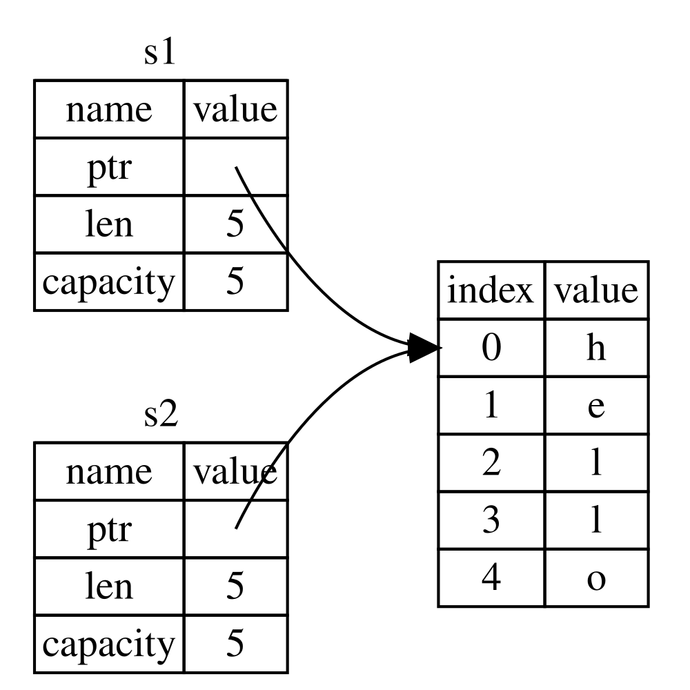
Figura 4-2: A representação em memória da variável s2 que tem uma cópia do ponteiro, comprimento e capacidade de s1
A representação não se parece com a Figura 4-3, que é como a memória se pareceria se o Rust copiasse os dados da heap também. Se o Rust fizesse isso, a operação s2 = s1 poderia ser muito cara em termos de desempenho em tempo de execução se os dados na heap fossem grandes.

Figura 4-3: Outra possibilidade para o que s2 = s1 poderia fazer se o Rust copiasse os dados da heap também
Anteriormente, dissemos que quando uma variável sai de escopo, o Rust chama automaticamente a função drop e limpa a memória da heap para aquela variável. Mas a Figura 4-2 mostra ambos os ponteiros de dados apontando para a mesma localização. Isso é um problema: quando s2 e s1 saem de escopo, ambos tentarão liberar a mesma memória. Isso é conhecido como um erro de double free (liberação dupla) e é um dos bugs de segurança de memória que mencionamos anteriormente. Liberar memória duas vezes pode levar à corrupção de memória, o que pode potencialmente levar a vulnerabilidades de segurança.
Para garantir a segurança de memória, depois da linha let s2 = s1;, o Rust considera s1 como não sendo mais válido. Portanto, o Rust não precisa liberar nada quando s1 sai de escopo. Confira o que acontece quando você tenta usar s1 depois que s2 é criada; não funcionará:
fn main() {
let s1 = String::from("hello");
let s2 = s1;
println!("{s1}, world!");
}Você receberá um erro como este porque o Rust impede você de usar a referência invalidada:
$ cargo run
Compiling ownership v0.1.0 (file:///projects/ownership)
error[E0382]: borrow of moved value: `s1`
--> src/main.rs:5:16
|
2 | let s1 = String::from("hello");
| -- move occurs because `s1` has type `String`, which does not implement the `Copy` trait
3 | let s2 = s1;
| -- value moved here
4 |
5 | println!("{s1}, world!");
| ^^ value borrowed here after move
|
= note: this error originates in the macro `$crate::format_args_nl` which comes from the expansion of the macro `println` (in Nightly builds, run with -Z macro-backtrace for more info)
help: consider cloning the value if the performance cost is acceptable
|
3 | let s2 = s1.clone();
| ++++++++
For more information about this error, try `rustc --explain E0382`.
error: could not compile `ownership` (bin "ownership") due to 1 previous error
Se você já ouviu os termos shallow copy (cópia rasa) e deep copy (cópia profunda) enquanto trabalhava com outras linguagens, o conceito de copiar o ponteiro, comprimento e capacidade sem copiar os dados provavelmente soa como fazer uma shallow copy. Mas como o Rust também invalida a primeira variável, em vez de ser chamado de shallow copy, isso é conhecido como um move (movimento). Neste exemplo, diríamos que s1 foi movida para s2. Então, o que realmente acontece é mostrado na Figura 4-4.

Figura 4-4: A representação em memória depois que s1 foi invalidada
Isso resolve nosso problema! Com apenas s2 válida, quando ela sair de escopo, ela sozinha liberará a memória, e pronto.
Além disso, há uma escolha de design que está implícita nisso: o Rust nunca criará automaticamente cópias “profundas” dos seus dados. Portanto, qualquer cópia automática pode ser assumida como sendo barata em termos de desempenho em tempo de execução.
Escopo e Atribuição
O inverso disso é verdadeiro para a relação entre escopo, ownership e memória sendo liberada via a função drop também. Quando você atribui um valor completamente novo a uma variável existente, o Rust chamará drop e liberará a memória do valor original imediatamente. Considere este código, por exemplo:
fn main() {
let mut s = String::from("hello");
s = String::from("ahoy");
println!("{s}, world!");
}Nós inicialmente declaramos uma variável s e a vinculamos a uma String com o valor "hello". Então, imediatamente criamos uma nova String com o valor "ahoy" e a atribuímos a s. Neste ponto, nada está se referindo ao valor original na heap. A Figura 4-5 ilustra os dados da stack e da heap agora:
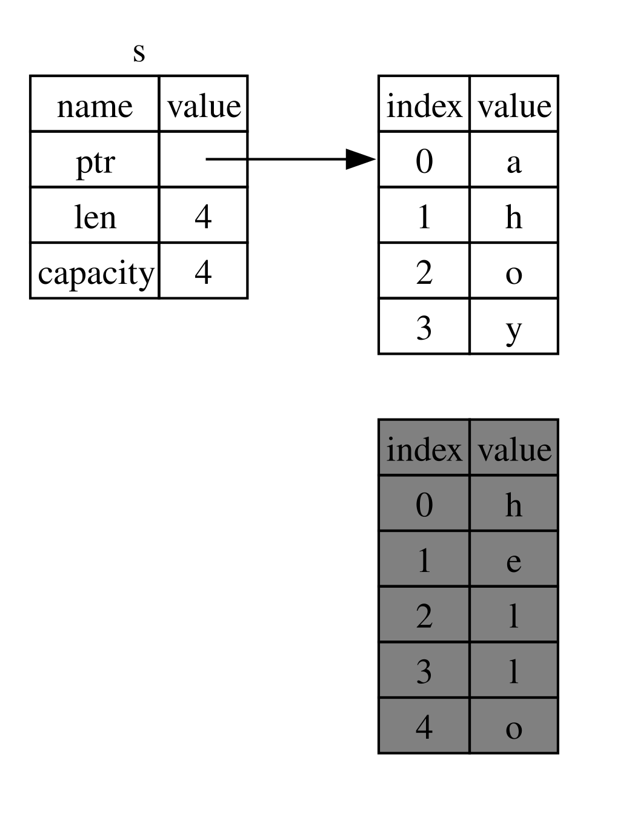
Figura 4-5: A representação em memória depois que o valor inicial foi substituído em sua totalidade
A string original, assim, sai imediatamente de escopo. O Rust rodará a função drop nela e sua memória será liberada imediatamente. Quando imprimimos o valor no final, será "ahoy, world!".
Variáveis e Dados Interagindo com Clone
Se nós quisermos copiar profundamente os dados da heap da String, não apenas os dados da stack, podemos usar um método comum chamado clone. Discutiremos sintaxe de método no Capítulo 5, mas como métodos são uma característica comum em muitas linguagens de programação, você provavelmente já os viu antes.
Aqui está um exemplo do método clone em ação:
fn main() {
let s1 = String::from("hello");
let s2 = s1.clone();
println!("s1 = {s1}, s2 = {s2}");
}Isso funciona muito bem e produz explicitamente o comportamento mostrado na Figura 4-3, onde os dados da heap são copiados.
Quando você vê uma chamada para clone, você sabe que algum código arbitrário está sendo executado e que esse código pode ser caro. É um indicador visual de que algo diferente está acontecendo.
Dados Somente da Stack: Copy
Há outra ruga sobre a qual não falamos ainda. Este código usando inteiros — parte do qual foi mostrado na Listagem 4-2 — funciona e é válido:
fn main() {
let x = 5;
let y = x;
println!("x = {x}, y = {y}");
}Mas esse código parece contradizer o que acabamos de aprender: não temos uma chamada para clone, mas x ainda é válido e não foi movido para y.
A razão é que tipos como inteiros que têm um tamanho conhecido em tempo de compilação são armazenados inteiramente na stack, então cópias dos valores reais são rápidas de fazer. Isso significa que não há razão para querermos impedir x de ser válido depois de criarmos a variável y. Em outras palavras, não há diferença entre cópia profunda e rasa aqui, então chamar clone não faria nada diferente da cópia rasa usual, e podemos deixá-lo de fora.
O Rust tem uma anotação especial chamada a trait Copy que podemos colocar em tipos que são armazenados na stack, como inteiros são (falaremos mais sobre traits no [Capítulo 10][traits]). Se um tipo implementa a trait Copy, variáveis que a usam não se movem, mas sim são trivialmente copiadas, tornando-as ainda válidas após atribuição a outra variável.
O Rust não nos deixará anotar um tipo com Copy se o tipo, ou qualquer uma de suas partes, tiver implementado a trait Drop. Se o tipo precisa que algo especial aconteça quando o valor sai de escopo e adicionamos a anotação Copy a esse tipo, teremos um erro em tempo de compilação. Para aprender sobre como adicionar a anotação Copy ao seu tipo para implementar a trait, veja [“Traits Deriváveis”][derivable-traits] no Apêndice C.
Então, quais tipos implementam a trait Copy? Você pode checar a documentação para o tipo dado para ter certeza, mas como regra geral, qualquer grupo de valores escalares simples pode implementar Copy, e nada que exija alocação ou seja alguma forma de recurso pode implementar Copy. Aqui estão alguns dos tipos que implementam Copy:
- Todos os tipos inteiros, como
u32. - O tipo Booleano,
bool, com valorestrueefalse. - Todos os tipos de ponto flutuante, como
f64. - O tipo caractere,
char. - Tuplas, se elas contiverem apenas tipos que também implementam
Copy. Por exemplo,(i32, i32)implementaCopy, mas(i32, String)não.
Ownership e Funções
A mecânica de passar um valor para uma função é similar à de atribuir um valor a uma variável. Passar uma variável para uma função irá mover ou copiar, assim como a atribuição faz. A Listagem 4-3 tem um exemplo com algumas anotações mostrando onde variáveis entram e saem de escopo.
fn main() {
let s = String::from("hello"); // s comes into scope
takes_ownership(s); // s's value moves into the function...
// ... and so is no longer valid here
let x = 5; // x comes into scope
makes_copy(x); // Because i32 implements the Copy trait,
// x does NOT move into the function,
// so it's okay to use x afterward.
} // Here, x goes out of scope, then s. However, because s's value was moved,
// nothing special happens.
fn takes_ownership(some_string: String) { // some_string comes into scope
println!("{some_string}");
} // Here, some_string goes out of scope and `drop` is called. The backing
// memory is freed.
fn makes_copy(some_integer: i32) { // some_integer comes into scope
println!("{some_integer}");
} // Here, some_integer goes out of scope. Nothing special happens.Se tentássemos usar s após a chamada para takes_ownership, o Rust lançaria um erro em tempo de compilação. Essas verificações estáticas nos protegem de erros. Tente adicionar código a main que usa s e x para ver onde você pode usá-los e onde as regras de ownership impedem você de fazê-lo.
Valores de Retorno e Escopo
Retornar valores também pode transferir ownership. A Listagem 4-4 mostra um exemplo de uma função que retorna algum valor, com anotações similares às da Listagem 4-3.
fn main() {
let s1 = gives_ownership(); // gives_ownership moves its return
// value into s1
let s2 = String::from("hello"); // s2 comes into scope
let s3 = takes_and_gives_back(s2); // s2 is moved into
// takes_and_gives_back, which also
// moves its return value into s3
} // Here, s3 goes out of scope and is dropped. s2 was moved, so nothing
// happens. s1 goes out of scope and is dropped.
fn gives_ownership() -> String { // gives_ownership will move its
// return value into the function
// that calls it
let some_string = String::from("yours"); // some_string comes into scope
some_string // some_string is returned and
// moves out to the calling
// function
}
// This function takes a String and returns a String.
fn takes_and_gives_back(a_string: String) -> String {
// a_string comes into
// scope
a_string // a_string is returned and moves out to the calling function
}O ownership de uma variável segue o mesmo padrão toda vez: atribuir um valor a outra variável o move. Quando uma variável que inclui dados na heap sai de escopo, o valor será limpo pelo drop a menos que o ownership dos dados tenha sido movido para outra variável.
Embora isso funcione, tomar ownership e então retornar ownership com cada função é um pouco tedioso. E se quisermos deixar uma função usar um valor mas não tomar ownership? É bastante irritante que qualquer coisa que passemos também precise ser passada de volta se quisermos usá-la novamente, além de quaisquer dados resultantes do corpo da função que possamos querer retornar também.
O Rust nos permite retornar múltiplos valores usando uma tupla, como mostrado na Listagem 4-5.
fn main() {
let s1 = String::from("hello");
let (s2, len) = calculate_length(s1);
println!("The length of '{s2}' is {len}.");
}
fn calculate_length(s: String) -> (String, usize) {
let length = s.len(); // len() returns the length of a String
(s, length)
}Mas isso é muita cerimônia e muito trabalho para um conceito que deveria ser comum. Felizmente para nós, o Rust tem uma funcionalidade para usar um valor sem transferir ownership: referências.
[data-types]: [[ch03-02-data-types.md#data-types|Tipos de Dados]] [ch8]: [[ch08-02-strings.md|Capítulo 8]] [traits]: [[ch10-02-traits.md|Capítulo 10]] [derivable-traits]: [[appendix-03-derivable-traits.md|Traits Deriváveis]] [methods]: [[ch05-03-method-syntax.md#methods|Métodos]] [paths-module-tree]: [[ch07-03-paths-for-referring-to-an-item-in-the-module-tree.md|Caminhos para Referenciar um Item na Árvore de Módulos]]
Referências e Empréstimo (Borrowing)
Referências e Borrowing
O problema com o código de tupla na Listagem 4-5 é que temos que retornar a String para a função chamadora para que possamos ainda usar a String depois da chamada para calculate_length, porque a String foi movida para dentro de calculate_length. Em vez disso, podemos fornecer uma referência ao valor da String. Uma referência é como um ponteiro no sentido de que é um endereço que podemos seguir para acessar os dados armazenados naquele endereço; esses dados pertencem a alguma outra variável. Diferente de um ponteiro, uma referência é garantida para apontar para um valor válido de um tipo particular durante a vida daquela referência.
Aqui está como você definiria e usaria uma função calculate_length que tem uma referência a um objeto como parâmetro em vez de tomar ownership do valor:
fn main() {
let s1 = String::from("hello");
let len = calculate_length(&s1);
println!("The length of '{s1}' is {len}.");
}
fn calculate_length(s: &String) -> usize {
s.len()
}Primeiro, note que todo o código de tupla na declaração da variável e no valor de retorno da função se foi. Segundo, note que passamos &s1 para calculate_length e, em sua definição, recebemos &String em vez de String. Esses “e comerciais” representam referências, e eles permitem que você se refira a algum valor sem tomar ownership dele. A Figura 4-6 descreve esse conceito.
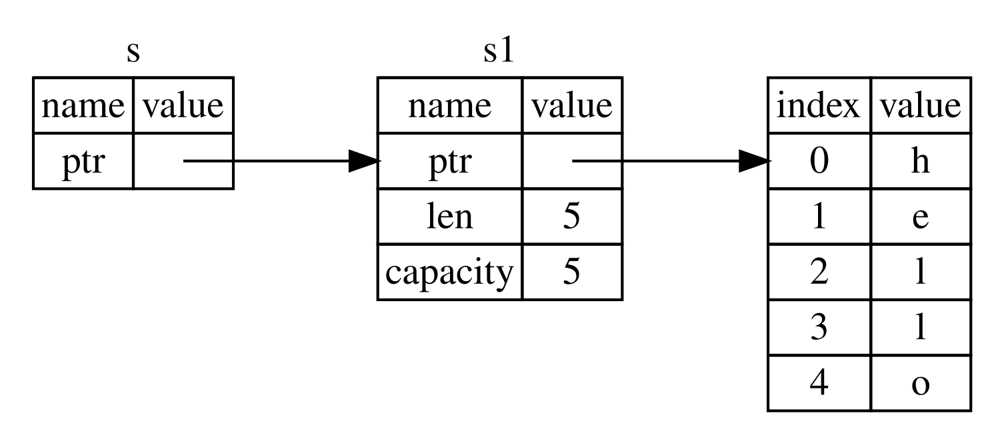
Figura 4-6: Um diagrama de &String s apontando para String s1
Nota: O oposto de referenciar usando
&é dereferencing (desreferenciar), que é realizado com o operador de desreferência,*. Veremos alguns usos do operador de desreferência no Capítulo 8 e discutiremos detalhes de desreferência no Capítulo 15.
Vamos dar uma olhada mais de perto na chamada da função aqui:
fn main() {
let s1 = String::from("hello");
let len = calculate_length(&s1);
println!("The length of '{s1}' is {len}.");
}
fn calculate_length(s: &String) -> usize {
s.len()
}A sintaxe &s1 nos permite criar uma referência que se refere ao valor de s1 mas não o possui. Como a referência não o possui, o valor para o qual ela aponta não será descartado quando a referência parar de ser usada.
Da mesma forma, a assinatura da função usa & para indicar que o tipo do parâmetro s é uma referência. Vamos adicionar algumas anotações explicativas:
fn main() {
let s1 = String::from("hello");
let len = calculate_length(&s1);
println!("The length of '{s1}' is {len}.");
}
fn calculate_length(s: &String) -> usize { // s is a reference to a String
s.len()
} // Here, s goes out of scope. But because s does not have ownership of what
// it refers to, the String is not dropped.O escopo no qual a variável s é válida é o mesmo que o escopo de qualquer parâmetro de função, mas o valor apontado pela referência não é descartado quando s para de ser usada, porque s não tem ownership. Quando funções têm referências como parâmetros em vez dos valores reais, não precisaremos retornar os valores para devolver o ownership, porque nunca tivemos ownership.
Chamamos a ação de criar uma referência de borrowing (empréstimo). Assim como na vida real, se uma pessoa possui algo, você pode pegar emprestado dela. Quando você terminar, você tem que devolver. Você não possui aquilo.
Então, o que acontece se tentarmos modificar algo que estamos pegando emprestado? Tente o código na Listagem 4-6. Alerta de spoiler: não funciona!
fn main() {
let s = String::from("hello");
change(&s);
}
fn change(some_string: &String) {
some_string.push_str(", world");
}Aqui está o erro:
$ cargo run
Compiling ownership v0.1.0 (file:///projects/ownership)
error[E0596]: cannot borrow `*some_string` as mutable, as it is behind a `&` reference
--> src/main.rs:8:5
|
8 | some_string.push_str(", world");
| ^^^^^^^^^^^ `some_string` is a `&` reference, so the data it refers to cannot be borrowed as mutable
|
help: consider changing this to be a mutable reference
|
7 | fn change(some_string: &mut String) {
| +++
For more information about this error, try `rustc --explain E0596`.
error: could not compile `ownership` (bin "ownership") due to 1 previous error
Assim como variáveis são imutáveis por padrão, referências também são. Não temos permissão para modificar algo para o qual temos uma referência.
Referências Mutáveis
Podemos consertar o código da Listagem 4-6 para nos permitir modificar um valor emprestado com apenas alguns pequenos ajustes que usam, em vez disso, uma referência mutável:
fn main() {
let mut s = String::from("hello");
change(&mut s);
}
fn change(some_string: &mut String) {
some_string.push_str(", world");
}Primeiro, mudamos s para ser mut. Então, criamos uma referência mutável com &mut s onde chamamos a função change e atualizamos a assinatura da função para aceitar uma referência mutável com some_string: &mut String. Isso torna muito claro que a função change irá mutar o valor que ela empresta.
Referências mutáveis têm uma grande restrição: se você tem uma referência mutável para um valor, você não pode ter outras referências para aquele valor. Este código que tenta criar duas referências mutáveis para s falhará:
fn main() {
let mut s = String::from("hello");
let r1 = &mut s;
let r2 = &mut s;
println!("{r1}, {r2}");
}Aqui está o erro:
$ cargo run
Compiling ownership v0.1.0 (file:///projects/ownership)
error[E0499]: cannot borrow `s` as mutable more than once at a time
--> src/main.rs:5:14
|
4 | let r1 = &mut s;
| ------ first mutable borrow occurs here
5 | let r2 = &mut s;
| ^^^^^^ second mutable borrow occurs here
6 |
7 | println!("{r1}, {r2}");
| -- first borrow later used here
For more information about this error, try `rustc --explain E0499`.
error: could not compile `ownership` (bin "ownership") due to 1 previous error
Esse erro diz que este código é inválido porque não podemos emprestar s como mutável mais de uma vez por vez. O primeiro empréstimo mutável está em r1 e deve durar até que seja usado no println!, mas entre a criação daquela referência mutável e seu uso, tentamos criar outra referência mutável em r2 que empresta os mesmos dados que r1.
A restrição que impede múltiplas referências mutáveis para os mesmos dados ao mesmo tempo permite mutação, mas de uma forma muito controlada. É algo com que novos Rustaceans lutam porque a maioria das linguagens permite que você mute sempre que quiser. O benefício de ter essa restrição é que o Rust pode prevenir data races (corridas de dados) em tempo de compilação. Uma data race é similar a uma condição de corrida e acontece quando estes três comportamentos ocorrem:
- Dois ou mais ponteiros acessam os mesmos dados ao mesmo tempo.
- Pelo menos um dos ponteiros está sendo usado para escrever nos dados.
- Não há mecanismo sendo usado para sincronizar o acesso aos dados.
Data races causam comportamento indefinido e podem ser difíceis de diagnosticar e corrigir quando você está tentando rastreá-los em tempo de execução; o Rust previne esse problema recusando-se a compilar código com data races!
Como sempre, podemos usar chaves para criar um novo escopo, permitindo múltiplas referências mutáveis, apenas não simultâneas:
fn main() {
let mut s = String::from("hello");
{
let r1 = &mut s;
} // r1 goes out of scope here, so we can make a new reference with no problems.
let r2 = &mut s;
}O Rust impõe uma regra similar para combinar referências mutáveis e imutáveis. Este código resulta em um erro:
fn main() {
let mut s = String::from("hello");
let r1 = &s; // no problem
let r2 = &s; // no problem
let r3 = &mut s; // BIG PROBLEM
println!("{r1}, {r2}, and {r3}");
}Aqui está o erro:
$ cargo run
Compiling ownership v0.1.0 (file:///projects/ownership)
error[E0502]: cannot borrow `s` as mutable because it is also borrowed as immutable
--> src/main.rs:6:14
|
4 | let r1 = &s; // no problem
| -- immutable borrow occurs here
5 | let r2 = &s; // no problem
6 | let r3 = &mut s; // BIG PROBLEM
| ^^^^^^ mutable borrow occurs here
7 |
8 | println!("{r1}, {r2}, and {r3}");
| -- immutable borrow later used here
For more information about this error, try `rustc --explain E0502`.
error: could not compile `ownership` (bin "ownership") due to 1 previous error
Ufa! Nós também não podemos ter uma referência mutável enquanto temos uma imutável para o mesmo valor.
Usuários de uma referência imutável não esperam que o valor mude repentinamente debaixo deles! No entanto, múltiplas referências imutáveis são permitidas porque ninguém que está apenas lendo os dados tem a capacidade de afetar a leitura dos dados de qualquer outra pessoa.
Note que o escopo de uma referência começa de onde ela é introduzida e continua até a última vez que essa referência é usada. Por exemplo, este código compilará porque o último uso das referências imutáveis está no println!, antes que a referência mutável seja introduzida:
fn main() {
let mut s = String::from("hello");
let r1 = &s; // no problem
let r2 = &s; // no problem
println!("{r1} and {r2}");
// Variables r1 and r2 will not be used after this point.
let r3 = &mut s; // no problem
println!("{r3}");
}Os escopos das referências imutáveis r1 e r2 terminam após o println! onde elas são usadas pela última vez, que é antes da referência mutável r3 ser criada. Esses escopos não se sobrepõem, então este código é permitido: o compilador pode dizer que a referência não está mais sendo usada em um ponto antes do fim do escopo.
Mesmo que erros de empréstimo possam ser frustrantes às vezes, lembre-se de que é o compilador do Rust apontando um bug potencial cedo (em tempo de compilação em vez de em tempo de execução) e mostrando exatamente onde o problema está. Então, você não tem que rastrear por que seus dados não são o que você pensava que eram.
Referências Pendentes (Dangling References)
Em linguagens com ponteiros, é fácil criar erroneamente um dangling pointer (ponteiro pendente) — um ponteiro que referencia uma localização na memória que pode ter sido dada a outra pessoa — liberando alguma memória enquanto preserva um ponteiro para aquela memória. No Rust, por outro lado, o compilador garante que referências nunca serão referências pendentes: se você tem uma referência para alguns dados, o compilador garantirá que os dados não sairão de escopo antes que a referência para os dados saia.
Vamos tentar criar uma referência pendente para ver como o Rust as previne com um erro em tempo de compilação:
fn main() {
let reference_to_nothing = dangle();
}
fn dangle() -> &String {
let s = String::from("hello");
&s
}Aqui está o erro:
$ cargo run
Compiling ownership v0.1.0 (file:///projects/ownership)
error[E0106]: missing lifetime specifier
--> src/main.rs:5:16
|
5 | fn dangle() -> &String {
| ^ expected named lifetime parameter
|
= help: this function's return type contains a borrowed value, but there is no value for it to be borrowed from
help: consider using the `'static` lifetime, but this is uncommon unless you're returning a borrowed value from a `const` or a `static`
|
5 | fn dangle() -> &'static String {
| +++++++
help: instead, you are more likely to want to return an owned value
|
5 - fn dangle() -> &String {
5 + fn dangle() -> String {
|
For more information about this error, try `rustc --explain E0106`.
error: could not compile `ownership` (bin "ownership") due to 1 previous error
Essa mensagem de erro refere-se a uma característica que não cobrimos ainda: lifetimes (tempos de vida). Discutiremos lifetimes em detalhes no Capítulo 10. Mas, se você desconsiderar as partes sobre lifetimes, a mensagem contém a chave para o porquê deste código ser um problema:
this function's return type contains a borrowed value, but there is no value
for it to be borrowed from
Vamos dar uma olhada mais de perto exatamente no que está acontecendo em cada estágio do nosso código dangle:
fn main() {
let reference_to_nothing = dangle();
}
fn dangle() -> &String { // dangle returns a reference to a String
let s = String::from("hello"); // s is a new String
&s // we return a reference to the String, s
} // Here, s goes out of scope and is dropped, so its memory goes away.
// Danger!Como s é criada dentro de dangle, quando o código de dangle termina, s será desalocada. Mas tentamos retornar uma referência a ela. Isso significa que essa referência estaria apontando para uma String inválida. Isso não é bom! O Rust não nos deixará fazer isso.
A solução aqui é retornar a String diretamente:
fn main() {
let string = no_dangle();
}
fn no_dangle() -> String {
let s = String::from("hello");
s
}Isso funciona sem problemas. O ownership é movido para fora, e nada é desalocado.
As Regras de Referências
Vamos recapitular o que discutimos sobre referências:
- A qualquer momento, você pode ter ou uma referência mutável ou qualquer número de referências imutáveis.
- Referências devem ser sempre válidas.
A seguir, olharemos para um tipo diferente de referência: slices.
O Tipo Slice
O Tipo Slice
Slices (fatias) permitem que você referencie uma sequência contígua de elementos em uma [coleção][ch8]. Uma slice é um tipo de referência, então ela não tem ownership.
Aqui está um pequeno problema de programação: escreva uma função que receba uma string de palavras separadas por espaços e retorne a primeira palavra que encontrar nessa string. Se a função não encontrar um espaço na string, a string inteira deve ser uma palavra, então a string inteira deve ser retornada.
Nota: Para os propósitos de introduzir slices, estamos assumindo ASCII apenas nesta seção; uma discussão mais completa sobre manipulação de UTF-8 está na seção [“Armazenando Texto Codificado em UTF-8 com Strings”][strings] do Capítulo 8.
Vamos trabalhar em como escreveríamos a assinatura dessa função sem usar slices, para entender o problema que slices resolverão:
fn first_word(s: &String) -> ?A função first_word tem um parâmetro do tipo &String. Não precisamos de ownership, então isso está bem. (Em Rust idiomático, funções não tomam ownership de seus argumentos a menos que precisem, e as razões para isso ficarão claras à medida que continuarmos.) Mas o que devemos retornar? Nós realmente não temos uma maneira de falar sobre parte de uma string. No entanto, poderíamos retornar o índice do final da palavra, indicado por um espaço. Vamos tentar isso, como mostrado na Listagem 4-7.
fn first_word(s: &String) -> usize {
let bytes = s.as_bytes();
for (i, &item) in bytes.iter().enumerate() {
if item == b' ' {
return i;
}
}
s.len()
}
fn main() {}Porque precisamos percorrer a String elemento por elemento e verificar se um valor é um espaço, converteremos nossa String para um array de bytes usando o método as_bytes.
fn first_word(s: &String) -> usize {
let bytes = s.as_bytes();
for (i, &item) in bytes.iter().enumerate() {
if item == b' ' {
return i;
}
}
s.len()
}
fn main() {}Em seguida, criamos um iterador sobre o array de bytes usando o método iter:
fn first_word(s: &String) -> usize {
let bytes = s.as_bytes();
for (i, &item) in bytes.iter().enumerate() {
if item == b' ' {
return i;
}
}
s.len()
}
fn main() {}Discutiremos iteradores em mais detalhes no [Capítulo 13][ch13]. Por enquanto, saiba que iter é um método que retorna cada elemento em uma coleção e que enumerate envolve o resultado de iter e retorna cada elemento como parte de uma tupla. O primeiro elemento da tupla retornada de enumerate é o índice, e o segundo elemento é uma referência ao elemento. Isso é um pouco mais conveniente do que calcular o índice nós mesmos.
Como o método enumerate retorna uma tupla, podemos usar padrões para desestruturar essa tupla. Estaremos discutindo padrões mais no [Capítulo 6][ch6]. No loop for, especificamos um padrão que tem i para o índice na tupla e &item para o único byte na tupla. Como recebemos uma referência ao elemento de .iter().enumerate(), usamos & no padrão.
Dentro do loop for, procuramos pelo byte que representa o espaço usando a sintaxe de literal de byte. Se encontrarmos um espaço, retornamos a posição. Caso contrário, retornamos o comprimento da string usando s.len().
fn first_word(s: &String) -> usize {
let bytes = s.as_bytes();
for (i, &item) in bytes.iter().enumerate() {
if item == b' ' {
return i;
}
}
s.len()
}
fn main() {}Agora temos uma maneira de descobrir o índice do final da primeira palavra na string, mas há um problema. Estamos retornando um usize por conta própria, mas ele é apenas um número significativo no contexto da &String. Em outras palavras, porque é um valor separado da String, não há garantia de que ele ainda será válido no futuro. Considere o programa na Listagem 4-8 que usa a função first_word da Listagem 4-7.
fn first_word(s: &String) -> usize {
let bytes = s.as_bytes();
for (i, &item) in bytes.iter().enumerate() {
if item == b' ' {
return i;
}
}
s.len()
}
fn main() {
let mut s = String::from("hello world");
let word = first_word(&s); // word will get the value 5
s.clear(); // this empties the String, making it equal to ""
// word still has the value 5 here, but s no longer has any content that we
// could meaningfully use with the value 5, so word is now totally invalid!
}Este programa compila sem erros e também o faria se usássemos word depois de chamar s.clear(). Porque word não está conectado ao estado de s de forma alguma, word ainda contém o valor 5. Poderíamos usar esse valor 5 com a variável s para tentar extrair a primeira palavra, mas isso seria um bug porque o conteúdo de s mudou desde que salvamos 5 em word.
Ter que se preocupar com o índice em word ficando fora de sincronia com os dados em s é tedioso e propenso a erros! Gerenciar esses índices é ainda mais frágil se escrevermos uma função second_word. Sua assinatura teria que se parecer com isso:
fn second_word(s: &String) -> (usize, usize) {Agora estamos rastreando um índice inicial e um final, e temos ainda mais valores que foram calculados a partir de dados em um estado particular, mas não estão atrelados a esse estado de forma alguma. Temos três variáveis não relacionadas flutuando que precisam ser mantidas em sincronia.
Felizmente, o Rust tem uma solução para esse problema: string slices.
String Slices
Uma string slice é uma referência para uma sequência contígua de elementos de uma String, e se parece com isso:
fn main() {
let s = String::from("hello world");
let hello = &s[0..5];
let world = &s[6..11];
}Em vez de uma referência para a String inteira, hello é uma referência para uma porção da String, especificada na parte extra [0..5]. Criamos slices usando um intervalo dentro de colchetes especificando [índice_inicial..índice_final], onde índice_inicial é a primeira posição na slice e índice_final é um a mais que a última posição na slice. Internamente, a estrutura de dados da slice armazena a posição inicial e o comprimento da slice, que corresponde a índice_final menos índice_inicial. Então, no caso de let world = &s[6..11];, world seria uma slice que contém um ponteiro para o byte no índice 6 de s com um valor de comprimento de 5.
A Figura 4-7 mostra isso em um diagrama.

Figura 4-7: Uma string slice referindo-se a parte de uma String
Com a sintaxe de intervalo .. do Rust, se você quiser começar no índice 0, você pode descartar o valor antes dos dois pontos. Em outras palavras, estes são iguais:
#![allow(unused)]
fn main() {
let s = String::from("hello");
let slice = &s[0..2];
let slice = &s[..2];
}Pelo mesmo motivo, se sua slice inclui o último byte da String, você pode descartar o número final. Isso significa que estes são iguais:
#![allow(unused)]
fn main() {
let s = String::from("hello");
let len = s.len();
let slice = &s[3..len];
let slice = &s[3..];
}Você também pode descartar ambos os valores para pegar uma slice da string inteira. Então, estes são iguais:
#![allow(unused)]
fn main() {
let s = String::from("hello");
let len = s.len();
let slice = &s[0..len];
let slice = &s[..];
}Nota: Índices de intervalo de string slice devem ocorrer em limites de caracteres UTF-8 válidos. Se você tentar criar uma string slice no meio de um caractere multibyte, seu programa sairá com um erro.
Com toda essa informação em mente, vamos reescrever first_word para retornar uma slice. O tipo que significa “string slice” é escrito como &str:
#![allow(unused)]
fn main() {
{{#rustdoc_include ../listings/ch04-understanding-ownership/no-listing-17-first-word-slice/src/main.rs:here}}
}Pegamos o índice para o final da palavra da mesma maneira que fizemos na Listagem 4-7, procurando pela primeira ocorrência de um espaço. Quando encontramos um espaço, retornamos uma string slice usando o início da string e o índice do espaço como os índices inicial e final.
Agora, quando chamamos first_word, recebemos de volta um único valor que está atrelado aos dados subjacentes. O valor é composto por uma referência ao ponto inicial da slice e o número de elementos na slice.
Retornar uma slice também funcionaria para uma função second_word:
fn second_word(s: &String) -> &str {Agora temos uma API direta que é muito mais difícil de bagunçar porque o compilador garantirá que as referências para a String permaneçam válidas. Lembre-se do bug no programa na Listagem 4-8, quando pegamos o índice para o final da primeira palavra mas então limpamos a string para que nosso índice fosse inválido? Aquele código estava logicamente incorreto, mas não mostrou nenhum erro imediato. Os problemas apareceriam mais tarde se continuássemos tentando usar o índice da primeira palavra com uma string esvaziada. Slices tornam esse bug impossível e nos deixam saber muito mais cedo que temos um problema com nosso código. Usar a versão de slice de first_word lançará um erro em tempo de compilação:
{{#rustdoc_include ../listings/ch04-understanding-ownership/no-listing-17-slice-error/src/main.rs:here}}Aqui está o erro do compilador:
{{#include ../listings/ch04-understanding-ownership/no-listing-17-slice-error/output.txt}}
Lembre-se das regras de empréstimo que, se tivermos uma referência imutável para algo, não podemos também tomar uma referência mutável. Como clear precisa truncar a String, ele precisa pegar uma referência mutável. O println! após a chamada para clear usa a referência em word, então a referência imutável deve ainda estar ativa naquele ponto. O Rust proíbe a referência mutável em clear e a referência imutável em word de existirem ao mesmo tempo, e a compilação falha. Não apenas o Rust tornou nossa API mais fácil de usar, mas também eliminou uma classe inteira de erros em tempo de compilação!
Strings Literais São Slices
Lembre-se que falamos sobre strings literais sendo armazenadas dentro do binário. Agora que sabemos sobre slices, podemos entender adequadamente strings literais:
#![allow(unused)]
fn main() {
let s = "Olá, mundo!";
}O tipo de s aqui é &str: é uma slice apontando para aquele ponto específico do binário. É também por isso que strings literais são imutáveis; &str é uma referência imutável.
String Slices como Parâmetros
Saber que você pode tomar slices de literais e valores String nos leva a mais uma melhoria em first_word, e essa é sua assinatura:
fn first_word(s: &String) -> &str {Um Rustacean mais experiente escreveria a assinatura mostrada na Listagem 4-9 em vez disso, porque ela nos permite usar a mesma função em ambos os valores &String e valores &str.
fn first_word(s: &str) -> &str {
let bytes = s.as_bytes();
for (i, &item) in bytes.iter().enumerate() {
if item == b' ' {
return &s[0..i];
}
}
&s[..]
}
fn main() {
let my_string = String::from("hello world");
// `first_word` works on slices of `String`s, whether partial or whole.
let word = first_word(&my_string[0..6]);
let word = first_word(&my_string[..]);
// `first_word` also works on references to `String`s, which are equivalent
// to whole slices of `String`s.
let word = first_word(&my_string);
let my_string_literal = "hello world";
// `first_word` works on slices of string literals, whether partial or
// whole.
let word = first_word(&my_string_literal[0..6]);
let word = first_word(&my_string_literal[..]);
// Because string literals *are* string slices already,
// this works too, without the slice syntax!
let word = first_word(my_string_literal);
}Se temos uma string slice, podemos passá-la diretamente. Se temos uma String, podemos passar uma slice da String ou uma referência para a String. Essa flexibilidade tira vantagem de deref coercions (coerções de desreferência), uma característica que cobriremos na seção [“Usando Deref Coercions em Funções e Métodos”][deref-coercions] do Capítulo 15.
Definir uma função para receber uma string slice em vez de uma referência para uma String torna nossa API mais geral e útil sem perder nenhuma funcionalidade:
fn first_word(s: &str) -> &str {
let bytes = s.as_bytes();
for (i, &item) in bytes.iter().enumerate() {
if item == b' ' {
return &s[0..i];
}
}
&s[..]
}
fn main() {
let my_string = String::from("hello world");
// `first_word` works on slices of `String`s, whether partial or whole.
let word = first_word(&my_string[0..6]);
let word = first_word(&my_string[..]);
// `first_word` also works on references to `String`s, which are equivalent
// to whole slices of `String`s.
let word = first_word(&my_string);
let my_string_literal = "hello world";
// `first_word` works on slices of string literals, whether partial or
// whole.
let word = first_word(&my_string_literal[0..6]);
let word = first_word(&my_string_literal[..]);
// Because string literals *are* string slices already,
// this works too, without the slice syntax!
let word = first_word(my_string_literal);
}Outras Slices
String slices, como você pode imaginar, são específicas para strings. Mas há um tipo de slice mais geral também. Considere este array:
#![allow(unused)]
fn main() {
let a = [1, 2, 3, 4, 5];
}Assim como podemos querer nos referir a parte de uma string, podemos querer nos referir a parte de um array. Faríamos assim:
#![allow(unused)]
fn main() {
let a = [1, 2, 3, 4, 5];
let slice = &a[1..3];
assert_eq!(slice, &[2, 3]);
}Essa slice tem o tipo &[i32]. Ela funciona da mesma maneira que string slices fazem, armazenando uma referência para o primeiro elemento e um comprimento. Você usará esse tipo de slice para todos os tipos de outras coleções. Discutiremos essas coleções em detalhes quando falarmos sobre vetores no Capítulo 8.
Resumo
Os conceitos de ownership, borrowing e slices garantem segurança de memória em programas Rust em tempo de compilação. A linguagem Rust dá a você controle sobre seu uso de memória da mesma maneira que outras linguagens de programação de sistemas. Mas ter o owner dos dados limpando automaticamente esses dados quando o owner sai de escopo significa que você não tem que escrever e depurar código extra para obter esse controle.
Ownership afeta como muitas outras partes do Rust funcionam, então falaremos sobre esses conceitos mais adiante ao longo do resto do livro. Vamos para o Capítulo 5 e olhar para o agrupamento de pedaços de dados juntos em uma struct.
[ch13]: [[ch13-02-iterators.md|Capítulo 13]] [ch6]: [[ch06-02-match.md#patterns-that-bind-to-values|Capítulo 6]] [ch8]: [[ch08-00-common-collections.md|Capítulo 8]] [strings]: [[ch08-02-strings.md#storing-utf-8-encoded-text-with-strings|Armazenando Texto Codificado em UTF-8 com Strings]] [deref-coercions]: [[ch15-02-deref.md#using-deref-coercions-in-functions-and-methods|Usando Deref Coercions em Funções e Métodos]]
Usando Structs para Estruturar Dados Relacionados
Uma struct, ou estrutura, é um tipo de dado personalizado que permite empacotar e nomear múltiplos valores relacionados que formam um grupo significativo. Se você está familiarizado com uma linguagem orientada a objetos, uma struct é como os atributos de dados de um objeto. Neste capítulo, compararemos e contrastaremos tuplas com structs para construir sobre o que você já sabe e demonstrar quando structs são uma maneira melhor de agrupar dados.
Demonstraremos como definir e instanciar structs. Discutiremos como definir funções associadas, especialmente o tipo de funções associadas chamadas métodos, para especificar comportamento associado a um tipo struct. Structs e enums (discutidos no Capítulo 6) são os blocos de construção para criar novos tipos no domínio do seu programa para aproveitar ao máximo a verificação de tipos em tempo de compilação do Rust.
Definindo e Instanciando Structs
Definindo e Instanciando Structs
Structs são semelhantes a [[Tuplas]], discutidas na seção “O Tipo Tupla”, pois ambas contêm múltiplos valores relacionados. Como as tuplas, as partes de uma struct podem ser de diferentes tipos. Diferente das tuplas, em uma struct você nomeia cada pedaço de dado para que fique claro o que os valores significam. Adicionar esses nomes significa que structs são mais flexíveis que tuplas: Você não precisa depender da ordem dos dados para especificar ou acessar os valores de uma instância.
Para definir uma struct, inserimos a palavra-chave struct e nomeamos a struct inteira. O
nome de uma struct deve descrever o significado dos pedaços de dados sendo
agrupados. Então, dentro de chaves, definimos os nomes e tipos dos
pedaços de dados, que chamamos de campos. Por exemplo, a Listagem 5-1 mostra uma
struct que armazena informações sobre uma conta de usuário.
struct User {
active: bool,
username: String,
email: String,
sign_in_count: u64,
}
fn main() {}Para usar uma struct depois de tê-la definido, criamos uma instância dessa struct
especificando valores concretos para cada um dos campos. Criamos uma instância
declarando o nome da struct e depois adicionando chaves contendo pares chave: valor, onde as chaves são os nomes dos campos e os valores são os
dados que queremos armazenar nesses campos. Não precisamos especificar os campos na
mesma ordem em que os declaramos na struct. Em outras palavras, a
definição da struct é como um modelo geral para o tipo, e as instâncias preenchem
esse modelo com dados específicos para criar valores do tipo. Por
exemplo, podemos declarar um usuário específico como mostrado na Listagem 5-2.
struct User {
active: bool,
username: String,
email: String,
sign_in_count: u64,
}
fn main() {
let user1 = User {
active: true,
username: String::from("someusername123"),
email: String::from("someone@example.com"),
sign_in_count: 1,
};
}Para obter um valor específico de uma struct, usamos a notação de ponto. Por exemplo, para
acessar o endereço de email deste usuário, usamos user1.email. Se a instância for
mutável, podemos mudar um valor usando a notação de ponto e atribuindo em um
campo específico. A Listagem 5-3 mostra como mudar o valor no campo email
de uma instância User mutável.
struct User {
active: bool,
username: String,
email: String,
sign_in_count: u64,
}
fn main() {
let mut user1 = User {
active: true,
username: String::from("someusername123"),
email: String::from("someone@example.com"),
sign_in_count: 1,
};
user1.email = String::from("anotheremail@example.com");
}Note que a instância inteira deve ser mutável; Rust não nos permite marcar apenas certos campos como mutáveis. Como com qualquer expressão, podemos construir uma nova instância da struct como a última expressão no corpo da função para retornar implicitamente essa nova instância.
A Listagem 5-4 mostra uma função build_user que retorna uma instância User com
o email e nome de usuário fornecidos. O campo active recebe o valor true, e o
sign_in_count recebe o valor de 1.
struct User {
active: bool,
username: String,
email: String,
sign_in_count: u64,
}
fn build_user(email: String, username: String) -> User {
User {
active: true,
username: username,
email: email,
sign_in_count: 1,
}
}
fn main() {
let user1 = build_user(
String::from("someone@example.com"),
String::from("someusername123"),
);
}Faz sentido nomear os parâmetros da função com o mesmo nome dos campos da struct,
mas ter que repetir os nomes dos campos e variáveis email e username é um pouco entediante.
Se a struct tivesse mais campos, repetir cada nome ficaria ainda mais irritante.
Felizmente, há uma abreviação conveniente!
Usando a Abreviação de Inicialização de Campo (Field Init Shorthand)
Porque os nomes dos parâmetros e os nomes dos campos da struct são exatamente os mesmos na
Listagem 5-4, podemos usar a sintaxe de field init shorthand para reescrever
build_user de modo que ela se comporte exatamente da mesma maneira, mas sem a
repetição de username e email, como mostrado na Listagem 5-5.
struct User {
active: bool,
username: String,
email: String,
sign_in_count: u64,
}
fn build_user(email: String, username: String) -> User {
User {
active: true,
username,
email,
sign_in_count: 1,
}
}
fn main() {
let user1 = build_user(
String::from("someone@example.com"),
String::from("someusername123"),
);
}Aqui, estamos criando uma nova instância da struct User, que tem um campo
chamado email. Queremos definir o valor do campo email para o valor no
parâmetro email da função build_user. Porque o campo email e o
parâmetro email têm o mesmo nome, só precisamos escrever email em vez
de email: email.
Criando Instâncias a partir de Outras Instâncias com Sintaxe de Atualização de Struct (Struct Update Syntax)
Muitas vezes é útil criar uma nova instância de uma struct que inclua a maioria dos valores de outra instância do mesmo tipo, mas altere alguns deles. Você pode fazer isso usando a [[Struct Update Syntax|sintaxe de atualização de struct]].
Primeiro, na Listagem 5-6 mostramos como criar uma nova instância User em user2 da
maneira regular, sem a sintaxe de atualização. Definimos um novo valor para email, mas
de resto usamos os mesmos valores de user1 que criamos na Listagem 5-2.
struct User {
active: bool,
username: String,
email: String,
sign_in_count: u64,
}
fn main() {
// --snip--
let user1 = User {
email: String::from("someone@example.com"),
username: String::from("someusername123"),
active: true,
sign_in_count: 1,
};
let user2 = User {
active: user1.active,
username: user1.username,
email: String::from("another@example.com"),
sign_in_count: user1.sign_in_count,
};
}Usando a sintaxe de atualização de struct, podemos obter o mesmo efeito com menos código,
como mostrado na Listagem 5-7. A sintaxe .. especifica que os campos restantes não
explicitamente definidos devem ter o mesmo valor que os campos na instância fornecida.
struct User {
active: bool,
username: String,
email: String,
sign_in_count: u64,
}
fn main() {
// --snip--
let user1 = User {
email: String::from("someone@example.com"),
username: String::from("someusername123"),
active: true,
sign_in_count: 1,
};
let user2 = User {
email: String::from("another@example.com"),
..user1
};
}O código na Listagem 5-7 também cria uma instância em user2 que tem um
valor diferente para email, mas tem os mesmos valores para os campos username,
active e sign_in_count de user1. O ..user1 deve vir por último
para especificar que quaisquer campos restantes devem obter seus valores dos
campos correspondentes em user1, mas podemos escolher especificar valores para quantos
campos quisermos em qualquer ordem, independentemente da ordem dos campos na
definição da struct.
Note que a sintaxe de atualização de struct usa = como uma atribuição; isso é porque
ela move os dados, assim como vimos na seção “Variáveis e Dados Interagindo com
Move”. Neste exemplo, não podemos mais usar
user1 depois de criar user2 porque a String no campo username de
user1 foi movida para user2. Se tivéssemos dado a user2 novos valores String para
email e username, e assim usado apenas os valores de active e sign_in_count
de user1, então user1 ainda seria válido após criar user2.
Tanto active quanto sign_in_count são tipos que implementam a trait Copy, então
o comportamento que discutimos na seção “Dados Somente na Stack: Copy”
se aplicaria. Também podemos usar user1.email neste exemplo,
porque seu valor não foi movido de user1.
Criando Tipos Diferentes com Tuple Structs (Structs de Tupla)
Rust também suporta structs que parecem semelhantes a tuplas, chamadas tuple structs. Tuple structs têm o significado adicionado que o nome da struct fornece, mas não têm nomes associados aos seus campos; em vez disso, elas apenas têm os tipos dos campos. Tuple structs são úteis quando você quer dar à tupla inteira um nome e tornar a tupla um tipo diferente de outras tuplas, e quando nomear cada campo como em uma struct regular seria verborrágico ou redundante.
Para definir uma tuple struct, comece com a palavra-chave struct e o nome da struct
seguido pelos tipos na tupla. Por exemplo, aqui definimos e usamos duas
tuple structs chamadas Color e Point:
struct Color(i32, i32, i32);
struct Point(i32, i32, i32);
fn main() {
let black = Color(0, 0, 0);
let origin = Point(0, 0, 0);
}Note que os valores black e origin são tipos diferentes porque são
instâncias de diferentes tuple structs. Cada struct que você define é seu próprio tipo,
mesmo que os campos dentro da struct possam ter os mesmos tipos. Por
exemplo, uma função que aceita um parâmetro do tipo Color não pode aceitar um
Point como argumento, mesmo que ambos os tipos sejam compostos por três valores
i32. Caso contrário, instâncias de tuple struct são semelhantes a tuplas, pois você pode
desestruturá-las em suas partes individuais, e pode usar um . seguido
pelo índice para acessar um valor individual. Diferente das tuplas, tuple structs
exigem que você nomeie o tipo da struct quando as desestrutura. Por
exemplo, escreveríamos let Point(x, y, z) = origin; para desestruturar os
valores no ponto origin em variáveis chamadas x, y e z.
Definindo Unit-Like Structs (Structs Tipo Unit)
Você também pode definir structs que não têm campos! Estas são chamadas de
unit-like structs porque se comportam de maneira semelhante a (), o tipo unit que
mencionamos na seção “O Tipo Tupla”. Unit-like
structs podem ser úteis quando você precisa implementar uma trait em algum tipo, mas não
tem nenhum dado que queira armazenar no próprio tipo. Discutiremos traits
no Capítulo 10. Aqui está um exemplo de declaração e instanciação de uma unit struct
chamada AlwaysEqual:
struct AlwaysEqual;
fn main() {
let subject = AlwaysEqual;
}Para definir AlwaysEqual, usamos a palavra-chave struct, o nome que queremos e
então um ponto e vírgula. Não há necessidade de chaves ou parênteses! Então, podemos obter
uma instância de AlwaysEqual na variável subject de maneira semelhante: usando
o nome que definimos, sem chaves ou parênteses. Imagine que
mais tarde implementaremos um comportamento para este tipo de modo que cada instância de
AlwaysEqual seja sempre igual a cada instância de qualquer outro tipo, talvez para
ter um resultado conhecido para fins de teste. Não precisaríamos de nenhum dado para
implementar esse comportamento! Você verá no Capítulo 10 como definir traits e
implementá-las em qualquer tipo, incluindo unit-like structs.
Ownership de Dados da Struct
Na definição da struct
Userna Listagem 5-1, usamos o tipoStringproprietário (owned) em vez do tipo slice de string&str. Esta é uma escolha deliberada porque queremos que cada instância desta struct possua todos os seus dados e que esses dados sejam válidos por tanto tempo quanto a struct inteira for válida.Também é possível que structs armazenem referências a dados de propriedade de outra coisa, mas fazer isso requer o uso de lifetimes, um recurso do Rust que discutiremos no Capítulo 10. Lifetimes garantem que os dados referenciados por uma struct sejam válidos por tanto tempo quanto a struct for. Digamos que você tente armazenar uma referência em uma struct sem especificar lifetimes, como o seguinte em src/main.rs; isso não funcionará:
struct User { active: bool, username: &str, email: &str, sign_in_count: u64, } fn main() { let user1 = User { active: true, username: "someusername123", email: "someone@example.com", sign_in_count: 1, }; }O compilador reclamará que precisa de especificadores de lifetime:
$ cargo run Compiling structs v0.1.0 (file:///projects/structs) error[E0106]: missing lifetime specifier --> src/main.rs:3:15 | 3 | username: &str, | ^ expected named lifetime parameter | help: consider introducing a named lifetime parameter | 1 ~ struct User<'a> { 2 | active: bool, 3 ~ username: &'a str, | error[E0106]: missing lifetime specifier --> src/main.rs:4:12 | 4 | email: &str, | ^ expected named lifetime parameter | help: consider introducing a named lifetime parameter | 1 ~ struct User<'a> { 2 | active: bool, 3 | username: &str, 4 ~ email: &'a str, | For more information about this error, try `rustc --explain E0106`. error: could not compile `structs` (bin "structs") due to 2 previous errorsNo Capítulo 10, discutiremos como corrigir esses erros para que você possa armazenar referências em structs, mas por enquanto, corrigiremos erros como esses usando tipos proprietários (owned) como
Stringem vez de referências como&str.
Um Programa Exemplo Usando Structs
Um Exemplo de Programa Usando Structs
Para entender quando podemos querer usar structs, vamos escrever um programa que calcula a área de um retângulo. Começaremos usando variáveis simples e então refatoraremos o programa até estarmos usando structs.
Vamos fazer um novo projeto binário com Cargo chamado rectangles que receberá a largura e a altura de um retângulo especificadas em pixels e calculará a área do retângulo. A Listagem 5-8 mostra um programa curto com uma maneira de fazer exatamente isso em nosso src/main.rs do projeto.
fn main() {
let width1 = 30;
let height1 = 50;
println!(
"The area of the rectangle is {} square pixels.",
area(width1, height1)
);
}
fn area(width: u32, height: u32) -> u32 {
width * height
}Agora, execute este programa usando cargo run:
$ cargo run
Compiling rectangles v0.1.0 (file:///projects/rectangles)
Finished `dev` profile [unoptimized + debuginfo] target(s) in 0.42s
Running `target/debug/rectangles`
The area of the rectangle is 1500 square pixels.
Este código consegue descobrir a área do retângulo chamando a
função area com cada dimensão, mas podemos fazer mais para tornar este código claro
e legível.
O problema com este código é evidente na assinatura de area:
fn main() {
let width1 = 30;
let height1 = 50;
println!(
"The area of the rectangle is {} square pixels.",
area(width1, height1)
);
}
fn area(width: u32, height: u32) -> u32 {
width * height
}A função area deve calcular a área de um retângulo, mas a
função que escrevemos tem dois parâmetros, e não está claro em lugar nenhum em nosso
programa que os parâmetros estão relacionados. Seria mais legível e mais
gerenciável agrupar largura e altura. Já discutimos uma maneira
de fazermos isso na seção “O Tipo Tupla”
do Capítulo 3: usando tuplas.
Refatorando com Tuplas
A Listagem 5-9 mostra outra versão do nosso programa que usa tuplas.
fn main() {
let rect1 = (30, 50);
println!(
"The area of the rectangle is {} square pixels.",
area(rect1)
);
}
fn area(dimensions: (u32, u32)) -> u32 {
dimensions.0 * dimensions.1
}De uma maneira, este programa é melhor. Tuplas nos permitem adicionar um pouco de estrutura, e agora estamos passando apenas um argumento. Mas de outra maneira, esta versão é menos clara: Tuplas não nomeiam seus elementos, então temos que indexar nas partes da tupla, tornando nosso cálculo menos óbvio.
Confundir a largura e a altura não importaria para o cálculo da área, mas se
quisermos desenhar o retângulo na tela, importaria! Teríamos que
ter em mente que width é o índice de tupla 0 e height é o índice de tupla
1. Isso seria ainda mais difícil para outra pessoa descobrir e manter em
mente se ela fosse usar nosso código. Porque não transmitimos o significado dos
nossos dados em nosso código, agora é mais fácil introduzir erros.
Refatorando com Structs
Usamos structs para adicionar significado rotulando os dados. Podemos transformar a tupla que estamos usando em uma struct com um nome para o todo, bem como nomes para as partes, como mostrado na Listagem 5-10.
struct Rectangle {
width: u32,
height: u32,
}
fn main() {
let rect1 = Rectangle {
width: 30,
height: 50,
};
println!(
"The area of the rectangle is {} square pixels.",
area(&rect1)
);
}
fn area(rectangle: &Rectangle) -> u32 {
rectangle.width * rectangle.height
}Aqui, definimos uma struct e a nomeamos Rectangle. Dentro das chaves,
definimos os campos como width e height, ambos do tipo u32. Então, em main, criamos uma instância específica de Rectangle
que tem uma largura de 30 e uma altura de 50.
Nossa função area agora é definida com um parâmetro, que nomeamos
rectangle, cujo tipo é um empréstimo imutável de uma instância da struct Rectangle.
Como mencionado no Capítulo 4, queremos pegar a struct emprestada em vez de
tomar posse dela. Desta forma, main mantém sua posse e pode continuar
usando rect1, que é a razão pela qual usamos o & na assinatura da função e
onde chamamos a função.
A função area acessa os campos width e height da instância Rectangle
(note que acessar campos de uma instância de struct emprestada não
move os valores dos campos, e é por isso que você frequentemente vê empréstimos de structs). Nossa
assinatura de função para area agora diz exatamente o que queremos dizer: Calcule a área
de Rectangle, usando seus campos width e height. Isso transmite que a
largura e a altura estão relacionadas entre si, e dá nomes descritivos aos
valores em vez de usar os valores de índice de tupla de 0 e 1. Isso é uma
vitória para a clareza.
Adicionando Funcionalidade Útil com Traits Derivadas
Seria útil poder imprimir uma instância de Rectangle enquanto estamos
depurando nosso programa e ver os valores de todos os seus campos. A Listagem 5-11 tenta
usar a macro println! como usamos em
capítulos anteriores. Isso não funcionará, no entanto.
struct Rectangle {
width: u32,
height: u32,
}
fn main() {
let rect1 = Rectangle {
width: 30,
height: 50,
};
println!("rect1 is {rect1}");
}Quando compilamos este código, recebemos um erro com esta mensagem principal:
error[E0277]: `Rectangle` doesn't implement `std::fmt::Display`
A macro println! pode fazer muitos tipos de formatação, e por padrão, as chaves
dizem a println! para usar a formatação conhecida como Display: saída destinada
para consumo direto do usuário final. Os tipos primitivos que vimos até agora
implementam Display por padrão porque há apenas uma maneira de querer mostrar
um 1 ou qualquer outro tipo primitivo para um usuário. Mas com structs, a maneira como
println! deve formatar a saída é menos clara porque há mais
possibilidades de exibição: Você quer vírgulas ou não? Você quer imprimir as
chaves? Todos os campos devem ser mostrados? Devido a essa ambiguidade, Rust
não tenta adivinhar o que queremos, e structs não têm uma implementação fornecida
de Display para usar com println! e o placeholder {}.
Se continuarmos lendo os erros, encontraremos esta nota útil:
| |`Rectangle` cannot be formatted with the default formatter
| required by this formatting parameter
Vamos tentar! A chamada da macro println! agora ficará como println!("rect1 is {rect1:?}");. Colocar o especificador :? dentro das chaves diz a
println! que queremos usar um formato de saída chamado Debug. A trait Debug
nos permite imprimir nossa struct de uma maneira que seja útil para desenvolvedores para que
possamos ver seu valor enquanto estamos depurando nosso código.
Compile o código com esta mudança. Droga! Ainda recebemos um erro:
error[E0277]: `Rectangle` doesn't implement `Debug`
Mas novamente, o compilador nos dá uma nota útil:
| required by this formatting parameter
|
Rust inclui funcionalidade para imprimir informações de depuração, mas
temos que explicitamente optar por disponibilizar essa funcionalidade para nossa struct.
Para fazer isso, adicionamos o atributo externo #[derive(Debug)] logo antes da
definição da struct, como mostrado na Listagem 5-12.
#[derive(Debug)]
struct Rectangle {
width: u32,
height: u32,
}
fn main() {
let rect1 = Rectangle {
width: 30,
height: 50,
};
println!("rect1 is {rect1:?}");
}Agora, quando executarmos o programa, não receberemos nenhum erro, e veremos a seguinte saída:
$ cargo run
Compiling rectangles v0.1.0 (file:///projects/rectangles)
Finished `dev` profile [unoptimized + debuginfo] target(s) in 0.48s
Running `target/debug/rectangles`
rect1 is Rectangle { width: 30, height: 50 }
Legal! Não é a saída mais bonita, mas mostra os valores de todos os campos
para esta instância, o que definitivamente ajudaria durante a depuração. Quando temos
structs maiores, é útil ter uma saída que seja um pouco mais fácil de ler; nesses
casos, podemos usar {:#?} em vez de {:?} na string println!. Neste
exemplo, usar o estilo {:#?} produzirá o seguinte:
$ cargo run
Compiling rectangles v0.1.0 (file:///projects/rectangles)
Finished `dev` profile [unoptimized + debuginfo] target(s) in 0.48s
Running `target/debug/rectangles`
rect1 is Rectangle {
width: 30,
height: 50,
}
Outra maneira de imprimir um valor usando o formato Debug é usar a macro dbg!, que toma posse de uma expressão (ao contrário de
println!, que toma uma referência), imprime o arquivo e o número da linha de
onde essa chamada da macro dbg! ocorre em seu código junto com o valor resultante
dessa expressão, e retorna a posse do valor.
Nota: Chamar a macro
dbg!imprime para o fluxo do console de erro padrão (stderr), ao contrário deprintln!, que imprime para o fluxo do console de saída padrão (stdout). Falaremos mais sobrestderrestdoutna seção “Redirecionando Erros para Erro Padrão” no Capítulo 12.
Aqui está um exemplo onde estamos interessados no valor que é atribuído ao
campo width, bem como o valor da struct inteira em rect1:
#[derive(Debug)]
struct Rectangle {
width: u32,
height: u32,
}
fn main() {
let scale = 2;
let rect1 = Rectangle {
width: dbg!(30 * scale),
height: 50,
};
dbg!(&rect1);
}Podemos colocar dbg! em torno da expressão 30 * scale e, porque dbg!
retorna a posse do valor da expressão, o campo width receberá o
mesmo valor como se não tivéssemos a chamada dbg! lá. Não queremos que dbg!
tome posse de rect1, então usamos uma referência a rect1 na próxima chamada.
Aqui está como a saída deste exemplo se parece:
$ cargo run
Compiling rectangles v0.1.0 (file:///projects/rectangles)
Finished `dev` profile [unoptimized + debuginfo] target(s) in 0.61s
Running `target/debug/rectangles`
[src/main.rs:10:16] 30 * scale = 60
[src/main.rs:14:5] &rect1 = Rectangle {
width: 60,
height: 50,
}
Podemos ver que a primeira parte da saída veio de src/main.rs linha 10 onde estamos
depurando a expressão 30 * scale, e seu valor resultante é 60 (a
formatação Debug implementada para inteiros é imprimir apenas seu valor). A
chamada dbg! na linha 14 de src/main.rs exibe o valor de &rect1, que é
a struct Rectangle. Esta saída usa a formatação Debug bonita do
tipo Rectangle. A macro dbg! pode ser realmente útil quando você está tentando
descobrir o que seu código está fazendo!
Além da trait Debug, Rust forneceu um número de traits para nós
usarmos com o atributo derive que podem adicionar comportamento útil aos nossos tipos
personalizados. Essas traits e seus comportamentos estão listados no Apêndice C. Cobriremos como implementar essas traits com comportamento personalizado,
bem como como criar suas próprias traits no Capítulo 10. Também há muitos
atributos além de derive; para mais informações, veja a seção “Atributos”
da Referência do Rust.
Nossa função area é muito específica: Ela calcula apenas a área de retângulos.
Seria útil amarrar esse comportamento mais intimamente à nossa struct Rectangle
porque ela não funcionará com nenhum outro tipo. Vamos ver como podemos continuar a
refatorar este código transformando a função area em um método area
definido em nosso tipo Rectangle.
Sintaxe de Métodos
Métodos
Métodos são semelhantes a funções: Nós os declaramos com a palavra-chave fn e um
nome, eles podem ter parâmetros e um valor de retorno, e contêm algum código
que é executado quando o método é chamado de outro lugar. Diferente de funções,
métodos são definidos dentro do contexto de uma struct (ou um enum ou um objeto de trait,
que cobrimos no Capítulo 6 e Capítulo
18, respectivamente), e seu primeiro parâmetro é
sempre self, que representa a instância da struct na qual o método está sendo
chamado.
Sintaxe de Método
Vamos mudar a função area que tem uma instância Rectangle como parâmetro
e, em vez disso, fazer um método area definido na struct Rectangle, como mostrado
na Listagem 5-13.
#[derive(Debug)]
struct Rectangle {
width: u32,
height: u32,
}
impl Rectangle {
fn area(&self) -> u32 {
self.width * self.height
}
}
fn main() {
let rect1 = Rectangle {
width: 30,
height: 50,
};
println!(
"The area of the rectangle is {} square pixels.",
rect1.area()
);
}Para definir a função dentro do contexto de Rectangle, iniciamos um bloco impl
(implementação) para Rectangle. Tudo dentro deste bloco impl
será associado ao tipo Rectangle. Então, movemos a função area
para dentro das chaves do impl e mudamos o primeiro (e neste caso, único)
parâmetro para ser self na assinatura e em todos os lugares dentro do corpo. Em
main, onde chamamos a função area e passamos rect1 como argumento,
podemos usar a sintaxe de método para chamar o método area em nossa instância
Rectangle. A sintaxe de método vai depois de uma instância: Adicionamos um ponto seguido
pelo nome do método, parênteses e quaisquer argumentos.
Na assinatura de area, usamos &self em vez de rectangle: &Rectangle.
O &self é na verdade uma abreviação para self: &Self. Dentro de um bloco impl, o
tipo Self é um alias para o tipo que o bloco impl é para. Métodos devem
ter um parâmetro chamado self do tipo Self para seu primeiro parâmetro, então Rust
permite abreviar isso apenas com o nome self na primeira posição de parâmetro.
Note que ainda precisamos usar o & na frente da abreviação self para
indicar que este método empresta a instância Self, assim como fizemos em
rectangle: &Rectangle. Métodos podem tomar posse de self, emprestar self
imutavelmente, como fizemos aqui, ou emprestar self mutavelmente, assim como podem com qualquer
outro parâmetro.
Escolhemos &self aqui pela mesma razão que usamos &Rectangle na versão da função:
Não queremos tomar posse, e queremos apenas ler os dados na
struct, não escrever nela. Se quiséssemos mudar a instância na qual
chamamos o método como parte do que o método faz, usaríamos &mut self como
o primeiro parâmetro. Ter um método que toma posse da instância
usando apenas self como o primeiro parâmetro é raro; essa técnica é geralmente
usada quando o método transforma self em outra coisa e você quer
impedir o chamador de usar a instância original após a transformação.
A principal razão para usar métodos em vez de funções, além de
fornecer sintaxe de método e não ter que repetir o tipo de self em cada
assinatura de método, é para organização. Colocamos todas as coisas que podemos fazer
com uma instância de um tipo em um bloco impl em vez de fazer futuros usuários
do nosso código procurarem por capacidades de Rectangle em vários lugares na
biblioteca que fornecemos.
Note que podemos escolher dar a um método o mesmo nome de um dos campos da struct.
Por exemplo, podemos definir um método em Rectangle que também é chamado
width:
#[derive(Debug)]
struct Rectangle {
width: u32,
height: u32,
}
impl Rectangle {
fn width(&self) -> bool {
self.width > 0
}
}
fn main() {
let rect1 = Rectangle {
width: 30,
height: 50,
};
if rect1.width() {
println!("The rectangle has a nonzero width; it is {}", rect1.width);
}
}Aqui, estamos escolhendo fazer o método width retornar true se o valor no
campo width da instância for maior que 0 e false se o valor for
0: Podemos usar um campo dentro de um método de mesmo nome para qualquer propósito. Em
main, quando seguimos rect1.width com parênteses, Rust sabe que queremos dizer o
método width. Quando não usamos parênteses, Rust sabe que queremos dizer o campo
width.
Muitas vezes, mas nem sempre, quando damos a um método o mesmo nome de um campo, queremos que ele retorne apenas o valor no campo e não faça mais nada. Métodos como este são chamados de getters, e Rust não os implementa automaticamente para campos de struct como algumas outras linguagens fazem. Getters são úteis porque você pode tornar o campo privado, mas o método público, e assim habilitar acesso somente leitura a esse campo como parte da API pública do tipo. Discutiremos o que é público e privado e como designar um campo ou método como público ou privado no Capítulo 7.
Onde está o operador
->?Em C e C++, dois operadores diferentes são usados para chamar métodos: Você usa
.se estiver chamando um método no objeto diretamente e->se estiver chamando o método em um ponteiro para o objeto e precisar desreferenciar o ponteiro primeiro. Em outras palavras, seobjecté um ponteiro,object->something()é semelhante a(*object).something().Rust não tem um equivalente ao operador
->; em vez disso, Rust tem um recurso chamado referenciamento e desreferenciamento automático. Chamar métodos é um dos poucos lugares em Rust com este comportamento.Funciona assim: Quando você chama um método com
object.something(), Rust adiciona automaticamente&,&mutou*para queobjectcorresponda à assinatura do método. Em outras palavras, o seguinte é o mesmo:#![allow(unused)] fn main() { #[derive(Debug,Copy,Clone)] struct Point { x: f64, y: f64, } impl Point { fn distance(&self, other: &Point) -> f64 { let x_squared = f64::powi(other.x - self.x, 2); let y_squared = f64::powi(other.y - self.y, 2); f64::sqrt(x_squared + y_squared) } } let p1 = Point { x: 0.0, y: 0.0 }; let p2 = Point { x: 5.0, y: 6.5 }; p1.distance(&p2); (&p1).distance(&p2); }O primeiro parece muito mais limpo. Esse comportamento de referenciamento automático funciona porque os métodos têm um receptor claro — o tipo de
self. Dado o receptor e o nome de um método, Rust pode descobrir definitivamente se o método está lendo (&self), mutando (&mut self) ou consumindo (self). O fato de que Rust torna o empréstimo implícito para receptores de métodos é uma grande parte de tornar a propriedade ergonômica na prática.
Métodos com Mais Parâmetros
Vamos praticar o uso de métodos implementando um segundo método na struct Rectangle.
Desta vez, queremos que uma instância de Rectangle receba outra instância
de Rectangle e retorne true se o segundo Rectangle puder caber completamente
dentro de self (o primeiro Rectangle); caso contrário, deve retornar false.
Ou seja, uma vez que tenhamos definido o método can_hold, queremos poder escrever
o programa mostrado na Listagem 5-14.
fn main() {
let rect1 = Rectangle {
width: 30,
height: 50,
};
let rect2 = Rectangle {
width: 10,
height: 40,
};
let rect3 = Rectangle {
width: 60,
height: 45,
};
println!("Can rect1 hold rect2? {}", rect1.can_hold(&rect2));
println!("Can rect1 hold rect3? {}", rect1.can_hold(&rect3));
}A saída esperada seria a seguinte, porque ambas as dimensões de
rect2 são menores que as dimensões de rect1, mas rect3 é mais largo que
rect1:
Can rect1 hold rect2? true
Can rect1 hold rect3? false
Sabemos que queremos definir um método, então ele estará dentro do bloco impl Rectangle.
O nome do método será can_hold, e ele receberá um empréstimo imutável
de outro Rectangle como parâmetro. Podemos dizer qual será o tipo do
parâmetro olhando para o código que chama o método:
rect1.can_hold(&rect2) passa &rect2, que é um empréstimo imutável para
rect2, uma instância de Rectangle. Isso faz sentido porque só precisamos
ler rect2 (em vez de escrever, o que significaria que precisaríamos de um empréstimo mutável),
e queremos que main mantenha a posse de rect2 para que possamos usá-lo novamente
após chamar o método can_hold. O valor de retorno de can_hold será um
Booleano, e a implementação verificará se a largura e a altura de
self são maiores que a largura e a altura do outro Rectangle,
respectivamente. Vamos adicionar o novo método can_hold ao bloco impl da
Listagem 5-13, mostrado na Listagem 5-15.
#[derive(Debug)]
struct Rectangle {
width: u32,
height: u32,
}
impl Rectangle {
fn area(&self) -> u32 {
self.width * self.height
}
fn can_hold(&self, other: &Rectangle) -> bool {
self.width > other.width && self.height > other.height
}
}
fn main() {
let rect1 = Rectangle {
width: 30,
height: 50,
};
let rect2 = Rectangle {
width: 10,
height: 40,
};
let rect3 = Rectangle {
width: 60,
height: 45,
};
println!("Can rect1 hold rect2? {}", rect1.can_hold(&rect2));
println!("Can rect1 hold rect3? {}", rect1.can_hold(&rect3));
}Quando executarmos este código com a função main na Listagem 5-14, obteremos nossa
saída desejada. Métodos podem receber múltiplos parâmetros que adicionamos à
assinatura após o parâmetro self, e esses parâmetros funcionam exatamente como
parâmetros em funções.
Funções Associadas
Todas as funções definidas dentro de um bloco impl são chamadas funções associadas
porque estão associadas ao tipo nomeado após o impl. Podemos definir
funções associadas que não têm self como seu primeiro parâmetro (e assim
não são métodos) porque não precisam de uma instância do tipo para trabalhar.
Já usamos uma função assim: a função String::from que está
definida no tipo String.
Funções associadas que não são métodos são frequentemente usadas para construtores que
retornarão uma nova instância da struct. Estes são frequentemente chamados de new, mas
new não é um nome especial e não está embutido na linguagem. Por exemplo, poderíamos
escolher fornecer uma função associada chamada square que teria
um parâmetro de dimensão e usaria isso tanto como largura quanto altura, tornando assim
mais fácil criar um Rectangle quadrado em vez de ter que especificar o mesmo
valor duas vezes:
Nome do arquivo: src/main.rs
#[derive(Debug)]
struct Rectangle {
width: u32,
height: u32,
}
impl Rectangle {
fn square(size: u32) -> Self {
Self {
width: size,
height: size,
}
}
}
fn main() {
let sq = Rectangle::square(3);
}As palavras-chave Self no tipo de retorno e no corpo da função são
aliases para o tipo que aparece após a palavra-chave impl, que neste caso
é Rectangle.
Para chamar esta função associada, usamos a sintaxe :: com o nome da struct;
let sq = Rectangle::square(3); é um exemplo. Esta função é nomeada pela
struct: A sintaxe :: é usada tanto para funções associadas quanto para
namespaces criados por módulos. Discutiremos módulos no Capítulo
7.
Múltiplos Blocos impl
Cada struct pode ter múltiplos blocos impl. Por exemplo, a Listagem
5-15 é equivalente ao código mostrado na Listagem 5-16, que tem cada método em
seu próprio bloco impl.
#[derive(Debug)]
struct Rectangle {
width: u32,
height: u32,
}
impl Rectangle {
fn area(&self) -> u32 {
self.width * self.height
}
}
impl Rectangle {
fn can_hold(&self, other: &Rectangle) -> bool {
self.width > other.width && self.height > other.height
}
}
fn main() {
let rect1 = Rectangle {
width: 30,
height: 50,
};
let rect2 = Rectangle {
width: 10,
height: 40,
};
let rect3 = Rectangle {
width: 60,
height: 45,
};
println!("Can rect1 hold rect2? {}", rect1.can_hold(&rect2));
println!("Can rect1 hold rect3? {}", rect1.can_hold(&rect3));
}Não há razão para separar esses métodos em múltiplos blocos impl aqui,
mas esta é uma sintaxe válida. Veremos um caso em que múltiplos blocos impl são
úteis no Capítulo 10, onde discutimos tipos genéricos e traits.
Resumo
Structs permitem criar tipos personalizados que são significativos para o seu domínio. Ao
usar structs, você pode manter pedaços de dados associados conectados uns aos outros
e nomear cada pedaço para tornar seu código claro. Em blocos impl, você pode definir
funções que estão associadas ao seu tipo, e métodos são um tipo de
função associada que permite especificar o comportamento que instâncias de suas
structs têm.
Mas structs não são a única maneira de criar tipos personalizados: Vamos nos voltar para o recurso de enum do Rust para adicionar outra ferramenta à sua caixa de ferramentas.
Enums e Pattern Matching
Neste capítulo, examinaremos enumerações, também conhecidas como enums.
Enums permitem que você defina um tipo enumerando suas possíveis variantes. Primeiro,
definiremos e usaremos um enum para mostrar como um enum pode codificar significado junto com
dados. Em seguida, exploraremos um enum particularmente útil, chamado Option, que
expressa que um valor pode ser algo ou nada. Então, veremos
como o pattern matching na expressão match facilita a execução de diferentes
códigos para diferentes valores de um enum. Por fim, abordaremos como a construção if let
é outro idioma conveniente e conciso disponível para lidar com enums em
seu código.
Definindo um Enum
Enquanto structs dão a você uma maneira de agrupar campos e dados relacionados, como
um Rectangle com sua width e height, enums dão a você uma maneira de dizer que um
valor é um de um conjunto possível de valores. Por exemplo, podemos querer dizer que
Rectangle é um de um conjunto de formas possíveis que também inclui Circle e
Triangle. Para fazer isso, Rust nos permite codificar essas possibilidades como um enum.
Vamos ver uma situação que podemos querer expressar em código e ver por que enums são úteis e mais apropriados do que structs neste caso. Digamos que precisamos trabalhar com endereços IP. Atualmente, dois padrões principais são usados para endereços IP: versão quatro e versão seis. Como essas são as únicas possibilidades para um endereço IP que nosso programa encontrará, podemos enumerar todas as possíveis variantes, que é de onde a enumeração recebe seu nome.
Qualquer endereço IP pode ser um endereço versão quatro ou versão seis, mas não ambos ao mesmo tempo. Essa propriedade dos endereços IP torna a estrutura de dados enum apropriada porque um valor enum só pode ser uma de suas variantes. Tanto endereços versão quatro quanto versão seis ainda são fundamentalmente endereços IP, então eles devem ser tratados como o mesmo tipo quando o código está lidando com situações que se aplicam a qualquer tipo de endereço IP.
Podemos expressar esse conceito em código definindo uma enumeração IpAddrKind e
listando os possíveis tipos que um endereço IP pode ser, V4 e V6. Estas são as
variantes do enum:
enum IpAddrKind {
V4,
V6,
}
fn main() {
let four = IpAddrKind::V4;
let six = IpAddrKind::V6;
route(IpAddrKind::V4);
route(IpAddrKind::V6);
}
fn route(ip_kind: IpAddrKind) {}IpAddrKind é agora um tipo de dado personalizado que podemos usar em outro lugar em nosso código.
Valores de Enum
Podemos criar instâncias de cada uma das duas variantes de IpAddrKind assim:
enum IpAddrKind {
V4,
V6,
}
fn main() {
let four = IpAddrKind::V4;
let six = IpAddrKind::V6;
route(IpAddrKind::V4);
route(IpAddrKind::V6);
}
fn route(ip_kind: IpAddrKind) {}Note que as variantes do enum estão sob o namespace de seu identificador, e nós
usamos dois pontos duplos para separar os dois. Isso é útil porque agora ambos os valores
IpAddrKind::V4 e IpAddrKind::V6 são do mesmo tipo: IpAddrKind. Nós
podemos então, por exemplo, definir uma função que recebe qualquer IpAddrKind:
enum IpAddrKind {
V4,
V6,
}
fn main() {
let four = IpAddrKind::V4;
let six = IpAddrKind::V6;
route(IpAddrKind::V4);
route(IpAddrKind::V6);
}
fn route(ip_kind: IpAddrKind) {}E podemos chamar essa função com qualquer variante:
enum IpAddrKind {
V4,
V6,
}
fn main() {
let four = IpAddrKind::V4;
let six = IpAddrKind::V6;
route(IpAddrKind::V4);
route(IpAddrKind::V6);
}
fn route(ip_kind: IpAddrKind) {}Usar enums tem ainda mais vantagens. Pensando mais sobre nosso tipo de endereço IP, no momento não temos uma maneira de armazenar os dados reais do endereço IP; nós apenas sabemos que tipo ele é. Dado que você acabou de aprender sobre structs no Capítulo 5, você pode ficar tentado a resolver esse problema com structs como mostrado na Listagem 6-1.
fn main() {
enum IpAddrKind {
V4,
V6,
}
struct IpAddr {
kind: IpAddrKind,
address: String,
}
let home = IpAddr {
kind: IpAddrKind::V4,
address: String::from("127.0.0.1"),
};
let loopback = IpAddr {
kind: IpAddrKind::V6,
address: String::from("::1"),
};
}Aqui, definimos uma struct IpAddr que tem dois campos: um campo kind que
é do tipo IpAddrKind (o enum que definimos anteriormente) e um campo address
do tipo String. Temos duas instâncias dessa struct. A primeira é home,
e tem o valor IpAddrKind::V4 como seu kind com dados de endereço associados
de 127.0.0.1. A segunda instância é loopback. Ela tem a outra
variante de IpAddrKind como seu valor kind, V6, e tem o endereço ::1
associado a ela. Usamos uma struct para agrupar os valores kind e address,
então agora a variante está associada ao valor.
No entanto, representar o mesmo conceito usando apenas um enum é mais conciso:
Em vez de um enum dentro de uma struct, podemos colocar dados diretamente em cada variante do enum.
Essa nova definição do enum IpAddr diz que ambas as variantes V4 e V6
terão valores String associados:
fn main() {
enum IpAddr {
V4(String),
V6(String),
}
let home = IpAddr::V4(String::from("127.0.0.1"));
let loopback = IpAddr::V6(String::from("::1"));
}Anexamos dados a cada variante do enum diretamente, então não há necessidade de uma
struct extra. Aqui, também é mais fácil ver outro detalhe de como enums funcionam:
O nome de cada variante de enum que definimos também se torna uma função que
constrói uma instância do enum. Ou seja, IpAddr::V4() é uma chamada de função
que recebe um argumento String e retorna uma instância do tipo IpAddr. Nós
obtemos automaticamente essa função construtora definida como resultado da definição do
enum.
Há outra vantagem em usar um enum em vez de uma struct: Cada variante
pode ter diferentes tipos e quantidades de dados associados. Endereços IP versão quatro
sempre terão quatro componentes numéricos que terão valores
entre 0 e 255. Se quiséssemos armazenar endereços V4 como quatro valores u8 mas
ainda expressar endereços V6 como um valor String, não seríamos capazes com
uma struct. Enums lidam com esse caso com facilidade:
fn main() {
enum IpAddr {
V4(u8, u8, u8, u8),
V6(String),
}
let home = IpAddr::V4(127, 0, 0, 1);
let loopback = IpAddr::V6(String::from("::1"));
}Mostramos várias maneiras diferentes de definir estruturas de dados para armazenar endereços IP
versão quatro e versão seis. No entanto, como acontece, querer armazenar
endereços IP e codificar qual tipo eles são é tão comum que a biblioteca padrão
tem uma definição que podemos usar! Vamos ver como
a biblioteca padrão define IpAddr. Ela tem o enum exato e variantes que
definimos e usamos, mas incorpora os dados de endereço dentro das variantes na
forma de duas structs diferentes, que são definidas de forma diferente para cada
variante:
#![allow(unused)]
fn main() {
struct Ipv4Addr {
// --snip--
}
struct Ipv6Addr {
// --snip--
}
enum IpAddr {
V4(Ipv4Addr),
V6(Ipv6Addr),
}
}Este código ilustra que você pode colocar qualquer tipo de dados dentro de uma variante de enum: strings, tipos numéricos ou structs, por exemplo. Você pode até incluir outro enum! Além disso, os tipos da biblioteca padrão geralmente não são muito mais complicados do que o que você pode criar.
Note que, embora a biblioteca padrão contenha uma definição para IpAddr,
ainda podemos criar e usar nossa própria definição sem conflito porque nós
não trouxemos a definição da biblioteca padrão para o nosso escopo. Falaremos
mais sobre trazer tipos para o escopo no Capítulo 7.
Vamos ver outro exemplo de um enum na Listagem 6-2: Este tem uma ampla variedade de tipos incorporados em suas variantes.
enum Message {
Quit,
Move { x: i32, y: i32 },
Write(String),
ChangeColor(i32, i32, i32),
}
fn main() {}Este enum tem quatro variantes com tipos diferentes:
Quit: Não tem dados associados a eleMove: Tem campos nomeados, como uma structWrite: Inclui uma únicaStringChangeColor: Inclui três valoresi32
Definir um enum com variantes como as da Listagem 6-2 é semelhante a
definir diferentes tipos de definições de struct, exceto que o enum não usa a
palavra-chave struct e todas as variantes são agrupadas sob o tipo Message.
As seguintes structs poderiam conter os mesmos dados que as variantes de enum anteriores
contêm:
struct QuitMessage; // unit struct
struct MoveMessage {
x: i32,
y: i32,
}
struct WriteMessage(String); // tuple struct
struct ChangeColorMessage(i32, i32, i32); // tuple struct
fn main() {}Mas se usássemos as diferentes structs, cada uma das quais tem seu próprio tipo, nós
não poderíamos definir tão facilmente uma função para receber qualquer um desses tipos de mensagens como
poderíamos com o enum Message definido na Listagem 6-2, que é um único tipo.
Há mais uma semelhança entre enums e structs: Assim como somos capazes de
definir métodos em structs usando impl, também somos capazes de definir métodos em
enums. Aqui está um método chamado call que poderíamos definir em nosso enum Message:
fn main() {
enum Message {
Quit,
Move { x: i32, y: i32 },
Write(String),
ChangeColor(i32, i32, i32),
}
impl Message {
fn call(&self) {
// method body would be defined here
}
}
let m = Message::Write(String::from("hello"));
m.call();
}O corpo do método usaria self para obter o valor no qual chamamos o
método. Neste exemplo, criamos uma variável m que tem o valor
Message::Write(String::from("hello")), e é isso que self será no
corpo do método call quando m.call() for executado.
Vamos ver outro enum na biblioteca padrão que é muito comum e
útil: Option.
O Enum Option
Esta seção explora um estudo de caso de Option, que é outro enum definido
pela biblioteca padrão. O tipo Option codifica o cenário muito comum em
que um valor pode ser algo ou pode ser nada.
Por exemplo, se você solicitar o primeiro item em uma lista não vazia, você obterá um valor. Se você solicitar o primeiro item em uma lista vazia, você não obterá nada. Expressar esse conceito em termos do sistema de tipos significa que o compilador pode verificar se você lidou com todos os casos que deveria estar lidando; esta funcionalidade pode prevenir bugs que são extremamente comuns em outras linguagens de programação.
O design de linguagem de programação é frequentemente pensado em termos de quais recursos você inclui, mas os recursos que você exclui também são importantes. Rust não tem o recurso null que muitas outras linguagens têm. Null é um valor que significa que não há valor lá. Em linguagens com null, as variáveis sempre podem estar em um de dois estados: null ou não-null.
Em sua apresentação de 2009 “Null References: The Billion Dollar Mistake”, Tony Hoare, o inventor do null, disse o seguinte:
Eu chamo isso de meu erro de um bilhão de dólares. Naquela época, eu estava projetando o primeiro sistema de tipos abrangente para referências em uma linguagem orientada a objetos. Meu objetivo era garantir que todo uso de referências fosse absolutamente seguro, com verificação realizada automaticamente pelo compilador. Mas não resisti à tentação de colocar uma referência nula, simplesmente porque era tão fácil de implementar. Isso levou a inúmeros erros, vulnerabilidades e falhas de sistema, que provavelmente causaram um bilhão de dólares em dor e danos nos últimos quarenta anos.
O problema com valores nulos é que, se você tentar usar um valor nulo como um valor não nulo, obterá um erro de algum tipo. Como essa propriedade nula ou não nula é onipresente, é extremamente fácil cometer esse tipo de erro.
No entanto, o conceito que o null está tentando expressar ainda é útil: Um nulo é um valor que é atualmente inválido ou ausente por algum motivo.
O problema não é realmente com o conceito, mas com a implementação específica.
Como tal, Rust não tem nulos, mas tem um enum
que pode codificar o conceito de um valor estar presente ou ausente. Este enum é
Option<T>, e é definido pela biblioteca padrão
da seguinte forma:
#![allow(unused)]
fn main() {
enum Option<T> {
None,
Some(T),
}
}O enum Option<T> é tão útil que está até incluído no prelúdio; você
não precisa trazê-lo para o escopo explicitamente. Suas variantes também estão incluídas no
prelúdio: Você pode usar Some e None diretamente sem o prefixo Option::.
O enum Option<T> ainda é apenas um enum regular, e Some(T) e
None ainda são variantes do tipo Option<T>.
A sintaxe <T> é um recurso do Rust sobre o qual ainda não falamos. É um
parâmetro de tipo genérico, e cobriremos genéricos em mais detalhes no Capítulo 10.
Por enquanto, tudo o que você precisa saber é que <T> significa que a variante Some do
enum Option pode conter um dado de qualquer tipo, e que cada
tipo concreto que é usado no lugar de T torna o tipo geral Option<T>
um tipo diferente. Aqui estão alguns exemplos de uso de valores Option para conter
tipos numéricos e tipos de caracteres:
fn main() {
let some_number = Some(5);
let some_char = Some('e');
let absent_number: Option<i32> = None;
}O tipo de some_number é Option<i32>. O tipo de some_char é
Option<char>, que é um tipo diferente. Rust pode inferir esses tipos porque
especificamos um valor dentro da variante Some. Para absent_number, Rust
exige que anotemos o tipo geral Option: O compilador não pode inferir o
tipo que a variante Some correspondente conterá olhando apenas para um
valor None. Aqui, dizemos ao Rust que queremos que absent_number seja do tipo
Option<i32>.
Quando temos um valor Some, sabemos que um valor está presente e o valor é
mantido dentro do Some. Quando temos um valor None, em certo sentido, significa a
mesma coisa que null: Não temos um valor válido. Então, por que ter Option<T> é
melhor do que ter null?
Em resumo, porque Option<T> e T (onde T pode ser qualquer tipo) são tipos diferentes,
o compilador não nos deixará usar um valor Option<T> como se fosse
definitivamente um valor válido. Por exemplo, este código não será compilado porque está
tentando adicionar um i8 a um Option<i8>:
fn main() {
let x: i8 = 5;
let y: Option<i8> = Some(5);
let sum = x + y;
}Se executarmos este código, receberemos uma mensagem de erro como esta:
$ cargo run
Compiling enums v0.1.0 (file:///projects/enums)
error[E0277]: cannot add `Option<i8>` to `i8`
--> src/main.rs:5:17
|
5 | let sum = x + y;
| ^ no implementation for `i8 + Option<i8>`
|
= help: the trait `Add<Option<i8>>` is not implemented for `i8`
= help: the following other types implement trait `Add<Rhs>`:
`&i8` implements `Add<i8>`
`&i8` implements `Add`
`i8` implements `Add<&i8>`
`i8` implements `Add`
For more information about this error, try `rustc --explain E0277`.
error: could not compile `enums` (bin "enums") due to 1 previous error
Intenso! Com efeito, esta mensagem de erro significa que o Rust não entende como
adicionar um i8 e um Option<i8>, porque eles são tipos diferentes. Quando
temos um valor de um tipo como i8 em Rust, o compilador garantirá que
sempre tenhamos um valor válido. Podemos prosseguir com confiança sem ter que verificar
por nulo antes de usar esse valor. Somente quando temos um Option<i8> (ou
qualquer tipo de valor com o qual estejamos trabalhando) é que temos que nos preocupar em possivelmente
não ter um valor, e o compilador garantirá que lidemos com esse caso antes de
usar o valor.
Em outras palavras, você tem que converter um Option<T> em um T antes de poder
realizar operações T com ele. Geralmente, isso ajuda a detectar um dos problemas mais
comuns com null: assumir que algo não é nulo quando na verdade é.
Eliminar o risco de assumir incorretamente um valor não nulo ajuda você a ter mais
confiança em seu código. Para ter um valor que possivelmente pode ser nulo, você
deve optar explicitamente tornando o tipo desse valor Option<T>. Então, quando
você usa esse valor, é obrigado a lidar explicitamente com o caso em que o
valor é nulo. Em todos os lugares em que um valor tem um tipo que não é um Option<T>,
você pode assumir com segurança que o valor não é nulo. Esta foi uma decisão de design deliberada
para o Rust limitar a onipresença do null e aumentar a segurança do código Rust.
Então, como você obtém o valor T de uma variante Some quando tem um valor
do tipo Option<T> para que possa usar esse valor? O enum Option<T> tem um
grande número de métodos que são úteis em uma variedade de situações; você pode
conferi-los em sua documentação. Familiarizar-se
com os métodos em Option<T> será extremamente útil em sua jornada com
Rust.
Em geral, para usar um valor Option<T>, você deseja ter um código que
lidará com cada variante. Você quer algum código que será executado apenas quando você tiver um
valor Some(T), e este código pode usar o T interno. Você quer algum
outro código para ser executado apenas se você tiver um valor None, e esse código não tem um
valor T disponível. A expressão match é uma construção de fluxo de controle que
faz exatamente isso quando usada com enums: Ela executará códigos diferentes dependendo
de qual variante do enum ela tem, e esse código pode usar os dados dentro do
valor correspondente.
Definindo um Enum
Enquanto structs dão a você uma maneira de agrupar campos e dados relacionados, como
um Rectangle com sua width e height, enums dão a você uma maneira de dizer que um
valor é um de um conjunto possível de valores. Por exemplo, podemos querer dizer que
Rectangle é um de um conjunto de formas possíveis que também inclui Circle e
Triangle. Para fazer isso, Rust nos permite codificar essas possibilidades como um enum.
Vamos ver uma situação que podemos querer expressar em código e ver por que enums são úteis e mais apropriados do que structs neste caso. Digamos que precisamos trabalhar com endereços IP. Atualmente, dois padrões principais são usados para endereços IP: versão quatro e versão seis. Como essas são as únicas possibilidades para um endereço IP que nosso programa encontrará, podemos enumerar todas as possíveis variantes, que é de onde a enumeração recebe seu nome.
Qualquer endereço IP pode ser um endereço versão quatro ou versão seis, mas não ambos ao mesmo tempo. Essa propriedade dos endereços IP torna a estrutura de dados enum apropriada porque um valor enum só pode ser uma de suas variantes. Tanto endereços versão quatro quanto versão seis ainda são fundamentalmente endereços IP, então eles devem ser tratados como o mesmo tipo quando o código está lidando com situações que se aplicam a qualquer tipo de endereço IP.
Podemos expressar esse conceito em código definindo uma enumeração IpAddrKind e
listando os possíveis tipos que um endereço IP pode ser, V4 e V6. Estas são as
variantes do enum:
enum IpAddrKind {
V4,
V6,
}
fn main() {
let four = IpAddrKind::V4;
let six = IpAddrKind::V6;
route(IpAddrKind::V4);
route(IpAddrKind::V6);
}
fn route(ip_kind: IpAddrKind) {}IpAddrKind é agora um tipo de dado personalizado que podemos usar em outro lugar em nosso código.
Valores de Enum
Podemos criar instâncias de cada uma das duas variantes de IpAddrKind assim:
enum IpAddrKind {
V4,
V6,
}
fn main() {
let four = IpAddrKind::V4;
let six = IpAddrKind::V6;
route(IpAddrKind::V4);
route(IpAddrKind::V6);
}
fn route(ip_kind: IpAddrKind) {}Note que as variantes do enum estão sob o namespace de seu identificador, e nós
usamos dois pontos duplos para separar os dois. Isso é útil porque agora ambos os valores
IpAddrKind::V4 e IpAddrKind::V6 são do mesmo tipo: IpAddrKind. Nós
podemos então, por exemplo, definir uma função que recebe qualquer IpAddrKind:
enum IpAddrKind {
V4,
V6,
}
fn main() {
let four = IpAddrKind::V4;
let six = IpAddrKind::V6;
route(IpAddrKind::V4);
route(IpAddrKind::V6);
}
fn route(ip_kind: IpAddrKind) {}E podemos chamar essa função com qualquer variante:
enum IpAddrKind {
V4,
V6,
}
fn main() {
let four = IpAddrKind::V4;
let six = IpAddrKind::V6;
route(IpAddrKind::V4);
route(IpAddrKind::V6);
}
fn route(ip_kind: IpAddrKind) {}Usar enums tem ainda mais vantagens. Pensando mais sobre nosso tipo de endereço IP, no momento não temos uma maneira de armazenar os dados reais do endereço IP; nós apenas sabemos que tipo ele é. Dado que você acabou de aprender sobre structs no Capítulo 5, você pode ficar tentado a resolver esse problema com structs como mostrado na Listagem 6-1.
fn main() {
enum IpAddrKind {
V4,
V6,
}
struct IpAddr {
kind: IpAddrKind,
address: String,
}
let home = IpAddr {
kind: IpAddrKind::V4,
address: String::from("127.0.0.1"),
};
let loopback = IpAddr {
kind: IpAddrKind::V6,
address: String::from("::1"),
};
}Aqui, definimos uma struct IpAddr que tem dois campos: um campo kind que
é do tipo IpAddrKind (o enum que definimos anteriormente) e um campo address
do tipo String. Temos duas instâncias dessa struct. A primeira é home,
e tem o valor IpAddrKind::V4 como seu kind com dados de endereço associados
de 127.0.0.1. A segunda instância é loopback. Ela tem a outra
variante de IpAddrKind como seu valor kind, V6, e tem o endereço ::1
associado a ela. Usamos uma struct para agrupar os valores kind e address,
então agora a variante está associada ao valor.
No entanto, representar o mesmo conceito usando apenas um enum é mais conciso:
Em vez de um enum dentro de uma struct, podemos colocar dados diretamente em cada variante do enum.
Essa nova definição do enum IpAddr diz que ambas as variantes V4 e V6
terão valores String associados:
fn main() {
enum IpAddr {
V4(String),
V6(String),
}
let home = IpAddr::V4(String::from("127.0.0.1"));
let loopback = IpAddr::V6(String::from("::1"));
}Anexamos dados a cada variante do enum diretamente, então não há necessidade de uma
struct extra. Aqui, também é mais fácil ver outro detalhe de como enums funcionam:
O nome de cada variante de enum que definimos também se torna uma função que
constrói uma instância do enum. Ou seja, IpAddr::V4() é uma chamada de função
que recebe um argumento String e retorna uma instância do tipo IpAddr. Nós
obtemos automaticamente essa função construtora definida como resultado da definição do
enum.
Há outra vantagem em usar um enum em vez de uma struct: Cada variante
pode ter diferentes tipos e quantidades de dados associados. Endereços IP versão quatro
sempre terão quatro componentes numéricos que terão valores
entre 0 e 255. Se quiséssemos armazenar endereços V4 como quatro valores u8 mas
ainda expressar endereços V6 como um valor String, não seríamos capazes com
uma struct. Enums lidam com esse caso com facilidade:
fn main() {
enum IpAddr {
V4(u8, u8, u8, u8),
V6(String),
}
let home = IpAddr::V4(127, 0, 0, 1);
let loopback = IpAddr::V6(String::from("::1"));
}Mostramos várias maneiras diferentes de definir estruturas de dados para armazenar endereços IP
versão quatro e versão seis. No entanto, como acontece, querer armazenar
endereços IP e codificar qual tipo eles são é tão comum que a biblioteca padrão
tem uma definição que podemos usar! Vamos ver como
a biblioteca padrão define IpAddr. Ela tem o enum exato e variantes que
definimos e usamos, mas incorpora os dados de endereço dentro das variantes na
forma de duas structs diferentes, que são definidas de forma diferente para cada
variante:
#![allow(unused)]
fn main() {
struct Ipv4Addr {
// --snip--
}
struct Ipv6Addr {
// --snip--
}
enum IpAddr {
V4(Ipv4Addr),
V6(Ipv6Addr),
}
}Este código ilustra que você pode colocar qualquer tipo de dados dentro de uma variante de enum: strings, tipos numéricos ou structs, por exemplo. Você pode até incluir outro enum! Além disso, os tipos da biblioteca padrão geralmente não são muito mais complicados do que o que você pode criar.
Note que, embora a biblioteca padrão contenha uma definição para IpAddr,
ainda podemos criar e usar nossa própria definição sem conflito porque nós
não trouxemos a definição da biblioteca padrão para o nosso escopo. Falaremos
mais sobre trazer tipos para o escopo no Capítulo 7.
Vamos ver outro exemplo de um enum na Listagem 6-2: Este tem uma ampla variedade de tipos incorporados em suas variantes.
enum Message {
Quit,
Move { x: i32, y: i32 },
Write(String),
ChangeColor(i32, i32, i32),
}
fn main() {}Este enum tem quatro variantes com tipos diferentes:
Quit: Não tem dados associados a eleMove: Tem campos nomeados, como uma structWrite: Inclui uma únicaStringChangeColor: Inclui três valoresi32
Definir um enum com variantes como as da Listagem 6-2 é semelhante a
definir diferentes tipos de definições de struct, exceto que o enum não usa a
palavra-chave struct e todas as variantes são agrupadas sob o tipo Message.
As seguintes structs poderiam conter os mesmos dados que as variantes de enum anteriores
contêm:
struct QuitMessage; // unit struct
struct MoveMessage {
x: i32,
y: i32,
}
struct WriteMessage(String); // tuple struct
struct ChangeColorMessage(i32, i32, i32); // tuple struct
fn main() {}Mas se usássemos as diferentes structs, cada uma das quais tem seu próprio tipo, nós
não poderíamos definir tão facilmente uma função para receber qualquer um desses tipos de mensagens como
poderíamos com o enum Message definido na Listagem 6-2, que é um único tipo.
Há mais uma semelhança entre enums e structs: Assim como somos capazes de
definir métodos em structs usando impl, também somos capazes de definir métodos em
enums. Aqui está um método chamado call que poderíamos definir em nosso enum Message:
fn main() {
enum Message {
Quit,
Move { x: i32, y: i32 },
Write(String),
ChangeColor(i32, i32, i32),
}
impl Message {
fn call(&self) {
// method body would be defined here
}
}
let m = Message::Write(String::from("hello"));
m.call();
}O corpo do método usaria self para obter o valor no qual chamamos o
método. Neste exemplo, criamos uma variável m que tem o valor
Message::Write(String::from("hello")), e é isso que self será no
corpo do método call quando m.call() for executado.
Vamos ver outro enum na biblioteca padrão que é muito comum e
útil: Option.
O Enum Option
Esta seção explora um estudo de caso de Option, que é outro enum definido
pela biblioteca padrão. O tipo Option codifica o cenário muito comum em
que um valor pode ser algo ou pode ser nada.
Por exemplo, se você solicitar o primeiro item em uma lista não vazia, você obterá um valor. Se você solicitar o primeiro item em uma lista vazia, você não obterá nada. Expressar esse conceito em termos do sistema de tipos significa que o compilador pode verificar se você lidou com todos os casos que deveria estar lidando; esta funcionalidade pode prevenir bugs que são extremamente comuns em outras linguagens de programação.
O design de linguagem de programação é frequentemente pensado em termos de quais recursos você inclui, mas os recursos que você exclui também são importantes. Rust não tem o recurso null que muitas outras linguagens têm. Null é um valor que significa que não há valor lá. Em linguagens com null, as variáveis sempre podem estar em um de dois estados: null ou não-null.
Em sua apresentação de 2009 “Null References: The Billion Dollar Mistake”, Tony Hoare, o inventor do null, disse o seguinte:
Eu chamo isso de meu erro de um bilhão de dólares. Naquela época, eu estava projetando o primeiro sistema de tipos abrangente para referências em uma linguagem orientada a objetos. Meu objetivo era garantir que todo uso de referências fosse absolutamente seguro, com verificação realizada automaticamente pelo compilador. Mas não resisti à tentação de colocar uma referência nula, simplesmente porque era tão fácil de implementar. Isso levou a inúmeros erros, vulnerabilidades e falhas de sistema, que provavelmente causaram um bilhão de dólares em dor e danos nos últimos quarenta anos.
O problema com valores nulos é que, se você tentar usar um valor nulo como um valor não nulo, obterá um erro de algum tipo. Como essa propriedade nula ou não nula é onipresente, é extremamente fácil cometer esse tipo de erro.
No entanto, o conceito que o null está tentando expressar ainda é útil: Um nulo é um valor que é atualmente inválido ou ausente por algum motivo.
O problema não é realmente com o conceito, mas com a implementação específica.
Como tal, Rust não tem nulos, mas tem um enum
que pode codificar o conceito de um valor estar presente ou ausente. Este enum é
Option<T>, e é definido pela biblioteca padrão
da seguinte forma:
#![allow(unused)]
fn main() {
enum Option<T> {
None,
Some(T),
}
}O enum Option<T> é tão útil que está até incluído no prelúdio; você
não precisa trazê-lo para o escopo explicitamente. Suas variantes também estão incluídas no
prelúdio: Você pode usar Some e None diretamente sem o prefixo Option::.
O enum Option<T> ainda é apenas um enum regular, e Some(T) e
None ainda são variantes do tipo Option<T>.
A sintaxe <T> é um recurso do Rust sobre o qual ainda não falamos. É um
parâmetro de tipo genérico, e cobriremos genéricos em mais detalhes no Capítulo 10.
Por enquanto, tudo o que você precisa saber é que <T> significa que a variante Some do
enum Option pode conter um dado de qualquer tipo, e que cada
tipo concreto que é usado no lugar de T torna o tipo geral Option<T>
um tipo diferente. Aqui estão alguns exemplos de uso de valores Option para conter
tipos numéricos e tipos de caracteres:
fn main() {
let some_number = Some(5);
let some_char = Some('e');
let absent_number: Option<i32> = None;
}O tipo de some_number é Option<i32>. O tipo de some_char é
Option<char>, que é um tipo diferente. Rust pode inferir esses tipos porque
especificamos um valor dentro da variante Some. Para absent_number, Rust
exige que anotemos o tipo geral Option: O compilador não pode inferir o
tipo que a variante Some correspondente conterá olhando apenas para um
valor None. Aqui, dizemos ao Rust que queremos que absent_number seja do tipo
Option<i32>.
Quando temos um valor Some, sabemos que um valor está presente e o valor é
mantido dentro do Some. Quando temos um valor None, em certo sentido, significa a
mesma coisa que null: Não temos um valor válido. Então, por que ter Option<T> é
melhor do que ter null?
Em resumo, porque Option<T> e T (onde T pode ser qualquer tipo) são tipos diferentes,
o compilador não nos deixará usar um valor Option<T> como se fosse
definitivamente um valor válido. Por exemplo, este código não será compilado porque está
tentando adicionar um i8 a um Option<i8>:
fn main() {
let x: i8 = 5;
let y: Option<i8> = Some(5);
let sum = x + y;
}Se executarmos este código, receberemos uma mensagem de erro como esta:
$ cargo run
Compiling enums v0.1.0 (file:///projects/enums)
error[E0277]: cannot add `Option<i8>` to `i8`
--> src/main.rs:5:17
|
5 | let sum = x + y;
| ^ no implementation for `i8 + Option<i8>`
|
= help: the trait `Add<Option<i8>>` is not implemented for `i8`
= help: the following other types implement trait `Add<Rhs>`:
`&i8` implements `Add<i8>`
`&i8` implements `Add`
`i8` implements `Add<&i8>`
`i8` implements `Add`
For more information about this error, try `rustc --explain E0277`.
error: could not compile `enums` (bin "enums") due to 1 previous error
Intenso! Com efeito, esta mensagem de erro significa que o Rust não entende como
adicionar um i8 e um Option<i8>, porque eles são tipos diferentes. Quando
temos um valor de um tipo como i8 em Rust, o compilador garantirá que
sempre tenhamos um valor válido. Podemos prosseguir com confiança sem ter que verificar
por nulo antes de usar esse valor. Somente quando temos um Option<i8> (ou
qualquer tipo de valor com o qual estejamos trabalhando) é que temos que nos preocupar em possivelmente
não ter um valor, e o compilador garantirá que lidemos com esse caso antes de
usar o valor.
Em outras palavras, você tem que converter um Option<T> em um T antes de poder
realizar operações T com ele. Geralmente, isso ajuda a detectar um dos problemas mais
comuns com null: assumir que algo não é nulo quando na verdade é.
Eliminar o risco de assumir incorretamente um valor não nulo ajuda você a ter mais
confiança em seu código. Para ter um valor que possivelmente pode ser nulo, você
deve optar explicitamente tornando o tipo desse valor Option<T>. Então, quando
você usa esse valor, é obrigado a lidar explicitamente com o caso em que o
valor é nulo. Em todos os lugares em que um valor tem um tipo que não é um Option<T>,
você pode assumir com segurança que o valor não é nulo. Esta foi uma decisão de design deliberada
para o Rust limitar a onipresença do null e aumentar a segurança do código Rust.
Então, como você obtém o valor T de uma variante Some quando tem um valor
do tipo Option<T> para que possa usar esse valor? O enum Option<T> tem um
grande número de métodos que são úteis em uma variedade de situações; você pode
conferi-los em sua documentação. Familiarizar-se
com os métodos em Option<T> será extremamente útil em sua jornada com
Rust.
Em geral, para usar um valor Option<T>, você deseja ter um código que
lidará com cada variante. Você quer algum código que será executado apenas quando você tiver um
valor Some(T), e este código pode usar o T interno. Você quer algum
outro código para ser executado apenas se você tiver um valor None, e esse código não tem um
valor T disponível. A expressão match é uma construção de fluxo de controle que
faz exatamente isso quando usada com enums: Ela executará códigos diferentes dependendo
de qual variante do enum ela tem, e esse código pode usar os dados dentro do
valor correspondente.
O Operador de Controle de Fluxo match
A Construção de Fluxo de Controle match
Rust tem uma construção de fluxo de controle extremamente poderosa chamada match que
permite comparar um valor com uma série de padrões e então executar
código com base em qual padrão corresponde. Padrões podem ser compostos de valores literais,
nomes de variáveis, curingas e muitas outras coisas; o Capítulo
19 cobre todos os diferentes tipos de padrões
e o que eles fazem. O poder do match vem da expressividade dos
padrões e do fato de que o compilador confirma que todos os casos possíveis são
tratados.
Pense em uma expressão match como sendo uma máquina de classificação de moedas: Moedas deslizam
por uma trilha com buracos de vários tamanhos ao longo dela, e cada moeda cai através do
primeiro buraco que encontra e no qual se encaixa. Da mesma forma, os valores passam
por cada padrão em um match, e no primeiro padrão em que o valor “se encaixa”,
o valor cai no bloco de código associado para ser usado durante a execução.
Falando em moedas, vamos usá-las como exemplo usando match! Podemos escrever uma
função que recebe uma moeda dos EUA desconhecida e, de maneira semelhante à máquina de contagem,
determina qual moeda é e retorna seu valor em centavos, conforme mostrado
na Listagem 6-3.
enum Coin {
Penny,
Nickel,
Dime,
Quarter,
}
fn value_in_cents(coin: Coin) -> u8 {
match coin {
Coin::Penny => 1,
Coin::Nickel => 5,
Coin::Dime => 10,
Coin::Quarter => 25,
}
}
fn main() {}Vamos analisar o match na função value_in_cents. Primeiro, listamos a
palavra-chave match seguida por uma expressão, que neste caso é o valor
coin. Isso parece muito semelhante a uma expressão condicional usada com if, mas
há uma grande diferença: Com if, a condição precisa ser avaliada como um
valor Booleano, mas aqui pode ser qualquer tipo. O tipo de coin neste exemplo
é o enum Coin que definimos na primeira linha.
Em seguida vêm os braços do match. Um braço tem duas partes: um padrão e algum código. O
primeiro braço aqui tem um padrão que é o valor Coin::Penny e depois o operador =>
que separa o padrão e o código a ser executado. O código neste caso
é apenas o valor 1. Cada braço é separado do próximo com uma vírgula.
Quando a expressão match é executada, ela compara o valor resultante com
o padrão de cada braço, em ordem. Se um padrão corresponder ao valor, o código
associado a esse padrão é executado. Se esse padrão não corresponder ao
valor, a execução continua para o próximo braço, assim como em uma máquina de classificação de moedas.
Podemos ter quantos braços precisarmos: Na Listagem 6-3, nosso match tem quatro braços.
O código associado a cada braço é uma expressão, e o valor resultante da
expressão no braço correspondente é o valor que é retornado para toda a
expressão match.
Normalmente não usamos chaves se o código do braço de correspondência for curto, como é
na Listagem 6-3, onde cada braço apenas retorna um valor. Se você quiser executar várias
linhas de código em um braço de correspondência, deve usar chaves, e a vírgula
após o braço é então opcional. Por exemplo, o seguinte código imprime
“Lucky penny!” toda vez que o método é chamado com um Coin::Penny, mas
ainda retorna o último valor do bloco, 1:
enum Coin {
Penny,
Nickel,
Dime,
Quarter,
}
fn value_in_cents(coin: Coin) -> u8 {
match coin {
Coin::Penny => {
println!("Lucky penny!");
1
}
Coin::Nickel => 5,
Coin::Dime => 10,
Coin::Quarter => 25,
}
}
fn main() {}Padrões que se Vinculam a Valores
Outro recurso útil dos braços de correspondência é que eles podem se vincular às partes dos valores que correspondem ao padrão. É assim que podemos extrair valores de variantes de enum.
Como exemplo, vamos mudar uma de nossas variantes de enum para conter dados dentro dela.
De 1999 a 2008, os Estados Unidos cunharam moedas de 25 centavos com designs diferentes
para cada um dos 50 estados em um lado. Nenhuma outra moeda recebeu designs estaduais,
então apenas as moedas de 25 centavos têm esse valor extra. Podemos adicionar essa informação ao
nosso enum alterando a variante Quarter para incluir um valor UsState
armazenado dentro dela, o que fizemos na Listagem 6-4.
#[derive(Debug)] // so we can inspect the state in a minute
enum UsState {
Alabama,
Alaska,
// --snip--
}
enum Coin {
Penny,
Nickel,
Dime,
Quarter(UsState),
}
fn main() {}Vamos imaginar que um amigo está tentando coletar todas as moedas de 25 centavos dos 50 estados. Enquanto classificamos nosso troco solto por tipo de moeda, também anunciaremos o nome do estado associado a cada moeda de 25 centavos para que, se for uma que nosso amigo não tem, ele possa adicioná-la à sua coleção.
Na expressão de correspondência para este código, adicionamos uma variável chamada state ao
padrão que corresponde a valores da variante Coin::Quarter. Quando um
Coin::Quarter corresponde, a variável state se vinculará ao valor do estado dessa
moeda. Então, podemos usar state no código para esse braço, assim:
#[derive(Debug)]
enum UsState {
Alabama,
Alaska,
// --snip--
}
enum Coin {
Penny,
Nickel,
Dime,
Quarter(UsState),
}
fn value_in_cents(coin: Coin) -> u8 {
match coin {
Coin::Penny => 1,
Coin::Nickel => 5,
Coin::Dime => 10,
Coin::Quarter(state) => {
println!("State quarter from {state:?}!");
25
}
}
}
fn main() {
value_in_cents(Coin::Quarter(UsState::Alaska));
}Se chamássemos value_in_cents(Coin::Quarter(UsState::Alaska)), coin
seria Coin::Quarter(UsState::Alaska). Quando comparamos esse valor com cada
um dos braços de correspondência, nenhum deles corresponde até chegarmos a Coin::Quarter(state).
Nesse ponto, a ligação para state será o valor UsState::Alaska. Podemos
então usar essa ligação na expressão println!, obtendo assim o valor do estado
interno da variante Quarter do enum Coin.
O Padrão match com Option<T>
Na seção anterior, queríamos obter o valor T interno do caso Some
ao usar Option<T>; também podemos lidar com Option<T> usando match, como
fizemos com o enum Coin! Em vez de comparar moedas, compararemos as
variantes de Option<T>, mas a maneira como a expressão match funciona permanece a
mesma.
Digamos que queremos escrever uma função que recebe um Option<i32> e, se
houver um valor dentro, adiciona 1 a esse valor. Se não houver um valor dentro,
a função deve retornar o valor None e não tentar realizar nenhuma
operação.
Esta função é muito fácil de escrever, graças ao match, e se parecerá com a
Listagem 6-5.
fn main() {
fn plus_one(x: Option<i32>) -> Option<i32> {
match x {
None => None,
Some(i) => Some(i + 1),
}
}
let five = Some(5);
let six = plus_one(five);
let none = plus_one(None);
}Vamos examinar a primeira execução de plus_one em mais detalhes. Quando chamamos
plus_one(five), a variável x no corpo de plus_one terá o
valor Some(5). Em seguida, comparamos isso com cada braço de correspondência:
fn main() {
fn plus_one(x: Option<i32>) -> Option<i32> {
match x {
None => None,
Some(i) => Some(i + 1),
}
}
let five = Some(5);
let six = plus_one(five);
let none = plus_one(None);
}O valor Some(5) não corresponde ao padrão None, então continuamos para o
próximo braço:
fn main() {
fn plus_one(x: Option<i32>) -> Option<i32> {
match x {
None => None,
Some(i) => Some(i + 1),
}
}
let five = Some(5);
let six = plus_one(five);
let none = plus_one(None);
}Será que Some(5) corresponde a Some(i)? Sim! Temos a mesma variante. O i
se vincula ao valor contido em Some, então i assume o valor 5. O código no
braço de correspondência é então executado, então adicionamos 1 ao valor de i e criamos um
novo valor Some com nosso total 6 dentro.
Agora vamos considerar a segunda chamada de plus_one na Listagem 6-5, onde x é
None. Entramos no match e comparamos com o primeiro braço:
fn main() {
fn plus_one(x: Option<i32>) -> Option<i32> {
match x {
None => None,
Some(i) => Some(i + 1),
}
}
let five = Some(5);
let six = plus_one(five);
let none = plus_one(None);
}Corresponde! Não há valor para adicionar, então o programa para e retorna o
valor None no lado direito de =>. Como o primeiro braço correspondeu, nenhum outro
braço é comparado.
Combinar match e enums é útil em muitas situações. Você verá esse
padrão muito em código Rust: match contra um enum, vincular uma variável aos
dados internos e, em seguida, executar código com base nisso. É um pouco complicado no começo, mas
quando você se acostumar, desejará tê-lo em todas as linguagens. É
consistentemente um favorito dos usuários.
Correspondências São Exaustivas
Há outro aspecto do match que precisamos discutir: Os padrões dos braços devem
cobrir todas as possibilidades. Considere esta versão da nossa função plus_one,
que tem um bug e não será compilada:
fn main() {
fn plus_one(x: Option<i32>) -> Option<i32> {
match x {
Some(i) => Some(i + 1),
}
}
let five = Some(5);
let six = plus_one(five);
let none = plus_one(None);
}Não lidamos com o caso None, então este código causará um bug. Felizmente, é
um bug que o Rust sabe como capturar. Se tentarmos compilar este código, receberemos este
erro:
$ cargo run
Compiling enums v0.1.0 (file:///projects/enums)
error[E0004]: non-exhaustive patterns: `None` not covered
--> src/main.rs:3:15
|
3 | match x {
| ^ pattern `None` not covered
|
note: `Option<i32>` defined here
--> /rustc/1159e78c4747b02ef996e55082b704c09b970588/library/core/src/option.rs:593:1
::: /rustc/1159e78c4747b02ef996e55082b704c09b970588/library/core/src/option.rs:597:5
|
= note: not covered
= note: the matched value is of type `Option<i32>`
help: ensure that all possible cases are being handled by adding a match arm with a wildcard pattern or an explicit pattern as shown
|
4 ~ Some(i) => Some(i + 1),
5 ~ None => todo!(),
|
For more information about this error, try `rustc --explain E0004`.
error: could not compile `enums` (bin "enums") due to 1 previous error
O Rust sabe que não cobrimos todos os casos possíveis e até sabe qual
padrão esquecemos! As correspondências em Rust são exaustivas: Devemos esgotar até a última
possibilidade para que o código seja válido. Especialmente no caso de
Option<T>, quando o Rust nos impede de esquecer de lidar explicitamente com o
caso None, ele nos protege de assumir que temos um valor quando podemos
ter nulo, tornando impossível o erro de um bilhão de dólares discutido anteriormente.
Padrões Catch-All e o Espaço Reservado _
Usando enums, também podemos tomar ações especiais para alguns valores específicos, mas
para todos os outros valores tomar uma ação padrão. Imagine que estamos implementando um jogo
onde, se você rolar um 3 em um dado, seu jogador não se move, mas em vez disso
ganha um chapéu novo e elegante. Se você rolar um 7, seu jogador perde um chapéu elegante. Para todos
os outros valores, seu jogador move esse número de espaços no tabuleiro do jogo. Aqui está
um match que implementa essa lógica, com o resultado do lançamento do dado
codificado em vez de um valor aleatório, e toda a outra lógica representada por
funções sem corpos porque implementá-las de fato está fora do escopo deste exemplo:
fn main() {
let dice_roll = 9;
match dice_roll {
3 => add_fancy_hat(),
7 => remove_fancy_hat(),
other => move_player(other),
}
fn add_fancy_hat() {}
fn remove_fancy_hat() {}
fn move_player(num_spaces: u8) {}
}Para os dois primeiros braços, os padrões são os valores literais 3 e 7. Para
o último braço que cobre todos os outros valores possíveis, o padrão é a
variável que escolhemos chamar de other. O código que é executado para o braço other
usa a variável passando-a para a função move_player.
Este código compila, mesmo que não tenhamos listado todos os valores possíveis que um
u8 pode ter, porque o último padrão corresponderá a todos os valores não listados especificamente.
Este padrão catch-all (pega-tudo) atende ao requisito de que match deve ser
exaustivo. Note que temos que colocar o braço catch-all por último porque os
padrões são avaliados em ordem. Se tivéssemos colocado o braço catch-all antes, os
outros braços nunca seriam executados, então o Rust nos avisará se adicionarmos braços após um
catch-all!
Rust também tem um padrão que podemos usar quando queremos um catch-all, mas não queremos
usar o valor no padrão catch-all: _ é um padrão especial que corresponde a
qualquer valor e não se vincula a esse valor. Isso diz ao Rust que não vamos
usar o valor, então o Rust não nos avisará sobre uma variável não utilizada.
Vamos mudar as regras do jogo: Agora, se você rolar qualquer coisa que não seja um 3 ou
um 7, você deve rolar novamente. Não precisamos mais usar o valor catch-all, então
podemos mudar nosso código para usar _ em vez da variável chamada other:
fn main() {
let dice_roll = 9;
match dice_roll {
3 => add_fancy_hat(),
7 => remove_fancy_hat(),
_ => reroll(),
}
fn add_fancy_hat() {}
fn remove_fancy_hat() {}
fn reroll() {}
}Este exemplo também atende ao requisito de exaustividade porque estamos explicitamente ignorando todos os outros valores no último braço; não esquecemos nada.
Finalmente, mudaremos as regras do jogo mais uma vez para que nada mais
aconteça no seu turno se você rolar qualquer coisa que não seja um 3 ou um 7. Podemos expressar
isso usando o valor unitário (o tipo tupla vazia que mencionamos na seção “O Tipo
Tupla”) como o código que vai com o braço _:
fn main() {
let dice_roll = 9;
match dice_roll {
3 => add_fancy_hat(),
7 => remove_fancy_hat(),
_ => (),
}
fn add_fancy_hat() {}
fn remove_fancy_hat() {}
}Aqui, estamos dizendo ao Rust explicitamente que não vamos usar nenhum outro valor que não corresponda a um padrão em um braço anterior, e não queremos executar nenhum código neste caso.
Há mais sobre padrões e correspondência que cobriremos no Capítulo
19. Por enquanto, vamos passar para a
sintaxe if let, que pode ser útil em situações onde a expressão match
é um pouco prolixa.
Controle de Fluxo Conciso com if let
Fluxo de Controle Conciso com if let e let...else
A sintaxe if let permite combinar if e let em uma maneira menos verbosa de
lidar com valores que correspondem a um padrão enquanto ignora o resto. Considere o
programa na Listagem 6-6 que corresponde a um valor Option<u8> na
variável config_max mas só quer executar código se o valor for a variante Some.
fn main() {
let config_max = Some(3u8);
match config_max {
Some(max) => println!("The maximum is configured to be {max}"),
_ => (),
}
}Se o valor for Some, imprimimos o valor na variante Some vinculando
o valor à variável max no padrão. Não queremos fazer nada
com o valor None. Para satisfazer a expressão match, temos que adicionar _ => () após processar apenas uma variante, o que é um código clichê irritante para
adicionar.
Em vez disso, poderíamos escrever isso de uma forma mais curta usando if let. O seguinte
código se comporta da mesma forma que o match na Listagem 6-6:
fn main() {
let config_max = Some(3u8);
if let Some(max) = config_max {
println!("The maximum is configured to be {max}");
}
}A sintaxe if let recebe um padrão e uma expressão separados por um sinal de igual.
Funciona da mesma maneira que um match, onde a expressão é dada ao
match e o padrão é seu primeiro braço. Neste caso, o padrão é
Some(max), e o max se vincula ao valor dentro do Some. Podemos então
usar max no corpo do bloco if let da mesma maneira que usamos max no
braço de correspondência correspondente. O código no bloco if let só é executado se
o valor corresponder ao padrão.
Usar if let significa menos digitação, menos indentação e menos código clichê.
No entanto, você perde a verificação exaustiva que o match impõe, que garante que
você não está esquecendo de lidar com nenhum caso. Escolher entre match e if let depende do que você está fazendo em sua situação particular e se
ganhar concisão é uma troca apropriada para perder a verificação exaustiva.
Em outras palavras, você pode pensar em if let como açúcar sintático para um match que
executa código quando o valor corresponde a um padrão e depois ignora todos os outros valores.
Podemos incluir um else com um if let. O bloco de código que vai com o
else é o mesmo que o bloco de código que iria com o caso _ na
expressão match que é equivalente ao if let e else. Relembre a
definição do enum Coin na Listagem 6-4, onde a variante Quarter também continha um
valor UsState. Se quiséssemos contar todas as moedas não-quarter que vemos enquanto também
anunciamos o estado dos quarters, poderíamos fazer isso com uma expressão match,
como esta:
#[derive(Debug)]
enum UsState {
Alabama,
Alaska,
// --snip--
}
enum Coin {
Penny,
Nickel,
Dime,
Quarter(UsState),
}
fn main() {
let coin = Coin::Penny;
let mut count = 0;
match coin {
Coin::Quarter(state) => println!("State quarter from {state:?}!"),
_ => count += 1,
}
}Ou poderíamos usar uma expressão if let e else, como esta:
#[derive(Debug)]
enum UsState {
Alabama,
Alaska,
// --snip--
}
enum Coin {
Penny,
Nickel,
Dime,
Quarter(UsState),
}
fn main() {
let coin = Coin::Penny;
let mut count = 0;
if let Coin::Quarter(state) = coin {
println!("State quarter from {state:?}!");
} else {
count += 1;
}
}Permanecendo no “Caminho Feliz” com let...else
O padrão comum é realizar algum cálculo quando um valor está presente e
retornar um valor padrão caso contrário. Continuando com nosso exemplo de moedas com um
valor UsState, se quiséssemos dizer algo engraçado dependendo da idade do
estado na moeda, poderíamos introduzir um método em UsState para verificar a
idade de um estado, assim:
#[derive(Debug)] // so we can inspect the state in a minute
enum UsState {
Alabama,
Alaska,
// --snip--
}
impl UsState {
fn existed_in(&self, year: u16) -> bool {
match self {
UsState::Alabama => year >= 1819,
UsState::Alaska => year >= 1959,
// -- snip --
}
}
}
enum Coin {
Penny,
Nickel,
Dime,
Quarter(UsState),
}
fn describe_state_quarter(coin: Coin) -> Option<String> {
if let Coin::Quarter(state) = coin {
if state.existed_in(1900) {
Some(format!("{state:?} is pretty old, for America!"))
} else {
Some(format!("{state:?} is relatively new."))
}
} else {
None
}
}
fn main() {
if let Some(desc) = describe_state_quarter(Coin::Quarter(UsState::Alaska)) {
println!("{desc}");
}
}Então, poderíamos usar if let para corresponder ao tipo de moeda, introduzindo uma variável state
dentro do corpo da condição, como na Listagem 6-7.
#[derive(Debug)] // so we can inspect the state in a minute
enum UsState {
Alabama,
Alaska,
// --snip--
}
impl UsState {
fn existed_in(&self, year: u16) -> bool {
match self {
UsState::Alabama => year >= 1819,
UsState::Alaska => year >= 1959,
// -- snip --
}
}
}
enum Coin {
Penny,
Nickel,
Dime,
Quarter(UsState),
}
fn describe_state_quarter(coin: Coin) -> Option<String> {
if let Coin::Quarter(state) = coin {
if state.existed_in(1900) {
Some(format!("{state:?} is pretty old, for America!"))
} else {
Some(format!("{state:?} is relatively new."))
}
} else {
None
}
}
fn main() {
if let Some(desc) = describe_state_quarter(Coin::Quarter(UsState::Alaska)) {
println!("{desc}");
}
}Isso faz o trabalho, mas empurrou o trabalho para o corpo da instrução if let, e se o trabalho a ser feito for mais complicado, pode ser
difícil seguir exatamente como os ramos de nível superior se relacionam. Também poderíamos tirar
proveito do fato de que expressões produzem um valor para produzir o
state do if let ou para retornar antecipadamente, como na Listagem 6-8. (Você poderia fazer
algo semelhante com um match também.)
#[derive(Debug)] // so we can inspect the state in a minute
enum UsState {
Alabama,
Alaska,
// --snip--
}
impl UsState {
fn existed_in(&self, year: u16) -> bool {
match self {
UsState::Alabama => year >= 1819,
UsState::Alaska => year >= 1959,
// -- snip --
}
}
}
enum Coin {
Penny,
Nickel,
Dime,
Quarter(UsState),
}
fn describe_state_quarter(coin: Coin) -> Option<String> {
let state = if let Coin::Quarter(state) = coin {
state
} else {
return None;
};
if state.existed_in(1900) {
Some(format!("{state:?} is pretty old, for America!"))
} else {
Some(format!("{state:?} is relatively new."))
}
}
fn main() {
if let Some(desc) = describe_state_quarter(Coin::Quarter(UsState::Alaska)) {
println!("{desc}");
}
}Isso é um pouco irritante de seguir à sua maneira, no entanto! Um ramo do if let produz um valor, e o outro retorna da função inteiramente.
Para tornar esse padrão comum mais agradável de expressar, Rust tem let...else. A
sintaxe let...else recebe um padrão no lado esquerdo e uma expressão no
lado direito, muito semelhante a if let, mas não tem um ramo if, apenas um
ramo else. Se o padrão corresponder, ele vinculará o valor do padrão
no escopo externo. Se o padrão não corresponder, o programa fluirá para
o braço else, que deve retornar da função.
Na Listagem 6-9, você pode ver como a Listagem 6-8 fica ao usar let...else em
lugar de if let.
#[derive(Debug)] // so we can inspect the state in a minute
enum UsState {
Alabama,
Alaska,
// --snip--
}
impl UsState {
fn existed_in(&self, year: u16) -> bool {
match self {
UsState::Alabama => year >= 1819,
UsState::Alaska => year >= 1959,
// -- snip --
}
}
}
enum Coin {
Penny,
Nickel,
Dime,
Quarter(UsState),
}
fn describe_state_quarter(coin: Coin) -> Option<String> {
let Coin::Quarter(state) = coin else {
return None;
};
if state.existed_in(1900) {
Some(format!("{state:?} is pretty old, for America!"))
} else {
Some(format!("{state:?} is relatively new."))
}
}
fn main() {
if let Some(desc) = describe_state_quarter(Coin::Quarter(UsState::Alaska)) {
println!("{desc}");
}
}Observe que ele permanece no “caminho feliz” no corpo principal da função desta
maneira, sem ter um fluxo de controle significativamente diferente para dois ramos da
maneira que o if let tinha.
Se você tem uma situação em que seu programa tem uma lógica que é muito verbosa para
expressar usando um match, lembre-se de que if let e let...else estão em sua
caixa de ferramentas Rust também.
Resumo
Agora cobrimos como usar enums para criar tipos personalizados que podem ser um de um
conjunto de valores enumerados. Mostramos como o tipo Option<T> da biblioteca padrão
ajuda você a usar o sistema de tipos para evitar erros. Quando valores de enum têm
dados dentro deles, você pode usar match ou if let para extrair e usar esses
valores, dependendo de quantos casos você precisa lidar.
Seus programas Rust agora podem expressar conceitos em seu domínio usando structs e enums. Criar tipos personalizados para usar em sua API garante segurança de tipo: O compilador garantirá que suas funções recebam apenas valores do tipo que cada função espera.
A fim de fornecer uma API bem organizada para seus usuários que seja direta de usar e exponha apenas exatamente o que seus usuários precisarão, vamos agora nos voltar para os módulos de Rust.
Gerenciando Projetos Crescentes com Pacotes, Crates e Módulos
À medida que você escreve programas grandes, organizar seu código se tornará cada vez mais importante. Ao agrupar funcionalidades relacionadas e separar códigos com características distintas, você esclarece onde encontrar o código que implementa uma determinada funcionalidade e onde ir para mudar como uma funcionalidade funciona.
Os programas que escrevemos até agora estavam em um módulo em um arquivo. À medida que um projeto cresce, você deve organizar o código dividindo-o em vários módulos e, em seguida, em vários arquivos. Um pacote pode conter vários crates binários e opcionalmente um crate de biblioteca. À medida que um pacote cresce, você pode extrair partes em crates separados que se tornam dependências externas. Este capítulo cobre todas essas técnicas. Para projetos muito grandes compreendendo um conjunto de pacotes inter-relacionados que evoluem juntos, o Cargo fornece workspaces, que cobriremos em “Workspaces do Cargo” no Capítulo 14.
Também discutiremos o encapsulamento de detalhes de implementação, o que permite reutilizar código em um nível mais alto: uma vez que você implementou uma operação, outro código pode chamar seu código através de sua interface pública sem ter que saber como a implementação funciona. A maneira como você escreve código define quais partes são públicas para outro código usar e quais partes são detalhes de implementação privada que você reserva o direito de mudar. Esta é outra maneira de limitar a quantidade de detalhes que você tem que manter em sua cabeça.
Um conceito relacionado é o escopo: o contexto aninhado no qual o código é escrito tem um conjunto de nomes que são definidos como “no escopo”. Ao ler, escrever e compilar código, programadores e compiladores precisam saber se um determinado nome em um determinado local se refere a uma variável, função, struct, enum, módulo, constante ou outro item e o que esse item significa. Você pode criar escopos e alterar quais nomes estão dentro ou fora do escopo. Você não pode ter dois itens com o mesmo nome no mesmo escopo; ferramentas estão disponíveis para resolver conflitos de nomes.
Rust tem uma série de recursos que permitem gerenciar a organização do seu código, incluindo quais detalhes são expostos, quais detalhes são privados e quais nomes estão em cada escopo em seus programas. Esses recursos, às vezes coletivamente referidos como o sistema de módulos, incluem:
- Pacotes (Packages): Um recurso do Cargo que permite construir, testar e compartilhar crates
- Crates: Uma árvore de módulos que produz uma biblioteca ou executável
- Módulos (Modules) e use: Permitem controlar a organização, escopo e privacidade de caminhos
- Caminhos (Paths): Uma maneira de nomear um item, como uma struct, função ou módulo
Neste capítulo, cobriremos todos esses recursos, discutiremos como eles interagem e explicaremos como usá-los para gerenciar escopo. Ao final, você deve ter um entendimento sólido do sistema de módulos e ser capaz de trabalhar com escopos como um profissional!
Pacotes e Crates
Pacotes e Crates
As primeiras partes do sistema de módulos que cobriremos são pacotes e crates.
Um crate é a menor quantidade de código que o compilador Rust considera de uma
vez. Mesmo se você executar rustc em vez de cargo e passar um único arquivo de código fonte
(como fizemos lá atrás em “Noções Básicas de Programação em Rust” no Capítulo 1), o compilador considera esse arquivo como um crate. Crates podem
conter módulos, e os módulos podem ser definidos em outros arquivos que são
compilados com o crate, como veremos nas próximas seções.
Um crate pode vir em duas formas: um crate binário ou um crate de biblioteca.
Crates binários são programas que você pode compilar em um executável que você pode executar,
como um programa de linha de comando ou um servidor. Cada um deve ter uma função chamada
main que define o que acontece quando o executável roda. Todos os crates que
criamos até agora foram crates binários.
Crates de biblioteca não têm uma função main, e eles não compilam para um
executável. Em vez disso, eles definem funcionalidades destinadas a serem compartilhadas com
vários projetos. Por exemplo, o crate rand que usamos no Capítulo
2 fornece funcionalidade que gera números aleatórios.
Na maioria das vezes quando Rustaceans dizem “crate”, eles querem dizer crate de biblioteca, e eles
usam “crate” de forma intercambiável com o conceito geral de programação de uma “biblioteca”.
A raiz do crate é um arquivo fonte a partir do qual o compilador Rust começa e compõe o módulo raiz do seu crate (explicaremos módulos em profundidade em “Controlando Escopo e Privacidade com Módulos”).
Um pacote é um conjunto de um ou mais crates que fornece um conjunto de funcionalidades. Um pacote contém um arquivo Cargo.toml que descreve como construir esses crates. Cargo é na verdade um pacote que contém o crate binário para a ferramenta de linha de comando que você tem usado para construir seu código. O pacote Cargo também contém um crate de biblioteca do qual o crate binário depende. Outros projetos podem depender do crate de biblioteca Cargo para usar a mesma lógica que a ferramenta de linha de comando Cargo usa.
Um pacote pode conter quantos crates binários você quiser, mas no máximo apenas um crate de biblioteca. Um pacote deve conter pelo menos um crate, seja ele um crate de biblioteca ou binário.
Vamos ver o que acontece quando criamos um pacote. Primeiro, digitamos o
comando cargo new meu-projeto:
$ cargo new meu-projeto
Created binary (application) `meu-projeto` package
$ ls meu-projeto
Cargo.toml
src
$ ls meu-projeto/src
main.rs
Depois de executarmos cargo new meu-projeto, usamos ls para ver o que o Cargo cria. No
diretório meu-projeto, há um arquivo Cargo.toml, nos dando um pacote.
Há também um diretório src que contém main.rs. Abra Cargo.toml no
seu editor de texto e note que não há menção a src/main.rs. O Cargo
segue uma convenção de que src/main.rs é a raiz do crate de um crate binário
com o mesmo nome do pacote. Da mesma forma, o Cargo sabe que se o diretório do pacote
contiver src/lib.rs, o pacote contém um crate de biblioteca com o
mesmo nome do pacote, e src/lib.rs é sua raiz do crate. O Cargo passa os
arquivos raiz do crate para rustc para construir a biblioteca ou binário.
Aqui, temos um pacote que contém apenas src/main.rs, significando que ele apenas
contém um crate binário chamado meu-projeto. Se um pacote contiver src/main.rs
e src/lib.rs, ele tem dois crates: um binário e uma biblioteca, ambos com o mesmo
nome do pacote. Um pacote pode ter múltiplos crates binários colocando arquivos no
diretório src/bin: Cada arquivo será um crate binário separado.
Definindo Módulos
Controlando Escopo e Privacidade com Módulos
Nesta seção, falaremos sobre módulos e outras partes do sistema de módulos,
nomeadamente caminhos, que permitem nomear itens; a palavra-chave use que traz um
caminho para o escopo; e a palavra-chave pub para tornar itens públicos. Também discutiremos
a palavra-chave as, pacotes externos e o operador glob.
Folha de Dicas de Módulos
Antes de entrarmos nos detalhes de módulos e caminhos, aqui fornecemos uma referência rápida
sobre como módulos, caminhos, a palavra-chave use e a palavra-chave pub funcionam no
compilador, e como a maioria dos desenvolvedores organiza seu código. Passaremos
por exemplos de cada uma dessas regras ao longo deste capítulo, mas este é um
ótimo lugar para consultar como um lembrete de como os módulos funcionam.
- Comece da raiz do crate: Ao compilar um crate, o compilador primeiro olha no arquivo raiz do crate (geralmente src/lib.rs para um crate de biblioteca e src/main.rs para um crate binário) por código para compilar.
- Declarando módulos: No arquivo raiz do crate, você pode declarar novos módulos;
digamos que você declare um módulo “garden” com
mod garden;. O compilador procurará pelo código do módulo nesses lugares:- Inline, dentro de chaves que substituem o ponto e vírgula após
mod garden - No arquivo src/garden.rs
- No arquivo src/garden/mod.rs
- Inline, dentro de chaves que substituem o ponto e vírgula após
- Declarando submódulos: Em qualquer arquivo diferente da raiz do crate, você pode
declarar submódulos. Por exemplo, você pode declarar
mod vegetables;em src/garden.rs. O compilador procurará pelo código do submódulo dentro do diretório nomeado para o módulo pai nesses lugares:- Inline, diretamente após
mod vegetables, dentro de chaves em vez do ponto e vírgula - No arquivo src/garden/vegetables.rs
- No arquivo src/garden/vegetables/mod.rs
- Inline, diretamente após
- Caminhos para código em módulos: Uma vez que um módulo faz parte do seu crate, você pode
se referir ao código nesse módulo de qualquer outro lugar no mesmo crate, desde que
as regras de privacidade permitam, usando o caminho para o código. Por exemplo, um
tipo
Asparagusno módulo de vegetais do jardim seria encontrado emcrate::garden::vegetables::Asparagus. - Privado vs. público: O código dentro de um módulo é privado de seus módulos pais
por padrão. Para tornar um módulo público, declare-o com
pub modem vez demod. Para tornar itens dentro de um módulo público públicos também, usepubantes de suas declarações. - A palavra-chave
use: Dentro de um escopo, a palavra-chaveusecria atalhos para itens para reduzir a repetição de caminhos longos. Em qualquer escopo que possa se referir acrate::garden::vegetables::Asparagus, você pode criar um atalho comuse crate::garden::vegetables::Asparagus;, e a partir de então você só precisa escreverAsparaguspara fazer uso desse tipo no escopo.
Aqui, criamos um crate binário chamado backyard que ilustra essas regras.
O diretório do crate, também chamado backyard, contém esses arquivos e
diretórios:
backyard
├── Cargo.lock
├── Cargo.toml
└── src
├── garden
│ └── vegetables.rs
├── garden.rs
└── main.rs
O arquivo raiz do crate neste caso é src/main.rs, e ele contém:
use crate::garden::vegetables::Asparagus;
pub mod garden;
fn main() {
let plant = Asparagus {};
println!("I'm growing {plant:?}!");
}A linha pub mod garden; diz ao compilador para incluir o código que ele encontrar em
src/garden.rs, que é:
pub mod vegetables;Aqui, pub mod vegetables; significa que o código em src/garden/vegetables.rs é
incluído também. Esse código é:
#[derive(Debug)]
pub struct Asparagus {}Agora vamos entrar nos detalhes dessas regras e demonstrá-las em ação!
Agrupando Código Relacionado em Módulos
Módulos nos permitem organizar código dentro de um crate para legibilidade e fácil reutilização. Módulos também nos permitem controlar a privacidade dos itens porque o código dentro de um módulo é privado por padrão. Itens privados são detalhes de implementação interna não disponíveis para uso externo. Podemos escolher tornar módulos e os itens dentro deles públicos, o que os expõe para permitir que código externo os use e dependa deles.
Como exemplo, vamos escrever um crate de biblioteca que fornece a funcionalidade de um restaurante. Definiremos as assinaturas das funções, mas deixaremos seus corpos vazios para nos concentrar na organização do código em vez da implementação de um restaurante.
Na indústria de restaurantes, algumas partes de um restaurante são chamadas de frente da casa e outras de fundos da casa. Frente da casa é onde os clientes estão; isso engloba onde os anfitriões sentam os clientes, garçons anotam pedidos e pagamento, e bartenders fazem bebidas. Fundos da casa é onde os chefs e cozinheiros trabalham na cozinha, lavadores de pratos limpam, e gerentes fazem trabalho administrativo.
Para estruturar nosso crate dessa maneira, podemos organizar suas funções em módulos
aninhados. Crie uma nova biblioteca chamada restaurant executando cargo new restaurant --lib. Em seguida, insira o código na Listagem 7-1 em src/lib.rs para
definir alguns módulos e assinaturas de função; este código é a seção frente da casa.
mod front_of_house {
mod hosting {
fn add_to_waitlist() {}
fn seat_at_table() {}
}
mod serving {
fn take_order() {}
fn serve_order() {}
fn take_payment() {}
}
}Nós definimos um módulo com a palavra-chave mod seguida pelo nome do módulo
(neste caso, front_of_house). O corpo do módulo então vai dentro de chaves.
Dentro de módulos, podemos colocar outros módulos, como neste caso com os
módulos hosting e serving. Módulos também podem conter definições para outros
itens, como structs, enums, constantes, traits e, como na Listagem 7-1,
funções.
Ao usar módulos, podemos agrupar definições relacionadas e nomear por que elas estão relacionadas. Programadores usando este código podem navegar pelo código com base nos grupos em vez de ter que ler todas as definições, tornando mais fácil encontrar as definições relevantes para eles. Programadores adicionando novas funcionalidades a este código saberiam onde colocar o código para manter o programa organizado.
Anteriormente, mencionamos que src/main.rs e src/lib.rs são chamados de raízes do
crate. A razão para o nome deles é que o conteúdo de qualquer um desses dois
arquivos forma um módulo chamado crate na raiz da estrutura de módulos do crate,
conhecida como a árvore de módulos.
A Listagem 7-2 mostra a árvore de módulos para a estrutura na Listagem 7-1.
crate
└── front_of_house
├── hosting
│ ├── add_to_waitlist
│ └── seat_at_table
└── serving
├── take_order
├── serve_order
└── take_payment
Esta árvore mostra como alguns dos módulos se aninham dentro de outros módulos; por exemplo,
hosting aninha dentro de front_of_house. A árvore também mostra que alguns módulos
são irmãos, significando que são definidos no mesmo módulo; hosting e
serving são irmãos definidos dentro de front_of_house. Se o módulo A está
contido dentro do módulo B, dizemos que o módulo A é o filho do módulo B e
que o módulo B é o pai do módulo A. Observe que toda a árvore de módulos
está enraizada sob o módulo implícito chamado crate.
A árvore de módulos pode lembrar a árvore de diretórios do sistema de arquivos no seu computador; esta é uma comparação muito apropriada! Assim como diretórios em um sistema de arquivos, você usa módulos para organizar seu código. E assim como arquivos em um diretório, nós precisamos de uma maneira de encontrar nossos módulos.
Caminhos na Árvore de Módulos
Caminhos para Referenciar um Item na Árvore de Módulos
Para mostrar ao Rust onde encontrar um item em uma árvore de módulos, usamos um caminho da mesma maneira que usamos um caminho ao navegar em um sistema de arquivos. Para chamar uma função, precisamos saber seu caminho.
Um caminho pode assumir duas formas:
- Um caminho absoluto é o caminho completo começando de uma raiz de crate; para código
de um crate externo, o caminho absoluto começa com o nome do crate, e para
código do crate atual, ele começa com o literal
crate. - Um caminho relativo começa do módulo atual e usa
self,super, ou um identificador no módulo atual.
Ambos os caminhos absolutos e relativos são seguidos por um ou mais identificadores
separados por dois pontos duplos (::).
Voltando à Listagem 7-1, digamos que queremos chamar a função add_to_waitlist.
Isso é o mesmo que perguntar: Qual é o caminho da função add_to_waitlist?
A Listagem 7-3 contém a Listagem 7-1 com alguns dos módulos e funções removidos.
Mostraremos duas maneiras de chamar a função add_to_waitlist de uma nova função,
eat_at_restaurant, definida na raiz do crate. Esses caminhos estão corretos, mas
há outro problema remanescente que impedirá este exemplo de compilar como
está. Explicaremos o porquê em um momento.
A função eat_at_restaurant é parte da API pública do nosso crate de biblioteca, então
a marcamos com a palavra-chave pub. Na seção “Expondo Caminhos com a Palavra-chave pub”, entraremos em mais detalhes sobre pub.
mod front_of_house {
mod hosting {
fn add_to_waitlist() {}
}
}
pub fn eat_at_restaurant() {
// Absolute path
crate::front_of_house::hosting::add_to_waitlist();
// Relative path
front_of_house::hosting::add_to_waitlist();
}A primeira vez que chamamos a função add_to_waitlist em eat_at_restaurant,
usamos um caminho absoluto. A função add_to_waitlist é definida no mesmo
crate que eat_at_restaurant, o que significa que podemos usar a palavra-chave crate para
iniciar um caminho absoluto. Incluímos então cada um dos módulos sucessivos até
chegarmos a add_to_waitlist. Você pode imaginar um sistema de arquivos com a mesma
estrutura: especificaríamos o caminho /front_of_house/hosting/add_to_waitlist para
executar o programa add_to_waitlist; usar o nome crate para começar da
raiz do crate é como usar / para começar da raiz do sistema de arquivos no seu shell.
A segunda vez que chamamos add_to_waitlist em eat_at_restaurant, usamos um
caminho relativo. O caminho começa com front_of_house, o nome do módulo
definido no mesmo nível da árvore de módulos que eat_at_restaurant. Aqui o
equivalente no sistema de arquivos seria usar o caminho
front_of_house/hosting/add_to_waitlist. Começar com um nome de módulo significa
que o caminho é relativo.
Escolher se deve usar um caminho relativo ou absoluto é uma decisão que você tomará
com base no seu projeto, e depende se você é mais propenso a mover
o código de definição do item separadamente ou junto com o código que usa o
item. Por exemplo, se movermos o módulo front_of_house e a função
eat_at_restaurant para um módulo chamado customer_experience, precisaríamos
atualizar o caminho absoluto para add_to_waitlist, mas o caminho relativo
ainda seria válido. No entanto, se movermos a função eat_at_restaurant
separadamente para um módulo chamado dining, o caminho absoluto para a chamada
add_to_waitlist permaneceria o mesmo, mas o caminho relativo precisaria
ser atualizado. Nossa preferência em geral é especificar caminhos absolutos porque é
mais provável que queiramos mover definições de código e chamadas de itens independentemente
uma da outra.
Vamos tentar compilar a Listagem 7-3 e descobrir por que ela não compila ainda! Os erros que recebemos são mostrados na Listagem 7-4.
$ cargo build
Compiling restaurant v0.1.0 (file:///projects/restaurant)
error[E0603]: module `hosting` is private
--> src/lib.rs:9:28
|
9 | crate::front_of_house::hosting::add_to_waitlist();
| ^^^^^^^ --------------- function `add_to_waitlist` is not publicly re-exported
| |
| private module
|
note: the module `hosting` is defined here
--> src/lib.rs:2:5
|
2 | mod hosting {
| ^^^^^^^^^^^
error[E0603]: module `hosting` is private
--> src/lib.rs:12:21
|
12 | front_of_house::hosting::add_to_waitlist();
| ^^^^^^^ --------------- function `add_to_waitlist` is not publicly re-exported
| |
| private module
|
note: the module `hosting` is defined here
--> src/lib.rs:2:5
|
2 | mod hosting {
| ^^^^^^^^^^^
For more information about this error, try `rustc --explain E0603`.
error: could not compile `restaurant` (lib) due to 2 previous errors
As mensagens de erro dizem que o módulo hosting é privado. Em outras palavras, nós
temos os caminhos corretos para o módulo hosting e a função add_to_waitlist,
mas o Rust não nos deixará usá-los porque não tem acesso às
seções privadas. Em Rust, todos os itens (funções, métodos, structs, enums,
módulos e constantes) são privados para módulos pais por padrão. Se você quiser
tornar um item como uma função ou struct privado, você o coloca em um módulo.
Itens em um módulo pai não podem usar os itens privados dentro de módulos filhos, mas itens em módulos filhos podem usar os itens em seus módulos ancestrais. Isso é porque os módulos filhos envolvem e ocultam seus detalhes de implementação, mas os módulos filhos podem ver o contexto em que são definidos. Para continuar com nossa metáfora, pense nas regras de privacidade como sendo o escritório dos fundos de um restaurante: o que acontece lá dentro é privado para os clientes do restaurante, mas gerentes de escritório podem ver e fazer tudo no restaurante que operam.
O Rust escolheu ter o sistema de módulos funcionando dessa maneira para que ocultar detalhes
de implementação interna seja o padrão. Dessa forma, você sabe quais partes do
código interno você pode mudar sem quebrar o código externo. No entanto, o Rust faz
dar a você a opção de expor partes internas do código de módulos filhos para módulos
ancestrais externos usando a palavra-chave pub para tornar um item público.
Expondo Caminhos com a Palavra-chave pub
Vamos voltar ao erro na Listagem 7-4 que nos disse que o módulo hosting é
privado. Queremos que a função eat_at_restaurant no módulo pai tenha
acesso à função add_to_waitlist no módulo filho, então marcamos o
módulo hosting com a palavra-chave pub, conforme mostrado na Listagem 7-5.
mod front_of_house {
pub mod hosting {
fn add_to_waitlist() {}
}
}
// -- snip --
pub fn eat_at_restaurant() {
// Absolute path
crate::front_of_house::hosting::add_to_waitlist();
// Relative path
front_of_house::hosting::add_to_waitlist();
}Infelizmente, o código na Listagem 7-5 ainda resulta em erros de compilação, conforme mostrado na Listagem 7-6.
$ cargo build
Compiling restaurant v0.1.0 (file:///projects/restaurant)
error[E0603]: function `add_to_waitlist` is private
--> src/lib.rs:10:37
|
10 | crate::front_of_house::hosting::add_to_waitlist();
| ^^^^^^^^^^^^^^^ private function
|
note: the function `add_to_waitlist` is defined here
--> src/lib.rs:3:9
|
3 | fn add_to_waitlist() {}
| ^^^^^^^^^^^^^^^^^^^^
error[E0603]: function `add_to_waitlist` is private
--> src/lib.rs:13:30
|
13 | front_of_house::hosting::add_to_waitlist();
| ^^^^^^^^^^^^^^^ private function
|
note: the function `add_to_waitlist` is defined here
--> src/lib.rs:3:9
|
3 | fn add_to_waitlist() {}
| ^^^^^^^^^^^^^^^^^^^^
For more information about this error, try `rustc --explain E0603`.
error: could not compile `restaurant` (lib) due to 2 previous errors
O que aconteceu? Adicionar a palavra-chave pub na frente de mod hosting torna o
módulo público. Com essa mudança, se pudermos acessar front_of_house, podemos
acessar hosting. Mas o conteúdo de hosting ainda é privado; tornar o
módulo público não torna seu conteúdo público. A palavra-chave pub em um módulo
apenas permite que o código em seus módulos ancestrais se refira a ele, não acesse seu código interno.
Como os módulos são contêineres, não há muito que possamos fazer apenas tornando o
módulo público; precisamos ir além e escolher tornar um ou mais dos
itens dentro do módulo públicos também.
Os erros na Listagem 7-6 dizem que a função add_to_waitlist é privada.
As regras de privacidade se aplicam a structs, enums, funções e métodos, bem como
módulos.
Vamos também tornar a função add_to_waitlist pública adicionando a palavra-chave pub
antes de sua definição, como na Listagem 7-7.
mod front_of_house {
pub mod hosting {
pub fn add_to_waitlist() {}
}
}
// -- snip --
pub fn eat_at_restaurant() {
// Absolute path
crate::front_of_house::hosting::add_to_waitlist();
// Relative path
front_of_house::hosting::add_to_waitlist();
}Agora o código irá compilar! Para ver por que adicionar a palavra-chave pub nos permite usar
esses caminhos em eat_at_restaurant com respeito às regras de privacidade, vamos
olhar para os caminhos absoluto e relativo.
No caminho absoluto, começamos com crate, a raiz da árvore de módulos do nosso crate.
O módulo front_of_house é definido na raiz do crate. Enquanto
front_of_house não é público, porque a função eat_at_restaurant é
definida no mesmo módulo que front_of_house (ou seja, eat_at_restaurant
e front_of_house são irmãos), podemos nos referir a front_of_house de
eat_at_restaurant. Em seguida é o módulo hosting marcado com pub. Podemos
acessar o módulo pai de hosting, então podemos acessar hosting. Finalmente, a
função add_to_waitlist é marcada com pub, e podemos acessar seu módulo
pai, então essa chamada de função funciona!
No caminho relativo, a lógica é a mesma do caminho absoluto, exceto pelo
primeiro passo: Em vez de começar da raiz do crate, o caminho começa de
front_of_house. O módulo front_of_house é definido dentro do mesmo módulo
que eat_at_restaurant, então o caminho relativo começando do módulo em que
eat_at_restaurant é definido funciona. Então, porque hosting e
add_to_waitlist são marcados com pub, o resto do caminho funciona, e esta
chamada de função é válida!
Se você planeja compartilhar seu crate de biblioteca para que outros projetos possam usar seu código, sua API pública é seu contrato com os usuários do seu crate que determina como eles podem interagir com seu código. Existem muitas considerações sobre gerenciar mudanças em sua API pública para tornar mais fácil para as pessoas dependerem do seu crate. Essas considerações estão além do escopo deste livro; se você estiver interessado neste tópico, veja as Diretrizes de API do Rust.
Melhores Práticas para Pacotes com um Binário e uma Biblioteca
Mencionamos que um pacote pode conter tanto uma raiz de crate binário src/main.rs quanto uma raiz de crate de biblioteca src/lib.rs, e ambos os crates terão o nome do pacote por padrão. Tipicamente, pacotes com este padrão de conter tanto uma biblioteca quanto um crate binário terão apenas código suficiente no crate binário para iniciar um executável que chama o código definido no crate de biblioteca. Isso permite que outros projetos se beneficiem da maior parte da funcionalidade que o pacote fornece porque o código do crate de biblioteca pode ser compartilhado.
A árvore de módulos deve ser definida em src/lib.rs. Então, quaisquer itens públicos podem ser usados no crate binário iniciando caminhos com o nome do pacote. O crate binário se torna um usuário do crate de biblioteca assim como um crate completamente externo usaria o crate de biblioteca: Ele só pode usar a API pública. Isso ajuda você a projetar uma boa API; não só você é o autor, mas você também é um cliente!
No Capítulo 12, demonstraremos esta prática organizacional com um programa de linha de comando que conterá tanto um crate binário quanto um crate de biblioteca.
Iniciando Caminhos Relativos com super
Podemos construir caminhos relativos que começam no módulo pai, em vez do
módulo atual ou da raiz do crate, usando super no início do
caminho. Isso é como iniciar um caminho de sistema de arquivos com a sintaxe .. que significa
ir para o diretório pai. Usar super nos permite referenciar um item
que sabemos que está no módulo pai, o que pode facilitar a reorganização da árvore de módulos
quando o módulo está intimamente relacionado ao pai, mas o pai
pode ser movido para outro lugar na árvore de módulos algum dia.
Considere o código na Listagem 7-8 que modela a situação em que um chef
corrige um pedido incorreto e pessoalmente o leva para o cliente. A
função fix_incorrect_order definida no módulo back_of_house chama a
função deliver_order definida no módulo pai especificando o caminho para
deliver_order, começando com super.
fn deliver_order() {}
mod back_of_house {
fn fix_incorrect_order() {
cook_order();
super::deliver_order();
}
fn cook_order() {}
}A função fix_incorrect_order está no módulo back_of_house, então podemos
usar super para ir para o módulo pai de back_of_house, que neste caso
é crate, a raiz. De lá, procuramos por deliver_order e encontramos.
Sucesso! Achamos que o módulo back_of_house e a função deliver_order
provavelmente permanecerão no mesmo relacionamento um com o outro e serão movidos
juntos caso decidamos reorganizar a árvore de módulos do crate. Portanto,
usamos super para que tenhamos menos lugares para atualizar o código no futuro se
este código for movido para um módulo diferente.
Tornando Structs e Enums Públicos
Também podemos usar pub para designar structs e enums como públicos, mas há
alguns detalhes extras para o uso de pub com structs e enums. Se usarmos pub
antes de uma definição de struct, tornamos a struct pública, mas os campos da struct
ainda serão privados. Podemos tornar cada campo público ou não caso a caso.
Na Listagem 7-9, definimos uma struct back_of_house::Breakfast pública
com um campo toast público, mas um campo seasonal_fruit privado. Isso modela
o caso em um restaurante onde o cliente pode escolher o tipo de pão que
vem com uma refeição, mas o chef decide qual fruta acompanha a refeição com base
no que está na estação e em estoque. A fruta disponível muda rapidamente, então
os clientes não podem escolher a fruta ou mesmo ver qual fruta receberão.
mod back_of_house {
pub struct Breakfast {
pub toast: String,
seasonal_fruit: String,
}
impl Breakfast {
pub fn summer(toast: &str) -> Breakfast {
Breakfast {
toast: String::from(toast),
seasonal_fruit: String::from("peaches"),
}
}
}
}
pub fn eat_at_restaurant() {
// Order a breakfast in the summer with Rye toast.
let mut meal = back_of_house::Breakfast::summer("Rye");
// Change our mind about what bread we'd like.
meal.toast = String::from("Wheat");
println!("I'd like {} toast please", meal.toast);
// The next line won't compile if we uncomment it; we're not allowed
// to see or modify the seasonal fruit that comes with the meal.
// meal.seasonal_fruit = String::from("blueberries");
}Como o campo toast na struct back_of_house::Breakfast é público,
em eat_at_restaurant podemos escrever e ler no campo toast usando a notação de ponto.
Observe que não podemos usar o campo seasonal_fruit em
eat_at_restaurant, porque seasonal_fruit é privado. Tente descomentar a
linha modificando o valor do campo seasonal_fruit para ver que erro você recebe!
Além disso, observe que porque back_of_house::Breakfast tem um campo privado,
a struct precisa fornecer uma função associada pública que constrói uma
instância de Breakfast (nós a chamamos de summer aqui). Se Breakfast não
tivesse tal função, não poderíamos criar uma instância de Breakfast em
eat_at_restaurant, porque não poderíamos definir o valor do campo privado
seasonal_fruit em eat_at_restaurant.
Em contraste, se tornarmos um enum público, todas as suas variantes são então públicas. Nós
só precisamos do pub antes da palavra-chave enum, como mostrado na Listagem 7-10.
mod back_of_house {
pub enum Appetizer {
Soup,
Salad,
}
}
pub fn eat_at_restaurant() {
let order1 = back_of_house::Appetizer::Soup;
let order2 = back_of_house::Appetizer::Salad;
}Como tornamos o enum Appetizer público, podemos usar as variantes Soup e Salad
em eat_at_restaurant.
Enums não são muito úteis a menos que suas variantes sejam públicas; seria irritante
ter que anotar todas as variantes de enum com pub em todos os casos, então o padrão
para variantes de enum é ser público. Structs são frequentemente úteis sem que seus
campos sejam públicos, então campos de struct seguem a regra geral de tudo
ser privado por padrão, a menos que anotado com pub.
Há mais uma situação envolvendo pub que não cobrimos, e essa é
nosso último recurso do sistema de módulos: a palavra-chave use. Cobriremos use por si só
primeiro, e depois mostraremos como combinar pub e use.
Trazendo Caminhos com use
Trazendo Caminhos para o Escopo com a Palavra-chave use
Ter que escrever os caminhos para chamar funções pode parecer inconveniente e
repetitivo. Na Listagem 7-7, quer tenhamos escolhido o caminho absoluto ou relativo para
a função add_to_waitlist, toda vez que queríamos chamar add_to_waitlist
tínhamos que especificar front_of_house e hosting também. Felizmente, há
uma maneira de simplificar esse processo: podemos criar um atalho para um caminho com a palavra-chave use
uma vez e depois usar o nome mais curto em qualquer outro lugar no escopo.
Na Listagem 7-11, trazemos o módulo crate::front_of_house::hosting para o
escopo da função eat_at_restaurant para que só tenhamos que especificar
hosting::add_to_waitlist para chamar a função add_to_waitlist em
eat_at_restaurant.
mod front_of_house {
pub mod hosting {
pub fn add_to_waitlist() {}
}
}
use crate::front_of_house::hosting;
pub fn eat_at_restaurant() {
hosting::add_to_waitlist();
}Adicionar use e um caminho em um escopo é semelhante a criar um link simbólico no
sistema de arquivos. Ao adicionar use crate::front_of_house::hosting na raiz do crate,
hosting é agora um nome válido nesse escopo, assim como se o módulo hosting
tivesse sido definido na raiz do crate. Caminhos trazidos para o escopo com use
também verificam privacidade, como quaisquer outros caminhos.
Note que use apenas cria o atalho para o escopo particular em que o
use ocorre. A Listagem 7-12 move a função eat_at_restaurant para um novo
módulo filho chamado customer, que é então um escopo diferente da instrução use,
então o corpo da função não compilará.
mod front_of_house {
pub mod hosting {
pub fn add_to_waitlist() {}
}
}
use crate::front_of_house::hosting;
mod customer {
pub fn eat_at_restaurant() {
hosting::add_to_waitlist();
}
}O erro do compilador mostra que o atalho não se aplica mais dentro do
módulo customer:
$ cargo build
Compiling restaurant v0.1.0 (file:///projects/restaurant)
error[E0433]: failed to resolve: use of unresolved module or unlinked crate `hosting`
--> src/lib.rs:11:9
|
11 | hosting::add_to_waitlist();
| ^^^^^^^ use of unresolved module or unlinked crate `hosting`
|
= help: if you wanted to use a crate named `hosting`, use `cargo add hosting` to add it to your `Cargo.toml`
help: consider importing this module through its public re-export
|
10 + use crate::hosting;
|
warning: unused import: `crate::front_of_house::hosting`
--> src/lib.rs:7:5
|
7 | use crate::front_of_house::hosting;
| ^^^^^^^^^^^^^^^^^^^^^^^^^^^^^^
|
= note: `#[warn(unused_imports)]` on by default
For more information about this error, try `rustc --explain E0433`.
warning: `restaurant` (lib) generated 1 warning
error: could not compile `restaurant` (lib) due to 1 previous error; 1 warning emitted
Observe que também há um aviso de que o use não é mais usado em seu escopo! Para
corrigir esse problema, mova o use para dentro do módulo customer também, ou referencie
o atalho no módulo pai com super::hosting dentro do módulo filho
customer.
Criando Caminhos use Idiomáticos
Na Listagem 7-11, você pode ter se perguntado por que especificamos use crate::front_of_house::hosting e depois chamamos hosting::add_to_waitlist em
eat_at_restaurant, em vez de especificar o caminho use até a
função add_to_waitlist para alcançar o mesmo resultado, como na Listagem 7-13.
mod front_of_house {
pub mod hosting {
pub fn add_to_waitlist() {}
}
}
use crate::front_of_house::hosting::add_to_waitlist;
pub fn eat_at_restaurant() {
add_to_waitlist();
}Embora tanto a Listagem 7-11 quanto a Listagem 7-13 realizem a mesma tarefa, a Listagem
7-11 é a maneira idiomática de trazer uma função para o escopo com use. Trazer o
módulo pai da função para o escopo com use significa que temos que especificar o
módulo pai ao chamar a função. Especificar o módulo pai ao
chamar a função deixa claro que a função não é definida localmente
enquanto ainda minimiza a repetição do caminho completo. O código na Listagem 7-13 é
pouco claro quanto a onde add_to_waitlist é definida.
Por outro lado, ao trazer structs, enums e outros itens com use,
é idiomático especificar o caminho completo. A Listagem 7-14 mostra a maneira idiomática
de trazer a struct HashMap da biblioteca padrão para o escopo de um crate binário.
use std::collections::HashMap;
fn main() {
let mut map = HashMap::new();
map.insert(1, 2);
}Não há uma razão forte por trás desse idioma: é apenas a convenção que surgiu, e as pessoas se acostumaram a ler e escrever código Rust dessa maneira.
A exceção a este idioma é se estamos trazendo dois itens com o mesmo nome
para o escopo com instruções use, porque Rust não permite isso. A Listagem 7-15
mostra como trazer dois tipos Result para o escopo que têm o mesmo nome mas
módulos pais diferentes, e como se referir a eles.
use std::fmt;
use std::io;
fn function1() -> fmt::Result {
// --snip--
Ok(())
}
fn function2() -> io::Result<()> {
// --snip--
Ok(())
}Como você pode ver, usar os módulos pais distingue os dois tipos Result.
Se em vez disso especificássemos use std::fmt::Result e use std::io::Result, teríamos
dois tipos Result no mesmo escopo, e o Rust não saberia qual deles
queríamos dizer quando usamos Result.
Fornecendo Novos Nomes com a Palavra-chave as
Há outra solução para o problema de trazer dois tipos com o mesmo nome
para o mesmo escopo com use: Após o caminho, podemos especificar as e um novo
nome local, ou alias, para o tipo. A Listagem 7-16 mostra outra maneira de escrever
o código na Listagem 7-15 renomeando um dos dois tipos Result usando as.
use std::fmt::Result;
use std::io::Result as IoResult;
fn function1() -> Result {
// --snip--
Ok(())
}
fn function2() -> IoResult<()> {
// --snip--
Ok(())
}Na segunda instrução use, escolhemos o novo nome IoResult para o
tipo std::io::Result, que não entrará em conflito com o Result de std::fmt
que também trouxemos para o escopo. A Listagem 7-15 e a Listagem 7-16 são
consideradas idiomáticas, então a escolha é sua!
Reexportando Nomes com pub use
Quando trazemos um nome para o escopo com a palavra-chave use, o nome é privado para
o escopo no qual o importamos. Para permitir que código fora desse escopo se refira
a esse nome como se tivesse sido definido nesse escopo, podemos combinar pub e
use. Esta técnica é chamada de reexportação porque estamos trazendo um item
para o escopo, mas também tornando esse item disponível para outros trazerem para seu
escopo.
A Listagem 7-17 mostra o código na Listagem 7-11 com use no módulo raiz
alterado para pub use.
mod front_of_house {
pub mod hosting {
pub fn add_to_waitlist() {}
}
}
pub use crate::front_of_house::hosting;
pub fn eat_at_restaurant() {
hosting::add_to_waitlist();
}Antes dessa mudança, código externo teria que chamar a função add_to_waitlist
usando o caminho
restaurant::front_of_house::hosting::add_to_waitlist(), o que também teria
exigido que o módulo front_of_house fosse marcado como pub. Agora que este pub use reexportou o módulo hosting do módulo raiz, código externo
pode usar o caminho restaurant::hosting::add_to_waitlist() em vez disso.
Reexportar é útil quando a estrutura interna do seu código é diferente
de como os programadores chamando seu código pensariam sobre o domínio. Por
exemplo, nesta metáfora de restaurante, as pessoas administrando o restaurante pensam
sobre “frente da casa” e “fundos da casa”. Mas clientes visitando um restaurante
provavelmente não pensarão sobre as partes do restaurante nesses termos. Com pub use, podemos escrever nosso código com uma estrutura, mas expor uma estrutura diferente.
Fazer isso torna nossa biblioteca bem organizada para programadores trabalhando na biblioteca
e programadores chamando a biblioteca. Veremos outro exemplo de pub use
e como isso afeta a documentação do seu crate em “Exportando uma API Pública Conveniente” no Capítulo 14.
Usando Pacotes Externos
No Capítulo 2, programamos um projeto de jogo de adivinhação que usava um pacote
externo chamado rand para obter números aleatórios. Para usar rand em nosso projeto,
adicionamos esta linha ao Cargo.toml:
rand = "0.8.5"
Adicionar rand como uma dependência no Cargo.toml diz ao Cargo para baixar o
pacote rand e quaisquer dependências do crates.io e
tornar rand disponível para nosso projeto.
Então, para trazer definições de rand para o escopo do nosso pacote, adicionamos uma
linha use começando com o nome do crate, rand, e listamos os itens que
queríamos trazer para o escopo. Lembre-se que em “Gerando um Número
Aleatório” no Capítulo 2, trouxemos a trait Rng para o
escopo e chamamos a função rand::thread_rng:
use std::io;
use rand::Rng;
fn main() {
println!("Guess the number!");
let secret_number = rand::thread_rng().gen_range(1..=100);
println!("The secret number is: {secret_number}");
println!("Please input your guess.");
let mut guess = String::new();
io::stdin()
.read_line(&mut guess)
.expect("Failed to read line");
println!("You guessed: {guess}");
}Membros da comunidade Rust disponibilizaram muitos pacotes em
crates.io, e puxar qualquer um deles para o seu pacote
envolve esses mesmos passos: listá-los no arquivo Cargo.toml do seu pacote e
usar use para trazer itens de seus crates para o escopo.
Observe que a biblioteca padrão std também é um crate que é externo ao nosso
pacote. Como a biblioteca padrão é enviada com a linguagem Rust, nós
não precisamos mudar o Cargo.toml para incluir std. Mas precisamos nos referir a
ela com use para trazer itens de lá para o escopo do nosso pacote. Por exemplo,
com HashMap usaríamos esta linha:
#![allow(unused)]
fn main() {
use std::collections::HashMap;
}Este é um caminho absoluto começando com std, o nome do crate da biblioteca padrão.
Usando Caminhos Aninhados para Limpar Grandes Listas use
Se estamos usando vários itens definidos no mesmo crate ou mesmo módulo, listar
cada item em sua própria linha pode ocupar muito espaço vertical em nossos arquivos. Por
exemplo, estas duas instruções use que tivemos no jogo de adivinhação na Listagem 2-4
trazem itens de std para o escopo:
use rand::Rng;
// --snip--
use std::cmp::Ordering;
use std::io;
// --snip--
fn main() {
println!("Guess the number!");
let secret_number = rand::thread_rng().gen_range(1..=100);
println!("The secret number is: {secret_number}");
println!("Please input your guess.");
let mut guess = String::new();
io::stdin()
.read_line(&mut guess)
.expect("Failed to read line");
println!("You guessed: {guess}");
match guess.cmp(&secret_number) {
Ordering::Less => println!("Too small!"),
Ordering::Greater => println!("Too big!"),
Ordering::Equal => println!("You win!"),
}
}Em vez disso, podemos usar caminhos aninhados para trazer os mesmos itens para o escopo em uma linha. Fazemos isso especificando a parte comum do caminho, seguida por dois dois pontos, e então chaves ao redor de uma lista das partes dos caminhos que diferem, conforme mostrado na Listagem 7-18.
use rand::Rng;
// --snip--
use std::{cmp::Ordering, io};
// --snip--
fn main() {
println!("Guess the number!");
let secret_number = rand::thread_rng().gen_range(1..=100);
println!("The secret number is: {secret_number}");
println!("Please input your guess.");
let mut guess = String::new();
io::stdin()
.read_line(&mut guess)
.expect("Failed to read line");
let guess: u32 = guess.trim().parse().expect("Please type a number!");
println!("You guessed: {guess}");
match guess.cmp(&secret_number) {
Ordering::Less => println!("Too small!"),
Ordering::Greater => println!("Too big!"),
Ordering::Equal => println!("You win!"),
}
}Em programas maiores, trazer muitos itens para o escopo do mesmo crate ou
módulo usando caminhos aninhados pode reduzir muito o número de instruções use separadas
necessárias!
Podemos usar um caminho aninhado em qualquer nível em um caminho, o que é útil ao combinar
duas instruções use que compartilham um subcaminho. Por exemplo, a Listagem 7-19 mostra duas
instruções use: uma que traz std::io para o escopo e uma que traz
std::io::Write para o escopo.
use std::io;
use std::io::Write;A parte comum desses dois caminhos é std::io, e esse é o primeiro caminho
completo. Para fundir esses dois caminhos em uma instrução use, podemos usar self no
caminho aninhado, conforme mostrado na Listagem 7-20.
use std::io::{self, Write};Esta linha traz std::io e std::io::Write para o escopo.
Importando Itens com o Operador Glob
Se quisermos trazer todos os itens públicos definidos em um caminho para o escopo, podemos
especificar esse caminho seguido pelo operador glob *:
#![allow(unused)]
fn main() {
use std::collections::*;
}Esta instrução use traz todos os itens públicos definidos em std::collections para
o escopo atual. Tenha cuidado ao usar o operador glob! Glob pode tornar
mais difícil dizer quais nomes estão no escopo e onde um nome usado em seu programa
foi definido. Além disso, se a dependência mudar suas definições, o que
você importou muda também, o que pode levar a erros de compilação quando você
atualiza a dependência se a dependência adicionar uma definição com o mesmo nome
que uma definição sua no mesmo escopo, por exemplo.
O operador glob é frequentemente usado ao testar para trazer tudo sob teste para
o módulo tests; falaremos sobre isso em “Como Escrever
Testes” no Capítulo 11. O operador glob também é
às vezes usado como parte do padrão prelude: Veja a documentação da biblioteca
padrão para mais
informações sobre esse padrão.
Separando Módulos
Separando Módulos em Diferentes Arquivos
Até agora, todos os exemplos neste capítulo definiram vários módulos em um arquivo. Quando os módulos ficam grandes, você pode querer mover suas definições para um arquivo separado para tornar o código mais fácil de navegar.
Por exemplo, vamos começar a partir do código na Listagem 7-17 que tinha vários módulos de restaurante. Extrairemos módulos em arquivos em vez de ter todos os módulos definidos no arquivo raiz do crate. Neste caso, o arquivo raiz do crate é src/lib.rs, mas este procedimento também funciona com crates binários cujo arquivo raiz do crate é src/main.rs.
Primeiro, extrairemos o módulo front_of_house para seu próprio arquivo. Remova o
código dentro das chaves para o módulo front_of_house, deixando apenas
a declaração mod front_of_house;, para que src/lib.rs contenha o código
mostrado na Listagem 7-21. Note que isso não compilará até criarmos o
arquivo src/front_of_house.rs na Listagem 7-22.
mod front_of_house;
pub use crate::front_of_house::hosting;
pub fn eat_at_restaurant() {
hosting::add_to_waitlist();
}Em seguida, coloque o código que estava nas chaves em um novo arquivo chamado
src/front_of_house.rs, conforme mostrado na Listagem 7-22. O compilador sabe procurar
neste arquivo porque encontrou a declaração do módulo na raiz do crate
com o nome front_of_house.
pub mod hosting {
pub fn add_to_waitlist() {}
}Note que você só precisa carregar um arquivo usando uma declaração mod uma vez em sua
árvore de módulos. Uma vez que o compilador sabe que o arquivo é parte do projeto (e sabe
onde na árvore de módulos o código reside por causa de onde você colocou a instrução mod),
outros arquivos em seu projeto devem se referir ao código do arquivo carregado
usando um caminho para onde ele foi declarado, como coberto na seção “Caminhos para Referenciar
um Item na Árvore de Módulos”. Em outras palavras,
mod não é uma operação “include” que você pode ter visto em outras
linguagens de programação.
Em seguida, extrairemos o módulo hosting para seu próprio arquivo. O processo é um pouco
diferente porque hosting é um módulo filho de front_of_house, não do
módulo raiz. Colocaremos o arquivo para hosting em um novo diretório que será
nomeado para seus ancestrais na árvore de módulos, neste caso src/front_of_house.
Para começar a mover hosting, mudamos src/front_of_house.rs para conter apenas
a declaração do módulo hosting:
pub mod hosting;Então, criamos um diretório src/front_of_house e um arquivo hosting.rs para
conter as definições feitas no módulo hosting:
pub fn add_to_waitlist() {}Se em vez disso colocássemos hosting.rs no diretório src, o compilador
esperaria que o código hosting.rs estivesse em um módulo hosting declarado na raiz
do crate e não declarado como um filho do módulo front_of_house. As
regras do compilador para quais arquivos verificar para o código de quais módulos significam
que os diretórios e arquivos correspondem mais de perto à árvore de módulos.
Caminhos de Arquivo Alternativos
Até agora cobrimos os caminhos de arquivo mais idiomáticos que o compilador Rust usa, mas Rust também suporta um estilo mais antigo de caminho de arquivo. Para um módulo chamado
front_of_housedeclarado na raiz do crate, o compilador procurará pelo código do módulo em:
- src/front_of_house.rs (o que cobrimos)
- src/front_of_house/mod.rs (estilo mais antigo, caminho ainda suportado)
Para um módulo chamado
hostingque é um submódulo defront_of_house, o compilador procurará pelo código do módulo em:
- src/front_of_house/hosting.rs (o que cobrimos)
- src/front_of_house/hosting/mod.rs (estilo mais antigo, caminho ainda suportado)
Se você usar ambos os estilos para o mesmo módulo, receberá um erro do compilador. Usar uma mistura de ambos os estilos para diferentes módulos no mesmo projeto é permitido, mas pode ser confuso para pessoas navegando em seu projeto.
A principal desvantagem do estilo que usa arquivos chamados mod.rs é que seu projeto pode acabar com muitos arquivos chamados mod.rs, o que pode ficar confuso quando você os tem abertos em seu editor ao mesmo tempo.
Movemos o código de cada módulo para um arquivo separado, e a árvore de módulos permanece
a mesma. As chamadas de função em eat_at_restaurant funcionarão sem qualquer
modificação, mesmo que as definições vivam em arquivos diferentes. Esta
técnica permite mover módulos para novos arquivos à medida que crescem em tamanho.
Note que a instrução pub use crate::front_of_house::hosting em
src/lib.rs também não mudou, nem use tem qualquer impacto em quais arquivos
são compilados como parte do crate. A palavra-chave mod declara módulos, e o Rust
procura em um arquivo com o mesmo nome que o módulo pelo código que vai para
dentro desse módulo.
Resumo
Rust permite que você divida um pacote em vários crates e um crate em módulos para
que você possa se referir a itens definidos em um módulo de outro módulo. Você pode
fazer isso especificando caminhos absolutos ou relativos. Esses caminhos podem ser trazidos
para o escopo com uma instrução use para que você possa usar um caminho mais curto para
vários usos do item nesse escopo. O código do módulo é privado por padrão, mas
você pode tornar as definições públicas adicionando a palavra-chave pub.
No próximo capítulo, veremos algumas estruturas de dados de coleção na biblioteca padrão que você pode usar em seu código bem organizado.
Coleções Comuns
A biblioteca padrão do Rust inclui uma série de estruturas de dados muito úteis chamadas coleções. A maioria dos outros tipos de dados representa um valor específico, mas as coleções podem conter múltiplos valores. Diferentemente dos tipos embutidos de array e tupla, os dados que essas coleções apontam são armazenados na heap, o que significa que a quantidade de dados não precisa ser conhecida em tempo de compilação e pode crescer ou diminuir à medida que o programa roda. Cada tipo de coleção tem capacidades e custos diferentes, e escolher um apropriado para sua situação atual é uma habilidade que você desenvolverá ao longo do tempo. Neste capítulo, discutiremos três coleções que são usadas muito frequentemente em programas Rust:
- Um vetor permite armazenar um número variável de valores um ao lado do outro.
- Uma string é uma coleção de caracteres. Mencionamos o tipo
Stringanteriormente, mas neste capítulo falaremos sobre ele em profundidade. - Um hash map permite associar um valor a uma chave específica. É uma implementação particular da estrutura de dados mais geral chamada mapa.
Para aprender sobre as outras coleções fornecidas pela biblioteca padrão, veja a documentação.
Discutiremos como criar e atualizar vetores, strings e hash maps, bem como o que torna cada um especial.
Vetores
Armazenando Listas de Valores com Vetores
A primeira coleção que veremos é Vec<T>, também conhecida como vetor.
Vetores permitem armazenar mais de um valor em uma única estrutura de dados que
coloca todos os valores um ao lado do outro na memória. Vetores podem armazenar
apenas valores do mesmo tipo. Eles são úteis quando você tem uma lista de
itens, como as linhas de texto em um arquivo ou os preços dos itens em um
carrinho de compras.
Criando um Novo Vetor
Para criar um novo vetor vazio, chamamos a função Vec::new, como mostrado na
Listagem 8-1.
#![allow(unused)]
fn main() {
let v: Vec<i32> = Vec::new();
}Observe que adicionamos uma anotação de tipo aqui. Como não estamos inserindo
nenhum valor neste vetor, o Rust não sabe que tipo de elementos pretendemos
armazenar. Este é um ponto importante. Vetores são implementados usando
genéricos; cobriremos como usar genéricos com seus próprios tipos no Capítulo
10. Por enquanto, saiba que o tipo Vec<T> fornecido pela biblioteca padrão
pode conter qualquer tipo. Quando criamos um vetor para conter um tipo
específico, especificamos o tipo dentro de colchetes angulares. Na Listagem
8-1, dissemos ao Rust que o Vec<T> em v conterá elementos do tipo i32.
Frequentemente, você criará um Vec<T> com valores iniciais e o Rust inferirá
o tipo de valor que você deseja armazenar, então você raramente precisa fazer
essa anotação de tipo. O Rust fornece convenientemente o macro vec!, que cria
um novo vetor que contém os valores que você der a ele. A Listagem 8-2 cria um
novo Vec<i32> que contém os valores 1, 2 e 3. O tipo inteiro é i32
porque esse é o tipo inteiro padrão, como discutimos na seção “Tipos de
Dados” do Capítulo 3.
#![allow(unused)]
fn main() {
let v = vec![1, 2, 3];
}Como fornecemos valores i32 iniciais, o Rust pode inferir que o tipo de v é
Vec<i32>, e a anotação de tipo não é necessária. A seguir, veremos como
modificar um vetor.
Atualizando um Vetor
Para criar um vetor e depois adicionar elementos a ele, podemos usar o método
push, como mostrado na Listagem 8-3.
#![allow(unused)]
fn main() {
let mut v = Vec::new();
v.push(5);
v.push(6);
v.push(7);
v.push(8);
}Como com qualquer variável, se quisermos ser capazes de mudar seu valor,
precisamos torná-la mutável usando a palavra-chave mut, como discutido no
Capítulo 3. Os números que colocamos dentro são todos do tipo i32, e o Rust
infere isso dos dados, então não precisamos da anotação Vec<i32>.
Lendo Elementos de Vetores
Há duas maneiras de referenciar um valor armazenado em um vetor: via indexação
ou usando o método get. Nos exemplos a seguir, anotamos os tipos dos valores
retornados dessas funções para maior clareza.
A Listagem 8-4 mostra ambos os métodos de acessar um valor em um vetor, com
sintaxe de indexação e o método get.
#![allow(unused)]
fn main() {
let v = vec![1, 2, 3, 4, 5];
let third: &i32 = &v[2];
println!("O terceiro elemento é {third}");
let third: Option<&i32> = v.get(2);
match third {
Some(third) => println!("O terceiro elemento é {third}"),
None => println!("Não há terceiro elemento."),
}
}Note alguns detalhes aqui. Usamos o valor de índice 2 para obter o terceiro
elemento porque vetores são indexados a partir de zero. Usar & e [] nos dá
uma referência ao elemento no valor do índice. Quando usamos o método get com
o índice passado como argumento, obtemos um Option<&T> que podemos usar com
match.
A razão pela qual o Rust fornece essas duas maneiras de referenciar um elemento é para que você possa escolher como o programa se comporta quando você tenta usar um valor de índice fora do intervalo de elementos existentes. Como exemplo, vamos ver o que acontece quando temos um vetor de cinco elementos e então tentamos acessar um elemento no índice 100 com cada técnica, como mostrado na Listagem 8-5.
#![allow(unused)]
fn main() {
let v = vec![1, 2, 3, 4, 5];
let does_not_exist = &v[100];
let does_not_exist = v.get(100);
}Quando rodamos este código, o primeiro método [] fará com que o programa
entre em pânico porque referencia um elemento inexistente. Este método é melhor
usado quando você quer que seu programa falhe se houver uma tentativa de
acessar um elemento além do final do vetor.
Quando o método get recebe um índice que está fora do vetor, ele retorna
None sem entrar em pânico. Você usaria este método se acessar um elemento
além do alcance do vetor pudesse acontecer ocasionalmente sob circunstâncias
normais. Seu código terá então lógica para lidar com ter Some(&element) ou
None, como discutido no Capítulo 6. Por exemplo, o índice poderia vir de uma
pessoa inserindo um número. Se eles inserirem acidentalmente um número que é
muito grande e o programa obtiver um valor None, você poderia dizer ao
usuário quantos itens estão no vetor atual e dar a ele outra chance de inserir
um valor válido. Isso seria mais amigável do que travar o programa devido a um
erro de digitação!
Quando o programa tem uma referência válida, o borrow checker impõe as regras de posse e empréstimo (cobertas no Capítulo 4) para garantir que esta referência e quaisquer outras referências ao conteúdo do vetor permaneçam válidas. Lembre-se da regra que afirma que você não pode ter referências mutáveis e imutáveis no mesmo escopo. Essa regra se aplica na Listagem 8-6, onde mantemos uma referência imutável ao primeiro elemento em um vetor e tentamos adicionar um elemento ao final. Este programa não funcionará se também tentarmos nos referir a esse elemento mais tarde na função:
let mut v = vec![1, 2, 3, 4, 5];
let first = &v[0];
v.push(6);
println!("O primeiro elemento é: {first}");Compilar este código resultará neste erro:
$ cargo run
Compiling collections v0.1.0 (file:///projects/collections)
error[E0502]: cannot borrow `v` as mutable because it is also borrowed as immutable
--> src/main.rs:6:5
|
4 | let first = &v[0];
| - immutable borrow occurs here
5 |
6 | v.push(6);
| ^^^^^^^^^ mutable borrow occurs here
7 |
8 | println!("The first element is: {first}");
| ----- immutable borrow later used here
For more information about this error, try `rustc --explain E0502`.
error: could not compile `collections` due to 1 previous error
O código na Listagem 8-6 pode parecer que deveria funcionar: por que uma referência ao primeiro elemento deveria se importar com o que muda no final do vetor? Este erro é devido à maneira como os vetores funcionam: porque os vetores colocam os valores um ao lado do outro na memória, adicionar um novo elemento ao final do vetor pode exigir alocar nova memória e copiar os elementos antigos para o novo espaço, se não houver espaço suficiente onde o vetor está atualmente armazenado. Nesse caso, a referência ao primeiro elemento estaria apontando para memória desalocada. As regras de empréstimo impedem que programas acabem nessa situação.
Nota: Para mais informações sobre os detalhes de implementação do tipo
Vec<T>, veja “O Rustonomicon”.
Iterando Sobre os Valores em um Vetor
Para acessar cada elemento em um vetor por vez, iteraríamos através de todos os
elementos em vez de usar índices para acessar um de cada vez. A Listagem 8-7
mostra como usar um loop for para obter referências imutáveis a cada elemento
em um vetor de valores i32 e imprimi-los.
#![allow(unused)]
fn main() {
let v = vec![100, 32, 57];
for i in &v {
println!("{i}");
}
}Também podemos iterar sobre referências mutáveis a cada elemento em um vetor
mutável para fazer alterações em todos os elementos. O loop for na Listagem
8-8 adicionará 50 a cada elemento.
#![allow(unused)]
fn main() {
let mut v = vec![100, 32, 57];
for i in &mut v {
*i += 50;
}
}Para alterar o valor ao qual a referência mutável se refere, temos que usar o
operador de desreferenciamento * para chegar ao valor em i antes de podermos
usar o operador +=. Falaremos mais sobre o operador de desreferenciamento no
Capítulo 15.
Iterar sobre um vetor, seja imutavelmente ou mutavelmente, é seguro por causa
das regras do borrow checker. Se tentássemos inserir ou remover itens nos corpos
do loop for na Listagem 8-7 e Listagem 8-8, obteríamos um erro de compilador
semelhante ao que obtivemos com o código na Listagem 8-6. A referência ao vetor
que o loop for segura impede a modificação simultânea de todo o vetor.
Usando um Enum para Armazenar Múltiplos Tipos
Vetores podem armazenar apenas valores que são do mesmo tipo. Isso pode ser inconveniente; há casos de uso para a necessidade de armazenar uma lista de itens de tipos diferentes. Felizmente, as variantes de um enum são definidas sob o mesmo tipo de enum, então quando precisamos de um tipo para representar elementos de tipos diferentes, podemos definir e usar um enum!
Por exemplo, digamos que queremos obter valores de uma linha em uma planilha na qual algumas das colunas na linha contêm inteiros, alguns números de ponto flutuante e algumas strings. Podemos definir um enum cujas variantes conterão os diferentes tipos de valor, e todas as variantes do enum serão consideradas o mesmo tipo: o do enum. Então podemos criar um vetor para conter esse enum e assim, em última análise, conter tipos diferentes. Demonstramos isso na Listagem 8-9.
#![allow(unused)]
fn main() {
enum SpreadsheetCell {
Int(i32),
Float(f64),
Text(String),
}
let row = vec![
SpreadsheetCell::Int(3),
SpreadsheetCell::Text(String::from("blue")),
SpreadsheetCell::Float(10.12),
];
}O Rust precisa saber quais tipos estarão no vetor em tempo de compilação para
que saiba exatamente quanta memória na heap será necessária para armazenar cada
elemento. Também devemos ser explícitos sobre quais tipos são permitidos neste
vetor. Se o Rust permitisse que um vetor contivesse qualquer tipo, haveria uma
chance de que um ou mais tipos causassem erros com as operações realizadas nos
elementos do vetor. Usar um enum mais uma expressão match significa que o Rust
garantirá em tempo de compilação que todos os casos possíveis sejam tratados,
como discutido no Capítulo 6.
Se você não souber o conjunto exaustivo de tipos que um programa precisará armazenar em um vetor em tempo de execução, a técnica de enum não funcionará. Em vez disso, você pode usar um objeto trait, que cobriremos no Apêndice H.
Agora que discutimos algumas das maneiras mais comuns de usar vetores, certifique-se
de revisar a documentação da API para todos os muitos
métodos úteis definidos em Vec<T> pela biblioteca padrão. Por exemplo, além
de push, um método pop remove e retorna o último elemento.
Descartando um Vetor Descarta seus Elementos
Como qualquer outra struct, um vetor é liberado quando sai de escopo, como
anotado na Listagem 8-10.
#![allow(unused)]
fn main() {
{
let v = vec![1, 2, 3, 4];
// faz coisas com v
} // <- v sai de escopo e é liberado aqui
}Quando o vetor é descartado, todo o seu conteúdo também é descartado, significando que os inteiros que ele contém serão limpos. O borrow checker garante que quaisquer referências ao conteúdo de um vetor sejam usadas apenas enquanto o próprio vetor for válido.
Vamos passar para o próximo tipo de coleção: String!
Strings
Armazenando Texto Codificado em UTF-8 com Strings
Falamos sobre strings no Capítulo 4, mas vamos analisá-las mais a fundo agora. Novos Rustaceans geralmente ficam presos em strings por uma combinação de três razões: a propensão do Rust para expor possíveis erros, strings sendo uma estrutura de dados mais complicada do que muitos programadores lhes dão crédito, e UTF-8. Esses fatores se combinam de uma maneira que pode parecer difícil quando você está vindo de outras linguagens de programação.
Discutimos strings no contexto de coleções porque strings são implementadas
como uma coleção de bytes, além de alguns métodos para fornecer funcionalidade
útil quando esses bytes são interpretados como texto. Nesta seção, falaremos
sobre as operações em String que todo tipo de coleção tem, como criar,
atualizar e ler. Também discutiremos as maneiras pelas quais String é
diferente das outras coleções, a saber, como indexar em uma String é
complicado pelas diferenças entre como as pessoas e os computadores interpretam
dados String.
O Que É uma String?
Primeiro, vamos definir o que queremos dizer com o termo string. O Rust tem
apenas um tipo de string na linguagem central, que é a fatia de string str que
geralmente é vista em sua forma emprestada &str. No Capítulo 4, falamos sobre
fatias de string, que são referências a alguns dados de string codificados em
UTF-8 armazenados em outro lugar. Literais de string, por exemplo, são
armazenados no binário do programa e são, portanto, fatias de string.
O tipo String, que é fornecido pela biblioteca padrão do Rust em vez de
embutido na linguagem central, é um tipo de string mutável, possuído, expansível
e codificado em UTF-8. Quando Rustaceans se referem a “strings” em Rust, eles
podem estar se referindo a qualquer um dos tipos String ou fatias de string
&str, não apenas a um desses tipos. Embora esta seção seja em grande parte
sobre String, ambos os tipos são usados pesadamente na biblioteca padrão do
Rust, e ambos String e fatias de string são codificados em UTF-8.
Criando uma Nova String
Muitas das mesmas operações disponíveis com Vec<T> também estão disponíveis
com String, porque String é na verdade implementada como um invólucro em
torno de um vetor de bytes com algumas garantias, restrições e capacidades
extras. Um exemplo de uma função que funciona da mesma maneira com Vec<T> e
String é a função new para criar uma instância, mostrada na Listagem 8-11.
#![allow(unused)]
fn main() {
let mut s = String::new();
}Esta linha cria uma nova string vazia chamada s, na qual podemos carregar
dados. Muitas vezes, teremos alguns dados iniciais com os quais queremos
começar a string. Para isso, usamos o método to_string, que está disponível
em qualquer tipo que implemente a trait Display, como literais de string
fazem. A Listagem 8-12 mostra dois exemplos.
#![allow(unused)]
fn main() {
let data = "initial contents";
let s = data.to_string();
// o método também funciona em um literal diretamente:
let s = "initial contents".to_string();
}Este código cria uma string contendo initial contents.
Também podemos usar a função String::from para criar uma String a partir de
um literal de string. O código na Listagem 8-13 é equivalente ao código da
Listagem 8-12 que usa to_string.
#![allow(unused)]
fn main() {
let s = String::from("initial contents");
}Como strings são usadas para tantas coisas, podemos usar muitas APIs genéricas
diferentes para strings, fornecendo-nos muitas opções. Algumas delas podem
parecer redundantes, mas todas têm seu lugar! Neste caso, String::from e
to_string fazem a mesma coisa, então qual você escolhe é uma questão de
estilo e legibilidade.
Lembre-se de que strings são codificadas em UTF-8, então podemos incluir quaisquer dados devidamente codificados nelas, como mostrado na Listagem 8-14.
#![allow(unused)]
fn main() {
let hello = String::from("السلام عليكم");
let hello = String::from("Dobrý den");
let hello = String::from("Hello");
let hello = String::from("שָׁלוֹם");
let hello = String::from("नमस्ते");
let hello = String::from("こんにちは");
let hello = String::from("안녕하세요");
let hello = String::from("你好");
let hello = String::from("Olá");
let hello = String::from("Здравствуйте");
let hello = String::from("Hola");
}Todos esses são valores String válidos.
Atualizando uma String
Uma String pode crescer em tamanho e seu conteúdo pode mudar, assim como o
conteúdo de um Vec<T>, se você empurrar mais dados para ela. Além disso,
você pode usar convenientemente o operador + ou o macro format! para
concatenar valores String.
Anexando a uma String com push_str e push
Podemos crescer uma String usando o método push_str para anexar uma fatia
de string, como mostrado na Listagem 8-15.
#![allow(unused)]
fn main() {
let mut s = String::from("foo");
s.push_str("bar");
}Após essas duas linhas, s conterá foobar. O método push_str recebe uma
fatia de string porque não queremos necessariamente tomar posse do parâmetro.
Por exemplo, na Listagem 8-16, queremos poder usar s2 depois de anexar seu
conteúdo a s1.
#![allow(unused)]
fn main() {
let mut s1 = String::from("foo");
let s2 = "bar";
s1.push_str(s2);
println!("s2 é {s2}");
}Se o método push_str tomasse posse de s2, não seríamos capazes de imprimir
seu valor na última linha. No entanto, este código funciona como esperamos!
O método push recebe um único caractere como parâmetro e o adiciona à
String. A Listagem 8-17 adiciona a letra “l” a uma String usando o método
push.
#![allow(unused)]
fn main() {
let mut s = String::from("lo");
s.push('l');
}Como resultado, s conterá lol.
Concatenação com o Operador + ou o Macro format!
Muitas vezes, você vai querer combinar duas strings existentes. Uma maneira de
fazer isso é usar o operador +, como mostrado na Listagem 8-18.
#![allow(unused)]
fn main() {
let s1 = String::from("Hello, ");
let s2 = String::from("world!");
let s3 = s1 + &s2; // note que s1 foi movido aqui e não pode mais ser usado
}A string s3 conterá Hello, world!. A razão pela qual s1 não é mais válida
após a adição, e a razão pela qual usamos uma referência a s2, tem a ver com
a assinatura do método que é chamado quando usamos o operador +. O operador
+ usa o método add, cuja assinatura se parece com isso:
fn add(self, s: &str) -> String {Na biblioteca padrão, você verá add definido usando genéricos e tipos
associados. Aqui, substituímos por tipos concretos, que é o que acontece quando
chamamos este método com valores String. Discutiremos genéricos no Capítulo
10. Esta assinatura nos dá as pistas que precisamos para entender as partes
complicadas do operador +.
Primeiro, s2 tem um &, significando que estamos adicionando uma
referência da segunda string à primeira string. Isso é por causa do parâmetro
s na função add: podemos adicionar apenas uma &str a uma String; não
podemos adicionar duas valores String juntos. Mas espere—o tipo de &s2 é
&String, não &str, como especificado no segundo parâmetro para add. Então
por que a Listagem 8-18 compila?
A razão pela qual podemos usar &s2 na chamada para add é que o compilador
pode coagir o argumento &String em um &str. Quando chamamos o método
add, o Rust usa uma coerção de desreferenciamento (deref coercion), que
aqui transforma &s2 em &s2[..]. Discutiremos a coerção de desreferenciamento
em mais profundidade no Capítulo 15. Como add não toma posse do parâmetro
s, s2 ainda será uma String válida após esta operação.
Segundo, podemos ver na assinatura que add toma posse de self, porque self
não tem um &. Isso significa que s1 na Listagem 8-18 será movido para a
chamada add e não será mais válido depois disso. Então, embora let s3 = s1 + &s2; pareça que copiará ambas as strings e criará uma nova, essa instrução na
verdade toma posse de s1, anexa uma cópia do conteúdo de s2 e então retorna
a posse do resultado. Em outras palavras, parece que está fazendo muitas cópias,
mas não está; a implementação é mais eficiente do que copiar.
Se precisarmos concatenar múltiplas strings, o comportamento do operador +
fica desajeitado:
#![allow(unused)]
fn main() {
let s1 = String::from("tic");
let s2 = String::from("tac");
let s3 = String::from("toe");
let s = s1 + "-" + &s2 + "-" + &s3;
}Neste ponto, s será tic-tac-toe. Com todos os caracteres + e ", é
difícil ver o que está acontecendo. Para combinações de strings mais
complicadas, podemos usar o macro format!:
#![allow(unused)]
fn main() {
let s1 = String::from("tic");
let s2 = String::from("tac");
let s3 = String::from("toe");
let s = format!("{s1}-{s2}-{s3}");
}Este código também define s para tic-tac-toe. O macro format! funciona
como println!, mas em vez de imprimir a saída na tela, ele retorna uma
String com o conteúdo. A versão do código usando format! é muito mais fácil
de ler, e o código gerado pelo macro format! usa referências para que esta
chamada não tome posse de nenhum de seus parâmetros.
Indexando em Strings
Em muitas outras linguagens de programação, acessar caracteres individuais em
uma string referenciando-os por índice é uma operação válida e comum. No
entanto, se você tentar acessar partes de uma String usando sintaxe de
indexação em Rust, obterá um erro. Considere o código inválido na Listagem 8-19.
let s1 = String::from("hello");
let h = s1[0];Este código resultará no seguinte erro:
$ cargo run
Compiling collections v0.1.0 (file:///projects/collections)
error[E0277]: the type `String` cannot be indexed by `{integer}`
--> src/main.rs:3:13
|
3 | let h = s1[0];
| ^^^^^ `String` cannot be indexed by `{integer}`
|
= help: the trait `Index<{integer}>` is not implemented for `String`
= help: the following other types implement trait `Index<Idx>`:
<String as Index<RangeFrom<usize>>>
<String as Index<RangeFull>>
<String as Index<RangeInclusive<usize>>>
<String as Index<RangeTo<usize>>>
<String as Index<RangeToInclusive<usize>>>
<String as Index<std::ops::Range<usize>>>
For more information about this error, try `rustc --explain E0277`.
error: could not compile `collections` due to 1 previous error
O erro e a nota contam a história: strings Rust não suportam indexação. Mas por que não? Para responder a essa pergunta, temos que discutir como o Rust armazena strings na memória.
Representação Interna
Uma String é um invólucro sobre um Vec<u8>. Vamos olhar para algumas de
nossas strings de exemplo em UTF-8 devidamente codificadas da Listagem 8-14.
Primeiro, esta:
#![allow(unused)]
fn main() {
let hello = String::from("Hola");
}Neste caso, len será 4, o que significa que o vetor armazenando a string
“Hola” tem 4 bytes de comprimento. Cada uma dessas letras leva 1 byte quando
codificada em UTF-8. A linha a seguir, no entanto, pode surpreendê-lo. (Note que
esta string começa com a letra cirílica Ze maiúscula, não o número árabe 3.)
#![allow(unused)]
fn main() {
let hello = String::from("Здравствуйте");
}Perguntado qual é o comprimento da string, você pode dizer 12. Na verdade, a resposta do Rust é 24: esse é o número de bytes que leva para codificar “Здравствуйте” em UTF-8, porque cada valor escalar Unicode nessa string leva 2 bytes de armazenamento. Portanto, um índice nos bytes da string nem sempre se correlacionará a um valor escalar Unicode válido. Para demonstrar, considere este código inválido em Rust:
let hello = "Здравствуйте";
let answer = &hello[0];Você já sabe que answer não será З, a primeira letra. Quando codificado em
UTF-8, o primeiro byte de З é 208 e o segundo é 151, então pareceria que
answer deveria ser na verdade 208, mas 208 não é um caractere válido por
si só. Retornar 208 provavelmente não é o que um usuário desejaria se pedisse
pela primeira letra desta string; no entanto, esses são os únicos dados que o
Rust tem no índice de byte 0. Os usuários geralmente não querem o valor do byte
retornado, mesmo que a string contenha apenas letras latinas: se &"hello"[0]
fosse um código válido que retornasse o valor do byte, ele retornaria 104,
não h.
A resposta, então, é que, para evitar retornar um valor inesperado e causar bugs que podem não ser descobertos imediatamente, o Rust não compila este código de forma alguma e evita mal-entendidos no início do processo de desenvolvimento.
Bytes e Valores Escalares e Clusters de Grafemas! Meu Deus!
Outro ponto sobre UTF-8 é que na verdade existem três maneiras relevantes de olhar para strings da perspectiva do Rust: como bytes, valores escalares e clusters de grafemas (a coisa mais próxima do que chamaríamos de letras).
Se olharmos para a palavra hindi “नमस्ते” escrita na escrita Devanagari, ela é
armazenada como um vetor de valores u8 que se parece com isso:
[224, 164, 168, 224, 164, 174, 224, 164, 184, 224, 165, 141, 224, 164, 164,
224, 165, 135]
São 18 bytes e é como os computadores armazenam esses dados. Se olharmos para
eles como valores escalares Unicode, que é o que o tipo char do Rust é, esses
bytes se parecem com isso:
['न', 'म', 'स', '्', 'त', 'े']
Existem seis valores char aqui, mas o quarto e o sexto não são letras: são
diacríticos que não fazem sentido por si mesmos. Finalmente, se olharmos para
eles como clusters de grafemas, obteríamos o que uma pessoa chamaria de as
quatro letras que compõem a palavra hindi:
["न", "म", "स्", "ते"]
O Rust fornece diferentes maneiras de interpretar os dados brutos da string que os computadores armazenam para que cada programa possa escolher a interpretação que precisa, não importa em que linguagem humana os dados estejam.
Uma razão final pela qual o Rust não nos permite indexar em uma String para
obter um caractere é que as operações de indexação devem sempre levar tempo
constante (O(1)). Mas não é possível garantir esse desempenho com uma String,
porque o Rust teria que percorrer o conteúdo desde o início até o índice para
determinar quantos caracteres válidos existem.
Fatiando Strings
Indexar em uma string é muitas vezes uma má ideia porque não está claro qual deve ser o tipo de retorno da operação de indexação de string: um valor de byte, um caractere, um cluster de grafemas ou uma fatia de string. Se você realmente precisar usar índices para criar fatias de string, portanto, o Rust pede que você seja mais específico.
Em vez de indexar usando [] com um único número, você pode usar [] com um
intervalo para criar uma fatia de string contendo bytes específicos:
#![allow(unused)]
fn main() {
let hello = "Здравствуйте";
let s = &hello[0..4];
}Aqui, s será um &str que contém os primeiros 4 bytes da string. Antes,
mencionamos que cada um desses caracteres era de 2 bytes, o que significa que
s será Зд.
Se tentássemos fatiar apenas parte dos bytes de um caractere com algo como
&hello[0..1], o Rust entraria em pânico em tempo de execução da mesma maneira
que se um índice inválido fosse acessado em um vetor:
$ cargo run
Compiling collections v0.1.0 (file:///projects/collections)
Finished dev [unoptimized + debuginfo] target(s) in 0.43s
Running `target/debug/collections`
thread 'main' panicked at 'byte index 1 is not a char boundary; it is inside 'З' (bytes 0..2) of `Здравствуйте`', src/main.rs:4:14
note: run with `RUST_BACKTRACE=1` environment variable to display a backtrace
Você deve ter cuidado ao criar fatias de string com intervalos, porque fazer isso pode travar seu programa.
Métodos para Iterar Sobre Strings
A melhor maneira de operar em pedaços de strings é ser explícito sobre se você
quer caracteres ou bytes. Para valores escalares Unicode individuais, use o
método chars. Chamar chars em “Зд” separa e retorna dois valores do tipo
char, e você pode iterar sobre o resultado para acessar cada elemento:
#![allow(unused)]
fn main() {
for c in "Зд".chars() {
println!("{c}");
}
}Este código imprimirá o seguinte:
З
д
Alternativamente, o método bytes retorna cada byte bruto, que pode ser
apropriado para o seu domínio:
#![allow(unused)]
fn main() {
for b in "Зд".bytes() {
println!("{b}");
}
}Este código imprimirá os quatro bytes que compõem esta string:
208
151
208
180
Mas certifique-se de lembrar que valores escalares Unicode válidos podem ser compostos por mais de 1 byte.
Obter clusters de grafemas de strings como na escrita Devanagari é complexo, então essa funcionalidade não é fornecida pela biblioteca padrão. Crates estão disponíveis em crates.io se esta for a funcionalidade que você precisa.
Strings Não São Tão Simples
Para resumir, strings são complicadas. Diferentes linguagens de programação
fazem escolhas diferentes sobre como apresentar essa complexidade ao
programador. O Rust escolheu tornar o tratamento correto de dados String o
comportamento padrão para todos os programas Rust, o que significa que os
programadores têm que pensar mais sobre o tratamento de UTF-8 antecipadamente.
Essa compensação expõe mais da complexidade das strings do que é aparente em
outras linguagens de programação, mas impede que você tenha que lidar com erros
envolvendo caracteres não-ASCII mais tarde em seu ciclo de vida de
desenvolvimento.
A boa notícia é que a biblioteca padrão oferece muita funcionalidade construída
a partir dos tipos String e &str para ajudar a lidar com essas situações
complexas corretamente. Certifique-se de verificar a documentação para métodos
úteis como contains para pesquisar em uma string e replace para substituir
partes de uma string por outra string.
Vamos mudar para algo um pouco menos complexo: hash maps!
Hash Maps
Armazenando Chaves com Valores Associados em Hash Maps
A última de nossas coleções comuns é o hash map. O tipo HashMap<K, V>
armazena um mapeamento de chaves do tipo K para valores do tipo V usando
uma função de hashing, que determina como ele coloca essas chaves e valores
na memória. Muitas linguagens de programação diferentes suportam este tipo de
estrutura de dados, mas muitas vezes usam um nome diferente, como hash, map,
object, hash table, dictionary ou associative array, apenas para citar alguns.
Hash maps são úteis quando você quer procurar dados não usando um índice, como você pode com vetores, mas usando uma chave que pode ser de qualquer tipo. Por exemplo, em um jogo, você poderia acompanhar a pontuação de cada equipe em um hash map no qual cada chave é o nome de uma equipe e os valores são a pontuação de cada equipe. Dado o nome de uma equipe, você pode recuperar sua pontuação.
Passaremos pela API básica de hash maps nesta seção, mas muitas outras
guloseimas estão escondidas nas funções definidas em HashMap<K, V> pela
biblioteca padrão. Como sempre, verifique a documentação da biblioteca padrão
para mais informações.
Criando um Novo Hash Map
Uma maneira de criar um hash map vazio é usar new e adicionar elementos com
insert. Na Listagem 8-20, estamos acompanhando as pontuações de duas equipes
cujos nomes são Blue e Yellow. A equipe Blue começa com 10 pontos, e a
equipe Yellow começa com 50.
#![allow(unused)]
fn main() {
use std::collections::HashMap;
let mut scores = HashMap::new();
scores.insert(String::from("Blue"), 10);
scores.insert(String::from("Yellow"), 50);
}Observe que precisamos primeiro use o HashMap da parte de coleções da
biblioteca padrão. De nossas três coleções comuns, esta é a menos usada, então
não está incluída nos recursos trazidos automaticamente para o escopo no
prelúdio. Hash maps também têm menos suporte da biblioteca padrão; não há, por
exemplo, um macro embutido para construí-los.
Assim como vetores, hash maps armazenam seus dados na heap. Este HashMap tem
chaves do tipo String e valores do tipo i32. Como vetores, hash maps são
homogêneos: todas as chaves devem ter o mesmo tipo entre si, e todos os valores
devem ter o mesmo tipo.
Acessando Valores em um Hash Map
Podemos obter um valor do hash map fornecendo sua chave para o método get,
como mostrado na Listagem 8-21.
#![allow(unused)]
fn main() {
use std::collections::HashMap;
let mut scores = HashMap::new();
scores.insert(String::from("Blue"), 10);
scores.insert(String::from("Yellow"), 50);
let team_name = String::from("Blue");
let score = scores.get(&team_name).copied().unwrap_or(0);
}Aqui, score terá o valor associado à equipe Blue, e o resultado será 10. O
método get retorna um Option<&V>; se não houver valor para essa chave no
hash map, get retornará None. Este programa lida com o Option chamando
copied para obter um Option<i32> em vez de um Option<&i32>, e então
unwrap_or para definir score como zero se scores não tiver uma entrada
para a chave.
Podemos iterar sobre cada par chave/valor em um hash map de maneira semelhante
à que fazemos com vetores, usando um loop for:
#![allow(unused)]
fn main() {
use std::collections::HashMap;
let mut scores = HashMap::new();
scores.insert(String::from("Blue"), 10);
scores.insert(String::from("Yellow"), 50);
for (key, value) in &scores {
println!("{key}: {value}");
}
}Este código imprimirá cada par em uma ordem arbitrária:
Yellow: 50
Blue: 10
Hash Maps e Posse
Para tipos que implementam a trait Copy, como i32, os valores são copiados
para o hash map. Para valores possuídos como String, os valores serão movidos
e o hash map será o proprietário desses valores, como demonstrado na Listagem
8-22.
#![allow(unused)]
fn main() {
use std::collections::HashMap;
let field_name = String::from("Favorite color");
let field_value = String::from("Blue");
let mut map = HashMap::new();
map.insert(field_name, field_value);
// field_name e field_value são inválidos neste ponto, tente usá-los e
// veja que erro de compilador você obtém!
}Não podemos usar as variáveis field_name e field_value depois que elas
foram movidas para o hash map com a chamada para insert.
Se inserirmos referências a valores no hash map, os valores não serão movidos para o hash map. Os valores que as referências apontam devem ser válidos pelo menos enquanto o hash map for válido. Falaremos mais sobre essas questões na seção “Validando Referências com Lifetimes” no Capítulo 10.
Atualizando um Hash Map
Embora o número de pares chave e valor seja expansível, cada chave única pode
ter apenas um valor associado a ela por vez (mas não vice-versa: por exemplo,
tanto a equipe Blue quanto a equipe Yellow poderiam ter valor 10 armazenado no
hash map scores).
Quando você quer mudar os dados em um hash map, você tem que decidir como lidar com o caso em que uma chave já tem um valor atribuído. Você poderia substituir o valor antigo pelo novo valor, desconsiderando completamente o valor antigo. Você poderia manter o valor antigo e ignorar o novo valor, adicionando o novo valor apenas se a chave não tiver já um valor. Ou você poderia combinar o valor antigo e o novo valor. Vamos ver como fazer cada um desses!
Sobrescrevendo um Valor
Se inserirmos uma chave e um valor em um hash map e depois inserirmos essa
mesma chave com um valor diferente, o valor associado a essa chave será
substituído. Embora o código na Listagem 8-23 chame insert duas vezes, o hash
map conterá apenas um par chave/valor porque estamos inserindo o valor para a
chave da equipe Blue ambas as vezes.
#![allow(unused)]
fn main() {
use std::collections::HashMap;
let mut scores = HashMap::new();
scores.insert(String::from("Blue"), 10);
scores.insert(String::from("Blue"), 25);
println!("{:?}", scores);
}Este código imprimirá {"Blue": 25}. O valor original de 10 foi sobrescrito.
Adicionando uma Chave e Valor Apenas Se uma Chave Não Estiver Presente
É comum verificar se uma chave particular já tem um valor com ela dentro do hash map e então tomar as seguintes ações: se a chave existir no hash map, o valor existente deve permanecer como está. Se a chave não existir, insira-a e um valor para ela.
Hash maps têm uma API especial para isso chamada entry que recebe a chave que
você deseja verificar como parâmetro. O valor de retorno do método entry é um
enum chamado Entry que representa um valor que pode ou não existir. Vamos
dizer que queremos verificar se a chave para a equipe Yellow tem um valor
associado a ela. Se não tiver, queremos inserir o valor 50, e o mesmo para a
equipe Blue. Usando a API entry, o código se parece com a Listagem 8-24.
#![allow(unused)]
fn main() {
use std::collections::HashMap;
let mut scores = HashMap::new();
scores.insert(String::from("Blue"), 10);
scores.entry(String::from("Yellow")).or_insert(50);
scores.entry(String::from("Blue")).or_insert(50);
println!("{:?}", scores);
}O método or_insert em Entry é definido para retornar uma referência mutável
ao valor para a chave Entry correspondente se essa chave existir, e se não,
insere o parâmetro para esta chave e retorna uma referência mutável ao novo
valor. Esta técnica é muito mais limpa do que escrever a lógica nós mesmos e,
além disso, joga mais bem com o borrow checker.
Rodar o código na Listagem 8-24 imprimirá {"Yellow": 50, "Blue": 10}. A
primeira chamada para entry inserirá a chave para a equipe Yellow com o valor
50 porque a equipe Yellow não tem um valor. A segunda chamada para entry não
mudará o hash map porque a equipe Blue já tem o valor 10.
Atualizando um Valor com Base no Valor Antigo
Outro caso de uso comum para hash maps é procurar o valor de uma chave e depois atualizá-lo com base no valor antigo. Por exemplo, a Listagem 8-25 mostra um código que conta quantas vezes cada palavra aparece em algum texto. Usamos um hash map com as palavras como chaves e incrementamos o valor para acompanhar quantas vezes vimos essa palavra. Se for a primeira vez que vimos uma palavra, primeiro inseriremos o valor 0.
#![allow(unused)]
fn main() {
use std::collections::HashMap;
let text = "hello world wonderful world";
let mut map = HashMap::new();
for word in text.split_whitespace() {
let count = map.entry(word).or_insert(0);
*count += 1;
}
println!("{:?}", map);
}Este código imprimirá {"world": 2, "hello": 1, "wonderful": 1}. Você pode ver
os mesmos pares chave/valor impressos em uma ordem diferente: lembre-se da
seção “Acessando Valores em um Hash Map” que iterar
sobre um hash map acontece em uma ordem arbitrária.
O método split_whitespace retorna um iterador sobre sub-fatias, separadas por
espaço em branco, do valor em text. O método or_insert retorna uma
referência mutável (&mut V) ao valor para a chave especificada. Aqui
armazenamos essa referência mutável na variável count, então, para atribuir a
esse valor, devemos primeiro desreferenciar count usando o asterisco (*). A
referência mutável sai de escopo no final do loop for, então todas essas
mudanças são seguras e permitidas pelas regras de empréstimo.
Funções de Hashing
Por padrão, HashMap usa uma função de hashing chamada SipHash que pode
fornecer resistência a ataques de negação de serviço (DoS) envolvendo tabelas
hash 1. Este não é o algoritmo de hashing mais rápido
disponível, mas a compensação por melhor segurança que vem com a queda no
desempenho vale a pena. Se você perfilar seu código e achar que a função de
hashing padrão é muito lenta para seus propósitos, você pode mudar para outra
função especificando um hasher diferente. Um hasher é um tipo que implementa
a trait BuildHasher. Falaremos sobre traits e como implementá-las no
Capítulo 10. Você não precisa necessariamente implementar seu próprio hasher do
zero; crates.io tem bibliotecas compartilhadas por
outros membros da comunidade Rust que fornecem hashers implementando muitos
algoritmos de hashing comuns.
Resumo
Vetores, strings e hash maps fornecerão uma grande quantidade de funcionalidade necessária em programas quando você precisa armazenar, acessar e modificar dados. Aqui estão alguns exercícios que você deve estar equipado para resolver agora:
- Dada uma lista de inteiros, use um vetor e retorne a mediana (quando ordenada, o valor na posição do meio) e a moda (o valor que ocorre com mais frequência; um hash map será útil aqui) da lista.
- Converta strings para pig latin. A primeira consoante de cada palavra é movida para o final da palavra e “ay” é adicionado, então “first” torna-se “irst-fay”. Palavras que começam com uma vogal têm “hay” adicionado ao final (“apple” torna-se “apple-hay”). Tenha em mente os detalhes sobre codificação UTF-8!
- Usando um hash map e vetores, crie uma interface de texto para permitir que um usuário adicione nomes de funcionários a um departamento em uma empresa. Por exemplo, “Adicione Sally à Engenharia” ou “Adicione Amir a Vendas”. Então deixe o usuário recuperar uma lista de todas as pessoas em um departamento ou todas as pessoas na empresa por departamento, ordenadas alfabeticamente.
A documentação da API da biblioteca padrão descreve métodos que vetores, strings e hash maps têm que serão úteis para esses exercícios!
Estamos entrando em programas mais complexos nos quais as operações podem falhar, então é um momento perfeito para discutir tratamento de erros. Faremos isso a seguir!
Tratamento de Erros
Erros são um fato da vida no software, então Rust tem uma série de recursos para lidar com situações em que algo dá errado. Em muitos casos, Rust exige que você reconheça a possibilidade de um erro e tome alguma ação antes que seu código compile. Esse requisito torna seu programa mais robusto, garantindo que você descobrirá erros e lidará com eles adequadamente antes de implantar seu código em produção!
Rust agrupa erros em duas categorias principais: erros recuperáveis e erros irrecuperáveis. Para um erro recuperável, como um erro de arquivo não encontrado, provavelmente queremos apenas relatar o problema ao usuário e tentar a operação novamente. Erros irrecuperáveis são sempre sintomas de bugs, como tentar acessar um local além do final de um array, e por isso queremos parar imediatamente o programa.
A maioria das linguagens não distingue entre esses dois tipos de erros e trata
ambos da mesma forma, usando mecanismos como exceções. Rust não tem exceções.
Em vez disso, ele tem o tipo Result<T, E> para erros recuperáveis e a macro
panic! que interrompe a execução quando o programa encontra um erro
irrecuperável. Este capítulo aborda a chamada de panic! primeiro e depois
fala sobre o retorno de valores Result<T, E>. Além disso, exploraremos
considerações ao decidir se devemos tentar nos recuperar de um erro ou parar
a execução.
panic!
Erros Irrecuperáveis com panic!
Às vezes, coisas ruins acontecem em seu código e não há nada que você possa
fazer a respeito. Nesses casos, Rust tem a macro panic!. Existem duas maneiras
de causar um pânico na prática: tomando uma ação que faz com que nosso código
entre em pânico (como acessar um array além do final) ou chamando explicitamente
a macro panic!. Em ambos os casos, causamos um pânico em nosso programa. Por
padrão, esses pânicos imprimirão uma mensagem de falha, desenrolarão a pilha
(unwind), limparão a pilha e encerrarão. Através de uma variável de ambiente,
você também pode fazer com que Rust exiba a pilha de chamadas (call stack)
quando ocorrer um pânico para facilitar o rastreamento da origem do pânico.
Desenrolando a Pilha ou Abortando em Resposta a um Pânico
Por padrão, quando ocorre um pânico, o programa começa a desenrolar, o que significa que Rust volta a subir na pilha e limpa os dados de cada função que encontra. No entanto, voltar e limpar é muito trabalhoso. Rust, portanto, permite que você escolha a alternativa de abortar imediatamente, o que encerra o programa sem limpar.
A memória que o programa estava usando precisará então ser limpa pelo sistema operacional. Se em seu projeto você precisa tornar o binário resultante o menor possível, você pode mudar de desenrolar para abortar em um pânico adicionando
panic = 'abort'às seções[profile]apropriadas em seu arquivo Cargo.toml. Por exemplo, se você quiser abortar em caso de pânico no modo release, adicione isto:[profile.release] panic = 'abort'
Vamos tentar chamar panic! em um programa simples:
fn main() {
panic!("crash and burn");
}Quando você executar o programa, verá algo como isto:
$ cargo run
Compiling panic v0.1.0 (file:///projects/panic)
Finished `dev` profile [unoptimized + debuginfo] target(s) in 0.25s
Running `target/debug/panic`
thread 'main' panicked at src/main.rs:2:5:
crash and burn
note: run with `RUST_BACKTRACE=1` environment variable to display a backtrace
A chamada para panic! causa a mensagem de erro contida nas duas últimas
linhas. A primeira linha mostra nossa mensagem de pânico e o local em nosso
código-fonte onde o pânico ocorreu: src/main.rs:2:5 indica que é a segunda
linha, quinto caractere do nosso arquivo src/main.rs.
Neste caso, a linha indicada faz parte do nosso código, e se formos para essa
linha, vemos a chamada da macro panic!. Em outros casos, a chamada panic!
pode estar no código que nosso código chama, e o nome do arquivo e o número da
linha relatados pela mensagem de erro serão o código de outra pessoa onde a
macro panic! é chamada, não a linha do nosso código que acabou levando à
chamada panic!.
Podemos usar o backtrace das funções de onde veio a chamada panic! para
descobrir a parte do nosso código que está causando o problema. Para entender
como usar um backtrace de panic!, vamos ver outro exemplo e ver como é quando
uma chamada de panic! vem de uma biblioteca por causa de um bug em nosso
código em vez de nosso código chamar a macro diretamente. A Listagem 9-1 tem
algum código que tenta acessar um índice em um vetor além do intervalo de
índices válidos.
fn main() {
let v = vec![1, 2, 3];
v[99];
}Aqui, estamos tentando acessar o 100º elemento do nosso vetor (que está no
índice 99 porque a indexação começa em zero), mas o vetor tem apenas três
elementos. Nesta situação, Rust entrará em pânico. O uso de [] deve retornar
um elemento, mas se você passar um índice inválido, não há elemento que Rust
possa retornar aqui que seria correto.
Em C, tentar ler além do final de uma estrutura de dados é um comportamento indefinido. Você pode obter o que estiver no local da memória que corresponderia a esse elemento na estrutura de dados, mesmo que a memória não pertença a essa estrutura. Isso é chamado de buffer overread e pode levar a vulnerabilidades de segurança se um invasor for capaz de manipular o índice de tal forma a ler dados que não deveriam ser permitidos e que estão armazenados após a estrutura de dados.
Para proteger seu programa desse tipo de vulnerabilidade, se você tentar ler um elemento em um índice que não existe, Rust interromperá a execução e se recusará a continuar. Vamos tentar e ver:
$ cargo run
Compiling panic v0.1.0 (file:///projects/panic)
Finished `dev` profile [unoptimized + debuginfo] target(s) in 0.27s
Running `target/debug/panic`
thread 'main' panicked at src/main.rs:4:6:
index out of bounds: the len is 3 but the index is 99
note: run with `RUST_BACKTRACE=1` environment variable to display a backtrace
Este erro aponta para a linha 4 do nosso main.rs onde tentamos acessar o
índice 99 do vetor em v.
A linha note: nos diz que podemos definir a variável de ambiente
RUST_BACKTRACE para obter um backtrace de exatamente o que aconteceu para
causar o erro. Um backtrace é uma lista de todas as funções que foram
chamadas para chegar a este ponto. Backtraces em Rust funcionam como em outras
linguagens: A chave para ler o backtrace é começar do topo e ler até ver
arquivos que você escreveu. Esse é o ponto onde o problema se originou. As
linhas acima desse ponto são códigos que seu código chamou; as linhas abaixo
são códigos que chamaram seu código. Essas linhas antes e depois podem incluir
código Rust principal, código da biblioteca padrão ou crates que você está
usando. Vamos tentar obter um backtrace definindo a variável de ambiente
RUST_BACKTRACE para qualquer valor exceto 0. A Listagem 9-2 mostra uma
saída semelhante à que você verá.
$ RUST_BACKTRACE=1 cargo run
thread 'main' panicked at src/main.rs:4:6:
index out of bounds: the len is 3 but the index is 99
stack backtrace:
0: rust_begin_unwind
at /rustc/4d91de4e48198da2e33413efdcd9cd2cc0c46688/library/std/src/panicking.rs:692:5
1: core::panicking::panic_fmt
at /rustc/4d91de4e48198da2e33413efdcd9cd2cc0c46688/library/core/src/panicking.rs:75:14
2: core::panicking::panic_bounds_check
at /rustc/4d91de4e48198da2e33413efdcd9cd2cc0c46688/library/core/src/panicking.rs:273:5
3: <usize as core::slice::index::SliceIndex<[T]>>::index
at file:///home/.rustup/toolchains/1.85/lib/rustlib/src/rust/library/core/src/slice/index.rs:274:10
4: core::slice::index::<impl core::ops::index::Index<I> for [T]>::index
at file:///home/.rustup/toolchains/1.85/lib/rustlib/src/rust/library/core/src/slice/index.rs:16:9
5: <alloc::vec::Vec<T,A> as core::ops::index::Index<I>>::index
at file:///home/.rustup/toolchains/1.85/lib/rustlib/src/rust/library/alloc/src/vec/mod.rs:3361:9
6: panic::main
at ./src/main.rs:4:6
7: core::ops::function::FnOnce::call_once
at file:///home/.rustup/toolchains/1.85/lib/rustlib/src/rust/library/core/src/ops/function.rs:250:5
note: Some details are omitted, run with `RUST_BACKTRACE=full` for a verbose backtrace.
Isso é muita saída! A saída exata que você vê pode ser diferente dependendo do
seu sistema operacional e versão do Rust. Para obter backtraces com essas
informações, os símbolos de depuração devem estar habilitados. Símbolos de
depuração são habilitados por padrão ao usar cargo build ou cargo run sem a
flag --release, como temos aqui.
Na saída da Listagem 9-2, a linha 6 do backtrace aponta para a linha em nosso projeto que está causando o problema: linha 4 de src/main.rs. Se não queremos que nosso programa entre em pânico, devemos começar nossa investigação no local apontado pela primeira linha mencionando um arquivo que escrevemos. Na Listagem 9-1, onde escrevemos deliberadamente um código que entraria em pânico, a maneira de corrigir o pânico é não solicitar um elemento além do intervalo dos índices do vetor. Quando seu código entrar em pânico no futuro, você precisará descobrir qual ação o código está tomando com quais valores para causar o pânico e o que o código deve fazer em vez disso.
Voltaremos ao panic! e quando devemos e não devemos usar panic! para lidar
com condições de erro na seção “Entrar em panic! ou Não Entrar em
panic!” mais adiante neste
capítulo. A seguir, veremos como se recuperar de um erro usando Result.
Result
Erros Recuperáveis com Result
A maioria dos erros não é grave o suficiente para exigir que o programa pare totalmente. Às vezes, quando uma função falha, é por um motivo que você pode interpretar e responder facilmente. Por exemplo, se você tentar abrir um arquivo e essa operação falhar porque o arquivo não existe, você pode querer criar o arquivo em vez de encerrar o processo.
Lembre-se de “Lidando com Falhas Potenciais com Result” no Capítulo 2 que a enumeração Result é definida como tendo duas
variantes, Ok e Err, da seguinte forma:
#![allow(unused)]
fn main() {
enum Result<T, E> {
Ok(T),
Err(E),
}
}O T e o E são parâmetros de tipo genérico: discutiremos genéricos com mais
detalhes no Capítulo 10. O que você precisa saber agora é que T representa o
tipo do valor que será retornado em um caso de sucesso dentro da variante Ok,
e E representa o tipo do erro que será retornado em um caso de falha dentro da
variante Err. Como Result tem esses parâmetros de tipo genérico, podemos
usar o tipo Result e as funções definidas nele em muitas situações diferentes
onde o valor de sucesso e o valor de erro que queremos retornar podem diferir.
Vamos chamar uma função que retorna um valor Result porque a função pode
falhar. Na Listagem 9-3, tentamos abrir um arquivo.
use std::fs::File;
fn main() {
let greeting_file_result = File::open("hello.txt");
}O tipo de retorno de File::open é um Result<T, E>. O parâmetro genérico T
foi preenchido pela implementação de File::open com o tipo do valor de
sucesso, std::fs::File, que é um manipulador de arquivo. O tipo de E usado
no valor de erro é std::io::Error. Este tipo de retorno significa que a
chamada para File::open pode ter sucesso e retornar um manipulador de arquivo
que podemos ler ou escrever. A chamada de função também pode falhar: Por
exemplo, o arquivo pode não existir ou podemos não ter permissão para acessar o
arquivo. A função File::open precisa ter uma maneira de nos dizer se teve
sucesso ou falhou e, ao mesmo tempo, nos dar o manipulador de arquivo ou
informações de erro. Esta informação é exatamente o que a enumeração Result
transmite.
No caso em que File::open tiver sucesso, o valor na variável
greeting_file_result será uma instância de Ok que contém um manipulador de
arquivo. No caso de falha, o valor em greeting_file_result será uma
instância de Err que contém mais informações sobre o tipo de erro que ocorreu.
Precisamos adicionar ao código na Listagem 9-3 para tomar ações diferentes
dependendo do valor que File::open retorna. A Listagem 9-4 mostra uma maneira
de lidar com o Result usando uma ferramenta básica, a expressão match que
discutimos no Capítulo 6.
use std::fs::File;
fn main() {
let greeting_file_result = File::open("hello.txt");
let greeting_file = match greeting_file_result {
Ok(file) => file,
Err(error) => panic!("Problem opening the file: {error:?}"),
};
}Observe que, como a enumeração Option, a enumeração Result e suas variantes
foram trazidas para o escopo pelo prelúdio, então não precisamos especificar
Result:: antes das variantes Ok e Err nos braços do match.
Quando o resultado é Ok, este código retornará o valor interno file da
variante Ok, e então atribuímos esse valor de manipulador de arquivo à
variável greeting_file. Após o match, podemos usar o manipulador de arquivo
para leitura ou escrita.
O outro braço do match lida com o caso em que recebemos um valor Err de
File::open. Neste exemplo, escolhemos chamar a macro panic!. Se não houver
nenhum arquivo chamado hello.txt em nosso diretório atual e executarmos este
código, veremos a seguinte saída da macro panic!:
$ cargo run
Compiling error-handling v0.1.0 (file:///projects/error-handling)
Finished `dev` profile [unoptimized + debuginfo] target(s) in 0.73s
Running `target/debug/error-handling`
thread 'main' panicked at src/main.rs:8:23:
Problem opening the file: Os { code: 2, kind: NotFound, message: "No such file or directory" }
note: run with `RUST_BACKTRACE=1` environment variable to display a backtrace
Como de costume, esta saída nos diz exatamente o que deu errado.
Correspondendo a Diferentes Erros
O código na Listagem 9-4 entrará em panic! não importa por que File::open
falhou. No entanto, queremos tomar ações diferentes para diferentes razões de
falha. Se File::open falhou porque o arquivo não existe, queremos criar o
arquivo e retornar o manipulador para o novo arquivo. Se File::open falhou
por qualquer outro motivo — por exemplo, porque não tínhamos permissão para
abrir o arquivo — ainda queremos que o código entre em panic! da mesma forma
que fez na Listagem 9-4. Para isso, adicionamos uma expressão match interna,
mostrada na Listagem 9-5.
use std::fs::File;
use std::io::ErrorKind;
fn main() {
let greeting_file_result = File::open("hello.txt");
let greeting_file = match greeting_file_result {
Ok(file) => file,
Err(error) => match error.kind() {
ErrorKind::NotFound => match File::create("hello.txt") {
Ok(fc) => fc,
Err(e) => panic!("Problem creating the file: {e:?}"),
},
_ => {
panic!("Problem opening the file: {error:?}");
}
},
};
}O tipo do valor que File::open retorna dentro da variante Err é
io::Error, que é uma struct fornecida pela biblioteca padrão. Esta struct tem
um método, kind, que podemos chamar para obter um valor io::ErrorKind. A
enumeração io::ErrorKind é fornecida pela biblioteca padrão e tem variantes
representando os diferentes tipos de erros que podem resultar de uma operação
io. A variante que queremos usar é ErrorKind::NotFound, que indica que o
arquivo que estamos tentando abrir ainda não existe. Então, fazemos a
correspondência em greeting_file_result, mas também temos uma correspondência
interna em error.kind().
A condição que queremos verificar na correspondência interna é se o valor
retornado por error.kind() é a variante NotFound da enumeração ErrorKind.
Se for, tentamos criar o arquivo com File::create. No entanto, como
File::create também pode falhar, precisamos de um segundo braço na expressão
match interna. Quando o arquivo não pode ser criado, uma mensagem de erro
diferente é impressa. O segundo braço do match externo permanece o mesmo,
então o programa entra em pânico em qualquer erro além do erro de arquivo
ausente.
Alternativas ao Uso de
matchcomResult<T, E>Isso é muito
match! A expressãomatché muito útil, mas também é muito primitiva. No Capítulo 13, você aprenderá sobre closures, que são usadas com muitos dos métodos definidos emResult<T, E>. Esses métodos podem ser mais concisos do que usarmatchao lidar com valoresResult<T, E>em seu código.Por exemplo, aqui está outra maneira de escrever a mesma lógica mostrada na Listagem 9-5, desta vez usando closures e o método
unwrap_or_else:use std::fs::File; use std::io::ErrorKind; fn main() { let greeting_file = File::open("hello.txt").unwrap_or_else(|error| { if error.kind() == ErrorKind::NotFound { File::create("hello.txt").unwrap_or_else(|error| { panic!("Problema ao criar o arquivo: {error:?}"); }) } else { panic!("Problema ao abrir o arquivo: {error:?}"); } }); }Embora este código tenha o mesmo comportamento que a Listagem 9-5, ele não contém nenhuma expressão
matche é mais limpo de ler. Volte a este exemplo depois de ler o Capítulo 13 e procure o métodounwrap_or_elsena documentação da biblioteca padrão. Muitos outros métodos podem limpar enormes expressõesmatchaninhadas quando você está lidando com erros.
Atalhos para Pânico em Erro: unwrap e expect
Usar match funciona bem o suficiente, mas pode ser um pouco verboso e nem
sempre comunica bem a intenção. O tipo Result<T, E> tem muitos métodos
auxiliares definidos nele para fazer várias tarefas mais específicas. O método
unwrap é um método de atalho implementado exatamente como a expressão match
que escrevemos na Listagem 9-4. Se o valor Result for a variante Ok,
unwrap retornará o valor dentro do Ok. Se o Result for a variante Err,
unwrap chamará a macro panic! para nós. Aqui está um exemplo de unwrap em
ação:
use std::fs::File;
fn main() {
let greeting_file = File::open("hello.txt").unwrap();
}Se executarmos este código sem um arquivo hello.txt, veremos uma mensagem de
erro da chamada panic! que o método unwrap faz:
thread 'main' panicked at src/main.rs:4:49:
called `Result::unwrap()` on an `Err` value: Os { code: 2, kind: NotFound, message: "No such file or directory" }
Da mesma forma, o método expect nos permite também escolher a mensagem de erro
panic!. Usar expect em vez de unwrap e fornecer boas mensagens de erro
pode transmitir sua intenção e tornar o rastreamento da origem de um pânico
mais fácil. A sintaxe de expect se parece com isto:
use std::fs::File;
fn main() {
let greeting_file = File::open("hello.txt")
.expect("hello.txt should be included in this project");
}Usamos expect da mesma maneira que unwrap: para retornar o manipulador de
arquivo ou chamar a macro panic!. A mensagem de erro usada por expect em
sua chamada para panic! será o parâmetro que passamos para expect, em vez
da mensagem padrão de panic! que unwrap usa. Eis como fica:
thread 'main' panicked at src/main.rs:5:10:
hello.txt should be included in this project: Os { code: 2, kind: NotFound, message: "No such file or directory" }
Em código de qualidade de produção, a maioria dos Rustaceans escolhe expect
em vez de unwrap e fornece mais contexto sobre por que a operação deve sempre
ter sucesso. Dessa forma, se suas suposições forem provadas erradas, você terá
mais informações para usar na depuração.
Propagando Erros
Quando a implementação de uma função chama algo que pode falhar, em vez de lidar com o erro dentro da própria função, você pode retornar o erro para o código chamador para que ele possa decidir o que fazer. Isso é conhecido como propagar o erro e dá mais controle ao código chamador, onde pode haver mais informações ou lógica que dita como o erro deve ser tratado do que o que você tem disponível no contexto do seu código.
Por exemplo, a Listagem 9-6 mostra uma função que lê um nome de usuário de um arquivo. Se o arquivo não existir ou não puder ser lido, esta função retornará esses erros para o código que chamou a função.
#![allow(unused)]
fn main() {
use std::fs::File;
use std::io::{self, Read};
fn read_username_from_file() -> Result<String, io::Error> {
let username_file_result = File::open("hello.txt");
let mut username_file = match username_file_result {
Ok(file) => file,
Err(e) => return Err(e),
};
let mut username = String::new();
match username_file.read_to_string(&mut username) {
Ok(_) => Ok(username),
Err(e) => Err(e),
}
}
}Esta função pode ser escrita de uma forma muito mais curta, mas vamos começar
fazendo muito disso manualmente para explorar o tratamento de erros; no final,
mostraremos o caminho mais curto. Vamos olhar para o tipo de retorno da função
primeiro: Result<String, io::Error>. Isso significa que a função está
retornando um valor do tipo Result<T, E>, onde o parâmetro genérico T foi
preenchido com o tipo concreto String e o tipo genérico E foi preenchido
com o tipo concreto io::Error.
Se esta função tiver sucesso sem problemas, o código que chama esta função
receberá um valor Ok que contém uma String — o username que esta função
leu do arquivo. Se esta função encontrar algum problema, o código chamador
receberá um valor Err que contém uma instância de io::Error que contém mais
informações sobre quais foram os problemas. Escolhemos io::Error como o tipo
de retorno desta função porque acontece de ser o tipo do valor de erro retornado
de ambas as operações que estamos chamando no corpo desta função que podem
falhar: a função File::open e o método read_to_string.
O corpo da função começa chamando a função File::open. Então, lidamos com o
valor Result com um match semelhante ao match na Listagem 9-4. Se
File::open tiver sucesso, o manipulador de arquivo na variável de padrão
file torna-se o valor na variável mutável username_file e a função
continua. No caso Err, em vez de chamar panic!, usamos a palavra-chave
return para retornar cedo da função inteiramente e passar o valor de erro de
File::open, agora na variável de padrão e, de volta para o código chamador
como o valor de erro desta função.
Então, se tivermos um manipulador de arquivo em username_file, a função cria
uma nova String na variável username e chama o método read_to_string no
manipulador de arquivo em username_file para ler o conteúdo do arquivo para
username. O método read_to_string também retorna um Result porque pode
falhar, mesmo que File::open tenha tido sucesso. Então, precisamos de outro
match para lidar com esse Result: Se read_to_string tiver sucesso, então
nossa função teve sucesso, e retornamos o nome de usuário do arquivo que agora
está em username envolvido em um Ok. Se read_to_string falhar, retornamos
o valor de erro da mesma maneira que retornamos o valor de erro no match que
lidou com o valor de retorno de File::open. No entanto, não precisamos dizer
explicitamente return, porque esta é a última expressão na função.
O código que chama este código lidará então com a obtenção de um valor Ok que
contém um nome de usuário ou um valor Err que contém um io::Error. Cabe ao
código chamador decidir o que fazer com esses valores. Se o código chamador
receber um valor Err, ele pode chamar panic! e travar o programa, usar um
nome de usuário padrão ou procurar o nome de usuário de outro lugar que não seja
um arquivo, por exemplo. Não temos informações suficientes sobre o que o código
chamador está realmente tentando fazer, então propagamos todas as informações de
sucesso ou erro para cima para que ele trate adequadamente.
Esse padrão de propagação de erros é tão comum em Rust que Rust fornece o
operador de ponto de interrogação ? para tornar isso mais fácil.
Um Atalho para Propagar Erros: o Operador ?
A Listagem 9-7 mostra uma implementação de read_username_from_file que tem a
mesma funcionalidade que na Listagem 9-6, mas esta implementação usa o operador
?.
#![allow(unused)]
fn main() {
use std::fs::File;
use std::io::{self, Read};
fn read_username_from_file() -> Result<String, io::Error> {
let mut username_file = File::open("hello.txt")?;
let mut username = String::new();
username_file.read_to_string(&mut username)?;
Ok(username)
}
}O ? colocado após um valor Result é definido para funcionar quase da mesma
maneira que as expressões match que definimos para lidar com os valores
Result na Listagem 9-6. Se o valor do Result for um Ok, o valor dentro do
Ok será retornado desta expressão, e o programa continuará. Se o valor for um
Err, o Err será retornado de toda a função como se tivéssemos usado a
palavra-chave return para que o valor de erro seja propagado para o código
chamador.
Há uma diferença entre o que a expressão match da Listagem 9-6 faz e o que o
operador ? faz: Valores de erro que têm o operador ? chamado neles passam
pela função from, definida na trait From na biblioteca padrão, que é usada
para converter valores de um tipo em outro. Quando o operador ? chama a
função from, o tipo de erro recebido é convertido no tipo de erro definido no
tipo de retorno da função atual. Isso é útil quando uma função retorna um tipo
de erro para representar todas as maneiras como uma função pode falhar, mesmo
que partes possam falhar por muitos motivos diferentes.
Por exemplo, poderíamos alterar a função read_username_from_file na Listagem
9-7 para retornar um tipo de erro personalizado chamado OurError que
definimos. Se também definirmos impl From<io::Error> for OurError para
construir uma instância de OurError a partir de um io::Error, então as
chamadas do operador ? no corpo de read_username_from_file chamarão from
e converterão os tipos de erro sem a necessidade de adicionar mais código à
função.
No contexto da Listagem 9-7, o ? no final da chamada File::open retornará o
valor dentro de um Ok para a variável username_file. Se ocorrer um erro, o
operador ? retornará cedo de toda a função e dará qualquer valor Err ao
código chamador. A mesma coisa se aplica ao ? no final da chamada
read_to_string.
O operador ? elimina muito código repetitivo e torna a implementação desta
função mais simples. Poderíamos até encurtar este código ainda mais
encadeando chamadas de método imediatamente após o ?, como mostrado na
Listagem 9-8.
#![allow(unused)]
fn main() {
use std::fs::File;
use std::io::{self, Read};
fn read_username_from_file() -> Result<String, io::Error> {
let mut username = String::new();
File::open("hello.txt")?.read_to_string(&mut username)?;
Ok(username)
}
}Movemos a criação da nova String em username para o início da função; essa
parte não mudou. Em vez de criar uma variável username_file, encadeamos a
chamada para read_to_string diretamente no resultado de
File::open("hello.txt")?. Ainda temos um ? no final da chamada
read_to_string, e ainda retornamos um valor Ok contendo username quando
tanto File::open quanto read_to_string têm sucesso em vez de retornar
erros. A funcionalidade é novamente a mesma que na Listagem 9-6 e na Listagem
9-7; esta é apenas uma maneira diferente e mais ergonômica de escrevê-la.
A Listagem 9-9 mostra uma maneira de tornar isso ainda mais curto usando
fs::read_to_string.
#![allow(unused)]
fn main() {
use std::fs;
use std::io;
fn read_username_from_file() -> Result<String, io::Error> {
fs::read_to_string("hello.txt")
}
}Ler um arquivo em uma string é uma operação bastante comum, então a biblioteca
padrão fornece a função conveniente fs::read_to_string que abre o arquivo,
cria uma nova String, lê o conteúdo do arquivo, coloca o conteúdo nessa
String e o retorna. Claro, usar fs::read_to_string não nos dá a
oportunidade de explicar todo o tratamento de erros, então fizemos da maneira
mais longa primeiro.
Onde Usar o Operador ?
O operador ? só pode ser usado em funções cujo tipo de retorno seja compatível
com o valor em que o ? é usado. Isso ocorre porque o operador ? é definido
para realizar um retorno antecipado de um valor da função, da mesma maneira
que a expressão match que definimos na Listagem 9-6. Na Listagem 9-6, o
match estava usando um valor Result, e o braço de retorno antecipado
retornou um valor Err(e). O tipo de retorno da função tem que ser um Result
para que seja compatível com este return.
Na Listagem 9-10, vamos ver o erro que obteremos se usarmos o operador ? em
uma função main com um tipo de retorno incompatível com o tipo do valor em
que usamos ?.
use std::fs::File;
fn main() {
let greeting_file = File::open("hello.txt")?;
}Este código abre um arquivo, o que pode falhar. O operador ? segue o valor
Result retornado por File::open, mas esta função main tem o tipo de
retorno (), não Result. Quando compilamos este código, obtemos a seguinte
mensagem de erro:
$ cargo run
Compiling error-handling v0.1.0 (file:///projects/error-handling)
error[E0277]: the `?` operator can only be used in a function that returns `Result` or `Option` (or another type that implements `FromResidual`)
--> src/main.rs:4:48
|
3 | fn main() {
| --------- this function should return `Result` or `Option` to accept `?`
4 | let greeting_file = File::open("hello.txt")?;
| ^ cannot use the `?` operator in a function that returns `()`
|
help: consider adding return type
|
3 ~ fn main() -> Result<(), Box<dyn std::error::Error>> {
4 | let greeting_file = File::open("hello.txt")?;
5 + Ok(())
|
For more information about this error, try `rustc --explain E0277`.
error: could not compile `error-handling` (bin "error-handling") due to 1 previous error
Este erro aponta que só podemos usar o operador ? em uma função que retorna
Result, Option, ou outro tipo que implementa FromResidual.
Para corrigir o erro, você tem duas escolhas. Uma escolha é alterar o tipo de
retorno da sua função para ser compatível com o valor em que você está usando o
operador ?, desde que você não tenha restrições impedindo isso. A outra
escolha é usar um match ou um dos métodos de Result<T, E> para lidar com o
Result<T, E> de qualquer maneira que seja apropriada.
A mensagem de erro também mencionou que ? pode ser usado com valores
Option<T> também. Assim como o uso de ? em Result, você só pode usar ?
em Option em uma função que retorna um Option. O comportamento do operador
? quando chamado em um Option<T> é semelhante ao seu comportamento quando
chamado em um Result<T, E>: Se o valor for None, o None será retornado
antecipadamente da função naquele ponto. Se o valor for Some, o valor dentro
do Some é o valor resultante da expressão, e a função continua. A Listagem
9-11 tem um exemplo de uma função que encontra o último caractere da primeira
linha no texto fornecido.
fn last_char_of_first_line(text: &str) -> Option<char> {
text.lines().next()?.chars().last()
}
fn main() {
assert_eq!(
last_char_of_first_line("Hello, world\nHow are you today?"),
Some('d')
);
assert_eq!(last_char_of_first_line(""), None);
assert_eq!(last_char_of_first_line("\nhi"), None);
}Esta função retorna Option<char> porque é possível que haja um caractere lá,
mas também é possível que não haja. Este código recebe o argumento de fatia de
string text e chama o método lines nele, que retorna um iterador sobre as
linhas na string. Como esta função quer examinar a primeira linha, ela chama
next no iterador para obter o primeiro valor do iterador. Se text for a
string vazia, esta chamada para next retornará None, caso em que usamos ?
para parar e retornar None de last_char_of_first_line. Se text não for a
string vazia, next retornará um valor Some contendo uma fatia de string da
primeira linha em text.
O ? extrai a fatia de string, e podemos chamar chars nessa fatia de string
para obter um iterador de seus caracteres. Estamos interessados no último
caractere nesta primeira linha, então chamamos last para retornar o último
item no iterador. Este é um Option porque é possível que a primeira linha
seja a string vazia; por exemplo, se text começar com uma linha em branco,
mas tiver caracteres em outras linhas, como em "\nhi". No entanto, se houver
um último caractere na primeira linha, ele será retornado na variante Some. O
operador ? no meio nos dá uma maneira concisa de expressar essa lógica,
permitindo-nos implementar a função em uma linha. Se não pudéssemos usar o
operador ? em Option, teríamos que implementar essa lógica usando mais
chamadas de método ou uma expressão match.
Observe que você pode usar o operador ? em um Result em uma função que
retorna Result, e você pode usar o operador ? em um Option em uma função
que retorna Option, mas você não pode misturar e combinar. O operador ? não
converterá automaticamente um Result em um Option ou vice-versa; nesses
casos, você pode usar métodos como o método ok em Result ou o método
ok_or em Option para fazer a conversão explicitamente.
Até agora, todas as funções main que usamos retornam (). A função main é
especial porque é o ponto de entrada e saída de um programa executável, e há
restrições sobre qual deve ser seu tipo de retorno para que o programa se
comporte conforme o esperado.
Felizmente, main também pode retornar um Result<(), E>. A Listagem 9-12 tem
o código da Listagem 9-10, mas mudamos o tipo de retorno de main para ser
Result<(), Box<dyn Error>> e adicionamos um valor de retorno Ok(()) ao
final. Este código agora compilará.
use std::error::Error;
use std::fs::File;
fn main() -> Result<(), Box<dyn Error>> {
let greeting_file = File::open("hello.txt")?;
Ok(())
}O tipo Box<dyn Error> é um objeto de trait, sobre o qual falaremos em
“Usando Objetos de Trait para Abstrair sobre Comportamento Compartilhado”
no Apêndice H. Por enquanto, você pode ler Box<dyn Error> como significando
“qualquer tipo de erro”. Usar ? em um valor Result em uma função main com
o tipo de erro Box<dyn Error> é permitido porque permite que qualquer valor
Err seja retornado antecipadamente. Mesmo que o corpo desta função main
retorne apenas erros do tipo std::io::Error, ao especificar Box<dyn Error>,
esta assinatura continuará correta mesmo se mais código que retorna outros erros
for adicionado ao corpo de main.
Quando uma função main retorna um Result<(), E>, o executável sairá com um
valor de 0 se main retornar Ok(()) e sairá com um valor diferente de zero
se main retornar um valor Err. Executáveis escritos em C retornam inteiros
quando saem: Programas que saem com sucesso retornam o inteiro 0, e programas
que erram retornam algum inteiro diferente de 0. Rust também retorna inteiros
de executáveis para ser compatível com essa convenção.
A função main pode retornar quaisquer tipos que implementem a trait
std::process::Termination, que contém uma função
report que retorna um ExitCode. Consulte a documentação da biblioteca
padrão para obter mais informações sobre a implementação da trait Termination
para seus próprios tipos.
Agora que discutimos os detalhes de chamar panic! ou retornar Result, vamos
voltar ao tópico de como decidir qual é o apropriado para usar em quais casos.
panic! ou Result?
Entrar em panic! ou Não Entrar em panic!
Então, como você decide quando deve chamar panic! e quando deve retornar
Result? Quando o código entra em pânico, não há como se recuperar. Você
poderia chamar panic! para qualquer situação de erro, quer haja uma maneira
possível de se recuperar ou não, mas então você está tomando a decisão de que
uma situação é irrecuperável em nome do código chamador. Quando você escolhe
retornar um valor Result, você dá opções ao código chamador. O código
chamador pode escolher tentar se recuperar de uma maneira que seja apropriada
para sua situação, ou pode decidir que um valor Err neste caso é
irrecuperável, então pode chamar panic! e transformar seu erro recuperável em
um irrecuperável. Portanto, retornar Result é uma boa escolha padrão quando
você está definindo uma função que pode falhar.
Em situações como exemplos, código de protótipo e testes, é mais apropriado
escrever código que entra em pânico em vez de retornar um Result. Vamos
explorar o porquê, depois discutir situações em que o compilador não pode dizer
que a falha é impossível, mas você como humano pode. O capítulo terminará com
algumas diretrizes gerais sobre como decidir se deve entrar em pânico no código
da biblioteca.
Exemplos, Código de Protótipo e Testes
Quando você está escrevendo um exemplo para ilustrar algum conceito, incluir
também código robusto de tratamento de erros pode tornar o exemplo menos claro.
Em exemplos, entende-se que uma chamada a um método como unwrap que pode
entrar em pânico é destinada como um espaço reservado para a maneira como você
desejaria que seu aplicativo tratasse erros, o que pode diferir com base no que
o restante do seu código está fazendo.
Da mesma forma, os métodos unwrap e expect são muito úteis quando você está
prototipando e ainda não está pronto para decidir como lidar com erros. Eles
deixam marcadores claros em seu código para quando você estiver pronto para
tornar seu programa mais robusto.
Se uma chamada de método falhar em um teste, você desejaria que o teste inteiro
falhasse, mesmo que esse método não seja a funcionalidade em teste. Como
panic! é como um teste é marcado como falha, chamar unwrap ou expect é
exatamente o que deve acontecer.
Quando Você Tem Mais Informação Que o Compilador
Também seria apropriado chamar expect quando você tem alguma outra lógica que
garante que o Result terá um valor Ok, mas a lógica não é algo que o
compilador entende. Você ainda terá um valor Result que precisa lidar:
Qualquer operação que você esteja chamando ainda tem a possibilidade de falhar
em geral, mesmo que seja logicamente impossível em sua situação específica. Se
você puder garantir inspecionando manualmente o código que nunca terá uma
variante Err, é perfeitamente aceitável chamar expect e documentar o motivo
pelo qual você acha que nunca terá uma variante Err no texto do argumento.
Aqui está um exemplo:
fn main() {
use std::net::IpAddr;
let home: IpAddr = "127.0.0.1"
.parse()
.expect("Hardcoded IP address should be valid");
}Estamos criando uma instância IpAddr analisando uma string codificada.
Podemos ver que 127.0.0.1 é um endereço IP válido, então é aceitável usar
expect aqui. No entanto, ter uma string válida codificada não altera o tipo
de retorno do método parse: ainda recebemos um valor Result, e o
compilador ainda nos fará lidar com o Result como se a variante Err fosse
uma possibilidade, porque o compilador não é inteligente o suficiente para ver
que esta string é sempre um endereço IP válido. Se a string de endereço IP
viesse de um usuário em vez de ser codificada no programa e, portanto,
tivesse uma possibilidade de falha, definitivamente gostaríamos de lidar com o
Result de uma maneira mais robusta. Mencionar a suposição de que este
endereço IP é codificado nos levará a mudar expect para um código de
tratamento de erros melhor se, no futuro, precisarmos obter o endereço IP de
alguma outra fonte.
Diretrizes para Tratamento de Erros
É aconselhável que seu código entre em pânico quando for possível que seu código termine em um estado ruim. Neste contexto, um estado ruim é quando alguma suposição, garantia, contrato ou invariante foi quebrada, como quando valores inválidos, valores contraditórios ou valores ausentes são passados para o seu código — mais um ou mais dos seguintes:
- O estado ruim é algo inesperado, ao contrário de algo que provavelmente acontecerá ocasionalmente, como um usuário inserindo dados no formato errado.
- Seu código após este ponto precisa confiar em não estar neste estado ruim, em vez de verificar o problema a cada passo.
- Não há uma boa maneira de codificar essa informação nos tipos que você usa. Trabalharemos em um exemplo do que queremos dizer em “Codificando Estados e Comportamentos como Tipos” no Apêndice H.
Se alguém chamar seu código e passar valores que não fazem sentido, é melhor
retornar um erro se você puder para que o usuário da biblioteca possa decidir o
que quer fazer nesse caso. No entanto, em casos onde continuar pode ser
inseguro ou prejudicial, a melhor escolha pode ser chamar panic! e alertar a
pessoa usando sua biblioteca sobre o bug em seu código para que ela possa
consertá-lo durante o desenvolvimento. Da mesma forma, panic! é muitas vezes
apropriado se você estiver chamando código externo que está fora de seu controle
e retorna um estado inválido que você não tem como corrigir.
No entanto, quando a falha é esperada, é mais apropriado retornar um Result
do que fazer uma chamada panic!. Exemplos incluem um analisador recebendo
dados malformados ou uma solicitação HTTP retornando um status que indica que
você atingiu um limite de taxa. Nesses casos, retornar um Result indica que a
falha é uma possibilidade esperada que o código chamador deve decidir como
tratar.
Quando seu código executa uma operação que pode colocar um usuário em risco se
for chamada usando valores inválidos, seu código deve verificar se os valores
são válidos primeiro e entrar em pânico se os valores não forem válidos. Isso é
principalmente por razões de segurança: Tentar operar em dados inválidos pode
expor seu código a vulnerabilidades. Essa é a principal razão pela qual a
biblioteca padrão chamará panic! se você tentar um acesso de memória fora dos
limites: Tentar acessar a memória que não pertence à estrutura de dados atual é
um problema de segurança comum. As funções geralmente têm contratos: Seu
comportamento só é garantido se as entradas atenderem a requisitos específicos.
Entrar em pânico quando o contrato é violado faz sentido porque uma violação de
contrato sempre indica um bug do lado do chamador, e não é um tipo de erro que
você deseja que o código chamador tenha que lidar explicitamente. De fato, não
há maneira razoável para o código chamador se recuperar; os programadores
chamadores precisam consertar o código. Contratos para uma função,
especialmente quando uma violação causará um pânico, devem ser explicados na
documentação da API para a função.
No entanto, ter muitas verificações de erro em todas as suas funções seria
verboso e irritante. Felizmente, você pode usar o sistema de tipos do Rust (e,
portanto, a verificação de tipo feita pelo compilador) para fazer muitas das
verificações para você. Se sua função tiver um tipo específico como parâmetro,
você pode prosseguir com a lógica do seu código sabendo que o compilador já
garantiu que você tem um valor válido. Por exemplo, se você tiver um tipo em
vez de um Option, seu programa espera ter algo em vez de nada. Seu
código então não precisa lidar com dois casos para as variantes Some e None:
Ele terá apenas um caso para ter definitivamente um valor. O código que tenta
passar nada para sua função nem sequer compilará, então sua função não precisa
verificar esse caso em tempo de execução. Outro exemplo é usar um tipo inteiro
sem sinal, como u32, que garante que o parâmetro nunca seja negativo.
Criando Tipos Personalizados para Validação
Vamos levar a ideia de usar o sistema de tipos do Rust para garantir que temos um valor válido um passo adiante e ver como criar um tipo personalizado para validação. Lembre-se do jogo de adivinhação no Capítulo 2, no qual nosso código pedia ao usuário para adivinhar um número entre 1 e 100. Nunca validamos se o palpite do usuário estava entre esses números antes de verificá-lo em relação ao nosso número secreto; apenas validamos que o palpite era positivo. Neste caso, as consequências não foram muito terríveis: Nossa saída de “Muito alto” ou “Muito baixo” ainda estaria correta. Mas seria uma melhoria útil guiar o usuário em direção a palpites válidos e ter um comportamento diferente quando o usuário adivinha um número que está fora do intervalo em comparação com quando o usuário digita, por exemplo, letras.
Uma maneira de fazer isso seria analisar o palpite como um i32 em vez de
apenas um u32 para permitir números potencialmente negativos e, em seguida,
adicionar uma verificação se o número está no intervalo, assim:
use rand::Rng;
use std::cmp::Ordering;
use std::io;
fn main() {
println!("Guess the number!");
let secret_number = rand::thread_rng().gen_range(1..=100);
loop {
// --snip--
println!("Please input your guess.");
let mut guess = String::new();
io::stdin()
.read_line(&mut guess)
.expect("Failed to read line");
let guess: i32 = match guess.trim().parse() {
Ok(num) => num,
Err(_) => continue,
};
if guess < 1 || guess > 100 {
println!("The secret number will be between 1 and 100.");
continue;
}
match guess.cmp(&secret_number) {
// --snip--
Ordering::Less => println!("Too small!"),
Ordering::Greater => println!("Too big!"),
Ordering::Equal => {
println!("You win!");
break;
}
}
}
}A expressão if verifica se nosso valor está fora do intervalo, informa o
usuário sobre o problema e chama continue para iniciar a próxima iteração do
loop e pedir outro palpite. Após a expressão if, podemos prosseguir com as
comparações entre guess e o número secreto sabendo que guess está entre 1 e
100.
No entanto, esta não é uma solução ideal: Se fosse absolutamente crítico que o programa operasse apenas em valores entre 1 e 100, e tivesse muitas funções com esse requisito, ter uma verificação como essa em cada função seria tedioso (e poderia impactar o desempenho).
Em vez disso, podemos criar um novo tipo em um módulo dedicado e colocar as
validações em uma função para criar uma instância do tipo em vez de repetir as
validações em todos os lugares. Dessa forma, é seguro para as funções usarem o
novo tipo em suas assinaturas e usar com confiança os valores que recebem. A
Listagem 9-13 mostra uma maneira de definir um tipo Guess que só criará uma
instância de Guess se a função new receber um valor entre 1 e 100.
#![allow(unused)]
fn main() {
pub struct Guess {
value: i32,
}
impl Guess {
pub fn new(value: i32) -> Guess {
if value < 1 || value > 100 {
panic!("Guess value must be between 1 and 100, got {value}.");
}
Guess { value }
}
pub fn value(&self) -> i32 {
self.value
}
}
}Observe que este código em src/guessing_game.rs depende da adição de uma
declaração de módulo mod guessing_game; em src/lib.rs que não mostramos
aqui. Dentro do arquivo deste novo módulo, definimos uma struct chamada Guess
que tem um campo chamado value que contém um i32. É aqui que o número será
armazenado.
Em seguida, implementamos uma função associada chamada new em Guess que
cria instâncias de valores Guess. A função new é definida para ter um
parâmetro chamado value do tipo i32 e retornar um Guess. O código no
corpo da função new testa value para garantir que esteja entre 1 e 100. Se
value não passar neste teste, fazemos uma chamada panic!, o que alertará o
programador que está escrevendo o código chamador de que ele tem um bug que
precisa consertar, porque criar um Guess com um value fora deste intervalo
violaria o contrato em que Guess::new está confiando. As condições em que
Guess::new pode entrar em pânico devem ser discutidas em sua documentação de
API pública; abordaremos convenções de documentação indicando a possibilidade
de um panic! na documentação da API que você criará no Capítulo 14. Se
value passar no teste, criamos um novo Guess com seu campo value definido
para o parâmetro value e retornamos o Guess.
Em seguida, implementamos um método chamado value que empresta self, não
tem outros parâmetros e retorna um i32. Esse tipo de método às vezes é
chamado de getter porque seu objetivo é obter alguns dados de seus campos e
retorná-los. Este método público é necessário porque o campo value da struct
Guess é privado. É importante que o campo value seja privado para que o
código usando a struct Guess não tenha permissão para definir value
diretamente: O código fora do módulo guessing_game deve usar a função
Guess::new para criar uma instância de Guess, garantindo assim que não haja
maneira de um Guess ter um value que não tenha sido verificado pelas
condições na função Guess::new.
Uma função que tem um parâmetro ou retorna apenas números entre 1 e 100 poderia
então declarar em sua assinatura que recebe ou retorna um Guess em vez de um
i32 e não precisaria fazer nenhuma verificação adicional em seu corpo.
Resumo
Os recursos de tratamento de erros do Rust são projetados para ajudá-lo a
escrever código mais robusto. A macro panic! sinaliza que seu programa está
em um estado que não pode lidar e permite que você diga ao processo para parar
em vez de tentar prosseguir com valores inválidos ou incorretos. A enumeração
Result usa o sistema de tipos do Rust para indicar que as operações podem
falhar de uma maneira que seu código poderia se recuperar. Você pode usar
Result para dizer ao código que chama seu código que ele precisa lidar com o
potencial sucesso ou falha também. Usar panic! e Result nas situações
apropriadas tornará seu código mais confiável diante de problemas inevitáveis.
Agora que você viu maneiras úteis de como a biblioteca padrão usa genéricos com
as enumerações Option e Result, falaremos sobre como os genéricos funcionam
e como você pode usá-los em seu código.
Tipos Genéricos, Traits e Lifetimes
Toda linguagem de programação tem ferramentas para lidar efetivamente com a duplicação de conceitos. Em Rust, uma dessas ferramentas são os genéricos: substitutos abstratos para tipos concretos ou outras propriedades. Podemos expressar o comportamento de genéricos ou como eles se relacionam com outros genéricos sem saber o que estará em seu lugar ao compilar e executar o código.
As funções podem receber parâmetros de algum tipo genérico, em vez de um tipo
concreto como i32 ou String, da mesma forma que recebem parâmetros com
valores desconhecidos para executar o mesmo código em vários valores concretos.
Na verdade, já usamos genéricos no Capítulo 6 com Option<T>, no Capítulo 8
com Vec<T> e HashMap<K, V>, e no Capítulo 9 com Result<T, E>. Neste
capítulo, você explorará como definir seus próprios tipos, funções e métodos
com genéricos!
Primeiro, revisaremos como extrair uma função para reduzir a duplicação de código. Em seguida, usaremos a mesma técnica para criar uma função genérica a partir de duas funções que diferem apenas nos tipos de seus parâmetros. Também explicaremos como usar tipos genéricos em definições de struct e enum.
Em seguida, você aprenderá como usar traits para definir comportamento de uma maneira genérica. Você pode combinar traits com tipos genéricos para restringir um tipo genérico a aceitar apenas os tipos que têm um comportamento particular, em vez de apenas qualquer tipo.
Finalmente, discutiremos lifetimes (tempos de vida): uma variedade de genéricos que dão ao compilador informações sobre como as referências se relacionam umas com as outras. Lifetimes nos permitem dar ao compilador informações suficientes sobre valores emprestados para que ele possa garantir que as referências serão válidas em mais situações do que poderia sem nossa ajuda.
Removendo Duplicação Extraindo uma Função
Genéricos nos permitem substituir tipos específicos por um espaço reservado que representa vários tipos para remover a duplicação de código. Antes de mergulhar na sintaxe de genéricos, vamos primeiro ver como remover a duplicação de uma maneira que não envolva tipos genéricos extraindo uma função que substitui valores específicos por um espaço reservado que representa vários valores. Em seguida, aplicaremos a mesma técnica para extrair uma função genérica! Ao ver como reconhecer código duplicado que você pode extrair em uma função, você começará a reconhecer código duplicado que pode usar genéricos.
Começaremos com o programa curto na Listagem 10-1 que encontra o maior número em uma lista.
fn main() {
let number_list = vec![34, 50, 25, 100, 65];
let mut largest = &number_list[0];
for number in &number_list {
if number > largest {
largest = number;
}
}
println!("The largest number is {largest}");
assert_eq!(*largest, 100);
}Armazenamos uma lista de inteiros na variável number_list e colocamos uma
referência ao primeiro número da lista em uma variável chamada largest. Em
seguida, iteramos por todos os números da lista e, se o número atual for maior
que o número armazenado em largest, substituímos a referência nessa variável.
No entanto, se o número atual for menor ou igual ao maior número visto até
agora, a variável não muda e o código passa para o próximo número da lista.
Depois de considerar todos os números na lista, largest deve se referir ao
maior número, que neste caso é 100.
Agora fomos encarregados de encontrar o maior número em duas listas diferentes de números. Para fazer isso, podemos optar por duplicar o código na Listagem 10-1 e usar a mesma lógica em dois lugares diferentes no programa, conforme mostrado na Listagem 10-2.
fn main() {
let number_list = vec![34, 50, 25, 100, 65];
let mut largest = &number_list[0];
for number in &number_list {
if number > largest {
largest = number;
}
}
println!("The largest number is {largest}");
let number_list = vec![102, 34, 6000, 89, 54, 2, 43, 8];
let mut largest = &number_list[0];
for number in &number_list {
if number > largest {
largest = number;
}
}
println!("The largest number is {largest}");
}Embora esse código funcione, duplicar código é tedioso e propenso a erros. Também temos que lembrar de atualizar o código em vários lugares quando quisermos alterá-lo.
Para eliminar essa duplicação, criaremos uma abstração definindo uma função que opera em qualquer lista de inteiros passada como parâmetro. Essa solução torna nosso código mais claro e nos permite expressar o conceito de encontrar o maior número em uma lista de forma abstrata.
Na Listagem 10-3, extraímos o código que encontra o maior número em uma função
chamada largest. Então, chamamos a função para encontrar o maior número nas
duas listas da Listagem 10-2. Também poderíamos usar a função em qualquer outra
lista de valores i32 que possamos ter no futuro.
fn largest(list: &[i32]) -> &i32 {
let mut largest = &list[0];
for item in list {
if item > largest {
largest = item;
}
}
largest
}
fn main() {
let number_list = vec![34, 50, 25, 100, 65];
let result = largest(&number_list);
println!("The largest number is {result}");
assert_eq!(*result, 100);
let number_list = vec![102, 34, 6000, 89, 54, 2, 43, 8];
let result = largest(&number_list);
println!("The largest number is {result}");
assert_eq!(*result, 6000);
}A função largest tem um parâmetro chamado list, que representa qualquer
fatia concreta de valores i32 que possamos passar para a função. Como
resultado, quando chamamos a função, o código é executado nos valores
específicos que passamos.
Em resumo, aqui estão as etapas que seguimos para alterar o código da Listagem 10-2 para a Listagem 10-3:
- Identificar código duplicado.
- Extrair o código duplicado para o corpo da função e especificar as entradas e valores de retorno desse código na assinatura da função.
- Atualizar as duas instâncias de código duplicado para chamar a função.
Em seguida, usaremos essas mesmas etapas com genéricos para reduzir a
duplicação de código. Da mesma forma que o corpo da função pode operar em uma
list abstrata em vez de valores específicos, os genéricos permitem que o
código opere em tipos abstratos.
Por exemplo, digamos que tivéssemos duas funções: uma que encontra o maior item
em uma fatia de valores i32 e uma que encontra o maior item em uma fatia de
valores char. Como eliminaríamos essa duplicação? Vamos descobrir!
Genéricos
Tipos de Dados Genéricos
Usamos genéricos para criar definições para itens como assinaturas de função ou structs, que podemos usar com muitos tipos de dados concretos diferentes. Vamos primeiro ver como definir funções, structs, enums e métodos usando genéricos. Então, discutiremos como os genéricos afetam o desempenho do código.
Em Definições de Função
Ao definir uma função que usa genéricos, colocamos os genéricos na assinatura da função onde normalmente especificaríamos os tipos de dados dos parâmetros e valor de retorno. Fazer isso torna nosso código mais flexível e fornece mais funcionalidade aos chamadores de nossa função, evitando a duplicação de código.
Continuando com nossa função largest, a Listagem 10-4 mostra duas funções que
encontram o maior valor em uma fatia. Vamos combiná-las em uma única função que
usa genéricos.
fn largest_i32(list: &[i32]) -> &i32 {
let mut largest = &list[0];
for item in list {
if item > largest {
largest = item;
}
}
largest
}
fn largest_char(list: &[char]) -> &char {
let mut largest = &list[0];
for item in list {
if item > largest {
largest = item;
}
}
largest
}
fn main() {
let number_list = vec![34, 50, 25, 100, 65];
let result = largest_i32(&number_list);
println!("The largest number is {result}");
assert_eq!(*result, 100);
let char_list = vec!['y', 'm', 'a', 'q'];
let result = largest_char(&char_list);
println!("The largest char is {result}");
assert_eq!(*result, 'y');
}A função largest_i32 é aquela que extraímos na Listagem 10-3 que encontra o
maior i32 em uma fatia. A função largest_char encontra o maior char em
uma fatia. Os corpos das funções têm o mesmo código, então vamos eliminar a
duplicação introduzindo um parâmetro de tipo genérico em uma única função.
Para parametrizar os tipos em uma nova função única, precisamos nomear o
parâmetro de tipo, assim como fazemos para os parâmetros de valor para uma
função. Você pode usar qualquer identificador como nome de parâmetro de tipo.
Mas usaremos T porque, por convenção, nomes de parâmetros de tipo em Rust são
curtos, geralmente apenas uma letra, e a convenção de nomenclatura de tipos do
Rust é UpperCamelCase. A abreviação de type (tipo), T, é a escolha padrão
da maioria dos programadores Rust.
Quando usamos um parâmetro no corpo da função, temos que declarar o nome do
parâmetro na assinatura para que o compilador saiba o que esse nome significa.
Da mesma forma, quando usamos um nome de parâmetro de tipo em uma assinatura de
função, temos que declarar o nome do parâmetro de tipo antes de usá-lo. Para
definir a função genérica largest, colocamos declarações de nome de tipo
dentro de colchetes angulares, <>, entre o nome da função e a lista de
parâmetros, assim:
fn largest<T>(list: &[T]) -> &T {Lemos esta definição como: “A função largest é genérica sobre algum tipo T”.
Esta função tem um parâmetro chamado list, que é uma fatia de valores do tipo
T. A função largest retornará uma referência a um valor do mesmo tipo T.
A Listagem 10-5 mostra a definição da função largest combinada usando o tipo
de dados genérico em sua assinatura. A listagem também mostra como podemos
chamar a função com uma fatia de valores i32 ou valores char. Observe que
este código não compilará ainda.
fn largest<T>(list: &[T]) -> &T {
let mut largest = &list[0];
for item in list {
if item > largest {
largest = item;
}
}
largest
}
fn main() {
let number_list = vec![34, 50, 25, 100, 65];
let result = largest(&number_list);
println!("The largest number is {result}");
let char_list = vec!['y', 'm', 'a', 'q'];
let result = largest(&char_list);
println!("The largest char is {result}");
}Se compilarmos este código agora, obteremos este erro:
$ cargo run
Compiling chapter10 v0.1.0 (file:///projects/chapter10)
error[E0369]: binary operation `>` cannot be applied to type `&T`
--> src/main.rs:5:17
|
5 | if item > largest {
| ---- ^ ------- &T
| |
| &T
|
help: consider restricting type parameter `T` with trait `PartialOrd`
|
1 | fn largest<T: std::cmp::PartialOrd>(list: &[T]) -> &T {
| ++++++++++++++++++++++
For more information about this error, try `rustc --explain E0369`.
error: could not compile `chapter10` (bin "chapter10") due to 1 previous error
O texto de ajuda menciona std::cmp::PartialOrd, que é uma trait, e falaremos
sobre traits na próxima seção. Por enquanto, saiba que este erro afirma que o
corpo de largest não funcionará para todos os tipos possíveis que T poderia
ser. Como queremos comparar valores do tipo T no corpo, só podemos usar tipos
cujos valores podem ser ordenados. Para permitir comparações, a biblioteca
padrão tem a trait std::cmp::PartialOrd que você pode implementar em tipos
(veja o Apêndice C para mais informações sobre essa trait). Para corrigir a
Listagem 10-5, podemos seguir a sugestão do texto de ajuda e restringir os
tipos válidos para T apenas àqueles que implementam PartialOrd. A listagem
então compilará, porque a biblioteca padrão implementa PartialOrd tanto em
i32 quanto em char.
Em Definições de Struct
Também podemos definir structs para usar um parâmetro de tipo genérico em um ou
mais campos usando a sintaxe <>. A Listagem 10-6 define uma struct Point<T>
para conter valores de coordenadas x e y de qualquer tipo.
struct Point<T> {
x: T,
y: T,
}
fn main() {
let integer = Point { x: 5, y: 10 };
let float = Point { x: 1.0, y: 4.0 };
}A sintaxe para usar genéricos em definições de struct é semelhante à usada em definições de função. Primeiro, declaramos o nome do parâmetro de tipo dentro de colchetes angulares logo após o nome da struct. Em seguida, usamos o tipo genérico na definição da struct onde especificaríamos tipos de dados concretos.
Observe que, como usamos apenas um tipo genérico para definir Point<T>, essa
definição diz que a struct Point<T> é genérica sobre algum tipo T, e os
campos x e y são ambos desse mesmo tipo, qualquer que seja esse tipo. Se
criarmos uma instância de um Point<T> que tem valores de tipos diferentes,
como na Listagem 10-7, nosso código não compilará.
struct Point<T> {
x: T,
y: T,
}
fn main() {
let wont_work = Point { x: 5, y: 4.0 };
}Neste exemplo, quando atribuímos o valor inteiro 5 a x, informamos ao
compilador que o tipo genérico T será um inteiro para esta instância de
Point<T>. Então, quando especificamos 4.0 para y, que definimos ter o
mesmo tipo que x, obteremos um erro de incompatibilidade de tipo como este:
$ cargo run
Compiling chapter10 v0.1.0 (file:///projects/chapter10)
error[E0308]: mismatched types
--> src/main.rs:7:38
|
7 | let wont_work = Point { x: 5, y: 4.0 };
| ^^^ expected integer, found floating-point number
For more information about this error, try `rustc --explain E0308`.
error: could not compile `chapter10` (bin "chapter10") due to 1 previous error
Para definir uma struct Point onde x e y são ambos genéricos, mas podem
ter tipos diferentes, podemos usar vários parâmetros de tipo genérico. Por
exemplo, na Listagem 10-8, alteramos a definição de Point para ser genérica
sobre os tipos T e U, onde x é do tipo T e y é do tipo U.
struct Point<T, U> {
x: T,
y: U,
}
fn main() {
let both_integer = Point { x: 5, y: 10 };
let both_float = Point { x: 1.0, y: 4.0 };
let integer_and_float = Point { x: 5, y: 4.0 };
}Agora, todas as instâncias de Point mostradas são permitidas! Você pode usar
quantos parâmetros de tipo genérico quiser em uma definição, mas usar mais do
que alguns torna seu código difícil de ler. Se você estiver precisando de
muitos tipos genéricos em seu código, isso pode indicar que seu código precisa
ser reestruturado em partes menores.
Em Definições de Enum
Assim como fizemos com structs, podemos definir enums para conter tipos de
dados genéricos em suas variantes. Vamos dar outra olhada na enumeração
Option<T> que a biblioteca padrão fornece, que usamos no Capítulo 6:
#![allow(unused)]
fn main() {
enum Option<T> {
Some(T),
None,
}
}Esta definição deve fazer mais sentido para você agora. Como você pode ver, a
enumeração Option<T> é genérica sobre o tipo T e tem duas variantes:
Some, que contém um valor do tipo T, e uma variante None que não contém
nenhum valor. Ao usar a enumeração Option<T>, podemos expressar o conceito
abstrato de um valor opcional e, como Option<T> é genérica, podemos usar essa
abstração não importa qual seja o tipo do valor opcional.
Enums também podem usar vários tipos genéricos. A definição da enumeração
Result que usamos no Capítulo 9 é um exemplo:
#![allow(unused)]
fn main() {
enum Result<T, E> {
Ok(T),
Err(E),
}
}A enumeração Result é genérica sobre dois tipos, T e E, e tem duas
variantes: Ok, que contém um valor do tipo T, e Err, que contém um valor
do tipo E. Esta definição torna conveniente usar a enumeração Result em
qualquer lugar onde tenhamos uma operação que possa ter sucesso (retornar um
valor de algum tipo T) ou falhar (retornar um erro de algum tipo E). Na
verdade, foi isso que usamos para abrir um arquivo na Listagem 9-3, onde T
foi preenchido com o tipo std::fs::File quando o arquivo foi aberto com
sucesso e E foi preenchido com o tipo std::io::Error quando houve problemas
ao abrir o arquivo.
Quando você reconhecer situações em seu código com várias definições de struct ou enum que diferem apenas nos tipos dos valores que contêm, você pode evitar a duplicação usando tipos genéricos.
Em Definições de Método
Podemos implementar métodos em structs e enums (como fizemos no Capítulo 5) e
usar tipos genéricos em suas definições também. A Listagem 10-9 mostra a struct
Point<T> que definimos na Listagem 10-6 com um método chamado x
implementado nela.
struct Point<T> {
x: T,
y: T,
}
impl<T> Point<T> {
fn x(&self) -> &T {
&self.x
}
}
fn main() {
let p = Point { x: 5, y: 10 };
println!("p.x = {}", p.x());
}Aqui, definimos um método chamado x em Point<T> que retorna uma referência
aos dados no campo x.
Observe que temos que declarar T logo após impl para que possamos usar T
para especificar que estamos implementando métodos no tipo Point<T>. Ao
declarar T como um tipo genérico após impl, Rust pode identificar que o
tipo nos colchetes angulares em Point é um tipo genérico em vez de um tipo
concreto. Poderíamos ter escolhido um nome diferente para este parâmetro
genérico do que o parâmetro genérico declarado na definição da struct, mas usar
o mesmo nome é convencional. Se você escrever um método dentro de um impl que
declara um tipo genérico, esse método será definido em qualquer instância do
tipo, não importa qual tipo concreto acabe substituindo o tipo genérico.
Também podemos especificar restrições em tipos genéricos ao definir métodos no
tipo. Poderíamos, por exemplo, implementar métodos apenas em instâncias
Point<f32> em vez de em instâncias Point<T> com qualquer tipo genérico. Na
Listagem 10-10, usamos o tipo concreto f32, o que significa que não
declaramos nenhum tipo após impl.
struct Point<T> {
x: T,
y: T,
}
impl<T> Point<T> {
fn x(&self) -> &T {
&self.x
}
}
impl Point<f32> {
fn distance_from_origin(&self) -> f32 {
(self.x.powi(2) + self.y.powi(2)).sqrt()
}
}
fn main() {
let p = Point { x: 5, y: 10 };
println!("p.x = {}", p.x());
}Este código significa que o tipo Point<f32> terá um método
distance_from_origin; outras instâncias de Point<T> onde T não é do tipo
f32 não terão este método definido. O método mede a distância do nosso ponto
ao ponto nas coordenadas (0.0, 0.0) e usa operações matemáticas que estão
disponíveis apenas para tipos de ponto flutuante.
Parâmetros de tipo genérico em uma definição de struct nem sempre são os mesmos
que você usa nas assinaturas de método dessa mesma struct. A Listagem 10-11 usa
os tipos genéricos X1 e Y1 para a struct Point e X2 e Y2 para a
assinatura do método mixup para tornar o exemplo mais claro. O método cria
uma nova instância de Point com o valor x do Point self (do tipo X1)
e o valor y do Point passado (do tipo Y2).
struct Point<X1, Y1> {
x: X1,
y: Y1,
}
impl<X1, Y1> Point<X1, Y1> {
fn mixup<X2, Y2>(self, other: Point<X2, Y2>) -> Point<X1, Y2> {
Point {
x: self.x,
y: other.y,
}
}
}
fn main() {
let p1 = Point { x: 5, y: 10.4 };
let p2 = Point { x: "Hello", y: 'c' };
let p3 = p1.mixup(p2);
println!("p3.x = {}, p3.y = {}", p3.x, p3.y);
}Em main, definimos um Point que tem um i32 para x (com valor 5) e um
f64 para y (com valor 10.4). A variável p2 é uma struct Point que tem
uma fatia de string para x (com valor "Hello") e um char para y (com
valor c). Chamar mixup em p1 com o argumento p2 nos dá p3, que terá
um i32 para x porque x veio de p1. A variável p3 terá um char para
y porque y veio de p2. A chamada da macro println! imprimirá p3.x = 5, p3.y = c.
O objetivo deste exemplo é demonstrar uma situação em que alguns parâmetros
genéricos são declarados com impl e alguns são declarados com a definição do
método. Aqui, os parâmetros genéricos X1 e Y1 são declarados após impl
porque eles vão com a definição da struct. Os parâmetros genéricos X2 e Y2
são declarados após fn mixup porque são relevantes apenas para o método.
Desempenho de Código Usando Genéricos
Você pode estar se perguntando se há um custo em tempo de execução ao usar parâmetros de tipo genérico. A boa notícia é que usar tipos genéricos não fará seu programa rodar mais devagar do que com tipos concretos.
Rust realiza isso executando a monomorfização do código usando genéricos em tempo de compilação. Monomorfização é o processo de transformar código genérico em código específico preenchendo os tipos concretos que são usados quando compilados. Nesse processo, o compilador faz o oposto das etapas que usamos para criar a função genérica na Listagem 10-5: O compilador examina todos os lugares onde o código genérico é chamado e gera código para os tipos concretos com os quais o código genérico é chamado.
Vamos ver como isso funciona usando a enumeração genérica Option<T> da
biblioteca padrão:
#![allow(unused)]
fn main() {
let integer = Some(5);
let float = Some(5.0);
}Quando Rust compila este código, ele realiza a monomorfização. Durante esse
processo, o compilador lê os valores que foram usados em instâncias Option<T>
e identifica dois tipos de Option<T>: Um é i32 e o outro é f64. Como tal,
ele expande a definição genérica de Option<T> em duas definições
especializadas para i32 e f64, substituindo assim a definição genérica
pelas específicas.
A versão monomorfizada do código se parece com a seguinte (o compilador usa nomes diferentes do que estamos usando aqui para ilustração):
enum Option_i32 {
Some(i32),
None,
}
enum Option_f64 {
Some(f64),
None,
}
fn main() {
let integer = Option_i32::Some(5);
let float = Option_f64::Some(5.0);
}O Option<T> genérico é substituído pelas definições específicas criadas pelo
compilador. Como Rust compila código genérico em código que especifica o tipo
em cada instância, não pagamos nenhum custo de tempo de execução pelo uso de
genéricos. Quando o código é executado, ele funciona exatamente como se
tivéssemos duplicado cada definição à mão. O processo de monomorfização torna
os genéricos do Rust extremamente eficientes em tempo de execução.
Traits
Definindo Comportamento Compartilhado com Traits
Uma trait (característica) define a funcionalidade que um tipo particular tem e pode compartilhar com outros tipos. Podemos usar traits para definir comportamento compartilhado de forma abstrata. Podemos usar trait bounds (limites de trait) para especificar que um tipo genérico pode ser qualquer tipo que tenha certo comportamento.
Nota: Traits são semelhantes a um recurso frequentemente chamado de interfaces em outras linguagens, embora com algumas diferenças.
Definindo uma Trait
O comportamento de um tipo consiste nos métodos que podemos chamar nesse tipo. Diferentes tipos compartilham o mesmo comportamento se pudermos chamar os mesmos métodos em todos esses tipos. As definições de trait são uma maneira de agrupar assinaturas de método para definir um conjunto de comportamentos necessários para realizar algum propósito.
Por exemplo, digamos que temos várias structs que contêm vários tipos e
quantidades de texto: uma struct NewsArticle que contém uma notícia arquivada
em um local específico e uma SocialPost que pode ter, no máximo, 280
caracteres junto com metadados que indicam se foi uma nova postagem, uma
repostagem ou uma resposta a outra postagem.
Queremos criar uma biblioteca de agregador de mídia chamada aggregator que
possa exibir resumos de dados que podem ser armazenados em uma instância
NewsArticle ou SocialPost. Para fazer isso, precisamos de um resumo de cada
tipo, e solicitaremos esse resumo chamando um método summarize em uma
instância. A Listagem 10-12 mostra a definição de uma trait pública Summary
que expressa esse comportamento.
pub trait Summary {
fn summarize(&self) -> String;
}Aqui, declaramos uma trait usando a palavra-chave trait e, em seguida, o nome
da trait, que é Summary neste caso. Também declaramos a trait como pub para
que as crates que dependem desta crate também possam usar essa trait, como
veremos em alguns exemplos. Dentro das chaves, declaramos as assinaturas de
método que descrevem os comportamentos dos tipos que implementam essa trait, que
neste caso é fn summarize(&self) -> String.
Após a assinatura do método, em vez de fornecer uma implementação dentro de
chaves, usamos um ponto e vírgula. Cada tipo que implementa essa trait deve
fornecer seu próprio comportamento personalizado para o corpo do método. O
compilador garantirá que qualquer tipo que tenha a trait Summary terá o
método summarize definido com esta assinatura exatamente.
Uma trait pode ter vários métodos em seu corpo: As assinaturas de método são listadas uma por linha, e cada linha termina em ponto e vírgula.
Implementando uma Trait em um Tipo
Agora que definimos as assinaturas desejadas dos métodos da trait Summary,
podemos implementá-la nos tipos em nosso agregador de mídia. A Listagem 10-13
mostra uma implementação da trait Summary na struct NewsArticle que usa a
manchete, o autor e a localização para criar o valor de retorno de summarize.
Para a struct SocialPost, definimos summarize como o nome de usuário
seguido por todo o texto da postagem, assumindo que o conteúdo da postagem já
esteja limitado a 280 caracteres.
pub trait Summary {
fn summarize(&self) -> String;
}
pub struct NewsArticle {
pub headline: String,
pub location: String,
pub author: String,
pub content: String,
}
impl Summary for NewsArticle {
fn summarize(&self) -> String {
format!("{}, by {} ({})", self.headline, self.author, self.location)
}
}
pub struct SocialPost {
pub username: String,
pub content: String,
pub reply: bool,
pub repost: bool,
}
impl Summary for SocialPost {
fn summarize(&self) -> String {
format!("{}: {}", self.username, self.content)
}
}Implementar uma trait em um tipo é semelhante a implementar métodos regulares.
A diferença é que, após impl, colocamos o nome da trait que queremos
implementar, depois usamos a palavra-chave for e, em seguida, especificamos o
nome do tipo para o qual queremos implementar a trait. Dentro do bloco impl,
colocamos as assinaturas de método que a definição da trait definiu. Em vez de
adicionar um ponto e vírgula após cada assinatura, usamos chaves e preenchemos
o corpo do método com o comportamento específico que queremos que os métodos da
trait tenham para o tipo específico.
Agora que a biblioteca implementou a trait Summary em NewsArticle e
SocialPost, os usuários da crate podem chamar os métodos da trait em
instâncias de NewsArticle e SocialPost da mesma maneira que chamamos
métodos regulares. A única diferença é que o usuário deve trazer a trait para o
escopo, bem como os tipos. Aqui está um exemplo de como uma crate binária
poderia usar nossa crate de biblioteca aggregator:
use aggregator::{SocialPost, Summary};
fn main() {
let post = SocialPost {
username: String::from("horse_ebooks"),
content: String::from(
"of course, as you probably already know, people",
),
reply: false,
repost: false,
};
println!("1 new post: {}", post.summarize());
}Este código imprime 1 nova postagem: horse_ebooks: claro, como você provavelmente já sabe, pessoas.
Outras crates que dependem da crate aggregator também podem trazer a trait
Summary para o escopo para implementar Summary em seus próprios tipos. Uma
restrição a ser observada é que podemos implementar uma trait em um tipo apenas
se a trait ou o tipo, ou ambos, forem locais à nossa crate. Por exemplo,
podemos implementar traits da biblioteca padrão como Display em um tipo
customizado como SocialPost como parte da funcionalidade da nossa crate
aggregator porque o tipo SocialPost é local à nossa crate aggregator.
Também podemos implementar Summary em Vec<T> em nossa crate aggregator
porque a trait Summary é local à nossa crate aggregator.
Mas não podemos implementar traits externas em tipos externos. Por exemplo, não
podemos implementar a trait Display em Vec<T> dentro de nossa crate
aggregator, porque Display e Vec<T> são definidos na biblioteca padrão e
não são locais à nossa crate aggregator. Essa restrição faz parte de uma
propriedade chamada coerência, e mais especificamente a regra do órfão,
assim chamada porque o tipo pai não está presente. Essa regra garante que o
código de outras pessoas não possa quebrar seu código e vice-versa. Sem a
regra, duas crates poderiam implementar a mesma trait para o mesmo tipo, e o
Rust não saberia qual implementação usar.
Usando Implementações Padrão
Às vezes, é útil ter um comportamento padrão para alguns ou todos os métodos em uma trait, em vez de exigir implementações para todos os métodos em cada tipo. Então, ao implementarmos a trait em um tipo específico, podemos manter ou substituir o comportamento padrão de cada método.
Na Listagem 10-14, especificamos uma string padrão para o método summarize da
trait Summary em vez de apenas definir a assinatura do método, como fizemos
na Listagem 10-12.
pub trait Summary {
fn summarize(&self) -> String {
String::from("(Read more...)")
}
}
pub struct NewsArticle {
pub headline: String,
pub location: String,
pub author: String,
pub content: String,
}
impl Summary for NewsArticle {}
pub struct SocialPost {
pub username: String,
pub content: String,
pub reply: bool,
pub repost: bool,
}
impl Summary for SocialPost {
fn summarize(&self) -> String {
format!("{}: {}", self.username, self.content)
}
}Para usar uma implementação padrão para resumir instâncias de NewsArticle,
especificamos um bloco impl vazio com impl Summary for NewsArticle {}.
Mesmo que não estejamos mais definindo o método summarize em NewsArticle
diretamente, fornecemos uma implementação padrão e especificamos que
NewsArticle implementa a trait Summary. Como resultado, ainda podemos
chamar o método summarize em uma instância de NewsArticle, assim:
use aggregator::{self, NewsArticle, Summary};
fn main() {
let article = NewsArticle {
headline: String::from("Penguins win the Stanley Cup Championship!"),
location: String::from("Pittsburgh, PA, USA"),
author: String::from("Iceburgh"),
content: String::from(
"The Pittsburgh Penguins once again are the best \
hockey team in the NHL.",
),
};
println!("New article available! {}", article.summarize());
}Este código imprime (Leia mais...).
Criar uma implementação padrão não exige que mudemos nada sobre a implementação
de Summary em SocialPost na Listagem 10-13. A razão é que a sintaxe para
substituir uma implementação padrão é a mesma que a sintaxe para implementar um
método de trait que não tem uma implementação padrão.
Implementações padrão podem chamar outros métodos na mesma trait, mesmo que
esses outros métodos não tenham uma implementação padrão. Dessa forma, uma
trait pode fornecer muita funcionalidade útil e exigir apenas que os
implementadores especifiquem uma pequena parte dela. Por exemplo, poderíamos
definir a trait Summary para ter um método summarize_author cuja
implementação é necessária, e então definir um método summarize que tenha uma
implementação padrão que chame o método summarize_author:
pub trait Summary {
fn summarize_author(&self) -> String;
fn summarize(&self) -> String {
format!("(Read more from {}...)", self.summarize_author())
}
}
pub struct SocialPost {
pub username: String,
pub content: String,
pub reply: bool,
pub repost: bool,
}
impl Summary for SocialPost {
fn summarize_author(&self) -> String {
format!("@{}", self.username)
}
}Para usar esta versão de Summary, precisamos apenas definir summarize_author
quando implementamos a trait em um tipo:
pub trait Summary {
fn summarize_author(&self) -> String;
fn summarize(&self) -> String {
format!("(Read more from {}...)", self.summarize_author())
}
}
pub struct SocialPost {
pub username: String,
pub content: String,
pub reply: bool,
pub repost: bool,
}
impl Summary for SocialPost {
fn summarize_author(&self) -> String {
format!("@{}", self.username)
}
}Depois de definirmos summarize_author, podemos chamar summarize em
instâncias da struct SocialPost, e a implementação padrão de summarize
chamará a definição de summarize_author que fornecemos. Como implementamos
summarize_author, a trait Summary nos deu o comportamento do método
summarize sem exigir que escrevêssemos mais código. Aqui está como isso se
parece:
use aggregator::{self, SocialPost, Summary};
fn main() {
let post = SocialPost {
username: String::from("horse_ebooks"),
content: String::from(
"of course, as you probably already know, people",
),
reply: false,
repost: false,
};
println!("1 new post: {}", post.summarize());
}Este código imprime 1 nova postagem: (Leia mais de @horse_ebooks...).
Observe que não é possível chamar a implementação padrão de uma implementação de substituição desse mesmo método.
Usando Traits como Parâmetros
Agora que você sabe como definir e implementar traits, podemos explorar como
usar traits para definir funções que aceitam muitos tipos diferentes. Usaremos a
trait Summary que implementamos nos tipos NewsArticle e SocialPost na
Listagem 10-13 para definir uma função notify que chama o método summarize
em seu parâmetro item, que é de algum tipo que implementa a trait Summary.
Para fazer isso, usamos a sintaxe impl Trait, assim:
pub trait Summary {
fn summarize(&self) -> String;
}
pub struct NewsArticle {
pub headline: String,
pub location: String,
pub author: String,
pub content: String,
}
impl Summary for NewsArticle {
fn summarize(&self) -> String {
format!("{}, by {} ({})", self.headline, self.author, self.location)
}
}
pub struct SocialPost {
pub username: String,
pub content: String,
pub reply: bool,
pub repost: bool,
}
impl Summary for SocialPost {
fn summarize(&self) -> String {
format!("{}: {}", self.username, self.content)
}
}
pub fn notify(item: &impl Summary) {
println!("Breaking news! {}", item.summarize());
}Em vez de um tipo concreto para o parâmetro item, especificamos a
palavra-chave impl e o nome da trait. Este parâmetro aceita qualquer tipo que
implemente a trait especificada. No corpo de notify, podemos chamar quaisquer
métodos em item que vêm da trait Summary, como summarize. Podemos chamar
notify e passar qualquer instância de NewsArticle ou SocialPost. Código
que chama a função com qualquer outro tipo, como String ou i32, não
compilará, porque esses tipos não implementam Summary.
Sintaxe de Trait Bound
A sintaxe impl Trait funciona para casos simples, mas na verdade é um açúcar
sintático para uma forma mais longa conhecida como trait bound; parece com
isso:
pub fn notify<T: Summary>(item: &T) {
println!("Notícias de última hora! {}", item.summarize());
}Esta forma mais longa é equivalente ao exemplo na seção anterior, mas é mais verbosa. Colocamos trait bounds com a declaração do parâmetro de tipo genérico após dois pontos e dentro de colchetes angulares.
A sintaxe impl Trait é conveniente e torna o código mais conciso em casos
simples, enquanto a sintaxe de trait bound mais completa pode expressar mais
complexidade em outros casos. Por exemplo, podemos ter dois parâmetros que
implementam Summary. Fazer isso com a sintaxe impl Trait se parece com
isso:
pub fn notify(item1: &impl Summary, item2: &impl Summary) {Usar impl Trait é apropriado se quisermos que essa função permita que item1
e item2 tenham tipos diferentes (desde que ambos os tipos implementem
Summary). Se quisermos forçar ambos os parâmetros a ter o mesmo tipo, no
entanto, devemos usar um trait bound, assim:
pub fn notify<T: Summary>(item1: &T, item2: &T) {O tipo genérico T especificado como o tipo dos parâmetros item1 e item2
restringe a função de tal forma que o tipo concreto do valor passado como
argumento para item1 e item2 deve ser o mesmo.
Múltiplos Trait Bounds com a Sintaxe +
Também podemos especificar mais de um trait bound. Digamos que queríamos que
notify usasse formatação de exibição, bem como summarize em item:
Especificamos na definição de notify que item deve implementar tanto
Display quanto Summary. Podemos fazer isso usando a sintaxe +:
pub fn notify(item: &(impl Summary + Display)) {A sintaxe + também é válida com trait bounds em tipos genéricos:
pub fn notify<T: Summary + Display>(item: &T) {Com os dois trait bounds especificados, o corpo de notify pode chamar
summarize e usar {} para formatar item.
Trait Bounds Mais Claros com Cláusulas where
Usar muitos trait bounds tem suas desvantagens. Cada genérico tem seus próprios
trait bounds, então funções com vários parâmetros de tipo genérico podem conter
muitas informações de trait bound entre o nome da função e sua lista de
parâmetros, tornando a assinatura da função difícil de ler. Por esse motivo,
Rust tem uma sintaxe alternativa para especificar trait bounds dentro de uma
cláusula where após a assinatura da função. Então, em vez de escrever isso:
fn some_function<T: Display + Clone, U: Clone + Debug>(t: &T, u: &U) -> i32 {podemos usar uma cláusula where, assim:
fn some_function<T, U>(t: &T, u: &U) -> i32
where
T: Display + Clone,
U: Clone + Debug,
{
unimplemented!()
}A assinatura desta função é menos confusa: O nome da função, a lista de parâmetros e o tipo de retorno estão próximos, semelhantes a uma função sem muitos trait bounds.
Retornando Tipos que Implementam Traits
Também podemos usar a sintaxe impl Trait na posição de retorno para retornar
um valor de algum tipo que implementa uma trait, como mostrado aqui:
pub trait Summary {
fn summarize(&self) -> String;
}
pub struct NewsArticle {
pub headline: String,
pub location: String,
pub author: String,
pub content: String,
}
impl Summary for NewsArticle {
fn summarize(&self) -> String {
format!("{}, by {} ({})", self.headline, self.author, self.location)
}
}
pub struct SocialPost {
pub username: String,
pub content: String,
pub reply: bool,
pub repost: bool,
}
impl Summary for SocialPost {
fn summarize(&self) -> String {
format!("{}: {}", self.username, self.content)
}
}
fn returns_summarizable() -> impl Summary {
SocialPost {
username: String::from("horse_ebooks"),
content: String::from(
"of course, as you probably already know, people",
),
reply: false,
repost: false,
}
}Ao usar impl Summary para o tipo de retorno, especificamos que a função
returns_summarizable retorna algum tipo que implementa a trait Summary sem
nomear o tipo concreto. Neste caso, returns_summarizable retorna um
SocialPost, mas o código que chama essa função não precisa saber disso.
A capacidade de especificar um tipo de retorno apenas pela trait que ele
implementa é especialmente útil no contexto de closures e iteradores, que
cobrimos no Capítulo 13. Closures e iteradores criam tipos que apenas o
compilador conhece ou tipos que são muito longos para especificar. A sintaxe
impl Trait permite especificar concisamente que uma função retorna algum tipo
que implementa a trait Iterator sem precisar escrever um tipo muito longo.
No entanto, você só pode usar impl Trait se estiver retornando um único tipo.
Por exemplo, este código que retorna um NewsArticle ou um SocialPost com o
tipo de retorno especificado como impl Summary não funcionaria:
pub trait Summary {
fn summarize(&self) -> String;
}
pub struct NewsArticle {
pub headline: String,
pub location: String,
pub author: String,
pub content: String,
}
impl Summary for NewsArticle {
fn summarize(&self) -> String {
format!("{}, by {} ({})", self.headline, self.author, self.location)
}
}
pub struct SocialPost {
pub username: String,
pub content: String,
pub reply: bool,
pub repost: bool,
}
impl Summary for SocialPost {
fn summarize(&self) -> String {
format!("{}: {}", self.username, self.content)
}
}
fn returns_summarizable(switch: bool) -> impl Summary {
if switch {
NewsArticle {
headline: String::from(
"Penguins win the Stanley Cup Championship!",
),
location: String::from("Pittsburgh, PA, USA"),
author: String::from("Iceburgh"),
content: String::from(
"The Pittsburgh Penguins once again are the best \
hockey team in the NHL.",
),
}
} else {
SocialPost {
username: String::from("horse_ebooks"),
content: String::from(
"of course, as you probably already know, people",
),
reply: false,
repost: false,
}
}
}Retornar um NewsArticle ou um SocialPost não é permitido devido a
restrições em torno de como a sintaxe impl Trait é implementada no
compilador. Abordaremos como escrever uma função com esse comportamento na
seção “Usando Objetos de Trait para Abstrair sobre Comportamento
Compartilhado” do Apêndice H.
Usando Trait Bounds para Implementar Métodos Condicionalmente
Ao usar um trait bound com um bloco impl que usa parâmetros de tipo genérico,
podemos implementar métodos condicionalmente para tipos que implementam as
traits especificadas. Por exemplo, o tipo Pair<T> na Listagem 10-15 sempre
implementa a função new para retornar uma nova instância de Pair<T>
(lembre-se da seção “Sintaxe de Método” do Capítulo 5
que Self é um alias de tipo para o tipo do bloco impl, que neste caso é
Pair<T>). Mas no próximo bloco impl, Pair<T> implementa apenas o método
cmp_display se seu tipo interno T implementar a trait PartialOrd que
permite comparação e a trait Display que permite impressão.
use std::fmt::Display;
struct Pair<T> {
x: T,
y: T,
}
impl<T> Pair<T> {
fn new(x: T, y: T) -> Self {
Self { x, y }
}
}
impl<T: Display + PartialOrd> Pair<T> {
fn cmp_display(&self) {
if self.x >= self.y {
println!("The largest member is x = {}", self.x);
} else {
println!("The largest member is y = {}", self.y);
}
}
}Também podemos implementar condicionalmente uma trait para qualquer tipo que
implemente outra trait. Implementações de uma trait em qualquer tipo que
satisfaça os trait bounds são chamadas de implementações gerais (blanket
implementations) e são usadas extensivamente na biblioteca padrão do Rust. Por
exemplo, a biblioteca padrão implementa a trait ToString em qualquer tipo que
implemente a trait Display. O bloco impl na biblioteca padrão se parece com
este código:
impl<T: Display> ToString for T {
// --snip--
}Como a biblioteca padrão tem essa implementação geral, podemos chamar o método
to_string definido pela trait ToString em qualquer tipo que implemente a
trait Display. Por exemplo, podemos transformar inteiros em seus valores
String correspondentes assim, porque inteiros implementam Display:
#![allow(unused)]
fn main() {
let s = 3.to_string();
}Implementações gerais aparecem na documentação da trait na seção “Implementors”.
Traits e trait bounds nos permitem escrever código que usa parâmetros de tipo genérico para reduzir a duplicação, mas também especificar ao compilador que queremos que o tipo genérico tenha um comportamento específico. O compilador pode então usar as informações de trait bound para verificar se todos os tipos concretos usados com nosso código fornecem o comportamento correto. Em linguagens tipadas dinamicamente, obteríamos um erro em tempo de execução se chamássemos um método em um tipo que não definisse o método. Mas Rust move esses erros para o tempo de compilação, de modo que somos forçados a corrigir os problemas antes que nosso código possa ser executado. Além disso, não precisamos escrever código que verifique o comportamento em tempo de execução, porque já verificamos em tempo de compilação. Fazer isso melhora o desempenho sem ter que abrir mão da flexibilidade dos genéricos.
Lifetimes
Validando Referências com Lifetimes
Lifetimes (tempos de vida) são outro tipo de genérico que já usamos. Em vez de garantir que um tipo tenha o comportamento que queremos, lifetimes garantem que as referências sejam válidas pelo tempo que precisarmos delas.
Um detalhe que não discutimos na seção “Referências e Empréstimos” no Capítulo 4 é que toda referência em Rust tem um lifetime, que é o escopo para o qual essa referência é válida. Na maioria das vezes, os lifetimes são implícitos e inferidos, assim como na maioria das vezes, os tipos são inferidos. Só somos obrigados a anotar tipos quando vários tipos são possíveis. De maneira semelhante, devemos anotar lifetimes quando os lifetimes das referências podem estar relacionados de algumas maneiras diferentes. Rust exige que anotemos os relacionamentos usando parâmetros de lifetime genéricos para garantir que as referências reais usadas em tempo de execução sejam definitivamente válidas.
Anotar lifetimes não é nem mesmo um conceito que a maioria das outras linguagens de programação tem, então isso vai parecer estranho. Embora não cubramos lifetimes em sua totalidade neste capítulo, discutiremos maneiras comuns de encontrar a sintaxe de lifetime para que você possa se familiarizar com o conceito.
Referências Pendentes (Dangling References)
O principal objetivo dos lifetimes é evitar referências pendentes, que, se fossem permitidas, fariam com que um programa referenciasse dados diferentes dos dados que pretende referenciar. Considere o programa na Listagem 10-16, que tem um escopo externo e um escopo interno.
fn main() {
let r;
{
let x = 5;
r = &x;
}
println!("r: {r}");
}Nota: Os exemplos nas Listagens 10-16, 10-17 e 10-23 declaram variáveis sem dar a elas um valor inicial, então o nome da variável existe no escopo externo. À primeira vista, isso pode parecer estar em conflito com Rust não ter valores nulos. No entanto, se tentarmos usar uma variável antes de dar a ela um valor, obteremos um erro em tempo de compilação, o que mostra que, de fato, Rust não permite valores nulos.
O escopo externo declara uma variável chamada r sem valor inicial, e o escopo
interno declara uma variável chamada x com o valor inicial de 5. Dentro do
escopo interno, tentamos definir o valor de r como uma referência a x. Em
seguida, o escopo interno termina e tentamos imprimir o valor em r. Este
código não compilará, porque o valor a que r se refere saiu de escopo antes
de tentarmos usá-lo. Aqui está a mensagem de erro:
$ cargo run
Compiling chapter10 v0.1.0 (file:///projects/chapter10)
error[E0597]: `x` does not live long enough
--> src/main.rs:6:13
|
5 | let x = 5;
| - binding `x` declared here
6 | r = &x;
| ^^ borrowed value does not live long enough
7 | }
| - `x` dropped here while still borrowed
8 |
9 | println!("r: {r}");
| - borrow later used here
For more information about this error, try `rustc --explain E0597`.
error: could not compile `chapter10` (bin "chapter10") due to 1 previous error
A mensagem de erro diz que a variável x “does not live long enough” (não vive
o suficiente). O motivo é que x estará fora de escopo quando o escopo interno
terminar na linha 7. Mas r ainda é válido para o escopo externo; porque seu
escopo é maior, dizemos que ele “vive mais”. Se Rust permitisse que esse código
funcionasse, r estaria referenciando a memória que foi desalocada quando x
saiu de escopo, e qualquer coisa que tentássemos fazer com r não funcionaria
corretamente. Então, como Rust determina que esse código é inválido? Ele usa um
verificador de empréstimo (borrow checker).
O Verificador de Empréstimo (Borrow Checker)
O compilador Rust tem um verificador de empréstimo que compara escopos para determinar se todos os empréstimos são válidos. A Listagem 10-17 mostra o mesmo código da Listagem 10-16, mas com anotações mostrando os lifetimes das variáveis.
fn main() {
let r; // ---------+-- 'a
// |
{ // |
let x = 5; // -+-- 'b |
r = &x; // | |
} // -+ |
// |
println!("r: {r}"); // |
} // ---------+Aqui, anotamos o lifetime de r com 'a e o lifetime de x com 'b. Como
você pode ver, o bloco interno 'b é muito menor que o bloco de lifetime
externo 'a. Em tempo de compilação, Rust compara o tamanho dos dois lifetimes
e vê que r tem um lifetime de 'a, mas que se refere à memória com um
lifetime de 'b. O programa é rejeitado porque 'b é menor que 'a: O
assunto da referência não vive tanto quanto a referência.
A Listagem 10-18 corrige o código para que ele não tenha uma referência pendente e compile sem erros.
fn main() {
let x = 5; // ----------+-- 'b
// |
let r = &x; // --+-- 'a |
// | |
println!("r: {r}"); // | |
// --+ |
} // ----------+Aqui, x tem o lifetime 'b, que neste caso é maior que 'a. Isso significa
que r pode referenciar x porque Rust sabe que a referência em r será
sempre válida enquanto x for válida.
Agora que você sabe onde estão os lifetimes das referências e como Rust analisa lifetimes para garantir que as referências sejam sempre válidas, vamos explorar lifetimes genéricos em parâmetros de função e valores de retorno.
Lifetimes Genéricos em Funções
Escreveremos uma função que retorna a maior de duas fatias de string. Esta
função receberá duas fatias de string e retornará uma única fatia de string.
Depois de implementarmos a função longest, o código na Listagem 10-19 deve
imprimir A string mais longa é abcd.
fn main() {
let string1 = String::from("abcd");
let string2 = "xyz";
let result = longest(string1.as_str(), string2);
println!("The longest string is {result}");
}Observe que queremos que a função receba fatias de string, que são referências,
em vez de strings, porque não queremos que a função longest tome posse de
seus parâmetros. Consulte “Fatias de String como Parâmetros”
no Capítulo 4 para mais discussões sobre por que os parâmetros que usamos na
Listagem 10-19 são os que queremos.
Se tentarmos implementar a função longest como mostrado na Listagem 10-20, ela
não compilará.
fn main() {
let string1 = String::from("abcd");
let string2 = "xyz";
let result = longest(string1.as_str(), string2);
println!("The longest string is {result}");
}
fn longest(x: &str, y: &str) -> &str {
if x.len() > y.len() { x } else { y }
}Em vez disso, recebemos o seguinte erro que fala sobre lifetimes:
$ cargo run
Compiling chapter10 v0.1.0 (file:///projects/chapter10)
error[E0106]: missing lifetime specifier
--> src/main.rs:9:33
|
9 | fn longest(x: &str, y: &str) -> &str {
| ---- ---- ^ expected named lifetime parameter
|
= help: this function's return type contains a borrowed value, but the signature does not say whether it is borrowed from `x` or `y`
help: consider introducing a named lifetime parameter
|
9 | fn longest<'a>(x: &'a str, y: &'a str) -> &'a str {
| ++++ ++ ++ ++
For more information about this error, try `rustc --explain E0106`.
error: could not compile `chapter10` (bin "chapter10") due to 1 previous error
O texto de ajuda revela que o tipo de retorno precisa de um parâmetro de
lifetime genérico porque Rust não consegue dizer se a referência retornada se
refere a x ou y. Na verdade, também não sabemos, porque o bloco if no
corpo desta função retorna uma referência a x e o bloco else retorna uma
referência a y!
Ao definir essa função, não sabemos os valores concretos que serão passados para
ela, então não sabemos se o caso if ou o caso else será executado. Também
não sabemos os lifetimes concretos das referências que serão passadas, então
não podemos olhar para os escopos como fizemos nas Listagens 10-17 e 10-18 para
determinar se a referência que retornamos será sempre válida. O verificador de
empréstimo também não pode determinar isso, porque não sabe como os lifetimes
de x e y se relacionam com o lifetime do valor de retorno. Para corrigir
esse erro, adicionaremos parâmetros de lifetime genéricos que definem o
relacionamento entre as referências para que o verificador de empréstimo possa
realizar sua análise.
Sintaxe de Anotação de Lifetime
Anotações de lifetime não mudam quanto tempo qualquer uma das referências vive. Em vez disso, elas descrevem os relacionamentos dos lifetimes de várias referências entre si sem afetar os lifetimes. Assim como as funções podem aceitar qualquer tipo quando a assinatura especifica um parâmetro de tipo genérico, as funções podem aceitar referências com qualquer lifetime especificando um parâmetro de lifetime genérico.
Anotações de lifetime têm uma sintaxe um pouco incomum: Os nomes dos parâmetros
de lifetime devem começar com um apóstrofo (') e geralmente são todos
minúsculos e muito curtos, como tipos genéricos. A maioria das pessoas usa o
nome 'a para a primeira anotação de lifetime. Colocamos anotações de
parâmetro de lifetime após o & de uma referência, usando um espaço para
separar a anotação do tipo da referência.
Aqui estão alguns exemplos — uma referência a um i32 sem um parâmetro de
lifetime, uma referência a um i32 que tem um parâmetro de lifetime chamado
'a e uma referência mutável a um i32 que também tem o lifetime 'a:
&i32 // uma referência
&'a i32 // uma referência com um lifetime explícito
&'a mut i32 // uma referência mutável com um lifetime explícitoUma anotação de lifetime por si só não tem muito significado, porque as
anotações destinam-se a dizer ao Rust como os parâmetros de lifetime genéricos
de várias referências se relacionam entre si. Vamos examinar como as anotações
de lifetime se relacionam entre si no contexto da função longest.
Em Assinaturas de Função
Para usar anotações de lifetime em assinaturas de função, precisamos declarar os parâmetros de lifetime genéricos dentro de colchetes angulares entre o nome da função e a lista de parâmetros, assim como fizemos com parâmetros de tipo genérico.
Queremos que a assinatura expresse a seguinte restrição: A referência retornada
será válida enquanto ambos os parâmetros forem válidos. Este é o relacionamento
entre lifetimes dos parâmetros e o valor de retorno. Vamos nomear o lifetime
'a e adicioná-lo a cada referência, conforme mostrado na Listagem 10-21.
fn main() {
let string1 = String::from("abcd");
let string2 = "xyz";
let result = longest(string1.as_str(), string2);
println!("The longest string is {result}");
}
fn longest<'a>(x: &'a str, y: &'a str) -> &'a str {
if x.len() > y.len() { x } else { y }
}Este código deve compilar e produzir o resultado que queremos quando o usarmos
com a função main na Listagem 10-19.
A assinatura da função agora diz ao Rust que, para algum lifetime 'a, a função
recebe dois parâmetros, ambos os quais são fatias de string que vivem pelo
menos tanto tempo quanto o lifetime 'a. A assinatura da função também diz ao
Rust que a fatia de string retornada da função viverá pelo menos tanto tempo
quanto o lifetime 'a. Na prática, isso significa que o lifetime da referência
retornada pela função longest é o mesmo que o menor dos lifetimes dos valores
referidos pelos argumentos da função. Esses relacionamentos são o que queremos
que o Rust use ao analisar este código.
Lembre-se, quando especificamos os parâmetros de lifetime nesta assinatura de
função, não estamos alterando os lifetimes de quaisquer valores passados ou
retornados. Em vez disso, estamos especificando que o verificador de empréstimo
deve rejeitar quaisquer valores que não sigam essas restrições. Observe que a
função longest não precisa saber exatamente quanto tempo x e y viverão,
apenas que algum escopo pode ser substituído por 'a que satisfaça esta
assinatura.
Ao anotar lifetimes em funções, as anotações vão na assinatura da função, não no corpo da função. As anotações de lifetime tornam-se parte do contrato da função, muito parecido com os tipos na assinatura. Ter assinaturas de função contendo o contrato de lifetime significa que a análise que o compilador Rust faz pode ser mais simples. Se houver um problema com a maneira como uma função é anotada ou a maneira como ela é chamada, os erros do compilador podem apontar para a parte do nosso código e as restrições com mais precisão. Se, em vez disso, o compilador Rust fizesse mais inferências sobre o que pretendíamos que fossem os relacionamentos dos lifetimes, o compilador poderia apenas apontar para um uso do nosso código muitos passos longe da causa do problema.
Quando passamos referências concretas para longest, o lifetime concreto que é
substituído por 'a é a parte do escopo de x que se sobrepõe ao escopo de
y. Em outras palavras, o lifetime genérico 'a obterá o lifetime concreto
que é igual ao menor dos lifetimes de x e y. Como anotamos a referência
retornada com o mesmo parâmetro de lifetime 'a, a referência retornada também
será válida pelo comprimento do menor dos lifetimes de x e y.
Vamos ver como as anotações de lifetime restringem a função longest passando
referências que têm lifetimes concretos diferentes. A Listagem 10-22 é um
exemplo direto.
fn main() {
let string1 = String::from("long string is long");
{
let string2 = String::from("xyz");
let result = longest(string1.as_str(), string2.as_str());
println!("The longest string is {result}");
}
}
fn longest<'a>(x: &'a str, y: &'a str) -> &'a str {
if x.len() > y.len() { x } else { y }
}Neste exemplo, string1 é válida até o final do escopo externo, string2 é
válida até o final do escopo interno, e result referencia algo que é válido
até o final do escopo interno. Execute este código e você verá que o
verificador de empréstimo aprova; ele compilará e imprimirá A string mais longa é long string is long.
Em seguida, vamos tentar um exemplo que mostra que o lifetime da referência em
result deve ser o menor lifetime dos dois argumentos. Vamos mover a
declaração da variável result para fora do escopo interno, mas deixar a
atribuição do valor à variável result dentro do escopo com string2. Em
seguida, moveremos o println! que usa result para fora do escopo interno,
após o término do escopo interno. O código na Listagem 10-23 não compilará.
fn main() {
let string1 = String::from("long string is long");
let result;
{
let string2 = String::from("xyz");
result = longest(string1.as_str(), string2.as_str());
}
println!("The longest string is {result}");
}
fn longest<'a>(x: &'a str, y: &'a str) -> &'a str {
if x.len() > y.len() { x } else { y }
}Quando tentamos compilar este código, obtemos este erro:
$ cargo run
Compiling chapter10 v0.1.0 (file:///projects/chapter10)
error[E0597]: `string2` does not live long enough
--> src/main.rs:6:44
|
5 | let string2 = String::from("xyz");
| ------- binding `string2` declared here
6 | result = longest(string1.as_str(), string2.as_str());
| ^^^^^^^ borrowed value does not live long enough
7 | }
| - `string2` dropped here while still borrowed
8 | println!("The longest string is {result}");
| ------ borrow later used here
For more information about this error, try `rustc --explain E0597`.
error: could not compile `chapter10` (bin "chapter10") due to 1 previous error
O erro mostra que, para result ser válido para a instrução println!,
string2 precisaria ser válido até o final do escopo externo. Rust sabe disso
porque anotamos os lifetimes dos parâmetros da função e valores de retorno
usando o mesmo parâmetro de lifetime 'a.
Como humanos, podemos olhar para este código e ver que string1 é mais longa
que string2 e, portanto, result conterá uma referência a string1. Como
string1 ainda não saiu de escopo, uma referência a string1 ainda será
válida para a instrução println!. No entanto, o compilador não consegue ver
que a referência é válida neste caso. Dissemos ao Rust que o lifetime da
referência retornada pela função longest é o mesmo que o menor dos lifetimes
das referências passadas. Portanto, o verificador de empréstimo não permite o
código na Listagem 10-23 como possivelmente tendo uma referência inválida.
Tente projetar mais experimentos que variem os valores e lifetimes das
referências passadas para a função longest e como a referência retornada é
usada. Faça hipóteses sobre se seus experimentos passarão ou não pelo
verificador de empréstimo antes de compilar; em seguida, verifique se você
está certo!
Relacionamentos
A maneira como você precisa especificar parâmetros de lifetime depende do que sua
função está fazendo. Por exemplo, se alterássemos a implementação da função
longest para retornar sempre o primeiro parâmetro em vez da fatia de string
mais longa, não precisaríamos especificar um lifetime no parâmetro y. O
seguinte código compilará:
fn main() {
let string1 = String::from("abcd");
let string2 = "efghijklmnopqrstuvwxyz";
let result = longest(string1.as_str(), string2);
println!("The longest string is {result}");
}
fn longest<'a>(x: &'a str, y: &str) -> &'a str {
x
}Especificamos um parâmetro de lifetime 'a para o parâmetro x e o tipo de
retorno, mas não para o parâmetro y, porque o lifetime de y não tem nenhuma
relação com o lifetime de x ou o valor de retorno.
Ao retornar uma referência de uma função, o parâmetro de lifetime para o tipo
de retorno precisa corresponder ao parâmetro de lifetime de um dos parâmetros.
Se a referência retornada não se referir a um dos parâmetros, ela deve se
referir a um valor criado dentro desta função. No entanto, isso seria uma
referência pendente porque o valor sairá de escopo no final da função.
Considere esta tentativa de implementação da função longest que não
compilará:
fn main() {
let string1 = String::from("abcd");
let string2 = "xyz";
let result = longest(string1.as_str(), string2);
println!("The longest string is {result}");
}
fn longest<'a>(x: &str, y: &str) -> &'a str {
let result = String::from("really long string");
result.as_str()
}Aqui, mesmo que tenhamos especificado um parâmetro de lifetime 'a para o tipo
de retorno, esta implementação falhará ao compilar porque o lifetime do valor
de retorno não está relacionado ao lifetime dos parâmetros de forma alguma.
Aqui está a mensagem de erro que recebemos:
$ cargo run
Compiling chapter10 v0.1.0 (file:///projects/chapter10)
error[E0515]: cannot return value referencing local variable `result`
--> src/main.rs:11:5
|
11 | result.as_str()
| ------^^^^^^^^^
| |
| returns a value referencing data owned by the current function
| `result` is borrowed here
For more information about this error, try `rustc --explain E0515`.
error: could not compile `chapter10` (bin "chapter10") due to 1 previous error
O problema é que result sai de escopo e é limpo no final da função longest.
Também estamos tentando retornar uma referência a result da função. Não há
como especificar parâmetros de lifetime que mudariam a referência pendente, e
Rust não nos deixará criar uma referência pendente. Nesse caso, a melhor
correção seria retornar um tipo de dados de propriedade em vez de uma
referência para que a função de chamada seja então responsável por limpar o
valor.
Por fim, a sintaxe de lifetime é sobre conectar os lifetimes de vários parâmetros e valores de retorno de funções. Uma vez conectados, Rust tem informações suficientes para permitir operações seguras de memória e não permitir operações que criariam ponteiros pendentes ou violariam de outra forma a segurança da memória.
Em Definições de Struct
Até agora, as structs que definimos mantêm tipos de propriedade. Podemos
definir structs para manter referências, mas nesse caso, precisaríamos
adicionar uma anotação de lifetime em cada referência na definição da struct. A
Listagem 10-24 tem uma struct chamada ImportantExcerpt que contém uma fatia
de string.
struct ImportantExcerpt<'a> {
part: &'a str,
}
fn main() {
let novel = String::from("Call me Ishmael. Some years ago...");
let first_sentence = novel.split('.').next().unwrap();
let i = ImportantExcerpt {
part: first_sentence,
};
}Esta struct tem o único campo part que contém uma fatia de string, que é uma
referência. Assim como com tipos de dados genéricos, declaramos o nome do
parâmetro de lifetime genérico dentro de colchetes angulares após o nome da
struct para que possamos usar o parâmetro de lifetime no corpo da definição da
struct. Esta anotação significa que uma instância de ImportantExcerpt não
pode sobreviver à referência que ela contém em seu campo part.
A função main aqui cria uma instância da struct ImportantExcerpt que contém
uma referência à primeira frase da String de propriedade da variável novel.
Os dados em novel existem antes que a instância ImportantExcerpt seja
criada. Além disso, novel não sai de escopo até depois que ImportantExcerpt
sai de escopo, então a referência na instância ImportantExcerpt é válida.
Elisão de Lifetime
Você aprendeu que toda referência tem um lifetime e que você precisa especificar parâmetros de lifetime para funções ou structs que usam referências. No entanto, tivemos uma função na Listagem 4-9, mostrada novamente na Listagem 10-25, que compilou sem anotações de lifetime.
fn first_word(s: &str) -> &str {
let bytes = s.as_bytes();
for (i, &item) in bytes.iter().enumerate() {
if item == b' ' {
return &s[0..i];
}
}
&s[..]
}
fn main() {
let my_string = String::from("hello world");
// first_word works on slices of `String`s
let word = first_word(&my_string[..]);
let my_string_literal = "hello world";
// first_word works on slices of string literals
let word = first_word(&my_string_literal[..]);
// Because string literals *are* string slices already,
// this works too, without the slice syntax!
let word = first_word(my_string_literal);
}A razão pela qual esta função compila sem anotações de lifetime é histórica: Em versões iniciais (pré-1.0) de Rust, este código não teria compilado, porque toda referência precisava de um lifetime explícito. Naquela época, a assinatura da função teria sido escrita assim:
fn first_word<'a>(s: &'a str) -> &'a str {Depois de escrever muito código Rust, a equipe Rust descobriu que os programadores Rust estavam inserindo as mesmas anotações de lifetime repetidas vezes em situações específicas. Essas situações eram previsíveis e seguiam alguns padrões determinísticos. Os desenvolvedores programaram esses padrões no código do compilador para que o verificador de empréstimo pudesse inferir os lifetimes nessas situações e não precisasse de anotações explícitas.
Esta parte da história do Rust é relevante porque é possível que mais padrões determinísticos surjam e sejam adicionados ao compilador. No futuro, ainda menos anotações de lifetime podem ser necessárias.
Os padrões programados na análise de referências do Rust são chamados de regras de elisão de lifetime. Estas não são regras para programadores seguirem; elas são um conjunto de casos particulares que o compilador considerará, e se o seu código se encaixar nesses casos, você não precisará escrever os lifetimes explicitamente.
As regras de elisão não fornecem inferência completa. Se ainda houver ambiguidade sobre quais lifetimes as referências têm depois que Rust aplica as regras, o compilador não adivinhará qual deve ser o lifetime das referências restantes. Em vez de adivinhar, o compilador lhe dará um erro que você pode resolver adicionando as anotações de lifetime.
Lifetimes em parâmetros de função ou método são chamados de lifetimes de entrada, e lifetimes em valores de retorno são chamados de lifetimes de saída.
O compilador usa três regras para descobrir os lifetimes das referências quando
não há anotações explícitas. A primeira regra se aplica aos lifetimes de
entrada, e a segunda e terceira regras se aplicam aos lifetimes de saída. Se o
compilador chegar ao final das três regras e ainda houver referências para as
quais ele não consegue descobrir os lifetimes, o compilador parará com um erro.
Essas regras se aplicam a definições fn bem como a blocos impl.
A primeira regra é que o compilador atribui um parâmetro de lifetime a cada
parâmetro que é uma referência. Em outras palavras, uma função com um parâmetro
obtém um parâmetro de lifetime: fn foo<'a>(x: &'a i32); uma função com dois
parâmetros obtém dois parâmetros de lifetime separados: fn foo<'a, 'b>(x: &'a i32, y: &'b i32); e assim por diante.
A segunda regra é que, se houver exatamente um parâmetro de lifetime de
entrada, esse lifetime é atribuído a todos os parâmetros de lifetime de saída:
fn foo<'a>(x: &'a i32) -> &'a i32.
A terceira regra é que, se houver vários parâmetros de lifetime de entrada, mas
um deles for &self ou &mut self porque este é um método, o lifetime de
self é atribuído a todos os parâmetros de lifetime de saída. Esta terceira
regra torna os métodos muito mais agradáveis de ler e escrever porque menos
símbolos são necessários.
Vamos fingir que somos o compilador. Aplicaremos essas regras para descobrir os
lifetimes das referências na assinatura da função first_word na Listagem
10-25. A assinatura começa sem quaisquer lifetimes associados às referências:
fn first_word(s: &str) -> &str {Então, o compilador aplica a primeira regra, que especifica que cada parâmetro
obtém seu próprio lifetime. Vamos chamá-lo de 'a como de costume, então agora
a assinatura é esta:
fn first_word<'a>(s: &'a str) -> &str {A segunda regra se aplica porque há exatamente um lifetime de entrada. A segunda regra especifica que o lifetime do único parâmetro de entrada é atribuído ao lifetime de saída, então a assinatura agora é esta:
fn first_word<'a>(s: &'a str) -> &'a str {Agora todas as referências nesta assinatura de função têm lifetimes, e o compilador pode continuar sua análise sem precisar que o programador anote os lifetimes nesta assinatura de função.
Vamos olhar para outro exemplo, desta vez usando a função longest que não
tinha parâmetros de lifetime quando começamos a trabalhar com ela na Listagem
10-20:
fn longest(x: &str, y: &str) -> &str {Vamos aplicar a primeira regra: Cada parâmetro obtém seu próprio lifetime. Desta vez temos dois parâmetros em vez de um, então temos dois lifetimes:
fn longest<'a, 'b>(x: &'a str, y: &'b str) -> &str {Você pode ver que a segunda regra não se aplica, porque há mais de um lifetime
de entrada. A terceira regra também não se aplica, porque longest é uma
função em vez de um método, então nenhum dos parâmetros é self. Depois de
trabalhar através de todas as três regras, ainda não descobrimos qual é o
lifetime do tipo de retorno. É por isso que obtivemos um erro ao tentar
compilar o código na Listagem 10-20: O compilador trabalhou através das regras
de elisão de lifetime, mas ainda não conseguiu descobrir todos os lifetimes das
referências na assinatura.
Como a terceira regra realmente só se aplica em assinaturas de método, veremos lifetimes nesse contexto a seguir para ver por que a terceira regra significa que não temos que anotar lifetimes em assinaturas de método com muita frequência.
Em Definições de Método
Quando implementamos métodos em uma struct com lifetimes, usamos a mesma sintaxe que a de parâmetros de tipo genérico, conforme mostrado na Listagem 10-11. Onde declaramos e usamos os parâmetros de lifetime depende de se eles estão relacionados aos campos da struct ou aos parâmetros do método e valores de retorno.
Nomes de lifetime para campos de struct sempre precisam ser declarados após a
palavra-chave impl e então usados após o nome da struct porque esses
lifetimes fazem parte do tipo da struct.
Em assinaturas de método dentro do bloco impl, as referências podem estar
ligadas ao lifetime das referências nos campos da struct, ou podem ser
independentes. Além disso, as regras de elisão de lifetime muitas vezes fazem
com que as anotações de lifetime não sejam necessárias em assinaturas de
método. Vamos ver alguns exemplos usando a struct chamada ImportantExcerpt que
definimos na Listagem 10-24.
Primeiro, usaremos um método chamado level cujo único parâmetro é uma
referência a self e cujo valor de retorno é um i32, que não é uma
referência a nada:
struct ImportantExcerpt<'a> {
part: &'a str,
}
impl<'a> ImportantExcerpt<'a> {
fn level(&self) -> i32 {
3
}
}
impl<'a> ImportantExcerpt<'a> {
fn announce_and_return_part(&self, announcement: &str) -> &str {
println!("Attention please: {announcement}");
self.part
}
}
fn main() {
let novel = String::from("Call me Ishmael. Some years ago...");
let first_sentence = novel.split('.').next().unwrap();
let i = ImportantExcerpt {
part: first_sentence,
};
}A declaração do parâmetro de lifetime após impl e seu uso após o nome do tipo
são necessários, mas por causa da primeira regra de elisão, não somos obrigados
a anotar o lifetime da referência a self.
Aqui está um exemplo onde a terceira regra de elisão de lifetime se aplica:
struct ImportantExcerpt<'a> {
part: &'a str,
}
impl<'a> ImportantExcerpt<'a> {
fn level(&self) -> i32 {
3
}
}
impl<'a> ImportantExcerpt<'a> {
fn announce_and_return_part(&self, announcement: &str) -> &str {
println!("Attention please: {announcement}");
self.part
}
}
fn main() {
let novel = String::from("Call me Ishmael. Some years ago...");
let first_sentence = novel.split('.').next().unwrap();
let i = ImportantExcerpt {
part: first_sentence,
};
}Existem dois lifetimes de entrada, então Rust aplica a primeira regra de elisão
de lifetime e dá a &self e announcement seus próprios lifetimes. Então,
porque um dos parâmetros é &self, o tipo de retorno obtém o lifetime de
&self, e todos os lifetimes foram contabilizados.
O Lifetime Estático
Um lifetime especial que precisamos discutir é 'static, que denota que a
referência afetada pode viver por toda a duração do programa. Todos os
literais de string têm o lifetime 'static, que podemos anotar da seguinte
forma:
#![allow(unused)]
fn main() {
let s: &'static str = "Eu tenho um lifetime estático.";
}O texto desta string é armazenado diretamente no binário do programa, que é
sempre disponível. Portanto, o lifetime de todos os literais de string é
'static.
Você pode ver sugestões em mensagens de erro para usar o lifetime 'static.
Mas antes de especificar 'static como o lifetime para uma referência, pense
se a referência que você tem realmente vive por todo o lifetime do seu
programa, e se você quer isso. Na maioria das vezes, uma mensagem de erro
sugerindo o lifetime 'static resulta da tentativa de criar uma referência
pendente ou uma incompatibilidade dos lifetimes disponíveis. Nesses casos, a
solução é corrigir esses problemas, não especificar o lifetime 'static.
Parâmetros de Tipo Genérico, Trait Bounds e Lifetimes Juntos
Vamos olhar brevemente para a sintaxe de especificar parâmetros de tipo genérico, trait bounds e lifetimes todos em uma função!
fn main() {
let string1 = String::from("abcd");
let string2 = "xyz";
let result = longest_with_an_announcement(
string1.as_str(),
string2,
"Today is someone's birthday!",
);
println!("The longest string is {result}");
}
use std::fmt::Display;
fn longest_with_an_announcement<'a, T>(
x: &'a str,
y: &'a str,
ann: T,
) -> &'a str
where
T: Display,
{
println!("Announcement! {ann}");
if x.len() > y.len() { x } else { y }
}Esta é a função longest da Listagem 10-21 que retorna a maior de duas fatias
de string. Mas agora ela tem um parâmetro extra chamado ann do tipo genérico
T, que pode ser preenchido por qualquer tipo que implemente a trait Display
conforme especificado pela cláusula where. Este parâmetro extra será impresso
usando {}, e é por isso que o trait bound Display é necessário. Como
lifetimes são um tipo de genérico, as declarações do parâmetro de lifetime 'a
e do parâmetro de tipo genérico T vão na mesma lista dentro dos colchetes
angulares após o nome da função.
Resumo
Cobrimos muito neste capítulo! Agora que você sabe sobre parâmetros de tipo genérico, traits e trait bounds, e parâmetros de lifetime genéricos, você está pronto para escrever código sem repetição que funciona em muitas situações diferentes. Parâmetros de tipo genérico permitem que você aplique o código a diferentes tipos. Traits e trait bounds garantem que, mesmo que os tipos sejam genéricos, eles terão o comportamento que o código precisa. Você aprendeu a usar anotações de lifetime para garantir que esse código flexível não tenha nenhuma referência pendente. E toda essa análise acontece em tempo de compilação, o que não afeta o desempenho em tempo de execução!
Acredite ou não, há muito mais para aprender sobre os tópicos que discutimos neste capítulo: O Apêndice H discute objetos de trait, que são outra maneira de usar traits. Também existem cenários mais complexos envolvendo anotações de lifetime que você só precisará em cenários muito avançados; para esses, você deve ler a Referência do Rust. Mas a seguir, você aprenderá a escrever testes em Rust para que possa garantir que seu código esteja funcionando da maneira que deveria.
Escrevendo Testes Automatizados
Em seu ensaio de 1972 “The Humble Programmer” (O Programador Humilde), Edsger W. Dijkstra disse que “o teste de programa pode ser uma maneira muito eficaz de mostrar a presença de bugs, mas é irremediavelmente inadequado para mostrar sua ausência”. Isso não significa que não devemos tentar testar o máximo que pudermos!
Corretude em nossos programas é a medida em que nosso código faz o que pretendemos que ele faça. Rust é projetado com um alto grau de preocupação com a corretude dos programas, mas a corretude é complexa e não é fácil de provar. O sistema de tipos do Rust assume uma grande parte desse fardo, mas o sistema de tipos não pode capturar tudo. Como tal, Rust inclui suporte para escrever testes de software automatizados.
Digamos que escrevemos uma função add_two que adiciona 2 a qualquer número
passado para ela. A assinatura dessa função aceita um inteiro como parâmetro e
retorna um inteiro como resultado. Quando implementamos e compilamos essa
função, Rust faz toda a verificação de tipo e verificação de empréstimo que
você aprendeu até agora para garantir que, por exemplo, não estejamos passando
um valor String ou uma referência inválida para essa função. Mas Rust não
pode verificar se essa função fará exatamente o que pretendemos, que é
retornar o parâmetro mais 2 em vez de, digamos, o parâmetro mais 10 ou o
parâmetro menos 50! É aí que entram os testes.
Podemos escrever testes que afirmam, por exemplo, que quando passamos 3 para
a função add_two, o valor retornado é 5. Podemos executar esses testes
sempre que fizermos alterações em nosso código para garantir que qualquer
comportamento correto existente não tenha mudado.
Testar é uma habilidade complexa: Embora não possamos cobrir em um capítulo cada detalhe sobre como escrever bons testes, neste capítulo discutiremos a mecânica das instalações de teste do Rust. Falaremos sobre as anotações e macros disponíveis para você ao escrever seus testes, o comportamento padrão e as opções fornecidas para executar seus testes e como organizar testes em testes de unidade e testes de integração.
Como Escrever Testes
Como Escrever Testes
Testes são funções Rust que verificam se o código não-teste está funcionando da maneira esperada. Os corpos das funções de teste geralmente realizam estas três ações:
- Configurar quaisquer dados ou estados necessários.
- Executar o código que você deseja testar.
- Afirmar (assert) que os resultados são o que você espera.
Vamos ver os recursos que o Rust fornece especificamente para escrever testes
que realizam essas ações, que incluem o atributo test, algumas macros e o
atributo should_panic.
Estruturando Funções de Teste
Na sua forma mais simples, um teste em Rust é uma função anotada com o atributo
test. Atributos são metadados sobre pedaços de código Rust; um exemplo é o
atributo derive que usamos com structs no Capítulo 5. Para transformar uma
função em uma função de teste, adicione #[test] na linha antes de fn.
Quando você executa seus testes com o comando cargo test, Rust constrói um
binário de executor de testes que executa as funções anotadas e relata se cada
função de teste passa ou falha.
Sempre que criamos um novo projeto de biblioteca com Cargo, um módulo de teste com uma função de teste nele é gerado automaticamente para nós. Este módulo lhe dá um modelo para escrever seus testes para que você não precise procurar a estrutura e sintaxe exatas toda vez que iniciar um novo projeto. Você pode adicionar quantas funções de teste adicionais e quantos módulos de teste quiser!
Vamos explorar alguns aspectos de como os testes funcionam experimentando com o teste modelo antes de realmente testarmos qualquer código. Em seguida, escreveremos alguns testes do mundo real que chamam algum código que escrevemos e afirmam que seu comportamento está correto.
Vamos criar um novo projeto de biblioteca chamado adder que adicionará dois
números:
$ cargo new adder --lib
Created library `adder` project
$ cd adder
O conteúdo do arquivo src/lib.rs em sua biblioteca adder deve se parecer
com a Listagem 11-1.
pub fn add(left: u64, right: u64) -> u64 {
left + right
}
#[cfg(test)]
mod tests {
use super::*;
#[test]
fn it_works() {
let result = add(2, 2);
assert_eq!(result, 4);
}
}O arquivo começa com um exemplo de função add para que tenhamos algo para
testar.
Por enquanto, vamos nos concentrar apenas na função it_works. Observe a
anotação #[test]: Este atributo indica que esta é uma função de teste, para
que o executor de testes saiba tratar esta função como um teste. Também podemos
ter funções não-teste no módulo tests para ajudar a configurar cenários
comuns ou realizar operações comuns, então sempre precisamos indicar quais
funções são testes.
O corpo da função de exemplo usa a macro assert_eq! para afirmar que result,
que contém o resultado da chamada de add com 2 e 2, é igual a 4. Esta
afirmação serve como um exemplo do formato para um teste típico. Vamos executá-lo
para ver que este teste passa.
O comando cargo test executa todos os testes em nosso projeto, conforme
mostrado na Listagem 11-2.
$ cargo test
Compiling adder v0.1.0 (file:///projects/adder)
Finished `test` profile [unoptimized + debuginfo] target(s) in 0.57s
Running unittests src/lib.rs (target/debug/deps/adder-01ad14159ff659ab)
running 1 test
test tests::it_works ... ok
test result: ok. 1 passed; 0 failed; 0 ignored; 0 measured; 0 filtered out; finished in 0.00s
Doc-tests adder
running 0 tests
test result: ok. 0 passed; 0 failed; 0 ignored; 0 measured; 0 filtered out; finished in 0.00s
Cargo compilou e executou o teste. Vemos a linha running 1 test. A próxima
linha mostra o nome da função de teste gerada, chamada tests::it_works, e que
o resultado da execução desse teste é ok. O resumo geral test result: ok.
significa que todos os testes passaram, e a parte que diz 1 passed; 0 failed
totaliza o número de testes que passaram ou falharam.
É possível marcar um teste como ignorado para que ele não seja executado em uma
instância específica; abordaremos isso na seção “Ignorando Testes A Menos Que
Solicitados Especificamente” mais adiante neste
capítulo. Como não fizemos isso aqui, o resumo mostra 0 ignored. Também
podemos passar um argumento para o comando cargo test para executar apenas
testes cujo nome corresponda a uma string; isso é chamado de filtragem, e
abordaremos isso na seção “Executando um Subconjunto de Testes por
Nome”. Aqui, não filtramos os testes sendo executados,
então o final do resumo mostra 0 filtered out.
A estatística 0 measured é para testes de benchmark que medem desempenho.
Testes de benchmark estão, no momento em que este livro foi escrito, disponíveis
apenas no Rust nightly. Veja a documentação sobre testes de benchmark
para saber mais.
A próxima parte da saída de teste começando em Doc-tests adder é para os
resultados de quaisquer testes de documentação. Não temos nenhum teste de
documentação ainda, mas Rust pode compilar quaisquer exemplos de código que
apareçam em nossa documentação da API. Esse recurso ajuda a manter seus docs e
seu código em sincronia! Discutiremos como escrever testes de documentação na
seção “Comentários de Documentação como Testes”
do Capítulo 14. Por enquanto, ignoraremos a saída Doc-tests.
Vamos começar a personalizar o teste para nossas próprias necessidades.
Primeiro, mude o nome da função it_works para um nome diferente, como
exploration, assim:
Nome do arquivo: src/lib.rs
pub fn add(left: u64, right: u64) -> u64 {
left + right
}
#[cfg(test)]
mod tests {
use super::*;
#[test]
fn exploration() {
let result = add(2, 2);
assert_eq!(result, 4);
}
}Então, execute cargo test novamente. A saída agora mostra exploration em vez
de it_works:
$ cargo test
Compiling adder v0.1.0 (file:///projects/adder)
Finished `test` profile [unoptimized + debuginfo] target(s) in 0.59s
Running unittests src/lib.rs (target/debug/deps/adder-92948b65e88960b4)
running 1 test
test tests::exploration ... ok
test result: ok. 1 passed; 0 failed; 0 ignored; 0 measured; 0 filtered out; finished in 0.00s
Doc-tests adder
running 0 tests
test result: ok. 0 passed; 0 failed; 0 ignored; 0 measured; 0 filtered out; finished in 0.00s
Agora vamos adicionar outro teste, mas desta vez faremos um teste que falha! Os
testes falham quando algo na função de teste entra em pânico. Cada teste é
executado em uma nova thread, e quando a thread principal vê que uma thread de
teste morreu, o teste é marcado como falha. No Capítulo 9, falamos sobre como a
maneira mais simples de entrar em pânico é chamar a macro panic!. Digite o
novo teste como uma função chamada another, para que seu arquivo src/lib.rs
se pareça com a Listagem 11-3.
pub fn add(left: u64, right: u64) -> u64 {
left + right
}
#[cfg(test)]
mod tests {
use super::*;
#[test]
fn exploration() {
let result = add(2, 2);
assert_eq!(result, 4);
}
#[test]
fn another() {
panic!("Make this test fail");
}
}Execute os testes novamente usando cargo test. A saída deve se parecer com a
Listagem 11-4, que mostra que nosso teste exploration passou e another
falhou.
$ cargo test
Compiling adder v0.1.0 (file:///projects/adder)
Finished `test` profile [unoptimized + debuginfo] target(s) in 0.72s
Running unittests src/lib.rs (target/debug/deps/adder-92948b65e88960b4)
running 2 tests
test tests::another ... FAILED
test tests::exploration ... ok
failures:
---- tests::another stdout ----
thread 'tests::another' panicked at src/lib.rs:17:9:
Make this test fail
note: run with `RUST_BACKTRACE=1` environment variable to display a backtrace
failures:
tests::another
test result: FAILED. 1 passed; 1 failed; 0 ignored; 0 measured; 0 filtered out; finished in 0.00s
error: test failed, to rerun pass `--lib`
Em vez de ok, a linha test tests::another mostra FAILED. Duas novas
seções aparecem entre os resultados individuais e o resumo: A primeira exibe a
razão detalhada para cada falha de teste. Neste caso, obtemos os detalhes de
que tests::another falhou porque entrou em pânico com a mensagem Make this test fail na linha 17 no arquivo src/lib.rs. A próxima seção lista apenas os
nomes de todos os testes com falha, o que é útil quando há muitos testes e
muita saída detalhada de teste com falha. Podemos usar o nome de um teste com
falha para executar apenas esse teste para depurá-lo mais facilmente; falaremos
mais sobre maneiras de executar testes na seção “Controlando Como os Testes São
Executados”.
A linha de resumo exibe no final: No geral, nosso resultado de teste é FAILED.
Tivemos um teste passado e um teste falho.
Agora que você viu como os resultados dos testes se parecem em diferentes
cenários, vamos ver algumas macros além de panic! que são úteis em testes.
Verificando Resultados com assert!
A macro assert!, fornecida pela biblioteca padrão, é útil quando você deseja
garantir que alguma condição em um teste seja avaliada como true. Damos à
macro assert! um argumento que é avaliado como um booleano. Se o valor for
true, nada acontece e o teste passa. Se o valor for false, a macro
assert! chama panic! para fazer o teste falhar. Usar a macro assert! nos
ajuda a verificar se nosso código está funcionando da maneira que pretendemos.
No Capítulo 5, Listagem 5-15, usamos uma struct Rectangle e um método
can_hold, que são repetidos aqui na Listagem 11-5. Vamos colocar este código
no arquivo src/lib.rs, e depois escrever alguns testes para ele usando a
macro assert!.
#[derive(Debug)]
struct Rectangle {
width: u32,
height: u32,
}
impl Rectangle {
fn can_hold(&self, other: &Rectangle) -> bool {
self.width > other.width && self.height > other.height
}
}O método can_hold retorna um booleano, o que significa que é um caso de uso
perfeito para a macro assert!. Na Listagem 11-6, escrevemos um teste que
exercita o método can_hold criando uma instância Rectangle que tem uma
largura de 8 e uma altura de 7 e afirmando que ela pode conter outra instância
Rectangle que tem uma largura de 5 e uma altura de 1.
#[derive(Debug)]
struct Rectangle {
width: u32,
height: u32,
}
impl Rectangle {
fn can_hold(&self, other: &Rectangle) -> bool {
self.width > other.width && self.height > other.height
}
}
#[cfg(test)]
mod tests {
use super::*;
#[test]
fn larger_can_hold_smaller() {
let larger = Rectangle {
width: 8,
height: 7,
};
let smaller = Rectangle {
width: 5,
height: 1,
};
assert!(larger.can_hold(&smaller));
}
}Observe a linha use super::*; dentro do módulo tests. O módulo tests é um
módulo regular que segue as regras de visibilidade usuais que cobrimos no
Capítulo 7 na seção “Caminhos para Referenciar um Item na Árvore de
Módulos”.
Como o módulo tests é um módulo interno, precisamos trazer o código sob teste
no módulo externo para o escopo do módulo interno. Usamos um glob aqui, para
que qualquer coisa que definamos no módulo externo esteja disponível para este
módulo tests.
Nomeamos nosso teste larger_can_hold_smaller, e criamos as duas instâncias de
Rectangle que precisamos. Em seguida, chamamos a macro assert! e passamos a
ela o resultado de chamar larger.can_hold(&smaller). Esta expressão deve
retornar true, então nosso teste deve passar. Vamos descobrir!
$ cargo test
Compiling rectangle v0.1.0 (file:///projects/rectangle)
Finished `test` profile [unoptimized + debuginfo] target(s) in 0.66s
Running unittests src/lib.rs (target/debug/deps/rectangle-6584c4561e48942e)
running 1 test
test tests::larger_can_hold_smaller ... ok
test result: ok. 1 passed; 0 failed; 0 ignored; 0 measured; 0 filtered out; finished in 0.00s
Doc-tests rectangle
running 0 tests
test result: ok. 0 passed; 0 failed; 0 ignored; 0 measured; 0 filtered out; finished in 0.00s
Passou! Vamos adicionar outro teste, desta vez afirmando que um retângulo menor não pode conter um retângulo maior:
Nome do arquivo: src/lib.rs
#[derive(Debug)]
struct Rectangle {
width: u32,
height: u32,
}
impl Rectangle {
fn can_hold(&self, other: &Rectangle) -> bool {
self.width > other.width && self.height > other.height
}
}
#[cfg(test)]
mod tests {
use super::*;
#[test]
fn larger_can_hold_smaller() {
// --snip--
let larger = Rectangle {
width: 8,
height: 7,
};
let smaller = Rectangle {
width: 5,
height: 1,
};
assert!(larger.can_hold(&smaller));
}
#[test]
fn smaller_cannot_hold_larger() {
let larger = Rectangle {
width: 8,
height: 7,
};
let smaller = Rectangle {
width: 5,
height: 1,
};
assert!(!smaller.can_hold(&larger));
}
}Como o resultado correto da função can_hold neste caso é false, precisamos
negar esse resultado antes de passá-lo para a macro assert!. Como resultado,
nosso teste passará se can_hold retornar false:
$ cargo test
Compiling rectangle v0.1.0 (file:///projects/rectangle)
Finished `test` profile [unoptimized + debuginfo] target(s) in 0.66s
Running unittests src/lib.rs (target/debug/deps/rectangle-6584c4561e48942e)
running 2 tests
test tests::larger_can_hold_smaller ... ok
test tests::smaller_cannot_hold_larger ... ok
test result: ok. 2 passed; 0 failed; 0 ignored; 0 measured; 0 filtered out; finished in 0.00s
Doc-tests rectangle
running 0 tests
test result: ok. 0 passed; 0 failed; 0 ignored; 0 measured; 0 filtered out; finished in 0.00s
Dois testes que passam! Agora vamos ver o que acontece com nossos resultados de
teste quando introduzimos um bug em nosso código. Vamos alterar a implementação
do método can_hold substituindo o sinal de maior que (>) por um sinal de
menor que (<) quando ele compara as larguras:
#[derive(Debug)]
struct Rectangle {
width: u32,
height: u32,
}
// --snip--
impl Rectangle {
fn can_hold(&self, other: &Rectangle) -> bool {
self.width < other.width && self.height > other.height
}
}
#[cfg(test)]
mod tests {
use super::*;
#[test]
fn larger_can_hold_smaller() {
let larger = Rectangle {
width: 8,
height: 7,
};
let smaller = Rectangle {
width: 5,
height: 1,
};
assert!(larger.can_hold(&smaller));
}
#[test]
fn smaller_cannot_hold_larger() {
let larger = Rectangle {
width: 8,
height: 7,
};
let smaller = Rectangle {
width: 5,
height: 1,
};
assert!(!smaller.can_hold(&larger));
}
}Executar os testes agora produz o seguinte:
$ cargo test
Compiling rectangle v0.1.0 (file:///projects/rectangle)
Finished `test` profile [unoptimized + debuginfo] target(s) in 0.66s
Running unittests src/lib.rs (target/debug/deps/rectangle-6584c4561e48942e)
running 2 tests
test tests::larger_can_hold_smaller ... FAILED
test tests::smaller_cannot_hold_larger ... ok
failures:
---- tests::larger_can_hold_smaller stdout ----
thread 'tests::larger_can_hold_smaller' panicked at src/lib.rs:28:9:
assertion failed: larger.can_hold(&smaller)
note: run with `RUST_BACKTRACE=1` environment variable to display a backtrace
failures:
tests::larger_can_hold_smaller
test result: FAILED. 1 passed; 1 failed; 0 ignored; 0 measured; 0 filtered out; finished in 0.00s
error: test failed, to rerun pass `--lib`
Nossos testes detectaram o bug! Como larger.width é 8 e smaller.width é
5, a comparação das larguras em can_hold agora retorna false: 8 não é
menor que 5.
Testando Igualdade com assert_eq! e assert_ne!
Uma maneira comum de verificar a funcionalidade é testar a igualdade entre o
resultado do código sob teste e o valor que você espera que o código retorne.
Você poderia fazer isso usando a macro assert! e passando a ela uma expressão
usando o operador ==. No entanto, este é um teste tão comum que a biblioteca
padrão fornece um par de macros—assert_eq! e assert_ne!—para realizar este
teste mais convenientemente. Essas macros comparam dois argumentos para
igualdade ou desigualdade, respectivamente. Elas também imprimirão os dois
valores se a afirmação falhar, o que torna mais fácil ver por que o teste
falhou; inversamente, a macro assert! indica apenas que obteve um valor
false para a expressão ==, sem imprimir os valores que levaram ao valor
false.
Na Listagem 11-7, escrevemos uma função chamada add_two que adiciona 2 ao
seu parâmetro e, em seguida, testamos essa função usando a macro assert_eq!.
pub fn add_two(a: u64) -> u64 {
a + 2
}
#[cfg(test)]
mod tests {
use super::*;
#[test]
fn it_adds_two() {
let result = add_two(2);
assert_eq!(result, 4);
}
}Vamos verificar se passa!
$ cargo test
Compiling adder v0.1.0 (file:///projects/adder)
Finished `test` profile [unoptimized + debuginfo] target(s) in 0.58s
Running unittests src/lib.rs (target/debug/deps/adder-92948b65e88960b4)
running 1 test
test tests::it_adds_two ... ok
test result: ok. 1 passed; 0 failed; 0 ignored; 0 measured; 0 filtered out; finished in 0.00s
Doc-tests adder
running 0 tests
test result: ok. 0 passed; 0 failed; 0 ignored; 0 measured; 0 filtered out; finished in 0.00s
Criamos uma variável chamada result que contém o resultado da chamada
add_two(2). Em seguida, passamos result e 4 como os argumentos para a
macro assert_eq!. A linha de saída para este teste é test tests::it_adds_two ... ok, e o texto ok indica que nosso teste passou!
Vamos introduzir um bug em nosso código para ver como assert_eq! se parece
quando falha. Mude a implementação da função add_two para adicionar 3 em
vez disso:
pub fn add_two(a: u64) -> u64 {
a + 3
}
#[cfg(test)]
mod tests {
use super::*;
#[test]
fn it_adds_two() {
let result = add_two(2);
assert_eq!(result, 4);
}
}Execute os testes novamente:
$ cargo test
Compiling adder v0.1.0 (file:///projects/adder)
Finished `test` profile [unoptimized + debuginfo] target(s) in 0.61s
Running unittests src/lib.rs (target/debug/deps/adder-92948b65e88960b4)
running 1 test
test tests::it_adds_two ... FAILED
failures:
---- tests::it_adds_two stdout ----
thread 'tests::it_adds_two' panicked at src/lib.rs:12:9:
assertion `left == right` failed
left: 5
right: 4
note: run with `RUST_BACKTRACE=1` environment variable to display a backtrace
failures:
tests::it_adds_two
test result: FAILED. 0 passed; 1 failed; 0 ignored; 0 measured; 0 filtered out; finished in 0.00s
error: test failed, to rerun pass `--lib`
Nosso teste detectou o bug! O teste tests::it_adds_two falhou, e a mensagem
nos diz que a afirmação que falhou foi left == right e quais são os valores
left e right. Esta mensagem nos ajuda a começar a depurar: O argumento
left, onde tínhamos o resultado da chamada add_two(2), era 5, mas o
argumento right era 4. Você pode imaginar que isso seria especialmente útil
quando temos muitos testes em andamento.
Observe que em algumas linguagens e estruturas de teste, os parâmetros para
funções de afirmação de igualdade são chamados de expected e actual, e a
ordem em que especificamos os argumentos importa. No entanto, em Rust, eles são
chamados de left e right, e a ordem em que especificamos o valor que
esperamos e o valor que o código produz não importa. Poderíamos escrever a
afirmação neste teste como assert_eq!(4, result), o que resultaria na mesma
mensagem de falha que exibe assertion `left == right` failed.
A macro assert_ne! passará se os dois valores que dermos a ela não forem
iguais e falhará se forem iguais. Esta macro é mais útil para casos em que não
temos certeza de qual valor será, mas sabemos qual valor definitivamente
não deve ser. Por exemplo, se estamos testando uma função que é garantida
para alterar sua entrada de alguma forma, mas a maneira pela qual a entrada é
alterada depende do dia da semana em que executamos nossos testes, a melhor
coisa a afirmar pode ser que a saída da função não é igual à entrada.
Sob a superfície, as macros assert_eq! e assert_ne! usam os operadores ==
e !=, respectivamente. Quando as afirmações falham, essas macros imprimem
seus argumentos usando formatação de depuração, o que significa que os valores
sendo comparados devem implementar as traits PartialEq e Debug. Todos os
tipos primitivos e a maioria dos tipos da biblioteca padrão implementam essas
traits. Para structs e enums que você define, você precisará implementar
PartialEq para afirmar a igualdade desses tipos. Você também precisará
implementar Debug para imprimir os valores quando a afirmação falhar. Como
ambas as traits são traits deriváveis, como mencionado na Listagem 5-12 no
Capítulo 5, isso geralmente é tão simples quanto adicionar a anotação
#[derive(PartialEq, Debug)] à sua definição de struct ou enum. Veja o
Apêndice C, “Traits Deriváveis,” para mais
detalhes sobre essas e outras traits deriváveis.
Adicionando Mensagens de Falha Personalizadas
Você também pode adicionar uma mensagem personalizada para ser impressa com a
mensagem de falha como argumentos opcionais para as macros assert!,
assert_eq! e assert_ne!. Quaisquer argumentos especificados após os
argumentos obrigatórios são passados para a macro format! (discutida em
“Concatenando com + ou format!” no
Capítulo 8), para que você possa passar uma string de formato que contenha {}
placeholders e valores para ir nesses placeholders. Mensagens personalizadas
são úteis para documentar o que uma afirmação significa; quando um teste falha,
você terá uma ideia melhor de qual é o problema com o código.
Por exemplo, digamos que temos uma função que cumprimenta as pessoas pelo nome e queremos testar se o nome que passamos para a função aparece na saída:
Nome do arquivo: src/lib.rs
pub fn greeting(name: &str) -> String {
format!("Hello {name}!")
}
#[cfg(test)]
mod tests {
use super::*;
#[test]
fn greeting_contains_name() {
let result = greeting("Carol");
assert!(result.contains("Carol"));
}
}Os requisitos para este programa ainda não foram acordados, e temos certeza de
que o texto Hello no início da saudação mudará. Decidimos que não queremos ter
que atualizar o teste quando os requisitos mudarem, então, em vez de verificar a
igualdade exata com o valor retornado da função greeting, apenas afirmaremos
que a saída contém o texto do parâmetro de entrada.
Agora vamos introduzir um bug neste código alterando greeting para excluir
name para ver como a falha de teste padrão se parece:
pub fn greeting(name: &str) -> String {
String::from("Hello!")
}
#[cfg(test)]
mod tests {
use super::*;
#[test]
fn greeting_contains_name() {
let result = greeting("Carol");
assert!(result.contains("Carol"));
}
}Executar este teste produz o seguinte:
$ cargo test
Compiling greeter v0.1.0 (file:///projects/greeter)
Finished `test` profile [unoptimized + debuginfo] target(s) in 0.91s
Running unittests src/lib.rs (target/debug/deps/greeter-170b942eb5bf5e3a)
running 1 test
test tests::greeting_contains_name ... FAILED
failures:
---- tests::greeting_contains_name stdout ----
thread 'tests::greeting_contains_name' panicked at src/lib.rs:12:9:
assertion failed: result.contains("Carol")
note: run with `RUST_BACKTRACE=1` environment variable to display a backtrace
failures:
tests::greeting_contains_name
test result: FAILED. 0 passed; 1 failed; 0 ignored; 0 measured; 0 filtered out; finished in 0.00s
error: test failed, to rerun pass `--lib`
Este resultado indica apenas que a afirmação falhou e em qual linha a afirmação
está. Uma mensagem de falha mais útil imprimiria o valor da função greeting.
Vamos adicionar uma mensagem de falha personalizada composta por uma string de
formato com um placeholder preenchido com o valor real que obtivemos da função
greeting:
pub fn greeting(name: &str) -> String {
String::from("Hello!")
}
#[cfg(test)]
mod tests {
use super::*;
#[test]
fn greeting_contains_name() {
let result = greeting("Carol");
assert!(
result.contains("Carol"),
"Greeting did not contain name, value was `{result}`"
);
}
}Agora, quando executarmos o teste, obteremos uma mensagem de erro mais informativa:
$ cargo test
Compiling greeter v0.1.0 (file:///projects/greeter)
Finished `test` profile [unoptimized + debuginfo] target(s) in 0.93s
Running unittests src/lib.rs (target/debug/deps/greeter-170b942eb5bf5e3a)
running 1 test
test tests::greeting_contains_name ... FAILED
failures:
---- tests::greeting_contains_name stdout ----
thread 'tests::greeting_contains_name' panicked at src/lib.rs:12:9:
Greeting did not contain name, value was `Hello!`
note: run with `RUST_BACKTRACE=1` environment variable to display a backtrace
failures:
tests::greeting_contains_name
test result: FAILED. 0 passed; 1 failed; 0 ignored; 0 measured; 0 filtered out; finished in 0.00s
error: test failed, to rerun pass `--lib`
Podemos ver o valor que realmente obtivemos na saída do teste, o que nos ajudaria a depurar o que aconteceu em vez do que esperávamos que acontecesse.
Verificando Pânicos com should_panic
Além de verificar valores de retorno, é importante verificar se nosso código
lida com condições de erro conforme o esperado. Por exemplo, considere o tipo
Guess que criamos no Capítulo 9, Listagem 9-13. Outro código que usa Guess
depende da garantia de que as instâncias de Guess conterão apenas valores
entre 1 e 100. Podemos escrever um teste que garante que tentar criar uma
instância de Guess com um valor fora desse intervalo entra em pânico.
Fazemos isso adicionando o atributo should_panic à nossa função de teste. O
teste passa se o código dentro da função entrar em pânico; o teste falha se o
código dentro da função não entrar em pânico.
A Listagem 11-8 mostra um teste que verifica se as condições de erro de
Guess::new acontecem quando esperamos.
pub struct Guess {
value: i32,
}
impl Guess {
pub fn new(value: i32) -> Guess {
if value < 1 || value > 100 {
panic!("Guess value must be between 1 and 100, got {value}.");
}
Guess { value }
}
}
#[cfg(test)]
mod tests {
use super::*;
#[test]
#[should_panic]
fn greater_than_100() {
Guess::new(200);
}
}Colocamos o atributo #[should_panic] após o atributo #[test] e antes da
função de teste à qual ele se aplica. Vamos ver o resultado quando este teste
passa:
$ cargo test
Compiling guessing_game v0.1.0 (file:///projects/guessing_game)
Finished `test` profile [unoptimized + debuginfo] target(s) in 0.58s
Running unittests src/lib.rs (target/debug/deps/guessing_game-57d70c3acb738f4d)
running 1 test
test tests::greater_than_100 - should panic ... ok
test result: ok. 1 passed; 0 failed; 0 ignored; 0 measured; 0 filtered out; finished in 0.00s
Doc-tests guessing_game
running 0 tests
test result: ok. 0 passed; 0 failed; 0 ignored; 0 measured; 0 filtered out; finished in 0.00s
Parece bom! Agora vamos introduzir um bug em nosso código removendo a condição
de que a função new entrará em pânico se o valor for maior que 100:
pub struct Guess {
value: i32,
}
// --snip--
impl Guess {
pub fn new(value: i32) -> Guess {
if value < 1 {
panic!("Guess value must be between 1 and 100, got {value}.");
}
Guess { value }
}
}
#[cfg(test)]
mod tests {
use super::*;
#[test]
#[should_panic]
fn greater_than_100() {
Guess::new(200);
}
}Quando executarmos o teste na Listagem 11-8, ele falhará:
$ cargo test
Compiling guessing_game v0.1.0 (file:///projects/guessing_game)
Finished `test` profile [unoptimized + debuginfo] target(s) in 0.62s
Running unittests src/lib.rs (target/debug/deps/guessing_game-57d70c3acb738f4d)
running 1 test
test tests::greater_than_100 - should panic ... FAILED
failures:
---- tests::greater_than_100 stdout ----
note: test did not panic as expected at src/lib.rs:21:8
failures:
tests::greater_than_100
test result: FAILED. 0 passed; 1 failed; 0 ignored; 0 measured; 0 filtered out; finished in 0.00s
error: test failed, to rerun pass `--lib`
Não recebemos uma mensagem muito útil neste caso, mas quando olhamos para a
função de teste, vemos que ela está anotada com #[should_panic]. A falha que
obtivemos significa que o código na função de teste não causou um pânico.
Testes que usam should_panic podem ser imprecisos. Um teste should_panic
passaria mesmo se o teste entrasse em pânico por um motivo diferente do que
estávamos esperando. Para tornar os testes should_panic mais precisos,
podemos adicionar um parâmetro opcional expected ao atributo should_panic. O
executor de testes garantirá que a mensagem de falha contenha o texto
fornecido. Por exemplo, considere o código modificado para Guess na Listagem
11-9, onde a função new entra em pânico com mensagens diferentes dependendo
se o valor é muito pequeno ou muito grande.
pub struct Guess {
value: i32,
}
// --snip--
impl Guess {
pub fn new(value: i32) -> Guess {
if value < 1 {
panic!(
"Guess value must be greater than or equal to 1, got {value}."
);
} else if value > 100 {
panic!(
"Guess value must be less than or equal to 100, got {value}."
);
}
Guess { value }
}
}
#[cfg(test)]
mod tests {
use super::*;
#[test]
#[should_panic(expected = "less than or equal to 100")]
fn greater_than_100() {
Guess::new(200);
}
}Este teste passará porque o valor que colocamos no parâmetro expected do
atributo should_panic é uma substring da mensagem com a qual a função
Guess::new entra em pânico. Poderíamos ter especificado toda a mensagem de
pânico que esperamos, que neste caso seria Guess value must be less than or equal to 100, got 200. O que você escolhe especificar depende de quanto da
mensagem de pânico é única ou dinâmica e quão preciso você deseja que seu teste
seja. Neste caso, uma substring da mensagem de pânico é suficiente para
garantir que o código na função de teste execute o caso else if value > 100.
Para ver o que acontece quando um teste should_panic com uma mensagem
expected falha, vamos introduzir novamente um bug em nosso código trocando os
corpos dos blocos if value < 1 e else if value > 100:
pub struct Guess {
value: i32,
}
impl Guess {
pub fn new(value: i32) -> Guess {
if value < 1 {
panic!(
"Guess value must be less than or equal to 100, got {value}."
);
} else if value > 100 {
panic!(
"Guess value must be greater than or equal to 1, got {value}."
);
}
Guess { value }
}
}
#[cfg(test)]
mod tests {
use super::*;
#[test]
#[should_panic(expected = "less than or equal to 100")]
fn greater_than_100() {
Guess::new(200);
}
}Desta vez, quando executarmos o teste should_panic, ele falhará:
$ cargo test
Compiling guessing_game v0.1.0 (file:///projects/guessing_game)
Finished `test` profile [unoptimized + debuginfo] target(s) in 0.66s
Running unittests src/lib.rs (target/debug/deps/guessing_game-57d70c3acb738f4d)
running 1 test
test tests::greater_than_100 - should panic ... FAILED
failures:
---- tests::greater_than_100 stdout ----
thread 'tests::greater_than_100' panicked at src/lib.rs:12:13:
Guess value must be greater than or equal to 1, got 200.
note: run with `RUST_BACKTRACE=1` environment variable to display a backtrace
note: panic did not contain expected string
panic message: "Guess value must be greater than or equal to 1, got 200."
expected substring: "less than or equal to 100"
failures:
tests::greater_than_100
test result: FAILED. 0 passed; 1 failed; 0 ignored; 0 measured; 0 filtered out; finished in 0.00s
error: test failed, to rerun pass `--lib`
A mensagem de falha indica que este teste realmente entrou em pânico como
esperávamos, mas a mensagem de pânico não incluiu a string esperada less than or equal to 100. A mensagem de pânico que obtivemos neste caso foi Guess value must be greater than or equal to 1, got 200. Agora podemos começar a
descobrir onde está nosso bug!
Usando Result<T, E> em Testes
Todos os nossos testes até agora entram em pânico quando falham. Também podemos
escrever testes que usam Result<T, E>! Aqui está o teste da Listagem 11-1,
reescrito para usar Result<T, E> e retornar um Err em vez de entrar em
pânico:
pub fn add(left: u64, right: u64) -> u64 {
left + right
}
#[cfg(test)]
mod tests {
use super::*;
#[test]
fn it_works() -> Result<(), String> {
let result = add(2, 2);
if result == 4 {
Ok(())
} else {
Err(String::from("two plus two does not equal four"))
}
}
}A função it_works agora tem o tipo de retorno Result<(), String>. No corpo
da função, em vez de chamar a macro assert_eq!, retornamos Ok(()) quando o
teste passa e um Err com uma String dentro quando o teste falha.
Escrever testes para que eles retornem um Result<T, E> permite que você use o
operador de ponto de interrogação no corpo dos testes, o que pode ser uma
maneira conveniente de escrever testes que devem falhar se qualquer operação
dentro deles retornar uma variante Err.
Você não pode usar a anotação #[should_panic] em testes que usam Result<T, E>. Para afirmar que uma operação retorna uma variante Err, não use o
operador de ponto de interrogação no valor Result<T, E>. Em vez disso, use
assert!(value.is_err()).
Agora que você conhece várias maneiras de escrever testes, vamos ver o que está
acontecendo quando executamos nossos testes e explorar as diferentes opções que
podemos usar com cargo test.
Executando Testes
Controlando Como os Testes São Executados
Assim como cargo run compila seu código e depois executa o binário resultante,
cargo test compila seu código em modo de teste e executa o binário de teste
resultante. O comportamento padrão do binário produzido por cargo test é
executar todos os testes em paralelo e capturar a saída gerada durante as
execuções de teste, impedindo que a saída seja exibida e facilitando a leitura
da saída relacionada aos resultados do teste. Você pode, no entanto,
especificar opções de linha de comando para alterar esse comportamento padrão.
Algumas opções de linha de comando vão para cargo test, e algumas vão para o
binário de teste resultante. Para separar esses dois tipos de argumentos, você
lista os argumentos que vão para cargo test seguidos pelo separador -- e
depois os que vão para o binário de teste. Executar cargo test --help exibe
as opções que você pode usar com cargo test, e executar
cargo test -- --help exibe as opções que você pode usar após o separador.
Essas opções também estão documentadas na seção “Testes” do The rustc
Book.
Executando Testes em Paralelo ou Consecutivamente
Quando você executa vários testes, por padrão eles são executados em paralelo usando threads, o que significa que eles terminam de ser executados mais rapidamente e você obtém feedback mais cedo. Como os testes estão sendo executados ao mesmo tempo, você deve garantir que seus testes não dependam uns dos outros ou de qualquer estado compartilhado, incluindo um ambiente compartilhado, como o diretório de trabalho atual ou variáveis de ambiente.
Por exemplo, digamos que cada um dos seus testes execute algum código que cria um arquivo no disco chamado test-output.txt e grava alguns dados nesse arquivo. Então, cada teste lê os dados nesse arquivo e afirma que o arquivo contém um valor específico, que é diferente em cada teste. Como os testes são executados ao mesmo tempo, um teste pode sobrescrever o arquivo no tempo entre quando outro teste está gravando e lendo o arquivo. O segundo teste falhará então, não porque o código está incorreto, mas porque os testes interferiram uns nos outros durante a execução em paralelo. Uma solução é garantir que cada teste grave em um arquivo diferente; outra solução é executar os testes um de cada vez.
Se você não quiser executar os testes em paralelo ou se quiser um controle mais
refinado sobre o número de threads usadas, pode enviar a flag --test-threads
e o número de threads que deseja usar para o binário de teste. Dê uma olhada no
seguinte exemplo:
$ cargo test -- --test-threads=1
Definimos o número de threads de teste como 1, dizendo ao programa para não
usar nenhum paralelismo. Executar os testes usando uma thread levará mais tempo
do que executá-los em paralelo, mas os testes não interferirão uns nos outros
se compartilharem estado.
Mostrando a Saída da Função
Por padrão, se um teste passar, a biblioteca de teste do Rust captura qualquer
coisa impressa na saída padrão. Por exemplo, se chamarmos println! em um
teste e o teste passar, não veremos a saída de println! no terminal; veremos
apenas a linha que indica que o teste passou. Se um teste falhar, veremos o que
foi impresso na saída padrão com o restante da mensagem de falha.
Como exemplo, a Listagem 11-10 tem uma função boba que imprime o valor de seu parâmetro e retorna 10, bem como um teste que passa e um teste que falha.
fn prints_and_returns_10(a: i32) -> i32 {
println!("I got the value {a}");
10
}
#[cfg(test)]
mod tests {
use super::*;
#[test]
fn this_test_will_pass() {
let value = prints_and_returns_10(4);
assert_eq!(value, 10);
}
#[test]
fn this_test_will_fail() {
let value = prints_and_returns_10(8);
assert_eq!(value, 5);
}
}Quando executarmos esses testes com cargo test, veremos a seguinte saída:
$ cargo test
Compiling silly-function v0.1.0 (file:///projects/silly-function)
Finished `test` profile [unoptimized + debuginfo] target(s) in 0.58s
Running unittests src/lib.rs (target/debug/deps/silly_function-160869f38cff9166)
running 2 tests
test tests::this_test_will_fail ... FAILED
test tests::this_test_will_pass ... ok
failures:
---- tests::this_test_will_fail stdout ----
I got the value 8
thread 'tests::this_test_will_fail' panicked at src/lib.rs:19:9:
assertion `left == right` failed
left: 10
right: 5
note: run with `RUST_BACKTRACE=1` environment variable to display a backtrace
failures:
tests::this_test_will_fail
test result: FAILED. 1 passed; 1 failed; 0 ignored; 0 measured; 0 filtered out; finished in 0.00s
error: test failed, to rerun pass `--lib`
Observe que em nenhum lugar desta saída vemos I got the value 4, que é
impresso quando o teste que passa é executado. Essa saída foi capturada. A
saída do teste que falhou, I got the value 8, aparece na seção do resumo do
teste, que também mostra a causa da falha do teste.
Se quisermos ver os valores impressos para testes aprovados também, podemos
dizer ao Rust para também mostrar a saída de testes bem-sucedidos com
--show-output:
$ cargo test -- --show-output
Quando executamos os testes na Listagem 11-10 novamente com a flag
--show-output, vemos a seguinte saída:
$ cargo test -- --show-output
Compiling silly-function v0.1.0 (file:///projects/silly-function)
Finished `test` profile [unoptimized + debuginfo] target(s) in 0.60s
Running unittests src/lib.rs (target/debug/deps/silly_function-160869f38cff9166)
running 2 tests
test tests::this_test_will_fail ... FAILED
test tests::this_test_will_pass ... ok
successes:
---- tests::this_test_will_pass stdout ----
I got the value 4
successes:
tests::this_test_will_pass
failures:
---- tests::this_test_will_fail stdout ----
I got the value 8
thread 'tests::this_test_will_fail' panicked at src/lib.rs:19:9:
assertion `left == right` failed
left: 10
right: 5
note: run with `RUST_BACKTRACE=1` environment variable to display a backtrace
failures:
tests::this_test_will_fail
test result: FAILED. 1 passed; 1 failed; 0 ignored; 0 measured; 0 filtered out; finished in 0.00s
error: test failed, to rerun pass `--lib`
Executando um Subconjunto de Testes por Nome
Executar um conjunto completo de testes às vezes pode levar muito tempo. Se você
estiver trabalhando em código em uma área específica, pode querer executar
apenas os testes pertencentes a esse código. Você pode escolher quais testes
executar passando para cargo test o nome ou nomes do(s) teste(s) que deseja
executar como argumento.
Para demonstrar como executar um subconjunto de testes, primeiro criaremos três
testes para nossa função add_two, conforme mostrado na Listagem 11-11, e
escolheremos quais executar.
pub fn add_two(a: u64) -> u64 {
a + 2
}
#[cfg(test)]
mod tests {
use super::*;
#[test]
fn add_two_and_two() {
let result = add_two(2);
assert_eq!(result, 4);
}
#[test]
fn add_three_and_two() {
let result = add_two(3);
assert_eq!(result, 5);
}
#[test]
fn one_hundred() {
let result = add_two(100);
assert_eq!(result, 102);
}
}Se executarmos os testes sem passar nenhum argumento, como vimos anteriormente, todos os testes serão executados em paralelo:
$ cargo test
Compiling adder v0.1.0 (file:///projects/adder)
Finished `test` profile [unoptimized + debuginfo] target(s) in 0.62s
Running unittests src/lib.rs (target/debug/deps/adder-92948b65e88960b4)
running 3 tests
test tests::add_three_and_two ... ok
test tests::add_two_and_two ... ok
test tests::one_hundred ... ok
test result: ok. 3 passed; 0 failed; 0 ignored; 0 measured; 0 filtered out; finished in 0.00s
Doc-tests adder
running 0 tests
test result: ok. 0 passed; 0 failed; 0 ignored; 0 measured; 0 filtered out; finished in 0.00s
Executando Testes Únicos
Podemos passar o nome de qualquer função de teste para cargo test para
executar apenas esse teste:
$ cargo test one_hundred
Compiling adder v0.1.0 (file:///projects/adder)
Finished `test` profile [unoptimized + debuginfo] target(s) in 0.69s
Running unittests src/lib.rs (target/debug/deps/adder-92948b65e88960b4)
running 1 test
test tests::one_hundred ... ok
test result: ok. 1 passed; 0 failed; 0 ignored; 0 measured; 2 filtered out; finished in 0.00s
Apenas o teste com o nome one_hundred foi executado; os outros dois testes
não corresponderam a esse nome. A saída do teste nos informa que tivemos mais
testes que não foram executados exibindo 2 filtered out no final.
Não podemos especificar os nomes de vários testes dessa maneira; apenas o
primeiro valor dado a cargo test será usado. Mas há uma maneira de executar
vários testes.
Filtrando para Executar Vários Testes
Podemos especificar parte de um nome de teste, e qualquer teste cujo nome
corresponda a esse valor será executado. Por exemplo, como dois dos nomes dos
nossos testes contêm add, podemos executar esses dois executando
cargo test add:
$ cargo test add
Compiling adder v0.1.0 (file:///projects/adder)
Finished `test` profile [unoptimized + debuginfo] target(s) in 0.61s
Running unittests src/lib.rs (target/debug/deps/adder-92948b65e88960b4)
running 2 tests
test tests::add_three_and_two ... ok
test tests::add_two_and_two ... ok
test result: ok. 2 passed; 0 failed; 0 ignored; 0 measured; 1 filtered out; finished in 0.00s
Este comando executou todos os testes com add no nome e filtrou o teste
chamado one_hundred. Observe também que o módulo em que um teste aparece se
torna parte do nome do teste, portanto, podemos executar todos os testes em um
módulo filtrando pelo nome do módulo.
Ignorando Testes A Menos Que Solicitados Especificamente
Às vezes, alguns testes específicos podem demorar muito para serem executados,
então você pode querer excluí-los durante a maioria das execuções de
cargo test. Em vez de listar como argumentos todos os testes que você deseja
executar, você pode anotar os testes demorados usando o atributo ignore para
excluí-los, como mostrado aqui:
Nome do arquivo: src/lib.rs
pub fn add(left: u64, right: u64) -> u64 {
left + right
}
#[cfg(test)]
mod tests {
use super::*;
#[test]
fn it_works() {
let result = add(2, 2);
assert_eq!(result, 4);
}
#[test]
#[ignore]
fn expensive_test() {
// code that takes an hour to run
}
}Após #[test], adicionamos a linha #[ignore] ao teste que queremos excluir.
Agora, quando executamos nossos testes, it_works é executado, mas
expensive_test não:
$ cargo test
Compiling adder v0.1.0 (file:///projects/adder)
Finished `test` profile [unoptimized + debuginfo] target(s) in 0.60s
Running unittests src/lib.rs (target/debug/deps/adder-92948b65e88960b4)
running 2 tests
test tests::expensive_test ... ignored
test tests::it_works ... ok
test result: ok. 1 passed; 0 failed; 1 ignored; 0 measured; 0 filtered out; finished in 0.00s
Doc-tests adder
running 0 tests
test result: ok. 0 passed; 0 failed; 0 ignored; 0 measured; 0 filtered out; finished in 0.00s
A função expensive_test é listada como ignored. Se quisermos executar
apenas os testes ignorados, podemos usar cargo test -- --ignored:
$ cargo test -- --ignored
Compiling adder v0.1.0 (file:///projects/adder)
Finished `test` profile [unoptimized + debuginfo] target(s) in 0.61s
Running unittests src/lib.rs (target/debug/deps/adder-92948b65e88960b4)
running 1 test
test tests::expensive_test ... ok
test result: ok. 1 passed; 0 failed; 0 ignored; 0 measured; 1 filtered out; finished in 0.00s
Doc-tests adder
running 0 tests
test result: ok. 0 passed; 0 failed; 0 ignored; 0 measured; 0 filtered out; finished in 0.00s
Ao controlar quais testes são executados, você pode garantir que seus
resultados de cargo test sejam retornados rapidamente. Quando você estiver em
um ponto em que faz sentido verificar os resultados dos testes ignored e tiver
tempo para esperar pelos resultados, poderá executar cargo test -- --ignored
em vez disso. Se você quiser executar todos os testes, ignorados ou não, pode
executar cargo test -- --include-ignored.
Organização dos Testes
Organização de Testes
Como mencionado no início do capítulo, testar é uma disciplina complexa, e diferentes pessoas usam diferentes terminologias e organizações. A comunidade Rust pensa em testes em termos de duas categorias principais: testes de unidade e testes de integração. Testes de unidade são pequenos e mais focados, testando um módulo isoladamente por vez, e podem testar interfaces privadas. Testes de integração são inteiramente externos à sua biblioteca e usam seu código da mesma maneira que qualquer outro código externo faria, usando apenas a interface pública e potencialmente exercitando vários módulos por teste.
Escrever ambos os tipos de testes é importante para garantir que as partes da sua biblioteca estejam fazendo o que você espera que elas façam, separadamente e em conjunto.
Testes de Unidade
O objetivo dos testes de unidade é testar cada unidade de código isoladamente
do restante do código para identificar rapidamente onde o código está e não está
funcionando conforme o esperado. Você colocará testes de unidade no diretório
src em cada arquivo com o código que eles estão testando. A convenção é criar
um módulo chamado tests em cada arquivo para conter as funções de teste e
anotar o módulo com cfg(test).
O Módulo tests e #[cfg(test)]
A anotação #[cfg(test)] no módulo tests diz ao Rust para compilar e
executar o código de teste apenas quando você executa cargo test, não quando
você executa cargo build. Isso economiza tempo de compilação quando você quer
apenas construir a biblioteca e economiza espaço no artefato compilado
resultante porque os testes não são incluídos. Você verá que, como os testes de
integração vão em um diretório diferente, eles não precisam da anotação
#[cfg(test)]. No entanto, como os testes de unidade vão nos mesmos arquivos
que o código, você usará #[cfg(test)] para especificar que eles não devem ser
incluídos no resultado compilado.
Lembre-se de que quando geramos o novo projeto adder na primeira seção deste
capítulo, o Cargo gerou este código para nós:
Nome do arquivo: src/lib.rs
pub fn add(left: u64, right: u64) -> u64 {
left + right
}
#[cfg(test)]
mod tests {
use super::*;
#[test]
fn it_works() {
let result = add(2, 2);
assert_eq!(result, 4);
}
}No módulo tests gerado automaticamente, o atributo cfg significa
configuração e diz ao Rust que o item a seguir deve ser incluído apenas dada
uma certa opção de configuração. Neste caso, a opção de configuração é test,
que é fornecida pelo Rust para compilar e executar testes. Usando o atributo
cfg, o Cargo compila nosso código de teste apenas se executarmos ativamente
os testes com cargo test. Isso inclui quaisquer funções auxiliares que possam
estar dentro deste módulo, além das funções anotadas com #[test].
Testes de Funções Privadas
Há debate dentro da comunidade de testes sobre se funções privadas devem ou não
ser testadas diretamente, e outras linguagens dificultam ou impossibilitam o
teste de funções privadas. Independentemente da ideologia de teste que você
adote, as regras de privacidade do Rust permitem que você teste funções
privadas. Considere o código na Listagem 11-12 com a função privada
internal_adder.
pub fn add_two(a: u64) -> u64 {
internal_adder(a, 2)
}
fn internal_adder(left: u64, right: u64) -> u64 {
left + right
}
#[cfg(test)]
mod tests {
use super::*;
#[test]
fn internal() {
let result = internal_adder(2, 2);
assert_eq!(result, 4);
}
}Observe que a função internal_adder não está marcada como pub. Testes são
apenas código Rust, e o módulo tests é apenas outro módulo. Como discutimos
em “Caminhos para Referenciar um Item na Árvore de Módulos”, itens em módulos filhos podem usar os itens em seus módulos ancestrais.
Neste teste, trazemos todos os itens pertencentes ao pai do módulo tests para
o escopo com use super::*, e então o teste pode chamar internal_adder. Se
você não acha que funções privadas devem ser testadas, não há nada em Rust que
o obrigue a fazê-lo.
Testes de Integração
Em Rust, testes de integração são inteiramente externos à sua biblioteca. Eles usam sua biblioteca da mesma maneira que qualquer outro código faria, o que significa que eles só podem chamar funções que fazem parte da API pública da sua biblioteca. Seu objetivo é testar se muitas partes da sua biblioteca trabalham juntas corretamente. Unidades de código que funcionam corretamente por conta própria podem ter problemas quando integradas, então a cobertura de teste do código integrado também é importante. Para criar testes de integração, você primeiro precisa de um diretório tests.
O Diretório tests
Criamos um diretório tests no nível superior do nosso diretório de projeto, ao lado de src. O Cargo sabe procurar arquivos de teste de integração neste diretório. Podemos então criar quantos arquivos de teste quisermos, e o Cargo compilará cada um dos arquivos como uma crate individual.
Vamos criar um teste de integração. Com o código da Listagem 11-12 ainda no arquivo src/lib.rs, crie um diretório tests e crie um novo arquivo chamado tests/integration_test.rs. Sua estrutura de diretórios deve ficar assim:
adder
├── Cargo.lock
├── Cargo.toml
├── src
│ └── lib.rs
└── tests
└── integration_test.rs
Digite o código na Listagem 11-13 no arquivo tests/integration_test.rs.
use adder::add_two;
#[test]
fn it_adds_two() {
let result = add_two(2);
assert_eq!(result, 4);
}Cada arquivo no diretório tests é uma crate separada, então precisamos trazer
nossa biblioteca para o escopo de cada crate de teste. Por esse motivo,
adicionamos use adder::add_two; no topo do código, o que não precisávamos nos
testes de unidade.
Não precisamos anotar nenhum código em tests/integration_test.rs com
#[cfg(test)]. O Cargo trata o diretório tests de maneira especial e compila
arquivos neste diretório apenas quando executamos cargo test. Execute
cargo test agora:
$ cargo test
Compiling adder v0.1.0 (file:///projects/adder)
Finished `test` profile [unoptimized + debuginfo] target(s) in 1.31s
Running unittests src/lib.rs (target/debug/deps/adder-1082c4b063a8fbe6)
running 1 test
test tests::internal ... ok
test result: ok. 1 passed; 0 failed; 0 ignored; 0 measured; 0 filtered out; finished in 0.00s
Running tests/integration_test.rs (target/debug/deps/integration_test-1082c4b063a8fbe6)
running 1 test
test it_adds_two ... ok
test result: ok. 1 passed; 0 failed; 0 ignored; 0 measured; 0 filtered out; finished in 0.00s
Doc-tests adder
running 0 tests
test result: ok. 0 passed; 0 failed; 0 ignored; 0 measured; 0 filtered out; finished in 0.00s
As três seções de saída incluem os testes de unidade, o teste de integração e os testes de documentação. Observe que, se algum teste em uma seção falhar, as seções seguintes não serão executadas. Por exemplo, se um teste de unidade falhar, não haverá saída para testes de integração e documentação, porque esses testes só serão executados se todos os testes de unidade estiverem passando.
A primeira seção para os testes de unidade é a mesma que temos visto: uma linha
para cada teste de unidade (um chamado internal que adicionamos na Listagem
11-12) e depois uma linha de resumo para os testes de unidade.
A seção de testes de integração começa com a linha Running tests/integration_test.rs. Em seguida, há uma linha para cada função de teste
nesse teste de integração e uma linha de resumo para os resultados do teste de
integração logo antes do início da seção Doc-tests adder.
Cada arquivo de teste de integração tem sua própria seção, então, se adicionarmos mais arquivos no diretório tests, haverá mais seções de teste de integração.
Ainda podemos executar uma função de teste de integração específica
especificando o nome da função de teste como um argumento para cargo test.
Para executar todos os testes em um arquivo de teste de integração específico,
use o argumento --test de cargo test seguido pelo nome do arquivo:
$ cargo test --test integration_test
Compiling adder v0.1.0 (file:///projects/adder)
Finished `test` profile [unoptimized + debuginfo] target(s) in 0.64s
Running tests/integration_test.rs (target/debug/deps/integration_test-82e7799c1bc62298)
running 1 test
test it_adds_two ... ok
test result: ok. 1 passed; 0 failed; 0 ignored; 0 measured; 0 filtered out; finished in 0.00s
Este comando executa apenas os testes no arquivo tests/integration_test.rs.
Submódulos em Testes de Integração
À medida que você adiciona mais testes de integração, pode querer criar mais arquivos no diretório tests para ajudar a organizá-los; por exemplo, você pode agrupar as funções de teste pela funcionalidade que estão testando. Como mencionado anteriormente, cada arquivo no diretório tests é compilado como sua própria crate separada, o que é útil para criar escopos separados para imitar mais de perto a maneira como os usuários finais usarão sua crate. No entanto, isso significa que os arquivos no diretório tests não compartilham o mesmo comportamento que os arquivos em src, como você aprendeu no Capítulo 7 sobre como separar código em módulos e arquivos.
O comportamento diferente dos arquivos do diretório tests é mais perceptível
quando você tem um conjunto de funções auxiliares para usar em vários arquivos
de teste de integração e tenta seguir as etapas na seção “Separando Módulos em
Diferentes Arquivos” do Capítulo
7 para extraí-los em um módulo comum. Por exemplo, se criarmos
tests/common.rs e colocarmos uma função chamada setup nele, podemos
adicionar algum código a setup que queremos chamar de várias funções de teste
em vários arquivos de teste:
Nome do arquivo: tests/common.rs
pub fn setup() {
// setup code specific to your library's tests would go here
}Quando executarmos os testes novamente, veremos uma nova seção na saída do
teste para o arquivo common.rs, mesmo que este arquivo não contenha nenhuma
função de teste nem tenhamos chamado a função setup de lugar nenhum:
$ cargo test
Compiling adder v0.1.0 (file:///projects/adder)
Finished `test` profile [unoptimized + debuginfo] target(s) in 0.89s
Running unittests src/lib.rs (target/debug/deps/adder-92948b65e88960b4)
running 1 test
test tests::internal ... ok
test result: ok. 1 passed; 0 failed; 0 ignored; 0 measured; 0 filtered out; finished in 0.00s
Running tests/common.rs (target/debug/deps/common-92948b65e88960b4)
running 0 tests
test result: ok. 0 passed; 0 failed; 0 ignored; 0 measured; 0 filtered out; finished in 0.00s
Running tests/integration_test.rs (target/debug/deps/integration_test-92948b65e88960b4)
running 1 test
test it_adds_two ... ok
test result: ok. 1 passed; 0 failed; 0 ignored; 0 measured; 0 filtered out; finished in 0.00s
Doc-tests adder
running 0 tests
test result: ok. 0 passed; 0 failed; 0 ignored; 0 measured; 0 filtered out; finished in 0.00s
Ter common aparecendo nos resultados do teste com running 0 tests exibido
para ele não é o que queríamos. Apenas queríamos compartilhar algum código com
os outros arquivos de teste de integração. Para evitar que common apareça na
saída do teste, em vez de criar tests/common.rs, criaremos
tests/common/mod.rs. O diretório do projeto agora se parece com isso:
├── Cargo.lock
├── Cargo.toml
├── src
│ └── lib.rs
└── tests
├── common
│ └── mod.rs
└── integration_test.rs
Esta é a convenção de nomenclatura mais antiga que o Rust também entende que
mencionamos em “Caminhos de Arquivo Alternativos”
no Capítulo 7. Nomear o arquivo dessa maneira diz ao Rust para não tratar o
módulo common como um arquivo de teste de integração. Quando movemos o código
da função setup para tests/common/mod.rs e excluímos o arquivo
tests/common.rs, a seção na saída do teste não aparecerá mais. Arquivos em
subdiretórios do diretório tests não são compilados como crates separadas ou
têm seções na saída do teste.
Depois de criarmos tests/common/mod.rs, podemos usá-lo de qualquer um dos
arquivos de teste de integração como um módulo. Aqui está um exemplo de chamar
a função setup do teste it_adds_two em tests/integration_test.rs:
Nome do arquivo: tests/integration_test.rs
use adder::add_two;
mod common;
#[test]
fn it_adds_two() {
common::setup();
let result = add_two(2);
assert_eq!(result, 4);
}Observe que a declaração mod common; é a mesma que a declaração de módulo que
demonstramos na Listagem 7-21. Em seguida, na função de teste, podemos chamar a
função common::setup().
Testes de Integração para Crates Binárias
Se nosso projeto for uma crate binária que contém apenas um arquivo
src/main.rs e não tem um arquivo src/lib.rs, não podemos criar testes de
integração no diretório tests e trazer funções definidas no arquivo
src/main.rs para o escopo com uma instrução use. Apenas crates de
biblioteca expõem funções que outras crates podem usar; crates binárias devem
ser executadas por conta própria.
Esta é uma das razões pelas quais os projetos Rust que fornecem um binário têm
um arquivo src/main.rs direto que chama a lógica que vive no arquivo
src/lib.rs. Usando essa estrutura, testes de integração podem testar a
crate de biblioteca com use para disponibilizar a funcionalidade importante.
Se a funcionalidade importante funcionar, a pequena quantidade de código no
arquivo src/main.rs funcionará também, e essa pequena quantidade de código
não precisa ser testada.
Resumo
Os recursos de teste do Rust fornecem uma maneira de especificar como o código deve funcionar para garantir que ele continue funcionando conforme o esperado, mesmo quando você faz alterações. Testes de unidade exercitam diferentes partes de uma biblioteca separadamente e podem testar detalhes de implementação privados. Testes de integração verificam se muitas partes da biblioteca trabalham juntas corretamente, e usam a API pública da biblioteca para testar o código da mesma maneira que o código externo o usará. Embora o sistema de tipos e as regras de propriedade do Rust ajudem a prevenir alguns tipos de bugs, os testes ainda são importantes para reduzir bugs lógicos relacionados a como seu código deve se comportar.
Vamos combinar o conhecimento que você aprendeu neste capítulo e nos capítulos anteriores para trabalhar em um projeto!
Um Projeto de E/S: Construindo um Programa de Linha de Comando
Este capítulo é uma recapitulação das muitas habilidades que você aprendeu até agora e uma exploração de mais alguns recursos da biblioteca padrão. Construiremos uma ferramenta de linha de comando que interage com a entrada/saída de arquivo e linha de comando para praticar alguns dos conceitos de Rust que você agora tem em seu currículo.
A velocidade, a segurança, a saída binária única e o suporte multiplataforma do Rust o tornam uma linguagem ideal para criar ferramentas de linha de comando, portanto, para nosso projeto, faremos nossa própria versão da clássica ferramenta de pesquisa de linha de comando grep (globally search a regular expression and print - pesquisar globalmente uma expressão regular e imprimir). No caso de uso mais simples, o grep pesquisa um arquivo especificado por uma string especificada. Para fazer isso, o grep recebe como argumentos um caminho de arquivo e uma string. Em seguida, ele lê o arquivo, encontra as linhas nesse arquivo que contêm o argumento da string e imprime essas linhas.
Ao longo do caminho, mostraremos como fazer nossa ferramenta de linha de comando usar os recursos de terminal que muitas outras ferramentas de linha de comando usam. Leremos o valor de uma variável de ambiente para permitir que o usuário configure o comportamento de nossa ferramenta. Também imprimiremos mensagens de erro no fluxo de console de erro padrão (stderr) em vez da saída padrão (stdout), para que, por exemplo, o usuário possa redirecionar a saída bem-sucedida para um arquivo enquanto ainda vê mensagens de erro na tela.
Um membro da comunidade Rust, Andrew Gallant, já criou uma versão completa e muito rápida do grep, chamada ripgrep. Em comparação, nossa versão será bastante simples, mas este capítulo fornecerá parte do conhecimento básico necessário para entender um projeto do mundo real, como o ripgrep.
Nosso projeto grep combinará vários conceitos que você aprendeu até agora:
- Organização de código ([[ch07-00-managing-growing-projects-with-packages-crates-and-modules|Capítulo 7]])
- Uso de vetores e strings ([[ch08-00-common-collections|Capítulo 8]])
- Tratamento de erros ([[ch09-00-error-handling|Capítulo 9]])
- Uso de traits e lifetimes onde apropriado ([[ch10-00-generics|Capítulo 10]])
- Escrita de testes ([[ch11-00-testing|Capítulo 11]])
Também apresentaremos brevemente closures, iteradores e trait objects, que o [[ch13-00-functional-features|Capítulo 13]] e o [[appendix-08-00-oop|Apêndice H]] cobrirão em detalhes.
Argumentos de Linha de Comando
Aceitando Argumentos de Linha de Comando
Vamos criar um novo projeto com, como sempre, cargo new. Chamaremos nosso projeto de minigrep para distingui-lo da ferramenta grep que você já pode ter em seu sistema:
$ cargo new minigrep
Created binary (application) `minigrep` project
$ cd minigrep
A primeira tarefa é fazer com que o minigrep aceite seus dois argumentos de linha de comando: o caminho do arquivo e uma string para pesquisar. Ou seja, queremos poder executar nosso programa com cargo run, dois hífens para indicar que os argumentos a seguir são para o nosso programa e não para o cargo, uma string para pesquisar e um caminho para um arquivo para pesquisar, assim:
$ cargo run -- searchstring example-filename.txt
No momento, o programa gerado por cargo new não pode processar os argumentos que fornecemos a ele. Algumas bibliotecas existentes em crates.io podem ajudar a escrever um programa que aceita argumentos de linha de comando, mas como você está apenas aprendendo esse conceito, vamos implementar esse recurso nós mesmos.
Lendo os Valores dos Argumentos
Para permitir que o minigrep leia os valores dos argumentos de linha de comando que passamos para ele, precisaremos da função std::env::args fornecida na biblioteca padrão do Rust. Esta função retorna um iterador dos argumentos de linha de comando passados para o minigrep. Cobriremos iteradores totalmente no [[ch13-00-functional-features|Capítulo 13]]. Por enquanto, você só precisa saber dois detalhes sobre iteradores: iteradores produzem uma série de valores e podemos chamar o método collect em um iterador para transformá-lo em uma coleção, como um vetor, que contém todos os elementos que o iterador produz.
O código na Listagem 12-1 permite que seu programa minigrep leia quaisquer argumentos de linha de comando passados para ele e, em seguida, colete os valores em um vetor.
use std::env;
fn main() {
let args: Vec<String> = env::args().collect();
dbg!(args);
}Primeiro, trazemos o módulo std::env para o escopo com uma instrução use para que possamos usar sua função args. Observe que a função std::env::args está aninhada em dois níveis de módulos. Como discutimos no [[ch07-04-bringing-paths-into-scope-with-the-use-keyword|Capítulo 7]], nos casos em que a função desejada está aninhada em mais de um módulo, escolhemos trazer o módulo pai para o escopo em vez da função. Ao fazer isso, podemos usar facilmente outras funções de std::env. Também é menos ambíguo do que adicionar use std::env::args e depois chamar a função apenas com args, porque args pode ser facilmente confundido com uma função definida no módulo atual.
A Função
argse Unicode InválidoObserve que
std::env::argsentrará em pânico se algum argumento contiver Unicode inválido. Se o seu programa precisar aceitar argumentos contendo Unicode inválido, usestd::env::args_osem vez disso. Essa função retorna um iterador que produz valoresOsStringem vez de valoresString. Escolhemos usarstd::env::argsaqui por simplicidade, porque os valoresOsStringdiferem por plataforma e são mais complexos de trabalhar do que os valoresString.
Na primeira linha de main, chamamos env::args e usamos imediatamente collect para transformar o iterador em um vetor contendo todos os valores produzidos pelo iterador. Podemos usar a função collect para criar muitos tipos de coleções, então anotamos explicitamente o tipo de args para especificar que queremos um vetor de strings. Embora você raramente precise anotar tipos em Rust, collect é uma função que você geralmente precisa anotar porque o Rust não consegue inferir o tipo de coleção que você deseja.
Finalmente, imprimimos o vetor usando a macro de depuração. Vamos tentar executar o código primeiro sem argumentos e depois com dois argumentos:
$ cargo run
Compiling minigrep v0.1.0 (file:///projects/minigrep)
Finished `dev` profile [unoptimized + debuginfo] target(s) in 0.61s
Running `target/debug/minigrep`
[src/main.rs:5:5] args = [
"target/debug/minigrep",
]
$ cargo run -- needle haystack
Compiling minigrep v0.1.0 (file:///projects/minigrep)
Finished `dev` profile [unoptimized + debuginfo] target(s) in 1.57s
Running `target/debug/minigrep needle haystack`
[src/main.rs:5:5] args = [
"target/debug/minigrep",
"needle",
"haystack",
]
Observe que o primeiro valor no vetor é "target/debug/minigrep", que é o nome do nosso binário. Isso corresponde ao comportamento da lista de argumentos em C, permitindo que os programas usem o nome pelo qual foram invocados em sua execução. Geralmente é conveniente ter acesso ao nome do programa caso você queira imprimi-lo em mensagens ou alterar o comportamento do programa com base no alias de linha de comando usado para invocar o programa. Mas, para os fins deste capítulo, vamos ignorá-lo e salvar apenas os dois argumentos de que precisamos.
Salvando os Valores dos Argumentos em Variáveis
O programa atualmente é capaz de acessar os valores especificados como argumentos de linha de comando. Agora precisamos salvar os valores dos dois argumentos em variáveis para que possamos usar os valores em todo o resto do programa. Fazemos isso na Listagem 12-2.
use std::env;
fn main() {
let args: Vec<String> = env::args().collect();
let query = &args[1];
let file_path = &args[2];
println!("Searching for {query}");
println!("In file {file_path}");
}Como vimos quando imprimimos o vetor, o nome do programa ocupa o primeiro valor no vetor em args[0], então estamos iniciando os argumentos no índice 1. O primeiro argumento que minigrep recebe é a string que estamos procurando, então colocamos uma referência ao primeiro argumento na variável query. O segundo argumento será o caminho do arquivo, então colocamos uma referência ao segundo argumento na variável file_path.
Imprimimos temporariamente os valores dessas variáveis para provar que o código está funcionando como pretendemos. Vamos executar este programa novamente com os argumentos test e sample.txt:
$ cargo run -- test sample.txt
Compiling minigrep v0.1.0 (file:///projects/minigrep)
Finished `dev` profile [unoptimized + debuginfo] target(s) in 0.0s
Running `target/debug/minigrep test sample.txt`
Searching for test
In file sample.txt
Ótimo, o programa está funcionando! Os valores dos argumentos de que precisamos estão sendo salvos nas variáveis corretas. Mais tarde, adicionaremos algum tratamento de erro para lidar com certas situações errôneas em potencial, como quando o usuário não fornece argumentos; por enquanto, ignoraremos essa situação e trabalharemos na adição de recursos de leitura de arquivo.
Lendo um Arquivo
Lendo um Arquivo
Agora vamos adicionar funcionalidade para ler o arquivo especificado no argumento file_path. Primeiro, precisamos de um arquivo de amostra para testá-lo: usaremos um arquivo com uma pequena quantidade de texto em várias linhas com algumas palavras repetidas. A Listagem 12-3 tem um poema de Emily Dickinson que funcionará bem! Crie um arquivo chamado poem.txt no nível raiz do seu projeto e insira o poema “I’m Nobody! Who are you?”
I'm nobody! Who are you?
Are you nobody, too?
Then there's a pair of us - don't tell!
They'd banish us, you know.
How dreary to be somebody!
How public, like a frog
To tell your name the livelong day
To an admiring bog!
Com o texto no lugar, edite src/main.rs e adicione código para ler o arquivo, conforme mostrado na Listagem 12-4.
use std::env;
use std::fs;
fn main() {
// --snip--
let args: Vec<String> = env::args().collect();
let query = &args[1];
let file_path = &args[2];
println!("Searching for {query}");
println!("In file {file_path}");
let contents = fs::read_to_string(file_path)
.expect("Should have been able to read the file");
println!("With text:\n{contents}");
}Primeiro, trazemos uma parte relevante da biblioteca padrão com uma instrução use: precisamos de std::fs para lidar com arquivos.
Em main, a nova instrução fs::read_to_string recebe o file_path, abre esse arquivo e retorna um valor do tipo std::io::Result<String> que contém o conteúdo do arquivo.
Depois disso, adicionamos novamente uma instrução println! temporária que imprime o valor de contents após a leitura do arquivo, para que possamos verificar se o programa está funcionando até agora.
Vamos executar este código com qualquer string como o primeiro argumento de linha de comando (porque ainda não implementamos a parte de pesquisa) e o arquivo poem.txt como o segundo argumento:
$ cargo run -- the poem.txt
Compiling minigrep v0.1.0 (file:///projects/minigrep)
Finished `dev` profile [unoptimized + debuginfo] target(s) in 0.0s
Running `target/debug/minigrep the poem.txt`
Searching for the
In file poem.txt
With text:
I'm nobody! Who are you?
Are you nobody, too?
Then there's a pair of us - don't tell!
They'd banish us, you know.
How dreary to be somebody!
How public, like a frog
To tell your name the livelong day
To an admiring bog!
Ótimo! O código leu e imprimiu o conteúdo do arquivo. Mas o código tem algumas falhas. No momento, a função main tem várias responsabilidades: geralmente, as funções são mais claras e fáceis de manter se cada função for responsável por apenas uma ideia. O outro problema é que não estamos lidando com erros tão bem quanto poderíamos. O programa ainda é pequeno, então essas falhas não são um grande problema, mas à medida que o programa cresce, será mais difícil corrigi-las de forma limpa. É uma boa prática começar a refatorar desde o início ao desenvolver um programa, porque é muito mais fácil refatorar quantidades menores de código. Faremos isso a seguir.
Refatorando
Refatorando para Melhorar a Modularidade e o Tratamento de Erros
Para melhorar nosso programa, corrigiremos quatro problemas relacionados à estrutura do programa e como ele lida com erros potenciais. Primeiro, nossa função main agora executa duas tarefas: analisa argumentos e lê arquivos. À medida que nosso programa cresce, o número de tarefas separadas que a função main manipula aumentará. À medida que uma função ganha responsabilidades, torna-se mais difícil raciocinar, mais difícil de testar e mais difícil de alterar sem quebrar uma de suas partes. É melhor separar a funcionalidade para que cada função seja responsável por uma tarefa.
Esse problema também se relaciona ao segundo problema: embora query e file_path sejam variáveis de configuração para o nosso programa, variáveis como contents são usadas para executar a lógica do programa. Quanto mais longa main se torna, mais variáveis precisaremos trazer para o escopo; quanto mais variáveis tivermos no escopo, mais difícil será acompanhar o propósito de cada uma. É melhor agrupar as variáveis de configuração em uma estrutura para tornar seu objetivo claro.
O terceiro problema é que usamos expect para imprimir uma mensagem de erro quando a leitura do arquivo falha, mas a mensagem de erro apenas imprime Should have been able to read the file. A leitura de um arquivo pode falhar de várias maneiras: por exemplo, o arquivo pode estar faltando ou podemos não ter permissão para abri-lo. No momento, independentemente da situação, imprimiríamos a mesma mensagem de erro para tudo, o que não daria ao usuário nenhuma informação!
Quarto, usamos expect para lidar com um erro e, se o usuário executar nosso programa sem especificar argumentos suficientes, receberá um erro de index out of bounds do Rust que não explica claramente o problema. Seria melhor se todo o código de tratamento de erros estivesse em um só lugar para que os futuros mantenedores tivessem apenas um lugar para consultar o código se a lógica de tratamento de erros precisasse mudar. Ter todo o código de tratamento de erros em um só lugar também garantirá que estamos imprimindo mensagens que serão significativas para nossos usuários finais.
Vamos resolver esses quatro problemas refatorando nosso projeto.
Separando Preocupações em Projetos Binários
O problema organizacional de alocar responsabilidade por várias tarefas para a função main é comum a muitos projetos binários. Como resultado, muitos programadores Rust acham útil dividir as preocupações separadas de um programa binário quando a função main começa a ficar grande. Esse processo tem as seguintes etapas:
- Divida seu programa em um arquivo main.rs e um arquivo lib.rs e mova a lógica do seu programa para lib.rs.
- Contanto que sua lógica de análise de linha de comando seja pequena, ela pode permanecer na função
main. - Quando a lógica de análise de linha de comando começar a ficar complicada, extraia-a da função
mainpara outras funções ou tipos.
As responsabilidades que permanecem na função main após esse processo devem ser limitadas ao seguinte:
- Chamar a lógica de análise de linha de comando com os valores dos argumentos
- Configurar qualquer outra configuração
- Chamar uma função
runem lib.rs - Lidar com o erro se
runretornar um erro
Esse padrão é sobre separar preocupações: main.rs lida com a execução do programa e lib.rs lida com toda a lógica da tarefa em questão. Como você não pode testar a função main diretamente, essa estrutura permite testar toda a lógica do seu programa movendo-a para fora da função main. O código que permanece na função main será pequeno o suficiente para verificar sua correção lendo-o. Vamos reformular nosso programa seguindo esse processo.
Extraindo o Analisador de Argumentos
Extrairemos a funcionalidade de análise de argumentos em uma função que main chamará. A Listagem 12-5 mostra o novo início da função main que chama uma nova função parse_config, que definiremos em src/main.rs.
use std::env;
use std::fs;
fn main() {
let args: Vec<String> = env::args().collect();
let (query, file_path) = parse_config(&args);
// --snip--
println!("Searching for {query}");
println!("In file {file_path}");
let contents = fs::read_to_string(file_path)
.expect("Should have been able to read the file");
println!("With text:\n{contents}");
}
fn parse_config(args: &[String]) -> (&str, &str) {
let query = &args[1];
let file_path = &args[2];
(query, file_path)
}Ainda estamos coletando os argumentos de linha de comando em um vetor, mas em vez de atribuir o valor do argumento no índice 1 à variável query e o valor do argumento no índice 2 à variável file_path dentro da função main, passamos todo o vetor para a função parse_config. A função parse_config então contém a lógica que determina qual argumento vai em qual variável e passa os valores de volta para main. Ainda criamos as variáveis query e file_path em main, mas main não tem mais a responsabilidade de determinar como os argumentos de linha de comando e as variáveis correspondem.
Essa reformulação pode parecer um exagero para nosso pequeno programa, mas estamos refatorando em pequenos passos incrementais. Depois de fazer essa alteração, execute o programa novamente para verificar se a análise de argumentos ainda funciona. É bom verificar seu progresso com frequência, para ajudar a identificar a causa dos problemas quando eles ocorrem.
Agrupando Valores de Configuração
Podemos dar mais um pequeno passo para melhorar ainda mais a função parse_config. No momento, estamos retornando uma tupla, mas imediatamente quebramos essa tupla em partes individuais novamente. Isso é um sinal de que talvez ainda não tenhamos a abstração certa.
Outro indicador que mostra que há espaço para melhorias é a parte config de parse_config, que implica que os dois valores que retornamos estão relacionados e fazem parte de um valor de configuração. No momento, não estamos transmitindo esse significado na estrutura dos dados, exceto agrupando os dois valores em uma tupla; em vez disso, colocaremos os dois valores em uma struct e daremos a cada um dos campos da struct um nome significativo. Fazer isso tornará mais fácil para os futuros mantenedores deste código entenderem como os diferentes valores se relacionam entre si e qual é o seu propósito.
A Listagem 12-6 mostra as melhorias na função parse_config.
use std::env;
use std::fs;
fn main() {
let args: Vec<String> = env::args().collect();
let config = parse_config(&args);
println!("Searching for {}", config.query);
println!("In file {}", config.file_path);
let contents = fs::read_to_string(config.file_path)
.expect("Should have been able to read the file");
// --snip--
println!("With text:\n{contents}");
}
struct Config {
query: String,
file_path: String,
}
fn parse_config(args: &[String]) -> Config {
let query = args[1].clone();
let file_path = args[2].clone();
Config { query, file_path }
}Adicionamos uma struct chamada Config definida para ter campos chamados query e file_path. A assinatura de parse_config agora indica que ele retorna um valor Config. No corpo de parse_config, onde costumávamos retornar fatias de string que referenciam valores String em args, agora definimos Config para conter valores String de propriedade. A variável args em main é a proprietária dos valores dos argumentos e está apenas permitindo que a função parse_config os empreste, o que significa que violaríamos as regras de empréstimo do Rust se Config tentasse assumir a propriedade dos valores em args.
Existem várias maneiras de gerenciar os dados String; a rota mais fácil, embora um pouco ineficiente, é chamar o método clone nos valores. Isso fará uma cópia completa dos dados para a instância Config possuir, o que leva mais tempo e memória do que armazenar uma referência aos dados da string. No entanto, clonar os dados também torna nosso código muito direto porque não precisamos gerenciar os tempos de vida das referências; nessa circunstância, desistir de um pouco de desempenho para ganhar simplicidade é uma troca que vale a pena.
As Trocas de Usar
cloneHá uma tendência entre muitos Rustaceans de evitar o uso de
clonepara corrigir problemas de propriedade por causa de seu custo de tempo de execução. No [[ch13-00-functional-features|Capítulo 13]], você aprenderá como usar métodos mais eficientes nesse tipo de situação. Mas, por enquanto, não há problema em copiar algumas strings para continuar progredindo, porque você fará essas cópias apenas uma vez e o caminho do arquivo e a string de consulta são muito pequenos. É melhor ter um programa funcional que seja um pouco ineficiente do que tentar superotimizar o código em sua primeira passagem. À medida que você se tornar mais experiente com Rust, será mais fácil começar com a solução mais eficiente, mas, por enquanto, é perfeitamente aceitável chamarclone.
Atualizamos main para que ele coloque a instância de Config retornada por parse_config em uma variável chamada config e atualizamos o código que usava anteriormente as variáveis query e file_path separadas para que agora use os campos na struct Config em vez disso.
Agora, nosso código transmite mais claramente que query e file_path estão relacionados e que seu objetivo é configurar como o programa funcionará. Qualquer código que use esses valores sabe encontrá-los na instância config nos campos nomeados para seu propósito.
Criando um Construtor para Config
Até agora, extraímos a lógica responsável por analisar os argumentos de linha de comando de main e a colocamos na função parse_config. Fazer isso nos ajudou a ver que os valores query e file_path estavam relacionados e que esse relacionamento deveria ser transmitido em nosso código. Em seguida, adicionamos uma struct Config para nomear o propósito relacionado de query e file_path e para poder retornar os nomes dos valores como nomes de campo de struct da função parse_config.
Portanto, agora que o objetivo da função parse_config é criar uma instância Config, podemos alterar parse_config de uma função simples para uma função chamada new que está associada à struct Config. Fazer essa mudança tornará o código mais idiomático. Podemos criar instâncias de tipos na biblioteca padrão, como String, chamando String::new. Da mesma forma, alterando parse_config para uma função new associada a Config, poderemos criar instâncias de Config chamando Config::new. A Listagem 12-7 mostra as alterações que precisamos fazer.
use std::env;
use std::fs;
fn main() {
let args: Vec<String> = env::args().collect();
let config = Config::new(&args);
println!("Searching for {}", config.query);
println!("In file {}", config.file_path);
let contents = fs::read_to_string(config.file_path)
.expect("Should have been able to read the file");
println!("With text:\n{contents}");
// --snip--
}
// --snip--
struct Config {
query: String,
file_path: String,
}
impl Config {
fn new(args: &[String]) -> Config {
let query = args[1].clone();
let file_path = args[2].clone();
Config { query, file_path }
}
}Atualizamos main onde estávamos chamando parse_config para chamar Config::new em vez disso. Alteramos o nome de parse_config para new e o movemos para dentro de um bloco impl, que associa a função new a Config. Tente compilar esse código novamente para garantir que funcione.
Corrigindo o Tratamento de Erros
Agora vamos trabalhar na correção do nosso tratamento de erros. Lembre-se de que tentar acessar os valores no vetor args no índice 1 ou índice 2 fará com que o programa entre em pânico se o vetor contiver menos de três itens. Tente executar o programa sem nenhum argumento; ficará assim:
$ cargo run
Compiling minigrep v0.1.0 (file:///projects/minigrep)
Finished `dev` profile [unoptimized + debuginfo] target(s) in 0.0s
Running `target/debug/minigrep`
thread 'main' panicked at src/main.rs:27:21:
index out of bounds: the len is 1 but the index is 1
note: run with `RUST_BACKTRACE=1` environment variable to display a backtrace
A linha index out of bounds: the len is 1 but the index is 1 é uma mensagem de erro destinada a programadores. Não ajudará nossos usuários finais a entender o que devem fazer. Vamos consertar isso agora.
Melhorando a Mensagem de Erro
Na Listagem 12-8, adicionamos uma verificação na função new que verificará se a fatia é longa o suficiente antes de acessar o índice 1 e o índice 2. Se a fatia não for longa o suficiente, o programa entra em pânico e exibe uma mensagem de erro melhor.
use std::env;
use std::fs;
fn main() {
let args: Vec<String> = env::args().collect();
let config = Config::new(&args);
println!("Searching for {}", config.query);
println!("In file {}", config.file_path);
let contents = fs::read_to_string(config.file_path)
.expect("Should have been able to read the file");
println!("With text:\n{contents}");
}
struct Config {
query: String,
file_path: String,
}
impl Config {
// --snip--
fn new(args: &[String]) -> Config {
if args.len() < 3 {
panic!("not enough arguments");
}
// --snip--
let query = args[1].clone();
let file_path = args[2].clone();
Config { query, file_path }
}
}Este código é semelhante à [função Guess::new que escrevemos na Listagem 9-13][[ch09-03-to-panic-or-not-to-panic#creating-custom-types-for-validation|ch9-custom-types]], onde chamamos panic! quando o argumento value estava fora do intervalo de valores válidos. Em vez de verificar um intervalo de valores aqui, estamos verificando se o comprimento de args é pelo menos 3 e o restante da função pode operar sob a suposição de que essa condição foi atendida. Se args tiver menos de três itens, essa condição será true e chamamos a macro panic! para encerrar o programa imediatamente.
Com essas poucas linhas extras de código em new, vamos executar o programa sem nenhum argumento novamente para ver como o erro se parece agora:
$ cargo run
Compiling minigrep v0.1.0 (file:///projects/minigrep)
Finished `dev` profile [unoptimized + debuginfo] target(s) in 0.0s
Running `target/debug/minigrep`
thread 'main' panicked at src/main.rs:26:13:
not enough arguments
note: run with `RUST_BACKTRACE=1` environment variable to display a backtrace
Esta saída é melhor: agora temos uma mensagem de erro razoável. No entanto, também temos informações estranhas que não queremos dar aos nossos usuários. Talvez a técnica que usamos na Listagem 9-13 não seja a melhor para usar aqui: uma chamada para panic! é mais apropriada para um problema de programação do que um problema de uso, [conforme discutido no Capítulo 9][[ch09-03-to-panic-or-not-to-panic#guidelines-for-error-handling|ch9-error-guidelines]]. Em vez disso, usaremos a outra técnica que você aprendeu no Capítulo 9—[retornar um Result][[ch09-02-recoverable-errors-with-result|ch9-result]] que indica sucesso ou erro.
Retornando um Result em vez de Chamar panic!
Podemos retornar um valor Result que conterá uma instância Config no caso de sucesso e descreverá o problema no caso de erro. Também vamos alterar o nome da função de new para build porque muitos programadores esperam que as funções new nunca falhem. Quando Config::build estiver se comunicando com main, podemos usar o tipo Result para sinalizar que houve um problema. Então, podemos alterar main para converter uma variante Err em um erro mais prático para nossos usuários sem o texto circundante sobre thread 'main' e RUST_BACKTRACE que uma chamada para panic! causa.
A Listagem 12-9 mostra as alterações que precisamos fazer no valor de retorno da função que agora chamamos de Config::build e o corpo da função necessário para retornar um Result. Observe que isso não será compilado até atualizarmos main também, o que faremos na próxima listagem.
use std::env;
use std::fs;
fn main() {
let args: Vec<String> = env::args().collect();
let config = Config::new(&args);
println!("Searching for {}", config.query);
println!("In file {}", config.file_path);
let contents = fs::read_to_string(config.file_path)
.expect("Should have been able to read the file");
println!("With text:\n{contents}");
}
struct Config {
query: String,
file_path: String,
}
impl Config {
fn build(args: &[String]) -> Result<Config, &'static str> {
if args.len() < 3 {
return Err("not enough arguments");
}
let query = args[1].clone();
let file_path = args[2].clone();
Ok(Config { query, file_path })
}
}Nossa função build retorna um Result com uma instância Config no caso de sucesso e um literal de string no caso de erro. Nossos valores de erro sempre serão literais de string que têm o tempo de vida 'static.
Fizemos duas alterações no corpo da função: em vez de chamar panic! quando o usuário não passa argumentos suficientes, agora retornamos um valor Err, e envolvemos o valor de retorno Config em um Ok. Essas alterações tornam a função compatível com sua nova assinatura de tipo.
Retornar um valor Err de Config::build permite que a função main trate o valor Result retornado pela função build e saia do processo de forma mais limpa no caso de erro.
Chamando Config::build e Tratando Erros
Para lidar com o caso de erro e imprimir uma mensagem amigável ao usuário, precisamos atualizar main para lidar com o Result sendo retornado por Config::build, conforme mostrado na Listagem 12-10. Também assumiremos a responsabilidade de sair da ferramenta de linha de comando com um código de erro diferente de zero para longe de panic! e, em vez disso, implementá-lo manualmente. Um status de saída diferente de zero é uma convenção para sinalizar ao processo que chamou nosso programa que o programa saiu com um estado de erro.
use std::env;
use std::fs;
use std::process;
fn main() {
let args: Vec<String> = env::args().collect();
let config = Config::build(&args).unwrap_or_else(|err| {
println!("Problem parsing arguments: {err}");
process::exit(1);
});
// --snip--
println!("Searching for {}", config.query);
println!("In file {}", config.file_path);
let contents = fs::read_to_string(config.file_path)
.expect("Should have been able to read the file");
println!("With text:\n{contents}");
}
struct Config {
query: String,
file_path: String,
}
impl Config {
fn build(args: &[String]) -> Result<Config, &'static str> {
if args.len() < 3 {
return Err("not enough arguments");
}
let query = args[1].clone();
let file_path = args[2].clone();
Ok(Config { query, file_path })
}
}Nesta listagem, usamos um método que ainda não abordamos em detalhes: unwrap_or_else, que é definido em Result<T, E> pela biblioteca padrão. O uso de unwrap_or_else nos permite definir algum tratamento de erro personalizado, não panic!. Se o Result for um valor Ok, o comportamento desse método é semelhante a unwrap: ele retorna o valor interno que Ok está envolvendo. No entanto, se o valor for um valor Err, esse método chama o código no closure, que é uma função anônima que definimos e passamos como argumento para unwrap_or_else. Cobriremos closures com mais detalhes no [[ch13-00-functional-features|Capítulo 13]]. Por enquanto, você só precisa saber que unwrap_or_else passará o valor interno de Err, que neste caso é a string estática "not enough arguments" que adicionamos na Listagem 12-9, para nosso closure no argumento err que aparece entre os pipes verticais. O código no closure pode então usar o valor err quando for executado.
Adicionamos uma nova linha use para trazer process da biblioteca padrão para o escopo. O código no closure que será executado no caso de erro tem apenas duas linhas: imprimimos o valor err e depois chamamos process::exit. A função process::exit interromperá o programa imediatamente e retornará o número que foi passado como o código de status de saída. Isso é semelhante ao tratamento baseado em panic! que usamos na Listagem 12-8, mas não recebemos mais toda a saída extra. Vamos tentar:
$ cargo run
Compiling minigrep v0.1.0 (file:///projects/minigrep)
Finished `dev` profile [unoptimized + debuginfo] target(s) in 0.48s
Running `target/debug/minigrep`
Problem parsing arguments: not enough arguments
Ótimo! Esta saída é muito mais amigável para nossos usuários.
Extraindo Lógica de main
Agora que terminamos de refatorar a análise de configuração, vamos nos voltar para a lógica do programa. Como afirmamos em “Separando Preocupações em Projetos Binários”, extrairemos uma função chamada run que conterá toda a lógica atualmente na função main que não está envolvida na configuração ou no tratamento de erros. Quando terminarmos, a função main será concisa e fácil de verificar por inspeção, e poderemos escrever testes para toda a outra lógica.
A Listagem 12-11 mostra a pequena melhoria incremental de extrair uma função run.
use std::env;
use std::fs;
use std::process;
fn main() {
// --snip--
let args: Vec<String> = env::args().collect();
let config = Config::build(&args).unwrap_or_else(|err| {
println!("Problem parsing arguments: {err}");
process::exit(1);
});
println!("Searching for {}", config.query);
println!("In file {}", config.file_path);
run(config);
}
fn run(config: Config) {
let contents = fs::read_to_string(config.file_path)
.expect("Should have been able to read the file");
println!("With text:\n{contents}");
}
// --snip--
struct Config {
query: String,
file_path: String,
}
impl Config {
fn build(args: &[String]) -> Result<Config, &'static str> {
if args.len() < 3 {
return Err("not enough arguments");
}
let query = args[1].clone();
let file_path = args[2].clone();
Ok(Config { query, file_path })
}
}A função run agora contém toda a lógica restante de main, começando pela leitura do arquivo. A função run recebe a instância Config como argumento.
Retornando Erros de run
Com a lógica restante do programa separada na função run, podemos melhorar o tratamento de erros, como fizemos com Config::build na Listagem 12-9. Em vez de permitir que o programa entre em pânico chamando expect, a função run retornará um Result<T, E> quando algo der errado. Isso nos permitirá consolidar ainda mais a lógica em torno do tratamento de erros em main de uma forma amigável ao usuário. A Listagem 12-12 mostra as alterações que precisamos fazer na assinatura e no corpo de run.
use std::env;
use std::fs;
use std::process;
use std::error::Error;
// --snip--
fn main() {
let args: Vec<String> = env::args().collect();
let config = Config::build(&args).unwrap_or_else(|err| {
println!("Problem parsing arguments: {err}");
process::exit(1);
});
println!("Searching for {}", config.query);
println!("In file {}", config.file_path);
run(config);
}
fn run(config: Config) -> Result<(), Box<dyn Error>> {
let contents = fs::read_to_string(config.file_path)?;
println!("With text:\n{contents}");
Ok(())
}
struct Config {
query: String,
file_path: String,
}
impl Config {
fn build(args: &[String]) -> Result<Config, &'static str> {
if args.len() < 3 {
return Err("not enough arguments");
}
let query = args[1].clone();
let file_path = args[2].clone();
Ok(Config { query, file_path })
}
}Fizemos três mudanças significativas aqui. Primeiro, alteramos o tipo de retorno da função run para Result<(), Box<dyn Error>>. Essa função retornava anteriormente o tipo de unidade, (), e mantemos isso como o valor retornado no caso Ok.
Para o tipo de erro, usamos o trait object Box<dyn Error> (e trouxemos std::error::Error para o escopo com uma instrução use na parte superior). Cobriremos objetos de trait no [[appendix-08-00-oop|Apêndice H]]. Por enquanto, saiba apenas que Box<dyn Error> significa que a função retornará um tipo que implementa o trait Error, mas não precisamos especificar qual tipo específico será o valor de retorno. Isso nos dá flexibilidade para retornar valores de erro que podem ser de tipos diferentes em diferentes casos de erro. A palavra-chave dyn é abreviação de dynamic (dinâmico).
Em segundo lugar, removemos a chamada para expect em favor do operador ?, como falamos no [[ch09-02-recoverable-errors-with-result#a-shortcut-for-propagating-errors-the–operator|Capítulo 9]]. Em vez de panic! em um erro, ? retornará o valor do erro da função atual para o chamador manipular.
Terceiro, a função run agora retorna um valor Ok no caso de sucesso. Declaramos o tipo de sucesso da função run como () na assinatura, o que significa que precisamos envolver o valor do tipo de unidade no valor Ok. Essa sintaxe Ok(()) pode parecer um pouco estranha no início. Mas usar () assim é a maneira idiomática de indicar que estamos chamando run apenas por seus efeitos colaterais; ele não retorna um valor de que precisamos.
Quando você executa este código, ele compilará, mas exibirá um aviso:
$ cargo run -- the poem.txt
Compiling minigrep v0.1.0 (file:///projects/minigrep)
warning: unused `Result` that must be used
--> src/main.rs:19:5
|
19 | run(config);
| ^^^^^^^^^^^
|
= note: this `Result` may be an `Err` variant, which should be handled
= note: `#[warn(unused_must_use)]` on by default
help: use `let _ = ...` to ignore the resulting value
|
19 | let _ = run(config);
| +++++++
warning: `minigrep` (bin "minigrep") generated 1 warning
Finished `dev` profile [unoptimized + debuginfo] target(s) in 0.71s
Running `target/debug/minigrep the poem.txt`
Searching for the
In file poem.txt
With text:
I'm nobody! Who are you?
Are you nobody, too?
Then there's a pair of us - don't tell!
They'd banish us, you know.
How dreary to be somebody!
How public, like a frog
To tell your name the livelong day
To an admiring bog!
Rust nos diz que nosso código ignorou o valor Result e o valor Result pode indicar que ocorreu um erro. Mas não estamos verificando se houve ou não um erro, e o compilador nos lembra que provavelmente pretendíamos ter algum código de tratamento de erro aqui! Vamos corrigir esse problema agora.
Tratando Erros Retornados de run em main
Verificaremos erros e lidaremos com eles usando uma técnica semelhante à que usamos com Config::build na Listagem 12-10, mas com uma pequena diferença:
Nome do arquivo: src/main.rs
use std::env;
use std::error::Error;
use std::fs;
use std::process;
fn main() {
// --snip--
let args: Vec<String> = env::args().collect();
let config = Config::build(&args).unwrap_or_else(|err| {
println!("Problem parsing arguments: {err}");
process::exit(1);
});
println!("Searching for {}", config.query);
println!("In file {}", config.file_path);
if let Err(e) = run(config) {
println!("Application error: {e}");
process::exit(1);
}
}
fn run(config: Config) -> Result<(), Box<dyn Error>> {
let contents = fs::read_to_string(config.file_path)?;
println!("With text:\n{contents}");
Ok(())
}
struct Config {
query: String,
file_path: String,
}
impl Config {
fn build(args: &[String]) -> Result<Config, &'static str> {
if args.len() < 3 {
return Err("not enough arguments");
}
let query = args[1].clone();
let file_path = args[2].clone();
Ok(Config { query, file_path })
}
}Usamos if let em vez de unwrap_or_else para verificar se run retorna um valor Err e chamar process::exit(1) se o fizer. A função run não retorna um valor que queremos unwrap da mesma forma que Config::build retorna a instância Config. Como run retorna () no caso de sucesso, nos preocupamos apenas em detectar um erro, então não precisamos de unwrap_or_else para retornar o valor desembrulhado, que seria apenas ().
Os corpos das funções if let e unwrap_or_else são os mesmos em ambos os casos: imprimimos o erro e saímos.
Dividindo Código em um Crate de Biblioteca
Nosso projeto minigrep está parecendo bom até agora! Agora vamos dividir o arquivo src/main.rs e colocar algum código no arquivo src/lib.rs. Dessa forma, podemos testar o código e ter um arquivo src/main.rs com menos responsabilidades.
Vamos definir o código responsável por pesquisar texto em src/lib.rs em vez de em src/main.rs, o que nos permitirá (ou a qualquer outra pessoa usando nossa biblioteca minigrep) chamar a função de pesquisa de mais contextos do que nosso binário minigrep.
Primeiro, vamos definir a assinatura da função search em src/lib.rs como mostrado na Listagem 12-13, com um corpo que chama a macro unimplemented!. Explicaremos a assinatura com mais detalhes quando preenchermos a implementação.
pub fn search<'a>(query: &str, contents: &'a str) -> Vec<&'a str> {
unimplemented!();
}Usamos a palavra-chave pub na definição da função para designar search como parte da API pública do nosso crate de biblioteca. Agora temos um crate de biblioteca que podemos usar do nosso crate binário e que podemos testar!
Agora precisamos trazer o código definido em src/lib.rs para o escopo do crate binário em src/main.rs e chamá-lo, conforme mostrado na Listagem 12-14.
use std::env;
use std::error::Error;
use std::fs;
use std::process;
// --snip--
use minigrep::search;
fn main() {
// --snip--
let args: Vec<String> = env::args().collect();
let config = Config::build(&args).unwrap_or_else(|err| {
println!("Problem parsing arguments: {err}");
process::exit(1);
});
if let Err(e) = run(config) {
println!("Application error: {e}");
process::exit(1);
}
}
// --snip--
struct Config {
query: String,
file_path: String,
}
impl Config {
fn build(args: &[String]) -> Result<Config, &'static str> {
if args.len() < 3 {
return Err("not enough arguments");
}
let query = args[1].clone();
let file_path = args[2].clone();
Ok(Config { query, file_path })
}
}
fn run(config: Config) -> Result<(), Box<dyn Error>> {
let contents = fs::read_to_string(config.file_path)?;
for line in search(&config.query, &contents) {
println!("{line}");
}
Ok(())
}Adicionamos uma linha use minigrep::search para trazer a função search do crate de biblioteca para o escopo do crate binário. Então, na função run, em vez de imprimir o conteúdo do arquivo, chamamos a função search e passamos o valor config.query e contents como argumentos. Então, run usará um loop for para imprimir cada linha retornada de search que corresponda à consulta. Este também é um bom momento para remover as chamadas println! na função main que exibiam a consulta e o caminho do arquivo para que nosso programa imprima apenas os resultados da pesquisa (se não ocorrerem erros).
Observe que a função de pesquisa coletará todos os resultados em um vetor que ela retorna antes que qualquer impressão aconteça. Essa implementação pode ser lenta para exibir resultados ao pesquisar arquivos grandes, porque os resultados não são impressos à medida que são encontrados; discutiremos uma maneira possível de corrigir isso usando iteradores no Capítulo 13.
Ufa! Foi muito trabalho, mas nos preparamos para o sucesso no futuro. Agora é muito mais fácil lidar com erros e tornamos o código mais modular. Quase todo o nosso trabalho será feito em src/lib.rs daqui para frente.
Vamos aproveitar essa nova modularidade fazendo algo que teria sido difícil com o código antigo, mas é fácil com o novo código: vamos escrever alguns testes!
Test-Driven Development
Adicionando Funcionalidade com Desenvolvimento Orientado a Testes
Agora que temos a lógica de pesquisa em src/lib.rs separada da função main, é muito mais fácil escrever testes para a funcionalidade principal do nosso código. Podemos chamar funções diretamente com vários argumentos e verificar valores de retorno sem ter que chamar nosso binário da linha de comando.
Nesta seção, adicionaremos a lógica de pesquisa ao programa minigrep usando o processo de desenvolvimento orientado a testes (TDD) com as seguintes etapas:
- Escreva um teste que falhe e execute-o para ter certeza de que ele falha pelo motivo esperado.
- Escreva ou modifique apenas o código suficiente para fazer o novo teste passar.
- Refatore o código que você acabou de adicionar ou alterar e certifique-se de que os testes continuem passando.
- Repita a partir do passo 1!
Embora seja apenas uma das muitas maneiras de escrever software, o TDD pode ajudar a impulsionar o design de código. Escrever o teste antes de escrever o código que faz o teste passar ajuda a manter a alta cobertura de teste durante todo o processo.
Testaremos a implementação da funcionalidade que realmente fará a pesquisa da string de consulta no conteúdo do arquivo e produzirá uma lista de linhas que correspondem à consulta. Adicionaremos essa funcionalidade em uma função chamada search.
Escrevendo um Teste que Falha
Em src/lib.rs, adicionaremos um módulo tests com uma função de teste, como fizemos no [[ch11-01-writing-tests#the-anatomy-of-a-test-function|Capítulo 11]]. A função de teste especifica o comportamento que queremos que a função search tenha: ela receberá uma consulta e o texto a ser pesquisado e retornará apenas as linhas do texto que contêm a consulta. A Listagem 12-15 mostra este teste.
pub fn search<'a>(query: &str, contents: &'a str) -> Vec<&'a str> {
unimplemented!();
}
// --snip--
#[cfg(test)]
mod tests {
use super::*;
#[test]
fn one_result() {
let query = "duct";
let contents = "\
Rust:
safe, fast, productive.
Pick three.";
assert_eq!(vec!["safe, fast, productive."], search(query, contents));
}
}Este teste procura a string "duct". O texto que estamos pesquisando tem três linhas, das quais apenas uma contém "duct" (observe que a barra invertida após as aspas duplas de abertura diz ao Rust para não colocar um caractere de nova linha no início do conteúdo deste literal de string). Afirmamos que o valor retornado da função search contém apenas a linha que esperamos.
Se executarmos esse teste, ele falhará atualmente porque a macro unimplemented! entra em pânico com a mensagem “não implementado”. De acordo com os princípios do TDD, daremos um pequeno passo de adicionar apenas código suficiente para fazer com que o teste não entre em pânico ao chamar a função, definindo a função search para sempre retornar um vetor vazio, conforme mostrado na Listagem 12-16. Então, o teste deve compilar e falhar porque um vetor vazio não corresponde a um vetor contendo a linha "safe, fast, productive.".
pub fn search<'a>(query: &str, contents: &'a str) -> Vec<&'a str> {
vec![]
}
#[cfg(test)]
mod tests {
use super::*;
#[test]
fn one_result() {
let query = "duct";
let contents = "\
Rust:
safe, fast, productive.
Pick three.";
assert_eq!(vec!["safe, fast, productive."], search(query, contents));
}
}Agora vamos discutir por que precisamos definir um tempo de vida explícito 'a na assinatura de search e usar esse tempo de vida com o argumento contents e o valor de retorno. Lembre-se no [[ch10-03-lifetime-syntax|Capítulo 10]] que os parâmetros de tempo de vida especificam qual tempo de vida do argumento está conectado ao tempo de vida do valor de retorno. Nesse caso, indicamos que o vetor retornado deve conter fatias de string que referenciam fatias do argumento contents (em vez do argumento query).
Em outras palavras, dizemos ao Rust que os dados retornados pela função search viverão tanto quanto os dados passados para a função search no argumento contents. Isto é importante! Os dados referenciados por uma fatia precisam ser válidos para que a referência seja válida; se o compilador assumir que estamos fazendo fatias de string de query em vez de contents, ele fará sua verificação de segurança incorretamente.
Se esquecermos as anotações de tempo de vida e tentarmos compilar esta função, obteremos este erro:
$ cargo build
Compiling minigrep v0.1.0 (file:///projects/minigrep)
error[E0106]: missing lifetime specifier
--> src/lib.rs:1:51
|
1 | pub fn search(query: &str, contents: &str) -> Vec<&str> {
| ---- ---- ^ expected named lifetime parameter
|
= help: this function's return type contains a borrowed value, but the signature does not say whether it is borrowed from `query` or `contents`
help: consider introducing a named lifetime parameter
|
1 | pub fn search<'a>(query: &'a str, contents: &'a str) -> Vec<&'a str> {
| ++++ ++ ++ ++
For more information about this error, try `rustc --explain E0106`.
error: could not compile `minigrep` (lib) due to 1 previous error
Rust não pode saber qual dos dois parâmetros precisamos para a saída, então precisamos dizer explicitamente. Observe que o texto de ajuda sugere especificar o mesmo parâmetro de tempo de vida para todos os parâmetros e o tipo de saída, o que está incorreto! Como contents é o parââmetro que contém todo o nosso texto e queremos retornar as partes desse texto que correspondem, sabemos que contents é o único parâmetro que deve ser conectado ao valor de retorno usando a sintaxe de tempo de vida.
Outras linguagens de programação não exigem que você conecte argumentos para retornar valores na assinatura, mas essa prática ficará mais fácil com o tempo. Você pode querer comparar este exemplo com os exemplos na seção [“Validating References with Lifetimes”][[ch10-03-lifetime-syntax#validating-references-with-lifetimes|validating-references-with-lifetimes]] no Capítulo 10.
Escrevendo Código para Passar no Teste
Atualmente, nosso teste está falhando porque sempre retornamos um vetor vazio. Para corrigir isso e implementar search, nosso programa precisa seguir estas etapas:
- Itere por cada linha do conteúdo.
- Verifique se a linha contém nossa string de consulta.
- Se contiver, adicione-a à lista de valores que estamos retornando.
- Se não contiver, não faça nada.
- Retorne a lista de resultados que correspondem.
Vamos trabalhar em cada etapa, começando com a iteração por linhas.
Iterando Pelas Linhas com o Método lines
Rust tem um método útil para lidar com a iteração linha por linha de strings, convenientemente chamado lines, que funciona conforme mostrado na Listagem 12-17. Observe que isso não será compilado ainda.
pub fn search<'a>(query: &str, contents: &'a str) -> Vec<&'a str> {
for line in contents.lines() {
// do something with line
}
}
#[cfg(test)]
mod tests {
use super::*;
#[test]
fn one_result() {
let query = "duct";
let contents = "\
Rust:
safe, fast, productive.
Pick three.";
assert_eq!(vec!["safe, fast, productive."], search(query, contents));
}
}O método lines retorna um iterador. Falaremos sobre iteradores em profundidade no [[ch13-02-iterators|Capítulo 13]]. Mas lembre-se de que você viu essa maneira de usar um iterador na [Listagem 3-5][[ch03-05-control-flow#looping-through-a-collection-with-for|ch3-iter]], onde usamos um loop for com um iterador para executar algum código em cada item de uma coleção.
Pesquisando Cada Linha pela Consulta
Em seguida, verificaremos se a linha atual contém nossa string de consulta. Felizmente, strings têm um método útil chamado contains que faz isso por nós! Adicione uma chamada ao método contains na função search, conforme mostrado na Listagem 12-18. Observe que isso ainda não será compilado.
pub fn search<'a>(query: &str, contents: &'a str) -> Vec<&'a str> {
for line in contents.lines() {
if line.contains(query) {
// do something with line
}
}
}
#[cfg(test)]
mod tests {
use super::*;
#[test]
fn one_result() {
let query = "duct";
let contents = "\
Rust:
safe, fast, productive.
Pick three.";
assert_eq!(vec!["safe, fast, productive."], search(query, contents));
}
}No momento, estamos construindo funcionalidade. Para compilar o código, precisamos retornar um valor do corpo, conforme indicamos que faríamos na assinatura da função.
Armazenando Linhas Correspondentes
Para finalizar esta função, precisamos de uma maneira de armazenar as linhas correspondentes que queremos retornar. Para isso, podemos criar um vetor mutável antes do loop for e chamar o método push para armazenar uma line no vetor. Após o loop for, retornamos o vetor, conforme mostrado na Listagem 12-19.
pub fn search<'a>(query: &str, contents: &'a str) -> Vec<&'a str> {
let mut results = Vec::new();
for line in contents.lines() {
if line.contains(query) {
results.push(line);
}
}
results
}
#[cfg(test)]
mod tests {
use super::*;
#[test]
fn one_result() {
let query = "duct";
let contents = "\
Rust:
safe, fast, productive.
Pick three.";
assert_eq!(vec!["safe, fast, productive."], search(query, contents));
}
}Agora, a função search deve retornar apenas as linhas que contêm query, e nosso teste deve passar. Vamos executar o teste:
$ cargo test
Compiling minigrep v0.1.0 (file:///projects/minigrep)
Finished `test` profile [unoptimized + debuginfo] target(s) in 1.22s
Running unittests src/lib.rs (target/debug/deps/minigrep-9cd200e5fac0fc94)
running 1 test
test tests::one_result ... ok
test result: ok. 1 passed; 0 failed; 0 ignored; 0 measured; 0 filtered out; finished in 0.00s
Running unittests src/main.rs (target/debug/deps/minigrep-9cd200e5fac0fc94)
running 0 tests
test result: ok. 0 passed; 0 failed; 0 ignored; 0 measured; 0 filtered out; finished in 0.00s
Doc-tests minigrep
running 0 tests
test result: ok. 0 passed; 0 failed; 0 ignored; 0 measured; 0 filtered out; finished in 0.00s
Nosso teste passou, então sabemos que funciona!
Neste ponto, poderíamos considerar oportunidades para refatorar a implementação da função de pesquisa, mantendo os testes passando para manter a mesma funcionalidade. O código na função de pesquisa não é tão ruim, mas não aproveita alguns recursos úteis de iteradores. Voltaremos a este exemplo no [[ch13-02-iterators|Capítulo 13]], onde exploraremos iteradores em detalhes e veremos como melhorá-lo.
Agora o programa inteiro deve funcionar! Vamos testá-lo, primeiro com uma palavra que deve retornar exatamente uma linha do poema de Emily Dickinson: frog.
$ cargo run -- frog poem.txt
Compiling minigrep v0.1.0 (file:///projects/minigrep)
Finished `dev` profile [unoptimized + debuginfo] target(s) in 0.38s
Running `target/debug/minigrep frog poem.txt`
How public, like a frog
Legal! Agora vamos tentar uma palavra que corresponderá a várias linhas, como body:
$ cargo run -- body poem.txt
Compiling minigrep v0.1.0 (file:///projects/minigrep)
Finished `dev` profile [unoptimized + debuginfo] target(s) in 0.0s
Running `target/debug/minigrep body poem.txt`
I'm nobody! Who are you?
Are you nobody, too?
How dreary to be somebody!
E, finalmente, vamos ter certeza de que não obtemos nenhuma linha quando procuramos por uma palavra que não está em lugar nenhum no poema, como monomorphization:
$ cargo run -- monomorphization poem.txt
Compiling minigrep v0.1.0 (file:///projects/minigrep)
Finished `dev` profile [unoptimized + debuginfo] target(s) in 0.0s
Running `target/debug/minigrep monomorphization poem.txt`
Excelente! Construímos nossa própria mini versão de uma ferramenta clássica e aprendemos muito sobre como estruturar aplicativos. Também aprendemos um pouco sobre entrada e saída de arquivo, tempos de vida, testes e análise de linha de comando.
Para completar este projeto, demonstraremos brevemente como trabalhar com variáveis de ambiente e como imprimir no erro padrão, ambos úteis quando você está escrevendo programas de linha de comando.
Variáveis de Ambiente
Trabalhando com Variáveis de Ambiente
Melhoraremos o binário minigrep adicionando um recurso extra: uma opção para pesquisa que não diferencia maiúsculas de minúsculas que o usuário pode ativar por meio de uma variável de ambiente. Poderíamos tornar esse recurso uma opção de linha de comando e exigir que os usuários o digitem toda vez que quiserem aplicá-lo, mas, ao torná-lo uma variável de ambiente, permitimos que nossos usuários definam a variável de ambiente uma vez e tenham todas as suas pesquisas sem diferenciar maiúsculas de minúsculas nessa sessão de terminal.
Escrevendo um Teste com Falha para Pesquisa Insensível a Maiúsculas e Minúsculas
Primeiro, adicionamos uma nova função search_case_insensitive à biblioteca minigrep que será chamada quando a variável de ambiente tiver um valor. Continuaremos seguindo o processo TDD, então o primeiro passo é escrever novamente um teste com falha. Adicionaremos um novo teste para a nova função search_case_insensitive e renomearemos nosso teste antigo de one_result para case_sensitive para esclarecer as diferenças entre os dois testes, conforme mostrado na Listagem 12-20.
pub fn search<'a>(query: &str, contents: &'a str) -> Vec<&'a str> {
let mut results = Vec::new();
for line in contents.lines() {
if line.contains(query) {
results.push(line);
}
}
results
}
#[cfg(test)]
mod tests {
use super::*;
#[test]
fn case_sensitive() {
let query = "duct";
let contents = "\
Rust:
safe, fast, productive.
Pick three.
Duct tape.";
assert_eq!(vec!["safe, fast, productive."], search(query, contents));
}
#[test]
fn case_insensitive() {
let query = "rUsT";
let contents = "\
Rust:
safe, fast, productive.
Pick three.
Trust me.";
assert_eq!(
vec!["Rust:", "Trust me."],
search_case_insensitive(query, contents)
);
}
}Observe que editamos o contents do teste antigo também. Adicionamos uma nova linha com o texto "Duct tape." usando um D maiúsculo que não deve corresponder à consulta "duct" quando estamos pesquisando de maneira sensível a maiúsculas e minúsculas. Alterar o teste antigo dessa maneira ajuda a garantir que não quebremos acidentalmente a funcionalidade de pesquisa sensível a maiúsculas e minúsculas que já implementamos. Este teste deve passar agora e deve continuar passando enquanto trabalhamos na pesquisa insensível a maiúsculas e minúsculas.
O novo teste para a pesquisa insensível a maiúsculas e minúsculas usa "rUsT" como sua consulta. Na função search_case_insensitive que estamos prestes a adicionar, a consulta "rUsT" deve corresponder à linha contendo "Rust:" com um R maiúsculo e corresponder à linha "Trust me." mesmo que ambas tenham caixas diferentes da consulta. Este é o nosso teste com falha e ele falhará ao compilar porque ainda não definimos a função search_case_insensitive. Sinta-se à vontade para adicionar uma implementação de esqueleto que sempre retorna um vetor vazio, semelhante à maneira como fizemos para a função search na Listagem 12-16 para ver o teste compilar e falhar.
Implementando a Função search_case_insensitive
A função search_case_insensitive, mostrada na Listagem 12-21, será quase a mesma que a função search. A única diferença é que colocaremos em minúsculas a query e cada line para que, seja qual for a caixa dos argumentos de entrada, eles tenham a mesma caixa quando verificarmos se a linha contém a consulta.
pub fn search<'a>(query: &str, contents: &'a str) -> Vec<&'a str> {
let mut results = Vec::new();
for line in contents.lines() {
if line.contains(query) {
results.push(line);
}
}
results
}
pub fn search_case_insensitive<'a>(
query: &str,
contents: &'a str,
) -> Vec<&'a str> {
let query = query.to_lowercase();
let mut results = Vec::new();
for line in contents.lines() {
if line.to_lowercase().contains(&query) {
results.push(line);
}
}
results
}
#[cfg(test)]
mod tests {
use super::*;
#[test]
fn case_sensitive() {
let query = "duct";
let contents = "\
Rust:
safe, fast, productive.
Pick three.
Duct tape.";
assert_eq!(vec!["safe, fast, productive."], search(query, contents));
}
#[test]
fn case_insensitive() {
let query = "rUsT";
let contents = "\
Rust:
safe, fast, productive.
Pick three.
Trust me.";
assert_eq!(
vec!["Rust:", "Trust me."],
search_case_insensitive(query, contents)
);
}
}Primeiro, colocamos a string query em minúsculas e a armazenamos em uma nova variável com o mesmo nome, sombreando a query original. Chamar to_lowercase na consulta é necessário para que não importa se a consulta do usuário é "rust", "RUST", "Rust" ou "rUsT", trataremos a consulta como se fosse "rust" e seremos insensíveis à caixa. Embora to_lowercase lide com Unicode básico, não será 100% preciso. Se estivéssemos escrevendo um aplicativo real, gostaríamos de fazer um pouco mais de trabalho aqui, mas esta seção é sobre variáveis de ambiente, não Unicode, então vamos deixar por isso mesmo aqui.
Observe que query agora é uma String em vez de uma fatia de string porque chamar to_lowercase cria novos dados em vez de referenciar dados existentes. Digamos que a consulta seja "rUsT", como exemplo: essa fatia de string não contém um u ou t minúsculo para usarmos, então temos que alocar uma nova String contendo "rust". Quando passamos query como um argumento para o método contains agora, precisamos adicionar um ‘e’ comercial (&) porque a assinatura de contains é definida para receber uma fatia de string.
Em seguida, adicionamos uma chamada para to_lowercase em cada line para colocar todos os caracteres em minúsculas. Agora que convertemos line e query para minúsculas, encontraremos correspondências não importa qual seja a caixa da consulta.
Vamos ver se esta implementação passa nos testes:
$ cargo test
Compiling minigrep v0.1.0 (file:///projects/minigrep)
Finished `test` profile [unoptimized + debuginfo] target(s) in 1.33s
Running unittests src/lib.rs (target/debug/deps/minigrep-9cd200e5fac0fc94)
running 2 tests
test tests::case_insensitive ... ok
test tests::case_sensitive ... ok
test result: ok. 2 passed; 0 failed; 0 ignored; 0 measured; 0 filtered out; finished in 0.00s
Running unittests src/main.rs (target/debug/deps/minigrep-9cd200e5fac0fc94)
running 0 tests
test result: ok. 0 passed; 0 failed; 0 ignored; 0 measured; 0 filtered out; finished in 0.00s
Doc-tests minigrep
running 0 tests
test result: ok. 0 passed; 0 failed; 0 ignored; 0 measured; 0 filtered out; finished in 0.00s
Ótimo! Eles passaram. Agora vamos chamar a nova função search_case_insensitive da função run. Primeiro, adicionaremos uma opção de configuração à struct Config para alternar entre pesquisa sensível a maiúsculas e minúsculas e insensível a maiúsculas e minúsculas. Adicionar esse campo causará erros de compilador porque não estamos inicializando esse campo em nenhum lugar ainda:
Nome do arquivo: src/main.rs
use std::env;
use std::error::Error;
use std::fs;
use std::process;
use minigrep::{search, search_case_insensitive};
// --snip--
fn main() {
let args: Vec<String> = env::args().collect();
let config = Config::build(&args).unwrap_or_else(|err| {
println!("Problem parsing arguments: {err}");
process::exit(1);
});
if let Err(e) = run(config) {
println!("Application error: {e}");
process::exit(1);
}
}
pub struct Config {
pub query: String,
pub file_path: String,
pub ignore_case: bool,
}
impl Config {
fn build(args: &[String]) -> Result<Config, &'static str> {
if args.len() < 3 {
return Err("not enough arguments");
}
let query = args[1].clone();
let file_path = args[2].clone();
Ok(Config { query, file_path })
}
}
fn run(config: Config) -> Result<(), Box<dyn Error>> {
let contents = fs::read_to_string(config.file_path)?;
let results = if config.ignore_case {
search_case_insensitive(&config.query, &contents)
} else {
search(&config.query, &contents)
};
for line in results {
println!("{line}");
}
Ok(())
}Adicionamos o campo ignore_case que contém um booleano. Em seguida, precisamos da função run para verificar o valor do campo ignore_case e usá-lo para decidir se deve chamar a função search ou a função search_case_insensitive, conforme mostrado na Listagem 12-22. Isso ainda não será compilado.
use std::env;
use std::error::Error;
use std::fs;
use std::process;
use minigrep::{search, search_case_insensitive};
// --snip--
fn main() {
let args: Vec<String> = env::args().collect();
let config = Config::build(&args).unwrap_or_else(|err| {
println!("Problem parsing arguments: {err}");
process::exit(1);
});
if let Err(e) = run(config) {
println!("Application error: {e}");
process::exit(1);
}
}
pub struct Config {
pub query: String,
pub file_path: String,
pub ignore_case: bool,
}
impl Config {
fn build(args: &[String]) -> Result<Config, &'static str> {
if args.len() < 3 {
return Err("not enough arguments");
}
let query = args[1].clone();
let file_path = args[2].clone();
Ok(Config { query, file_path })
}
}
fn run(config: Config) -> Result<(), Box<dyn Error>> {
let contents = fs::read_to_string(config.file_path)?;
let results = if config.ignore_case {
search_case_insensitive(&config.query, &contents)
} else {
search(&config.query, &contents)
};
for line in results {
println!("{line}");
}
Ok(())
}Finalmente, precisamos verificar a variável de ambiente. As funções para trabalhar com variáveis de ambiente estão no módulo env na biblioteca padrão, que já está no escopo no topo de src/main.rs. Usaremos a função var do módulo env para verificar se algum valor foi definido para uma variável de ambiente chamada IGNORE_CASE, conforme mostrado na Listagem 12-23.
use std::env;
use std::error::Error;
use std::fs;
use std::process;
use minigrep::{search, search_case_insensitive};
fn main() {
let args: Vec<String> = env::args().collect();
let config = Config::build(&args).unwrap_or_else(|err| {
println!("Problem parsing arguments: {err}");
process::exit(1);
});
if let Err(e) = run(config) {
println!("Application error: {e}");
process::exit(1);
}
}
pub struct Config {
pub query: String,
pub file_path: String,
pub ignore_case: bool,
}
impl Config {
fn build(args: &[String]) -> Result<Config, &'static str> {
if args.len() < 3 {
return Err("not enough arguments");
}
let query = args[1].clone();
let file_path = args[2].clone();
let ignore_case = env::var("IGNORE_CASE").is_ok();
Ok(Config {
query,
file_path,
ignore_case,
})
}
}
fn run(config: Config) -> Result<(), Box<dyn Error>> {
let contents = fs::read_to_string(config.file_path)?;
let results = if config.ignore_case {
search_case_insensitive(&config.query, &contents)
} else {
search(&config.query, &contents)
};
for line in results {
println!("{line}");
}
Ok(())
}Aqui, criamos uma nova variável, ignore_case. Para definir seu valor, chamamos a função env::var e passamos a ela o nome da variável de ambiente IGNORE_CASE. A função env::var retorna um Result que será a variante Ok bem-sucedida que contém o valor da variável de ambiente se a variável de ambiente estiver definida com qualquer valor. Ela retornará a variante Err se a variável de ambiente não estiver definida.
Estamos usando o método is_ok no Result para verificar se a variável de ambiente está definida, o que significa que o programa deve fazer uma pesquisa insensível a maiúsculas e minúsculas. Se a variável de ambiente IGNORE_CASE não estiver definida com nada, is_ok retornará false e o programa executará uma pesquisa sensível a maiúsculas e minúsculas. Não nos importamos com o valor da variável de ambiente, apenas se ela está definida ou não, então estamos verificando is_ok em vez de usar unwrap, expect ou qualquer um dos outros métodos que vimos em Result.
Passamos o valor na variável ignore_case para a instância Config para que a função run possa ler esse valor e decidir se deve chamar search_case_insensitive ou search, como implementamos na Listagem 12-22.
Vamos tentar! Primeiro, executaremos nosso programa sem a variável de ambiente definida e com a consulta to, que deve corresponder a qualquer linha que contenha a palavra to em todas as minúsculas:
$ cargo run -- to poem.txt
Compiling minigrep v0.1.0 (file:///projects/minigrep)
Finished `dev` profile [unoptimized + debuginfo] target(s) in 0.0s
Running `target/debug/minigrep to poem.txt`
Are you nobody, too?
How dreary to be somebody!
Parece que ainda funciona! Agora vamos executar o programa com IGNORE_CASE definido como 1, mas com a mesma consulta to:
$ IGNORE_CASE=1 cargo run -- to poem.txt
Se você estiver usando o PowerShell, precisará definir a variável de ambiente e executar o programa como comandos separados:
PS> $Env:IGNORE_CASE=1; cargo run -- to poem.txt
Isso fará com que IGNORE_CASE persista pelo restante da sua sessão de shell. Ele pode ser desativado com o cmdlet Remove-Item:
PS> Remove-Item Env:IGNORE_CASE
Devemos obter linhas que contenham to que podem ter letras maiúsculas:
Are you nobody, too?
How dreary to be somebody!
To tell your name the livelong day
To an admiring bog!
Excelente, também conseguimos linhas contendo To! Nosso programa minigrep agora pode fazer pesquisas insensíveis a maiúsculas e minúsculas controladas por uma variável de ambiente. Agora você sabe como gerenciar opções definidas usando argumentos de linha de comando ou variáveis de ambiente.
Alguns programas permitem argumentos e variáveis de ambiente para a mesma configuração. Nesses casos, os programas decidem que um ou outro tem precedência. Para outro exercício por conta própria, tente controlar a sensibilidade a maiúsculas e minúsculas por meio de um argumento de linha de comando ou de uma variável de ambiente. Decida se o argumento de linha de comando ou a variável de ambiente deve ter precedência se o programa for executado com um definido como sensível a maiúsculas e minúsculas e outro definido como ignorar maiúsculas e minúsculas.
O módulo std::env contém muitos outros recursos úteis para lidar com variáveis de ambiente: verifique sua documentação para ver o que está disponível.
Saída de Erro Padrão
Redirecionando Erros para Erro Padrão
No momento, estamos escrevendo toda a nossa saída no terminal usando a macro println!. Na maioria dos terminais, existem dois tipos de saída: saída padrão (stdout) para informações gerais e erro padrão (stderr) para mensagens de erro. Essa distinção permite que os usuários escolham direcionar a saída bem-sucedida de um programa para um arquivo, mas ainda imprimir mensagens de erro na tela.
A macro println! só é capaz de imprimir na saída padrão, então temos que usar outra coisa para imprimir no erro padrão.
Verificando Onde os Erros São Escritos
Primeiro, vamos observar como o conteúdo impresso pelo minigrep está sendo gravado na saída padrão, incluindo quaisquer mensagens de erro que queremos gravar no erro padrão. Faremos isso redirecionando o fluxo de saída padrão para um arquivo enquanto causamos intencionalmente um erro. Não redirecionaremos o fluxo de erro padrão, portanto, qualquer conteúdo enviado para o erro padrão continuará sendo exibido na tela.
Espera-se que os programas de linha de comando enviem mensagens de erro para o fluxo de erro padrão para que ainda possamos ver mensagens de erro na tela, mesmo que redirecionemos o fluxo de saída padrão para um arquivo. Nosso programa não está se comportando bem atualmente: estamos prestes a ver que ele salva a saída da mensagem de erro em um arquivo!
Para demonstrar esse comportamento, executaremos o programa com > e o caminho do arquivo, output.txt, para o qual queremos redirecionar o fluxo de saída padrão. Não passaremos nenhum argumento, o que deve causar um erro:
$ cargo run > output.txt
A sintaxe > diz ao shell para gravar o conteúdo da saída padrão em output.txt em vez da tela. Não vimos a mensagem de erro que esperávamos impressa na tela, o que significa que ela deve ter acabado no arquivo. Isto é o que output.txt contém:
Problem parsing arguments: not enough arguments
Sim, nossa mensagem de erro está sendo impressa na saída padrão. É muito mais útil para mensagens de erro como esta serem impressas no erro padrão para que apenas dados de uma execução bem-sucedida acabem no arquivo. Vamos mudar isso.
Imprimindo Erros no Erro Padrão
Usaremos o código na Listagem 12-24 para alterar como as mensagens de erro são impressas. Por causa da refatoração que fizemos anteriormente neste capítulo, todo o código que imprime mensagens de erro está em uma função, main. A biblioteca padrão fornece a macro eprintln! que imprime no fluxo de erro padrão, então vamos alterar os dois locais onde estávamos chamando println! para imprimir erros para usar eprintln! em vez disso.
use std::env;
use std::error::Error;
use std::fs;
use std::process;
use minigrep::{search, search_case_insensitive};
fn main() {
let args: Vec<String> = env::args().collect();
let config = Config::build(&args).unwrap_or_else(|err| {
eprintln!("Problem parsing arguments: {err}");
process::exit(1);
});
if let Err(e) = run(config) {
eprintln!("Application error: {e}");
process::exit(1);
}
}
pub struct Config {
pub query: String,
pub file_path: String,
pub ignore_case: bool,
}
impl Config {
fn build(args: &[String]) -> Result<Config, &'static str> {
if args.len() < 3 {
return Err("not enough arguments");
}
let query = args[1].clone();
let file_path = args[2].clone();
let ignore_case = env::var("IGNORE_CASE").is_ok();
Ok(Config {
query,
file_path,
ignore_case,
})
}
}
fn run(config: Config) -> Result<(), Box<dyn Error>> {
let contents = fs::read_to_string(config.file_path)?;
let results = if config.ignore_case {
search_case_insensitive(&config.query, &contents)
} else {
search(&config.query, &contents)
};
for line in results {
println!("{line}");
}
Ok(())
}Vamos agora executar o programa novamente da mesma maneira, sem argumentos e redirecionando a saída padrão com >:
$ cargo run > output.txt
Problem parsing arguments: not enough arguments
Agora vemos o erro na tela e output.txt não contém nada, que é o comportamento que esperamos de programas de linha de comando.
Vamos executar o programa novamente com argumentos que não causam erro, mas ainda redirecionam a saída padrão para um arquivo, assim:
$ cargo run -- to poem.txt > output.txt
Não veremos nenhuma saída no terminal, e output.txt conterá nossos resultados:
Nome do arquivo: output.txt
Are you nobody, too?
How dreary to be somebody!
To tell your name the livelong day
To an admiring bog!
Isso demonstra que agora estamos usando a saída padrão para saída bem-sucedida e erro padrão para saída de erro, conforme apropriado.
Resumo
Este capítulo recapitulou alguns dos principais conceitos que você aprendeu até agora e abordou como executar operações comuns de E/S em Rust. Usando argumentos de linha de comando, arquivos, variáveis de ambiente e a macro eprintln! para imprimir erros, você agora está preparado para escrever aplicativos de linha de comando. Combinado com os conceitos dos capítulos anteriores, seu código será bem organizado, armazenará dados efetivamente nas estruturas de dados apropriadas, lidará com erros de forma agradável e será bem testado.
Em seguida, exploraremos alguns recursos do Rust que foram influenciados por linguagens funcionais: closures e iteradores.
Recursos de Linguagem Funcional: Iteradores e Closures
O design do Rust se inspirou em muitas linguagens e técnicas existentes, e uma influência significativa é a programação funcional. Programar em um estilo funcional geralmente inclui usar funções como valores, passando-as em argumentos, retornando-as de outras funções, atribuindo-as a variáveis para execução posterior e assim por diante.
Neste capítulo, não debateremos a questão do que é ou não é programação funcional, mas, em vez disso, discutiremos alguns recursos do Rust que são semelhantes aos recursos em muitas linguagens frequentemente chamadas de funcionais.
Mais especificamente, cobriremos:
- Closures, uma construção semelhante a uma função que você pode armazenar em uma variável
- Iteradores, uma maneira de processar uma série de elementos
- Como usar closures e iteradores para melhorar o projeto de E/S no Capítulo 12
- O desempenho de closures e iteradores (alerta de spoiler: eles são mais rápidos do que você imagina!)
Já cobrimos alguns outros recursos do Rust, como correspondência de padrões e enums, que também são influenciados pelo estilo funcional. Como dominar closures e iteradores é uma parte importante da escrita de código Rust rápido e idiomático, dedicaremos este capítulo inteiro a eles.
Closures
Closures: Funções Anônimas que Podem Capturar seu Ambiente
As closures do Rust são funções anônimas que você pode salvar em uma variável ou passar como argumentos para outras funções. Você pode criar a closure em um lugar e depois chamá-la em outro lugar para avaliá-la em um contexto diferente. Ao contrário das funções, as closures podem capturar valores do escopo em que são definidas. Demonstraremos como esses recursos de closure permitem a reutilização de código e a personalização de comportamento.
Capturando o Ambiente
Primeiro examinaremos como podemos usar closures para capturar valores do ambiente em que são definidas para uso posterior. Aqui está o cenário: de vez em quando, nossa empresa de camisetas doa uma camiseta exclusiva de edição limitada para alguém em nossa lista de e-mail como uma promoção. As pessoas na lista de e-mail podem opcionalmente adicionar sua cor favorita ao seu perfil. Se a pessoa escolhida para uma camiseta grátis tiver sua cor favorita definida, ela receberá a camiseta dessa cor. Se a pessoa não especificou uma cor favorita, ela receberá a cor que a empresa tiver mais no momento.
Existem muitas maneiras de implementar isso. Para este exemplo, vamos usar um enum chamado ShirtColor que tem as variantes Red e Blue (limitando o número de cores disponíveis para simplificar). Representamos o estoque da empresa com uma struct Inventory que tem um campo chamado shirts que contém um Vec<ShirtColor> representando as cores das camisetas atualmente em estoque. O método giveaway definido em Inventory obtém a preferência de cor da camiseta opcional do ganhador da camiseta grátis e retorna a cor da camiseta que a pessoa receberá. Essa configuração é mostrada na Listagem 13-1.
#[derive(Debug, PartialEq, Copy, Clone)]
enum ShirtColor {
Red,
Blue,
}
struct Inventory {
shirts: Vec<ShirtColor>,
}
impl Inventory {
fn giveaway(&self, user_preference: Option<ShirtColor>) -> ShirtColor {
user_preference.unwrap_or_else(|| self.most_stocked())
}
fn most_stocked(&self) -> ShirtColor {
let mut num_red = 0;
let mut num_blue = 0;
for color in &self.shirts {
match color {
ShirtColor::Red => num_red += 1,
ShirtColor::Blue => num_blue += 1,
}
}
if num_red > num_blue {
ShirtColor::Red
} else {
ShirtColor::Blue
}
}
}
fn main() {
let store = Inventory {
shirts: vec![ShirtColor::Blue, ShirtColor::Red, ShirtColor::Blue],
};
let user_pref1 = Some(ShirtColor::Red);
let giveaway1 = store.giveaway(user_pref1);
println!(
"The user with preference {:?} gets {:?}",
user_pref1, giveaway1
);
let user_pref2 = None;
let giveaway2 = store.giveaway(user_pref2);
println!(
"The user with preference {:?} gets {:?}",
user_pref2, giveaway2
);
}A store definida em main tem duas camisetas azuis e uma camiseta vermelha restantes para distribuir nesta promoção de edição limitada. Chamamos o método giveaway para um usuário com preferência por uma camiseta vermelha e um usuário sem preferência.
Novamente, esse código poderia ser implementado de muitas maneiras e, aqui, para focar em closures, nos limitamos aos conceitos que você já aprendeu, exceto pelo corpo do método giveaway que usa uma closure. No método giveaway, obtemos a preferência do usuário como um parâmetro do tipo Option<ShirtColor> e chamamos o método unwrap_or_else em user_preference. O método unwrap_or_else em Option<T> é definido pela biblioteca padrão. Ele recebe um argumento: uma closure sem argumentos que retorna um valor T (o mesmo tipo armazenado na variante Some do Option<T>, neste caso ShirtColor). Se o Option<T> for a variante Some, unwrap_or_else retorna o valor de dentro do Some. Se o Option<T> for a variante None, unwrap_or_else chama a closure e retorna o valor retornado pela closure.
Especificamos a expressão de closure || self.most_stocked() como o argumento para unwrap_or_else. Esta é uma closure que não recebe parâmetros (se a closure tivesse parâmetros, eles apareceriam entre os dois pipes verticais). O corpo da closure chama self.most_stocked(). Estamos definindo a closure aqui, e a implementação de unwrap_or_else avaliará a closure mais tarde se o resultado for necessário.
A execução deste código imprime o seguinte:
$ cargo run
Compiling shirt-company v0.1.0 (file:///projects/shirt-company)
Finished `dev` profile [unoptimized + debuginfo] target(s) in 0.27s
Running `target/debug/shirt-company`
The user with preference Some(Red) gets Red
The user with preference None gets Blue
Um aspecto interessante aqui é que passamos uma closure que chama self.most_stocked() na instância Inventory atual. A biblioteca padrão não precisava saber nada sobre os tipos Inventory ou ShirtColor que definimos, ou a lógica que queremos usar neste cenário. A closure captura uma referência imutável para a instância self Inventory e a passa com o código que especificamos para o método unwrap_or_else. Funções, por outro lado, não são capazes de capturar seu ambiente dessa maneira.
Inferência e Anotação de Tipos de Closure
Existem mais diferenças entre funções e closures. As closures geralmente não exigem que você anote os tipos dos parâmetros ou o valor de retorno como as funções fn fazem. As anotações de tipo são necessárias em funções porque os tipos fazem parte de uma interface explícita exposta aos seus usuários. Definir essa interface rigidamente é importante para garantir que todos concordem sobre quais tipos de valores uma função usa e retorna. As closures, por outro lado, não são usadas em uma interface exposta como esta: elas são armazenadas em variáveis e usadas sem nomeá-las e expô-las aos usuários de nossa biblioteca.
As closures são tipicamente curtas e relevantes apenas dentro de um contexto estreito, em vez de em qualquer cenário arbitrário. Dentro desses contextos limitados, o compilador pode inferir os tipos dos parâmetros e o tipo de retorno, semelhante a como ele é capaz de inferir os tipos da maioria das variáveis (existem casos raros em que o compilador também precisa de anotações de tipo de closure).
Assim como com variáveis, podemos adicionar anotações de tipo se quisermos aumentar a explicitação e a clareza ao custo de ser mais verboso do que o estritamente necessário. Anotar os tipos para uma closure se pareceria com a definição mostrada na Listagem 13-2. Neste exemplo, estamos definindo uma closure e armazenando-a em uma variável em vez de definir a closure no local em que a passamos como argumento, como fizemos na Listagem 13-1.
use std::thread;
use std::time::Duration;
fn generate_workout(intensity: u32, random_number: u32) {
let expensive_closure = |num: u32| -> u32 {
println!("calculating slowly...");
thread::sleep(Duration::from_secs(2));
num
};
if intensity < 25 {
println!("Today, do {} pushups!", expensive_closure(intensity));
println!("Next, do {} situps!", expensive_closure(intensity));
} else {
if random_number == 3 {
println!("Take a break today! Remember to stay hydrated!");
} else {
println!(
"Today, run for {} minutes!",
expensive_closure(intensity)
);
}
}
}
fn main() {
let simulated_user_specified_value = 10;
let simulated_random_number = 7;
generate_workout(simulated_user_specified_value, simulated_random_number);
}Com anotações de tipo adicionadas, a sintaxe das closures parece mais semelhante à sintaxe das funções. Aqui, definimos uma função que adiciona 1 ao seu parâmetro e uma closure que tem o mesmo comportamento, para comparação. Adicionamos alguns espaços para alinhar as partes relevantes. Isso ilustra como a sintaxe de closure é semelhante à sintaxe de função, exceto pelo uso de pipes e a quantidade de sintaxe que é opcional:
fn add_one_v1 (x: u32) -> u32 { x + 1 }
let add_one_v2 = |x: u32| -> u32 { x + 1 };
let add_one_v3 = |x| { x + 1 };
let add_one_v4 = |x| x + 1 ;A primeira linha mostra uma definição de função e a segunda linha mostra uma definição de closure totalmente anotada. Na terceira linha, removemos as anotações de tipo da definição de closure. Na quarta linha, removemos as chaves, que são opcionais porque o corpo da closure tem apenas uma expressão. Todas essas são definições válidas que produzirão o mesmo comportamento quando chamadas. As linhas add_one_v3 e add_one_v4 requerem que as closures sejam avaliadas para serem compiladas porque os tipos serão inferidos de seu uso. Isso é semelhante a let v = Vec::new(); precisando de anotações de tipo ou valores de algum tipo para serem inseridos no Vec para que o Rust possa inferir o tipo.
Para definições de closure, o compilador inferirá um tipo concreto para cada um de seus parâmetros e para seu valor de retorno. Por exemplo, a Listagem 13-3 mostra a definição de uma closure curta que apenas retorna o valor que recebe como parâmetro. Esta closure não é muito útil, exceto para os propósitos deste exemplo. Observe que não adicionamos nenhuma anotação de tipo à definição. Como não há anotações de tipo, podemos chamar a closure com qualquer tipo, o que fizemos aqui com String na primeira vez. Se tentarmos chamar example_closure com um inteiro, obteremos um erro.
fn main() {
let example_closure = |x| x;
let s = example_closure(String::from("hello"));
let n = example_closure(5);
}O compilador nos dá este erro:
$ cargo run
Compiling closure-example v0.1.0 (file:///projects/closure-example)
error[E0308]: mismatched types
--> src/main.rs:5:29
|
5 | let n = example_closure(5);
| --------------- ^ expected `String`, found integer
| |
| arguments to this function are incorrect
|
note: expected because the closure was earlier called with an argument of type `String`
--> src/main.rs:4:29
|
4 | let s = example_closure(String::from("hello"));
| --------------- ^^^^^^^^^^^^^^^^^^^^^ expected because this argument is of type `String`
| |
| in this closure call
note: closure parameter defined here
--> src/main.rs:2:28
|
2 | let example_closure = |x| x;
| ^
help: try using a conversion method
|
5 | let n = example_closure(5.to_string());
| ++++++++++++
For more information about this error, try `rustc --explain E0308`.
error: could not compile `closure-example` (bin "closure-example") due to 1 previous error
A primeira vez que chamamos example_closure com o valor String, o compilador infere que o tipo de x e o tipo de retorno da closure são String. Esses tipos são então travados na closure em example_closure, e obtemos um erro de tipo quando tentamos usar um tipo diferente com a mesma closure.
Capturando Referências ou Movendo a Posse
Closures podem capturar valores de seu ambiente de três maneiras, que mapeiam diretamente para as três maneiras que uma função pode receber um parâmetro: emprestando imutavelmente, emprestando mutavelmente e assumindo a posse. A closure decidirá qual delas usar com base no que o corpo da função faz com os valores capturados.
Na Listagem 13-4, definimos uma closure que captura uma referência imutável para o vetor chamado list porque ele só precisa de uma referência imutável para imprimir o valor.
fn main() {
let list = vec![1, 2, 3];
println!("Before defining closure: {list:?}");
let only_borrows = || println!("From closure: {list:?}");
println!("Before calling closure: {list:?}");
only_borrows();
println!("After calling closure: {list:?}");
}Este exemplo também ilustra que uma variável pode se vincular a uma definição de closure, e podemos chamar a closure posteriormente usando o nome da variável e parênteses como se o nome da variável fosse um nome de função.
Como podemos ter várias referências imutáveis para list ao mesmo tempo, list ainda é acessível a partir do código antes da definição da closure, após a definição da closure, mas antes que a closure seja chamada, e depois que a closure é chamada. Este código compila, executa e imprime:
$ cargo run
Compiling closure-example v0.1.0 (file:///projects/closure-example)
Finished `dev` profile [unoptimized + debuginfo] target(s) in 0.43s
Running `target/debug/closure-example`
Before defining closure: [1, 2, 3]
Before calling closure: [1, 2, 3]
From closure: [1, 2, 3]
After calling closure: [1, 2, 3]
Em seguida, na Listagem 13-5, alteramos o corpo da closure para que ele adicione um elemento ao vetor list. A closure agora captura uma referência mutável.
fn main() {
let mut list = vec![1, 2, 3];
println!("Before defining closure: {list:?}");
let mut borrows_mutably = || list.push(7);
borrows_mutably();
println!("After calling closure: {list:?}");
}Este código compila, executa e imprime:
$ cargo run
Compiling closure-example v0.1.0 (file:///projects/closure-example)
Finished `dev` profile [unoptimized + debuginfo] target(s) in 0.43s
Running `target/debug/closure-example`
Before defining closure: [1, 2, 3]
After calling closure: [1, 2, 3, 7]
Observe que não há mais um println! entre a definição e a chamada da closure borrows_mutably: Quando borrows_mutably é definido, ele captura uma referência mutável para list. Não usamos a closure novamente após a chamada da closure, então o empréstimo mutável termina. Entre a definição da closure e a chamada da closure, um empréstimo imutável para impressão não é permitido, porque nenhum outro empréstimo é permitido quando há um empréstimo mutável. Tente adicionar um println! lá para ver qual mensagem de erro você recebe!
Se você quiser forçar a closure a assumir a posse dos valores que ela usa no ambiente, mesmo que o corpo da closure não precise estritamente de posse, você pode usar a palavra-chave move antes da lista de parâmetros.
Essa técnica é útil principalmente ao passar uma closure para uma nova thread para mover os dados para que eles sejam de propriedade da nova thread. Discutiremos threads e por que você gostaria de usá-las em detalhes no Capítulo 16, quando falarmos sobre concorrência, mas, por enquanto, vamos explorar brevemente a criação de uma nova thread usando uma closure que precisa da palavra-chave move. A Listagem 13-6 mostra a Listagem 13-4 modificada para imprimir o vetor em uma nova thread em vez de na thread principal.
use std::thread;
fn main() {
let list = vec![1, 2, 3];
println!("Before defining closure: {list:?}");
thread::spawn(move || println!("From thread: {list:?}"))
.join()
.unwrap();
}Geramos uma nova thread, dando à thread uma closure para executar como argumento. O corpo da closure imprime a lista. Na Listagem 13-4, a closure capturou apenas list usando uma referência imutável porque essa é a menor quantidade de acesso a list necessária para imprimi-la. Neste exemplo, mesmo que o corpo da closure ainda precise apenas de uma referência imutável, precisamos especificar que list deve ser movido para a closure colocando a palavra-chave move no início da definição da closure. Se a thread principal executasse mais operações antes de chamar join na nova thread, a nova thread poderia terminar antes que o restante da thread principal terminasse, ou a thread principal poderia terminar primeiro. Se a thread principal mantivesse a posse de list, mas terminasse antes da nova thread e descartasse list, a referência imutável na thread seria inválida. Portanto, o compilador exige que list seja movido para a closure dada à nova thread para que a referência seja válida. Tente remover a palavra-chave move ou usar list na thread principal após a definição da closure para ver quais erros de compilador você obtém!
Movendo Valores Capturados Para Fora das Closures
Uma vez que uma closure capturou uma referência ou capturou a posse de um valor do ambiente onde a closure é definida (afetando assim o que, se houver, é movido para dentro da closure), o código no corpo da closure define o que acontece com as referências ou valores quando a closure é avaliada posteriormente (afetando assim o que, se houver, é movido para fora da closure).
Um corpo de closure pode fazer qualquer uma das seguintes coisas: Mover um valor capturado para fora da closure, mutar o valor capturado, nem mover nem mutar o valor ou não capturar nada do ambiente para começar.
A maneira como uma closure captura e manipula valores do ambiente afeta quais traits a closure implementa, e traits são como funções e structs podem especificar quais tipos de closures elas podem usar. As closures implementarão automaticamente um, dois ou todos os três desses traits Fn, de forma aditiva, dependendo de como o corpo da closure lida com os valores:
FnOnceaplica-se a closures que podem ser chamadas uma vez. Todas as closures implementam pelo menos este trait porque todas as closures podem ser chamadas. Uma closure que move valores capturados para fora de seu corpo implementará apenasFnOncee nenhum dos outros traitsFnporque só pode ser chamada uma vez.FnMutaplica-se a closures que não movem valores capturados para fora de seu corpo, mas podem mutar os valores capturados. Essas closures podem ser chamadas mais de uma vez.Fnaplica-se a closures que não movem valores capturados para fora de seu corpo e não mutam valores capturados, bem como closures que não capturam nada de seu ambiente. Essas closures podem ser chamadas mais de uma vez sem mutar seu ambiente, o que é importante em casos como chamar uma closure várias vezes simultaneamente.
Vamos olhar para a definição do método unwrap_or_else em Option<T> que usamos na Listagem 13-1:
impl<T> Option<T> {
pub fn unwrap_or_else<F>(self, f: F) -> T
where
F: FnOnce() -> T
{
match self {
Some(x) => x,
None => f(),
}
}
}Lembre-se de que T é o tipo genérico que representa o tipo do valor na variante Some de um Option. Esse tipo T também é o tipo de retorno da função unwrap_or_else: O código que chama unwrap_or_else em um Option<String>, por exemplo, obterá uma String.
Em seguida, observe que a função unwrap_or_else tem o parâmetro de tipo genérico adicional F. O tipo F é o tipo do parâmetro chamado f, que é a closure que fornecemos ao chamar unwrap_or_else.
O limite de trait especificado no tipo genérico F é FnOnce() -> T, o que significa que F deve poder ser chamado uma vez, não receber argumentos e retornar um T. Usar FnOnce no limite de trait expressa a restrição de que unwrap_or_else não chamará f mais de uma vez. No corpo de unwrap_or_else, podemos ver que se o Option for Some, f não será chamado. Se o Option for None, f será chamado uma vez. Como todas as closures implementam FnOnce, unwrap_or_else aceita todos os três tipos de closures e é tão flexível quanto possível.
Nota: Se o que queremos fazer não requer capturar um valor do ambiente, podemos usar o nome de uma função em vez de uma closure onde precisamos de algo que implemente um dos traits
Fn. Por exemplo, em um valorOption<Vec<T>>, poderíamos chamarunwrap_or_else(Vec::new)para obter um vetor novo e vazio se o valor forNone. O compilador implementa automaticamente qualquer um dos traitsFnaplicáveis para uma definição de função.
Agora vamos ver o método da biblioteca padrão sort_by_key, definido em fatias, para ver como ele difere de unwrap_or_else e por que sort_by_key usa FnMut em vez de FnOnce para o limite de trait. A closure recebe um argumento na forma de uma referência ao item atual na fatia sendo considerada e retorna um valor do tipo K que pode ser ordenado. Esta função é útil quando você deseja classificar uma fatia por um atributo específico de cada item. Na Listagem 13-7, temos uma lista de instâncias Rectangle e usamos sort_by_key para ordená-las por seu atributo width do menor para o maior.
#[derive(Debug)]
struct Rectangle {
width: u32,
height: u32,
}
fn main() {
let mut list = [
Rectangle { width: 10, height: 1 },
Rectangle { width: 3, height: 5 },
Rectangle { width: 7, height: 12 },
];
list.sort_by_key(|r| r.width);
println!("{list:#?}");
}Este código imprime:
$ cargo run
Compiling rectangles v0.1.0 (file:///projects/rectangles)
Finished `dev` profile [unoptimized + debuginfo] target(s) in 0.41s
Running `target/debug/rectangles`
[
Rectangle {
width: 3,
height: 5,
},
Rectangle {
width: 7,
height: 12,
},
Rectangle {
width: 10,
height: 1,
},
]
A razão pela qual sort_by_key é definido para receber uma closure FnMut é que ele chama a closure várias vezes: uma vez para cada item na fatia. A closure |r| r.width não captura, muta ou move nada de seu ambiente, então ela atende aos requisitos de limite de trait.
Em contraste, a Listagem 13-8 mostra um exemplo de uma closure que implementa apenas o trait FnOnce, porque move um valor para fora do ambiente. O compilador não nos deixará usar esta closure com sort_by_key.
#[derive(Debug)]
struct Rectangle {
width: u32,
height: u32,
}
fn main() {
let mut list = [
Rectangle { width: 10, height: 1 },
Rectangle { width: 3, height: 5 },
Rectangle { width: 7, height: 12 },
];
let mut sort_operations = vec![];
let value = String::from("closure called");
list.sort_by_key(|r| {
sort_operations.push(value);
r.width
});
println!("{list:#?}");
}Esta é uma maneira inventada e complicada (que não funciona) de tentar contar o número de vezes que sort_by_key chama a closure ao classificar list. Este código tenta fazer essa contagem empurrando value—uma String do ambiente da closure—para o vetor sort_operations. A closure captura value e, em seguida, move value para fora da closure transferindo a posse de value para o vetor sort_operations. Esta closure pode ser chamada uma vez; tentar chamá-la uma segunda vez não funcionaria, porque value não estaria mais no ambiente para ser empurrado para sort_operations novamente! Portanto, esta closure implementa apenas FnOnce. Quando tentamos compilar este código, obtemos este erro de que value não pode ser movido para fora da closure porque a closure deve implementar FnMut:
$ cargo run
Compiling rectangles v0.1.0 (file:///projects/rectangles)
error[E0507]: cannot move out of `value`, a captured variable in an `FnMut` closure
--> src/main.rs:18:30
|
15 | let value = String::from("closure called");
| ----- ------------------------------ move occurs because `value` has type `String`, which does not implement the `Copy` trait
| |
| captured outer variable
16 |
17 | list.sort_by_key(|r| {
| --- captured by this `FnMut` closure
18 | sort_operations.push(value);
| ^^^^^ `value` is moved here
|
help: consider cloning the value if the performance cost is acceptable
|
18 | sort_operations.push(value.clone());
| ++++++++
For more information about this error, try `rustc --explain E0507`.
error: could not compile `rectangles` (bin "rectangles") due to 1 previous error
O erro aponta para a linha no corpo da closure que move value para fora do ambiente. Para corrigir isso, precisamos alterar o corpo da closure para que ele não mova valores para fora do ambiente. Manter um contador no ambiente e incrementar seu valor no corpo da closure é uma maneira mais direta de contar o número de vezes que a closure é chamada. A closure na Listagem 13-9 funciona com sort_by_key porque está capturando apenas uma referência mutável ao contador num_sort_operations e, portanto, pode ser chamada mais de uma vez.
#[derive(Debug)]
struct Rectangle {
width: u32,
height: u32,
}
fn main() {
let mut list = [
Rectangle { width: 10, height: 1 },
Rectangle { width: 3, height: 5 },
Rectangle { width: 7, height: 12 },
];
let mut num_sort_operations = 0;
list.sort_by_key(|r| {
num_sort_operations += 1;
r.width
});
println!("{list:#?}, sorted in {num_sort_operations} operations");
}Os traits Fn são importantes ao definir ou usar funções ou tipos que fazem uso de closures. Na próxima seção, discutiremos iteradores. Muitos métodos iteradores recebem argumentos de closure, portanto, lembre-se desses detalhes da closure à medida que continuamos!
Iteradores
Processando uma Série de Itens com Iteradores
O padrão iterador permite que você execute alguma tarefa em uma sequência de itens por vez. Um iterador é responsável pela lógica de iterar sobre cada item e determinar quando a sequência terminou. Ao usar iteradores, você não precisa reimplementar essa lógica sozinho.
Em Rust, os iteradores são preguiçosos (lazy), o que significa que eles não têm efeito até que você chame métodos que consumam o iterador para usá-lo. Por exemplo, o código na Listagem 13-10 cria um iterador sobre os itens no vetor v1 chamando o método iter definido em Vec<T>. Este código por si só não faz nada útil.
fn main() {
let v1 = vec![1, 2, 3];
let v1_iter = v1.iter();
}O iterador é armazenado na variável v1_iter. Depois de criarmos um iterador, podemos usá-lo de várias maneiras. Na Listagem 3-5, iteramos sobre um array usando um loop for para executar algum código em cada um de seus itens. Por baixo dos panos, isso criou implicitamente e depois consumiu um iterador, mas ignoramos como exatamente isso funciona até agora.
No exemplo da Listagem 13-11, separamos a criação do iterador do uso do iterador no loop for. Quando o loop for é chamado usando o iterador em v1_iter, cada elemento no iterador é usado em uma iteração do loop, que imprime cada valor.
fn main() {
let v1 = vec![1, 2, 3];
let v1_iter = v1.iter();
for val in v1_iter {
println!("Got: {val}");
}
}Em linguagens que não possuem iteradores fornecidos por suas bibliotecas padrão, você provavelmente escreveria essa mesma funcionalidade iniciando uma variável no índice 0, usando essa variável para indexar no vetor para obter um valor e incrementando o valor da variável em um loop até atingir o número total de itens no vetor.
Os iteradores lidam com toda essa lógica para você, reduzindo o código repetitivo que você poderia potencialmente estragar. Os iteradores oferecem mais flexibilidade para usar a mesma lógica com muitos tipos diferentes de sequências, não apenas estruturas de dados nas quais você pode indexar, como vetores. Vamos examinar como os iteradores fazem isso.
O Trait Iterator e o Método next
Todos os iteradores implementam um trait chamado Iterator que é definido na biblioteca padrão. A definição do trait se parece com isto:
#![allow(unused)]
fn main() {
pub trait Iterator {
type Item;
fn next(&mut self) -> Option<Self::Item>;
// métodos com implementações padrão omitidos
}
}Observe que esta definição usa uma nova sintaxe: type Item e Self::Item, que estão definindo um tipo associado a este trait. Falaremos sobre tipos associados em profundidade no Capítulo 18. Por enquanto, tudo o que você precisa saber é que este código diz que implementar o trait Iterator requer que você também defina um tipo Item, e este tipo Item é usado no tipo de retorno do método next. Em outras palavras, o tipo Item será o tipo retornado pelo iterador.
O trait Iterator requer apenas que os implementadores definam um método: o método next, que retorna um item do iterador por vez, envolvido em Some, e, quando a iteração termina, retorna None.
Podemos chamar o método next em iteradores diretamente; a Listagem 13-12 demonstra quais valores são retornados de chamadas repetidas para next no iterador criado a partir do vetor.
#[cfg(test)]
mod tests {
#[test]
fn iterator_demonstration() {
let v1 = vec![1, 2, 3];
let mut v1_iter = v1.iter();
assert_eq!(v1_iter.next(), Some(&1));
assert_eq!(v1_iter.next(), Some(&2));
assert_eq!(v1_iter.next(), Some(&3));
assert_eq!(v1_iter.next(), None);
}
}Observe que precisávamos tornar v1_iter mutável: chamar o método next em um iterador altera o estado interno que o iterador usa para acompanhar onde está na sequência. Em outras palavras, este código consome, ou usa, o iterador. Cada chamada para next consome um item do iterador. Não precisávamos tornar v1_iter mutável quando usamos um loop for, porque o loop assumiu a posse de v1_iter e o tornou mutável nos bastidores.
Observe também que os valores que obtemos das chamadas para next são referências imutáveis para os valores no vetor. O método iter produz um iterador sobre referências imutáveis. Se quisermos criar um iterador que assuma a posse de v1 e retorne valores possuídos, podemos chamar into_iter em vez de iter. Da mesma forma, se quisermos iterar sobre referências mutáveis, podemos chamar iter_mut em vez de iter.
Métodos que Consomem o Iterador
O trait Iterator tem vários métodos diferentes com implementações padrão fornecidas pela biblioteca padrão; você pode descobrir sobre esses métodos consultando a documentação da API da biblioteca padrão para o trait Iterator. Alguns desses métodos chamam o método next em sua definição, e é por isso que você é obrigado a implementar o método next ao implementar o trait Iterator.
Métodos que chamam next são chamados de adaptadores consumidores porque chamá-los usa o iterador. Um exemplo é o método sum, que assume a posse do iterador e itera pelos itens chamando repetidamente next, consumindo assim o iterador. Conforme ele itera, ele adiciona cada item a um total em execução e retorna o total quando a iteração é concluída. A Listagem 13-13 tem um teste ilustrando o uso do método sum.
#[cfg(test)]
mod tests {
#[test]
fn iterator_sum() {
let v1 = vec![1, 2, 3];
let v1_iter = v1.iter();
let total: i32 = v1_iter.sum();
assert_eq!(total, 6);
}
}Não temos permissão para usar v1_iter após a chamada para sum, porque sum assume a posse do iterador no qual o chamamos.
Métodos que Produzem Outros Iteradores
Adaptadores de iterador são métodos definidos no trait Iterator que não consomem o iterador. Em vez disso, eles produzem iteradores diferentes alterando algum aspecto do iterador original.
A Listagem 13-14 mostra um exemplo de chamada do método adaptador de iterador map, que recebe uma closure para chamar em cada item conforme os itens são iterados. O método map retorna um novo iterador que produz os itens modificados. A closure aqui cria um novo iterador no qual cada item do vetor será incrementado em 1.
fn main() {
let v1: Vec<i32> = vec![1, 2, 3];
v1.iter().map(|x| x + 1);
}No entanto, este código produz um aviso:
$ cargo run
Compiling iterators v0.1.0 (file:///projects/iterators)
warning: unused `Map` that must be used
--> src/main.rs:4:5
|
4 | v1.iter().map(|x| x + 1);
| ^^^^^^^^^^^^^^^^^^^^^^^^
|
= note: iterators are lazy and do nothing unless consumed
= note: `#[warn(unused_must_use)]` on by default
help: use `let _ = ...` to ignore the resulting value
|
4 | let _ = v1.iter().map(|x| x + 1);
| +++++++
warning: `iterators` (bin "iterators") generated 1 warning
Finished `dev` profile [unoptimized + debuginfo] target(s) in 0.47s
Running `target/debug/iterators`
O código na Listagem 13-14 não faz nada; a closure que especificamos nunca é chamada. O aviso nos lembra o porquê: adaptadores de iterador são preguiçosos e precisamos consumir o iterador aqui.
Para corrigir esse aviso e consumir o iterador, usaremos o método collect, que usamos com env::args na Listagem 12-1. Este método consome o iterador e coleta os valores resultantes em um tipo de dados de coleção.
Na Listagem 13-15, coletamos os resultados da iteração sobre o iterador retornado da chamada para map em um vetor. Este vetor acabará contendo cada item do vetor original, incrementado em 1.
fn main() {
let v1: Vec<i32> = vec![1, 2, 3];
let v2: Vec<_> = v1.iter().map(|x| x + 1).collect();
assert_eq!(v2, vec![2, 3, 4]);
}Como map recebe uma closure, podemos especificar qualquer operação que quisermos realizar em cada item. Este é um ótimo exemplo de como as closures permitem personalizar algum comportamento enquanto reutilizam o comportamento de iteração que o trait Iterator fornece.
Você pode encadear várias chamadas para adaptadores de iterador para executar ações complexas de maneira legível. Mas como todos os iteradores são preguiçosos, você deve chamar um dos métodos adaptadores consumidores para obter resultados de chamadas para adaptadores de iterador.
Closures que Capturam seu Ambiente
Muitos adaptadores de iterador recebem closures como argumentos e, comumente, as closures que especificaremos como argumentos para adaptadores de iterador serão closures que capturam seu ambiente.
Para este exemplo, usaremos o método filter que recebe uma closure. A closure recebe um item do iterador e retorna um bool. Se a closure retornar true, o valor será incluído na iteração produzida por filter. Se a closure retornar false, o valor não será incluído.
Na Listagem 13-16, usamos filter com uma closure que captura a variável shoe_size de seu ambiente para iterar sobre uma coleção de instâncias de struct Shoe. Ele retornará apenas sapatos que são do tamanho especificado.
#[derive(PartialEq, Debug)]
struct Shoe {
size: u32,
style: String,
}
fn shoes_in_size(shoes: Vec<Shoe>, shoe_size: u32) -> Vec<Shoe> {
shoes.into_iter().filter(|s| s.size == shoe_size).collect()
}
#[cfg(test)]
mod tests {
use super::*;
#[test]
fn filters_by_size() {
let shoes = vec![
Shoe {
size: 10,
style: String::from("sneaker"),
},
Shoe {
size: 13,
style: String::from("sandal"),
},
Shoe {
size: 10,
style: String::from("boot"),
},
];
let in_my_size = shoes_in_size(shoes, 10);
assert_eq!(
in_my_size,
vec![
Shoe {
size: 10,
style: String::from("sneaker")
},
Shoe {
size: 10,
style: String::from("boot")
},
]
);
}
}A função shoes_in_size assume a posse de um vetor de sapatos e um tamanho de sapato como parâmetros. Ele retorna um vetor contendo apenas sapatos do tamanho especificado.
No corpo de shoes_in_size, chamamos into_iter para criar um iterador que assume a posse do vetor. Em seguida, chamamos filter para adaptar esse iterador em um novo iterador que contém apenas elementos para os quais a closure retorna true.
A closure captura o parâmetro shoe_size do ambiente e compara o valor com o tamanho de cada sapato, mantendo apenas sapatos do tamanho especificado. Finalmente, chamar collect reúne os valores retornados pelo iterador adaptado em um vetor que é retornado pela função.
O teste mostra que quando chamamos shoes_in_size, recebemos de volta apenas sapatos que têm o mesmo tamanho que o valor que especificamos.
Melhorando I/O
Melhorando Nosso Projeto de E/S
Com esse novo conhecimento sobre iteradores, podemos melhorar o projeto de E/S no Capítulo 12 usando iteradores para tornar os locais no código mais claros e concisos. Vamos ver como os iteradores podem melhorar nossa implementação da função Config::build e da função search.
Removendo um clone Usando um Iterador
Na Listagem 12-6, adicionamos código que pegava uma fatia de valores String e criava uma instância da struct Config indexando na fatia e clonando os valores, permitindo que a struct Config possuísse esses valores. Na Listagem 13-17, reproduzimos a implementação da função Config::build como estava na Listagem 12-23.
use std::env;
use std::error::Error;
use std::fs;
use std::process;
use minigrep::{search, search_case_insensitive};
fn main() {
let args: Vec<String> = env::args().collect();
let config = Config::build(&args).unwrap_or_else(|err| {
println!("Problem parsing arguments: {err}");
process::exit(1);
});
if let Err(e) = run(config) {
println!("Application error: {e}");
process::exit(1);
}
}
pub struct Config {
pub query: String,
pub file_path: String,
pub ignore_case: bool,
}
impl Config {
fn build(args: &[String]) -> Result<Config, &'static str> {
if args.len() < 3 {
return Err("not enough arguments");
}
let query = args[1].clone();
let file_path = args[2].clone();
let ignore_case = env::var("IGNORE_CASE").is_ok();
Ok(Config {
query,
file_path,
ignore_case,
})
}
}
fn run(config: Config) -> Result<(), Box<dyn Error>> {
let contents = fs::read_to_string(config.file_path)?;
let results = if config.ignore_case {
search_case_insensitive(&config.query, &contents)
} else {
search(&config.query, &contents)
};
for line in results {
println!("{line}");
}
Ok(())
}Na época, dissemos para não se preocupar com as chamadas ineficientes de clone porque as removeríamos no futuro. Bem, a hora é agora!
Precisávamos de clone aqui porque temos uma fatia com elementos String no parâmetro args, mas a função build não possui args. Para retornar a posse de uma instância Config, tivemos que clonar os valores dos campos query e file_path de Config para que a instância Config possa possuir seus valores.
Com nosso novo conhecimento sobre iteradores, podemos alterar a função build para assumir a posse de um iterador como seu argumento em vez de emprestar uma fatia. Usaremos a funcionalidade do iterador em vez do código que verifica o comprimento da fatia e indexa em locais específicos. Isso esclarecerá o que a função Config::build está fazendo porque o iterador acessará os valores.
Uma vez que Config::build assume a posse do iterador e para de usar operações de indexação que emprestam, podemos mover os valores String do iterador para Config em vez de chamar clone e fazer uma nova alocação.
Usando o Iterador Retornado Diretamente
Abra o arquivo src/main.rs do seu projeto de E/S, que deve ficar assim:
Nome do arquivo: src/main.rs
use std::env;
use std::error::Error;
use std::fs;
use std::process;
use minigrep::{search, search_case_insensitive};
fn main() {
let args: Vec<String> = env::args().collect();
let config = Config::build(&args).unwrap_or_else(|err| {
eprintln!("Problem parsing arguments: {err}");
process::exit(1);
});
// --snip--
if let Err(e) = run(config) {
eprintln!("Application error: {e}");
process::exit(1);
}
}
pub struct Config {
pub query: String,
pub file_path: String,
pub ignore_case: bool,
}
impl Config {
fn build(args: &[String]) -> Result<Config, &'static str> {
if args.len() < 3 {
return Err("not enough arguments");
}
let query = args[1].clone();
let file_path = args[2].clone();
let ignore_case = env::var("IGNORE_CASE").is_ok();
Ok(Config {
query,
file_path,
ignore_case,
})
}
}
fn run(config: Config) -> Result<(), Box<dyn Error>> {
let contents = fs::read_to_string(config.file_path)?;
let results = if config.ignore_case {
search_case_insensitive(&config.query, &contents)
} else {
search(&config.query, &contents)
};
for line in results {
println!("{line}");
}
Ok(())
}Primeiro mudaremos o início da função main que tínhamos na Listagem 12-24 para o código na Listagem 13-18, que desta vez usa um iterador. Isso não será compilado até atualizarmos Config::build também.
use std::env;
use std::error::Error;
use std::fs;
use std::process;
use minigrep::{search, search_case_insensitive};
fn main() {
let config = Config::build(env::args()).unwrap_or_else(|err| {
eprintln!("Problem parsing arguments: {err}");
process::exit(1);
});
// --snip--
if let Err(e) = run(config) {
eprintln!("Application error: {e}");
process::exit(1);
}
}
pub struct Config {
pub query: String,
pub file_path: String,
pub ignore_case: bool,
}
impl Config {
fn build(args: &[String]) -> Result<Config, &'static str> {
if args.len() < 3 {
return Err("not enough arguments");
}
let query = args[1].clone();
let file_path = args[2].clone();
let ignore_case = env::var("IGNORE_CASE").is_ok();
Ok(Config {
query,
file_path,
ignore_case,
})
}
}
fn run(config: Config) -> Result<(), Box<dyn Error>> {
let contents = fs::read_to_string(config.file_path)?;
let results = if config.ignore_case {
search_case_insensitive(&config.query, &contents)
} else {
search(&config.query, &contents)
};
for line in results {
println!("{line}");
}
Ok(())
}A função env::args retorna um iterador! Em vez de coletar os valores do iterador em um vetor e passar uma fatia para Config::build, agora estamos passando a posse do iterador retornado de env::args para Config::build diretamente.
Em seguida, precisamos atualizar a definição de Config::build. Vamos mudar a assinatura de Config::build para se parecer com a Listagem 13-19. Isso ainda não será compilado, porque precisamos atualizar o corpo da função.
use std::env;
use std::error::Error;
use std::fs;
use std::process;
use minigrep::{search, search_case_insensitive};
fn main() {
let config = Config::build(env::args()).unwrap_or_else(|err| {
eprintln!("Problem parsing arguments: {err}");
process::exit(1);
});
if let Err(e) = run(config) {
eprintln!("Application error: {e}");
process::exit(1);
}
}
pub struct Config {
pub query: String,
pub file_path: String,
pub ignore_case: bool,
}
impl Config {
fn build(
mut args: impl Iterator<Item = String>,
) -> Result<Config, &'static str> {
// --snip--
if args.len() < 3 {
return Err("not enough arguments");
}
let query = args[1].clone();
let file_path = args[2].clone();
let ignore_case = env::var("IGNORE_CASE").is_ok();
Ok(Config {
query,
file_path,
ignore_case,
})
}
}
fn run(config: Config) -> Result<(), Box<dyn Error>> {
let contents = fs::read_to_string(config.file_path)?;
let results = if config.ignore_case {
search_case_insensitive(&config.query, &contents)
} else {
search(&config.query, &contents)
};
for line in results {
println!("{line}");
}
Ok(())
}A documentação da biblioteca padrão para a função env::args mostra que o tipo do iterador que ela retorna é std::env::Args, e esse tipo implementa o trait Iterator e retorna valores String.
Atualizamos a assinatura da função Config::build para que o parâmetro args tenha um tipo genérico com os limites de trait impl Iterator<Item = String> em vez de &[String]. Esse uso da sintaxe impl Trait que discutimos na seção “Usando Traits como Parâmetros” do Capítulo 10 significa que args pode ser qualquer tipo que implemente o trait Iterator e retorne itens String.
Como estamos assumindo a posse de args e estaremos mutando args iterando sobre ele, podemos adicionar a palavra-chave mut na especificação do parâmetro args para torná-lo mutável.
Usando Métodos do Trait Iterator
Em seguida, corrigiremos o corpo de Config::build. Como args implementa o trait Iterator, sabemos que podemos chamar o método next nele! A Listagem 13-20 atualiza o código da Listagem 12-23 para usar o método next.
use std::env;
use std::error::Error;
use std::fs;
use std::process;
use minigrep::{search, search_case_insensitive};
fn main() {
let config = Config::build(env::args()).unwrap_or_else(|err| {
eprintln!("Problem parsing arguments: {err}");
process::exit(1);
});
if let Err(e) = run(config) {
eprintln!("Application error: {e}");
process::exit(1);
}
}
pub struct Config {
pub query: String,
pub file_path: String,
pub ignore_case: bool,
}
impl Config {
fn build(
mut args: impl Iterator<Item = String>,
) -> Result<Config, &'static str> {
args.next();
let query = match args.next() {
Some(arg) => arg,
None => return Err("Didn't get a query string"),
};
let file_path = match args.next() {
Some(arg) => arg,
None => return Err("Didn't get a file path"),
};
let ignore_case = env::var("IGNORE_CASE").is_ok();
Ok(Config {
query,
file_path,
ignore_case,
})
}
}
fn run(config: Config) -> Result<(), Box<dyn Error>> {
let contents = fs::read_to_string(config.file_path)?;
let results = if config.ignore_case {
search_case_insensitive(&config.query, &contents)
} else {
search(&config.query, &contents)
};
for line in results {
println!("{line}");
}
Ok(())
}Lembre-se de que o primeiro valor no valor de retorno de env::args é o nome do programa. Queremos ignorar isso e chegar ao próximo valor, então primeiro chamamos next e não fazemos nada com o valor de retorno. Então, chamamos next para obter o valor que queremos colocar no campo query de Config. Se next retornar Some, usamos um match para extrair o valor. Se retornar None, significa que não foram fornecidos argumentos suficientes e retornamos cedo com um valor Err. Fazemos a mesma coisa para o valor file_path.
Clarificando o Código com Adaptadores de Iterador
Também podemos aproveitar os iteradores na função search em nosso projeto de E/S, que é reproduzida aqui na Listagem 13-21 como estava na Listagem 12-19.
pub fn search<'a>(query: &str, contents: &'a str) -> Vec<&'a str> {
let mut results = Vec::new();
for line in contents.lines() {
if line.contains(query) {
results.push(line);
}
}
results
}
#[cfg(test)]
mod tests {
use super::*;
#[test]
fn one_result() {
let query = "duct";
let contents = "\
Rust:
safe, fast, productive.
Pick three.";
assert_eq!(vec!["safe, fast, productive."], search(query, contents));
}
}Podemos escrever este código de uma forma mais concisa usando métodos adaptadores de iterador. Fazer isso também nos permite evitar ter um vetor results intermediário mutável. O estilo de programação funcional prefere minimizar a quantidade de estado mutável para tornar o código mais claro. Remover o estado mutável pode permitir um aprimoramento futuro para fazer a pesquisa acontecer em paralelo, porque não teríamos que gerenciar o acesso simultâneo ao vetor results. A Listagem 13-22 mostra essa alteração.
pub fn search<'a>(query: &str, contents: &'a str) -> Vec<&'a str> {
contents
.lines()
.filter(|line| line.contains(query))
.collect()
}
pub fn search_case_insensitive<'a>(
query: &str,
contents: &'a str,
) -> Vec<&'a str> {
let query = query.to_lowercase();
let mut results = Vec::new();
for line in contents.lines() {
if line.to_lowercase().contains(&query) {
results.push(line);
}
}
results
}
#[cfg(test)]
mod tests {
use super::*;
#[test]
fn case_sensitive() {
let query = "duct";
let contents = "\
Rust:
safe, fast, productive.
Pick three.
Duct tape.";
assert_eq!(vec!["safe, fast, productive."], search(query, contents));
}
#[test]
fn case_insensitive() {
let query = "rUsT";
let contents = "\
Rust:
safe, fast, productive.
Pick three.
Trust me.";
assert_eq!(
vec!["Rust:", "Trust me."],
search_case_insensitive(query, contents)
);
}
}Lembre-se de que o objetivo da função search é retornar todas as linhas em contents que contêm a query. Semelhante ao exemplo filter na Listagem 13-16, este código usa o adaptador filter para manter apenas as linhas para as quais line.contains(query) retorna true. Em seguida, coletamos as linhas correspondentes em outro vetor com collect. Muito mais simples! Sinta-se à vontade para fazer a mesma alteração para usar métodos de iterador na função search_case_insensitive também.
Para uma melhoria adicional, retorne um iterador da função search removendo a chamada para collect e alterando o tipo de retorno para impl Iterator<Item = &'a str> para que a função se torne um adaptador de iterador. Observe que você também precisará atualizar os testes! Pesquise em um arquivo grande usando sua ferramenta minigrep antes e depois de fazer essa alteração para observar a diferença de comportamento. Antes dessa alteração, o programa não imprimirá nenhum resultado até ter coletado todos os resultados, mas após a alteração, os resultados serão impressos conforme cada linha correspondente for encontrada porque o loop for na função run é capaz de aproveitar a preguiça do iterador.
Escolhendo Entre Loops e Iteradores
A próxima pergunta lógica é qual estilo você deve escolher em seu próprio código e por quê: a implementação original na Listagem 13-21 ou a versão usando iteradores na Listagem 13-22 (assumindo que estamos coletando todos os resultados antes de retorná-los em vez de retornar o iterador). A maioria dos programadores Rust prefere usar o estilo iterador. É um pouco mais difícil pegar o jeito no começo, mas quando você pega o jeito dos vários adaptadores de iterador e o que eles fazem, os iteradores podem ser mais fáceis de entender. Em vez de mexer com os vários bits de loop e criar novos vetores, o código se concentra no objetivo de alto nível do loop. Isso abstrai parte do código comum para que seja mais fácil ver os conceitos exclusivos desse código, como a condição de filtragem que cada elemento no iterador deve passar.
Mas as duas implementações são verdadeiramente equivalentes? A suposição intuitiva pode ser que o loop de nível inferior será mais rápido. Vamos falar sobre desempenho.
Performance
Desempenho em Loops vs. Iteradores
Para determinar se deve usar loops ou iteradores, você precisa saber qual implementação é mais rápida: a versão da função search com um loop for explícito ou a versão com iteradores.
Executamos um benchmark carregando todo o conteúdo de As Aventuras de Sherlock Holmes de Sir Arthur Conan Doyle em uma String e procurando a palavra the no conteúdo. Aqui estão os resultados do benchmark na versão de search usando o loop for e na versão usando iteradores:
test bench_search_for ... bench: 19,620,300 ns/iter (+/- 915,700)
test bench_search_iter ... bench: 19,234,900 ns/iter (+/- 657,200)
As duas implementações têm desempenho semelhante! Não explicaremos o código de benchmark aqui porque o objetivo não é provar que as duas versões são equivalentes, mas obter uma noção geral de como essas duas implementações se comparam em termos de desempenho.
Para um benchmark mais abrangente, você deve verificar usando vários textos de vários tamanhos como contents, diferentes palavras e palavras de diferentes comprimentos como query e todos os tipos de outras variações. O ponto é este: Iteradores, embora uma abstração de alto nível, são compilados em aproximadamente o mesmo código como se você tivesse escrito o código de nível inferior você mesmo. Iteradores são uma das abstrações de custo zero do Rust, o que significa que usar a abstração não impõe nenhuma sobrecarga de tempo de execução adicional. Isso é análogo a como Bjarne Stroustrup, o designer e implementador original do C++, define custo zero em sua apresentação principal do ETAPS 2012 “Foundations of C++”:
Em geral, as implementações de C++ obedecem ao princípio de custo zero: O que você não usa, você não paga. E ainda: O que você usa, você não poderia escrever melhor manualmente.
Em muitos casos, o código Rust usando iteradores compila para o mesmo assembly que você escreveria à mão. Otimizações como desenrolamento de loop e eliminação de verificação de limites no acesso a array se aplicam e tornam o código resultante extremamente eficiente. Agora que você sabe disso, pode usar iteradores e closures sem medo! Eles fazem o código parecer de nível superior, mas não impõem uma penalidade de desempenho em tempo de execução por fazê-lo.
Resumo
Closures e iteradores são recursos do Rust inspirados em ideias de linguagens de programação funcional. Eles contribuem para a capacidade do Rust de expressar claramente ideias de alto nível com desempenho de baixo nível. As implementações de closures e iteradores são tais que o desempenho em tempo de execução não é afetado. Isso faz parte do objetivo do Rust de se esforçar para fornecer abstrações de custo zero.
Agora que melhoramos a expressividade do nosso projeto de E/S, vamos ver mais alguns recursos do cargo que nos ajudarão a compartilhar o projeto com o mundo.
Mais Sobre Cargo e Crates.io
Até agora, usamos apenas os recursos mais básicos do Cargo para construir, executar e testar nosso código, mas ele pode fazer muito mais. Neste capítulo, discutiremos alguns de seus outros recursos mais avançados para mostrar como fazer o seguinte:
- Personalizar sua compilação por meio de perfis de lançamento (release profiles).
- Publicar bibliotecas em crates.io.
- Organizar grandes projetos com espaços de trabalho (workspaces).
- Instalar binários de crates.io.
- Estender o Cargo usando comandos personalizados.
O Cargo pode fazer ainda mais do que a funcionalidade que cobrimos neste capítulo, portanto, para uma explicação completa de todos os seus recursos, consulte sua documentação.
Perfis de Release
Personalizando Compilações com Perfis de Lançamento
Em Rust, perfis de lançamento (release profiles) são perfis predefinidos e personalizáveis com diferentes configurações que permitem a um programador ter mais controle sobre várias opções para compilar código. Cada perfil é configurado independentemente dos outros.
O Cargo tem dois perfis principais: o perfil dev, que o Cargo usa quando você executa cargo build, e o perfil release, que o Cargo usa quando você executa cargo build --release. O perfil dev é definido com bons padrões para desenvolvimento, e o perfil release tem bons padrões para compilações de lançamento.
Esses nomes de perfil podem ser familiares a partir da saída de suas compilações:
$ cargo build
Finished `dev` profile [unoptimized + debuginfo] target(s) in 0.00s
$ cargo build --release
Finished `release` profile [optimized] target(s) in 0.32s
O dev e o release são esses perfis diferentes usados pelo compilador.
O Cargo tem configurações padrão para cada um dos perfis que se aplicam quando você não adicionou explicitamente nenhuma seção [profile.*] no arquivo Cargo.toml do projeto. Ao adicionar seções [profile.*] para qualquer perfil que você deseja personalizar, você substitui qualquer subconjunto das configurações padrão. Por exemplo, aqui estão os valores padrão para a configuração opt-level para os perfis dev e release:
Nome do arquivo: Cargo.toml
[profile.dev]
opt-level = 0
[profile.release]
opt-level = 3
A configuração opt-level controla o número de otimizações que o Rust aplicará ao seu código, com um intervalo de 0 a 3. Aplicar mais otimizações estende o tempo de compilação, então se você estiver em desenvolvimento e compilando seu código com frequência, desejará menos otimizações para compilar mais rápido, mesmo que o código resultante seja executado mais lentamente. O opt-level padrão para dev é, portanto, 0. Quando você estiver pronto para lançar seu código, é melhor gastar mais tempo compilando. Você só compilará no modo de lançamento (release) uma vez, mas executará o programa compilado muitas vezes, então o modo de lançamento troca um tempo de compilação maior por um código que roda mais rápido. É por isso que o opt-level padrão para o perfil release é 3.
Você pode substituir uma configuração padrão adicionando um valor diferente para ela no Cargo.toml. Por exemplo, se quisermos usar o nível de otimização 1 no perfil de desenvolvimento, podemos adicionar essas duas linhas ao arquivo Cargo.toml do nosso projeto:
Nome do arquivo: Cargo.toml
[profile.dev]
opt-level = 1
Este código substitui a configuração padrão de 0. Agora, quando executarmos cargo build, o Cargo usará os padrões para o perfil dev mais nossa personalização para opt-level. Como definimos opt-level como 1, o Cargo aplicará mais otimizações do que o padrão, mas não tantas quanto em uma compilação de lançamento.
Para a lista completa de opções de configuração e padrões para cada perfil, consulte a documentação do Cargo.
Publicando no Crates.io
Publicando um Crate no Crates.io
Usamos pacotes de crates.io como dependências do nosso projeto, mas você também pode compartilhar seu código com outras pessoas publicando seus próprios pacotes. O registro de crates em crates.io distribui o código-fonte de seus pacotes, portanto, ele hospeda principalmente código que é open source.
Rust e Cargo possuem recursos que tornam seu pacote publicado mais fácil para as pessoas encontrarem e usarem. Falaremos sobre alguns desses recursos a seguir e depois explicaremos como publicar um pacote.
Fazendo Comentários de Documentação Úteis
Documentar seus pacotes com precisão ajudará outros usuários a saber como e quando usá-los, então vale a pena investir tempo para escrever documentação. No Capítulo 3, discutimos como comentar o código Rust usando duas barras, //. O Rust também tem um tipo específico de comentário para documentação, conhecido convenientemente como comentário de documentação, que gerará documentação HTML. O HTML exibe o conteúdo dos comentários de documentação para itens da API pública destinados a programadores interessados em saber como usar seu crate, em oposição a como seu crate é implementado.
Os comentários de documentação usam três barras, ///, em vez de duas e suportam a notação Markdown para formatar o texto. Coloque comentários de documentação logo antes do item que eles estão documentando. A Listagem 14-1 mostra comentários de documentação para uma função add_one em um crate chamado my_crate.
/// Adds one to the number given.
///
/// # Examples
///
/// ```
/// let arg = 5;
/// let answer = my_crate::add_one(arg);
///
/// assert_eq!(6, answer);
/// ```
pub fn add_one(x: i32) -> i32 {
x + 1
}Aqui, damos uma descrição do que a função add_one faz, iniciamos uma seção com o título Examples e, em seguida, fornecemos um código que demonstra como usar a função add_one. Podemos gerar a documentação HTML a partir deste comentário de documentação executando cargo doc. Este comando executa a ferramenta rustdoc distribuída com o Rust e coloca a documentação HTML gerada no diretório target/doc.
Por conveniência, executar cargo doc --open construirá o HTML para a documentação do seu crate atual (bem como a documentação para todas as dependências do seu crate) e abrirá o resultado em um navegador da web. Navegue até a função add_one e você verá como o texto nos comentários de documentação é renderizado, conforme mostrado na Figura 14-1.
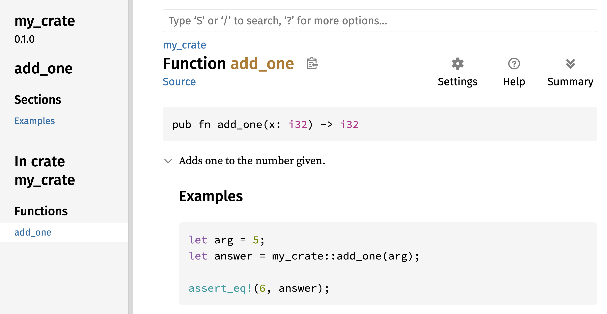
Figura 14-1: A documentação HTML para a função add_one
Seções Comumente Usadas
Usamos o cabeçalho Markdown # Examples na Listagem 14-1 para criar uma seção no HTML com o título “Examples”. Aqui estão algumas outras seções que os autores de crates comumente usam em sua documentação:
- Panics: Estes são os cenários nos quais a função sendo documentada pode entrar em pânico. Os chamadores da função que não querem que seus programas entrem em pânico devem garantir que não chamem a função nessas situações.
- Errors: Se a função retornar um
Result, descrever os tipos de erros que podem ocorrer e quais condições podem fazer com que esses erros sejam retornados pode ser útil para os chamadores, para que eles possam escrever código para lidar com os diferentes tipos de erros de maneiras diferentes. - Safety: Se a função for
unsafepara chamar (discutimosunsafeno Capítulo 18), deve haver uma seção explicando por que a função é insegura e cobrindo os invariantes que a função espera que os chamadores mantenham.
A maioria dos comentários de documentação não precisa de todas essas seções, mas esta é uma boa lista de verificação para lembrá-lo dos aspectos do seu código que os usuários estarão interessados em saber.
Comentários de Documentação como Testes
Adicionar blocos de código de exemplo em seus comentários de documentação pode ajudar a demonstrar como usar sua biblioteca e tem um bônus adicional: Executar cargo test executará os exemplos de código em sua documentação como testes! Nada é melhor do que documentação com exemplos. Mas nada é pior do que exemplos que não funcionam porque o código mudou desde que a documentação foi escrita. Se executarmos cargo test com a documentação para a função add_one da Listagem 14-1, veremos uma seção nos resultados do teste parecida com esta:
Doc-tests my_crate
running 1 test
test src/lib.rs - add_one (line 5) ... ok
test result: ok. 1 passed; 0 failed; 0 ignored; 0 measured; 0 filtered out; finished in 0.27s
Agora, se mudarmos a função ou o exemplo para que o assert_eq! no exemplo entre em pânico, e executarmos cargo test novamente, veremos que os testes de documentação detectam que o exemplo e o código estão fora de sincronia um com o outro!
Comentários de Itens Contidos
O estilo de comentário de documentação //! adiciona documentação ao item que contém os comentários, em vez de aos itens seguintes aos comentários. Normalmente usamos esses comentários de documentação dentro do arquivo raiz do crate (src/lib.rs por convenção) ou dentro de um módulo para documentar o crate ou o módulo como um todo.
Por exemplo, para adicionar documentação que descreve o propósito do crate my_crate que contém a função add_one, adicionamos comentários de documentação que começam com //! no início do arquivo src/lib.rs, conforme mostrado na Listagem 14-2.
//! # My Crate
//!
//! `my_crate` is a collection of utilities to make performing certain
//! calculations more convenient.
/// Adds one to the number given.
// --snip--
///
/// # Examples
///
/// ```
/// let arg = 5;
/// let answer = my_crate::add_one(arg);
///
/// assert_eq!(6, answer);
/// ```
pub fn add_one(x: i32) -> i32 {
x + 1
}Observe que não há nenhum código após a última linha que começa com //!. Como começamos os comentários com //! em vez de ///, estamos documentando o item que contém este comentário em vez de um item que segue este comentário. Neste caso, esse item é o arquivo src/lib.rs, que é a raiz do crate. Esses comentários descrevem o crate inteiro.
Quando executamos cargo doc --open, esses comentários serão exibidos na página inicial da documentação de my_crate acima da lista de itens públicos no crate, conforme mostrado na Figura 14-2.
Comentários de documentação dentro de itens são úteis para descrever crates e módulos especialmente. Use-os para explicar o propósito geral do contêiner para ajudar seus usuários a entender a organização do crate.

Figura 14-2: A documentação renderizada para my_crate, incluindo o comentário descrevendo o crate como um todo
Exportando uma API Pública Conveniente
A estrutura da sua API pública é uma consideração importante ao publicar um crate. As pessoas que usam seu crate estão menos familiarizadas com a estrutura do que você e podem ter dificuldade em encontrar as peças que desejam usar se seu crate tiver uma grande hierarquia de módulos.
No Capítulo 7, abordamos como tornar os itens públicos usando a palavra-chave pub e como trazer itens para um escopo com a palavra-chave use. No entanto, a estrutura que faz sentido para você enquanto você está desenvolvendo um crate pode não ser muito conveniente para seus usuários. Você pode querer organizar suas structs em uma hierarquia contendo vários níveis, mas então as pessoas que desejam usar um tipo que você definiu profundamente na hierarquia podem ter problemas para descobrir que esse tipo existe. Elas também podem se incomodar por ter que digitar use my_crate::some_module::another_module::UsefulType; em vez de use my_crate::UsefulType;.
A boa notícia é que se a estrutura não for conveniente para outros usarem de outra biblioteca, você não precisa reorganizar sua organização interna: Em vez disso, você pode reexportar itens para criar uma estrutura pública diferente da sua estrutura privada usando pub use. Reexportar pega um item público em um local e o torna público em outro local, como se tivesse sido definido no outro local.
Por exemplo, digamos que fizemos uma biblioteca chamada art para modelar conceitos artísticos. Dentro desta biblioteca estão dois módulos: um módulo kinds contendo dois enums chamados PrimaryColor e SecondaryColor e um módulo utils contendo uma função chamada mix, conforme mostrado na Listagem 14-3.
//! # Art
//!
//! A library for modeling artistic concepts.
pub mod kinds {
/// The primary colors according to the RYB color model.
pub enum PrimaryColor {
Red,
Yellow,
Blue,
}
/// The secondary colors according to the RYB color model.
pub enum SecondaryColor {
Orange,
Green,
Purple,
}
}
pub mod utils {
use crate::kinds::*;
/// Combines two primary colors in equal amounts to create
/// a secondary color.
pub fn mix(c1: PrimaryColor, c2: PrimaryColor) -> SecondaryColor {
// --snip--
unimplemented!();
}
}A Figura 14-3 mostra como seria a página inicial da documentação para este crate gerada por cargo doc.

Figura 14-3: A página inicial da documentação para art que lista os módulos kinds e utils
Observe que os tipos PrimaryColor e SecondaryColor não estão listados na página inicial, nem a função mix. Temos que clicar em kinds e utils para vê-los.
Outro crate que depende desta biblioteca precisaria de instruções use que trazem os itens de art para o escopo, especificando a estrutura do módulo que está definida atualmente. A Listagem 14-4 mostra um exemplo de um crate que usa os itens PrimaryColor e mix do crate art.
use art::kinds::PrimaryColor;
use art::utils::mix;
fn main() {
let red = PrimaryColor::Red;
let yellow = PrimaryColor::Yellow;
mix(red, yellow);
}O autor do código na Listagem 14-4, que usa o crate art, teve que descobrir que PrimaryColor está no módulo kinds e mix está no módulo utils. A estrutura do módulo do crate art é mais relevante para os desenvolvedores que trabalham no crate art do que para aqueles que o usam. A estrutura interna não contém nenhuma informação útil para alguém tentando entender como usar o crate art, mas causa confusão porque os desenvolvedores que o usam têm que descobrir onde procurar e devem especificar os nomes dos módulos nas instruções use.
Para remover a organização interna da API pública, podemos modificar o código do crate art na Listagem 14-3 para adicionar instruções pub use para reexportar os itens no nível superior, conforme mostrado na Listagem 14-5.
//! # Art
//!
//! A library for modeling artistic concepts.
pub use self::kinds::PrimaryColor;
pub use self::kinds::SecondaryColor;
pub use self::utils::mix;
pub mod kinds {
// --snip--
/// The primary colors according to the RYB color model.
pub enum PrimaryColor {
Red,
Yellow,
Blue,
}
/// The secondary colors according to the RYB color model.
pub enum SecondaryColor {
Orange,
Green,
Purple,
}
}
pub mod utils {
// --snip--
use crate::kinds::*;
/// Combines two primary colors in equal amounts to create
/// a secondary color.
pub fn mix(c1: PrimaryColor, c2: PrimaryColor) -> SecondaryColor {
SecondaryColor::Orange
}
}A documentação da API que cargo doc gera para este crate agora listará e vinculará as reexportações na página inicial, conforme mostrado na Figura 14-4, tornando os tipos PrimaryColor e SecondaryColor e a função mix mais fáceis de encontrar.
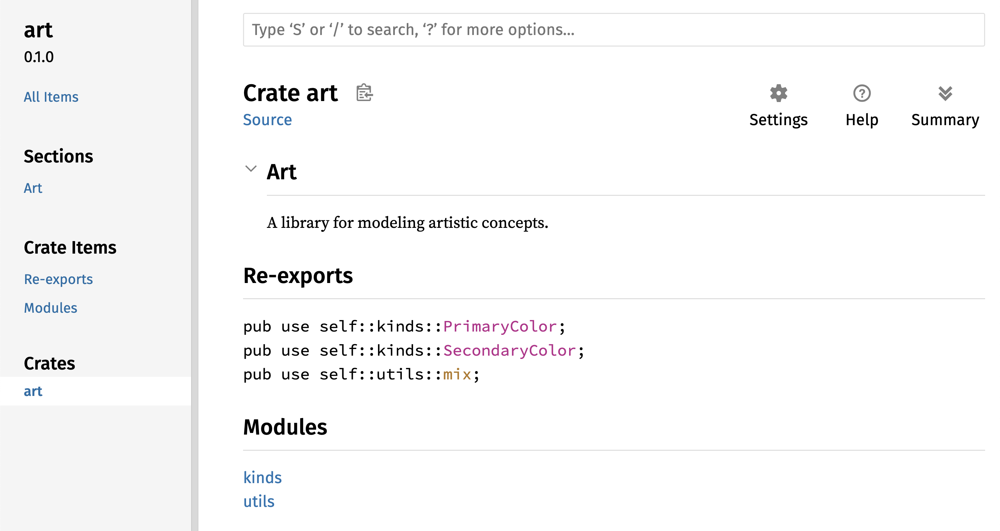
Figura 14-4: A página inicial da documentação para art que lista as reexportações
Os usuários do crate art ainda podem ver e usar a estrutura interna da Listagem 14-3, conforme demonstrado na Listagem 14-4, ou podem usar a estrutura mais conveniente na Listagem 14-5, conforme mostrado na Listagem 14-6.
use art::PrimaryColor;
use art::mix;
fn main() {
// --snip--
let red = PrimaryColor::Red;
let yellow = PrimaryColor::Yellow;
mix(red, yellow);
}Em casos onde há muitos módulos aninhados, reexportar os tipos no nível superior com pub use pode fazer uma diferença significativa na experiência das pessoas que usam o crate. Outro uso comum de pub use é reexportar definições de uma dependência no crate atual para tornar as definições desse crate parte da API pública do seu crate.
Criar uma estrutura de API pública útil é mais uma arte do que uma ciência, e você pode iterar para encontrar a API que funciona melhor para seus usuários. Escolher pub use lhe dá flexibilidade em como você estrutura seu crate internamente e dissocia essa estrutura interna do que você apresenta aos seus usuários. Olhe para alguns dos códigos de crates que você instalou para ver se a estrutura interna deles difere de sua API pública.
Configurando uma Conta no Crates.io
Antes de poder publicar quaisquer crates, você precisa criar uma conta em crates.io e obter um token de API. Para fazer isso, visite a página inicial em crates.io e faça login através de uma conta GitHub. (A conta GitHub é atualmente um requisito, mas o site pode suportar outras formas de criar uma conta no futuro.) Depois de fazer login, visite as configurações da sua conta em https://crates.io/me/ e recupere sua chave de API. Em seguida, execute o comando cargo login e cole sua chave de API quando solicitado, assim:
$ cargo login
abcdefghijklmnopqrstuvwxyz012345
Este comando informará ao Cargo seu token de API e o armazenará localmente em ~/.cargo/credentials.toml. Observe que este token é um segredo: Não o compartilhe com mais ninguém. Se você compartilhá-lo com alguém por qualquer motivo, deve revogá-lo e gerar um novo token em crates.io.
Adicionando Metadados a um Novo Crate
Digamos que você tenha um crate que deseja publicar. Antes de publicar, você precisará adicionar alguns metadados na seção [package] do arquivo Cargo.toml do crate.
Seu crate precisará de um nome exclusivo. Enquanto você está trabalhando em um crate localmente, você pode nomear um crate como quiser. No entanto, os nomes de crate em crates.io são alocados por ordem de chegada. Uma vez que um nome de crate é tomado, ninguém mais pode publicar um crate com esse nome. Antes de tentar publicar um crate, procure o nome que você deseja usar. Se o nome tiver sido usado, você precisará encontrar outro nome e editar o campo name no arquivo Cargo.toml na seção [package] para usar o novo nome para publicação, assim:
Nome do arquivo: Cargo.toml
[package]
name = "guessing_game"
Mesmo que você tenha escolhido um nome exclusivo, quando executar cargo publish para publicar o crate neste ponto, receberá um aviso e depois um erro:
$ cargo publish
Updating crates.io index
warning: manifest has no description, license, license-file, documentation, homepage or repository.
See https://doc.rust-lang.org/cargo/reference/manifest.html#package-metadata for more info.
--snip--
error: failed to publish to registry at https://crates.io
Caused by:
the remote server responded with an error (status 400 Bad Request): missing or empty metadata fields: description, license. Please see https://doc.rust-lang.org/cargo/reference/manifest.html for more information on configuring these fields
Isso resulta em um erro porque você está perdendo algumas informações cruciais: Uma descrição e uma licença são necessárias para que as pessoas saibam o que seu crate faz e sob quais termos podem usá-lo. No Cargo.toml, adicione uma descrição que seja apenas uma ou duas frases, porque ela aparecerá com seu crate nos resultados da pesquisa. Para o campo license, você precisa fornecer um valor identificador de licença. A Software Package Data Exchange (SPDX) da Linux Foundation lista os identificadores que você pode usar para este valor. Por exemplo, para especificar que você licenciou seu crate usando a Licença MIT, adicione o identificador MIT:
Nome do arquivo: Cargo.toml
[package]
name = "guessing_game"
license = "MIT"
Se você quiser usar uma licença que não aparece no SPDX, precisará colocar o texto dessa licença em um arquivo, incluir o arquivo em seu projeto e, em seguida, usar license-file para especificar o nome desse arquivo em vez de usar a chave license.
Orientação sobre qual licença é apropriada para seu projeto está além do escopo deste livro. Muitas pessoas na comunidade Rust licenciam seus projetos da mesma maneira que o Rust, usando uma licença dupla de MIT OR Apache-2.0. Essa prática demonstra que você também pode especificar vários identificadores de licença separados por OR para ter várias licenças para seu projeto.
Com um nome exclusivo, a versão, sua descrição e uma licença adicionados, o arquivo Cargo.toml para um projeto que está pronto para ser publicado pode ser assim:
Nome do arquivo: Cargo.toml
[package]
name = "guessing_game"
version = "0.1.0"
edition = "2024"
description = "Um jogo divertido onde você adivinha qual número o computador escolheu."
license = "MIT OR Apache-2.0"
[dependencies]
A documentação do Cargo descreve outros metadados que você pode especificar para garantir que outros possam descobrir e usar seu crate mais facilmente.
Publicando no Crates.io
Agora que você criou uma conta, salvou seu token de API, escolheu um nome para seu crate e especificou os metadados necessários, você está pronto para publicar! Publicar um crate carrega uma versão específica para crates.io para outros usarem.
Tenha cuidado, porque uma publicação é permanente. A versão nunca pode ser substituída e o código não pode ser excluído, exceto em certas circunstâncias. Um objetivo importante do Crates.io é atuar como um arquivo permanente de código para que as compilações de todos os projetos que dependem de crates de crates.io continuem a funcionar. Permitir a exclusão de versões tornaria impossível cumprir esse objetivo. No entanto, não há limite para o número de versões de crate que você pode publicar.
Execute o comando cargo publish novamente. Deve ter sucesso agora:
$ cargo publish
Updating crates.io index
Packaging guessing_game v0.1.0 (file:///projects/guessing_game)
Packaged 6 files, 1.2KiB (895.0B compressed)
Verifying guessing_game v0.1.0 (file:///projects/guessing_game)
Compiling guessing_game v0.1.0
(file:///projects/guessing_game/target/package/guessing_game-0.1.0)
Finished `dev` profile [unoptimized + debuginfo] target(s) in 0.19s
Uploading guessing_game v0.1.0 (file:///projects/guessing_game)
Uploaded guessing_game v0.1.0 to registry `crates-io`
note: waiting for `guessing_game v0.1.0` to be available at registry
`crates-io`.
You may press ctrl-c to skip waiting; the crate should be available shortly.
Published guessing_game v0.1.0 at registry `crates-io`
Parabéns! Você agora compartilhou seu código com a comunidade Rust, e qualquer pessoa pode adicionar facilmente seu crate como uma dependência de seu projeto.
Publicando uma Nova Versão de um Crate Existente
Quando você fez alterações em seu crate e está pronto para lançar uma nova versão, você altera o valor version especificado em seu arquivo Cargo.toml e publica novamente. Use as regras de Versionamento Semântico para decidir qual é o próximo número de versão apropriado, com base nos tipos de alterações que você fez. Em seguida, execute cargo publish para carregar a nova versão.
Depreciando Versões do Crates.io
Embora você não possa remover versões anteriores de um crate, você pode impedir que quaisquer projetos futuros as adicionem como uma nova dependência. Isso é útil quando uma versão de crate está quebrada por um motivo ou outro. Nessas situações, o Cargo suporta yanking (arrancar) uma versão de crate.
Yanking uma versão impede que novos projetos dependam dessa versão, permitindo que todos os projetos existentes que dependem dela continuem. Essencialmente, um yank significa que todos os projetos com um Cargo.lock não quebrarão, e quaisquer arquivos Cargo.lock futuros gerados não usarão a versão yanked.
Para fazer yank de uma versão de um crate, no diretório do crate que você publicou anteriormente, execute cargo yank e especifique qual versão você deseja fazer yank. Por exemplo, se publicamos um crate chamado guessing_game versão 1.0.1 e queremos fazer yank nele, executaríamos o seguinte no diretório do projeto para guessing_game:
$ cargo yank --vers 1.0.1
Updating crates.io index
Yank guessing_game@1.0.1
Ao adicionar --undo ao comando, você também pode desfazer um yank e permitir que os projetos voltem a depender de uma versão:
$ cargo yank --vers 1.0.1 --undo
Updating crates.io index
Unyank guessing_game@1.0.1
Um yank não exclui nenhum código. Ele não pode, por exemplo, excluir segredos carregados acidentalmente. Se isso acontecer, você deve redefinir esses segredos imediatamente.
Workspaces
Workspaces do Cargo
No Capítulo 12, construímos um pacote que incluía um crate binário e um crate de biblioteca. À medida que seu projeto se desenvolve, você pode descobrir que o crate de biblioteca continua a crescer e você deseja dividir seu pacote ainda mais em vários crates de biblioteca. O Cargo oferece um recurso chamado workspaces (espaços de trabalho) que pode ajudar a gerenciar vários pacotes relacionados que são desenvolvidos em conjunto.
Criando um Workspace
Um workspace é um conjunto de pacotes que compartilham o mesmo Cargo.lock e diretório de saída. Vamos fazer um projeto usando um workspace—usaremos código trivial para que possamos nos concentrar na estrutura do workspace. Existem várias maneiras de estruturar um workspace, então mostraremos apenas uma maneira comum. Teremos um workspace contendo um binário e duas bibliotecas. O binário, que fornecerá a funcionalidade principal, dependerá das duas bibliotecas. Uma biblioteca fornecerá uma função add_one e a outra biblioteca uma função add_two. Esses três crates farão parte do mesmo workspace. Começaremos criando um novo diretório para o workspace:
$ mkdir add
$ cd add
Em seguida, no diretório add, criamos o arquivo Cargo.toml que configurará todo o workspace. Este arquivo não terá uma seção [package]. Em vez disso, ele começará com uma seção [workspace] que nos permitirá adicionar membros ao workspace. Também fazemos questão de usar a melhor e mais recente versão do algoritmo resolvedor do Cargo em nosso workspace, definindo o valor resolver como "3":
Nome do arquivo: Cargo.toml
[workspace]
resolver = "3"
Em seguida, criaremos o crate binário adder executando cargo new dentro do diretório add:
$ cargo new adder
Created binary (application) `adder` package
Adding `adder` as member of workspace at `file:///projects/add`
Executar cargo new dentro de um workspace também adiciona automaticamente o pacote recém-criado à chave members na definição [workspace] no Cargo.toml do workspace, assim:
[workspace]
resolver = "3"
members = ["adder"]
Neste ponto, podemos construir o workspace executando cargo build. Os arquivos em seu diretório add devem ficar assim:
├── Cargo.lock
├── Cargo.toml
├── adder
│ ├── Cargo.toml
│ └── src
│ └── main.rs
└── target
O workspace tem um diretório target no nível superior onde os artefatos compilados serão colocados; o pacote adder não tem seu próprio diretório target. Mesmo se estivéssemos executando cargo build de dentro do diretório adder, os artefatos compilados ainda acabariam em add/target em vez de add/adder/target. O Cargo estrutura o diretório target em um workspace dessa maneira porque os crates em um workspace devem depender uns dos outros. Se cada crate tivesse seu próprio diretório target, cada crate teria que recompilar cada um dos outros crates no workspace para colocar os artefatos em seu próprio diretório target. Ao compartilhar um diretório target, os crates podem evitar a reconstrução desnecessária.
Criando o Segundo Pacote no Workspace
Em seguida, vamos criar outro pacote membro no workspace e chamá-lo de add_one. Gere um novo crate de biblioteca chamado add_one:
$ cargo new add_one --lib
Created library `add_one` package
Adding `add_one` as member of workspace at `file:///projects/add`
O Cargo.toml de nível superior agora incluirá o caminho add_one na lista members:
Nome do arquivo: Cargo.toml
[workspace]
resolver = "3"
members = ["adder", "add_one"]
Seu diretório add agora deve ter esses diretórios e arquivos:
├── Cargo.lock
├── Cargo.toml
├── add_one
│ ├── Cargo.toml
│ └── src
│ └── lib.rs
├── adder
│ ├── Cargo.toml
│ └── src
│ └── main.rs
└── target
No arquivo add_one/src/lib.rs, vamos adicionar uma função add_one:
Nome do arquivo: add_one/src/lib.rs
pub fn add_one(x: i32) -> i32 {
x + 1
}Agora podemos fazer com que o pacote adder com nosso binário dependa do pacote add_one que tem nossa biblioteca. Primeiro, precisaremos adicionar uma dependência de caminho em add_one ao adder/Cargo.toml.
Nome do arquivo: adder/Cargo.toml
[dependencies]
add_one = { path = "../add_one" }
O Cargo não assume que os crates em um workspace dependerão uns dos outros, então precisamos ser explícitos sobre os relacionamentos de dependência.
Em seguida, vamos usar a função add_one (do crate add_one) no crate adder. Abra o arquivo adder/src/main.rs e altere a função main para chamar a função add_one, como na Listagem 14-7.
fn main() {
let num = 10;
println!("Hello, world! {num} plus one is {}!", add_one::add_one(num));
}Vamos construir o workspace executando cargo build no diretório add de nível superior!
$ cargo build
Compiling add_one v0.1.0 (file:///projects/add/add_one)
Compiling adder v0.1.0 (file:///projects/add/adder)
Finished `dev` profile [unoptimized + debuginfo] target(s) in 0.22s
Para executar o crate binário do diretório add, podemos especificar qual pacote no workspace queremos executar usando o argumento -p e o nome do pacote com cargo run:
$ cargo run -p adder
Finished `dev` profile [unoptimized + debuginfo] target(s) in 0.00s
Running `target/debug/adder`
Hello, world! 10 plus one is 11!
Isso executa o código em adder/src/main.rs, que depende do crate add_one.
Dependendo de um Pacote Externo
Observe que o workspace tem apenas um arquivo Cargo.lock no nível superior, em vez de ter um Cargo.lock no diretório de cada crate. Isso garante que todos os crates estejam usando a mesma versão de todas as dependências. Se adicionarmos o pacote rand aos arquivos adder/Cargo.toml e add_one/Cargo.toml, o Cargo resolverá ambos para uma versão de rand e registrará isso no único Cargo.lock. Fazer com que todos os crates no workspace usem as mesmas dependências significa que os crates sempre serão compatíveis entre si. Vamos adicionar o crate rand à seção [dependencies] no arquivo add_one/Cargo.toml para que possamos usar o crate rand no crate add_one:
Nome do arquivo: add_one/Cargo.toml
[dependencies]
rand = "0.8.5"
Agora podemos adicionar use rand; ao arquivo add_one/src/lib.rs, e construir todo o workspace executando cargo build no diretório add trará e compilará o crate rand. Receberemos um aviso porque não estamos nos referindo ao rand que trouxemos para o escopo:
$ cargo build
Updating crates.io index
Downloaded rand v0.8.5
--snip--
Compiling rand v0.8.5
Compiling add_one v0.1.0 (file:///projects/add/add_one)
warning: unused import: `rand`
--> add_one/src/lib.rs:1:5
|
1 | use rand;
| ^^^^
|
= note: `#[warn(unused_imports)]` on by default
warning: `add_one` (lib) generated 1 warning (run `cargo fix --lib -p add_one` to apply 1 suggestion)
Compiling adder v0.1.0 (file:///projects/add/adder)
Finished `dev` profile [unoptimized + debuginfo] target(s) in 0.95s
O Cargo.lock de nível superior agora contém informações sobre a dependência de add_one em rand. No entanto, mesmo que rand seja usado em algum lugar no workspace, não podemos usá-lo em outros crates no workspace, a menos que adicionemos rand aos seus arquivos Cargo.toml também. Por exemplo, se adicionarmos use rand; ao arquivo adder/src/main.rs para o pacote adder, obteremos um erro:
$ cargo build
--snip--
Compiling adder v0.1.0 (file:///projects/add/adder)
error[E0432]: unresolved import `rand`
--> adder/src/main.rs:2:5
|
2 | use rand;
| ^^^^ no external crate `rand`
Para corrigir isso, edite o arquivo Cargo.toml para o pacote adder e indique que rand é uma dependência para ele também. Construir o pacote adder adicionará rand à lista de dependências para adder no Cargo.lock, mas nenhuma cópia adicional de rand será baixada. O Cargo garantirá que cada crate em cada pacote no workspace usando o pacote rand usará a mesma versão, desde que especifiquem versões compatíveis de rand, economizando espaço e garantindo que os crates no workspace sejam compatíveis entre si.
Se os crates no workspace especificarem versões incompatíveis da mesma dependência, o Cargo resolverá cada uma delas, mas ainda tentará resolver o menor número possível de versões.
Adicionando um Teste a um Workspace
Para um aprimoramento adicional, vamos adicionar um teste da função add_one::add_one dentro do crate add_one:
Nome do arquivo: add_one/src/lib.rs
pub fn add_one(x: i32) -> i32 {
x + 1
}
#[cfg(test)]
mod tests {
use super::*;
#[test]
fn it_works() {
assert_eq!(3, add_one(2));
}
}Agora execute cargo test no diretório add de nível superior. Executar cargo test em um workspace estruturado como este executará os testes para todos os crates no workspace:
$ cargo test
Compiling add_one v0.1.0 (file:///projects/add/add_one)
Compiling adder v0.1.0 (file:///projects/add/adder)
Finished `test` profile [unoptimized + debuginfo] target(s) in 0.20s
Running unittests src/lib.rs (target/debug/deps/add_one-93c49ee75dc46543)
running 1 test
test tests::it_works ... ok
test result: ok. 1 passed; 0 failed; 0 ignored; 0 measured; 0 filtered out; finished in 0.00s
Running unittests src/main.rs (target/debug/deps/adder-3a47283c568d2b6a)
running 0 tests
test result: ok. 0 passed; 0 failed; 0 ignored; 0 measured; 0 filtered out; finished in 0.00s
Doc-tests add_one
running 0 tests
test result: ok. 0 passed; 0 failed; 0 ignored; 0 measured; 0 filtered out; finished in 0.00s
A primeira seção da saída mostra que o teste it_works no crate add_one passou. A próxima seção mostra que zero testes foram encontrados no crate adder e, em seguida, a última seção mostra que zero testes de documentação foram encontrados no crate add_one.
Também podemos executar testes para um crate específico em um workspace do diretório de nível superior usando o sinalizador -p e especificando o nome do crate que queremos testar:
$ cargo test -p add_one
Finished `test` profile [unoptimized + debuginfo] target(s) in 0.00s
Running unittests src/lib.rs (target/debug/deps/add_one-93c49ee75dc46543)
running 1 test
test tests::it_works ... ok
test result: ok. 1 passed; 0 failed; 0 ignored; 0 measured; 0 filtered out; finished in 0.00s
Doc-tests add_one
running 0 tests
test result: ok. 0 passed; 0 failed; 0 ignored; 0 measured; 0 filtered out; finished in 0.00s
Esta saída mostra que cargo test executou apenas os testes para o crate add_one e não executou os testes do crate adder.
Se você publicar os crates no workspace em crates.io, cada crate no workspace precisará ser publicado separadamente. Assim como cargo test, podemos publicar um crate específico em nosso workspace usando o sinalizador -p e especificando o nome do crate que queremos publicar.
Para prática adicional, adicione um crate add_two a este workspace de maneira semelhante ao crate add_one!
À medida que seu projeto cresce, considere usar um workspace: ele permite que você trabalhe com componentes menores e mais fáceis de entender do que um grande bloco de código. Além disso, manter os crates em um workspace pode facilitar a coordenação entre os crates se eles forem alterados frequentemente ao mesmo tempo.
Instalando Binários
Instalando Binários com cargo install
O comando cargo install permite que você instale e use crates binários localmente. Isso não se destina a substituir pacotes do sistema; destina-se a ser uma maneira conveniente para desenvolvedores Rust instalarem ferramentas que outros compartilharam em crates.io. Observe que você só pode instalar pacotes que tenham alvos binários. Um alvo binário é o programa executável que é criado se o crate tiver um arquivo src/main.rs ou outro arquivo especificado como binário, em oposição a um alvo de biblioteca que não é executável por si só, mas é adequado para inclusão em outros programas. Normalmente, os crates têm informações no arquivo README sobre se um crate é uma biblioteca, tem um alvo binário ou ambos.
Todos os binários instalados com cargo install são armazenados na pasta bin da raiz de instalação. Se você instalou o Rust usando rustup.rs e não tem nenhuma configuração personalizada, este diretório será $HOME/.cargo/bin. Certifique-se de que este diretório esteja em seu $PATH para poder executar programas que você instalou com cargo install.
Por exemplo, no Capítulo 12 mencionamos que há uma implementação Rust da ferramenta grep chamada ripgrep para pesquisar arquivos. Para instalar o ripgrep, podemos executar o seguinte:
$ cargo install ripgrep
Updating crates.io index
Downloaded ripgrep v14.1.1
Downloaded 1 crate (213.6 KB) in 0.40s
Installing ripgrep v14.1.1
--snip--
Compiling grep v0.3.2
Finished `release` profile [optimized + debuginfo] target(s) in 6.73s
Installing ~/.cargo/bin/rg
Installed package `ripgrep v14.1.1` (executable `rg`)
A penúltima linha da saída mostra a localização e o nome do binário instalado, que no caso do ripgrep é rg. Contanto que o diretório de instalação esteja em seu $PATH, conforme mencionado anteriormente, você pode então executar rg --help e começar a usar uma ferramenta mais rápida e “Rustica” para pesquisar arquivos!
Comandos Personalizados
Estendendo o Cargo com Comandos Personalizados
O Cargo foi projetado para que você possa estendê-lo com novos subcomandos sem precisar modificá-lo. Se um binário em seu $PATH for nomeado cargo-something, você pode executá-lo como se fosse um subcomando do Cargo executando cargo something. Comandos personalizados como este também são listados quando você executa cargo --list. Ser capaz de usar cargo install para instalar extensões e depois executá-las exatamente como as ferramentas integradas do Cargo é um benefício super conveniente do design do Cargo!
Resumo
Compartilhar código com Cargo e crates.io é parte do que torna o ecossistema Rust útil para muitas tarefas diferentes. A biblioteca padrão do Rust é pequena e estável, mas os crates são fáceis de compartilhar, usar e melhorar em um cronograma diferente do da linguagem. Não tenha vergonha de compartilhar código que é útil para você em crates.io; é provável que seja útil para outra pessoa também!
Ponteiros Inteligentes
Um ponteiro é um conceito geral para uma variável que contém um endereço de memória. Este endereço refere-se a, ou “aponta para”, algum outro dado. O tipo mais comum de ponteiro em Rust é uma referência, sobre a qual você aprendeu no Capítulo 4. Referências são indicadas pelo símbolo & e pegam emprestado o valor para o qual apontam. Elas não têm nenhuma capacidade especial além de se referir aos dados, e não têm custo adicional (overhead).
Ponteiros inteligentes (smart pointers), por outro lado, são estruturas de dados que agem como um ponteiro, mas também têm metadados e capacidades adicionais. O conceito de ponteiros inteligentes não é exclusivo de Rust: ponteiros inteligentes originaram-se em C++ e existem em outras linguagens também. Rust tem uma variedade de ponteiros inteligentes definidos na biblioteca padrão que fornecem funcionalidades além das fornecidas por referências. Para explorar o conceito geral, veremos alguns exemplos diferentes de ponteiros inteligentes, incluindo um tipo de ponteiro inteligente com contagem de referências. Este ponteiro permite que você permita que dados tenham múltiplos donos, mantendo o controle do número de donos e, quando nenhum dono restar, limpando os dados.
Em Rust, com seu conceito de posse (ownership) e empréstimo (borrowing), há uma diferença adicional entre referências e ponteiros inteligentes: enquanto referências apenas pegam dados emprestados, em muitos casos ponteiros inteligentes possuem os dados para os quais apontam.
Embora não os tenhamos chamado assim na época, já encontramos alguns ponteiros inteligentes neste livro, incluindo String e Vec<T> no Capítulo 8. Ambos os tipos contam como ponteiros inteligentes porque possuem alguma memória e permitem que você a manipule. Eles também têm metadados e capacidades extras (como sua capacidade e garantia de que os dados adicionais serão sempre UTF-8 válido).
Ponteiros inteligentes são geralmente implementados usando structs. Diferente de uma struct comum, ponteiros inteligentes implementam as traits Deref e Drop. A trait Deref permite que uma instância da struct de ponteiro inteligente se comporte como uma referência, para que você possa escrever seu código para funcionar tanto com referências quanto com ponteiros inteligentes. A trait Drop permite que você personalize o código que é executado quando uma instância do ponteiro inteligente sai de escopo. Neste capítulo, discutiremos ambas as traits e demonstraremos por que elas são importantes para ponteiros inteligentes.
Dado que o padrão de ponteiro inteligente é um padrão de design geral usado frequentemente em Rust, este capítulo não cobrirá todos os ponteiros inteligentes existentes. Muitas bibliotecas têm seus próprios ponteiros inteligentes, e você pode até escrever os seus próprios. Cobriremos os ponteiros inteligentes mais comuns na biblioteca padrão:
Box<T>, para alocar valores na heapRc<T>, um tipo com contagem de referências que permite múltipla posseRef<T>eRefMut<T>, acessados através deRefCell<T>, um tipo que impõe as regras de empréstimo em tempo de execução em vez de tempo de compilação
Além disso, cobriremos o padrão de mutabilidade interior (interior mutability), onde um tipo imutável expõe uma API para mutar um valor interior. Também discutiremos ciclos de referência: como eles podem vazar memória e como preveni-los.
Vamos mergulhar nisso!
Box
Usando Box<T> para Apontar para Dados na Heap
O ponteiro inteligente mais simples é uma box (caixa), cujo tipo é escrito como Box<T>. Boxes permitem que você armazene dados na heap em vez de na pilha. O que permanece na pilha é o ponteiro para os dados na heap. Consulte o Capítulo 4 para rever a diferença entre a pilha e a heap.
Boxes não têm custo de performance adicional, além de armazenar seus dados na heap em vez de na pilha. Mas elas também não têm muitas capacidades extras. Você as usará com mais frequência nestas situações:
- Quando você tem um tipo cujo tamanho não pode ser conhecido em tempo de compilação e você quer usar um valor desse tipo em um contexto que requer um tamanho exato
- Quando você tem uma grande quantidade de dados e quer transferir a posse, mas garantir que os dados não serão copiados quando você o fizer
- Quando você quer possuir um valor e se importa apenas que ele seja de um tipo que implementa uma trait específica, em vez de ser de um tipo específico
Demonstraremos a primeira situação em “Habilitando Tipos Recursivos com Boxes”. No segundo caso, transferir a posse de uma grande quantidade de dados pode levar muito tempo porque os dados são copiados na pilha. Para melhorar a performance nessa situação, podemos armazenar a grande quantidade de dados na heap em uma box. Então, apenas a pequena quantidade de dados do ponteiro é copiada na pilha, enquanto os dados que ele referencia permanecem em um lugar na heap. O terceiro caso é conhecido como objeto de trait, e o Capítulo 17 dedica uma seção inteira a esse tópico. Então, o que você aprender aqui você aplicará novamente no Capítulo 17!
Armazenando Dados na Heap
Antes de discutirmos o caso de uso de armazenamento na heap para Box<T>, cobriremos a sintaxe e como interagir com valores armazenados dentro de uma Box<T>.
A Listagem 15-1 mostra como usar uma box para armazenar um valor i32 na heap:
fn main() {
let b = Box::new(5);
println!("b = {b}");
}Definimos a variável b para ter o valor de uma Box que aponta para o valor 5, que é alocado na heap. Este programa imprimirá b = 5; neste caso, podemos acessar os dados na box de forma similar a como faríamos se esses dados estivessem na pilha. Assim como qualquer valor possuído, quando uma box sai de escopo, como b faz no final de main, ela será desalocada. A desalocação acontece tanto para a box (armazenada na pilha) quanto para os dados para os quais ela aponta (armazenados na heap).
Colocar um único valor na heap não é muito útil, então você não usará boxes sozinhas dessa maneira com muita frequência. Ter valores como um único i32 na pilha, onde eles são armazenados por padrão, é mais apropriado na maioria das situações. Vamos ver um caso onde boxes nos permitem definir tipos que não poderíamos definir se não tivéssemos boxes.
Habilitando Tipos Recursivos com Boxes
Um valor de um tipo recursivo pode ter outro valor do mesmo tipo como parte de si mesmo. Tipos recursivos impõem um problema porque Rust precisa saber em tempo de compilação quanto espaço um tipo ocupa. No entanto, o aninhamento de valores de tipos recursivos poderia teoricamente continuar infinitamente, então Rust não pode saber quanto espaço o valor precisa. Como boxes têm um tamanho conhecido, podemos habilitar tipos recursivos inserindo uma box na definição do tipo recursivo.
Como exemplo de um tipo recursivo, vamos explorar a cons list (lista construtora). Este é um tipo de dados comumente encontrado em linguagens de programação funcional. O tipo cons list que definiremos é simples, exceto pela recursão; portanto, os conceitos no exemplo com o qual trabalharemos serão úteis sempre que você se deparar com situações mais complexas envolvendo tipos recursivos.
Entendendo a Cons List
Uma cons list é uma estrutura de dados que vem da linguagem de programação Lisp e seus dialetos e é feita de pares aninhados, e é a versão Lisp de uma lista encadeada. Seu nome vem da função cons (abreviação de “construct function”, função de construção) em Lisp que constrói um novo par a partir de seus dois argumentos. Ao chamar cons em um par consistindo de um valor e outro par, podemos construir cons lists feitas de pares recursivos.
Por exemplo, aqui está uma representação em pseudocódigo de uma cons list contendo a lista 1, 2, 3 com cada par entre parênteses:
(1, (2, (3, Nil)))
Cada item em uma cons list contém dois elementos: o valor do item atual e o próximo item. O último item na lista contém apenas um valor chamado Nil sem um próximo item. Uma cons list é produzida chamando recursivamente a função cons. O nome canônico para denotar o caso base da recursão é Nil. Note que isso não é o mesmo que o conceito de “null” ou “nil” discutido no Capítulo 6, que é um valor inválido ou ausente.
A cons list não é uma estrutura de dados comumente usada em Rust. Na maioria das vezes, quando você tem uma lista de itens em Rust, Vec<T> é uma escolha melhor. Outros tipos de dados recursivos mais complexos são úteis em várias situações, mas começando com a cons list neste capítulo, podemos explorar como boxes nos permitem definir um tipo de dados recursivo sem muita distração.
A Listagem 15-2 contém uma definição de enum para uma cons list. Note que este código não compilará ainda, porque o tipo List não tem um tamanho conhecido, o que demonstraremos.
enum List {
Cons(i32, List),
Nil,
}
fn main() {}Nota: Estamos implementando uma cons list que contém apenas valores
i32para os propósitos deste exemplo. Poderíamos tê-la implementado usando genéricos, como discutimos no Capítulo 10, para definir um tipo cons list que poderia armazenar valores de qualquer tipo.
Usar o tipo List para armazenar a lista 1, 2, 3 se pareceria com o código na Listagem 15-3:
enum List {
Cons(i32, List),
Nil,
}
// --snip--
use crate::List::{Cons, Nil};
fn main() {
let list = Cons(1, Cons(2, Cons(3, Nil)));
}O primeiro valor Cons contém 1 e outro valor List. Este valor List é outro valor Cons que contém 2 e outro valor List. Este valor List é mais um valor Cons que contém 3 e um valor List, que é finalmente Nil, a variante não recursiva que sinaliza o fim da lista.
Se tentarmos compilar o código na Listagem 15-3, recebemos o erro mostrado na Listagem 15-4:
$ cargo run
Compiling cons-list v0.1.0 (file:///projects/cons-list)
error[E0072]: recursive type `List` has infinite size
--> src/main.rs:1:1
|
1 | enum List {
| ^^^^^^^^^
2 | Cons(i32, List),
| ---- recursive without indirection
|
help: insert some indirection (e.g., a `Box`, `Rc`, or `&`) to break the cycle
|
2 | Cons(i32, Box<List>),
| ++++ +
error[E0391]: cycle detected when computing when `List` needs drop
--> src/main.rs:1:1
|
1 | enum List {
| ^^^^^^^^^
|
= note: ...which immediately requires computing when `List` needs drop again
= note: cycle used when computing whether `List` needs drop
= note: see https://rustc-dev-guide.rust-lang.org/overview.html#queries and https://rustc-dev-guide.rust-lang.org/query.html for more information
Some errors have detailed explanations: E0072, E0391.
For more information about an error, try `rustc --explain E0072`.
error: could not compile `cons-list` (bin "cons-list") due to 2 previous errors
O erro mostra que este tipo “tem tamanho infinito” (has infinite size). A razão é que definimos List com uma variante que é recursiva: ela contém outro valor de si mesma diretamente. Como resultado, Rust não consegue descobrir quanto espaço precisa para armazenar um valor List. Vamos analisar por que recebemos este erro. Primeiro, veremos como Rust decide quanto espaço precisa para armazenar um valor de um tipo não recursivo.
Calculando o Tamanho de um Tipo Não Recursivo
Relembre o enum Message que definimos na Listagem 6-2 quando discutimos definições de enum no Capítulo 6:
enum Message {
Quit,
Move { x: i32, y: i32 },
Write(String),
ChangeColor(i32, i32, i32),
}
fn main() {}Para determinar quanto espaço alocar para um valor Message, Rust percorre cada uma das variantes para ver qual variante precisa de mais espaço. Rust vê que Message::Quit não precisa de nenhum espaço, Message::Move precisa de espaço suficiente para armazenar dois valores i32, e assim por diante. Como apenas uma variante será usada, o maior espaço que um valor Message precisará é o espaço que levaria para armazenar a maior de suas variantes.
Compare isso com o que acontece quando Rust tenta determinar quanto espaço um tipo recursivo como o enum List na Listagem 15-2 precisa. O compilador começa olhando para a variante Cons, que contém um valor do tipo i32 e um valor do tipo List. Portanto, Cons precisa de uma quantidade de espaço igual ao tamanho de um i32 mais o tamanho de um List. Para descobrir quanta memória o tipo List precisa, o compilador olha para as variantes, começando com a variante Cons. A variante Cons contém um valor do tipo i32 e um valor do tipo List, e este processo continua infinitamente, como mostrado na Figura 15-1.

Figura 15-1: Uma List infinita consistindo de variantes Cons infinitas
Obtendo um Tipo Recursivo com um Tamanho Conhecido
Como Rust não consegue descobrir quanto espaço alocar para tipos definidos recursivamente, o compilador dá um erro com esta sugestão útil:
help: insert some indirection (e.g., a `Box`, `Rc`, or `&`) to break the cycle
|
2 | Cons(i32, Box<List>),
| ++++ +
Nesta sugestão, “indireção” (indirection) significa que, em vez de armazenar um valor diretamente, devemos mudar a estrutura de dados para armazenar o valor indiretamente, armazenando um ponteiro para o valor.
Como uma Box<T> é um ponteiro, Rust sempre sabe quanto espaço uma Box<T> precisa: o tamanho de um ponteiro não muda com base na quantidade de dados para os quais ele aponta. Isso significa que podemos colocar uma Box<T> dentro da variante Cons em vez de outro valor List diretamente. A Box<T> apontará para o próximo valor List que estará na heap em vez de dentro da variante Cons. Conceitualmente, ainda temos uma lista, criada com listas contendo outras listas, mas esta implementação agora é mais como colocar os itens um ao lado do outro em vez de um dentro do outro.
Podemos mudar a definição do enum List na Listagem 15-2 e o uso de List na Listagem 15-3 para o código na Listagem 15-5, que compilará:
enum List {
Cons(i32, Box<List>),
Nil,
}
use crate::List::{Cons, Nil};
fn main() {
let list = Cons(1, Box::new(Cons(2, Box::new(Cons(3, Box::new(Nil))))));
}A variante Cons precisa do tamanho de um i32 mais o espaço para armazenar os dados do ponteiro da box. A variante Nil não armazena valores, então precisa de menos espaço na pilha do que a variante Cons. Agora sabemos que qualquer valor List ocupará o tamanho de um i32 mais o tamanho dos dados do ponteiro de uma box. Usando uma box, quebramos a cadeia infinita e recursiva, então o compilador pode descobrir o tamanho que precisa para armazenar um valor List. A Figura 15-2 mostra como a variante Cons se parece agora.

Figura 15-2: Uma List que não é infinitamente dimensionada, porque Cons contém uma Box
Boxes fornecem apenas a indireção e a alocação na heap; elas não têm nenhuma outra capacidade especial, como aquelas que veremos com os outros tipos de ponteiros inteligentes. Elas também não têm o custo de performance que essas capacidades especiais incorrem, então podem ser úteis em casos como a cons list, onde a indireção é a única funcionalidade que precisamos. Veremos mais casos de uso para boxes no Capítulo 17.
O tipo Box<T> é um ponteiro inteligente porque implementa a trait Deref, que permite que valores Box<T> sejam tratados como referências. Quando um valor Box<T> sai de escopo, os dados da heap para os quais a box aponta também são limpos devido à implementação da trait Drop. Essas duas traits serão ainda mais importantes para a funcionalidade fornecida pelos outros tipos de ponteiros inteligentes que discutiremos no restante deste capítulo. Vamos explorar essas duas traits em mais detalhes.
Deref
Tratando Ponteiros Inteligentes Como Referências Regulares
Implementar a trait Deref permite que você personalize o comportamento do operador de desreferência * (não confundir com o operador de multiplicação ou glob). Ao implementar Deref de tal forma que um ponteiro inteligente possa ser tratado como uma referência regular, você pode escrever código que opera em referências e usar esse código com ponteiros inteligentes também.
Vamos primeiro ver como o operador de desreferência funciona com referências regulares. Então, tentaremos definir um tipo personalizado que se comporta como Box<T> e veremos por que o operador de desreferência não funciona como uma referência em nosso tipo recém-definido. Exploraremos como implementar a trait Deref torna possível que ponteiros inteligentes funcionem de maneiras similares a referências. Então, olharemos para o recurso de coerção deref (deref coercion) de Rust e como ele nos permite trabalhar com referências ou ponteiros inteligentes.
Seguindo a Referência para o Valor
Uma referência regular é um tipo de ponteiro, e uma maneira de pensar em um ponteiro é como uma seta para um valor armazenado em outro lugar. Na Listagem 15-6, criamos uma referência para um valor i32 e então usamos o operador de desreferência para seguir a referência até o valor:
fn main() {
let x = 5;
let y = &x;
assert_eq!(5, x);
assert_eq!(5, *y);
}A variável x contém um valor i32, 5. Definimos y igual a uma referência a x. Podemos afirmar (assert) que x é igual a 5. No entanto, se quisermos fazer uma afirmação sobre o valor em y, temos que usar *y para seguir a referência até o valor para o qual ela aponta (daí, desreferenciar) para que o compilador possa comparar o valor real. Uma vez que desreferenciamos y, temos acesso ao valor inteiro para o qual y aponta, que podemos comparar com 5.
Se tentássemos escrever assert_eq!(5, y); em vez disso, receberíamos este erro de compilação:
$ cargo run
Compiling deref-example v0.1.0 (file:///projects/deref-example)
error[E0277]: can't compare `{integer}` with `&{integer}`
--> src/main.rs:6:5
|
6 | assert_eq!(5, y);
| ^^^^^^^^^^^^^^^^ no implementation for `{integer} == &{integer}`
|
= help: the trait `PartialEq<&{integer}>` is not implemented for `{integer}`
= note: this error originates in the macro `assert_eq` (in Nightly builds, run with -Z macro-backtrace for more info)
For more information about this error, try `rustc --explain E0277`.
error: could not compile `deref-example` (bin "deref-example") due to 1 previous error
Comparar um número e uma referência a um número não é permitido porque eles são tipos diferentes. Devemos usar o operador de desreferência para seguir a referência até o valor para o qual ela aponta.
Usando Box<T> Como uma Referência
Podemos reescrever o código na Listagem 15-6 para usar uma Box<T> em vez de uma referência; o operador de desreferência usado na Box<T> na Listagem 15-7 funciona da mesma maneira que o operador de desreferência usado na referência na Listagem 15-6:
fn main() {
let x = 5;
let y = Box::new(x);
assert_eq!(5, x);
assert_eq!(5, *y);
}A principal diferença entre a Listagem 15-7 e a Listagem 15-6 é que aqui definimos y para ser uma instância de uma box apontando para uma cópia do valor de x em vez de uma referência apontando para o valor de x. Na última asserção, podemos usar o operador de desreferência para seguir o ponteiro da box da mesma maneira que fizemos quando y era uma referência. A seguir, exploraremos o que há de especial em Box<T> que nos permite usar o operador de desreferência definindo nosso próprio tipo de box.
Definindo Nosso Próprio Ponteiro Inteligente
Vamos construir um tipo wrapper semelhante ao tipo Box<T> fornecido pela biblioteca padrão para experimentar como tipos de ponteiros inteligentes se comportam de maneira diferente de referências por padrão. Então, veremos como adicionar a capacidade de usar o operador de desreferência.
Nota: Há uma grande diferença entre o tipo
MyBox<T>que estamos prestes a construir e aBox<T>real: nossa versão não armazenará seus dados na heap. Estamos focando este exemplo emDeref, então onde os dados são realmente armazenados é menos importante do que o comportamento semelhante a ponteiro.
O tipo Box<T> é ultimamente definido como uma tuple struct com um elemento, então a Listagem 15-8 define um tipo MyBox<T> da mesma maneira. Também definiremos uma função new para corresponder à função new definida em Box<T>.
struct MyBox<T>(T);
impl<T> MyBox<T> {
fn new(x: T) -> MyBox<T> {
MyBox(x)
}
}
fn main() {}Definimos uma struct chamada MyBox e declaramos um parâmetro genérico T porque queremos que nosso tipo contenha valores de qualquer tipo. O tipo MyBox é uma tuple struct com um elemento do tipo T. A função MyBox::new recebe um parâmetro do tipo T e retorna uma instância de MyBox que contém o valor passado.
Vamos tentar adicionar a função main na Listagem 15-7 à Listagem 15-8 e mudá-la para usar o tipo MyBox<T> que definimos em vez de Box<T>. O código na Listagem 15-9 não compilará, porque Rust não sabe como desreferenciar MyBox.
struct MyBox<T>(T);
impl<T> MyBox<T> {
fn new(x: T) -> MyBox<T> {
MyBox(x)
}
}
fn main() {
let x = 5;
let y = MyBox::new(x);
assert_eq!(5, x);
assert_eq!(5, *y);
}Aqui está o erro de compilação resultante:
$ cargo run
Compiling deref-example v0.1.0 (file:///projects/deref-example)
error[E0614]: type `MyBox<{integer}>` cannot be dereferenced
--> src/main.rs:14:19
|
14 | assert_eq!(5, *y);
| ^^ can't be dereferenced
For more information about this error, try `rustc --explain E0614`.
error: could not compile `deref-example` (bin "deref-example") due to 1 previous error
Nosso tipo MyBox<T> não pode ser desreferenciado porque não implementamos essa capacidade em nosso tipo. Para habilitar a desreferência com o operador *, implementamos a trait Deref.
Implementando a Trait Deref
Como discutido em “Implementando uma Trait em um Tipo” no Capítulo 10, para implementar uma trait precisamos fornecer implementações para os métodos requeridos da trait. A trait Deref, fornecida pela biblioteca padrão, exige que implementemos um método chamado deref que pega self emprestado e retorna uma referência aos dados internos. A Listagem 15-10 contém uma implementação de Deref para adicionar à definição de MyBox<T>.
use std::ops::Deref;
impl<T> Deref for MyBox<T> {
type Target = T;
fn deref(&self) -> &Self::Target {
&self.0
}
}
struct MyBox<T>(T);
impl<T> MyBox<T> {
fn new(x: T) -> MyBox<T> {
MyBox(x)
}
}
fn main() {
let x = 5;
let y = MyBox::new(x);
assert_eq!(5, x);
assert_eq!(5, *y);
}A sintaxe type Target = T; define um tipo associado para a trait Deref usar. Tipos associados são uma maneira ligeiramente diferente de declarar um parâmetro genérico, mas você não precisa se preocupar com eles por enquanto; cobriremos isso em mais detalhes no Capítulo 19.
Preenchemos o corpo do método deref com &self.0 para que deref retorne uma referência ao valor que queremos acessar com o operador *; relembre de “Criando Diferentes Tipos com Tuple Structs” no Capítulo 5 que .0 acessa o primeiro valor em uma tuple struct. A função main na Listagem 15-9 que chama * no valor MyBox<T> agora compila, e as asserções passam!
Sem a trait Deref, o compilador só pode desreferenciar referências &. O método deref dá ao compilador a capacidade de pegar um valor de qualquer tipo que implementa Deref e chamar o método deref para obter uma referência que ele sabe como desreferenciar.
Quando digitamos *y na Listagem 15-9, por trás dos panos Rust na verdade executou este código:
*(y.deref())Rust substitui o operador * por uma chamada ao método deref e depois uma desreferência simples para que não tenhamos que pensar se precisamos ou não chamar o método deref. Esse recurso de Rust nos permite escrever código que funciona de forma idêntica, quer tenhamos uma referência regular ou um tipo que implementa Deref.
A razão pela qual o método deref retorna uma referência a um valor, e que a desreferência simples fora dos parênteses em *(y.deref()) ainda é necessária, tem a ver com o sistema de posse. Se o método deref retornasse o valor diretamente em vez de uma referência ao valor, o valor seria movido para fora de self. Não queremos tomar posse do valor interno dentro de MyBox<T> neste caso ou na maioria dos casos onde usamos o operador de desreferência.
Note que o operador * é substituído por uma chamada ao método deref e depois uma chamada ao operador * apenas uma vez, cada vez que usamos um * em nosso código. Como a substituição do operador * não recursa infinitamente, acabamos com dados do tipo i32, que correspondem ao 5 em assert_eq! na Listagem 15-9.
Usando Coerção Deref em Funções e Métodos
Coerção Deref (deref coercion) converte uma referência a um tipo que implementa a trait Deref em uma referência a outro tipo. Por exemplo, a coerção deref pode converter &String para &str porque String implementa a trait Deref de modo que retorna &str. A coerção Deref é uma conveniência que Rust realiza em argumentos de funções e métodos, e funciona apenas em tipos que implementam a trait Deref. Acontece automaticamente quando passamos uma referência ao valor de um tipo específico como argumento para uma função ou método que não corresponde ao tipo do parâmetro na definição da função ou método. Uma sequência de chamadas ao método deref converte o tipo que fornecemos no tipo que o parâmetro precisa.
A coerção Deref foi adicionada a Rust para que programadores escrevendo chamadas de função e método não precisem adicionar tantas referências e desreferências explícitas com & e *. O recurso de coerção deref também nos permite escrever mais código que pode funcionar tanto para referências quanto para ponteiros inteligentes.
Para ver a coerção deref em ação, vamos usar o tipo MyBox<T> que definimos na Listagem 15-8, bem como a implementação de Deref que adicionamos na Listagem 15-10. A Listagem 15-11 mostra a definição de uma função que tem um parâmetro de fatia de string (string slice).
fn hello(name: &str) {
println!("Hello, {name}!");
}
fn main() {}Podemos chamar a função hello com uma fatia de string como argumento, como hello("Rust");, por exemplo. A coerção Deref torna possível chamar hello com uma referência a um valor do tipo MyBox<String>, como mostrado na Listagem 15-12.
use std::ops::Deref;
impl<T> Deref for MyBox<T> {
type Target = T;
fn deref(&self) -> &T {
&self.0
}
}
struct MyBox<T>(T);
impl<T> MyBox<T> {
fn new(x: T) -> MyBox<T> {
MyBox(x)
}
}
fn hello(name: &str) {
println!("Hello, {name}!");
}
fn main() {
let m = MyBox::new(String::from("Rust"));
hello(&m);
}Aqui estamos chamando a função hello com o argumento &m, que é uma referência a um valor MyBox<String>. Como implementamos a trait Deref em MyBox<T> na Listagem 15-10, Rust pode transformar &MyBox<String> em &String chamando deref. A biblioteca padrão fornece uma implementação de Deref em String que retorna uma fatia de string, e isso está na documentação da API para Deref. Rust chama deref novamente para transformar o &String em &str, que corresponde à definição da função hello.
Se Rust não implementasse a coerção deref, teríamos que escrever o código na Listagem 15-13 em vez do código na Listagem 15-12 para chamar hello com um valor do tipo &MyBox<String>.
use std::ops::Deref;
impl<T> Deref for MyBox<T> {
type Target = T;
fn deref(&self) -> &T {
&self.0
}
}
struct MyBox<T>(T);
impl<T> MyBox<T> {
fn new(x: T) -> MyBox<T> {
MyBox(x)
}
}
fn hello(name: &str) {
println!("Hello, {name}!");
}
fn main() {
let m = MyBox::new(String::from("Rust"));
hello(&(*m)[..]);
}O (*m) desreferencia a MyBox<String> em uma String. Então, o & e [..] tomam uma fatia de string da String que é igual à string inteira para corresponder à assinatura de hello. Este código sem coerções deref é mais difícil de ler, escrever e entender com todos esses símbolos envolvidos. A coerção Deref permite que Rust lide com essas conversões para nós automaticamente.
Quando a trait Deref é definida para os tipos envolvidos, Rust analisará os tipos e usará Deref::deref quantas vezes forem necessárias para obter uma referência que corresponda ao tipo do parâmetro. O número de vezes que Deref::deref precisa ser inserido é resolvido em tempo de compilação, então não há penalidade em tempo de execução para aproveitar a coerção deref!
Lidando com Coerção Deref com Referências Mutáveis
Semelhante a como você usa a trait Deref para sobrescrever o operador * em referências imutáveis, você pode usar a trait DerefMut para sobrescrever o operador * em referências mutáveis.
Rust faz coerção deref quando encontra tipos e implementações de trait em três casos:
- De
&Tpara&UquandoT: Deref<Target=U> - De
&mut Tpara&mut UquandoT: DerefMut<Target=U> - De
&mut Tpara&UquandoT: Deref<Target=U>
Os dois primeiros casos são os mesmos, exceto que o segundo implementa mutabilidade. O primeiro caso afirma que se você tem um &T, e T implementa Deref para algum tipo U, você pode obter um &U de forma transparente. O segundo caso afirma que a mesma coerção deref acontece para referências mutáveis.
O terceiro caso é mais complicado: Rust também coagirá uma referência mutável em uma imutável. Mas o inverso não é possível: referências imutáveis nunca coagirão para referências mutáveis. Por causa das regras de empréstimo, se você tem uma referência mutável, essa referência mutável deve ser a única referência para esses dados (caso contrário, o programa não compilaria). Converter uma referência mutável em uma referência imutável nunca quebrará as regras de empréstimo. Converter uma referência imutável em uma referência mutável exigiria que a referência imutável inicial fosse a única referência imutável para esses dados, mas as regras de empréstimo não garantem isso. Portanto, Rust não pode assumir que converter uma referência imutável em uma referência mutável é possível.
Drop
Executando Código na Limpeza com a Trait Drop
A segunda trait importante para o padrão de ponteiro inteligente é Drop, que permite personalizar o que acontece quando um valor está prestes a sair de escopo. Você pode fornecer uma implementação para a trait Drop em qualquer tipo, e esse código pode ser usado para liberar recursos como arquivos ou conexões de rede.
Estamos introduzindo Drop no contexto de ponteiros inteligentes porque a funcionalidade da trait Drop é quase sempre usada ao implementar um ponteiro inteligente. Por exemplo, quando uma Box<T> é descartada (dropped), ela desalocará o espaço na heap para o qual a box aponta.
Em algumas linguagens, para alguns tipos, o programador deve chamar código para liberar memória ou recursos toda vez que terminar de usar uma instância desses tipos. Exemplos incluem manipuladores de arquivos, sockets e bloqueios (locks). Se o programador esquecer, o sistema pode ficar sobrecarregado e falhar. Em Rust, você pode especificar que um trecho específico de código seja executado sempre que um valor sair de escopo, e o compilador inserirá esse código automaticamente. Como resultado, você não precisa ter cuidado ao colocar código de limpeza em todos os lugares em um programa onde uma instância de um tipo específico é finalizada — você ainda não vazará recursos!
Você especifica o código a ser executado quando um valor sai de escopo implementando a trait Drop. A trait Drop exige que você implemente um método chamado drop que recebe uma referência mutável para self. Para ver quando Rust chama drop, vamos implementar drop com instruções println! por enquanto.
A Listagem 15-14 mostra uma struct CustomSmartPointer cuja única funcionalidade personalizada é que ela imprimirá Dropping CustomSmartPointer! quando a instância sair de escopo, para mostrar quando Rust executa o método drop.
struct CustomSmartPointer {
data: String,
}
impl Drop for CustomSmartPointer {
fn drop(&mut self) {
println!("Dropping CustomSmartPointer with data `{}`!", self.data);
}
}
fn main() {
let c = CustomSmartPointer {
data: String::from("my stuff"),
};
let d = CustomSmartPointer {
data: String::from("other stuff"),
};
println!("CustomSmartPointers created");
}A trait Drop está incluída no prelúdio, então não precisamos trazê-la para o escopo. Implementamos a trait Drop em CustomSmartPointer e fornecemos uma implementação para o método drop que chama println!. O corpo do método drop é onde você colocaria qualquer lógica que quisesse executar quando uma instância do seu tipo saísse de escopo. Estamos imprimindo algum texto aqui para demonstrar visualmente quando Rust chamará drop.
Em main, criamos duas instâncias de CustomSmartPointer e depois imprimimos CustomSmartPointers created. No final de main, nossas instâncias de CustomSmartPointer sairão de escopo, e Rust chamará o código que colocamos no método drop, imprimindo nossa mensagem final. Note que não precisamos chamar o método drop explicitamente.
Quando executamos este programa, veremos a seguinte saída:
$ cargo run
Compiling drop-example v0.1.0 (file:///projects/drop-example)
Finished `dev` profile [unoptimized + debuginfo] target(s) in 0.60s
Running `target/debug/drop-example`
CustomSmartPointers created
Dropping CustomSmartPointer with data `other stuff`!
Dropping CustomSmartPointer with data `my stuff`!
Rust chamou automaticamente drop para nós quando nossas instâncias saíram de escopo, chamando o código que especificamos. Variáveis são descartadas na ordem inversa de sua criação, então d foi descartada antes de c. O propósito deste exemplo é dar a você um guia visual de como o método drop funciona; geralmente você especificaria o código de limpeza que seu tipo precisa executar em vez de uma mensagem de impressão.
Infelizmente, não é simples desabilitar a funcionalidade automática de drop. Desabilitar drop geralmente não é necessário; o ponto principal da trait Drop é que isso é cuidado automaticamente. Ocasionalmente, no entanto, você pode querer limpar um valor mais cedo. Um exemplo é ao usar ponteiros inteligentes que gerenciam locks: você pode querer forçar o método drop que libera o lock para que outro código no mesmo escopo possa adquirir o lock. Rust não permite que você chame o método drop da trait Drop manualmente; em vez disso, você tem que chamar a função std::mem::drop fornecida pela biblioteca padrão se quiser forçar um valor a ser descartado antes do final de seu escopo.
Tentar chamar o método drop da trait Drop manualmente modificando a função main da Listagem 15-14 não funcionará, como mostrado na Listagem 15-15.
struct CustomSmartPointer {
data: String,
}
impl Drop for CustomSmartPointer {
fn drop(&mut self) {
println!("Dropping CustomSmartPointer with data `{}`!", self.data);
}
}
fn main() {
let c = CustomSmartPointer {
data: String::from("some data"),
};
println!("CustomSmartPointer created");
c.drop();
println!("CustomSmartPointer dropped before the end of main");
}Quando tentamos compilar este código, recebemos este erro:
$ cargo run
Compiling drop-example v0.1.0 (file:///projects/drop-example)
error[E0040]: explicit use of destructor method
--> src/main.rs:16:7
|
16 | c.drop();
| ^^^^ explicit destructor calls not allowed
|
help: consider using `drop` function
|
16 - c.drop();
16 + drop(c);
|
For more information about this error, try `rustc --explain E0040`.
error: could not compile `drop-example` (bin "drop-example") due to 1 previous error
Esta mensagem de erro afirma que não temos permissão para chamar drop explicitamente. A mensagem de erro usa o termo destrutor, que é o termo geral de programação para uma função que limpa uma instância. Um destrutor é análogo a um construtor, que cria uma instância. A função drop em Rust é um destrutor específico.
Rust não nos deixa chamar drop explicitamente porque Rust ainda chamaria drop automaticamente no valor no final de main. Isso causaria um erro de “double free” (liberação dupla) porque Rust estaria tentando limpar o mesmo valor duas vezes.
Não podemos desabilitar a inserção automática de drop quando um valor sai de escopo, e não podemos chamar o método drop explicitamente. Então, se precisarmos forçar um valor a ser limpo mais cedo, usamos a função std::mem::drop.
A função std::mem::drop é diferente do método drop na trait Drop. Nós a chamamos passando como argumento o valor que queremos forçar o descarte. A função está no prelúdio, então podemos modificar main na Listagem 15-15 para chamar a função drop, como mostrado na Listagem 15-16.
struct CustomSmartPointer {
data: String,
}
impl Drop for CustomSmartPointer {
fn drop(&mut self) {
println!("Dropping CustomSmartPointer with data `{}`!", self.data);
}
}
fn main() {
let c = CustomSmartPointer {
data: String::from("some data"),
};
println!("CustomSmartPointer created");
drop(c);
println!("CustomSmartPointer dropped before the end of main");
}Executar este código imprimirá o seguinte:
$ cargo run
Compiling drop-example v0.1.0 (file:///projects/drop-example)
Finished `dev` profile [unoptimized + debuginfo] target(s) in 0.73s
Running `target/debug/drop-example`
CustomSmartPointer created
Dropping CustomSmartPointer with data `some data`!
CustomSmartPointer dropped before the end of main
O texto Dropping CustomSmartPointer with data `some data`! é impresso entre o texto CustomSmartPointer created e CustomSmartPointer dropped before the end of main, mostrando que o código do método drop é chamado para descartar c naquele ponto.
Você pode usar o código especificado em uma implementação da trait Drop de muitas maneiras para tornar a limpeza conveniente e segura: por exemplo, você poderia usá-lo para criar seu próprio alocador de memória! Com a trait Drop e o sistema de posse de Rust, você não precisa se lembrar de limpar, porque Rust faz isso automaticamente.
Você também não precisa se preocupar com problemas resultantes da limpeza acidental de valores ainda em uso: o sistema de posse que garante que as referências sejam sempre válidas também garante que drop seja chamado apenas uma vez quando o valor não estiver mais sendo usado.
Agora que examinamos Box<T> e algumas das características dos ponteiros inteligentes, vamos olhar para alguns outros ponteiros inteligentes definidos na biblioteca padrão.
Rc
Rc<T>, o Ponteiro Inteligente com Contagem de Referências
Na maioria dos casos, a posse é clara: você sabe exatamente qual variável possui um determinado valor. No entanto, há casos em que um único valor pode ter múltiplos donos. Por exemplo, em estruturas de dados de grafo, múltiplas arestas podem apontar para o mesmo nó, e esse nó é conceitualmente possuído por todas as arestas que apontam para ele. Um nó não deve ser limpo a menos que não tenha nenhuma aresta apontando para ele e, portanto, não tenha donos.
Você tem que habilitar a posse múltipla explicitamente usando o tipo Rust Rc<T>, que é uma abreviação para reference counting (contagem de referências). O tipo Rc<T> mantém o controle do número de referências a um valor para determinar se o valor ainda está em uso ou não. Se houver zero referências a um valor, o valor pode ser limpo sem que nenhuma referência se torne inválida.
Imagine Rc<T> como uma TV em uma sala de família. Quando uma pessoa entra para assistir TV, ela a liga. Outros podem entrar na sala e assistir TV. Quando a última pessoa sai da sala, ela desliga a TV porque ela não está mais sendo usada. Se alguém desligasse a TV enquanto outros ainda estivessem assistindo, haveria um alvoroço dos telespectadores restantes!
Usamos o tipo Rc<T> quando queremos alocar alguns dados na heap para várias partes do nosso programa lerem e não conseguimos determinar em tempo de compilação qual parte terminará de usar os dados por último. Se soubéssemos qual parte terminaria por último, poderíamos simplesmente fazer dessa parte a dona dos dados, e as regras normais de posse impostas em tempo de compilação entrariam em vigor.
Note que Rc<T> é apenas para uso em cenários de thread única (single-threaded). Quando discutirmos concorrência no Capítulo 16, cobriremos como fazer contagem de referências em programas multithreaded.
Compartilhando Dados
Vamos retornar ao nosso exemplo de cons list na Listagem 15-5. Lembre-se de que a definimos usando Box<T>. Desta vez, criaremos duas listas que compartilham a posse de uma terceira lista. Conceitualmente, isso se parece com a Figura 15-3.
![Uma lista encadeada com o rótulo 'a' apontando para três elementos. O primeiro elemento contém o inteiro 5 e aponta para o segundo elemento. O segundo elemento contém o inteiro 10 e aponta para o terceiro elemento. O terceiro elemento contém o valor 'Nil' que significa o fim da lista; ele não aponta para lugar nenhum. Uma lista encadeada com o rótulo 'b' aponta para um elemento que contém o inteiro 3 e aponta para o primeiro elemento da lista 'a'. Uma lista encadeada com o rótulo 'c' aponta para um elemento que contém o inteiro 4 e também aponta para o primeiro elemento da lista 'a' para que as caudas das listas 'b' e 'c' sejam ambas a lista 'a'.](img/trpl15-03.svg)
Figura 15-3: Duas listas, b e c, compartilhando a posse de uma terceira lista, a
Criaremos a lista a que contém 5 e depois 10. Então, faremos mais duas listas: b que começa com 3 e c que começa com 4. Tanto a lista b quanto a c continuarão então para a primeira lista a contendo 5 e 10. Em outras palavras, ambas as listas compartilharão a primeira lista contendo 5 e 10.
Tentar implementar este cenário usando nossa definição de List com Box<T> não funcionará, como mostrado na Listagem 15-17.
enum List {
Cons(i32, Box<List>),
Nil,
}
use crate::List::{Cons, Nil};
fn main() {
let a = Cons(5, Box::new(Cons(10, Box::new(Nil))));
let b = Cons(3, Box::new(a));
let c = Cons(4, Box::new(a));
}Quando compilamos este código, recebemos este erro:
$ cargo run
Compiling cons-list v0.1.0 (file:///projects/cons-list)
error[E0382]: use of moved value: `a`
--> src/main.rs:11:30
|
9 | let a = Cons(5, Box::new(Cons(10, Box::new(Nil))));
| - move occurs because `a` has type `List`, which does not implement the `Copy` trait
10 | let b = Cons(3, Box::new(a));
| - value moved here
11 | let c = Cons(4, Box::new(a));
| ^ value used here after move
|
note: if `List` implemented `Clone`, you could clone the value
--> src/main.rs:1:1
|
1 | enum List {
| ^^^^^^^^^ consider implementing `Clone` for this type
...
10 | let b = Cons(3, Box::new(a));
| - you could clone this value
For more information about this error, try `rustc --explain E0382`.
error: could not compile `cons-list` (bin "cons-list") due to 1 previous error
As variantes Cons possuem os dados que contêm, então quando criamos a lista b, a é movida para b e b possui a. Então, quando tentamos usar a novamente ao criar c, não temos permissão porque a foi movida.
Poderíamos mudar a definição de Cons para conter referências, mas então teríamos que especificar parâmetros de tempo de vida (lifetime). Ao especificar parâmetros de tempo de vida, estaríamos especificando que cada elemento na lista viverá pelo menos tanto quanto a lista inteira. Este é o caso para os elementos e listas na Listagem 15-17, mas não em todos os cenários.
Em vez disso, mudaremos nossa definição de List para usar Rc<T> no lugar de Box<T>, como mostrado na Listagem 15-18. Cada variante Cons conterá agora um valor e um Rc<T> apontando para uma List. Quando criamos b, em vez de tomar posse de a, clonaremos o Rc<List> que a está segurando, aumentando assim o número de referências de um para dois e permitindo que a e b compartilhem a posse dos dados naquele Rc<List>. Também clonaremos a ao criar c, aumentando o número de referências de dois para três. Toda vez que chamamos Rc::clone, a contagem de referências para os dados dentro do Rc<List> aumentará, e os dados não serão limpos a menos que haja zero referências a eles.
enum List {
Cons(i32, Rc<List>),
Nil,
}
use crate::List::{Cons, Nil};
use std::rc::Rc;
fn main() {
let a = Rc::new(Cons(5, Rc::new(Cons(10, Rc::new(Nil)))));
let b = Cons(3, Rc::clone(&a));
let c = Cons(4, Rc::clone(&a));
}Precisamos adicionar uma instrução use para trazer Rc<T> para o escopo porque ele não está no prelúdio. Em main, criamos a lista contendo 5 e 10 e a armazenamos em um novo Rc<List> em a. Então, quando criamos b e c, chamamos a função Rc::clone e passamos uma referência ao Rc<List> em a como argumento.
Poderíamos ter chamado a.clone() em vez de Rc::clone(&a), mas a convenção de Rust é usar Rc::clone neste caso. A implementação de Rc::clone não faz uma cópia profunda de todos os dados como a maioria das implementações de clone de outros tipos faz. A chamada para Rc::clone apenas incrementa a contagem de referências, o que não leva muito tempo. Cópias profundas de dados podem levar muito tempo. Usando Rc::clone para contagem de referências, podemos distinguir visualmente entre os tipos de clones de cópia profunda e os tipos de clones que aumentam a contagem de referências. Ao procurar problemas de performance no código, precisamos apenas considerar os clones de cópia profunda e podemos desconsiderar chamadas para Rc::clone.
Clonando para Aumentar a Contagem de Referências
Vamos mudar nosso exemplo de trabalho na Listagem 15-18 para que possamos ver as contagens de referência mudando à medida que criamos e descartamos referências ao Rc<List> em a.
Na Listagem 15-19, mudaremos main para que tenha um escopo interno ao redor da lista c; então, podemos ver como a contagem de referências muda quando c sai de escopo.
enum List {
Cons(i32, Rc<List>),
Nil,
}
use crate::List::{Cons, Nil};
use std::rc::Rc;
// --snip--
fn main() {
let a = Rc::new(Cons(5, Rc::new(Cons(10, Rc::new(Nil)))));
println!("count after creating a = {}", Rc::strong_count(&a));
let b = Cons(3, Rc::clone(&a));
println!("count after creating b = {}", Rc::strong_count(&a));
{
let c = Cons(4, Rc::clone(&a));
println!("count after creating c = {}", Rc::strong_count(&a));
}
println!("count after c goes out of scope = {}", Rc::strong_count(&a));
}Em cada ponto do programa onde a contagem de referências muda, imprimimos a contagem de referências, que obtemos chamando a função Rc::strong_count. Esta função é chamada strong_count em vez de count porque o tipo Rc<T> também tem uma weak_count; veremos para que weak_count é usada em “Prevenindo Ciclos de Referência Usando Weak<T>”.
Este código imprime o seguinte:
$ cargo run
Compiling cons-list v0.1.0 (file:///projects/cons-list)
Finished `dev` profile [unoptimized + debuginfo] target(s) in 0.45s
Running `target/debug/cons-list`
count after creating a = 1
count after creating b = 2
count after creating c = 3
count after c goes out of scope = 2
Podemos ver que o Rc<List> em a tem uma contagem de referências inicial de 1; então, cada vez que chamamos clone, a contagem aumenta em 1. Quando c sai de escopo, a contagem diminui em 1. Não precisamos chamar uma função para diminuir a contagem de referências como temos que chamar Rc::clone para aumentar a contagem de referências: a implementação da trait Drop diminui a contagem de referências automaticamente quando um valor Rc<T> sai de escopo.
O que não podemos ver neste exemplo é que quando b e depois a saem de escopo no final de main, a contagem é 0, e o Rc<List> é limpo completamente. Usar Rc<T> permite que um único valor tenha múltiplos donos, e a contagem garante que o valor permaneça válido enquanto qualquer um dos donos ainda existir.
Via referências imutáveis, Rc<T> permite que você compartilhe dados entre múltiplas partes do seu programa apenas para leitura. Se Rc<T> permitisse que você tivesse múltiplas referências mutáveis também, você poderia violar uma das regras de empréstimo discutidas no Capítulo 4: múltiplos empréstimos mutáveis para o mesmo lugar podem causar corridas de dados (data races) e inconsistências. Mas ser capaz de mutar dados é muito útil! Na próxima seção, discutiremos o padrão de mutabilidade interior e o tipo RefCell<T> que você pode usar em conjunto com um Rc<T> para trabalhar com essa restrição de imutabilidade.
RefCell
RefCell<T> e o Padrão de Mutabilidade Interior
Mutabilidade interior (interior mutability) é um padrão de design em Rust que permite que você mute dados mesmo quando há referências imutáveis para esses dados; normalmente, esta ação não é permitida pelas regras de empréstimo. Para mutar dados, o padrão usa código unsafe dentro de uma estrutura de dados para contornar as regras usuais de Rust que governam a mutação e o empréstimo. Código unsafe indica ao compilador que estamos verificando as regras manualmente em vez de confiar no compilador para verificá-las por nós; discutiremos código unsafe mais no Capítulo 19.
Podemos usar tipos que usam o padrão de mutabilidade interior apenas quando podemos garantir que as regras de empréstimo serão seguidas em tempo de execução, mesmo que o compilador não possa garantir isso. O código unsafe envolvido é então envolvido em uma API segura, e o tipo externo ainda é imutável.
Vamos explorar este conceito olhando para o tipo RefCell<T> que segue o padrão de mutabilidade interior.
Impondo Regras de Empréstimo em Tempo de Execução
Ao contrário de Rc<T>, o tipo RefCell<T> representa posse única sobre os dados que contém. Então, o que torna RefCell<T> diferente de um tipo como Box<T>? Relembre as regras de empréstimo que você aprendeu no Capítulo 4:
- A qualquer momento, você pode ter ou uma referência mutável ou qualquer número de referências imutáveis (mas não ambas).
- Referências devem ser sempre válidas.
Com referências e Box<T>, os invariantes das regras de empréstimo são impostos em tempo de compilação. Com RefCell<T>, esses invariantes são impostos em tempo de execução. Com referências, se você quebrar essas regras, você receberá um erro de compilador. Com RefCell<T>, se você quebrar essas regras, seu programa entrará em pânico e sairá.
As vantagens de verificar as regras de empréstimo em tempo de compilação são que os erros serão detectados mais cedo no processo de desenvolvimento, e não há impacto na performance em tempo de execução porque toda a análise é concluída de antemão. Por essas razões, verificar as regras de empréstimo em tempo de compilação é a melhor escolha na maioria dos casos, e é por isso que este é o padrão de Rust.
A vantagem de verificar as regras de empréstimo em tempo de execução é que certos cenários seguros de memória são permitidos, onde eles teriam sido proibidos pelas verificações em tempo de compilação. Análise estática, como o compilador Rust, é inerentemente conservadora. Algumas propriedades de código são impossíveis de detectar analisando o código: o exemplo mais famoso é o Problema da Parada, que está fora do escopo deste livro, mas é um tópico interessante para pesquisar.
Como algumas análises são impossíveis, se o compilador Rust não puder ter certeza de que o código cumpre as regras de posse, ele pode rejeitar um programa correto; dessa forma, ele é conservador. Se Rust aceitasse um programa incorreto, os usuários não poderiam confiar nas garantias que Rust faz. No entanto, se Rust rejeita um programa correto, o programador será incomodado, mas nada catastrófico pode ocorrer. O tipo RefCell<T> é útil quando você tem certeza de que seu código segue as regras de empréstimo, mas o compilador é incapaz de entender e garantir isso.
Semelhante a Rc<T>, RefCell<T> é apenas para uso em cenários de thread única e lhe dará um erro em tempo de compilação se você tentar usá-lo em um contexto multithreaded. Falaremos sobre como obter a funcionalidade de RefCell<T> em um programa multithreaded no Capítulo 16.
Aqui está uma recapitulação das razões para escolher Box<T>, Rc<T> ou RefCell<T>:
Rc<T>permite múltiplos donos dos mesmos dados;Box<T>eRefCell<T>têm donos únicos.Box<T>permite empréstimos imutáveis ou mutáveis verificados em tempo de compilação;Rc<T>permite apenas empréstimos imutáveis verificados em tempo de compilação;RefCell<T>permite empréstimos imutáveis ou mutáveis verificados em tempo de execução.- Porque
RefCell<T>permite empréstimos mutáveis verificados em tempo de execução, você pode mutar o valor dentro doRefCell<T>mesmo quando oRefCell<T>é imutável.
Mutar o valor dentro de um valor imutável é o padrão de mutabilidade interior. Vamos ver uma situação em que a mutabilidade interior é útil e examinar como é possível.
Usando Mutabilidade Interior
Uma consequência das regras de empréstimo é que quando você tem um valor imutável, você não pode tomá-lo emprestado mutavelmente. Por exemplo, este código não compilará:
fn main() {
let x = 5;
let y = &mut x;
}Se você tentasse compilar este código, receberia o seguinte erro:
$ cargo run
Compiling borrowing v0.1.0 (file:///projects/borrowing)
error[E0596]: cannot borrow `x` as mutable, as it is not declared as mutable
--> src/main.rs:3:13
|
3 | let y = &mut x;
| ^^^^^^ cannot borrow as mutable
|
help: consider changing this to be mutable
|
2 | let mut x = 5;
| +++
For more information about this error, try `rustc --explain E0596`.
error: could not compile `borrowing` (bin "borrowing") due to 1 previous error
No entanto, há situações em que seria útil para um valor mutar a si mesmo em seus métodos, mas parecer imutável para outro código. O código fora dos métodos do valor não seria capaz de mutar o valor. Usar RefCell<T> é uma maneira de obter a capacidade de ter mutabilidade interior, mas RefCell<T> não contorna as regras de empréstimo completamente: o verificador de empréstimo (borrow checker) no compilador permite essa mutabilidade interior, e as regras de empréstimo são verificadas em tempo de execução. Se você violar as regras, receberá um panic! em vez de um erro de compilador.
Vamos trabalhar em um exemplo prático onde podemos usar RefCell<T> para mutar um valor imutável e ver por que isso é útil.
Testando com Objetos Mock
Às vezes, durante o teste, um programador usará um tipo no lugar de outro tipo, a fim de observar um comportamento específico e afirmar que ele está implementado corretamente. Este tipo de espaço reservado é chamado de test double (dublê de teste). Pense nisso no sentido de um dublê em filmagens, onde uma pessoa entra e substitui um ator para fazer uma cena particularmente complicada. Dublês de teste substituem outros tipos quando estamos executando testes. Objetos Mock (objetos simulados) são tipos específicos de dublês de teste que registram o que acontece durante um teste para que você possa afirmar que as ações corretas ocorreram.
Rust não tem objetos no mesmo sentido que outras linguagens têm objetos, e Rust não tem funcionalidade de objeto mock embutida na biblioteca padrão como algumas outras linguagens têm. No entanto, você pode definitivamente criar uma struct que servirá aos mesmos propósitos que um objeto mock.
Aqui está o cenário que testaremos: criaremos uma biblioteca que rastreia um valor em relação a um valor máximo e envia mensagens com base em quão próximo do valor máximo o valor atual está. Esta biblioteca poderia ser usada para manter o controle da cota de um usuário para o número de chamadas de API que eles podem fazer, por exemplo.
Nossa biblioteca fornecerá apenas a funcionalidade de rastrear o quão próximo do máximo um valor está e quais devem ser as mensagens em quais momentos. Espera-se que as aplicações que usam nossa biblioteca forneçam o mecanismo para enviar as mensagens: a aplicação poderia mostrar a mensagem ao usuário diretamente, enviar um e-mail, enviar uma mensagem de texto ou fazer outra coisa. A biblioteca não precisa saber esse detalhe. Tudo o que ela precisa é de algo que implemente uma trait que forneceremos, chamada Messenger. A Listagem 15-20 mostra o código da biblioteca.
pub trait Messenger {
fn send(&self, msg: &str);
}
pub struct LimitTracker<'a, T: Messenger> {
messenger: &'a T,
value: usize,
max: usize,
}
impl<'a, T> LimitTracker<'a, T>
where
T: Messenger,
{
pub fn new(messenger: &'a T, max: usize) -> LimitTracker<'a, T> {
LimitTracker {
messenger,
value: 0,
max,
}
}
pub fn set_value(&mut self, value: usize) {
self.value = value;
let percentage_of_max = self.value as f64 / self.max as f64;
if percentage_of_max >= 1.0 {
self.messenger.send("Error: You are over your quota!");
} else if percentage_of_max >= 0.9 {
self.messenger
.send("Urgent warning: You've used up over 90% of your quota!");
} else if percentage_of_max >= 0.75 {
self.messenger
.send("Warning: You've used up over 75% of your quota!");
}
}
}Uma parte importante deste código é que a trait Messenger tem um método chamado send que recebe uma referência imutável para self e o texto da mensagem. Esta trait é a interface que nosso objeto mock precisa implementar para que o mock possa ser usado da mesma maneira que um objeto real. A outra parte importante é que queremos testar o comportamento do método set_value no LimitTracker. Podemos mudar o que passamos para o parâmetro value, mas set_value não retorna nada para fazermos asserções. Queremos ser capazes de dizer que se criarmos um LimitTracker com algo que implementa a trait Messenger e um valor específico para max, o mensageiro é instruído a enviar as mensagens apropriadas quando passamos números diferentes para value.
Precisamos de um objeto mock que, em vez de enviar um e-mail ou mensagem de texto quando chamamos send, apenas manterá o controle das mensagens que é instruído a enviar. Podemos criar uma nova instância do objeto mock, criar um LimitTracker que usa o objeto mock, chamar o método set_value em LimitTracker e então verificar se o objeto mock tem as mensagens que esperamos. A Listagem 15-21 mostra uma tentativa de implementar um objeto mock para fazer exatamente isso, mas o verificador de empréstimo não permitirá.
pub trait Messenger {
fn send(&self, msg: &str);
}
pub struct LimitTracker<'a, T: Messenger> {
messenger: &'a T,
value: usize,
max: usize,
}
impl<'a, T> LimitTracker<'a, T>
where
T: Messenger,
{
pub fn new(messenger: &'a T, max: usize) -> LimitTracker<'a, T> {
LimitTracker {
messenger,
value: 0,
max,
}
}
pub fn set_value(&mut self, value: usize) {
self.value = value;
let percentage_of_max = self.value as f64 / self.max as f64;
if percentage_of_max >= 1.0 {
self.messenger.send("Error: You are over your quota!");
} else if percentage_of_max >= 0.9 {
self.messenger
.send("Urgent warning: You've used up over 90% of your quota!");
} else if percentage_of_max >= 0.75 {
self.messenger
.send("Warning: You've used up over 75% of your quota!");
}
}
}
#[cfg(test)]
mod tests {
use super::*;
struct MockMessenger {
sent_messages: Vec<String>,
}
impl MockMessenger {
fn new() -> MockMessenger {
MockMessenger {
sent_messages: vec![],
}
}
}
impl Messenger for MockMessenger {
fn send(&self, message: &str) {
self.sent_messages.push(String::from(message));
}
}
#[test]
fn it_sends_an_over_75_percent_warning_message() {
let mock_messenger = MockMessenger::new();
let mut limit_tracker = LimitTracker::new(&mock_messenger, 100);
limit_tracker.set_value(80);
assert_eq!(mock_messenger.sent_messages.len(), 1);
}
}Este código de teste define uma struct MockMessenger que tem um campo sent_messages com um Vec de valores String para manter o controle das mensagens que é instruído a enviar. Também definimos uma função associada new para tornar conveniente criar novos valores MockMessenger que começam com uma lista vazia de mensagens. Então implementamos a trait Messenger para MockMessenger para que possamos dar um MockMessenger a um LimitTracker. Na definição do método send, pegamos a mensagem passada como parâmetro e a armazenamos na lista de sent_messages de MockMessenger.
No teste, estamos testando o que acontece quando o LimitTracker é instruído a definir value para algo que é mais de 75 por cento do valor max. Primeiro, criamos um novo MockMessenger, que começará com uma lista vazia de mensagens. Então, criamos um novo LimitTracker e damos a ele uma referência ao novo MockMessenger e um valor max de 100. Chamamos o método set_value no LimitTracker com um valor de 80, que é mais de 75 por cento de 100. Então, afirmamos que a lista de mensagens que o MockMessenger está rastreando deve agora ter uma mensagem nela.
No entanto, há um problema com este teste, como mostrado aqui:
$ cargo test
Compiling limit-tracker v0.1.0 (file:///projects/limit-tracker)
error[E0596]: cannot borrow `self.sent_messages` as mutable, as it is behind a `&` reference
--> src/lib.rs:58:13
|
58 | self.sent_messages.push(String::from(message));
| ^^^^^^^^^^^^^^^^^^ `self` is a `&` reference, so the data it refers to cannot be borrowed as mutable
|
help: consider changing this to be a mutable reference in the `impl` method and the `trait` definition
|
2 ~ fn send(&mut self, msg: &str);
3 | }
...
56 | impl Messenger for MockMessenger {
57 ~ fn send(&mut self, message: &str) {
|
For more information about this error, try `rustc --explain E0596`.
error: could not compile `limit-tracker` (lib test) due to 1 previous error
Não podemos modificar o MockMessenger para manter o controle das mensagens, porque o método send recebe uma referência imutável para self. Também não podemos aceitar a sugestão do texto de erro para usar &mut self tanto na implementação do método quanto na definição da trait. Não queremos mudar a trait Messenger apenas por causa dos testes. Em vez disso, precisamos encontrar uma maneira de fazer nosso código de teste funcionar corretamente com nosso design existente.
Esta é uma situação em que a mutabilidade interior pode ajudar! Armazenaremos as sent_messages dentro de um RefCell<T>, e então o método send será capaz de modificar sent_messages para armazenar as mensagens que vimos. A Listagem 15-22 mostra como isso se parece.
pub trait Messenger {
fn send(&self, msg: &str);
}
pub struct LimitTracker<'a, T: Messenger> {
messenger: &'a T,
value: usize,
max: usize,
}
impl<'a, T> LimitTracker<'a, T>
where
T: Messenger,
{
pub fn new(messenger: &'a T, max: usize) -> LimitTracker<'a, T> {
LimitTracker {
messenger,
value: 0,
max,
}
}
pub fn set_value(&mut self, value: usize) {
self.value = value;
let percentage_of_max = self.value as f64 / self.max as f64;
if percentage_of_max >= 1.0 {
self.messenger.send("Error: You are over your quota!");
} else if percentage_of_max >= 0.9 {
self.messenger
.send("Urgent warning: You've used up over 90% of your quota!");
} else if percentage_of_max >= 0.75 {
self.messenger
.send("Warning: You've used up over 75% of your quota!");
}
}
}
#[cfg(test)]
mod tests {
use super::*;
use std::cell::RefCell;
struct MockMessenger {
sent_messages: RefCell<Vec<String>>,
}
impl MockMessenger {
fn new() -> MockMessenger {
MockMessenger {
sent_messages: RefCell::new(vec![]),
}
}
}
impl Messenger for MockMessenger {
fn send(&self, message: &str) {
self.sent_messages.borrow_mut().push(String::from(message));
}
}
#[test]
fn it_sends_an_over_75_percent_warning_message() {
// --snip--
let mock_messenger = MockMessenger::new();
let mut limit_tracker = LimitTracker::new(&mock_messenger, 100);
limit_tracker.set_value(80);
assert_eq!(mock_messenger.sent_messages.borrow().len(), 1);
}
}O campo sent_messages é agora do tipo RefCell<Vec<String>> em vez de Vec<String>. Na função new, criamos uma nova instância de RefCell<Vec<String>> em torno do vetor vazio.
Para a implementação do método send, o primeiro parâmetro ainda é um empréstimo imutável de self, que corresponde à definição da trait. Chamamos borrow_mut no RefCell<Vec<String>> em self.sent_messages para obter uma referência mutável ao valor dentro do RefCell<Vec<String>>, que é o vetor. Então, podemos chamar push na referência mutável ao vetor para manter o controle das mensagens enviadas durante o teste.
A última mudança que temos que fazer é na asserção: para ver quantos itens estão no vetor interno, chamamos borrow no RefCell<Vec<String>> para obter uma referência imutável ao vetor.
Agora que você viu como usar RefCell<T>, vamos aprofundar em como ele funciona!
Rastreando Empréstimos em Tempo de Execução
Ao criar referências imutáveis e mutáveis, usamos a sintaxe & e &mut, respectivamente. Com RefCell<T>, usamos os métodos borrow e borrow_mut, que fazem parte da API segura que pertence a RefCell<T>. O método borrow retorna o tipo de ponteiro inteligente Ref<T>, e borrow_mut retorna o tipo de ponteiro inteligente RefMut<T>. Ambos os tipos implementam Deref, então podemos tratá-los como referências regulares.
O RefCell<T> mantém o controle de quantos ponteiros inteligentes Ref<T> e RefMut<T> estão atualmente ativos. Toda vez que chamamos borrow, o RefCell<T> aumenta sua contagem de quantos empréstimos imutáveis estão ativos. Quando um valor Ref<T> sai de escopo, a contagem de empréstimos imutáveis diminui em 1. Assim como as regras de empréstimo em tempo de compilação, RefCell<T> nos permite ter muitos empréstimos imutáveis ou um empréstimo mutável em qualquer ponto no tempo.
Se tentarmos violar essas regras, em vez de receber um erro de compilador como faríamos com referências, a implementação de RefCell<T> entrará em pânico em tempo de execução. A Listagem 15-23 mostra uma modificação da implementação de send na Listagem 15-22. Estamos deliberadamente tentando criar dois empréstimos mutáveis ativos para o mesmo escopo para ilustrar que RefCell<T> nos impede de fazer isso em tempo de execução.
pub trait Messenger {
fn send(&self, msg: &str);
}
pub struct LimitTracker<'a, T: Messenger> {
messenger: &'a T,
value: usize,
max: usize,
}
impl<'a, T> LimitTracker<'a, T>
where
T: Messenger,
{
pub fn new(messenger: &'a T, max: usize) -> LimitTracker<'a, T> {
LimitTracker {
messenger,
value: 0,
max,
}
}
pub fn set_value(&mut self, value: usize) {
self.value = value;
let percentage_of_max = self.value as f64 / self.max as f64;
if percentage_of_max >= 1.0 {
self.messenger.send("Error: You are over your quota!");
} else if percentage_of_max >= 0.9 {
self.messenger
.send("Urgent warning: You've used up over 90% of your quota!");
} else if percentage_of_max >= 0.75 {
self.messenger
.send("Warning: You've used up over 75% of your quota!");
}
}
}
#[cfg(test)]
mod tests {
use super::*;
use std::cell::RefCell;
struct MockMessenger {
sent_messages: RefCell<Vec<String>>,
}
impl MockMessenger {
fn new() -> MockMessenger {
MockMessenger {
sent_messages: RefCell::new(vec![]),
}
}
}
impl Messenger for MockMessenger {
fn send(&self, message: &str) {
let mut one_borrow = self.sent_messages.borrow_mut();
let mut two_borrow = self.sent_messages.borrow_mut();
one_borrow.push(String::from(message));
two_borrow.push(String::from(message));
}
}
#[test]
fn it_sends_an_over_75_percent_warning_message() {
let mock_messenger = MockMessenger::new();
let mut limit_tracker = LimitTracker::new(&mock_messenger, 100);
limit_tracker.set_value(80);
assert_eq!(mock_messenger.sent_messages.borrow().len(), 1);
}
}Criamos uma variável one_borrow para o ponteiro inteligente RefMut<T> retornado de borrow_mut. Então, criamos outro empréstimo mutável da mesma maneira na variável two_borrow. Isso faz duas referências mutáveis no mesmo escopo, o que não é permitido. Quando executamos os testes para nossa biblioteca, o código na Listagem 15-23 compilará sem erros, mas o teste falhará:
$ cargo test
Compiling limit-tracker v0.1.0 (file:///projects/limit-tracker)
Finished `test` profile [unoptimized + debuginfo] target(s) in 0.91s
Running unittests src/lib.rs (target/debug/deps/limit_tracker-e599811fa246dbde)
running 1 test
test tests::it_sends_an_over_75_percent_warning_message ... FAILED
failures:
---- tests::it_sends_an_over_75_percent_warning_message stdout ----
thread 'tests::it_sends_an_over_75_percent_warning_message' panicked at src/lib.rs:60:53:
RefCell already borrowed
note: run with `RUST_BACKTRACE=1` environment variable to display a backtrace
failures:
tests::it_sends_an_over_75_percent_warning_message
test result: FAILED. 0 passed; 1 failed; 0 ignored; 0 measured; 0 filtered out; finished in 0.00s
error: test failed, to rerun pass `--lib`
Observe que o código entrou em pânico com a mensagem already borrowed: BorrowMutError. É assim que RefCell<T> lida com violações das regras de empréstimo em tempo de execução.
Escolher capturar erros de empréstimo em tempo de execução em vez de tempo de compilação, como fizemos aqui, significa que você potencialmente encontraria erros em seu código mais tarde no processo de desenvolvimento: possivelmente não até que seu código fosse implantado em produção. Além disso, seu código incorreria em uma pequena penalidade de performance em tempo de execução como resultado de manter o controle dos empréstimos em tempo de execução em vez de tempo de compilação. No entanto, usar RefCell<T> torna possível escrever um objeto mock que pode se modificar para manter o controle das mensagens que viu enquanto você o está usando em um contexto onde apenas valores imutáveis são permitidos. Você pode usar RefCell<T> apesar de seus compromissos para obter mais funcionalidade do que referências regulares fornecem.
Permitindo Múltiplos Donos de Dados Mutáveis
Uma maneira comum de usar RefCell<T> é em combinação com Rc<T>. Lembre-se de que Rc<T> permite que você tenha múltiplos donos de alguns dados, mas apenas dá acesso imutável a esses dados. Se você tiver um Rc<T> que contém um RefCell<T>, você pode obter um valor que pode ter múltiplos donos e que você pode mutar!
Por exemplo, relembre o exemplo da cons list na Listagem 15-18, onde usamos Rc<T> para permitir que várias listas compartilhassem a posse de outra lista. Como Rc<T> contém apenas valores imutáveis, não podemos mudar nenhum dos valores na lista depois de criá-los. Vamos adicionar RefCell<T> por sua capacidade de mudar os valores nas listas. A Listagem 15-24 mostra que, usando um RefCell<T> na definição de Cons, podemos modificar o valor armazenado em todas as listas.
#[derive(Debug)]
enum List {
Cons(Rc<RefCell<i32>>, Rc<List>),
Nil,
}
use crate::List::{Cons, Nil};
use std::cell::RefCell;
use std::rc::Rc;
fn main() {
let value = Rc::new(RefCell::new(5));
let a = Rc::new(Cons(Rc::clone(&value), Rc::new(Nil)));
let b = Cons(Rc::new(RefCell::new(3)), Rc::clone(&a));
let c = Cons(Rc::new(RefCell::new(4)), Rc::clone(&a));
*value.borrow_mut() += 10;
println!("a after = {a:?}");
println!("b after = {b:?}");
println!("c after = {c:?}");
}Criamos um valor que é uma instância de Rc<RefCell<i32>> e o armazenamos em uma variável chamada value para que possamos acessá-lo diretamente mais tarde. Então, criamos uma List em a com uma variante Cons que contém value. Precisamos clonar value para que tanto a quanto value tenham posse do valor interno 5 em vez de transferir a posse de value para a ou fazer a tomar emprestado de value.
Envolvemos a lista a em um Rc<T> para que, quando criarmos as listas b e c, ambas possam se referir a a, o que fizemos na Listagem 15-18.
Depois de criarmos as listas em a, b e c, queremos adicionar 10 ao valor em value. Fazemos isso chamando borrow_mut em value, o que usa o recurso de desreferência automática que discutimos em “Onde está o Operador ->?” no Capítulo 5 para desreferenciar o Rc<T> para o valor interno RefCell<T>. O método borrow_mut retorna um ponteiro inteligente RefMut<T>, e usamos o operador de desreferência nele e mudamos o valor interno.
Quando imprimimos a, b e c, podemos ver que todos eles têm o valor modificado de 15 em vez de 5:
$ cargo run
Compiling cons-list v0.1.0 (file:///projects/cons-list)
Finished `dev` profile [unoptimized + debuginfo] target(s) in 0.63s
Running `target/debug/cons-list`
a after = Cons(RefCell { value: 15 }, Nil)
b after = Cons(RefCell { value: 3 }, Cons(RefCell { value: 15 }, Nil))
c after = Cons(RefCell { value: 4 }, Cons(RefCell { value: 15 }, Nil))
Esta técnica é muito legal! Usando RefCell<T>, temos um valor List externamente imutável. Mas podemos usar os métodos em RefCell<T> que fornecem acesso à sua mutabilidade interior para que possamos modificar nossos dados quando precisarmos. As verificações em tempo de execução das regras de empréstimo nos protegem de corridas de dados, e às vezes vale a pena trocar um pouco de velocidade por essa flexibilidade em nossas estruturas de dados. Note que RefCell<T> não funciona para código multithreaded! Mutex<T> é a versão thread-safe de RefCell<T>, e discutiremos Mutex<T> no Capítulo 16.
Ciclos de Referência
Ciclos de Referência Podem Vazar Memória
As garantias de segurança de memória de Rust tornam difícil, mas não impossível, criar acidentalmente memória que nunca é limpa (conhecido como vazamento de memória ou memory leak). Prevenir vazamentos de memória completamente não é uma das garantias de Rust, o que significa que vazamentos de memória são seguros quanto à memória em Rust. Podemos ver que Rust permite vazamentos de memória usando Rc<T> e RefCell<T>: é possível criar referências onde itens se referem uns aos outros em um ciclo. Isso cria vazamentos de memória porque a contagem de referências de cada item no ciclo nunca chegará a 0, e os valores nunca serão descartados.
Criando um Ciclo de Referência
Vamos ver como um ciclo de referência pode acontecer e como preveni-lo, começando com a definição do enum List e um método tail na Listagem 15-25.
use crate::List::{Cons, Nil};
use std::cell::RefCell;
use std::rc::Rc;
#[derive(Debug)]
enum List {
Cons(i32, RefCell<Rc<List>>),
Nil,
}
impl List {
fn tail(&self) -> Option<&RefCell<Rc<List>>> {
match self {
Cons(_, item) => Some(item),
Nil => None,
}
}
}
fn main() {}Estamos usando outra variação da definição de List da Listagem 15-5. O segundo elemento na variante Cons agora é RefCell<Rc<List>>, significando que, em vez de ter a capacidade de modificar o valor i32 como fizemos na Listagem 15-24, queremos modificar o valor List para o qual uma variante Cons está apontando. Também estamos adicionando um método tail para tornar conveniente para nós acessar o segundo item se tivermos uma variante Cons.
Na Listagem 15-26, estamos adicionando uma função main que usa as definições na Listagem 15-25. Este código cria uma lista em a e uma lista em b que aponta para a lista em a. Então, modifica a lista em a para apontar para b, criando um ciclo de referência. Existem instruções println! ao longo do caminho para mostrar quais são as contagens de referência em vários pontos neste processo.
use crate::List::{Cons, Nil};
use std::cell::RefCell;
use std::rc::Rc;
#[derive(Debug)]
enum List {
Cons(i32, RefCell<Rc<List>>),
Nil,
}
impl List {
fn tail(&self) -> Option<&RefCell<Rc<List>>> {
match self {
Cons(_, item) => Some(item),
Nil => None,
}
}
}
fn main() {
let a = Rc::new(Cons(5, RefCell::new(Rc::new(Nil))));
println!("a initial rc count = {}", Rc::strong_count(&a));
println!("a next item = {:?}", a.tail());
let b = Rc::new(Cons(10, RefCell::new(Rc::clone(&a))));
println!("a rc count after b creation = {}", Rc::strong_count(&a));
println!("b initial rc count = {}", Rc::strong_count(&b));
println!("b next item = {:?}", b.tail());
if let Some(link) = a.tail() {
*link.borrow_mut() = Rc::clone(&b);
}
println!("b rc count after changing a = {}", Rc::strong_count(&b));
println!("a rc count after changing a = {}", Rc::strong_count(&a));
// Uncomment the next line to see that we have a cycle;
// it will overflow the stack.
// println!("a next item = {:?}", a.tail());
}Criamos uma instância Rc<List> contendo um valor List na variável a com uma lista inicial de 5, Nil. Então criamos uma instância Rc<List> contendo outro valor List na variável b que contém o valor 10 e aponta para a lista em a.
Modificamos a para que aponte para b em vez de Nil, criando um ciclo. Fazemos isso usando o método tail para obter uma referência ao RefCell<Rc<List>> em a, que colocamos na variável link. Então, usamos o método borrow_mut no RefCell<Rc<List>> para mudar o valor dentro de um Rc<List> que contém um valor Nil para o Rc<List> em b.
Quando executamos este código, mantendo o último println! comentado por enquanto, obteremos esta saída:
$ cargo run
Compiling cons-list v0.1.0 (file:///projects/cons-list)
Finished `dev` profile [unoptimized + debuginfo] target(s) in 0.53s
Running `target/debug/cons-list`
a initial rc count = 1
a next item = Some(RefCell { value: Nil })
a rc count after b creation = 2
b initial rc count = 1
b next item = Some(RefCell { value: Cons(5, RefCell { value: Nil }) })
b rc count after changing a = 2
a rc count after changing a = 2
A contagem de referências das instâncias Rc<List> tanto em a quanto em b é 2 depois que mudamos a lista em a para apontar para b. No final de main, Rust descarta a variável b, o que diminui a contagem de referências da instância Rc<List> de b de 2 para 1. A memória que Rc<List> tem na heap não será descartada neste ponto porque sua contagem de referências é 1, não 0. Então, Rust descarta a, o que diminui a contagem de referências da instância Rc<List> de a de 2 para 1 também. A memória desta instância também não pode ser descartada, porque a outra instância Rc<List> ainda se refere a ela. A memória alocada para a lista permanecerá não coletada para sempre. Para visualizar este ciclo de referência, criamos o diagrama na Figura 15-4.
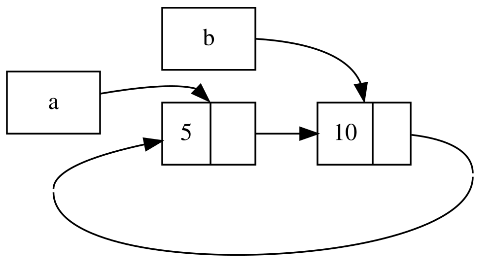
Figura 15-4: Um ciclo de referência das listas a e b apontando uma para a outra
Se você descomentar o último println! e executar o programa, Rust tentará imprimir este ciclo com a apontando para b apontando para a e assim por diante até estourar a pilha.
Comparado a um programa do mundo real, as consequências de criar um ciclo de referência neste exemplo não são muito terríveis: logo após criarmos o ciclo de referência, o programa termina. No entanto, se um programa mais complexo alocasse muita memória em um ciclo e a mantivesse por um longo tempo, o programa usaria mais memória do que precisava e poderia sobrecarregar o sistema, fazendo-o ficar sem memória disponível.
Criar ciclos de referência não é feito facilmente, mas também não é impossível. Se você tiver valores RefCell<T> que contêm valores Rc<T> ou combinações aninhadas semelhantes de tipos com mutabilidade interior e contagem de referências, você deve garantir que não cria ciclos; você não pode confiar em Rust para capturá-los. Criar um ciclo de referência seria um bug de lógica em seu programa que você deve usar testes automatizados, revisões de código e outras práticas de desenvolvimento de software para minimizar.
Outra solução para evitar ciclos de referência é reorganizar suas estruturas de dados para que algumas referências expressem posse e algumas referências não. Como resultado, você pode ter ciclos compostos por alguns relacionamentos de posse e alguns relacionamentos de não-posse, e apenas os relacionamentos de posse afetam se um valor pode ou não ser descartado. Na Listagem 15-25, sempre queremos que as variantes Cons possuam sua lista, então reorganizar a estrutura de dados não é possível. Vamos ver um exemplo usando grafos compostos por nós pais e nós filhos para ver quando relacionamentos de não-posse são uma maneira apropriada de prevenir ciclos de referência.
Prevenindo Ciclos de Referência Usando Weak<T>
Até agora, demonstramos que chamar Rc::clone aumenta a strong_count (contagem forte) de uma instância Rc<T>, e uma instância Rc<T> só é limpa se sua strong_count for 0. Você também pode criar uma referência fraca (weak reference) para o valor dentro de uma instância Rc<T> chamando Rc::downgrade e passando uma referência ao Rc<T>. Referências fortes são como você pode compartilhar a posse de uma instância Rc<T>. Referências fracas não expressam um relacionamento de posse, e sua contagem não afeta quando uma instância Rc<T> é limpa. Elas não causarão um ciclo de referência, porque qualquer ciclo envolvendo algumas referências fracas será quebrado assim que a contagem de referências fortes dos valores envolvidos for 0.
Quando você chama Rc::downgrade, você obtém um ponteiro inteligente do tipo Weak<T>. Em vez de aumentar a strong_count na instância Rc<T> em 1, chamar Rc::downgrade aumenta a weak_count em 1. O tipo Rc<T> usa weak_count para manter o controle de quantas referências Weak<T> existem, semelhante a strong_count. A diferença é que a weak_count não precisa ser 0 para que a instância Rc<T> seja limpa.
Como o valor que Weak<T> referencia pode ter sido descartado, para fazer qualquer coisa com o valor para o qual um Weak<T> aponta, você deve se certificar de que o valor ainda existe. Faça isso chamando o método upgrade em uma instância Weak<T>, que retornará um Option<Rc<T>>. Você receberá um resultado de Some se o valor Rc<T> ainda não tiver sido descartado e um resultado de None se o valor Rc<T> tiver sido descartado. Como upgrade retorna um Option<Rc<T>>, Rust garantirá que o caso Some e o caso None sejam tratados, e não haverá um ponteiro inválido.
Como exemplo, em vez de usar uma lista cujos itens sabem apenas sobre o próximo item, criaremos uma árvore cujos itens sabem sobre seus itens filhos e seus itens pais.
Criando uma Estrutura de Dados de Árvore
Para começar, construiremos uma árvore com nós que sabem sobre seus nós filhos. Criaremos uma struct chamada Node que contém seu próprio valor i32 bem como referências aos seus valores Node filhos:
Nome do arquivo: src/main.rs
use std::cell::RefCell;
use std::rc::Rc;
#[derive(Debug)]
struct Node {
value: i32,
children: RefCell<Vec<Rc<Node>>>,
}
fn main() {
let leaf = Rc::new(Node {
value: 3,
children: RefCell::new(vec![]),
});
let branch = Rc::new(Node {
value: 5,
children: RefCell::new(vec![Rc::clone(&leaf)]),
});
}Queremos que um Node possua seus filhos, e queremos compartilhar essa posse com variáveis para que possamos acessar cada Node na árvore diretamente. Para fazer isso, definimos os itens Vec<T> para serem valores do tipo Rc<Node>. Também queremos modificar quais nós são filhos de outro nó, então temos um RefCell<T> em children ao redor do Vec<Rc<Node>>.
Em seguida, usaremos nossa definição de struct e criaremos uma instância de Node chamada leaf (folha) com o valor 3 e sem filhos, e outra instância chamada branch (galho) com o valor 5 e leaf como um de seus filhos, como mostrado na Listagem 15-27.
use std::cell::RefCell;
use std::rc::Rc;
#[derive(Debug)]
struct Node {
value: i32,
children: RefCell<Vec<Rc<Node>>>,
}
fn main() {
let leaf = Rc::new(Node {
value: 3,
children: RefCell::new(vec![]),
});
let branch = Rc::new(Node {
value: 5,
children: RefCell::new(vec![Rc::clone(&leaf)]),
});
}Clonamos o Rc<Node> em leaf e armazenamos isso em branch, significando que o Node em leaf agora tem dois donos: leaf e branch. Podemos ir de branch para leaf através de branch.children, mas não há como ir de leaf para branch. A razão é que leaf não tem referência a branch e não sabe que eles estão relacionados. Queremos que leaf saiba que branch é seu pai. Faremos isso a seguir.
Adicionando uma Referência de um Filho para Seu Pai
Para tornar o nó filho ciente de seu pai, precisamos adicionar um campo parent à nossa definição de struct Node. O problema é decidir qual deve ser o tipo de parent. Sabemos que não pode conter um Rc<T>, porque isso criaria um ciclo de referência com leaf.parent apontando para branch e branch.children apontando para leaf, o que causaria que seus valores de strong_count nunca fossem 0.
Pensando nos relacionamentos de outra maneira, um nó pai deve possuir seus filhos: se um nó pai for descartado, seus nós filhos devem ser descartados também. No entanto, um filho não deve possuir seu pai: se descartarmos um nó filho, o pai ainda deve existir. Este é um caso para referências fracas!
Então, em vez de Rc<T>, faremos o tipo de parent usar Weak<T>, especificamente um RefCell<Weak<Node>>. Agora nossa definição de struct Node se parece com isso:
Nome do arquivo: src/main.rs
use std::cell::RefCell;
use std::rc::{Rc, Weak};
#[derive(Debug)]
struct Node {
value: i32,
parent: RefCell<Weak<Node>>,
children: RefCell<Vec<Rc<Node>>>,
}
fn main() {
let leaf = Rc::new(Node {
value: 3,
parent: RefCell::new(Weak::new()),
children: RefCell::new(vec![]),
});
println!("leaf parent = {:?}", leaf.parent.borrow().upgrade());
let branch = Rc::new(Node {
value: 5,
parent: RefCell::new(Weak::new()),
children: RefCell::new(vec![Rc::clone(&leaf)]),
});
*leaf.parent.borrow_mut() = Rc::downgrade(&branch);
println!("leaf parent = {:?}", leaf.parent.borrow().upgrade());
}Um nó será capaz de se referir ao seu nó pai, mas não possui seu pai. Na Listagem 15-28, atualizamos main para usar esta nova definição para que o nó leaf tenha uma maneira de se referir ao seu pai, branch.
use std::cell::RefCell;
use std::rc::{Rc, Weak};
#[derive(Debug)]
struct Node {
value: i32,
parent: RefCell<Weak<Node>>,
children: RefCell<Vec<Rc<Node>>>,
}
fn main() {
let leaf = Rc::new(Node {
value: 3,
parent: RefCell::new(Weak::new()),
children: RefCell::new(vec![]),
});
println!("leaf parent = {:?}", leaf.parent.borrow().upgrade());
let branch = Rc::new(Node {
value: 5,
parent: RefCell::new(Weak::new()),
children: RefCell::new(vec![Rc::clone(&leaf)]),
});
*leaf.parent.borrow_mut() = Rc::downgrade(&branch);
println!("leaf parent = {:?}", leaf.parent.borrow().upgrade());
}Criar o nó leaf parece semelhante à Listagem 15-27 com a exceção do campo parent: leaf começa sem um pai, então criamos uma nova instância de referência Weak<Node> vazia.
Neste ponto, quando tentamos obter uma referência ao pai de leaf usando o método upgrade, recebemos um valor None. Vemos isso na saída da primeira instrução println!:
leaf parent = None
Quando criamos o nó branch, ele também terá uma nova referência Weak<Node> no campo parent porque branch não tem um nó pai. Ainda temos leaf como um dos filhos de branch. Uma vez que temos a instância Node em branch, podemos modificar leaf para dar a ele uma referência Weak<Node> ao seu pai. Usamos o método borrow_mut no RefCell<Weak<Node>> no campo parent de leaf, e então usamos a função Rc::downgrade para criar uma referência Weak<Node> para branch a partir do Rc<Node> em branch.
Quando imprimimos o pai de leaf novamente, desta vez obteremos uma variante Some contendo branch: agora leaf pode acessar seu pai! Quando imprimimos leaf, também evitamos o ciclo que eventualmente terminava em um estouro de pilha como tivemos na Listagem 15-26; as referências Weak<Node> são impressas como (Weak):
leaf parent = Some(Node { value: 5, parent: RefCell { value: (Weak) },
children: RefCell { value: [Node { value: 3, parent: RefCell { value: (Weak) },
children: RefCell { value: [] } }] } })
A falta de saída infinita indica que este código não criou um ciclo de referência. Também podemos dizer isso olhando para os valores que obtemos chamando Rc::strong_count e Rc::weak_count.
Visualizando Mudanças em strong_count e weak_count
Vamos ver como os valores strong_count e weak_count das instâncias Rc<Node> mudam criando um novo escopo interno e movendo a criação de branch para esse escopo. Ao fazer isso, podemos ver o que acontece quando branch é criado e depois descartado quando sai de escopo. As modificações são mostradas na Listagem 15-29.
use std::cell::RefCell;
use std::rc::{Rc, Weak};
#[derive(Debug)]
struct Node {
value: i32,
parent: RefCell<Weak<Node>>,
children: RefCell<Vec<Rc<Node>>>,
}
fn main() {
let leaf = Rc::new(Node {
value: 3,
parent: RefCell::new(Weak::new()),
children: RefCell::new(vec![]),
});
println!(
"leaf strong = {}, weak = {}",
Rc::strong_count(&leaf),
Rc::weak_count(&leaf),
);
{
let branch = Rc::new(Node {
value: 5,
parent: RefCell::new(Weak::new()),
children: RefCell::new(vec![Rc::clone(&leaf)]),
});
*leaf.parent.borrow_mut() = Rc::downgrade(&branch);
println!(
"branch strong = {}, weak = {}",
Rc::strong_count(&branch),
Rc::weak_count(&branch),
);
println!(
"leaf strong = {}, weak = {}",
Rc::strong_count(&leaf),
Rc::weak_count(&leaf),
);
}
println!("leaf parent = {:?}", leaf.parent.borrow().upgrade());
println!(
"leaf strong = {}, weak = {}",
Rc::strong_count(&leaf),
Rc::weak_count(&leaf),
);
}Depois que leaf é criado, seu Rc<Node> tem uma contagem forte de 1 e uma contagem fraca de 0. No escopo interno, criamos branch e o associamos a leaf, momento em que, quando imprimimos as contagens, o Rc<Node> em branch terá uma contagem forte de 1 e uma contagem fraca de 1 (para leaf.parent apontando para branch com um Weak<Node>). Quando imprimimos as contagens em leaf, veremos que ele terá uma contagem forte de 2 porque branch agora tem um clone do Rc<Node> de leaf armazenado em branch.children, mas ainda terá uma contagem fraca de 0.
Quando o escopo interno termina, branch sai de escopo e a contagem forte do Rc<Node> diminui para 0, então seu Node é descartado. A contagem fraca de 1 de leaf.parent não tem influência sobre se o Node é descartado ou não, então não temos vazamentos de memória!
Se tentarmos acessar o pai de leaf após o final do escopo, obteremos None novamente. No final do programa, o Rc<Node> em leaf tem uma contagem forte de 1 e uma contagem fraca de 0 porque a variável leaf agora é a única referência ao Rc<Node> novamente.
Toda a lógica que gerencia as contagens e o descarte de valores é construída em Rc<T> e Weak<T> e suas implementações da trait Drop. Ao especificar que o relacionamento de um filho para seu pai deve ser uma referência Weak<T> na definição de Node, você é capaz de ter nós pais apontando para nós filhos e vice-versa sem criar um ciclo de referência e vazamentos de memória.
Resumo
Este capítulo cobriu como usar ponteiros inteligentes para fazer garantias e compensações diferentes daquelas que Rust faz por padrão com referências regulares. O tipo Box<T> tem um tamanho conhecido e aponta para dados alocados na heap. O tipo Rc<T> mantém o controle do número de referências a dados na heap para que os dados possam ter múltiplos donos. O tipo RefCell<T> com sua mutabilidade interior nos dá um tipo que podemos usar quando precisamos de um tipo imutável, mas precisamos mudar um valor interno desse tipo; ele também impõe as regras de empréstimo em tempo de execução em vez de em tempo de compilação.
Também foram discutidas as traits Deref e Drop, que habilitam muitas das funcionalidades dos ponteiros inteligentes. Exploramos ciclos de referência que podem causar vazamentos de memória e como preveni-los usando Weak<T>.
Se este capítulo despertou seu interesse e você quer implementar seus próprios ponteiros inteligentes, confira “The Rustonomicon” para informações mais úteis.
A seguir, falaremos sobre concorrência em Rust. Você aprenderá até sobre alguns novos ponteiros inteligentes.
Concorrência Sem Medo
Lidar com programação concorrente de forma segura e eficiente é outro dos principais objetivos de Rust. Programação concorrente, onde diferentes partes de um programa executam independentemente, e programação paralela, onde diferentes partes de um programa executam ao mesmo tempo, estão se tornando cada vez mais importantes à medida que mais computadores tiram proveito de seus múltiplos processadores. Historicamente, programar nesses contextos tem sido difícil e propenso a erros. Rust espera mudar isso.
Inicialmente, a equipe Rust pensava que garantir segurança de memória e prevenir problemas de concorrência eram dois desafios separados a serem resolvidos com métodos diferentes. Com o tempo, a equipe descobriu que os sistemas de posse e tipos são um conjunto poderoso de ferramentas para ajudar a gerenciar segurança de memória e problemas de concorrência! Ao alavancar a posse e a verificação de tipos, muitos erros de concorrência são erros de tempo de compilação em Rust, em vez de erros de tempo de execução. Portanto, em vez de fazer você gastar muito tempo tentando reproduzir as circunstâncias exatas sob as quais um bug de concorrência em tempo de execução ocorre, o código incorreto se recusará a compilar e apresentará um erro explicando o problema. Como resultado, você pode corrigir seu código enquanto está trabalhando nele, em vez de potencialmente depois que ele foi enviado para produção. Apelidamos esse aspecto de Rust de concorrência sem medo (fearless concurrency). Concorrência sem medo permite que você escreva código livre de bugs sutis e fácil de refatorar sem introduzir novos bugs.
Nota: Por uma questão de simplicidade, referiremo-nos a muitos dos problemas como concorrentes em vez de sermos mais precisos dizendo concorrentes e/ou paralelos. Para este capítulo, por favor, substitua mentalmente concorrente e/ou paralelo sempre que usarmos concorrente. No próximo capítulo, onde a distinção importa mais, seremos mais específicos.
Muitas linguagens são dogmáticas sobre as soluções que oferecem para lidar com problemas concorrentes. Por exemplo, Erlang tem uma funcionalidade elegante para concorrência por passagem de mensagem, mas tem apenas maneiras obscuras de compartilhar estado entre threads. Suportar apenas um subconjunto de soluções possíveis é uma estratégia razoável para linguagens de alto nível, porque uma linguagem de alto nível promete benefícios ao abrir mão de algum controle para ganhar abstrações. No entanto, espera-se que linguagens de nível mais baixo forneçam a solução com a melhor performance em qualquer situação dada e tenham menos abstrações sobre o hardware. Portanto, Rust oferece uma variedade de ferramentas para modelar problemas da maneira que for apropriada para sua situação e requisitos.
Aqui estão os tópicos que cobriremos neste capítulo:
- Como criar threads para executar múltiplos trechos de código ao mesmo tempo
- Concorrência por passagem de mensagem, onde canais enviam mensagens entre threads
- Concorrência de estado compartilhado, onde múltiplas threads têm acesso a algum dado
- As traits
SynceSend, que estendem as garantias de concorrência de Rust para tipos definidos pelo usuário, bem como tipos fornecidos pela biblioteca padrão
Threads
Usando Threads para Executar Código Simultaneamente
Na maioria dos sistemas operacionais atuais, o código de um programa executado é rodado em um processo, e o sistema operacional gerenciará múltiplos processos de uma vez. Dentro de um programa, você também pode ter partes independentes que rodam simultaneamente. As funcionalidades que rodam essas partes independentes são chamadas threads. Por exemplo, um servidor web poderia ter múltiplas threads para que pudesse responder a mais de uma requisição ao mesmo tempo.
Dividir a computação em seu programa em múltiplas threads para rodar múltiplas tarefas ao mesmo tempo pode melhorar a performance, mas também adiciona complexidade. Como threads podem rodar simultaneamente, não há garantia inerente sobre a ordem em que partes do seu código em diferentes threads rodarão. Isso pode levar a problemas, como:
- Corridas de dados (Race conditions), onde threads estão acessando dados ou recursos em uma ordem inconsistente
- Deadlocks, onde duas threads estão esperando uma pela outra, impedindo ambas as threads de continuar
- Bugs que só acontecem em certas situações e são difíceis de reproduzir e corrigir de forma confiável
Rust tenta mitigar os efeitos negativos do uso de threads, mas programar em um contexto multithreaded ainda requer reflexão cuidadosa e exige uma estrutura de código que é diferente daquela em programas rodando em uma única thread.
Linguagens de programação implementam threads de algumas maneiras diferentes, e muitos sistemas operacionais fornecem uma API que a linguagem de programação pode chamar para criar novas threads. A biblioteca padrão de Rust usa um modelo 1:1 de implementação de thread, pelo qual um programa usa uma thread do sistema operacional para cada thread da linguagem. Existem crates que implementam outros modelos de threading que fazem compensações diferentes para o modelo 1:1. (O sistema async de Rust, que veremos no próximo capítulo, fornece outra abordagem para concorrência também.)
Criando uma Nova Thread com spawn
Para criar uma nova thread, chamamos a função thread::spawn e passamos a ela uma closure (falamos sobre closures no Capítulo 13) contendo o código que queremos rodar na nova thread. O exemplo na Listagem 16-1 imprime algum texto de uma thread principal e outro texto de uma nova thread.
use std::thread;
use std::time::Duration;
fn main() {
thread::spawn(|| {
for i in 1..10 {
println!("hi number {i} from the spawned thread!");
thread::sleep(Duration::from_millis(1));
}
});
for i in 1..5 {
println!("hi number {i} from the main thread!");
thread::sleep(Duration::from_millis(1));
}
}Note que quando a thread principal de um programa Rust termina, todas as threads criadas são encerradas, tenham elas terminado de rodar ou não. A saída deste programa pode ser um pouco diferente a cada vez, mas se parecerá com o seguinte:
hi number 1 from the main thread!
hi number 1 from the spawned thread!
hi number 2 from the main thread!
hi number 2 from the spawned thread!
hi number 3 from the main thread!
hi number 3 from the spawned thread!
hi number 4 from the main thread!
hi number 4 from the spawned thread!
hi number 5 from the spawned thread!
As chamadas para thread::sleep forçam uma thread a parar sua execução por uma curta duração, permitindo que uma thread diferente rode. As threads provavelmente se revezarão, mas isso não é garantido: depende de como seu sistema operacional agenda as threads. Nesta execução, a thread principal imprimiu primeiro, embora a instrução de impressão da thread criada apareça primeiro no código. E mesmo que tenhamos dito à thread criada para imprimir até que i seja 9, ela só chegou a 5 antes que a thread principal fosse encerrada.
Se você rodar este código e vir apenas saída da thread principal, ou não vir nenhuma sobreposição, tente aumentar os números nos intervalos para criar mais oportunidades para o sistema operacional alternar entre as threads.
Esperando Todas as Threads Terminarem
O código na Listagem 16-1 não apenas para a thread criada prematuramente na maioria das vezes devido ao término da thread principal, mas como não há garantia na ordem em que as threads rodam, também não podemos garantir que a thread criada chegará a rodar!
Podemos corrigir o problema da thread criada não rodar ou terminar prematuramente salvando o valor de retorno de thread::spawn em uma variável. O tipo de retorno de thread::spawn é JoinHandle<T>. Um JoinHandle<T> é um valor possuído que, quando chamamos o método join nele, esperará que sua thread termine. A Listagem 16-2 mostra como usar o JoinHandle<T> da thread que criamos na Listagem 16-1 e como chamar join para garantir que a thread criada termine antes que main saia.
use std::thread;
use std::time::Duration;
fn main() {
let handle = thread::spawn(|| {
for i in 1..10 {
println!("hi number {i} from the spawned thread!");
thread::sleep(Duration::from_millis(1));
}
});
for i in 1..5 {
println!("hi number {i} from the main thread!");
thread::sleep(Duration::from_millis(1));
}
handle.join().unwrap();
}Chamar join no handle bloqueia a thread atualmente em execução até que a thread representada pelo handle termine. Bloquear uma thread significa que essa thread é impedida de realizar trabalho ou sair. Como colocamos a chamada para join após o loop for da thread principal, rodar a Listagem 16-2 deve produzir saída semelhante a esta:
hi number 1 from the main thread!
hi number 2 from the main thread!
hi number 1 from the spawned thread!
hi number 3 from the main thread!
hi number 2 from the spawned thread!
hi number 4 from the main thread!
hi number 3 from the spawned thread!
hi number 4 from the spawned thread!
hi number 5 from the spawned thread!
hi number 6 from the spawned thread!
hi number 7 from the spawned thread!
hi number 8 from the spawned thread!
hi number 9 from the spawned thread!
As duas threads continuam alternando, mas a thread principal espera por causa da chamada para handle.join() e não termina até que a thread criada tenha terminado.
Mas vamos ver o que acontece quando movemos handle.join() para antes do loop for em main, assim:
use std::thread;
use std::time::Duration;
fn main() {
let handle = thread::spawn(|| {
for i in 1..10 {
println!("hi number {i} from the spawned thread!");
thread::sleep(Duration::from_millis(1));
}
});
handle.join().unwrap();
for i in 1..5 {
println!("hi number {i} from the main thread!");
thread::sleep(Duration::from_millis(1));
}
}A thread principal esperará a thread criada terminar e então executará seu loop for, então a saída não será mais intercalada, como mostrado aqui:
hi number 1 from the spawned thread!
hi number 2 from the spawned thread!
hi number 3 from the spawned thread!
hi number 4 from the spawned thread!
hi number 5 from the spawned thread!
hi number 6 from the spawned thread!
hi number 7 from the spawned thread!
hi number 8 from the spawned thread!
hi number 9 from the spawned thread!
hi number 1 from the main thread!
hi number 2 from the main thread!
hi number 3 from the main thread!
hi number 4 from the main thread!
Pequenos detalhes, como onde join é chamado, podem afetar se suas threads rodam ao mesmo tempo ou não.
Usando Closures move com Threads
Frequentemente usaremos a palavra-chave move com closures passadas para thread::spawn porque a closure então tomará posse dos valores que usa do ambiente, transferindo assim a posse desses valores de uma thread para outra. Em “Capturando Referências ou Movendo Posse” no Capítulo 13, discutimos move no contexto de closures. Agora vamos nos concentrar mais na interação entre move e thread::spawn.
Note na Listagem 16-1 que a closure que passamos para thread::spawn não recebe argumentos: não estamos usando nenhum dado da thread principal no código da thread criada. Para usar dados da thread principal na thread criada, a closure da thread criada deve capturar os valores de que precisa. A Listagem 16-3 mostra uma tentativa de criar um vetor na thread principal e usá-lo na thread criada. No entanto, isso não funcionará ainda, como você verá em um momento.
use std::thread;
fn main() {
let v = vec![1, 2, 3];
let handle = thread::spawn(|| {
println!("Here's a vector: {v:?}");
});
handle.join().unwrap();
}A closure usa v, então capturará v e o tornará parte do ambiente da closure. Como thread::spawn roda esta closure em uma nova thread, deveríamos ser capazes de acessar v dentro dessa nova thread. Mas quando compilamos este exemplo, recebemos o seguinte erro:
$ cargo run
Compiling threads v0.1.0 (file:///projects/threads)
error[E0373]: closure may outlive the current function, but it borrows `v`, which is owned by the current function
--> src/main.rs:6:32
|
6 | let handle = thread::spawn(|| {
| ^^ may outlive borrowed value `v`
7 | println!("Here's a vector: {v:?}");
| - `v` is borrowed here
|
note: function requires argument type to outlive `'static`
--> src/main.rs:6:18
|
6 | let handle = thread::spawn(|| {
| __________________^
7 | | println!("Here's a vector: {v:?}");
8 | | });
| |______^
help: to force the closure to take ownership of `v` (and any other referenced variables), use the `move` keyword
|
6 | let handle = thread::spawn(move || {
| ++++
For more information about this error, try `rustc --explain E0373`.
error: could not compile `threads` (bin "threads") due to 1 previous error
Rust infere como capturar v, e como println! precisa apenas de uma referência a v, a closure tenta pegar v emprestado. No entanto, há um problema: Rust não pode dizer quanto tempo a thread criada rodará, então não sabe se a referência a v será sempre válida.
A Listagem 16-4 fornece um cenário que é mais provável de ter uma referência a v que não será válida.
use std::thread;
fn main() {
let v = vec![1, 2, 3];
let handle = thread::spawn(|| {
println!("Here's a vector: {v:?}");
});
drop(v); // oh no!
handle.join().unwrap();
}Se Rust nos permitisse rodar este código, haveria uma possibilidade de que a thread criada fosse imediatamente colocada em segundo plano sem rodar nada. A thread criada tem uma referência a v dentro, mas a thread principal descarta v imediatamente, usando a função drop que discutimos no Capítulo 15. Então, quando a thread criada começa a executar, v não é mais válido, então uma referência a ele também é inválida. Oh não!
Para corrigir o erro de compilador na Listagem 16-3, podemos usar o conselho da mensagem de erro:
help: to force the closure to take ownership of `v` (and any other referenced variables), use the `move` keyword
|
6 | let handle = thread::spawn(move || {
| ++++
Ao adicionar a palavra-chave move antes da closure, forçamos a closure a tomar posse dos valores que está usando em vez de permitir que Rust infira que deve pegar os valores emprestados. A modificação na Listagem 16-3 mostrada na Listagem 16-5 compilará e rodará como pretendemos.
use std::thread;
fn main() {
let v = vec![1, 2, 3];
let handle = thread::spawn(move || {
println!("Here's a vector: {v:?}");
});
handle.join().unwrap();
}Poderíamos ser tentados a tentar a mesma coisa para corrigir o código na Listagem 16-4 onde a thread principal chamou drop usando uma closure move. No entanto, essa correção não funcionará porque o que a Listagem 16-4 está tentando fazer é proibido por um motivo diferente. Se adicionássemos move à closure, moveríamos v para o ambiente da closure, e não poderíamos mais chamar drop nele na thread principal. Receberíamos este erro de compilador em vez disso:
$ cargo run
Compiling threads v0.1.0 (file:///projects/threads)
error[E0382]: use of moved value: `v`
--> src/main.rs:10:10
|
4 | let v = vec![1, 2, 3];
| - move occurs because `v` has type `Vec<i32>`, which does not implement the `Copy` trait
5 |
6 | let handle = thread::spawn(move || {
| ------- value moved into closure here
7 | println!("Here's a vector: {v:?}");
| - variable moved due to use in closure
...
10 | drop(v); // oh no!
| ^ value used here after move
|
help: consider cloning the value before moving it into the closure
|
6 ~ let value = v.clone();
7 ~ let handle = thread::spawn(move || {
8 ~ println!("Here's a vector: {value:?}");
|
For more information about this error, try `rustc --explain E0382`.
error: could not compile `threads` (bin "threads") due to 1 previous error
As regras de posse de Rust nos salvaram novamente! Recebemos um erro do código na Listagem 16-3 porque Rust estava sendo conservador e apenas pegando v emprestado para a thread, o que significava que a thread principal poderia teoricamente invalidar a referência da thread criada. Ao dizer a Rust para mover a posse de v para a thread criada, estamos garantindo a Rust que a thread principal não usará mais v. Se mudarmos a Listagem 16-4 da mesma maneira, estaremos então violando as regras de posse quando tentarmos usar v na thread principal. A palavra-chave move sobrescreve o padrão conservador de empréstimo de Rust; ela não nos deixa violar as regras de posse.
Agora que cobrimos o que são threads e os métodos fornecidos pela API de thread, vamos olhar para algumas situações em que podemos usar threads.
Passagem de Mensagem
Transferir Dados Entre Threads com Passagem de Mensagem
Uma abordagem cada vez mais popular para garantir concorrência segura é a passagem de mensagem, onde threads ou atores se comunicam enviando mensagens uns aos outros contendo dados. Aqui está a ideia em um slogan da documentação da linguagem Go: “Não se comunique compartilhando memória; em vez disso, compartilhe memória comunicando-se.”
Para realizar a concorrência por envio de mensagens, a biblioteca padrão de Rust fornece uma implementação de canais (channels). Um canal é um conceito geral de programação pelo qual dados são enviados de uma thread para outra.
Você pode imaginar um canal em programação como sendo como um canal direcional de água, como um córrego ou um rio. Se você colocar algo como um pato de borracha em um rio, ele viajará rio abaixo até o fim do curso d’água.
Um canal tem duas metades: um transmissor e um receptor. A metade transmissora é o local a montante onde você coloca o pato de borracha no rio, e a metade receptora é onde o pato de borracha termina a jusante. Uma parte do seu código chama métodos no transmissor com os dados que você quer enviar, e outra parte verifica a extremidade receptora para mensagens chegando. Um canal é dito estar fechado se a metade transmissora ou receptora for descartada.
Aqui, trabalharemos em um programa que tem uma thread para gerar valores e enviá-los por um canal, e outra thread que receberá os valores e os imprimirá. Enviaremos valores simples entre threads usando um canal para ilustrar o recurso. Uma vez que você esteja familiarizado com a técnica, você poderia usar canais para quaisquer threads que precisem se comunicar entre si, como um sistema de chat ou um sistema onde muitas threads executam partes de um cálculo e enviam as partes para uma thread que agrega os resultados.
Primeiro, na Listagem 16-6, criaremos um canal, mas não faremos nada com ele. Note que isso não compilará ainda porque Rust não pode dizer que tipo de valores queremos enviar pelo canal.
use std::sync::mpsc;
fn main() {
let (tx, rx) = mpsc::channel();
}Criamos um novo canal usando a função mpsc::channel; mpsc significa multiple producer, single consumer (múltiplos produtores, consumidor único). Resumindo, a maneira como a biblioteca padrão de Rust implementa canais significa que um canal pode ter múltiplas extremidades de envio que produzem valores, mas apenas uma extremidade de recebimento que consome esses valores. Imagine múltiplos córregos fluindo juntos em um grande rio: tudo o que for enviado por qualquer um dos córregos acabará em um rio no final. Começaremos com um único produtor por enquanto, mas adicionaremos múltiplos produtores quando fizermos este exemplo funcionar.
A função mpsc::channel retorna uma tupla, o primeiro elemento da qual é a extremidade de envio — o transmissor — e o segundo elemento da qual é a extremidade de recebimento — o receptor. As abreviações tx e rx são tradicionalmente usadas em muitos campos para transmissor e receptor, respectivamente, então nomeamos nossas variáveis como tal para indicar cada extremidade. Estamos usando uma instrução let com um padrão que desestrutura as tuplas; discutiremos o uso de padrões em instruções let e desestruturação no Capítulo 18. Por enquanto, saiba que usar uma instrução let dessa maneira é uma abordagem conveniente para extrair as partes da tupla retornada por mpsc::channel.
Vamos mover a extremidade transmissora para uma thread criada e fazê-la enviar uma string para que a thread criada esteja se comunicando com a thread principal, como mostrado na Listagem 16-7. Isso é como colocar um pato de borracha no rio a montante ou enviar uma mensagem de chat de uma thread para outra.
use std::sync::mpsc;
use std::thread;
fn main() {
let (tx, rx) = mpsc::channel();
thread::spawn(move || {
let val = String::from("hi");
tx.send(val).unwrap();
});
}Novamente, estamos usando thread::spawn para criar uma nova thread e depois usando move para mover tx para a closure para que a thread criada possua tx. A thread criada precisa possuir o transmissor para poder enviar mensagens através do canal.
O transmissor tem um método send que recebe o valor que queremos enviar. O método send retorna um tipo Result<T, E>, então se o receptor já tiver sido descartado e não houver para onde enviar um valor, a operação de envio retornará um erro. Neste exemplo, estamos chamando unwrap para entrar em pânico em caso de erro. Mas em uma aplicação real, nós o trataríamos adequadamente: retorne ao Capítulo 9 para rever estratégias para tratamento de erros adequado.
Na Listagem 16-8, obteremos o valor do receptor na thread principal. Isso é como recuperar o pato de borracha da água no final do rio ou receber uma mensagem de chat.
use std::sync::mpsc;
use std::thread;
fn main() {
let (tx, rx) = mpsc::channel();
thread::spawn(move || {
let val = String::from("hi");
tx.send(val).unwrap();
});
let received = rx.recv().unwrap();
println!("Got: {received}");
}O receptor tem dois métodos úteis: recv e try_recv. Estamos usando recv, abreviação de receive (receber), que bloqueará a execução da thread principal e esperará até que um valor seja enviado pelo canal. Uma vez que um valor é enviado, recv o retornará em um Result<T, E>. Quando o transmissor fecha, recv retornará um erro para sinalizar que não virão mais valores.
O método try_recv não bloqueia, mas em vez disso retornará um Result<T, E> imediatamente: um valor Ok contendo uma mensagem se houver uma disponível e um valor Err se não houver mensagens desta vez. Usar try_recv é útil se esta thread tiver outro trabalho a fazer enquanto espera por mensagens: poderíamos escrever um loop que chama try_recv de vez em quando, trata uma mensagem se houver uma disponível, e caso contrário faz outro trabalho por um tempo até verificar novamente.
Usamos recv neste exemplo por simplicidade; não temos nenhum outro trabalho para a thread principal fazer além de esperar por mensagens, então bloquear a thread principal é apropriado.
Quando rodamos o código na Listagem 16-8, veremos o valor impresso da thread principal:
Got: hi
Perfeito!
Transferindo Posse Através de Canais
As regras de posse desempenham um papel vital no envio de mensagens porque ajudam você a escrever código seguro e concorrente. Prevenir erros em programação concorrente é a vantagem de pensar sobre posse em todos os seus programas Rust. Vamos fazer um experimento para mostrar como canais e posse trabalham juntos para prevenir problemas: tentaremos usar um valor val na thread criada depois de o enviarmos pelo canal. Tente compilar o código na Listagem 16-9 para ver por que este código não é permitido.
use std::sync::mpsc;
use std::thread;
fn main() {
let (tx, rx) = mpsc::channel();
thread::spawn(move || {
let val = String::from("hi");
tx.send(val).unwrap();
println!("val is {val}");
});
let received = rx.recv().unwrap();
println!("Got: {received}");
}Aqui, tentamos imprimir val depois de o enviarmos pelo canal via tx.send. Permitir isso seria uma má ideia: uma vez que o valor foi enviado para outra thread, essa thread poderia modificá-lo ou descartá-lo antes que tentássemos usar o valor novamente. Potencialmente, as modificações da outra thread poderiam causar erros ou resultados inesperados devido a dados inconsistentes ou inexistentes. No entanto, Rust nos dá um erro se tentarmos compilar o código na Listagem 16-9:
$ cargo run
Compiling message-passing v0.1.0 (file:///projects/message-passing)
error[E0382]: borrow of moved value: `val`
--> src/main.rs:10:27
|
8 | let val = String::from("hi");
| --- move occurs because `val` has type `String`, which does not implement the `Copy` trait
9 | tx.send(val).unwrap();
| --- value moved here
10 | println!("val is {val}");
| ^^^ value borrowed here after move
|
= note: this error originates in the macro `$crate::format_args_nl` which comes from the expansion of the macro `println` (in Nightly builds, run with -Z macro-backtrace for more info)
For more information about this error, try `rustc --explain E0382`.
error: could not compile `message-passing` (bin "message-passing") due to 1 previous error
Nosso erro de concorrência causou um erro de tempo de compilação. A função send toma posse de seu parâmetro, e quando o valor é movido, o receptor toma posse dele. Isso nos impede de usar acidentalmente o valor novamente depois de enviá-lo; o sistema de posse verifica se tudo está bem.
Enviando Múltiplos Valores
O código na Listagem 16-8 compilou e rodou, mas não nos mostrou claramente que duas threads separadas estavam conversando entre si pelo canal.
Na Listagem 16-10, fizemos algumas modificações que provarão que o código na Listagem 16-8 está rodando concorrentemente: a thread criada agora enviará múltiplas mensagens e fará uma pausa de um segundo entre cada mensagem.
use std::sync::mpsc;
use std::thread;
use std::time::Duration;
fn main() {
let (tx, rx) = mpsc::channel();
thread::spawn(move || {
let vals = vec![
String::from("hi"),
String::from("from"),
String::from("the"),
String::from("thread"),
];
for val in vals {
tx.send(val).unwrap();
thread::sleep(Duration::from_secs(1));
}
});
for received in rx {
println!("Got: {received}");
}
}Desta vez, a thread criada tem um vetor de strings que queremos enviar para a thread principal. Iteramos sobre elas, enviando cada uma individualmente, e pausamos entre cada uma chamando a função thread::sleep com um valor Duration de um segundo.
Na thread principal, não estamos mais chamando a função recv explicitamente: em vez disso, estamos tratando rx como um iterador. Para cada valor recebido, estamos imprimindo-o. Quando o canal é fechado, a iteração terminará.
Ao rodar o código na Listagem 16-10, você deve ver a seguinte saída com uma pausa de um segundo entre cada linha:
Got: hi
Got: from
Got: the
Got: thread
Como não temos nenhum código que pausa ou atrasa no loop for na thread principal, podemos dizer que a thread principal está esperando receber valores da thread criada.
Criando Múltiplos Produtores
Mencionamos anteriormente que mpsc era um acrônimo para multiple producer, single consumer. Vamos colocar mpsc em uso e expandir o código na Listagem 16-10 para criar múltiplas threads que enviam valores para o mesmo receptor. Podemos fazer isso clonando o transmissor, como mostrado na Listagem 16-11.
use std::sync::mpsc;
use std::thread;
use std::time::Duration;
fn main() {
// --snip--
let (tx, rx) = mpsc::channel();
let tx1 = tx.clone();
thread::spawn(move || {
let vals = vec![
String::from("hi"),
String::from("from"),
String::from("the"),
String::from("thread"),
];
for val in vals {
tx1.send(val).unwrap();
thread::sleep(Duration::from_secs(1));
}
});
thread::spawn(move || {
let vals = vec![
String::from("more"),
String::from("messages"),
String::from("for"),
String::from("you"),
];
for val in vals {
tx.send(val).unwrap();
thread::sleep(Duration::from_secs(1));
}
});
for received in rx {
println!("Got: {received}");
}
// --snip--
}Desta vez, antes de criarmos a primeira thread criada, chamamos clone no transmissor. Isso nos dará um novo transmissor que podemos passar para a primeira thread criada. Passamos o transmissor original para uma segunda thread criada. Isso nos dá duas threads, cada uma enviando mensagens diferentes para o único receptor.
Quando você rodar o código, sua saída deve se parecer com algo assim:
Got: hi
Got: more
Got: from
Got: messages
Got: for
Got: the
Got: thread
Got: you
Você pode ver os valores em outra ordem, dependendo do seu sistema. Isso é o que torna a concorrência interessante, bem como difícil. Se você experimentar com thread::sleep, dando-lhe vários valores nas diferentes threads, cada execução será mais não determinística e criará saída diferente a cada vez.
Agora que vimos como os canais funcionam, vamos olhar para um método diferente de concorrência.
Estado Compartilhado
Sync e Send
Orientação a Objetos
O que é OO?
Objetos de Trait
Padrão de Design OO
Padrões
Todos os Lugares
Refutabilidade
Sintaxe
Recursos Avançados
Unsafe Rust
Traits Avançadas
Tipos Avançados
Funções Avançadas
Macros
Servidor Web
Single-Threaded
Multithreaded
Shutdown
Apêndice
As seções a seguir contêm materiais de referência que você pode achar úteis em sua jornada com Rust.
- Apêndice A: Palavras-chave - Uma lista de palavras-chave usadas em Rust e o que elas fazem
- Apêndice B: Operadores e Símbolos - Uma lista de sintaxe em Rust que atua como operador e o que ela faz
- Apêndice C: Traits Deriváveis - Uma lista de traits fornecidos pela biblioteca padrão que você pode implementar facilmente em seus tipos com
#[derive] - Apêndice D: Ferramentas Úteis de Desenvolvimento - Ferramentas que você pode usar para melhorar seu fluxo de trabalho Rust
- Apêndice E: Edições - Uma explicação do conceito de edições em Rust e como elas funcionam
- Apêndice F: Traduções do Livro - Uma lista de traduções disponíveis deste livro
- Apêndice G: Rust Nightly e Funcionalidades Instáveis - Como acessar funcionalidades que ainda não estão estáveis em Rust
Apêndice A: Palavras-chave
A lista a seguir contém palavras-chave que são reservadas para uso atual ou futuro pela linguagem Rust. Como tal, elas não podem ser usadas como identificadores (exceto como identificadores brutos, conforme discutiremos na seção “Identificadores Brutos”), incluindo nomes de funções, variáveis, parâmetros, campos de struct, módulos, crates, constantes e macros.
Palavras-chave Atualmente em Uso
As seguintes palavras-chave têm atualmente a funcionalidade descrita.
as- realizar conversão primitiva, desambiguar o trait específico contendo um item ou renomear itens em instruçõesuseeextern crateasync- retornar umFutureem vez de bloquear a thread atualawait- suspender a execução até que o resultado de umFutureesteja prontobreak- sair de um loop imediatamenteconst- definir itens constantes ou ponteiros brutos constantescontinue- continuar para a próxima iteração do loopcrate- vincular uma crate externa ou uma variável de macro representando a crate em que a macro é definidadyn- despacho dinâmico para um trait objectelse- fallback para construções de fluxo de controleifeif letenum- definir uma enumeraçãoextern- vincular uma crate externa, função ou variávelfalse- literal booleano falsofn- definir uma função ou o tipo de ponteiro de funçãofor- iterar sobre itens de um iterador, implementar um trait ou especificar um tempo de vida de classificação superior (higher-ranked lifetime)if- ramificar com base no resultado de uma expressão condicionalimpl- implementar funcionalidade inerente ou de traitin- parte da sintaxe do loopforlet- vincular uma variávelloop- iterar incondicionalmentematch- corresponder um valor a padrõesmod- definir um módulomove- fazer uma closure tomar posse de todas as suas capturasmut- denotar mutabilidade em referências, ponteiros brutos ou ligações de padrõespub- denotar visibilidade pública em campos de struct, blocosimplou módulosref- vincular por referênciareturn- retornar de uma funçãoSelf- um apelido de tipo para o tipo que estamos definindo ou implementandoself- sujeito do método ou módulo atualstatic- variável global ou tempo de vida que dura toda a execução do programastruct- definir uma estruturasuper- módulo pai do módulo atualtrait- definir um traittrue- literal booleano verdadeirotype- definir um apelido de tipo ou tipo associadounion- definir uma união e é apenas uma palavra-chave quando usada em uma declaração de uniãounsafe- denotar código inseguro, funções, traits ou implementaçõesuse- trazer símbolos para o escopowhere- denotar cláusulas que restringem um tipowhile- iterar condicionalmente com base no resultado de uma expressão
Palavras-chave Reservadas para Uso Futuro
As seguintes palavras-chave ainda não têm nenhuma funcionalidade, mas são reservadas por Rust para uso futuro potencial.
abstractbecomeboxdofinalmacrooverrideprivtrytypeofunsizedvirtualyield
Identificadores Brutos
Identificadores brutos (raw identifiers) permitem que você use palavras-chave onde elas normalmente não seriam permitidas. Você usa um identificador bruto prefixando uma palavra-chave com r#.
Por exemplo, match é uma palavra-chave. Se você tentar compilar a seguinte função que usa match como seu nome:
#![allow(unused)]
fn main() {
fn match() {
let needle = 42;
let haystack = [1, 2, 3];
for item in &haystack {
if *item == needle {
println!("{}", item);
}
}
}
}você receberá este erro:
error: expected identifier, found keyword `match`
--> src/main.rs:4:4
|
4 | fn match() {
| ^^^^^ expected identifier, found keyword
A prova é que você não pode usar match como um identificador de função. Para usar match como um nome de função, você precisa usar a sintaxe de identificador bruto, assim:
fn r#match() {
let needle = 42;
let haystack = [1, 2, 3];
for item in &haystack {
if *item == needle {
println!("{}", item);
}
}
}
fn main() {
r#match();
}Este código compilará sem erros. Observe o prefixo r# na definição da função, bem como onde a função é chamada em main.
Identificadores brutos permitem que você use qualquer palavra que escolher como um identificador, mesmo que essa palavra seja uma palavra-chave reservada. Além disso, identificadores brutos permitem que você use bibliotecas escritas em uma edição diferente de Rust do que a sua crate usa. Por exemplo, try não é uma palavra-chave na edição de 2015, mas é na edição de 2018. Se você depende de uma biblioteca escrita usando a edição de 2015 e ela tem uma função try, você precisará usar a sintaxe de identificador bruto, r#try, para chamar essa função do seu código da edição de 2018. Consulte o Apêndice E para obter mais informações sobre edições.
Apêndice B: Operadores e Símbolos
Este apêndice contém um glossário da sintaxe de Rust, incluindo operadores e outros símbolos que aparecem sozinhos ou no contexto de caminhos, genéricos, limites de trait, macros, atributos, comentários, tuplas e colchetes.
Operadores
A Tabela B-1 contém os operadores em Rust, uma descrição de como o operador apareceria no contexto, uma breve explicação e se esse operador é sobrecarregável. Se um operador for sobrecarregável, o trait relevante a ser usado para sobrecarregar esse operador está listado.
Tabela B-1: Operadores
| Operador | Exemplo | Explicação | Sobrecarregável? |
|---|---|---|---|
! | ident!(...), ident!{...}, ident![...] | Expansão de macro | |
! | !expr | Negação lógica ou bit a bit | Not |
!= | expr != expr | Desigualdade | PartialEq |
% | expr % expr | Resto aritmético | Rem |
%= | var %= expr | Atribuição de resto aritmético e atribuição | RemAssign |
& | &expr, &mut expr | Empréstimo | |
& | &type, &mut type | Tipo de ponteiro emprestado | |
& | expr & expr | E (AND) bit a bit | BitAnd |
&= | var &= expr | Atribuição de E (AND) bit a bit | BitAndAssign |
&& | expr && expr | E (AND) lógico curto-circuito | |
* | expr * expr | Multiplicação aritmética | Mul |
* | *expr | Desreferência de ponteiro | Deref |
* | *const type, *mut type | Ponteiro bruto | |
*= | var *= expr | Atribuição de multiplicação aritmética | MulAssign |
+ | expr + expr | Adição aritmética | Add |
+ | trait + trait, 'a + trait | Restrição de tipo composto | |
+= | var += expr | Atribuição de adição aritmética | AddAssign |
, | expr, expr | Separador de argumentos e elementos | |
- | - expr | Negação aritmética | Neg |
- | expr - expr | Subtração aritmética | Sub |
-= | var -= expr | Atribuição de subtração aritmética | SubAssign |
-> | fn(...) -> type, ` | … | -> type` |
. | expr.ident | Acesso a membro | |
.. | .., expr.., ..expr, expr..expr | Literal de intervalo exclusivo à direita | PartialOrd |
..= | ..=expr, expr..=expr | Literal de intervalo inclusivo à direita | PartialOrd |
.. | ..expr | Padrão de atualização de struct literal | |
.. | variant(x, ..), struct_type { x, .. } | Ligação de padrão “e o resto” | |
... | expr...expr | (Obsoleto, use ..=) Em um padrão: literal de intervalo inclusivo | |
/ | expr / expr | Divisão aritmética | Div |
/= | var /= expr | Atribuição de divisão aritmética | DivAssign |
: | pat: type, ident: type | Restrições | |
: | ident: expr | Inicializador de campo de struct | |
: | 'a: loop {...} | Rótulo de loop | |
; | expr; | Terminador de instrução e item | |
; | [...; len] | Parte da sintaxe de array de tamanho fixo | |
<< | expr << expr | Deslocamento à esquerda (left-shift) | Shl |
<<= | var <<= expr | Atribuição de deslocamento à esquerda | ShlAssign |
< | expr < expr | Menor que | PartialOrd |
<= | expr <= expr | Menor ou igual a | PartialOrd |
= | var = expr, ident = type | Atribuição/equivalência | |
== | expr == expr | Igualdade | PartialEq |
=> | pat => expr | Parte da sintaxe do braço match | |
> | expr > expr | Maior que | PartialOrd |
>= | expr >= expr | Maior ou igual a | PartialOrd |
>> | expr >> expr | Deslocamento à direita (right-shift) | Shr |
>>= | var >>= expr | Atribuição de deslocamento à direita | ShrAssign |
@ | ident @ pat | Ligação de padrão | |
^ | expr ^ expr | OU Exclusivo (XOR) bit a bit | BitXor |
^= | var ^= expr | Atribuição de OU Exclusivo (XOR) bit a bit | BitXorAssign |
| ` | ` | `pat | pat` |
| ` | ` | `expr | expr` |
| ` | =` | `var | = expr` |
| ` | ` | `expr | |
? | expr? | Propagação de erro |
Símbolos Não Operadores
A lista a seguir contém todos os símbolos que não funcionam como operadores; ou seja, eles não se comportam como uma chamada de função ou método.
A Tabela B-2 mostra símbolos que aparecem sozinhos e são válidos em uma variedade de locais.
Tabela B-2: Sintaxe Independente
| Símbolo | Explicação |
|---|---|
'ident | Tempo de vida nomeado ou rótulo de loop |
...u8, ...i32, ...f64, ...usize, etc. | Literal numérico de um tipo específico |
"..." | Literal de string |
r"...", r#"..."#, r##"..."##, etc. | Literal de string bruta, caracteres de escape não processados |
b"..." | Literal de string de bytes; constrói um array de bytes em vez de uma string |
br"...", br#"..."#, br##"..."##, etc. | Literal de string de bytes bruta, combinação de literal de string de bytes e bruta |
'...' | Literal de caractere |
b'...' | Literal de byte ASCII |
| ` | … |
! | Tipo vazio Never (nunca) para funções divergentes |
_ | “Ignorado” ligação de padrão; também usado para tornar literais inteiros legíveis |
A Tabela B-3 mostra símbolos que aparecem no contexto de um caminho através da hierarquia de módulos para um item.
Tabela B-3: Sintaxe Relacionada a Caminhos
| Símbolo | Explicação |
|---|---|
ident::ident | Caminho do namespace |
::path | Caminho relativo à raiz da crate (ou seja, um caminho explicitamente absoluto) |
self::path | Caminho relativo ao módulo atual (ou seja, um caminho explicitamente relativo) |
super::path | Caminho relativo ao pai do módulo atual |
type::ident, <type as trait>::ident | Constantes, funções e tipos associados |
<type>::... | Método associado para um tipo que não pode ser nomeado diretamente (por exemplo, <*const T>::...) |
trait::method(...) | Desambiguar uma chamada de método nomeando o trait que o define |
type::method(...) | Desambiguar uma chamada de método nomeando o tipo para o qual ele é definido |
<type as trait>::method(...) | Desambiguar uma chamada de método nomeando o trait e o tipo |
A Tabela B-4 mostra símbolos que aparecem no contexto do uso de parâmetros de tipo genérico.
Tabela B-4: Genéricos
| Símbolo | Explicação |
|---|---|
path<...> | Especifica parâmetros para o tipo genérico em um tipo (por exemplo, Vec<u8>) |
path::<...>, method::<...> | Especifica parâmetros para o tipo, função ou método genérico em uma expressão; frequentemente referido como turbofish (por exemplo, "42".parse::<i32>()) |
fn ident<...> ... | Define função genérica |
struct ident<...> ... | Define estrutura genérica |
enum ident<...> ... | Define enumeração genérica |
impl<...> ... | Define implementação genérica |
for<...> type | Limites de tempo de vida de classificação superior (Higher-ranked lifetime bounds) |
type<ident=type> | Um tipo genérico onde um ou mais tipos associados têm atribuições específicas (por exemplo, Iterator<Item=T>) |
A Tabela B-5 mostra símbolos que aparecem no contexto de restringir parâmetros de tipo genérico com limites de trait.
Tabela B-5: Restrições de Limite de Trait
| Símbolo | Explicação |
|---|---|
T: U | Parâmetro genérico T restrito a tipos que implementam U |
T: 'a | Tipo genérico T deve sobreviver ao tempo de vida 'a (significando que o tipo não pode conter transitivamente quaisquer referências com tempos de vida menores que 'a) |
T: ?Sized | Permitir que o parâmetro de tipo genérico seja um tipo de tamanho dinâmico |
'a: 'b | Tempo de vida 'a deve sobreviver ao tempo de vida 'b |
A Tabela B-6 mostra símbolos que aparecem no contexto de chamar ou definir macros e especificar atributos em um item.
Tabela B-6: Macros e Atributos
| Símbolo | Explicação |
|---|---|
#[meta] | Atributo externo |
#![meta] | Atributo interno |
$ident | Substituição de macro |
$ident:kind | Captura de macro |
$(...)… | Repetição de macro |
ident!(...), ident!{...}, ident![...] | Invocação de macro |
A Tabela B-7 mostra símbolos que criam comentários.
Tabela B-7: Comentários
| Símbolo | Explicação |
|---|---|
// | Comentário de linha |
//! | Comentário de documento de linha interna |
/// | Comentário de documento de linha externa |
/*...*/ | Comentário de bloco |
/*!...*/ | Comentário de documento de bloco interno |
/**...*/ | Comentário de documento de bloco externo |
A Tabela B-8 mostra símbolos que aparecem no contexto do uso de tuplas.
Tabela B-8: Tuplas
| Símbolo | Explicação |
|---|---|
() | Tupla vazia (também conhecida como unidade), tanto literal quanto tipo |
(expr) | Expressão entre parênteses |
(type) | Tipo entre parênteses |
(expr, ...) | Expressão de tupla |
(type, ...) | Tipo de tupla |
expr(expr, ...) | Expressão de chamada de função; também usado para inicializar structs de tupla e variantes de enum de tupla |
ident.0, ident.1, etc. | Acesso a campo de tupla |
A Tabela B-9 mostra os contextos em que colchetes são usados.
Tabela B-9: Colchetes
| Símbolo | Explicação |
|---|---|
[...] | Literal de array |
[expr; len] | Literal de array contendo len cópias de expr |
[type; len] | Tipo de array contendo len instâncias de type |
expr[expr] | Indexação de coleção. Sobrecarga (Index, IndexMut) |
expr[..], expr[a..], expr[..b], expr[a..b] | Indexação de coleção fingindo ser fatias de coleção, usando Range, RangeFrom, RangeTo ou RangeFull como o “índice” |
Apêndice C: Traits Deriváveis
Em vários lugares do livro, discutimos o atributo derive, que você pode aplicar a uma definição de struct ou enum. O atributo derive gera código que implementará um trait com sua própria implementação padrão no tipo que você anotou com o atributo derive.
Neste apêndice, fornecemos uma referência de todos os traits na biblioteca padrão que você pode usar com derive. Cada um deles está listado com uma explicação do que ele faz e quais comportamentos ele habilita.
Debug para Saída de Programador
O trait Debug habilita a formatação de depuração em strings de formato, que você indica adicionando :? dentro de marcadores {}. O trait Debug permite que você imprima instâncias de um tipo para fins de depuração, para que você e outros programadores usando seu tipo possam inspecionar uma instância em um ponto específico na execução de um programa.
O trait Debug é necessário, por exemplo, no uso da macro assert_eq!. Esta macro imprime os valores das instâncias dadas como argumentos se a afirmação de igualdade falhar para que os programadores possam ver por que as duas instâncias não eram iguais.
PartialEq e Eq para Comparações de Igualdade
O trait PartialEq permite que você compare instâncias de um tipo para verificar a igualdade e permite o uso dos operadores == e !=.
Ao derivar PartialEq, o método eq verifica a igualdade estrutural: dois campos são iguais se seus valores forem iguais. Por exemplo, duas instâncias de um struct Ponto são iguais se seus campos x forem iguais e seus campos y forem iguais.
Se um tipo não tiver uma implementação de PartialEq, você não poderá usar os operadores == ou != para comparar suas instâncias.
Derivar PartialEq também é necessário para usar a macro assert_eq!, que precisa ser capaz de comparar duas instâncias de um tipo para igualdade.
O trait Eq não tem métodos. Seu objetivo é sinalizar que para cada valor do tipo anotado, o valor é igual a si mesmo. O trait Eq pode ser aplicado a qualquer tipo que também implemente PartialEq, exceto para tipos de ponto flutuante, que não implementam Eq. A biblioteca padrão implementa PartialEq para tipos de ponto flutuante, mas não Eq, porque os valores de ponto flutuante incluem um valor especial, NaN (Não é um Número), que não é igual a si mesmo. Se você tiver um tipo que contém um campo de ponto flutuante, você pode derivar PartialEq para ele, mas não Eq.
PartialOrd e Ord para Comparações de Ordenação
O trait PartialOrd permite que você compare instâncias de um tipo para fins de classificação. Um tipo que implementa PartialOrd pode ser usado com os operadores <, >, <= e >=. Você só pode aplicar o atributo derive a tipos que implementam PartialEq.
Derivar PartialOrd implementa o método partial_cmp para retornar um Option<Ordering> que será None quando os valores dados não produzirem uma ordenação. Um exemplo de um valor que não produz uma ordenação, mesmo sendo do mesmo tipo, é o valor de ponto flutuante NaN. Chamar partial_cmp com qualquer número de ponto flutuante e o valor NaN retornará None.
Ao derivar em structs, PartialOrd compara dois valores comparando o valor em cada campo na ordem em que os campos aparecem na definição da struct. Ao derivar em enums, as variantes da enum declaradas anteriormente na definição da enum são consideradas menores do que as variantes listadas posteriormente.
O trait Ord permite que você saiba que para quaisquer dois valores do tipo anotado, uma ordenação válida existirá. O trait Ord implementa o método cmp, que retorna um Ordering em vez de um Option<Ordering> porque uma ordenação válida sempre será possível. Você só pode aplicar o atributo derive a tipos que implementam PartialOrd e Eq (e Eq requer PartialEq). Ao derivar em structs e enums, cmp se comporta da mesma maneira que a implementação derivada para partial_cmp faz com PartialOrd.
Um exemplo de quando Ord é necessário é quando armazenamos valores em um BTreeSet<T>, uma estrutura de dados que armazena dados com base na ordem de classificação dos valores.
Clone e Copy para Duplicação de Valores
O trait Clone permite que você crie explicitamente uma cópia profunda de um valor, e o processo de duplicação pode envolver a execução de código arbitrário e a cópia de dados da pilha. Consulte a seção “Maneiras de Interagir com Variáveis e Dados: Clonar” no Capítulo 4 para mais informações sobre Clone.
Derivar Clone implementa o método clone, que para uma implementação de tipo inteira, chama clone em cada parte do tipo. Isso significa que todos os campos ou valores no tipo também devem implementar Clone para derivar Clone.
O trait Copy permite que você duplique um valor apenas copiando bits armazenados na pilha; nenhum código arbitrário é necessário. Consulte a seção “Dados Apenas na Pilha: Copiar” no Capítulo 4 para mais informações sobre Copy.
O trait Copy não define nenhum método para evitar que os programadores sobrecarreguem esses métodos e violem a suposição de que nenhum código arbitrário está sendo executado. Dessa forma, todos os programadores podem assumir que copiar um valor será muito rápido.
Você pode derivar Copy em qualquer tipo cujas partes todas implementem Copy. Você só pode aplicar o atributo derive a tipos que também implementam Clone, porque um tipo que implementa Copy tem uma implementação trivial de Clone que realiza a mesma tarefa que Copy.
Hash para Mapear um Valor para um Valor de Tamanho Fixo
O trait Hash permite que você pegue uma instância de um tipo de tamanho arbitrário e mapeie essa instância para um valor de tamanho fixo (um hash) usando uma função hash. Derivar Hash implementa o método hash. A implementação derivada de hash combina o resultado de chamar hash em cada uma das partes do tipo, o que significa que todos os campos ou valores também devem implementar Hash para derivar Hash.
Um exemplo de quando Hash é necessário é ao armazenar chaves em um HashMap<K, V> para armazenar dados de forma eficiente.
Default para Valores Padrão
O trait Default permite que você crie um valor padrão para um tipo. Derivar Default implementa a função default. A implementação derivada da função default chama a função default em cada parte do tipo, o que significa que todos os campos ou valores no tipo também devem implementar Default para derivar Default.
O trait Default é frequentemente usado em combinação com o método unwrap_or_default em instâncias de Option<T>. Se o Option<T> for None, o método unwrap_or_default retornará o resultado de Default::default para o tipo T.
Apêndice D: Ferramentas Úteis de Desenvolvimento
Neste apêndice, falamos sobre algumas ferramentas de desenvolvimento úteis que o projeto Rust fornece além do compilador, Rustfmt e Clippy. Já abordamos os métodos para usar essas ferramentas no Capítulo 1.
Formatação Automática com rustfmt
A ferramenta rustfmt reformata seu código de acordo com o estilo de código da comunidade. Muitos projetos colaborativos usam rustfmt para evitar discussões sobre qual estilo usar ao escrever Rust: todos formatam seu código usando a ferramenta.
Para instalar rustfmt, digite o seguinte:
$ rustup component add rustfmt
Este comando fornece rustfmt e cargo-fmt, semelhantes a como Rust fornece rustc e cargo. Para formatar qualquer projeto Cargo, digite o seguinte:
$ cargo fmt
Executar este comando formata todo o código Rust na crate atual. Isso deve apenas alterar o estilo do código, não a semântica do código. Para mais informações sobre rustfmt, consulte sua documentação.
Corrigir Seu Código com rustfix
A ferramenta rustfix está incluída nas instalações do Rust e pode corrigir automaticamente avisos do compilador que têm uma maneira clara de corrigir o problema que é provável que seja o que você deseja. É provável que você já tenha visto avisos do compilador antes. Por exemplo, considere este código:
Nome do arquivo: src/main.rs
fn do_something() {}
fn main() {
for i in 0..100 {
do_something();
}
}Aqui, estamos chamando a função do_something 100 vezes, mas nunca usamos a variável i no corpo do loop for. Rust nos adverte sobre isso:
$ cargo build
Compiling myprogram v0.1.0 (file:///projects/myprogram)
warning: unused variable: `i`
--> src/main.rs:4:9
|
4 | for i in 0..100 {
| ^ help: consider using `_i` instead
|
= note: #[warn(unused_variables)] on by default
Finished dev [unoptimized + debuginfo] target(s) in 0.50s
O aviso sugere que usemos _i como um nome em vez disso: o sublinhado indica que pretendemos que esta variável não seja usada. Podemos aplicar essa sugestão automaticamente usando a ferramenta rustfix executando o comando cargo fix:
$ cargo fix
Checking myprogram v0.1.0 (file:///projects/myprogram)
Fixing src/main.rs (1 fix)
Finished dev [unoptimized + debuginfo] target(s) in 0.59s
Quando olhamos para src/main.rs novamente, veremos que cargo fix mudou o código:
Nome do arquivo: src/main.rs
fn do_something() {}
fn main() {
for _i in 0..100 {
do_something();
}
}A variável do loop for agora é chamada de _i, e o aviso desapareceu.
Você também pode usar o comando cargo fix para fazer a transição do seu código entre diferentes edições do Rust. As edições são abordadas no Apêndice E.
Mais Lints com clippy
A ferramenta clippy é uma coleção de lints para analisar seu código, para que você possa capturar erros comuns e melhorar seu código Rust.
Para instalar clippy, digite o seguinte:
$ rustup component add clippy
Para executar lints do clippy em qualquer projeto Cargo, digite o seguinte:
$ cargo clippy
Por exemplo, digamos que você escreva um programa que usa uma aproximação de uma constante matemática, como pi, como este:
Nome do arquivo: src/main.rs
fn main() {
let x = 3.1415;
let r = 8.0;
println!("a área do círculo é {}", x * r * r);
}Executar cargo clippy neste projeto resulta neste erro:
error: approximate value of `f{32,64}::consts::PI` found
--> src/main.rs:2:13
|
2 | let x = 3.1415;
| ^^^^^^
|
= note: #[deny(clippy::approx_constant)] on by default
= help: consider using the constant directly
= help: for further information visit https://rust-lang.github.io/rust-clippy/master/index.html#approx_constant
Este erro informa que Rust já tem uma constante PI mais precisa definida e que seu programa estaria mais correto se você usasse a constante em vez disso. Você alteraria então seu código para usar a constante PI. O código a seguir não resulta em erros ou avisos do clippy:
Nome do arquivo: src/main.rs
fn main() {
let x = std::f64::consts::PI;
let r = 8.0;
println!("a área do círculo é {}", x * r * r);
}Para mais informações sobre clippy, consulte sua documentação.
Integração com IDE usando rust-analyzer
Para ajudar na integração com IDE, a comunidade Rust recomenda usar rust-analyzer. Esta ferramenta é um conjunto de utilitários centrados em compiladores que fala o Language Server Protocol, que é uma especificação para IDEs e editores de código se comunicarem com compiladores. Diferentes clientes podem usar rust-analyzer, como o plug-in Rust para Visual Studio Code.
Visite a página inicial do projeto rust-analyzer para obter instruções de instalação e consulte o suporte ao Language Server Protocol do seu IDE específico para instalar o suporte para Rust.
Apêndice E: Edições
No Capítulo 1, você viu que cargo new adiciona um pouco de metadados ao seu arquivo Cargo.toml sobre uma edição. Este apêndice explica o que isso significa.
A linguagem Rust e o compilador têm um ciclo de lançamento de seis semanas. Isso significa que os usuários obtêm um fluxo constante de novas funcionalidades. Outras linguagens de programação lançam atualizações maiores com menos frequência; Rust lança atualizações menores com mais frequência. Depois de algum tempo, todas essas pequenas mudanças se acumulam. Mas de lançamento em lançamento, pode ser difícil olhar para trás e dizer: “Uau, entre Rust 1.10 e Rust 1.31, Rust mudou muito!”
A cada dois ou três anos, a equipe Rust produz uma nova edição do Rust. Cada edição reúne as funcionalidades que chegaram em um pacote claro e totalmente atualizado de documentação e ferramentas. Novas edições são enviadas como parte do processo normal de lançamento de seis semanas.
Edições servem a diferentes propósitos para diferentes pessoas:
- Para usuários de Rust, uma nova edição reúne funcionalidades que foram adicionadas incrementalmente em um pacote fácil de entender.
- Para não usuários de Rust, uma nova edição sinaliza que alguns grandes avanços foram feitos na linguagem, o que pode tornar Rust valioso de uma nova olhada.
- Para desenvolvedores de Rust, uma nova edição fornece um ponto de encontro para todo o projeto se unir e focar em um objetivo.
No momento da escrita, há três edições do Rust disponíveis:
- Edição 2015: Esta é a versão 1.0 do Rust com algumas pequenas melhorias incrementais adicionadas posteriormente. Se você não especificar uma edição em seu Cargo.toml, esta é a edição que você obtém por padrão para compatibilidade com versões anteriores.
- Edição 2018: Esta edição foi lançada com Rust 1.31.0! Esta edição introduziu uma variedade de novos recursos, incluindo uma nova sintaxe para caminhos de módulo,
async/awaite um sistema de macros processuais mais simples. - Edição 2021: Esta edição foi lançada com Rust 1.56.0!
A parte mais importante das edições é que, se você não optar, verá apenas funcionalidades compatíveis com versões anteriores. Para ver coisas que podem não ser compatíveis com versões anteriores (como uma nova palavra-chave), você deve optar por aceitar as alterações.
Você pode optar por uma nova edição de uma crate adicionando a chave edition à seção [package] em seu arquivo Cargo.toml. O Listagem E-1 mostra um arquivo Cargo.toml que opta pela edição 2021.
Listagem E-1: Optando pela edição 2021
[package]
name = "hello_world"
version = "0.1.0"
edition = "2021"
A maioria dos projetos Cargo criados hoje são criados usando a edição 2021. O arquivo Cargo.toml que você viu no Capítulo 1 e criou em todos os projetos neste livro opta pela edição 2021 por padrão.
Uma grande vantagem do sistema de edição é que as crates em diferentes edições podem interoperar umas com as outras. Se você tiver uma crate escrita na edição 2015 e quiser usar uma dependência escrita na edição 2021, tudo funcionará. O oposto também é verdadeiro: crates de edição 2021 podem usar dependências de edição 2015.
Este sistema permite que o ecossistema migre para novas edições gradualmente, sem quebrar o código existente.
Para mais detalhes, o Guia de Edição é um livro completo sobre o assunto.
Apêndice F: Traduções do Livro
Existem traduções deste livro para muitos idiomas, mantidas por voluntários da comunidade Rust. Se você estiver interessado em ler este livro em outro idioma, verifique a lista abaixo.
Observe que essas traduções podem não estar atualizadas com a versão mais recente em inglês.
- Deutsch (Alemão)
- Español (Espanhol)
- Français (Francês)
- Italiano (Italiano)
- 日本語 (Japonês)
- 한국어 (Coreano)
- Polski (Polonês)
- Português (Português)
- Русский (Russo)
- Türkçe (Turco)
- Tiếng Việt (Vietnamita)
- 简体中文 (Chinês Simplificado)
- 繁體中文 (Chinês Tradicional)
Se você conhece outra tradução que gostaria de ver listada aqui, ou se gostaria de iniciar uma nova tradução, sinta-se à vontade para enviar um pull request para o repositório deste livro!
Apêndice G: Rust Nightly e Funcionalidades Instáveis
Este apêndice documenta como o modelo de desenvolvimento e lançamento do Rust funciona e como você pode acessar funcionalidades que ainda não estão prontas para serem estabilizadas.
Estabilidade Sem Estagnação
O modelo de lançamento do Rust foi inspirado pelo “Modern C++” e pelo modelo de “Evergreen browser” usado pelo Chrome e Firefox. A ideia é fornecer atualizações frequentes e menores para que os usuários não tenham que esperar anos por novas funcionalidades, mas também manter a estabilidade para que as atualizações não quebrem o código existente.
Rust tem três canais de lançamento:
- Nightly
- Beta
- Stable
A cada dia, uma nova versão do compilador é produzida a partir do código-fonte mais recente no repositório master. Esta versão é chamada de nightly (noturna). Se a compilação noturna passar por todos os testes, ela é promovida a uma versão nightly oficial.
A cada seis semanas, a versão nightly atual é promovida para beta. A versão beta é testada por seis semanas. Se nenhum bug grave for encontrado, ela é promovida para stable (estável). A versão estável é a que a maioria dos usuários do Rust usa.
Isso significa que, se uma funcionalidade for adicionada ao Rust hoje, ela estará disponível na versão nightly amanhã. Em seis semanas, ela estará na versão beta. Em mais seis semanas, ela estará na versão estável. Portanto, uma funcionalidade leva pelo menos 12 semanas para passar do desenvolvimento para a versão estável.
Funcionalidades Instáveis
Rust usa uma técnica chamada “feature flags” (sinalizadores de funcionalidade) para determinar quais funcionalidades estão habilitadas em uma determinada versão do compilador. Se uma nova funcionalidade estiver sendo trabalhada ativamente, ela deve ser adicionada atrás de um sinalizador de funcionalidade.
Se você estiver usando a versão estável ou beta do Rust, não poderá usar nenhum sinalizador de funcionalidade. Isso evita que funcionalidades instáveis sejam usadas acidentalmente em código de produção.
Se você quiser usar funcionalidades instáveis, deve usar a versão nightly do Rust. Você pode alternar para a versão nightly usando rustup:
$ rustup default nightly
Com a versão nightly instalada, você pode usar sinalizadores de funcionalidade adicionando #![feature(nome_da_funcionalidade)] ao topo do seu arquivo main.rs ou lib.rs.
Por exemplo, se houver uma funcionalidade instável chamada box_syntax, você pode habilitá-la assim:
#![feature(box_syntax)]
fn main() {
let b = box 5;
}O Manifesto de Funcionalidades do Compilador
O compilador Rust mantém uma lista de todas as funcionalidades instáveis permitidas. Se você tentar usar uma funcionalidade que não está na lista ou se tentar usar uma funcionalidade instável sem o sinalizador de funcionalidade apropriado, o compilador emitirá um erro.
Rastreamento de Problemas
Cada funcionalidade instável tem um problema de rastreamento no repositório GitHub do Rust. Este problema é usado para discutir o design da funcionalidade, relatar bugs e acompanhar o progresso em direção à estabilização. Se você encontrar um bug em uma funcionalidade instável, deve relatá-lo no problema de rastreamento correspondente.
Rustup e Toolchains
rustup é a ferramenta recomendada para gerenciar versões do Rust. Ele permite que você instale e alterne facilmente entre as toolchains estável, beta e nightly.
Você pode instalar uma toolchain específica usando rustup install:
$ rustup install nightly
Você pode então executar um comando usando essa toolchain com rustup run:
$ rustup run nightly cargo build
Ou você pode substituir a toolchain padrão para um diretório específico:
$ rustup override set nightly
Isso fará com que todos os comandos cargo e rustc nesse diretório usem a versão nightly.
Conclusão
O modelo de lançamento do Rust permite que a linguagem evolua rapidamente, mantendo a estabilidade para os usuários. Se você precisar de acesso às funcionalidades mais recentes, pode usar a versão nightly, mas esteja ciente de que as funcionalidades instáveis podem mudar ou ser removidas a qualquer momento. Para a maioria dos usuários, a versão estável é a melhor escolha.
Fundamentos da Programação Assíncrona: Async, Await, Futures e Streams
Muitas operações que pedimos ao computador para fazer podem demorar um pouco para terminar. Seria bom se pudéssemos fazer outra coisa enquanto esperamos que esses processos de longa duração sejam concluídos. Computadores modernos oferecem duas técnicas para trabalhar em mais de uma operação ao mesmo tempo: paralelismo e concorrência. A lógica dos nossos programas, no entanto, é escrita de uma maneira principalmente linear. Gostaríamos de poder especificar as operações que um programa deve realizar e pontos em que uma função poderia pausar e alguma outra parte do programa poderia rodar, sem precisar especificar antecipadamente exatamente a ordem e a maneira como cada pedaço de código deve rodar. Programação assíncrona é uma abstração que nos permite expressar nosso código em termos de possíveis pontos de pausa e resultados eventuais, cuidando dos detalhes de coordenação para nós.
Este capítulo baseia-se no uso de threads para paralelismo e concorrência do Capítulo 16, introduzindo uma abordagem alternativa para escrever código: futures, streams e a sintaxe async e await do Rust, que nos permitem expressar como as operações podem ser assíncronas, e os crates de terceiros que implementam runtimes assíncronos: código que gerencia e coordena a execução de operações assíncronas.
Vamos considerar um exemplo. Digamos que você está exportando um vídeo que criou de uma celebração familiar, uma operação que pode levar de minutos a horas. A exportação do vídeo usará o máximo de poder de CPU e GPU que puder. Se você tivesse apenas um núcleo de CPU e seu sistema operacional não pausasse essa exportação até que ela fosse concluída — isto é, se ele executasse a exportação sicronamente — você não poderia fazer mais nada no seu computador enquanto essa tarefa estivesse rodando. Essa seria uma experiência bastante frustrante. Felizmente, o sistema operacional do seu computador pode, e faz, interromper invisivelmente a exportação com frequência suficiente para permitir que você faça outro trabalho simultaneamente.
Agora digamos que você está baixando um vídeo compartilhado por outra pessoa, o que também pode demorar um pouco, mas não consome tanto tempo de CPU. Neste caso, a CPU tem que esperar que os dados cheguem da rede. Embora você possa começar a ler os dados assim que eles começarem a chegar, pode levar algum tempo para que todos apareçam. Mesmo quando todos os dados estiverem presentes, se o vídeo for muito grande, pode levar pelo menos um ou dois segundos para carregá-lo todo. Isso pode não parecer muito, mas é muito tempo para um processador moderno, que pode realizar bilhões de operações a cada segundo. Novamente, seu sistema operacional interromperá invisivelmente seu programa para permitir que a CPU realize outro trabalho enquanto espera a chamada de rede terminar.
A exportação de vídeo é um exemplo de uma operação limitada pela CPU (CPU-bound) ou limitada por computação (compute-bound). É limitada pela velocidade potencial de processamento de dados do computador dentro da CPU ou GPU, e quanto dessa velocidade ele pode dedicar à operação. O download de vídeo é um exemplo de uma operação limitada por E/S (I/O-bound), porque é limitada pela velocidade de entrada e saída do computador; ela só pode ir tão rápido quanto os dados podem ser enviados pela rede.
Em ambos os exemplos, as interrupções invisíveis do sistema operacional fornecem uma forma de concorrência. Essa concorrência acontece apenas no nível de todo o programa, no entanto: o sistema operacional interrompe um programa para deixar outros programas realizarem trabalho. Em muitos casos, porque entendemos nossos programas em um nível muito mais granular do que o sistema operacional, podemos identificar oportunidades para concorrência que o sistema operacional não consegue ver.
Por exemplo, se estamos construindo uma ferramenta para gerenciar downloads de arquivos, devemos ser capazes de escrever nosso programa de modo que iniciar um download não trave a interface do usuário (UI), e os usuários devem ser capazes de iniciar múltiplos downloads ao mesmo tempo. Muitas APIs do sistema operacional para interagir com a rede são bloqueantes, no entanto; isto é, elas bloqueiam o progresso do programa até que os dados que estão processando estejam completamente prontos.
Nota: É assim que a maioria das chamadas de função funciona, se você pensar bem. No entanto, o termo bloqueante é geralmente reservado para chamadas de função que interagem com arquivos, a rede ou outros recursos no computador, porque esses são os casos em que um programa individual se beneficiaria se a operação fosse não-bloqueante.
Poderíamos evitar bloquear nossa thread principal criando uma thread dedicada para baixar cada arquivo. No entanto, a sobrecarga dos recursos do sistema usados por essas threads acabaria se tornando um problema. Seria preferível se a chamada não bloqueasse em primeiro lugar e, em vez disso, pudéssemos definir um número de tarefas que gostaríamos que nosso programa completasse e permitir que o runtime escolhesse a melhor ordem e maneira de executá-las.
Isso é exatamente o que a abstração async (abreviação de asynchronous, ou assíncrono) do Rust nos dá. Neste capítulo, você aprenderá tudo sobre async à medida que cobrimos os seguintes tópicos:
- Como usar a sintaxe
asynceawaitdo Rust e executar funções assíncronas com um runtime - Como usar o modelo async para resolver alguns dos mesmos desafios que vimos no Capítulo 16
- Como multithreading e async fornecem soluções complementares que você pode combinar em muitos casos
Antes de vermos como async funciona na prática, no entanto, precisamos fazer um pequeno desvio para discutir as diferenças entre paralelismo e concorrência.
Paralelismo e Concorrência
Tratamos paralelismo e concorrência como majoritariamente intercambiáveis até agora. Agora precisamos distingui-los com mais precisão, porque as diferenças aparecerão quando começarmos a trabalhar.
Considere as diferentes maneiras como uma equipe poderia dividir o trabalho em um projeto de software. Você poderia atribuir a um único membro várias tarefas, atribuir a cada membro uma tarefa ou usar uma mistura das duas abordagens.
Quando um indivíduo trabalha em várias tarefas diferentes antes que qualquer uma delas esteja completa, isso é concorrência. Uma maneira de implementar concorrência é semelhante a ter dois projetos diferentes no seu computador e, quando você fica entediado ou travado em um projeto, muda para o outro. Você é apenas uma pessoa, então não pode fazer progresso em ambas as tarefas exatamente ao mesmo tempo, mas pode realizar multitarefa, fazendo progresso em uma de cada vez alternando entre elas (veja a Figura 17-1).

Quando a equipe divide um grupo de tarefas fazendo com que cada membro pegue uma tarefa e trabalhe nela sozinho, isso é paralelismo. Cada pessoa na equipe pode fazer progresso exatamente ao mesmo tempo (veja a Figura 17-2).
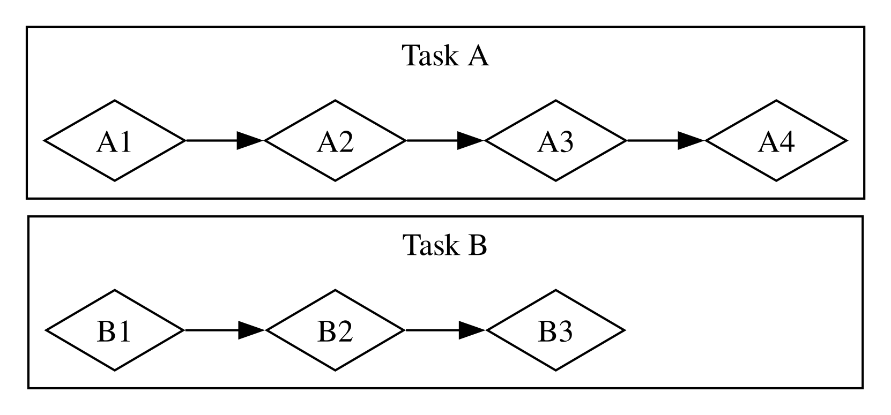
Em ambos os fluxos de trabalho, você pode ter que coordenar entre diferentes tarefas. Talvez você tenha pensado que a tarefa atribuída a uma pessoa era totalmente independente do trabalho de todos os outros, mas na verdade requer que outra pessoa na equipe termine sua tarefa primeiro. Parte do trabalho poderia ser feita em paralelo, mas parte dele era na verdade serial: só poderia acontecer em uma série, uma tarefa após a outra, como na Figura 17-3.
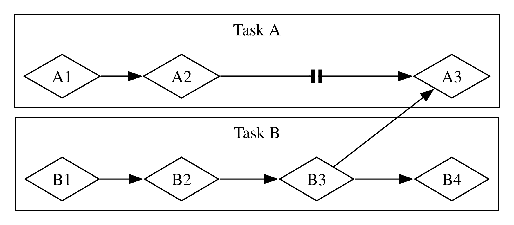
Da mesma forma, você pode perceber que uma das suas próprias tarefas depende de outra das suas tarefas. Agora seu trabalho concorrente também se tornou serial.
Paralelismo e concorrência podem se cruzar também. Se você descobrir que um colega está travado até que você termine uma das suas tarefas, você provavelmente focará todos os seus esforços nessa tarefa para “desbloquear” seu colega. Você e seu colega de trabalho não são mais capazes de trabalhar em paralelo, e você também não é mais capaz de trabalhar concorrentemente em suas próprias tarefas.
A mesma dinâmica básica entra em jogo com software e hardware. Em uma máquina com um único núcleo de CPU, a CPU pode realizar apenas uma operação por vez, mas ainda pode trabalhar concorrentemente. Usando ferramentas como threads, processos e async, o computador pode pausar uma atividade e mudar para outras antes de eventualmente voltar para aquela primeira atividade novamente. Em uma máquina com múltiplos núcleos de CPU, ela também pode fazer trabalho em paralelo. Um núcleo pode estar realizando uma tarefa enquanto outro núcleo realiza uma completamente não relacionada, e essas operações realmente acontecem ao mesmo tempo.
Rodar código async em Rust geralmente acontece de forma concorrente. Dependendo do hardware, do sistema operacional e do runtime async que estamos usando (mais sobre runtimes async em breve), essa concorrência também pode usar paralelismo por baixo dos panos.
Agora, vamos mergulhar em como a programação async em Rust realmente funciona.
Futures e Syntax
Futures e a Sintaxe Async
Os elementos-chave da programação assíncrona em Rust são futures e as palavras-chave async e await do Rust.
Um future (futuro) é um valor que pode não estar pronto agora, mas ficará pronto em algum momento no futuro. (Esse mesmo conceito aparece em muitas linguagens, às vezes sob outros nomes, como task ou promise.) Rust fornece uma trait Future como um bloco de construção para que diferentes operações assíncronas possam ser implementadas com diferentes estruturas de dados, mas com uma interface comum. Em Rust, futures são tipos que implementam a trait Future. Cada future mantém suas próprias informações sobre o progresso que foi feito e o que significa estar “pronto”.
Você pode aplicar a palavra-chave async a blocos e funções para especificar que eles podem ser interrompidos e retomados. Dentro de um bloco async ou função async, você pode usar a palavra-chave await para aguardar um future (isto é, esperar que ele fique pronto). Qualquer ponto onde você aguarda um future dentro de um bloco ou função async é um local potencial para esse bloco ou função pausar e retomar. O processo de verificar com um future para ver se seu valor já está disponível é chamado de polling (sondagem).
Algumas outras linguagens, como C# e JavaScript, também usam palavras-chave async e await para programação assíncrona. Se você está familiarizado com essas linguagens, pode notar algumas diferenças significativas em como Rust lida com a sintaxe. Isso é por um bom motivo, como veremos!
Ao escrever Rust assíncrono, usamos as palavras-chave async e await na maior parte do tempo. Rust as compila em código equivalente usando a trait Future, muito parecido com a forma como compila loops for em código equivalente usando a trait Iterator. Como Rust fornece a trait Future, no entanto, você também pode implementá-la para seus próprios tipos de dados quando precisar. Muitas das funções que veremos ao longo deste capítulo retornam tipos com suas próprias implementações de Future. Voltaremos à definição da trait no final do capítulo e nos aprofundaremos mais em como ela funciona, mas isso é detalhe suficiente para continuarmos avançando.
Tudo isso pode parecer um pouco abstrato, então vamos escrever nosso primeiro programa assíncrono: um pequeno web scraper. Passaremos duas URLs pela linha de comando, buscaremos ambas concorrentemente e retornaremos o resultado de qualquer uma que terminar primeiro. Este exemplo terá uma boa quantidade de sintaxe nova, mas não se preocupe — explicaremos tudo o que você precisa saber conforme avançamos.
Nosso Primeiro Programa Async
Para manter o foco deste capítulo em aprender async em vez de lidar com partes do ecossistema, criamos o crate trpl (trpl é uma abreviação de “The Rust Programming Language”). Ele reexporta todos os tipos, traits e funções que você precisará, principalmente dos crates futures e tokio. O crate futures é um lar oficial para experimentação em Rust para código async, e é na verdade onde a trait Future foi originalmente projetada. Tokio é o runtime async mais amplamente usado em Rust hoje, especialmente para aplicações web. Existem outros ótimos runtimes por aí, e eles podem ser mais adequados para seus propósitos. Usamos o crate tokio por baixo dos panos para o trpl porque ele é bem testado e amplamente utilizado.
Em alguns casos, trpl também renomeia ou envolve as APIs originais para manter você focado nos detalhes relevantes para este capítulo. Se você quiser entender o que o crate faz, encorajamos você a conferir seu código-fonte. Você poderá ver de qual crate cada reexportação vem, e deixamos extensos comentários explicando o que o crate faz.
Crie um novo projeto binário chamado hello-async e adicione o crate trpl como uma dependência:
$ cargo new hello-async
$ cd hello-async
$ cargo add trpl
Agora podemos usar as várias peças fornecidas pelo trpl para escrever nosso primeiro programa assíncrono. Construiremos uma pequena ferramenta de linha de comando que busca duas páginas da web, extrai o elemento <title> de cada uma e imprime o título de qualquer página que terminar todo esse processo primeiro.
Definindo a Função page_title
Vamos começar escrevendo uma função que recebe uma URL de página como parâmetro, faz uma requisição para ela e retorna o texto do elemento <title> (veja a Listagem 17-1).
extern crate trpl; // required for mdbook test
fn main() {
// TODO: we'll add this next!
}
use trpl::Html;
async fn page_title(url: &str) -> Option<String> {
let response = trpl::get(url).await;
let response_text = response.text().await;
Html::parse(&response_text)
.select_first("title")
.map(|title| title.inner_html())
}Primeiro, definimos uma função chamada page_title e a marcamos com a palavra-chave async. Então usamos a função trpl::get para buscar qualquer URL que for passada e adicionamos a palavra-chave await para aguardar a resposta. Para obter o texto da response (resposta), chamamos seu método text e mais uma vez o aguardamos com a palavra-chave await. Ambos os passos são assíncronos. Para a função get, temos que esperar o servidor enviar de volta a primeira parte de sua resposta, que incluirá cabeçalhos HTTP, cookies e assim por diante, e pode ser entregue separadamente do corpo da resposta. Especialmente se o corpo for muito grande, pode levar algum tempo para que tudo chegue. Como temos que esperar pela totalidade da resposta chegar, o método text também é async.
Temos que aguardar explicitamente ambos esses futures, porque futures em Rust são preguiçosos (lazy): eles não fazem nada até que você peça a eles com a palavra-chave await. (Na verdade, Rust mostrará um aviso do compilador se você não usar um future.) Isso pode lembrá-lo da discussão sobre iteradores na seção “Processando uma Série de Itens com Iteradores” no Capítulo 13. Iteradores não fazem nada a menos que você chame seu método next — seja diretamente ou usando loops for ou métodos como map que usam next por baixo dos panos. Da mesma forma, futures não fazem nada a menos que você explicitamente peça a eles. Essa preguiça permite que Rust evite rodar código async até que ele seja realmente necessário.
Nota: Isso é diferente do comportamento que vimos ao usar
thread::spawnna seção “Criando uma Nova Thread com spawn” no Capítulo 16, onde a closure que passamos para outra thread começava a rodar imediatamente. Também é diferente de como muitas outras linguagens abordam async. Mas é importante para Rust ser capaz de fornecer suas garantias de performance, assim como é com iteradores.
Uma vez que temos response_text, podemos analisá-lo em uma instância do tipo Html usando Html::parse. Em vez de uma string bruta, agora temos um tipo de dados que podemos usar para trabalhar com o HTML como uma estrutura de dados mais rica. Em particular, podemos usar o método select_first para encontrar a primeira instância de um dado seletor CSS. Passando a string "title", obteremos o primeiro elemento <title> no documento, se houver um. Como pode não haver nenhum elemento correspondente, select_first retorna um Option<ElementRef>. Finalmente, usamos o método Option::map, que nos permite trabalhar com o item no Option se ele estiver presente, e não fazer nada se não estiver. (Poderíamos também usar uma expressão match aqui, mas map é mais idiomático.) No corpo da função que fornecemos ao map, chamamos inner_html no title para obter seu conteúdo, que é uma String. Quando tudo estiver dito e feito, temos um Option<String>.
Note que a palavra-chave await do Rust vai depois da expressão que você está aguardando, não antes dela. Isto é, é uma palavra-chave pós-fixada. Isso pode diferir do que você está acostumado se usou async em outras linguagens, mas em Rust isso torna cadeias de métodos muito mais agradáveis de trabalhar. Como resultado, poderíamos mudar o corpo de page_title para encadear as chamadas de função trpl::get e text juntas com await entre elas, como mostrado na Listagem 17-2.
extern crate trpl; // required for mdbook test
use trpl::Html;
fn main() {
// TODO: we'll add this next!
}
async fn page_title(url: &str) -> Option<String> {
let response_text = trpl::get(url).await.text().await;
Html::parse(&response_text)
.select_first("title")
.map(|title| title.inner_html())
}Com isso, escrevemos com sucesso nossa primeira função async! Antes de adicionarmos algum código em main para chamá-la, vamos falar um pouco mais sobre o que escrevemos e o que isso significa.
Quando Rust vê um bloco marcado com a palavra-chave async, ele o compila em um tipo de dados único e anônimo que implementa a trait Future. Quando Rust vê uma função marcada com async, ele a compila em uma função não-async cujo corpo é um bloco async. O tipo de retorno de uma função async é o tipo do dado anônimo que o compilador cria para aquele bloco async.
Assim, escrever async fn é equivalente a escrever uma função que retorna um future do tipo de retorno. Para o compilador, uma definição de função como a async fn page_title na Listagem 17-1 é aproximadamente equivalente a uma função não-async definida assim:
#![allow(unused)]
fn main() {
extern crate trpl; // required for mdbook test
use std::future::Future;
use trpl::Html;
fn page_title(url: &str) -> impl Future<Output = Option<String>> {
async move {
let text = trpl::get(url).await.text().await;
Html::parse(&text)
.select_first("title")
.map(|title| title.inner_html())
}
}
}Vamos percorrer cada parte da versão transformada:
- Ela usa a sintaxe
impl Traitque discutimos no Capítulo 10 na seção “Traits como Parâmetros”. - O valor retornado implementa a trait
Futurecom um tipo associado deOutput. Note que o tipoOutputéOption<String>, que é o mesmo que o tipo de retorno original da versãoasync fndepage_title. - Todo o código chamado no corpo da função original é envolvido em um bloco
async move. Lembre-se que blocos são expressões. Todo este bloco é a expressão retornada da função. - Este bloco async produz um valor com o tipo
Option<String>, como descrito. Esse valor corresponde ao tipoOutputno tipo de retorno. Isso é exatamente como outros blocos que você viu. - O novo corpo da função é um bloco
async movepor causa de como ele usa o parâmetrourl. (Falaremos muito mais sobreasyncversusasync movemais tarde no capítulo.)
Agora podemos chamar page_title em main.
Executando uma Função Async com um Runtime
Para começar, vamos obter o título de uma única página, mostrado na Listagem 17-3. Infelizmente, este código ainda não compila.
extern crate trpl; // required for mdbook test
use trpl::Html;
async fn main() {
let args: Vec<String> = std::env::args().collect();
let url = &args[1];
match page_title(url).await {
Some(title) => println!("The title for {url} was {title}"),
None => println!("{url} had no title"),
}
}
async fn page_title(url: &str) -> Option<String> {
let response_text = trpl::get(url).await.text().await;
Html::parse(&response_text)
.select_first("title")
.map(|title| title.inner_html())
}Seguimos o mesmo padrão que usamos para obter argumentos de linha de comando na seção “Aceitando Argumentos de Linha de Comando” no Capítulo 12. Então passamos o argumento URL para page_title e aguardamos o resultado. Como o valor produzido pelo future é um Option<String>, usamos uma expressão match para imprimir mensagens diferentes para considerar se a página tinha um <title>.
O único lugar onde podemos usar a palavra-chave await é em funções ou blocos async, e Rust não nos deixará marcar a função especial main como async.
error[E0752]: `main` function is not allowed to be `async`
--> src/main.rs:6:1
|
6 | async fn main() {
| ^^^^^^^^^^^^^^^ `main` function is not allowed to be `async`
A razão pela qual main não pode ser marcada como async é que o código async precisa de um runtime: um crate Rust que gerencia os detalhes de execução de código assíncrono. A função main de um programa pode inicializar um runtime, mas não é um runtime ela mesma. (Veremos mais sobre por que esse é o caso em breve.) Todo programa Rust que executa código async tem pelo menos um lugar onde configura um runtime que executa os futures.
A maioria das linguagens que suportam async inclui um runtime, mas Rust não. Em vez disso, existem muitos runtimes async diferentes disponíveis, cada um dos quais faz compensações diferentes adequadas ao caso de uso que visa. Por exemplo, um servidor web de alto rendimento com muitos núcleos de CPU e uma grande quantidade de RAM tem necessidades muito diferentes de um microcontrolador com um único núcleo, uma pequena quantidade de RAM e sem capacidade de alocação de heap. Os crates que fornecem esses runtimes também frequentemente fornecem versões async de funcionalidades comuns, como E/S de arquivo ou rede.
Aqui, e ao longo do resto deste capítulo, usaremos a função block_on do crate trpl, que recebe um future como argumento e bloqueia a thread atual até que este future rode até a conclusão. Por trás dos panos, chamar block_on configura um runtime usando o crate tokio que é usado para rodar o future passado (o comportamento de block_on do crate trpl é semelhante às funções block_on de outros crates de runtime). Uma vez que o future completa, block_on retorna qualquer valor que o future produziu.
Poderíamos passar o future retornado por page_title diretamente para block_on e, uma vez que ele completasse, poderíamos fazer match no Option<String> resultante como tentamos fazer na Listagem 17-3. No entanto, para a maioria dos exemplos no capítulo (e a maioria dos códigos async no mundo real), faremos mais do que apenas uma chamada de função async, então, em vez disso, passaremos um bloco async e aguardaremos explicitamente o resultado da chamada page_title, como na Listagem 17-4.
extern crate trpl; // required for mdbook test
use trpl::Html;
fn main() {
let args: Vec<String> = std::env::args().collect();
trpl::block_on(async {
let url = &args[1];
match page_title(url).await {
Some(title) => println!("The title for {url} was {title}"),
None => println!("{url} had no title"),
}
})
}
async fn page_title(url: &str) -> Option<String> {
let response_text = trpl::get(url).await.text().await;
Html::parse(&response_text)
.select_first("title")
.map(|title| title.inner_html())
}Quando rodamos este código, obtemos o comportamento que esperávamos inicialmente:
$ cargo run -- "https://www.rust-lang.org"
Finished `dev` profile [unoptimized + debuginfo] target(s) in 0.05s
Running `target/debug/async_await 'https://www.rust-lang.org'`
The title for https://www.rust-lang.org was
Rust Programming Language
Ufa — finalmente temos algum código async funcionando! Mas antes de adicionarmos o código para fazer a corrida entre dois sites, vamos brevemente voltar nossa atenção para como futures funcionam.
Cada ponto de await — isto é, cada lugar onde o código usa a palavra-chave await — representa um lugar onde o controle é devolvido ao runtime. Para fazer isso funcionar, Rust precisa acompanhar o estado envolvido no bloco async para que o runtime possa iniciar algum outro trabalho e depois voltar quando estiver pronto para tentar avançar o primeiro novamente. Esta é uma máquina de estado invisível, como se você tivesse escrito um enum como este para salvar o estado atual em cada ponto de await:
#![allow(unused)]
fn main() {
extern crate trpl; // required for mdbook test
enum PageTitleFuture<'a> {
Initial { url: &'a str },
GetAwaitPoint { url: &'a str },
TextAwaitPoint { response: trpl::Response },
}
}Escrever o código para transitar entre cada estado à mão seria tedioso e propenso a erros, no entanto, especialmente quando você precisa adicionar mais funcionalidade e mais estados ao código mais tarde. Felizmente, o compilador Rust cria e gerencia as estruturas de dados da máquina de estado para código async automaticamente. As regras normais de empréstimo e posse em torno de estruturas de dados ainda se aplicam, e felizmente, o compilador também lida com a verificação delas para nós e fornece mensagens de erro úteis. Trabalharemos em algumas delas mais tarde no capítulo.
Em última análise, algo tem que executar essa máquina de estado, e esse algo é um runtime. (É por isso que você pode encontrar menções a executores ao pesquisar sobre runtimes: um executor é a parte de um runtime responsável por executar o código async.)
Agora você pode ver por que o compilador nos impediu de tornar main ela mesma uma função async na Listagem 17-3. Se main fosse uma função async, outra coisa precisaria gerenciar a máquina de estado para qualquer future que main retornasse, mas main é o ponto de partida para o programa! Em vez disso, chamamos a função trpl::block_on em main para configurar um runtime e rodar o future retornado pelo bloco async até que ele termine.
Nota: Alguns runtimes fornecem macros para que você possa escrever uma função
mainasync. Essas macros reescrevemasync fn main() { ... }para ser umafn mainnormal, que faz a mesma coisa que fizemos à mão na Listagem 17-4: chamar uma função que roda um future até a conclusão da maneira quetrpl::block_onfaz.
Agora vamos juntar essas peças e ver como podemos escrever código concorrente.
Correndo Duas URLs Uma Contra a Outra Concorrentemente
Na Listagem 17-5, chamamos page_title com duas URLs diferentes passadas pela linha de comando e fazemos uma corrida entre elas selecionando qualquer future que terminar primeiro.
extern crate trpl; // required for mdbook test
use trpl::{Either, Html};
fn main() {
let args: Vec<String> = std::env::args().collect();
trpl::block_on(async {
let title_fut_1 = page_title(&args[1]);
let title_fut_2 = page_title(&args[2]);
let (url, maybe_title) =
match trpl::select(title_fut_1, title_fut_2).await {
Either::Left(left) => left,
Either::Right(right) => right,
};
println!("{url} returned first");
match maybe_title {
Some(title) => println!("Its page title was: '{title}'"),
None => println!("It had no title."),
}
})
}
async fn page_title(url: &str) -> (&str, Option<String>) {
let response_text = trpl::get(url).await.text().await;
let title = Html::parse(&response_text)
.select_first("title")
.map(|title| title.inner_html());
(url, title)
}Começamos chamando page_title para cada uma das URLs fornecidas pelo usuário. Salvamos os futures resultantes como title_fut_1 e title_fut_2. Lembre-se, estes não fazem nada ainda, porque futures são preguiçosos e ainda não os aguardamos. Então passamos os futures para trpl::select, que retorna um valor para indicar qual dos futures passados para ele termina primeiro.
Nota: Por baixo dos panos,
trpl::selecté construído sobre uma funçãoselectmais geral definida no cratefutures. A funçãoselectdo cratefuturespode fazer muitas coisas que a funçãotrpl::selectnão pode, mas também tem alguma complexidade adicional que podemos pular por agora.
Qualquer future pode legitimamente “ganhar”, então não faz sentido retornar um Result. Em vez disso, trpl::select retorna um tipo que não vimos antes, trpl::Either. O tipo Either é um pouco semelhante a um Result no sentido de que tem dois casos. Diferente de Result, no entanto, não há noção de sucesso ou falha embutida em Either. Em vez disso, ele usa Left (Esquerda) e Right (Direita) para indicar “um ou o outro”:
#![allow(unused)]
fn main() {
enum Either<A, B> {
Left(A),
Right(B),
}
}A função select retorna Left com a saída daquele future se o primeiro argumento ganhar, e Right com a saída do segundo argumento future se aquele ganhar. Isso corresponde à ordem em que os argumentos aparecem ao chamar a função: o primeiro argumento está à esquerda do segundo argumento.
Também atualizamos page_title para retornar a mesma URL passada. Dessa forma, se a página que retornar primeiro não tiver um <title> que possamos resolver, ainda podemos imprimir uma mensagem significativa. Com essa informação disponível, concluímos atualizando nossa saída println! para indicar tanto qual URL terminou primeiro quanto qual, se houver, é o <title> para a página da web naquela URL.
Você construiu um pequeno web scraper funcional agora! Escolha algumas URLs e rode a ferramenta de linha de comando. Você pode descobrir que alguns sites são consistentemente mais rápidos que outros, enquanto em outros casos o site mais rápido varia de execução para execução. Mais importante, você aprendeu o básico de trabalhar com futures, então agora podemos cavar mais fundo no que podemos fazer com async.
Concorrência Async
Aplicando Concorrência com Async
Nesta seção, aplicaremos async a alguns dos mesmos desafios de concorrência que abordamos com threads no Capítulo 16. Como já falamos sobre muitas das ideias principais lá, nesta seção focaremos no que é diferente entre threads e futures.
Em muitos casos, as APIs para trabalhar com concorrência usando async são muito semelhantes às de uso de threads. Em outros casos, elas acabam sendo bastante diferentes. Mesmo quando as APIs parecem semelhantes entre threads e async, elas frequentemente têm comportamento diferente — e quase sempre têm características de desempenho diferentes.
Criando uma Nova Tarefa com spawn_task
A primeira operação que abordamos na seção “Criando uma Nova Thread com spawn” no Capítulo 16 foi contar em duas threads separadas. Vamos fazer o mesmo usando async. O crate trpl fornece uma função spawn_task que se parece muito com a API thread::spawn, e uma função sleep que é uma versão async da API thread::sleep. Podemos usá-las juntas para implementar o exemplo de contagem, como mostrado na Listagem 17-6.
extern crate trpl; // required for mdbook test
use std::time::Duration;
fn main() {
trpl::block_on(async {
trpl::spawn_task(async {
for i in 1..10 {
println!("hi number {i} from the first task!");
trpl::sleep(Duration::from_millis(500)).await;
}
});
for i in 1..5 {
println!("hi number {i} from the second task!");
trpl::sleep(Duration::from_millis(500)).await;
}
});
}Como nosso ponto de partida, configuramos nossa função main com trpl::block_on para que nossa função de nível superior possa ser async.
Nota: Deste ponto em diante no capítulo, todo exemplo incluirá este exatamente mesmo código de envolvimento com
trpl::block_onemmain, então frequentemente o pularemos, assim como fazemos commain. Lembre-se de incluí-lo em seu código!
Então escrevemos dois loops dentro desse bloco, cada um contendo uma chamada trpl::sleep, que espera por meio segundo (500 milissegundos) antes de enviar a próxima mensagem. Colocamos um loop no corpo de um trpl::spawn_task e o outro em um loop for de nível superior. Também adicionamos um await após as chamadas sleep.
Este código se comporta de forma semelhante à implementação baseada em threads — incluindo o fato de que você pode ver as mensagens aparecerem em uma ordem diferente no seu próprio terminal quando rodá-lo:
hi number 1 from the second task!
hi number 1 from the first task!
hi number 2 from the first task!
hi number 2 from the second task!
hi number 3 from the first task!
hi number 3 from the second task!
hi number 4 from the first task!
hi number 4 from the second task!
hi number 5 from the first task!
Esta versão para assim que o loop for no corpo do bloco async principal termina, porque a tarefa criada por spawn_task é encerrada quando a função main termina. Se você quiser que ela rode até a conclusão da tarefa, precisará usar um join handle para esperar a primeira tarefa completar. Com threads, usamos o método join para “bloquear” até que a thread tivesse terminado de rodar. Na Listagem 17-7, podemos usar await para fazer a mesma coisa, porque o próprio identificador da tarefa é um future. Seu tipo Output é um Result, então também o desembrulhamos (unwrap) após aguardá-lo.
extern crate trpl; // required for mdbook test
use std::time::Duration;
fn main() {
trpl::block_on(async {
let handle = trpl::spawn_task(async {
for i in 1..10 {
println!("hi number {i} from the first task!");
trpl::sleep(Duration::from_millis(500)).await;
}
});
for i in 1..5 {
println!("hi number {i} from the second task!");
trpl::sleep(Duration::from_millis(500)).await;
}
handle.await.unwrap();
});
}Esta versão atualizada roda até que ambos os loops terminem:
hi number 1 from the second task!
hi number 1 from the first task!
hi number 2 from the first task!
hi number 2 from the second task!
hi number 3 from the first task!
hi number 3 from the second task!
hi number 4 from the first task!
hi number 4 from the second task!
hi number 5 from the first task!
hi number 6 from the first task!
hi number 7 from the first task!
hi number 8 from the first task!
hi number 9 from the first task!
Até agora, parece que async e threads nos dão resultados semelhantes, apenas com sintaxe diferente: usando await em vez de chamar join no join handle, e aguardando as chamadas sleep.
A maior diferença é que não precisamos criar outra thread do sistema operacional para fazer isso. Na verdade, nem precisamos criar uma tarefa aqui. Como blocos async compilam para futures anônimos, podemos colocar cada loop em um bloco async e fazer o runtime rodar ambos até a conclusão usando a função trpl::join.
Na seção “Esperando Todas as Threads Terminarem” no Capítulo 16, mostramos como usar o método join no tipo JoinHandle retornado quando você chama std::thread::spawn. A função trpl::join é semelhante, mas para futures. Quando você dá a ela dois futures, ela produz um único novo future cuja saída é uma tupla contendo a saída de cada future que você passou, uma vez que ambos completem. Assim, na Listagem 17-8, usamos trpl::join para esperar que tanto fut1 quanto fut2 terminem. Nós não aguardamos fut1 e fut2, mas sim o novo future produzido por trpl::join. Ignoramos a saída, porque é apenas uma tupla contendo dois valores unitários.
extern crate trpl; // required for mdbook test
use std::time::Duration;
fn main() {
trpl::block_on(async {
let fut1 = async {
for i in 1..10 {
println!("hi number {i} from the first task!");
trpl::sleep(Duration::from_millis(500)).await;
}
};
let fut2 = async {
for i in 1..5 {
println!("hi number {i} from the second task!");
trpl::sleep(Duration::from_millis(500)).await;
}
};
trpl::join(fut1, fut2).await;
});
}Quando rodamos isso, vemos ambos os futures rodarem até a conclusão:
hi number 1 from the first task!
hi number 1 from the second task!
hi number 2 from the first task!
hi number 2 from the second task!
hi number 3 from the first task!
hi number 3 from the second task!
hi number 4 from the first task!
hi number 4 from the second task!
hi number 5 from the first task!
hi number 6 from the first task!
hi number 7 from the first task!
hi number 8 from the first task!
hi number 9 from the first task!
Agora, você verá a exata mesma ordem toda vez, o que é muito diferente do que vimos com threads e com trpl::spawn_task na Listagem 17-7. Isso é porque a função trpl::join é justa (fair), significando que ela verifica cada future com igual frequência, alternando entre eles, e nunca deixa um correr à frente se o outro estiver pronto. Com threads, o sistema operacional decide qual thread verificar e por quanto tempo deixá-la rodar. Com Rust async, o runtime decide qual tarefa verificar. (Na prática, os detalhes ficam complicados porque um runtime async pode usar threads do sistema operacional por baixo dos panos como parte de como gerencia a concorrência, então garantir justiça pode ser mais trabalho para um runtime — mas ainda é possível!) Runtimes não precisam garantir justiça para qualquer operação dada, e eles frequentemente oferecem APIs diferentes para deixar você escolher se quer ou não justiça.
Tente algumas dessas variações ao aguardar os futures e veja o que elas fazem:
- Remova o bloco async de volta de um ou ambos os loops.
- Aguarde cada bloco async imediatamente após defini-lo.
- Envolva apenas o primeiro loop em um bloco async, e aguarde o future resultante após o corpo do segundo loop.
Para um desafio extra, veja se consegue descobrir qual será a saída em cada caso antes de rodar o código!
Enviando Dados Entre Duas Tarefas Usando Passagem de Mensagem
Compartilhar dados entre futures também será familiar: usaremos passagem de mensagem novamente, mas desta vez com versões async dos tipos e funções. Tomaremos um caminho ligeiramente diferente do que fizemos na seção “Transferir Dados Entre Threads com Passagem de Mensagem” no Capítulo 16 para ilustrar algumas das principais diferenças entre concorrência baseada em threads e baseada em futures. Na Listagem 17-9, começaremos com apenas um único bloco async — não criando uma tarefa separada como criamos uma thread separada.
extern crate trpl; // required for mdbook test
fn main() {
trpl::block_on(async {
let (tx, mut rx) = trpl::channel();
let val = String::from("hi");
tx.send(val).unwrap();
let received = rx.recv().await.unwrap();
println!("received '{received}'");
});
}Aqui, usamos trpl::channel, uma versão async da API de canal de múltiplos produtores e único consumidor que usamos com threads no Capítulo 16. A versão async da API é apenas um pouco diferente da versão baseada em threads: ela usa um receiver rx mutável em vez de imutável, e seu método recv produz um future que precisamos aguardar em vez de produzir o valor diretamente. Agora podemos enviar mensagens do remetente para o receptor. Note que não precisamos criar uma thread separada ou mesmo uma tarefa; precisamos apenas aguardar a chamada rx.recv.
O método síncrono Receiver::recv em std::mpsc::channel bloqueia até que receba uma mensagem. O método trpl::Receiver::recv não bloqueia, porque é async. Em vez de bloquear, ele devolve o controle ao runtime até que uma mensagem seja recebida ou o lado de envio do canal feche. Em contraste, não aguardamos a chamada send, porque ela não bloqueia. Ela não precisa, porque o canal para o qual estamos enviando é ilimitado (unbounded).
Nota: Como todo esse código async roda em um bloco async em uma chamada
trpl::block_on, tudo dentro dele pode evitar bloquear. No entanto, o código fora dele bloqueará no retorno da funçãoblock_on. Esse é todo o ponto da funçãotrpl::block_on: ela permite que você escolha onde bloquear em algum conjunto de código async, e assim onde transitar entre código sync e async.
Note duas coisas sobre este exemplo. Primeiro, a mensagem chegará imediatamente. Segundo, embora usemos um future aqui, não há concorrência ainda. Tudo na listagem acontece em sequência, exatamente como aconteceria se não houvesse futures envolvidos.
Vamos abordar a primeira parte enviando uma série de mensagens e dormindo entre elas, como mostrado na Listagem 17-10.
extern crate trpl; // required for mdbook test
use std::time::Duration;
fn main() {
trpl::block_on(async {
let (tx, mut rx) = trpl::channel();
let vals = vec![
String::from("hi"),
String::from("from"),
String::from("the"),
String::from("future"),
];
for val in vals {
tx.send(val).unwrap();
trpl::sleep(Duration::from_millis(500)).await;
}
while let Some(value) = rx.recv().await {
println!("received '{value}'");
}
});
}Além de enviar as mensagens, precisamos recebê-las. Neste caso, como sabemos quantas mensagens estão chegando, poderíamos fazer isso manualmente chamando rx.recv().await quatro vezes. No mundo real, porém, geralmente estaremos esperando por algum número desconhecido de mensagens, então precisamos continuar esperando até determinarmos que não há mais mensagens.
Na Listagem 16-10, usamos um loop for para processar todos os itens recebidos de um canal síncrono. Rust ainda não tem uma maneira de usar um loop for com uma série de itens produzidos assincronamente, no entanto, então precisamos usar um loop que não vimos antes: o loop condicional while let. Esta é a versão em loop do construto if let que vimos na seção “Controle de Fluxo Conciso com if let e let...else” no Capítulo 6. O loop continuará executando enquanto o padrão que ele especifica continuar correspondendo ao valor.
A chamada rx.recv produz um future, que aguardamos. O runtime pausará o future até que ele esteja pronto. Uma vez que uma mensagem chegue, o future resolverá para Some(mensagem) tantas vezes quanto uma mensagem chegar. Quando o canal fechar, independentemente de alguma mensagem ter chegado, o future resolverá para None para indicar que não há mais valores e, portanto, devemos parar de sondar (polling) — isto é, parar de aguardar.
O loop while let junta tudo isso. Se o resultado de chamar rx.recv().await for Some(mensagem), obtemos acesso à mensagem e podemos usá-la no corpo do loop, assim como poderíamos com if let. Se o resultado for None, o loop termina. Toda vez que o loop completa, ele atinge o ponto de await novamente, então o runtime o pausa novamente até que outra mensagem chegue.
O código agora envia e recebe com sucesso todas as mensagens. Infelizmente, ainda existem alguns problemas. Por um lado, as mensagens não chegam em intervalos de meio segundo. Elas chegam todas de uma vez, 2 segundos (2.000 milissegundos) depois de iniciarmos o programa. Por outro lado, este programa também nunca termina! Em vez disso, ele espera para sempre por novas mensagens. Você precisará encerrá-lo usando ctrl-C.
Código Dentro de Um Bloco Async Executa Linearmente
Vamos começar examinando por que as mensagens chegam todas de uma vez após o atraso total, em vez de chegarem com atrasos entre cada uma. Dentro de um determinado bloco async, a ordem em que as palavras-chave await aparecem no código é também a ordem em que são executadas quando o programa roda.
Há apenas um bloco async na Listagem 17-10, então tudo nele roda linearmente. Ainda não há concorrência. Todas as chamadas tx.send acontecem, intercaladas com todas as chamadas trpl::sleep e seus pontos de await associados. Só então o loop while let consegue passar por qualquer um dos pontos de await nas chamadas recv.
Para obter o comportamento que queremos, onde o atraso de sono acontece entre cada mensagem, precisamos colocar as operações tx e rx em seus próprios blocos async, como mostrado na Listagem 17-11. Então o runtime pode executar cada um deles separadamente usando trpl::join, exatamente como na Listagem 17-8. Mais uma vez, aguardamos o resultado de chamar trpl::join, não os futures individuais. Se aguardássemos os futures individuais em sequência, acabaríamos de volta em um fluxo sequencial — exatamente o que estamos tentando não fazer.
extern crate trpl; // required for mdbook test
use std::time::Duration;
fn main() {
trpl::block_on(async {
let (tx, mut rx) = trpl::channel();
let tx_fut = async {
let vals = vec![
String::from("hi"),
String::from("from"),
String::from("the"),
String::from("future"),
];
for val in vals {
tx.send(val).unwrap();
trpl::sleep(Duration::from_millis(500)).await;
}
};
let rx_fut = async {
while let Some(value) = rx.recv().await {
println!("received '{value}'");
}
};
trpl::join(tx_fut, rx_fut).await;
});
}Com o código atualizado na Listagem 17-11, as mensagens são impressas em intervalos de 500 milissegundos, em vez de todas de uma vez após 2 segundos.
Movendo Posse Para Dentro de um Bloco Async
O programa ainda nunca termina, no entanto, por causa da maneira como o loop while let interage com trpl::join:
- O future retornado de
trpl::joincompleta apenas quando ambos os futures passados para ele completam. - O future
tx_futcompleta uma vez que termina de dormir após enviar a última mensagem emvals. - O future
rx_futnão completará até que o loopwhile lettermine. - O loop
while letnão terminará até que aguardarrx.recvproduzaNone. - Aguardar
rx.recvretornaráNoneapenas uma vez que a outra ponta do canal for fechada. - O canal fechará apenas se chamarmos
rx.closeou quando o lado do remetente,tx, for descartado (dropped). - Não chamamos
rx.closeem lugar nenhum, etxnão será descartado até que o bloco async mais externo passado paratrpl::block_ontermine. - O bloco não pode terminar porque está bloqueado em
trpl::joincompletando, o que nos leva de volta ao topo desta lista.
No momento, o bloco async onde enviamos as mensagens apenas toma emprestado tx porque enviar uma mensagem não requer posse, mas se pudéssemos mover tx para dentro desse bloco async, ele seria descartado uma vez que esse bloco terminasse. Na seção “Capturando Referências ou Movendo Posse” no Capítulo 13, você aprendeu como usar a palavra-chave move com closures e, como discutido na seção “Usando Closures move com Threads” no Capítulo 16, frequentemente precisamos mover dados para dentro de closures quando trabalhamos com threads. A mesma dinâmica básica se aplica a blocos async, então a palavra-chave move funciona com blocos async exatamente como faz com closures.
Na Listagem 17-12, mudamos o bloco usado para enviar mensagens de async para async move.
extern crate trpl; // required for mdbook test
use std::time::Duration;
fn main() {
trpl::block_on(async {
let (tx, mut rx) = trpl::channel();
let tx_fut = async move {
// --snip--
let vals = vec![
String::from("hi"),
String::from("from"),
String::from("the"),
String::from("future"),
];
for val in vals {
tx.send(val).unwrap();
trpl::sleep(Duration::from_millis(500)).await;
}
};
let rx_fut = async {
while let Some(value) = rx.recv().await {
println!("received '{value}'");
}
};
trpl::join(tx_fut, rx_fut).await;
});
}Quando rodamos esta versão do código, ela encerra graciosamente após a última mensagem ser enviada e recebida. A seguir, vamos ver o que precisaria mudar para enviar dados de mais de um future.
Juntando um Número de Futures com a Macro join!
Este canal async também é um canal de múltiplos produtores, então podemos chamar clone em tx se quisermos enviar mensagens de múltiplos futures, como mostrado na Listagem 17-13.
extern crate trpl; // required for mdbook test
use std::time::Duration;
fn main() {
trpl::block_on(async {
let (tx, mut rx) = trpl::channel();
let tx1 = tx.clone();
let tx1_fut = async move {
let vals = vec![
String::from("hi"),
String::from("from"),
String::from("the"),
String::from("future"),
];
for val in vals {
tx1.send(val).unwrap();
trpl::sleep(Duration::from_millis(500)).await;
}
};
let rx_fut = async {
while let Some(value) = rx.recv().await {
println!("received '{value}'");
}
};
let tx_fut = async move {
let vals = vec![
String::from("more"),
String::from("messages"),
String::from("for"),
String::from("you"),
];
for val in vals {
tx.send(val).unwrap();
trpl::sleep(Duration::from_millis(1500)).await;
}
};
trpl::join!(tx1_fut, tx_fut, rx_fut);
});
}Primeiro, clonamos tx, criando tx1 fora do primeiro bloco async. Movemos tx1 para dentro desse bloco assim como fizemos antes com tx. Então, mais tarde, movemos o tx original para dentro de um novo bloco async, onde enviamos mais mensagens com um atraso ligeiramente mais lento. Acontece que colocamos este novo bloco async após o bloco async para receber mensagens, mas ele poderia ir antes dele igualmente bem. A chave é a ordem em que os futures são aguardados, não em que são criados.
Ambos os blocos async para enviar mensagens precisam ser blocos async move para que tanto tx quanto tx1 sejam descartados quando esses blocos terminarem. Caso contrário, acabaremos de volta no mesmo loop infinito em que começamos.
Finalmente, mudamos de trpl::join para trpl::join! para lidar com o future adicional: a macro join! aguarda um número arbitrário de futures onde sabemos o número de futures em tempo de compilação. Discutiremos aguardar uma coleção de um número desconhecido de futures mais tarde neste capítulo.
Agora vemos todas as mensagens de ambos os futures de envio, e como os futures de envio usam atrasos ligeiramente diferentes após enviar, as mensagens também são recebidas nesses intervalos diferentes:
received 'hi'
received 'more'
received 'from'
received 'the'
received 'messages'
received 'future'
received 'for'
received 'you'
Exploramos como usar passagem de mensagem para enviar dados entre futures, como código dentro de um bloco async roda sequencialmente, como mover posse para dentro de um bloco async e como juntar múltiplos futures. A seguir, vamos discutir como e por que dizer ao runtime que ele pode mudar para outra tarefa.
Mais Futures
Yielding Control to the Runtime
Recall from the “Our First Async Program” section that at each await point, Rust gives a runtime a chance to pause the task and switch to another one if the future being awaited isn’t ready. The inverse is also true: Rust only pauses async blocks and hands control back to a runtime at an await point. Everything between await points is synchronous.
That means if you do a bunch of work in an async block without an await point, that future will block any other futures from making progress. You may sometimes hear this referred to as one future starving other futures. In some cases, that may not be a big deal. However, if you are doing some kind of expensive setup or long-running work, or if you have a future that will keep doing some particular task indefinitely, you’ll need to think about when and where to hand control back to the runtime.
Let’s simulate a long-running operation to illustrate the starvation problem,
then explore how to solve it. Listing 17-14 introduces a slow function.
extern crate trpl; // required for mdbook test
use std::{thread, time::Duration};
fn main() {
trpl::block_on(async {
// We will call `slow` here later
});
}
fn slow(name: &str, ms: u64) {
thread::sleep(Duration::from_millis(ms));
println!("'{name}' ran for {ms}ms");
}This code uses std::thread::sleep instead of trpl::sleep so that calling
slow will block the current thread for some number of milliseconds. We can
use slow to stand in for real-world operations that are both long-running and
blocking.
In Listing 17-15, we use slow to emulate doing this kind of CPU-bound work in
a pair of futures.
extern crate trpl; // required for mdbook test
use std::{thread, time::Duration};
fn main() {
trpl::block_on(async {
let a = async {
println!("'a' started.");
slow("a", 30);
slow("a", 10);
slow("a", 20);
trpl::sleep(Duration::from_millis(50)).await;
println!("'a' finished.");
};
let b = async {
println!("'b' started.");
slow("b", 75);
slow("b", 10);
slow("b", 15);
slow("b", 350);
trpl::sleep(Duration::from_millis(50)).await;
println!("'b' finished.");
};
trpl::select(a, b).await;
});
}
fn slow(name: &str, ms: u64) {
thread::sleep(Duration::from_millis(ms));
println!("'{name}' ran for {ms}ms");
}Each future hands control back to the runtime only after carrying out a bunch of slow operations. If you run this code, you will see this output:
'a' started.
'a' ran for 30ms
'a' ran for 10ms
'a' ran for 20ms
'b' started.
'b' ran for 75ms
'b' ran for 10ms
'b' ran for 15ms
'b' ran for 350ms
'a' finished.
As with Listing 17-5 where we used trpl::select to race futures fetching two
URLs, select still finishes as soon as a is done. There’s no interleaving
between the calls to slow in the two futures, though. The a future does all
of its work until the trpl::sleep call is awaited, then the b future does
all of its work until its own trpl::sleep call is awaited, and finally the
a future completes. To allow both futures to make progress between their slow
tasks, we need await points so we can hand control back to the runtime. That
means we need something we can await!
We can already see this kind of handoff happening in Listing 17-15: if we
removed the trpl::sleep at the end of the a future, it would complete
without the b future running at all. Let’s try using the trpl::sleep
function as a starting point for letting operations switch off making progress,
as shown in Listing 17-16.
extern crate trpl; // required for mdbook test
use std::{thread, time::Duration};
fn main() {
trpl::block_on(async {
let one_ms = Duration::from_millis(1);
let a = async {
println!("'a' started.");
slow("a", 30);
trpl::sleep(one_ms).await;
slow("a", 10);
trpl::sleep(one_ms).await;
slow("a", 20);
trpl::sleep(one_ms).await;
println!("'a' finished.");
};
let b = async {
println!("'b' started.");
slow("b", 75);
trpl::sleep(one_ms).await;
slow("b", 10);
trpl::sleep(one_ms).await;
slow("b", 15);
trpl::sleep(one_ms).await;
slow("b", 350);
trpl::sleep(one_ms).await;
println!("'b' finished.");
};
trpl::select(a, b).await;
});
}
fn slow(name: &str, ms: u64) {
thread::sleep(Duration::from_millis(ms));
println!("'{name}' ran for {ms}ms");
}We’ve added trpl::sleep calls with await points between each call to slow.
Now the two futures’ work is interleaved:
'a' started.
'a' ran for 30ms
'b' started.
'b' ran for 75ms
'a' ran for 10ms
'b' ran for 10ms
'a' ran for 20ms
'b' ran for 15ms
'a' finished.
The a future still runs for a bit before handing off control to b, because
it calls slow before ever calling trpl::sleep, but after that the futures
swap back and forth each time one of them hits an await point. In this case, we
have done that after every call to slow, but we could break up the work in
whatever way makes the most sense to us.
We don’t really want to sleep here, though: we want to make progress as fast
as we can. We just need to hand back control to the runtime. We can do that
directly, using the trpl::yield_now function. In Listing 17-17, we replace
all those trpl::sleep calls with trpl::yield_now.
extern crate trpl; // required for mdbook test
use std::{thread, time::Duration};
fn main() {
trpl::block_on(async {
let a = async {
println!("'a' started.");
slow("a", 30);
trpl::yield_now().await;
slow("a", 10);
trpl::yield_now().await;
slow("a", 20);
trpl::yield_now().await;
println!("'a' finished.");
};
let b = async {
println!("'b' started.");
slow("b", 75);
trpl::yield_now().await;
slow("b", 10);
trpl::yield_now().await;
slow("b", 15);
trpl::yield_now().await;
slow("b", 350);
trpl::yield_now().await;
println!("'b' finished.");
};
trpl::select(a, b).await;
});
}
fn slow(name: &str, ms: u64) {
thread::sleep(Duration::from_millis(ms));
println!("'{name}' ran for {ms}ms");
}This code is both clearer about the actual intent and can be significantly
faster than using sleep, because timers such as the one used by sleep often
have limits on how granular they can be. The version of sleep we are using,
for example, will always sleep for at least a millisecond, even if we pass it a
Duration of one nanosecond. Again, modern computers are fast: they can do a
lot in one millisecond!
This means that async can be useful even for compute-bound tasks, depending on what else your program is doing, because it provides a useful tool for structuring the relationships between different parts of the program (but at a cost of the overhead of the async state machine). This is a form of cooperative multitasking, where each future has the power to determine when it hands over control via await points. Each future therefore also has the responsibility to avoid blocking for too long. In some Rust-based embedded operating systems, this is the only kind of multitasking!
In real-world code, you won’t usually be alternating function calls with await points on every single line, of course. While yielding control in this way is relatively inexpensive, it’s not free. In many cases, trying to break up a compute-bound task might make it significantly slower, so sometimes it’s better for overall performance to let an operation block briefly. Always measure to see what your code’s actual performance bottlenecks are. The underlying dynamic is important to keep in mind, though, if you are seeing a lot of work happening in serial that you expected to happen concurrently!
Building Our Own Async Abstractions
We can also compose futures together to create new patterns. For example, we can
build a timeout function with async building blocks we already have. When
we’re done, the result will be another building block we could use to create
still more async abstractions.
Listing 17-18 shows how we would expect this timeout to work with a slow
future.
extern crate trpl; // required for mdbook test
use std::time::Duration;
fn main() {
trpl::block_on(async {
let slow = async {
trpl::sleep(Duration::from_secs(5)).await;
"Finally finished"
};
match timeout(slow, Duration::from_secs(2)).await {
Ok(message) => println!("Succeeded with '{message}'"),
Err(duration) => {
println!("Failed after {} seconds", duration.as_secs())
}
}
});
}Let’s implement this! To begin, let’s think about the API for timeout:
- It needs to be an async function itself so we can await it.
- Its first parameter should be a future to run. We can make it generic to allow it to work with any future.
- Its second parameter will be the maximum time to wait. If we use a
Duration, that will make it easy to pass along totrpl::sleep. - It should return a
Result. If the future completes successfully, theResultwill beOkwith the value produced by the future. If the timeout elapses first, theResultwill beErrwith the duration that the timeout waited for.
Listing 17-19 shows this declaration.
extern crate trpl; // required for mdbook test
use std::time::Duration;
fn main() {
trpl::block_on(async {
let slow = async {
trpl::sleep(Duration::from_secs(5)).await;
"Finally finished"
};
match timeout(slow, Duration::from_secs(2)).await {
Ok(message) => println!("Succeeded with '{message}'"),
Err(duration) => {
println!("Failed after {} seconds", duration.as_secs())
}
}
});
}
async fn timeout<F: Future>(
future_to_try: F,
max_time: Duration,
) -> Result<F::Output, Duration> {
// Here is where our implementation will go!
}That satisfies our goals for the types. Now let’s think about the behavior we
need: we want to race the future passed in against the duration. We can use
trpl::sleep to make a timer future from the duration, and use trpl::select
to run that timer with the future the caller passes in.
In Listing 17-20, we implement timeout by matching on the result of awaiting
trpl::select.
extern crate trpl; // required for mdbook test
use std::time::Duration;
use trpl::Either;
// --snip--
fn main() {
trpl::block_on(async {
let slow = async {
trpl::sleep(Duration::from_secs(5)).await;
"Finally finished"
};
match timeout(slow, Duration::from_secs(2)).await {
Ok(message) => println!("Succeeded with '{message}'"),
Err(duration) => {
println!("Failed after {} seconds", duration.as_secs())
}
}
});
}
async fn timeout<F: Future>(
future_to_try: F,
max_time: Duration,
) -> Result<F::Output, Duration> {
match trpl::select(future_to_try, trpl::sleep(max_time)).await {
Either::Left(output) => Ok(output),
Either::Right(_) => Err(max_time),
}
}The implementation of trpl::select is not fair: it always polls arguments in
the order in which they are passed (other select implementations will
randomly choose which argument to poll first). Thus, we pass future_to_try to
select first so it gets a chance to complete even if max_time is a very
short duration. If future_to_try finishes first, select will return Left
with the output from future_to_try. If timer finishes first, select will
return Right with the timer’s output of ().
If the future_to_try succeeds and we get a Left(output), we return
Ok(output). If the sleep timer elapses instead and we get a Right(()), we
ignore the () with _ and return Err(max_time) instead.
With that, we have a working timeout built out of two other async helpers. If
we run our code, it will print the failure mode after the timeout:
Failed after 2 seconds
Because futures compose with other futures, you can build really powerful tools using smaller async building blocks. For example, you can use this same approach to combine timeouts with retries, and in turn use those with operations such as network calls (such as those in Listing 17-5).
In practice, you’ll usually work directly with async and await, and
secondarily with functions such as select and macros such as the join!
macro to control how the outermost futures are executed.
We’ve now seen a number of ways to work with multiple futures at the same time. Up next, we’ll look at how we can work with multiple futures in a sequence over time with streams.
Streams
Streams: Futures in Sequence
Recall how we used the receiver for our async channel earlier in this chapter
in the “Message Passing” section. The async
recv method produces a sequence of items over time. This is an instance of a
much more general pattern known as a stream. Many concepts are naturally
represented as streams: items becoming available in a queue, chunks of data
being pulled incrementally from the filesystem when the full data set is too
large for the computer’s memory, or data arriving over the network over time.
Because streams are futures, we can use them with any other kind of future and
combine them in interesting ways. For example, we can batch up events to avoid
triggering too many network calls, set timeouts on sequences of long-running
operations, or throttle user interface events to avoid doing needless work.
We saw a sequence of items back in Chapter 13, when we looked at the Iterator
trait in “The Iterator Trait and the next Method” section, but there are two differences between iterators and the
async channel receiver. The first difference is time: iterators are
synchronous, while the channel receiver is asynchronous. The second difference
is the API. When working directly with Iterator, we call its synchronous
next method. With the trpl::Receiver stream in particular, we called an
asynchronous recv method instead. Otherwise, these APIs feel very similar,
and that similarity isn’t a coincidence. A stream is like an asynchronous form
of iteration. Whereas the trpl::Receiver specifically waits to receive
messages, though, the general-purpose stream API is much broader: it provides
the next item the way Iterator does, but asynchronously.
The similarity between iterators and streams in Rust means we can actually
create a stream from any iterator. As with an iterator, we can work with a
stream by calling its next method and then awaiting the output, as in Listing
17-21, which won’t compile yet.
extern crate trpl; // required for mdbook test
fn main() {
trpl::block_on(async {
let values = [1, 2, 3, 4, 5, 6, 7, 8, 9, 10];
let iter = values.iter().map(|n| n * 2);
let mut stream = trpl::stream_from_iter(iter);
while let Some(value) = stream.next().await {
println!("The value was: {value}");
}
});
}We start with an array of numbers, which we convert to an iterator and then
call map on to double all the values. Then we convert the iterator into a
stream using the trpl::stream_from_iter function. Next, we loop over the
items in the stream as they arrive with the while let loop.
Unfortunately, when we try to run the code, it doesn’t compile but instead
reports that there’s no next method available:
error[E0599]: no method named `next` found for struct `tokio_stream::iter::Iter` in the current scope
--> src/main.rs:10:40
|
10 | while let Some(value) = stream.next().await {
| ^^^^
|
= help: items from traits can only be used if the trait is in scope
help: the following traits which provide `next` are implemented but not in scope; perhaps you want to import one of them
|
1 + use crate::trpl::StreamExt;
|
1 + use futures_util::stream::stream::StreamExt;
|
1 + use std::iter::Iterator;
|
1 + use std::str::pattern::Searcher;
|
help: there is a method `try_next` with a similar name
|
10 | while let Some(value) = stream.try_next().await {
| ~~~~~~~~
As this output explains, the reason for the compiler error is that we need the
right trait in scope to be able to use the next method. Given our discussion
so far, you might reasonably expect that trait to be Stream, but it’s
actually StreamExt. Short for extension, Ext is a common pattern in the
Rust community for extending one trait with another.
The Stream trait defines a low-level interface that effectively combines the
Iterator and Future traits. StreamExt supplies a higher-level set of APIs
on top of Stream, including the next method as well as other utility
methods similar to those provided by the Iterator trait. Stream and
StreamExt are not yet part of Rust’s standard library, but most ecosystem
crates use similar definitions.
The fix to the compiler error is to add a use statement for
trpl::StreamExt, as in Listing 17-22.
extern crate trpl; // required for mdbook test
use trpl::StreamExt;
fn main() {
trpl::block_on(async {
let values = [1, 2, 3, 4, 5, 6, 7, 8, 9, 10];
// --snip--
let iter = values.iter().map(|n| n * 2);
let mut stream = trpl::stream_from_iter(iter);
while let Some(value) = stream.next().await {
println!("The value was: {value}");
}
});
}With all those pieces put together, this code works the way we want! What’s
more, now that we have StreamExt in scope, we can use all of its utility
methods, just as with iterators.
Traits Async
Um Olhar Mais Atento às Traits para Async
Ao longo do capítulo, usamos as traits Future, Stream e StreamExt
de várias maneiras. Até agora, porém, evitamos entrar muito nos
detalhes de como elas funcionam ou como se encaixam, o que é bom na maior
parte do tempo para o seu trabalho diário em Rust. Às vezes, no entanto, você encontrará
situações onde precisará entender um pouco mais sobre os detalhes dessas traits,
juntamente com o tipo Pin e a trait Unpin. Nesta seção, vamos nos aprofundar
apenas o suficiente para ajudar nesses cenários, deixando ainda o mergulho realmente profundo
para outra documentação.
A Trait Future
Vamos começar dando uma olhada mais de perto em como a trait Future funciona. Aqui está como
Rust a define:
#![allow(unused)]
fn main() {
use std::pin::Pin;
use std::task::{Context, Poll};
pub trait Future {
type Output;
fn poll(self: Pin<&mut Self>, cx: &mut Context<'_>) -> Poll<Self::Output>;
}
}Essa definição de trait inclui um monte de novos tipos e também alguma sintaxe que não vimos antes, então vamos percorrer a definição peça por peça.
Primeiro, o tipo associado Output da Future diz no que o future resolve.
Isso é análogo ao tipo associado Item para a trait Iterator.
Segundo, Future tem o método poll, que recebe uma referência especial Pin
para seu parâmetro self e uma referência mutável para um tipo Context, e
retorna um Poll<Self::Output>. Falaremos mais sobre Pin e Context em um
momento. Por enquanto, vamos focar no que o método retorna, o tipo Poll:
#![allow(unused)]
fn main() {
pub enum Poll<T> {
Ready(T),
Pending,
}
}Este tipo Poll é similar a um Option. Ele tem uma variante que tem um valor,
Ready(T), e uma que não tem, Pending. Poll significa algo bem
diferente de Option, no entanto! A variante Pending indica que o future
ainda tem trabalho a fazer, então o chamador precisará verificar novamente mais tarde. A variante Ready
indica que a Future terminou seu trabalho e o valor T está
disponível.
Nota: É raro precisar chamar
polldiretamente, mas se você precisar, tenha em mente que com a maioria dos futures, o chamador não deve chamarpollnovamente depois que o future retornouReady. Muitos futures entrarão em pânico se consultados (polled) novamente após ficarem prontos. Futures que são seguros para consultar novamente dirão isso explicitamente em sua documentação. Isso é similar a comoIterator::nextse comporta.
Quando você vê código que usa await, Rust o compila “por baixo dos panos” para código
que chama poll. Se você olhar para trás na Listagem 17-4, onde imprimimos o
título da página para uma única URL assim que ela resolveu, Rust a compila em algo
meio (embora não exatamente) parecido com isso:
match page_title(url).poll() {
Ready(page_title) => match page_title {
Some(title) => println!("The title for {url} was {title}"),
None => println!("{url} had no title"),
}
Pending => {
// Mas o que vai aqui?
}
}O que devemos fazer quando o future ainda está Pending? Precisamos de alguma maneira de tentar
de novo, e de novo, e de novo, até que o future esteja finalmente pronto. Em outras palavras,
precisamos de um loop:
let mut page_title_fut = page_title(url);
loop {
match page_title_fut.poll() {
Ready(value) => match page_title {
Some(title) => println!("The title for {url} was {title}"),
None => println!("{url} had no title"),
}
Pending => {
// continue
}
}
}Se o Rust compilasse para exatamente esse código, no entanto, cada await seria
bloqueante—exatamente o oposto do que estávamos buscando! Em vez disso, Rust garante
que o loop possa passar o controle para algo que possa pausar o trabalho neste
future para trabalhar em outros futures e então verificar este novamente mais tarde. Como
vimos, esse algo é um runtime async, e esse trabalho de agendamento e coordenação
é um de seus principais trabalhos.
Na seção “Enviando Dados Entre Duas Tarefas Usando Passagem de Mensagem”, descrevemos esperar em
rx.recv. A chamada recv retorna um future, e aguardar o future o consulta (poll).
Notamos que um runtime pausará o future até que ele esteja pronto com
Some(message) ou None quando o canal fechar. Com nosso entendimento mais profundo
da trait Future, e especificamente Future::poll, podemos
ver como isso funciona. O runtime sabe que o future não está pronto quando ele retorna
Poll::Pending. Inversamente, o runtime sabe que o future está pronto e
o avança quando poll retorna Poll::Ready(Some(message)) ou
Poll::Ready(None).
Os detalhes exatos de como um runtime faz isso estão além do escopo deste livro, mas a chave é ver a mecânica básica de futures: um runtime consulta (polls) cada future pelo qual é responsável, colocando o future de volta para dormir quando ele ainda não está pronto.
O Tipo Pin e a Trait Unpin
Voltando à Listagem 17-13, usamos a macro trpl::join! para aguardar três
futures. No entanto, é comum ter uma coleção como um vetor contendo
algum número de futures que não será conhecido até o tempo de execução. Vamos mudar a Listagem
17-13 para o código na Listagem 17-23 que coloca os três futures em um vetor
e chama a função trpl::join_all em vez disso, o que não compilará ainda.
extern crate trpl; // required for mdbook test
use std::time::Duration;
fn main() {
trpl::block_on(async {
let (tx, mut rx) = trpl::channel();
let tx1 = tx.clone();
let tx1_fut = async move {
let vals = vec![
String::from("hi"),
String::from("from"),
String::from("the"),
String::from("future"),
];
for val in vals {
tx1.send(val).unwrap();
trpl::sleep(Duration::from_secs(1)).await;
}
};
let rx_fut = async {
while let Some(value) = rx.recv().await {
println!("received '{value}'");
}
};
let tx_fut = async move {
// --snip--
let vals = vec![
String::from("more"),
String::from("messages"),
String::from("for"),
String::from("you"),
];
for val in vals {
tx.send(val).unwrap();
trpl::sleep(Duration::from_secs(1)).await;
}
};
let futures: Vec<Box<dyn Future<Output = ()>>> =
vec![Box::new(tx1_fut), Box::new(rx_fut), Box::new(tx_fut)];
trpl::join_all(futures).await;
});
}Colocamos cada future dentro de um Box para torná-los em trait objects (objetos de trait), assim como
fizemos na seção “Retornando Erros de run” no Capítulo 12. (Cobriremos
trait objects em detalhes no Apêndice H.) Usar trait objects nos permite tratar cada
um dos futures anônimos produzidos por esses tipos como o mesmo tipo, porque todos
eles implementam a trait Future.
Isso pode ser surpreendente. Afinal, nenhum dos blocos async retorna nada,
então cada um produz um Future<Output = ()>. Lembre-se que Future é uma
trait, no entanto, e que o compilador cria um enum único para cada bloco async,
mesmo quando eles têm tipos de saída idênticos. Assim como você não pode colocar duas
structs escritas à mão diferentes em um Vec, você não pode misturar enums
gerados pelo compilador.
Então passamos a coleção de futures para a função trpl::join_all e
aguardamos o resultado. No entanto, isso não compila; aqui está a parte relevante
das mensagens de erro.
error[E0277]: `dyn Future<Output = ()>` cannot be unpinned
--> src/main.rs:48:33
|
48 | trpl::join_all(futures).await;
| ^^^^^ the trait `Unpin` is not implemented for `dyn Future<Output = ()>`
|
= note: consider using the `pin!` macro
consider using `Box::pin` if you need to access the pinned value outside of the current scope
= note: required for `Box<dyn Future<Output = ()>>` to implement `Future`
note: required by a bound in `futures_util::future::join_all::JoinAll`
--> file:///home/.cargo/registry/src/index.crates.io-1949cf8c6b5b557f/futures-util-0.3.30/src/future/join_all.rs:29:8
|
27 | pub struct JoinAll<F>
| ------- required by a bound in this struct
28 | where
29 | F: Future,
| ^^^^^^ required by this bound in `JoinAll`
A nota nesta mensagem de erro nos diz que devemos usar a macro pin! para
fixar (pin) os valores, o que significa colocá-los dentro do tipo Pin que
garante que os valores não serão movidos na memória. A mensagem de erro diz que pinning
é necessário porque dyn Future<Output = ()> precisa implementar a trait Unpin
e ela atualmente não implementa.
A função trpl::join_all retorna uma struct chamada JoinAll. Essa struct é
genérica sobre um tipo F, que é restrito a implementar a trait Future.
Aguardar diretamente um future com await fixa (pins) o future implicitamente. É por isso que
não precisamos usar pin! em todos os lugares que queremos aguardar futures.
No entanto, não estamos aguardando diretamente um future aqui. Em vez disso, construímos um novo
future, JoinAll, passando uma coleção de futures para a função join_all.
A assinatura para join_all requer que os tipos dos itens na
coleção implementem a trait Future, e Box<T> implementa Future
apenas se o T que ele envolve for um future que implementa a trait Unpin.
Isso é muita coisa para absorver! Para realmente entender, vamos mergulhar um pouco mais fundo
em como a trait Future realmente funciona, em particular em torno de pinning. Olhe
novamente para a definição da trait Future:
#![allow(unused)]
fn main() {
use std::pin::Pin;
use std::task::{Context, Poll};
pub trait Future {
type Output;
// Método obrigatório
fn poll(self: Pin<&mut Self>, cx: &mut Context<'_>) -> Poll<Self::Output>;
}
}O parâmetro cx e seu tipo Context são a chave para como um runtime realmente
sabe quando verificar qualquer future dado enquanto ainda é preguiçoso (lazy). Novamente, os detalhes
de como isso funciona estão além do escopo deste capítulo, e você geralmente só
precisa pensar sobre isso ao escrever uma implementação customizada de Future. Vamos
focar em vez disso no tipo para self, pois esta é a primeira vez que vimos um
método onde self tem uma anotação de tipo. Uma anotação de tipo para self funciona
como anotações de tipo para outros parâmetros de função, mas com duas diferenças chave:
- Ela diz ao Rust qual tipo
selfdeve ser para o método ser chamado. - Ela não pode ser qualquer tipo. É restrita ao tipo no qual o método é
implementado, uma referência ou ponteiro inteligente para esse tipo, ou um
Pinenvolvendo uma referência para esse tipo.
Veremos mais sobre essa sintaxe no Apêndice H. Por enquanto,
é suficiente saber que se quisermos consultar (poll) um future para verificar se ele está
Pending ou Ready(Output), precisamos de uma referência mutável envolvida em Pin para o
tipo.
Pin é um wrapper (envoltório) para tipos semelhantes a ponteiros como &, &mut, Box, e Rc.
(Tecnicamente, Pin funciona com tipos que implementam as traits Deref ou DerefMut,
mas isso é efetivamente equivalente a trabalhar apenas com referências e
ponteiros inteligentes.) Pin não é um ponteiro em si e não tem nenhum comportamento
próprio como Rc e Arc têm com contagem de referência; é puramente uma ferramenta que o
compilador pode usar para impor restrições no uso de ponteiros.
Lembrar que await é implementado em termos de chamadas para poll começa a
explicar a mensagem de erro que vimos antes, mas aquilo foi em termos de Unpin, não
Pin. Então, como exatamente Pin se relaciona com Unpin, e por que Future precisa que
self esteja em um tipo Pin para chamar poll?
Lembre-se de antes neste capítulo que uma série de pontos de await em um future são compilados em uma máquina de estados, e o compilador garante que essa máquina de estados siga todas as regras normais do Rust em torno de segurança, incluindo empréstimo (borrowing) e posse (ownership). Para fazer isso funcionar, Rust olha para quais dados são necessários entre um ponto de await e o próximo ponto de await ou o final do bloco async. Ele então cria uma variante correspondente na máquina de estados compilada. Cada variante obtém o acesso que precisa aos dados que serão usados nessa seção do código fonte, seja tomando posse desses dados ou obtendo uma referência mutável ou imutável para eles.
Até agora, tudo bem: se errarmos algo sobre a posse ou referências em
um determinado bloco async, o borrow checker nos dirá. Quando queremos mover
o future que corresponde a esse bloco—como movê-lo para um Vec para
passar para join_all—as coisas ficam mais complicadas.
Quando movemos um future—seja empurrando-o para uma estrutura de dados para usar como um
iterador com join_all ou retornando-o de uma função—isso na verdade significa
mover a máquina de estados que o Rust cria para nós. E diferente da maioria dos outros tipos em
Rust, os futures que o Rust cria para blocos async podem acabar com referências a
si mesmos nos campos de qualquer variante dada, como mostrado na ilustração simplificada na Figura 17-4.
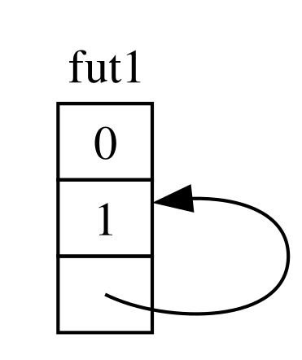
Por padrão, no entanto, qualquer objeto que tenha uma referência a si mesmo é inseguro de mover, porque referências sempre apontam para o endereço de memória real de qualquer coisa a que se referem (veja a Figura 17-5). Se você mover a própria estrutura de dados, essas referências internas ficarão apontando para o local antigo. No entanto, aquele local de memória agora é inválido. Por um lado, seu valor não será atualizado quando você fizer alterações na estrutura de dados. Por outro—coisa mais importante—, o computador agora está livre para reutilizar essa memória para outros propósitos! Você poderia acabar lendo dados completamente não relacionados mais tarde.
![Duas tabelas, descrevendo dois futures, fut1 e fut2, cada um dos quais tem uma coluna e três linhas, representando o resultado de ter movido um future para fora de fut1 para dentro de fut2. O primeiro, fut1, está acinzentado, com um ponto de interrogação em cada índice, representando memória desconhecida. O segundo, fut2, tem 0 e 1 na primeira e segunda linhas e uma seta apontando de sua terceira linha de volta para a segunda linha de fut1, representando um ponteiro que está referenciando a localização antiga na memória do future antes de ele ter sido movido.](img/trpl17-05.svg)
Teoricamente, o compilador Rust poderia tentar atualizar cada referência a um objeto sempre que ele fosse movido, mas isso poderia adicionar muita sobrecarga de desempenho, especialmente se toda uma teia de referências precisasse de atualização. Se pudéssemos, em vez disso, garantir que a estrutura de dados em questão não se mova na memória, não teríamos que atualizar nenhuma referência. É exatamente para isso que serve o borrow checker do Rust: em código seguro (safe code), ele impede que você mova qualquer item com uma referência ativa para ele.
Pin baseia-se nisso para nos dar a garantia exata de que precisamos. Quando nós fixamos (pin) um
valor envolvendo um ponteiro para esse valor em Pin, ele não pode mais se mover. Assim,
se você tem Pin<Box<SomeType>>, você na verdade fixa o valor SomeType, não
o ponteiro Box. A Figura 17-6 ilustra este processo.
![Três caixas dispostas lado a lado. A primeira é rotulada “Pin”, a segunda “b1”, e a terceira “pinned”. Dentro de “pinned” é uma tabela rotulada “fut”, com uma única coluna; ela representa um future com células para cada parte da estrutura de dados. Sua primeira célula tem o valor “0”, sua segunda célula tem uma seta saindo dela e apontando para a quarta e última célula, que tem o valor “1” nela, e a terceira célula tem linhas tracejadas e reticências para indicar que pode haver outras partes da estrutura de dados. No total, a tabela “fut” representa um future que é autorreferencial. Uma seta sai da caixa rotulada “Pin”, passa pela caixa rotulada “b1” e termina dentro da caixa “pinned” na tabela “fut”.](img/trpl17-06.svg)
Na verdade, o ponteiro Box ainda pode se mover livremente. Lembre-se: nós nos importamos em
garantir que os dados sendo referenciados em última análise permaneçam no lugar. Se um ponteiro
se move, mas os dados para os quais ele aponta estão no mesmo lugar, como na Figura
17-7, não há problema potencial. (Como um exercício independente, olhe a documentação
para os tipos, bem como o módulo std::pin e tente descobrir como você faria
isso com um Pin envolvendo um Box.) A chave é que o tipo autorreferencial
em si não pode se mover, porque ele ainda está fixado (pinned).
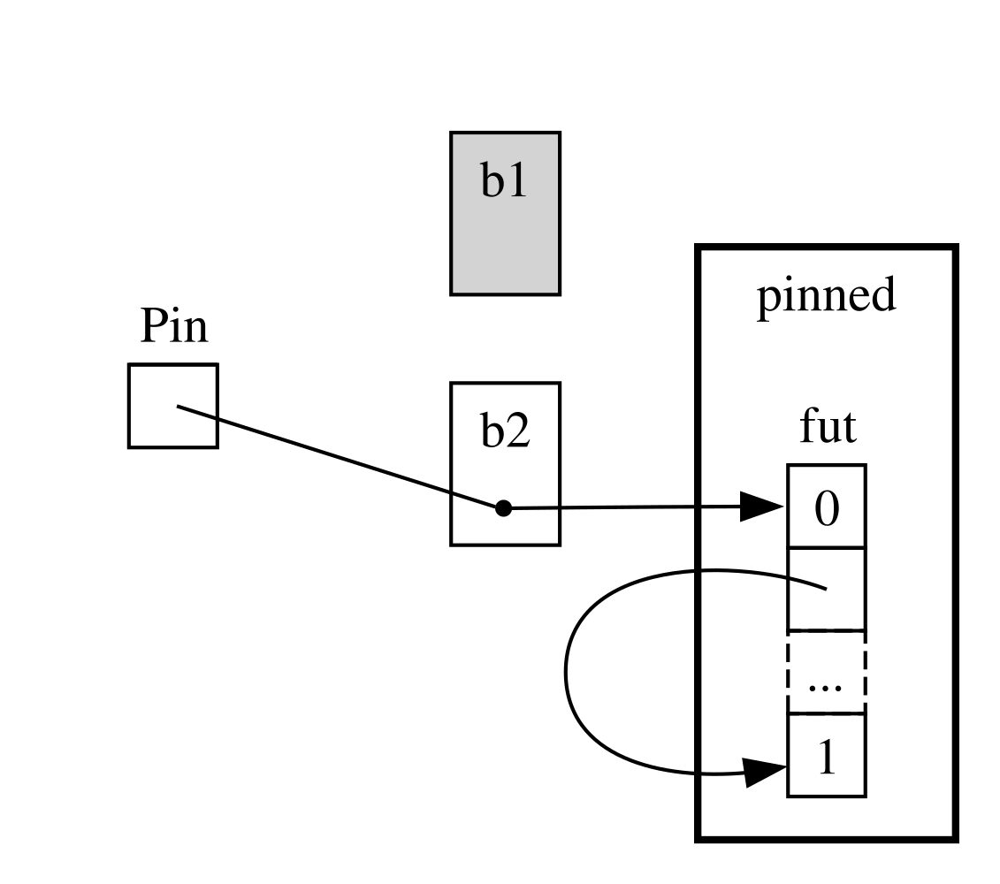
No entanto, a maioria dos tipos são perfeitamente seguros de mover, mesmo se eles acontecerem de estar
atrás de um ponteiro Pin. Só precisamos pensar sobre pinning quando itens têm
referências internas. Valores primitivos como números e Booleanos são seguros
porque eles obviamente não têm nenhuma referência interna.
Nem a maioria dos tipos com os quais você normalmente trabalha em Rust. Você pode mover
um Vec, por exemplo, sem se preocupar. Dado o que vimos até agora, se
você tiver um Pin<Vec<String>>, você teria que fazer tudo através das APIs seguras, mas
restritivas fornecidas por Pin, mesmo que um Vec<String> seja sempre seguro
para mover se não houver outras referências a ele. Precisamos de uma maneira de dizer ao
compilador que tudo bem mover itens em casos como este—e é aí que
Unpin entra em jogo.
Unpin é uma trait de marcação (marker trait), similar às traits Send e Sync que vimos no
Capítulo 16, e portanto não tem funcionalidade própria. Traits de marcação existem apenas
para dizer ao compilador que é seguro usar o tipo implementando uma dada trait em um
contexto particular. Unpin informa ao compilador que um dado tipo não
precisa manter nenhuma garantia sobre se o valor em questão pode ser seguramente
movido.
Assim como com Send e Sync, o compilador implementa Unpin automaticamente
para todos os tipos onde ele pode provar que é seguro. Um caso especial, novamente similar a
Send e Sync, é onde Unpin não é implementada para um tipo. A
notação para isso é impl !Unpin for SomeType, onde
SomeType é o nome de um tipo que sim precisa manter
essas garantias para ser seguro sempre que um ponteiro para esse tipo for usado em um Pin.
Em outras palavras, há duas coisas para manter em mente sobre a relação
entre Pin e Unpin. Primeiro, Unpin é o caso “normal”, e !Unpin é
o caso especial. Segundo, se um tipo implementa Unpin ou !Unpin apenas
importa quando você está usando um ponteiro fixado (pinned) para esse tipo como Pin<&mut
SomeType>.
Para tornar isso concreto, pense sobre uma String: ela tem um comprimento e os caracteres
Unicode que a compõem. Podemos envolver uma String em Pin, como visto na Figura
17-8. No entanto, String implementa automaticamente Unpin, assim como a maioria dos outros tipos
em Rust.
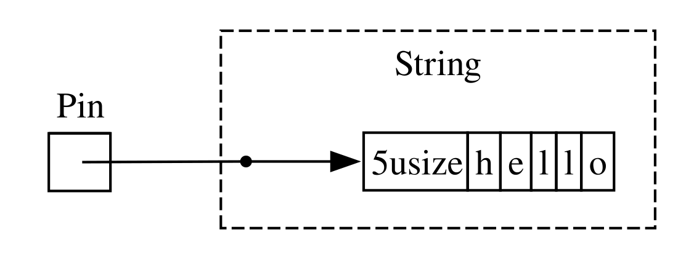
Como resultado, podemos fazer coisas que seriam ilegais se String implementasse
!Unpin em vez disso, como substituir uma string por outra no exato mesmo
local na memória como na Figura 17-9. Isso não viola o contrato de Pin,
porque String não tem referências internas que a tornem insegura para mover.
É precisamente por isso que ela implementa Unpin em vez de !Unpin.
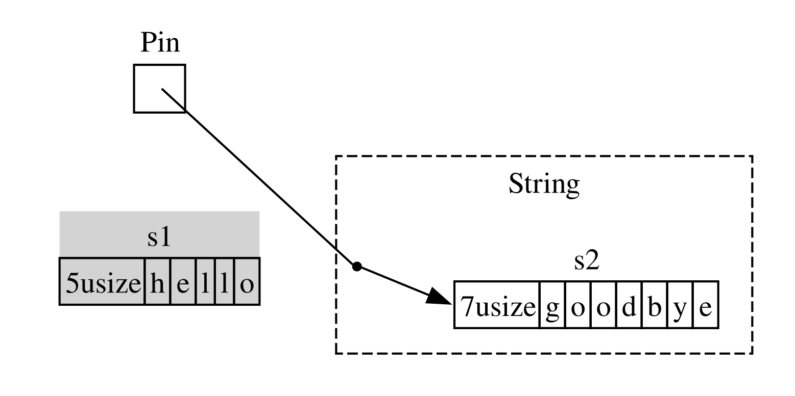
Agora sabemos o suficiente para entender os erros relatados para aquela chamada join_all
da Listagem 17-23. Originalmente tentamos mover os futures produzidos por
blocos async para um Vec<Box<dyn Future<Output = ()>>>, mas como vimos,
esses futures podem ter referências internas, então eles não implementam automaticamente
Unpin. Uma vez que os fixamos, podemos passar o tipo Pin resultante para
o Vec, confiantes de que os dados subjacentes nos futures não serão
movidos. A Listagem 17-24 mostra como corrigir o código chamando a macro pin!
onde cada um dos três futures são definidos e ajustando o tipo de trait object.
extern crate trpl; // required for mdbook test
use std::pin::{Pin, pin};
// --snip--
use std::time::Duration;
fn main() {
trpl::block_on(async {
let (tx, mut rx) = trpl::channel();
let tx1 = tx.clone();
let tx1_fut = pin!(async move {
// --snip--
let vals = vec![
String::from("hi"),
String::from("from"),
String::from("the"),
String::from("future"),
];
for val in vals {
tx1.send(val).unwrap();
trpl::sleep(Duration::from_secs(1)).await;
}
});
let rx_fut = pin!(async {
// --snip--
while let Some(value) = rx.recv().await {
println!("received '{value}'");
}
});
let tx_fut = pin!(async move {
// --snip--
let vals = vec![
String::from("more"),
String::from("messages"),
String::from("for"),
String::from("you"),
];
for val in vals {
tx.send(val).unwrap();
trpl::sleep(Duration::from_secs(1)).await;
}
});
let futures: Vec<Pin<&mut dyn Future<Output = ()>>> =
vec![tx1_fut, rx_fut, tx_fut];
trpl::join_all(futures).await;
});
}Este exemplo agora compila e roda, e poderíamos adicionar ou remover futures do vetor em tempo de execução e juntar todos eles.
Pin e Unpin são principalmente importantes para construir bibliotecas de nível mais baixo, ou
quando você está construindo um runtime em si, em vez de para código Rust do dia a dia.
Quando você vir essas traits em mensagens de erro, no entanto, agora você terá uma melhor
ideia de como corrigir seu código!
Nota: Essa combinação de
PineUnpintorna possível implementar com segurança toda uma classe de tipos complexos em Rust que de outra forma se provariam desafiadores porque são autorreferenciais. Tipos que requeremPinaparecem mais comumente em Rust async hoje, mas de vez em quando, você pode vê-los em outros contextos também.As especificidades de como
PineUnpinfuncionam, e as regras que eles são obrigados a manter, são cobertas extensivamente na documentação da API parastd::pin, então se você estiver interessado em aprender mais, esse é um ótimo lugar para começar.Se você quiser entender como as coisas funcionam “por baixo dos panos” em ainda mais detalhes, veja os Capítulos 2 e 4 do Asynchronous Programming in Rust.
A Trait Stream
Agora que você tem uma compreensão mais profunda das traits Future, Pin, e Unpin, nós
podemos voltar nossa atenção para a trait Stream. Como você aprendeu anteriormente no
capítulo, streams são similares a iteradores assíncronos. Diferente de Iterator e
Future, no entanto, Stream não tem definição na biblioteca padrão até
o momento desta escrita, mas existe uma definição muito comum do crate futures
usada em todo o ecossistema.
Vamos revisar as definições das traits Iterator e Future antes de
olhar como uma trait Stream pode fundi-las. De Iterator, nós
temos a ideia de uma sequência: seu método next fornece um
Option<Self::Item>. De Future, temos a ideia de prontidão ao longo do tempo:
seu método poll fornece um Poll<Self::Output>. Para representar uma sequência de
itens que se tornam prontos ao longo do tempo, definimos uma trait Stream que coloca essas
funcionalidades juntas:
#![allow(unused)]
fn main() {
use std::pin::Pin;
use std::task::{Context, Poll};
trait Stream {
type Item;
fn poll_next(
self: Pin<&mut Self>,
cx: &mut Context<'_>
) -> Poll<Option<Self::Item>>;
}
}A trait Stream define um tipo associado chamado Item para o tipo dos
itens produzidos pelo stream. Isso é similar a Iterator, onde pode haver
de zero a muitos itens, e diferente de Future, onde há sempre um único
Output, mesmo que seja o tipo unitário ().
Stream também define um método para obter esses itens. Nós o chamamos de poll_next, para
deixar claro que ele consulta (polls) da mesma maneira que Future::poll faz e produz uma
sequência de itens da mesma maneira que Iterator::next faz. Seu tipo de retorno
combina Poll com Option. O tipo externo é Poll, porque ele tem que ser
verificado quanto à prontidão, assim como um future faz. O tipo interno é Option,
porque ele precisa sinalizar se há mais mensagens, assim como um iterador
faz.
Algo muito similar a esta definição provavelmente acabará como parte da biblioteca padrão do Rust. Enquanto isso, é parte do kit de ferramentas da maioria dos runtimes, então você pode contar com isso, e tudo o que cobrimos a seguir deve se aplicar geralmente!
Nos exemplos que vimos na seção “Streams: Futures em Sequência”, no entanto, não usamos poll_next ou Stream, mas
em vez disso usamos next e StreamExt. Nós poderíamos trabalhar diretamente em termos da
API poll_next escrevendo manualmente nossas próprias máquinas de estado Stream, é claro,
assim como poderíamos trabalhar com futures diretamente via seu método poll. Usar
await é muito mais agradável, no entanto, e a trait StreamExt fornece o método next
para que possamos fazer exatamente isso:
#![allow(unused)]
fn main() {
use std::pin::Pin;
use std::task::{Context, Poll};
trait Stream {
type Item;
fn poll_next(
self: Pin<&mut Self>,
cx: &mut Context<'_>,
) -> Poll<Option<Self::Item>>;
}
trait StreamExt: Stream {
async fn next(&mut self) -> Option<Self::Item>
where
Self: Unpin;
// other methods...
}
}Nota: A definição real que usamos anteriormente no capítulo parece ligeiramente diferente desta, porque ela suporta versões do Rust que ainda não suportavam usar funções async em traits. Como resultado, ela se parece com isso:
fn next(&mut self) -> Next<'_, Self> where Self: Unpin;Aquele tipo
Nexté umastructque implementaFuturee nos permite nomear o lifetime da referência aselfcomNext<'_, Self>, para queawaitpossa funcionar com este método.
A trait StreamExt é também o lar de todos os métodos interessantes disponíveis
para usar com streams. StreamExt é automaticamente implementada para todo tipo
que implementa Stream, mas essas traits são definidas separadamente para permitir que a
comunidade itere em APIs de conveniência sem afetar a trait
fundamental.
Na versão de StreamExt usada no crate trpl, a trait não apenas
define o método next mas também fornece uma implementação padrão de next
que lida corretamente com os detalhes de chamar Stream::poll_next. Isso significa
que mesmo quando você precisa escrever seu próprio tipo de dado de streaming, você apenas tem
que implementar Stream, e então qualquer um que use seu tipo de dado pode usar
StreamExt e seus métodos com ele automaticamente.
Isso é tudo o que vamos cobrir para os detalhes de nível mais baixo sobre essas traits. Para encerrar, vamos considerar como futures (incluindo streams), tarefas e threads se encaixam!
Futures, Tarefas e Threads
Juntando Tudo: Futures, Tarefas e Threads
Como vimos no Capítulo 16, threads fornecem uma abordagem para concorrência. Vimos outra abordagem neste capítulo: usando async com futures e streams. Se você está se perguntando quando escolher um método em vez do outro, a resposta é: depende! E em muitos casos, a escolha não é threads ou async, mas sim threads e async.
Muitos sistemas operacionais têm fornecido modelos de concorrência baseados em threads por décadas agora, e muitas linguagens de programação os suportam como resultado. No entanto, esses modelos não são sem seus compromissos (tradeoffs). Em muitos sistemas operacionais, eles usam uma quantidade razoável de memória para cada thread. Threads também são apenas uma opção quando seu sistema operacional e hardware as suportam. Diferente de computadores desktop e móveis convencionais, alguns sistemas embarcados não têm um SO de forma alguma, então eles também não têm threads.
O modelo async fornece um conjunto diferente—e em última análise complementar—de
compromissos. No modelo async, operações concorrentes não requerem suas próprias
threads. Em vez disso, elas podem rodar em tarefas (tasks), como quando usamos trpl::spawn_task para
iniciar trabalho a partir de uma função síncrona na seção de streams. Uma tarefa é
similar a uma thread, mas em vez de ser gerenciada pelo sistema operacional, ela é
gerenciada por código em nível de biblioteca: o runtime.
Há uma razão para as APIs para criar (spawning) threads e tarefas serem tão similares. Threads agem como um limite para conjuntos de operações síncronas; concorrência é possível entre threads. Tarefas agem como um limite para conjuntos de operações assíncronas; concorrência é possível tanto entre quanto dentro de tarefas, porque uma tarefa pode alternar entre futures em seu corpo. Finalmente, futures são a unidade mais granular de concorrência do Rust, e cada future pode representar uma árvore de outros futures. O runtime—especificamente, seu executor—gerencia tarefas, e tarefas gerenciam futures. Nesse aspecto, tarefas são similares a threads leves, gerenciadas pelo runtime com capacidades adicionais que vêm de serem gerenciadas por um runtime em vez de pelo sistema operacional.
Isso não significa que tarefas async são sempre melhores que threads (ou vice
versa). Concorrência com threads é de algumas maneiras um modelo de programação mais simples
do que concorrência com async. Isso pode ser uma força ou uma fraqueza. Threads são
um pouco “fogo e esqueça” (fire and forget); elas não têm equivalente nativo a um future, então elas
simplesmente rodam até a conclusão sem serem interrompidas exceto pelo próprio
sistema operacional.
E acontece que threads e tarefas frequentemente funcionam
muito bem juntas, porque tarefas podem (pelo menos em alguns runtimes) ser movidas
entre threads. Na verdade, “por baixo dos panos”, o runtime que temos
usado—incluindo as funções spawn_blocking e spawn_task—é multithreaded
por padrão! Muitos runtimes usam uma abordagem chamada roubo de trabalho (work stealing) para
transparentemente mover tarefas entre threads, baseado em como as threads estão
sendo utilizadas atualmente, para melhorar o desempenho geral do sistema. Essa
abordagem realmente requer threads e tarefas, e portanto futures.
Ao pensar sobre qual método usar e quando, considere estas regras práticas:
- Se o trabalho é muito paralelizável (isto é, limitado por CPU), tal como processar um monte de dados onde cada parte pode ser processada separadamente, threads são uma escolha melhor.
- Se o trabalho é muito concorrente (isto é, limitado por E/S), tal como lidar com mensagens de um monte de fontes diferentes que podem chegar em intervalos diferentes ou taxas diferentes, async é uma escolha melhor.
E se você precisa tanto de paralelismo quanto de concorrência, você não tem que escolher entre threads e async. Você pode usá-los juntos livremente, deixando cada um fazer a parte em que é melhor. Por exemplo, a Listagem 17-25 mostra um exemplo bastante comum desse tipo de mistura em código Rust do mundo real.
extern crate trpl; // for mdbook test
use std::{thread, time::Duration};
fn main() {
let (tx, mut rx) = trpl::channel();
thread::spawn(move || {
for i in 1..11 {
tx.send(i).unwrap();
thread::sleep(Duration::from_secs(1));
}
});
trpl::block_on(async {
while let Some(message) = rx.recv().await {
println!("{message}");
}
});
}Começamos criando um canal async, depois criando (spawning) uma thread que toma
posse do lado remetente do canal usando a palavra-chave move. Dentro
da thread, enviamos os números 1 a 10, dormindo por um segundo entre
cada um. Finalmente, rodamos um future criado com um bloco async passado para
trpl::block_on assim como fizemos ao longo do capítulo. Nesse future, nós
aguardamos essas mensagens, assim como nos outros exemplos de passagem de mensagem que
vimos.
Para retornar ao cenário com o qual abrimos o capítulo, imagine rodar um conjunto de tarefas de codificação de vídeo usando uma thread dedicada (porque codificação de vídeo é limitada por computação) mas notificando a UI que essas operações terminaram com um canal async. Há incontáveis exemplos desses tipos de combinações em casos de uso do mundo real.
Resumo
Este não é o fim do que você verá sobre concorrência neste livro. O projeto no Capítulo 19 aplicará esses conceitos em uma situação mais realista do que os exemplos mais simples discutidos aqui e comparará a resolução de problemas com threads versus tarefas e futures mais diretamente.
Não importa qual dessas abordagens você escolha, Rust lhe dá as ferramentas que você precisa para escrever código seguro, rápido e concorrente—seja para um servidor web de alta taxa de transferência ou um sistema operacional embarcado.
A seguir, falaremos sobre maneiras idiomáticas de modelar problemas e estruturar soluções à medida que seus programas Rust ficam maiores. Além disso, discutiremos como os idiomas (idioms) do Rust se relacionam com aqueles com os quais você pode estar familiarizado da programação orientada a objetos.